|
|||||
|---|---|---|---|---|---|
| return | |||||
Acupoint Name : Binao (臂臑)
Pinyin :
Binao International Code : LI14
Aliases : Touchong (头冲), Jingchong (颈冲), Beinao (背臑), Binnao (臂脑).
Meaning : This acupoint is located on the arm. The Qi and blood within it are formed by the ascending Yang Qi from various acupoints of the Large Intestine Meridian. Abundant Yang Qi allows for free arm movement. The substance at this acupoint is formed by the ascending Yang Qi from various acupoints of the Large Intestine Meridian. The Yang Qi is strong and its flow is directly from the upper part of the body to the head and neck. This acupoint is indicated for shoulder and arm pain, arthritis, etc.
Location and Method : Located on the lateral side of the arm, at the insertion point of the deltoid muscle, on the line connecting Quchi (曲池) and Jianyu (肩髃), seven cun above Quchi (曲池).
Anatomical Location and Structure : Beneath the acupoint are skin, subcutaneous tissue, and the deltoid muscle. The skin is innervated by the lateral cutaneous nerve of the arm. The subcutaneous fascia is slightly thick and rich in gastric adipose tissue. The needle passes through the skin and subcutaneous tissue, piercing the midpoint of the deltoid muscle. This muscle is innervated by the axillary nerve of the posterior cord of the brachial plexus.
Acupoint belongs to the Five Elements
: Meridian
: Large Intestine Meridian
of Hand Yangming .
Treatment Methods - Acupuncture : Insert the needle perpendicularly 0.5-1 inch, causing local soreness and distension; or insert obliquely upwards 1-2 inches, penetrating into the deltoid muscle, causing local soreness and distension that may radiate throughout the shoulder.
Treatment Methods - Moxibustion : Apply moxa cones or warm needles for 3-7 cones; or apply gentle moxibustion with moxa sticks for 10-20 minutes.
Treatment Methods - Massage and Others : Press the acupoint in a circular motion with the index and middle fingers until a soreness is felt, for about 2-3 minutes each time. It relieves shoulder and arm pain, periarthritis of the shoulder, stiff neck, goiter, scrofula, and acute conjunctivitis.
Acupoint Functions : Unblocks meridians, regulates Qi and eliminates phlegm, clears heat and improves vision.
Indications and Clinical Applications of Acupoint : Upper limb paralysis or pain, frozen shoulder, cranial muscle spasm, eye diseases, cervical lymph node tuberculosis, headache.
Main Acupoint Combinations : 1. Arm-neck acupoint combined with Guangming acupoint for eye diseases. 2. Arm-neck acupoint combined with Jianyu acupoint for shoulder and arm pain. 3. Arm-neck acupoint combined with Naoshu, Jianyu, and Jianzhen acupoints for inability to raise the shoulder and arm. 4. Arm-neck acupoint combined with Quchi, Tianzong, and Jianyu acupoints for upper limb paralysis.
Acupoint Image :  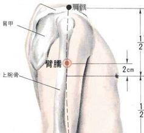
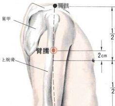
Acupoint Name : Burong
Acupoint Pinyin : Burong
Acupoint International Code : ST19
Acupoint Alias :
Acupoint Explanation : This acupoint is located below the breast. The Qi and blood it receives are the seepage fluid from the spleen earth in the upper part of the Stomach Meridian. Upon reaching this acupoint, due to the lack of external heat to vaporize and transform it, its circulation is simply a downward transmission along the meridian. This acupoint cannot accommodate the Qi and blood of the Stomach Meridian when the stomach has absorbed enough food and water. It is primarily used to treat stomach ailments.
Location and Method of Acupoint Selection : On the upper abdomen, 6 cun above the umbilicus and 2 cun lateral to the anterior midline. Anatomical
Location and Structure : At the rectus abdominis muscle and its sheath, with the transverse abdominis muscle at the next level; branches of the seventh intercostal artery and vein, and the superior epigastric artery and vein are present; at the location of branches of the seventh intercostal nerve. Five Elements Belonging to the Acupoint : Meridian Belonging to the Stomach Meridian of Foot-Yangming (English) : Earth . Treatment Methods - Acupuncture : Insert the needle perpendicularly 0.5-1 cun. Treatment Methods - Moxibustion : Apply 3-7 moxa cones; or apply moxa sticks for 5-10 minutes. Treatment Methods - Massage and Others : Press with the fingertips of both hands and make circular motions, lightly pressing for 3 minutes each time, twice a day. It can relieve symptoms of bloating and stomach pain. Acupoint function : Regulates the stomach and spleen, regulates qi and relieves pain. Indications and clinical applications : Stomach pain, abdominal distension, vomiting, loss of appetite, acid reflux, acute and chronic gastritis, gastroptosis, peptic ulcers, biliary colic, etc. Main acupoint combinations : 1. Burong (不容) combined with Zhongwan (中脘) and Gongsun (公孙) has the effect of regulating qi, harmonizing the stomach, and relieving pain, treating gastritis, gastric ulcers, stomach pain, and abdominal distension. 2. Burong (不容) combined with Zusanli (足三里), Neiguan (内关), Gongsun (公孙), and Zhongwan (中脘) treats stomach pain and abdominal distension. 3. Burong (不容) combined with Qimen (期门) has the effect of soothing the liver, regulating qi, and harmonizing the stomach, mainly treating heart pain and acid reflux. Acupoint image : Acupoint name : Biguan (髀关) Acupoint name pinyin : Biguan Acupoint international code : ST31 Acupoint alias : Acupoint explanation : Bi (髀) refers to the thigh, the part of the thigh, indicating the location of the acupoint. Guan, meaning pass or checkpoint. The name of this acupoint signifies the sedimentation and accumulation of spleen-earth particles in the Qi and blood of the Stomach Meridian at this point. The substance at this point is the strong, moist Qi transmitted from the Qichong acupoint (a riddle referring to wind). Upon reaching this point, the Qi weakens, and the spleen-earth particles, dispersed by the wind, settle and accumulate around the acupoint, like a checkpoint. This acupoint is indicated for lower back pain, cold knees, weakness and numbness, and abdominal pain. Location and method of locating the acupoint : Lie supine. Draw a line connecting the anterior superior iliac spine (the anterior point of the iliac bone) and the lateral end of the patella. Then draw a horizontal line level with the perineum. The intersection of these two lines is the Biguan acupoint. Anatomical location and structure : Beneath the acupoint are the skin, subcutaneous tissue, tensor fasciae latae, rectus femoris, and vastus lateralis. The skin is innervated by the lateral femoral cutaneous nerve of the lumbar plexus. The subcutaneous tissue contains the lateral femoral vein and superficial circumflex iliac vein, and the fascia lata, which surrounds the tensor fasciae latae, which is innervated by the superior gluteal nerve. The rectus femoris and vastus lateralis are innervated by the femoral nerve. Between the two muscles are the lateral circumflex femoral artery and vein. Acupoint classification : Acupoint belongs to the Stomach Meridian of Foot-Yangming. Acupoint classification : Earth. Acupoint treatment method: Acupuncture.
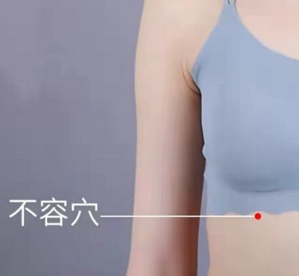
: Insert the needle perpendicularly 1.5-2.5 inches, causing local soreness and distension that can radiate to the lateral thigh, to treat lateral femoral cutaneous nerve inflammation; insert the needle obliquely 2.0-3.0 inches, with the needle tip pointing upwards, allowing the needling sensation to spread throughout the hip, to treat hip joint pain; insert the needle tip inwards, causing soreness and distension in the anterior thigh that radiates towards the knee joint, to treat lower limb disorders.
Acupoint treatment - Moxibustion : Moxibustion with moxa cones or warm needles for 5-7 cones. Moxibustion with moxa sticks for 10-20 minutes.
Acupoint treatment - Massage and others : Massage the Biguan acupoint for 5 minutes to help relieve symptoms such as lower limb weakness and numbness, lower back and knee pain, and knee coldness.
Acupoint function : Relax muscles and tendons (stretch muscles and bones, dredge meridians), dispel cold and relieve pain.
Acupoint indications and clinical applications : Lower limb paralysis, spasm of the inner and outer thigh muscles, numbness and pain in the lower limbs, knee joint pain, myasthenia gravis, inguinal lymphadenitis.
Main acupoint combinations : Combined with Fumian (伏免) acupoint: treats flaccid paralysis.
Acupoint image :
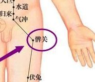
Acupoint name : Baihui (百会)
Acupoint name pinyin : Baihui
Acupoint international code : DU20
Acupoint aliases : Central acupoint, Sanyang Wuhui acupoint, Tianman acupoint, Tianpu acupoint, Sanyang acupoint, Wuhui acupoint, Dianshang acupoint.
Acupoint explanation : The head is the meeting point of all yang meridians and the origin of all meridians, and Baihui acupoint is the place where the qi of all meridians converges. Its nature is yang, yet it contains yin within yang, thus it can connect yin and yang meridians, linking all acupoints throughout the body, playing an important role in regulating the yin-yang balance of the body. Baihui acupoint is closely connected to the brain and is a key acupoint for regulating brain function. As the meeting point of all meridians, it connects the whole body. As the meeting point of all meridians, it governs all diseases, therefore Baihui acupoint treats many symptoms and is one of the commonly used acupoints in clinical practice. This acupoint is the primary acupoint for head health preservation, mainly for calming the liver and soothing the mind.
Location and Method of Acupoint Selection : Located on the head, 5 cun directly above the midpoint of the anterior hairline. This point can be easily located by finding the midpoint of the line connecting the two earlobes.
Anatomical Location and Structure : Located in the galea aponeurotica; contains the anastomosing network of the left and right superficial temporal arteries and veins and the left and right occipital arteries and veins; innervated by branches of the greater occipital nerve and frontal nerve.
Five Elements Classification :
Acupuncture Meridian Classification : Governing Vessel (Du Mai ), meeting
point. Treatment Method - Acupuncture : Insert needle horizontally 0.5-0.8 cun. Treatment Method - Moxibustion : Apply moxibustion to this acupoint for three to five minutes. The warmth, infrared rays, and magnetic field of the moxa cone stimulate the acupoint, which can treat dizziness, headache, insomnia, insufficient Yang Qi, neurasthenia, and other ailments. Daily moxibustion has health-preserving and longevity-promoting effects. Acupoint Therapy - Massage and Others : Massage the Baihui acupoint (located at the center of the top of the head) with your palm, 50 circles clockwise and 50 circles counterclockwise each time, 2-3 times daily. With consistent massage, low blood pressure will gradually disappear. Acupoint Functions : Raises Yang and lifts prolapse, tonifies Qi and consolidates the body, opens the orifices and awakens the mind. Indications and Clinical Applications : Headache, dizziness, stroke, aphasia, shock, hemorrhoids, hypertension, hypotension, hangover, insomnia, anxiety, etc. Main acupoint combinations : 1. Combined with Tianchuang (天窗) to treat aphasia due to stroke; 2. Combined with Baihui (百会), Changqiang (长强), and Dachangshu (大肠俞) to treat rectal prolapse in children; 3. Combined with Baihui (百会), Renzhong (人中), Hegu (合谷), Jianshi (间使), Qihai (气海), and Guanyuan (关元) to treat syncope, stroke, and qi collapse; 4. Combined with Naokong (脑空) and Tianshu (天枢) to treat headache; 5. Acupuncture at Baihui (百会) combined with Shenmen (神门) ear acupuncture for smoking cessation; 6. Combined with Yanglao (养老), Baihui (百会), Fengchi (风池), and Zulinqi (足临泣) to treat Meniere's syndrome; 7. Acupuncture at Baihui (百会) penetrating Qubin (曲鬓) and Tianzhu (天柱) to treat cerebral vasospasm and migraine; 8. Combined with Baihui (百会), Shuigou (水沟), and Zusanli (足三里) to treat hypotension; 9. Combined with Baihui (百会), Shuigou (水沟), and Jinggu (京骨) to treat grand mal seizures; 10. Combined with Baihui (百会) and Shenshu (肾俞) (rotary moxibustion) to treat inflammation. Acupoint Image : Acupoint Name : Baichongwo (百虫窝) Acupoint Name Pinyin : Baichongwo Acupoint International Code : EX-LE3 Acupoint Aliases : Xuexi (血郄), Baichongke (百虫窠). Acupoint Explanation : "Baichongwo" is a cardinal number meaning numerous; "Chongwo" refers to a place where pathogenic insects reside. The name Baichongwo indicates that the Qi and blood of this acupoint are characterized by damp heat. The substance of this acupoint is the Qi of the Spleen Meridian, which is damp and hot in nature. The time and region corresponding to this acupoint is the middle of summer, the time when all kinds of insects are born and reproduce. This acupoint has the function of expelling insects and relieving itching, hence the name. All diseases related to wind and insects can be treated with Baichongwo acupoint, such as rheumatic pruritus, itchy skin, and sores on the lower body. Acupoint Location and Method of Acupoint Selection : On the inner thigh, in the anterior thigh region, 3 cun above the medial end of the patella, 1 cun above the Xuehai point of the Spleen Meridian. There are 2 acupoints on each side. Anatomical location and structure of the acupoint : Located in the vastus medialis muscle, the superficial layer of the acupoint area is innervated by the anterior cutaneous branch of the femoral nerve; the deep layer is innervated by the muscular branch of the femoral nerve and the femoral artery. Acupoint classification according to the Five Elements : Acupoint classification according to the Meridian : Extra Meridian (non-meridian extra acupoint ). Acupoint treatment method - Acupuncture : Insert the needle perpendicularly 1.5-2 inches. Apply strong stimulation and heat-clearing methods such as bloodletting and cupping at the Baichongwo acupoint to alleviate various symptoms of skin itching. Acupoint treatment method - Moxibustion : Apply 3-7 moxa cones; apply moxa sticks for 5-15 minutes. Acupoint treatment method - Massage and others : Massaging the Baichongwo acupoint daily, especially in winter, can have a good antipruritic effect. Acupoint function : Dispels wind and invigorates blood, expels insects and relieves itching. Indications and Clinical Applications of Acupoint : Pruritus, urticaria, rheumatic prurigo, scrotal eczema, sores on the lower body, ascariasis, knee joint disease, kidney sores, postpartum wind. Main Acupoint Combinations : 1. Combined with Quchi (LI11) and Xuehai (SP10) to clear heat, dispel wind, cool blood, and relieve itching, mainly for urticaria; 2. Combined with Quchi (LI11), Hegu (LI4), Jianshi (PC5), Daling (PC7), Zusanli (ST36), Weizhong (BL40), and Xingjian (LR2) to clear heat and promote diuresis, mainly for scabies and tinea; 3. Combined with Sifeng (SP4), Sanjiaoshu (BL22), Weishu (BL21), and Zhongwan (CV12) to strengthen the spleen, promote digestion, and expel parasites, mainly for malnutrition. Acupoint Image : Acupoint Name : Bingfeng (秉风) Acupoint Name Pinyin : Bingfeng

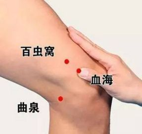
International Code for Acupoint : SI12.
Alternative Name: Jianjie (肩解).
Meaning : The substance at this acupoint is the Qi from the Tianzong (天宗) acupoint. Upon reaching this point, it expands due to heat absorption and transforms into wind Qi. This wind Qi circulates along the Small Intestine Meridian, as if under its control, hence the name. Indications: Cervical spondylosis, scapular pain, and numbness/soreness in the upper limbs.
Location and Method : In the scapular region, in the center of the supraspinous fossa, directly above Tianzong (天宗), where a depression appears when the arm is raised.
Anatomical Location and Structure : Located at the center of the superior border of the scapular spine, superficially bordered by the trapezius muscle, and further below by the supraspinatus muscle; contains the scapular artery and vein; innervated by the supraclavicular nerve and accessory nerve, with the suprascapular nerve in the deeper layer.
Acupoint Belongs to the Five Elements :
Meridian
Belongs to the Small Intestine Meridian of Hand - Taiyang;
Five Elements Belong to the Meridian : Fire .
Acupoint Treatment - Acupuncture : Insert needle perpendicularly 0.5-1 cun.
Acupoint Treatment - Moxibustion : Apply 3-5 moxa cones; or apply moxa sticks for 5-10 minutes.
Acupoint Treatment - Massage and Others : Press and rub Bingfeng with your thumb about 200 times, or press and rub for 3-5 minutes, persist daily, which can treat shoulder and back pain.
Acupoint Functions : Dispels wind and activates collaterals, stops cough and resolves phlegm. Acupoint
Indications and Clinical Applications : Frozen shoulder, scapular pain, numbness and tingling in the upper limbs, bronchitis, etc.
Main Acupoint Combinations : Combined with Tianzong to treat scapular pain.
Acupoint Image :
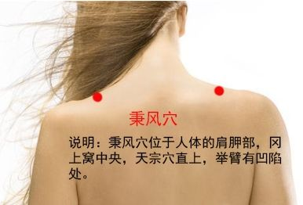
Acupoint Name : Bulang
Acupoint; Pinyin : Bulang
; International Code : KI22
; Alias : Bulang.
Acupoint Explanation : "Bu" means walking, and "Lang" means corridor. The name of this acupoint signifies that the cold, damp air transmitted from the Kidney Meridian absorbs heat here and transforms into wind, rising upwards. The substance at this acupoint is the cold, damp air transmitted from the Youmen acupoint. Upon reaching this point, the air absorbs heat, expands, and transforms into wind, which blows upwards, causing the spleen soil particles to roll upwards, much like a person walking in a corridor, hence the name. This acupoint is commonly used to treat pleurisy, intercostal neuralgia, rhinitis, decreased sense of smell, gastritis, vomiting, loss of appetite, bronchitis, and rectus abdominis muscle spasm.
Acupoint Location and Method : On the chest, in the 5th intercostal space, 2 cun lateral to the anterior midline.
Anatomical Location and Structure : At the origin of the pectoralis major muscle, there are the external intercostal ligament and internal intercostal muscles; there are the 5th intercostal artery and vein; the anterior cutaneous branch of the 5th intercostal nerve is distributed here, with the 5th intercostal nerve deep to it.
Acupoint Classification by Five Elements :
Acupoint
Classification by Meridian : Kidney Channel of Foot-Shaoyin.
Acupoint Classification by Five Elements : Water .
Treatment Methods - Acupuncture : Oblique insertion 0.3-0.5 cun, deep insertion is not recommended.
Treatment Methods - Moxibustion : 3-5 moxa cones; or moxa sticks for 5-10 minutes.
Treatment Methods - Massage and Others : For acute mastitis, massage from the iliac crest towards the nipple 50-100 times.
Acupoint Functions : Promotes spleen function, relieves chest tightness and regulates qi, stops cough and relieves asthma.
Indications and Clinical Applications : Bronchitis, intercostal neuralgia, gastritis, chest pain, cough, asthma, vomiting, mastitis.
Main Acupoint Combinations : 1. Combined with Dingchuan and Lieque to treat cough and asthma caused by external pathogens and internal injuries; 2. Combined with Xinshu and Neiguan to treat chest pain and palpitations.
Acupoint Image :
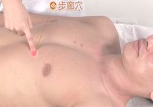
Acupoint Name : Benshen (本神)
Acupoint Name Pinyin : Benshen
Acupoint International Code : BG13
Acupoint Alias :
Acupoint Explanation : Ben (本) means the root of a person, and also refers to Qi (vital energy). This indicates that the substance within the acupoint is Qi from the heavens. Shen (神) means wind in the heavens, indicating that the movement of the substance within the acupoint is the horizontal movement of wind Qi. The name Benshen signifies that the condensed moisture from the heavens of the head converges here and is transmitted along the Gallbladder Meridian. Because this acupoint is located on the upper part of the head, on the outer side of the body, in the human coordinate system, it is at the highest and outermost position, just like Baihui (百会) on the top of the head (Benshen and Baihui are like the tops of two different mountains). Since there is no Qi and blood from the Gallbladder Meridian flowing to this acupoint, the Qi and blood within the acupoint are in a state of emptiness. Therefore, the condensed moisture from the heavens outside the acupoint converges into the acupoint, making the Qi and blood within the acupoint purely heavenly Qi, and its movement is horizontally downward to Yangbai (阳白) acupoint, hence the name. This acupoint is mainly used to treat headaches, dizziness, etc.
Location and Method of Acupoint Selection
: On the head, 0.5 cun above the anterior hairline, 3 cun lateral to Shenting (HT4), at the junction of the inner two-thirds and outer one-third of the line connecting Shenting and Touwei (ST8). Anatomical Location and Structure : Branches of the posterior auricular artery and vein; innervated by the confluence of the greater occipital nerve and lesser occipital nerve. Five
Elements Affiliation : Meridian Affiliation : Gallbladder Meridian of Foot-Shaoyang, Yangwei Meridian. Five Elements Affiliation : Wood . Acupuncture Treatment : Insert needle perpendicularly 0.5-0.8 cun. Moxibustion Treatment : Moxibustion is applicable. Massage and Other Treatments : Apply pressure vertically to the acupoint with the tip of the thumb knuckle, pressing and kneading until a noticeable sensation of soreness, numbness, distension, or pain is produced. Continue for several seconds, then gradually relax. Then, gently rub the acupoint back and forth with the thenar eminence until the area feels warm. Repeat this process, alternating between left and right sides. Press each acupoint for 5-10 minutes each time, once or twice daily. Acupoint function : Absorbs dampness and reduces turbidity. Acupoint indications and clinical applications.
Indications : Vascular (neural) headache, cerebrovascular disease, neurasthenia, incomplete cerebral development in children, dizziness, epilepsy, infantile convulsions, stiff neck and neck, chest and rib pain, hemiplegia.
Main acupoint combinations : 1. Combined with Qianding, Xinhui, and Tianzhu to treat infantile convulsions; 2. Combined with Shuigou, Taiyang, Hegu, Dazhui, Tianzhu, and Baihui to treat stroke with unconsciousness and infantile convulsions.
Acupoint image : 

Acupoint name : Baihuanshu.
Acupoint name pinyin : Baihuanshu
. International acupoint code : BL30.
Acupoint aliases : Yuhuanshu, Yufangshu, Yaoshu, Jiejiyu.
Acupoint explanation : The place where the body stores essence is called "Baihuan" or "Yuhuan". This acupoint corresponds to the essence chamber, the place where the body's essence is transported. It is mainly used to treat excessive leukorrhea in women and seminal emission in men, hence the name. The name of this acupoint indicates that the qi in the gluteal muscle layer is transported to the bladder meridian through this acupoint. This acupoint is indicated for irregular menstruation, leukorrhea, and lumbosacral pain.
Location and method of acupoint selection : Sacral region, level with the 4th posterior sacral foramen, 1.5 cun lateral to the midline of the sacrum.
Anatomical location and structure : Located in the
gluteus maximus muscle , below the medial border of the sacrotuberous ligament, with the inferior gluteal artery and vein, and the internal pudendal artery and vein in the deeper layer. It is
innervated by the middle and inferior gluteal cutaneous nerves, and the pudendal nerve in the deeper layer. Five Elements classification :
Meridian : Bladder Meridian of Foot-Taiyang.
Five Elements classification : Water.
Treatment methods - Acupuncture : Insert needle perpendicularly 1-5 cun.
Treatment methods - Moxibustion : Apply 3-7 moxa cones; or apply moxa sticks for 5-15 minutes.
Treatment methods - Massage and others : Press and rub with the thumb. Massage Baihuanyu (GB20) with your thumb about 200 times, or massage for 3-5 minutes, to treat lower back and leg pain.
Acupoint functions : regulates menstruation and stops leukorrhea, tonifies the kidneys and replenishes essence, promotes urination.
Indications and clinical applications : enuresis, seminal emission, irregular menstruation, leukorrhea, hernia, lumbosacral pain. Lumbosacral pain, sciatica, endometritis, anal sphincter spasms, sequelae of poliomyelitis, lower limb paralysis, constipation, urinary retention.
Main acupoint combinations : 1. Combined with Weizhong (BL40) to treat lower back pain. 2. Combined with Pishu (BL20), Shenshu (BL23), Daimai (GB25), Qihai (CV6), Zusanli (ST36), Sanyinjiao (SP6), and Dachangshu (BL25) to treat leukorrhea. 3. Combined with Guanyuan (CV4), Taixi (KI3), and Sanyinjiao (SP6) to treat seminal emission and leukorrhea. 4. Combined with Chengfu (BL66) and Dachangshu (BL25) to treat difficulty in urination and defecation. 5. Combined with Wangu (GB21), Xiaochangshu (BL27), and Pangguangshu (BL28) to treat yellow urine. 6. Combined with Baihuanshu, Xiaochangshu, and Zhonglushu acupoints, this acupoint treats lower back pain.
Acupoint image : 

Acupoint name : Baohuang (胞肓).
Acupoint name pinyin : Baohuang .
International acupoint code : BL53 .
Acupoint alias : Jinggong (精宫).
Acupoint explanation : Bao refers to the bladder, and Huang refers to the bladder membrane. The substance at this acupoint is a fatty substance from the uterus, which cools and descends to the ground after dissipating heat at this point. It is similar in nature to the fatty substance transported outward from the diaphragm below the heart, hence the name. This acupoint is mainly used to treat borborygmus, abdominal distension, constipation, urinary retention, and lower back pain.
Acupoint location and method : On the buttocks, level with the second posterior sacral foramen, 3 cun lateral to the midline of the sacrum.
Anatomical location and structure : Contains the gluteus maximus, gluteus medius, and gluteus minimus muscles; directly opposite the superior gluteal artery and vein; innervated by the superior gluteal cutaneous nerve, with the superior gluteal nerve deeper.
Acupoint Classification by Five Elements :
Acupoint
Classification by Meridian : Bladder Meridian of Foot-Taiyang
Acupoint Classification by Five Elements : Water
Acupoint Treatment - Acupuncture : Insert needle perpendicularly 1-1.5 cun.
Acupoint Treatment - Moxibustion : Apply 5-7 moxa cones; or apply moxa sticks for 5-15 minutes.
Acupoint Treatment - Massage and Others : Press and rub with the thumb. Press and rub Baowang (PC4) with the thumb about 200 times, or press and rub for 3-5 minutes, persist daily, to treat lower back pain, borborygmus, abdominal distension, etc.
Acupoint Functions : Tonifies the kidneys and strengthens the lower back, promotes urination and defecation.
Acupoint Indications and Clinical Applications : Cystitis, urethritis, urinary retention, orchitis, enteritis, abdominal distension, constipation, sciatica, rectus abdominis spasm, soft tissue diseases of the lower back.
Main Acupoint Combinations : Combined with Weizhong (BL40) to treat lower back pain.
Acupoint Image :
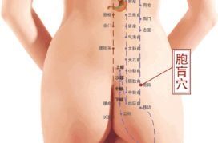
Acupoint Name : Baxie (八邪穴)
Acupoint Name Pinyin : Baxie
Acupoint International Code : EX-UE9
Acupoint Alias : Baguan (八关).
Acupoint Explanation : "Eight" refers to quantity; there are 8 acupoints on the back of both hands. "Evil" refers to pathogenic factors. This acupoint helps to unblock local Qi and blood, preventing various pathogenic factors from invading the body. Hence the name. This acupoint is mainly used to treat finger joint diseases, headaches, sore throats, etc.
Acupoint Location and Method of Locating the Acupoint : Located on the back of the fingers, with a slight fist clenched, between the 1st and 5th fingers, at the junction of the red and white skin behind the web of the fingers, a total of 8 acupoints on both sides.
Anatomical Location and Structure of the Acupoint : Beneath the acupoint are skin, subcutaneous tissue, and interosseous muscles. It is innervated by the superficial branch of the radial nerve and the dorsal branch of the ulnar nerve.
Acupoints' Five Elements Classification :
Acupoints' Meridian
Classification : Extra Meridian
Acupoints (English) : Non-meridian extra acupoints.
Acupoint Treatment Methods - Acupuncture : Oblique insertion upwards 0.5-0.8 cun, or pricking with a three-edged needle to induce bleeding.
Acupoint Treatment Methods - Moxibustion : Gently apply moxibustion to the Eight Evil Points for 10-15 minutes, once a day, to relieve and treat hand joint diseases, headaches, cold hands and feet, etc.
Acupoint Therapy - Massage and Others : 1. Use the tip of your thumb to gently press and rub each acupoint 50 times daily. This can treat finger joint diseases and finger numbness. 2. Scrape the Baxie acupoints with the corner of a scraping board until slight petechiae appear. Do this once a day to relieve headaches and sore throats.
Acupoint Functions : Dispels wind and unblocks meridians, clears heat and detoxifies.
Acupoint Indications and Clinical Applications : Finger joint diseases, finger numbness, fever, eye pain, headache, stiff neck, sore throat, toothache, snake bites, arm redness and swelling, etc.
Main Acupoint Combinations :
Acupoint Image :
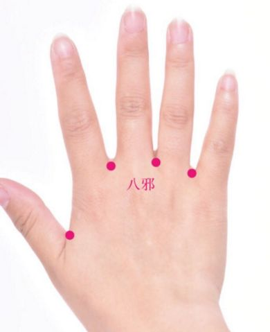
Acupoint Name : Bafeng
Acupoint Pinyin : Bafeng
Acupoint International Code : EX-LE10
Acupoint Aliases : Bachong, Yinduba.
Acupoint Explanation : Eight, a cardinal number; wind, wind-cold evil, one of the pathogenic factors. There are 8 acupoints in total, located between the 5th toe, hence the name. This acupoint is primarily used to treat toothache, stomachache, and irregular menstruation.
Location and method of acupoint selection : Located on the dorsum of the foot, between the 1st to 5th toes, at the junction of the red and white skin behind the web of the toes. There are four acupoints on each side, for a total of eight acupoints. The patient should be seated or supine, locating the acupoint at the end of the web between each of the five toes .
Anatomical location and structure of the acupoint : Beneath the acupoint are skin, subcutaneous tissue, and the extensor digitorum longus and brevis tendons of the third and fourth toes. The superficial peroneal nerve and sural nerve are distributed there.
Acupoint classification according to the Five Elements : Acupoint classification according to the Meridian : Non-meridian extra acupoint . Treatment method - Acupuncture : Oblique insertion upwards 0.5-0.8 cun, or bleeding with a three-edged needle. Treatment method - Moxibustion : Gentle moxibustion with moxa sticks for 10-15 minutes, once a day, can treat headaches, malaria, and other wind-related illnesses. Acupoint Therapy - Massage and Others : 1. Pinch and rub each of the eight Feng acupoints 50 times with the tip of your thumb. Long-term massage has the effect of clearing heat and detoxifying, and can treat toothache, swelling and pain in the dorsum of the foot, irregular menstruation, etc. 2. Use a scraping board to scrape and rub the eight Feng acupoints until slight petechiae appear. Do this once a day to treat athlete's foot, swelling of the dorsum of the foot, etc. Acupoint Functions : Dispels wind and unblocks the meridians, clears heat and detoxifies. Acupoint Indications and Clinical Applications : Toothache, stomachache, headache, tooth neuralgia, intermittent fever, pulmonary hemorrhage, swelling and pain in the dorsum of the foot, irregular menstruation, etc. Main Acupoint Combinations : Acupoint Image: Acupoint Name: Chize Acupoint Name Pinyin : Chize Acupoint International Code : LU5 Acupoint Aliases : Guishou, Guitang. Acupoint Explanation : The inner side of the forearm is called Chi; Ze refers to a swamp, a low-lying place where water gathers. This acupoint is the He-Sea point of the Hand Taiyin Meridian, belonging to the Water element. Located in the elbow crease, it is named so because the Qi of the Hand Taiyin Meridian converges here, resembling the gathering place of water. This acupoint primarily clears and disperses lung Qi, drains fire, and relieves adverse Qi flow. Location and method of locating the acupoint : Located on the elbow of the arm. To locate the acupoint, first raise the arm. There is a thick tendon in the center of the inner side of the arm; the acupoint is located lateral to this tendon (or in the depression on the radial side of the biceps brachii muscle within the elbow crease). 3-4 cm above this acupoint, where strong pressure will elicit pain, is the "Upper Chize" point. Anatomical location and structure : Skin -> Subcutaneous tissue -> Brachioradialis muscle -> Brachialis muscle. Superficially, the lateral cutaneous nerve of the forearm is distributed; deeply, the radial nerve trunk passes through, along with its deep branch, muscular branches of the musculocutaneous nerve, and the anterior branch of the radial collateral artery (a branch of the deep brachial artery). At the elbow joint, lateral to the biceps brachii tendon, at the origin of the brachioradialis muscle; there are branches of the radial recurrent artery and vein, and the cephalic vein; the lateral cutaneous nerve of the forearm is distributed here, and the radial nerve runs directly below. Acupoint belongs to the Water element in the Five Elements theory . It belongs to the Lung Meridian of Hand-Taiyin. Treatment methods: Acupuncture: Insert the needle perpendicularly 0.3-0.5 cun. Moxibustion : Apply moxa stick for 5-10 minutes. Massage and other methods : First, pinch and knead the Shaoze acupoint on the little finger 20 times, then rub and press the Tanzhong acupoint for 2 minutes, then press the Chize acupoint 30 times, and finally, use the pads of the middle and ring fingers to press the Rugen acupoint with slight force for 3 minutes. Continue daily until complete recovery. Treats acute mastitis. Acupoint Functions : Clears heat and harmonizes the stomach, unblocks meridians and relieves pain, clears and disperses lung qi, drains fire and descends rebellious qi. Acupoint Indications and Clinical Applications : Common cold, sore throat, tonsillitis, laryngitis, pharyngitis, bronchitis, pertussis, pneumonia, pleurisy, intercostal neuralgia, erysipelas, malposition of the fetus, measles, hypertension, pulmonary tuberculosis, acute gastroenteritis, elbow joint and surrounding soft tissue diseases. Main Acupoint Combinations : 1. Combined with Hegu (LI4), it promotes qi circulation, removes blood stasis and relieves pain, mainly treating elbow and arm spasms and difficulty in flexion and extension of the elbow joint. 2. Combined with Feishu (BL13), it descends qi, stops cough and relieves asthma, mainly treating cough and asthma. 3. Combined with Weizhong (BL40), it clears heat and resolves dampness, mainly treating vomiting and diarrhea. 4. Combined with Taiyuan (LU9) and Jingqu (LU8), it treats cough and asthma. 5. Combined with Kongzui (LU6), it treats hemoptysis and tidal fever. 6. Combined with Quchi (LI11), it treats elbow and arm spasms. Acupoint Image : Acupoint Name : Zanzhu (攒竹) Acupoint Name Pinyin : Cuanzhu Acupoint International Code : BL2 Acupoint Aliases : Meitou (眉头), Meiben (眉本), Yuanzai (圆在), Shiguang (始光), Yeguang (夜光), Mingguang (明光), Guangming (光明), Yuanzhu (圆柱). Acupoint Explanation : Zanzhu. Zan means to gather. Zhu refers to bamboo in the mountains and forests. The name Zanzhu signifies that the cold and damp air of the Bladder Meridian absorbs heat and ascends from here. This acupoint is mainly used to treat headaches, dizziness, nearsightedness, vomiting, etc. Acupoint Location and Method of Acupoint Selection : On the face, in the depression at the inner end of the eyebrow, at the supraorbital notch. Acupoint Anatomical Location and Structure : It is innervated by the medial branch of the frontal nerve and the frontal artery and vein. Acupoint Belongs to the Five Elements 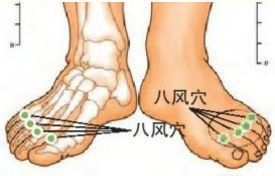
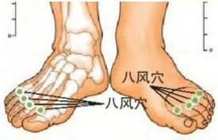 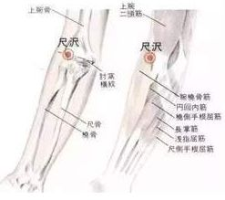
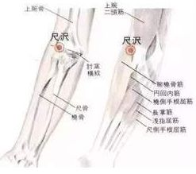
Acupoint Belongs
to : Bladder Meridian of Foot-Taiyang Five
Elements : Water
Acupoint Treatment - Acupuncture : Insert the needle horizontally or obliquely towards the center of the eyebrow or the inner edge of the eye socket, 0.5-0.8 cun, or perpendicularly 0.2-0.3 cun. Acupoint Treatment - Moxibustion : Moxibustion is contraindicated. Acupoint
Treatment
- Massage and Others : 1. Press and rub the Zanzhu acupoint with your thumb 100-200 times daily to relieve hiccups. 2. Massage the Zanzhu acupoint with your thumb and index finger in a circular motion to immediately relax tired eyes. 3. Gently close your eyes and use a scraping board at a 45° angle to scrape from the inner corner of the eyebrow to the outer corner for 1-3 minutes. Do this once a day to improve headaches and eye problems. Acupoint Functions
: Absorbs heat and generates qi, soothes the liver and improves eyesight, and refreshes the mind.
Acupoint Indications and Clinical Applications : Headache, dizziness, vomiting, facial paralysis, blurred vision, tearing, red and swollen eyes, eyelid twitching, supraorbital neuralgia, ptosis, acute lumbar sprain, facial muscle spasm.
Main Acupoint Combinations : 1. Combined with Houxi (SI3) and Yemen (SI1) to treat red and swollen eyes; 2. Combined with Lieque (LU7) and Jiache (ST6) to treat facial paralysis and facial muscle spasm.
Acupoint Image :  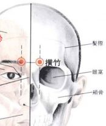
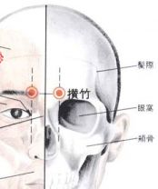
Acupoint Name : Ciliao (次髎)
Acupoint Name Pinyin : Ciliao
Acupoint International Code : BL32
Acupoint Alias :
Acupoint Explanation : Ciliao (次) means "secondary," opposite to Shangliao (上髎). Liao (髎) means orifice. The name of this acupoint signifies that the terrestrial water of the Bladder Meridian flows into the body from the surface here. The substance at this acupoint is the terrestrial water descending from the upper part of the Bladder Meridian. After reaching this acupoint, it flows into the terrestrial part from the terrestrial orifice, hence the name. This acupoint is mainly used to treat hernia, difficulty in urination and defecation, dysmenorrhea, and lower back pain.
Location and Method of Acupoint Selection : In the sacral region, below and medial to the posterior superior iliac spine, corresponding to the second posterior sacral foramen.
Anatomical Location and Structure : At the origin of the gluteus maximus muscle; at the posterior branches of the lateral sacral artery and vein; where the posterior branch of the second sacral nerve passes. Five Elements Classification
: Belongs to the Bladder Meridian of Foot-Taiyang : Water. Treatment Methods - Acupuncture : Insert needle perpendicularly 1-1.5 cun. Treatment Methods - Moxibustion : Apply 3-7 moxa cones; or apply moxa sticks for 5-15 minutes. Treatment Methods - Massage and Others : Use the back of a loosely clenched fist to tap the acupoint, or tap with both hands simultaneously. Apply slight pressure during massage; a distinct tapping sound will be heard. The stimulation of the acupoint is transmitted to the pelvic acupoints through the nerve foramen. Massage has therapeutic effects on lower back pain, irregular menstruation, dysmenorrhea, seminal emission, and lower limb weakness and paralysis. Acupoint functions : Tonifies the lower jiao, strengthens the spleen and eliminates dampness, strengthens the waist and promotes diuresis. Acupoint indications and clinical applications : Hernia, irregular menstruation, dysmenorrhea, leukorrhea, dysuria, seminal emission, lower back pain, lower limb weakness and paralysis, endometritis, pelvic inflammatory disease, sexual dysfunction, urinary tract infection. Main acupoint combinations : 1. Combined with Sanyinjiao, Zhongji, and Shenshu to treat enuresis; 2. Combined with Sanyinjiao to treat irregular menstruation and dysmenorrhea; 3. Combined with Weizhong to treat lumbosacral pain; 4. Combined with Xuehai to treat dysmenorrhea. Acupoint image : Acupoint name : Chengjiang (承浆) Acupoint name pinyin : Chengjiang International acupoint code : RN24 Acupoint aliases : Tianchi, Guishi, Xuanjiang, Yangjiang, Chuijiang. Acupoint explanation : Chengjiang. Cheng means to bear. "Jiang" refers to a mixture of water and soil. The name of this acupoint signifies the gathering of cold, descending water from the Ren meridian and the terrestrial water from the Stomach meridian. The substance at this acupoint is the terrestrial water transmitted from the Dicang acupoint of the Stomach meridian and the cold, descending terrestrial fluid from the Lianquan acupoint of the Ren meridian. Upon reaching this point, they converge, making this acupoint a support for the terrestrial water, hence the name. This acupoint is primarily used to generate fluids, astringe fluids, relax muscles and tendons, and promote blood circulation. Location and Method of Acupoint Selection : Located on the face, in the depression at the center of the mentolabial sulcus. Anatomical Location and Structure : Between the orbicularis oris and mentalis muscles; branches of the inferior labial artery and vein are present; branches of the facial nerve and mental nerve are distributed here. Five Elements Affiliation : Acupoint Meridian Affiliation : Ren meridian, the meeting point of the Ren meridian and the Stomach meridian of Foot Yangming. Acupoint Meridian Affiliation (English) : Crossing points. Acupoint Meridian Affiliation: Five Elements Affiliation : Acupoint Treatment - Acupuncture : Oblique insertion 0.2~0.3 cun. Acupoint Therapy - Moxibustion : Apply moxibustion with moxa sticks for 5-10 minutes. Acupoint Therapy - Massage and Others : Sit upright and press the acupoint with the pad of your index finger, or gently rub the acupoint with the pad of your index or middle finger. The pressure should be gentle and penetrating, not excessive. A slight soreness or distension in the area is ideal. Massage for 3-5 minutes each time, morning and evening, for excellent health benefits. Acupoint Functions : Promotes body fluid production, astringes fluids, relaxes muscles and tendons. Acupoint Indications and Clinical Applications : Facial paralysis, oral ulcers, stiff neck, tight lips, facial swelling, toothache, bleeding gums, swollen gums, drooling, oral ulcers, sudden aphonia, diabetes, urinary incontinence, epilepsy. Main Acupoint Combinations : 1. Combined with Weizhong (BL40) to treat persistent nosebleeds; 2. Combined with Fengfu (GV16) to treat stiff neck and headache, toothache; 3. Combined with Zanzhu (BL2) and Sibai (ST2) to treat facial muscle spasms. 4. Combined with Xiaguan (ST7) and Hegu (LI4) acupoints, it treats trigeminal neuralgia. Acupoint image : Acupoint name : Chengqi (承泣) . Acupoint name pinyin : Chengqi . International acupoint code : ST1 . Acupoint aliases : Xixue (鼷穴), Mianliao (面髎), Xixue (溪穴).
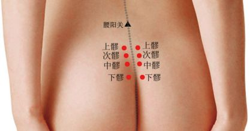
 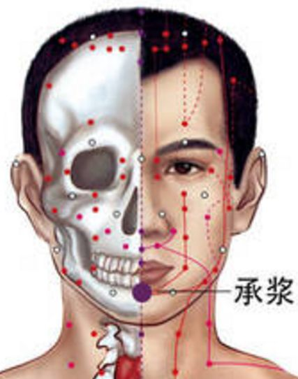
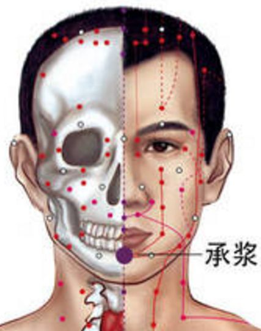
Acupoint Explanation : Chengqi (承泣). Cheng means to receive. Qi means tears or fluids. The name Chengqi signifies that the Qi and blood of the Stomach Meridian originate from this acupoint. The substance at this acupoint is the ascending Qi and blood of the Stomach Meridian. In the internal meridians, Qi and blood ascend in the form of Qi. After exiting the body's surface meridians, the Qi cools and liquefies into meridian water. This meridian water is located at the uppermost part of the Stomach Meridian and is in an unstable state, like tears about to drip, hence the name Chengqi (承泣). Chengqi is the Stomach Meridian acupoint closest to the eye and is an important acupoint for eye health.
Acupoint Location and Method : On the face, directly below the pupil, between the eyeball and the lower orbital margin.
Anatomical Location and Structure : Above the lower orbital margin, in the orbicularis oculi muscle. Deep within the orbit are the inferior rectus and inferior oblique muscles; branches of the infraorbital artery and vein, and branches of the ophthalmic artery and vein; innervated by branches of the infraorbital nerve and the muscular branches of the inferior branch of the oculomotor nerve, and branches of the facial nerve.
Acupoints belong to the Five Elements :
Acupoints belong to the Stomach Meridian of Foot-Yangming, Yangqiao
Meridian. Acupoint Treatment - Acupuncture : Straight insertion. Instruct the patient to look upwards, gently fix the eyeball, and slowly insert the needle 0.5-1 inch along the infraorbital wall. Do not insert too deeply. Do not twist or lift the needle excessively. After removing the needle, apply
local pressure for 1-2 minutes to prevent bleeding. Alternatively, insert horizontally 0.5-0.8 inch, penetrating towards the inner canthus of the eye. Local soreness and distension may occur, potentially causing tearing. If the needle is inserted too deeply or obliquely, it may injure the optic nerve. When the needle reaches a depth of 2 inches, it can penetrate the nerve canal and injure the brain, causing serious consequences. Acupoint Treatment - Moxibustion : Moxibustion is contraindicated. Acupoint Treatment - Massage and Others : Extend both hands straight and use the pads of the index fingers to massage the acupoints on both sides for 1-3 minutes each time. This can treat eye diseases. Acupoint Functions : Dispels wind and clears heat, brightens the eyes and stops tearing. Indications and Clinical Applications : Red and swollen eyes, tearing in the wind, night blindness, color blindness, myopia, hyperopia, astigmatism, facial paralysis, acute and chronic conjunctivitis, cataracts, presbyopia, glaucoma, strabismus, optic nerve atrophy, facial nerve paralysis, facial muscle spasm, etc. Main Acupoint Combinations : 1. Chengqi (ST1) combined with Fengchi (GB20) and Jingming (BL1), with ear tip bloodletting, has the effect of dispelling wind and clearing heat, purging fire and detoxifying, mainly treating red and swollen eyes. 2. Chengqi (ST1) combined with Zusanli (ST36), Hegu (LI4), Zanzhu (BL2), and Fengchi (GB20), has the effect of tonifying qi and blood, dispelling wind and clearing heat, mainly treating ectropion and facial paralysis. Acupoint Image : Acupoint Name : Chengfu (承扶) Acupoint Name Pinyin : Chengfu Acupoint International Code : BL36 Acupoint Aliases : Rouxi (肉郄), Yinguan (阴关), Pibu (皮部). Acupoint Explanation : Supporting. Cheng means to bear or support. Fu means to assist. The name Chengfu signifies that the terrestrial water of the Bladder Meridian evaporates and disperses in large quantities at this point. The substance at this acupoint consists of the descending terrestrial water of the Bladder Meridian and spleen earth particles carried within it. Since most of the Bladder Meridian water flows to the terrestrial level at the four acupoints of Shangliao, Ciliao, Zhongliao, and Xialiao, by this point the qi and blood have become a mixture of water and spleen earth particles. At this point, the qi and blood undergo heat absorption and vaporization; the water vaporizes and ascends to the celestial level, while the spleen earth particles solidify around the acupoint. The solidified spleen earth is dry and hard, effectively supporting and preventing the spleen earth lost with the Bladder Meridian water, hence the name. This acupoint is indicated for pain in the lumbosacral region, buttocks, and thighs, hemorrhoids, and for enhancing sexual function. Location and method of acupoint location : On the posterior thigh, at the midpoint of the transverse gluteal crease. Anatomical location and structure : Below the gluteus maximus muscle; accompanied by the sciatic nerve artery and vein; innervated by the posterior femoral cutaneous nerve, with the sciatic nerve deeper. Acupoints belong to the Five Elements : Acupoints belong to the Meridian : Bladder Meridian of Foot-Taiyang. Acupoints belong to the Five Elements : Water . Acupoint Treatment - Acupuncture : Insert the needle perpendicularly 1-2 inches. For cold conditions, first reduce and then tonify, or tonify with moxibustion, or prick to bleed. For heat conditions, reduce with acupuncture to release qi, or use water acupuncture. Acupoint Treatment - Moxibustion : Acupoint Treatment - Massage and Others : Chengfu acupoint is the most densely packed erogenous zone, so you can apply more pressure when pressing it. The nerves that control the reproductive organs pass through this point, and frequent pressing can increase sexual sensitivity. Regularly massaging this acupoint can enhance sexual function. 1. When massaging Chengfu acupoint, keep your back straight and lift your anus, slowly inhale, and press Chengfu acupoint with slight force using the four fingers other than the thumb, pressing upwards for about 6 seconds, then exhale. Repeat the massage action 10 times, 10 times each morning and evening. This acupoint is the most densely packed erogenous zone, and massage has excellent effects. In addition, massaging the Chengfu acupoint has the effect of relaxing muscles and tendons, preventing sagging of the buttocks and preventing the accumulation of excess fat. The Chengfu acupoint is also beneficial for weight loss. 2. Scraping the legs with a scraping tool on the following 9 acupoints can help slim the legs. First, apply oil to the legs, bend the legs naturally, and let the calves be in the most natural and relaxed state. Then, use a scraping tool to scrape from the knee to the heel for 20 minutes every day, or 100 times on each leg. The key points are the above 9 acupoints. Acupoint functions : dry dampness and generate qi, moisten the intestines and eliminate hemorrhoids, relax muscles and promote blood circulation. Acupoint indications and clinical applications : pain in the lumbosacral region, buttocks and thighs, hemorrhoids, weak libido. Main acupoint combination : combined with Weizhong acupoint to treat lumbosacral pain. Acupoint Image : Acupoint Name : Chengman Acupoint Name Pinyin : Chengman Acupoint International Code : ST20 Acupoint Alias : Acupoint Meaning : Cheng means to receive. Man means full. The name of this acupoint indicates that the meridian water of the Stomach Meridian overflows here. The substance of this acupoint is the meridian water transmitted from the Burong acupoint. Because this acupoint is located in the depression of the abdominal flesh, the meridian water is in a state of accumulation. Also, because the depression of this acupoint is shallow, the meridian water fills up as soon as it flows in, hence the name. This acupoint is mainly used to treat stomach pain, hematemesis, loss of appetite, abdominal distension, etc. Acupoint Location and Method of Acupoint Selection : In the upper abdomen, 5 cun above the umbilicus. 2 cun lateral to the anterior midline. Anatomical Location and Structure of Acupoint

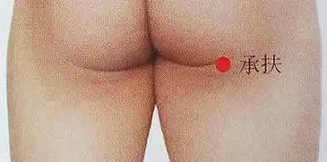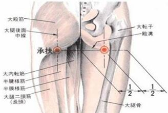
The area beneath the acupoint consists of skin, subcutaneous tissue, the anterior layer of the rectus abdominis sheath, the rectus abdominis muscle, the posterior layer of the rectus abdominis sheath, the transversalis fascia, and the subperitoneal fascia. The skin is innervated by the anterior cutaneous branches of the 6th, 7th, and 8th intercostal nerves. The subcutaneous fascia contains tributaries of cutaneous nerves and superficial veins of the thoracic and abdominal walls. The needle passes through the skin and subcutaneous fascia, then through the deep abdominal fascia to the anterior layer of the rectus abdominis sheath. This layer is formed by the anterior leaf of the external oblique tendon and the internal oblique aponeurosis. The needle penetrates deeply into the rectus abdominis muscle, reaching the posterior leaf of the internal oblique aponeurosis and the transversalis aponeurosis behind its sheath. The muscles and sheath within the sheath are innervated by the intercostal nerves and nourished by the intercostal vessels and the superior and inferior epigastric arteries.
Acupoint Classification by Five Elements :
Acupoint
Classification by Meridian : Stomach Meridian of Foot-Yangming
Acupoint Classification by Five Elements : Earth
Acupoint Treatment - Acupuncture : Insert needle perpendicularly 0.5-0.8 cun, until a heavy, distended feeling is felt in the upper abdomen.
Acupoint Treatment - Moxibustion : Apply 3-5 moxa cones; or apply moxa sticks for 5-10 minutes.
Acupoint Treatment - Massage and Others : Press Chengman acupoint with the fingertips of both hands and make circular motions. Apply light pressure. Each session should last about 3 minutes, twice daily.
Acupoint Functions : Regulates Qi and harmonizes the stomach, promotes digestion and relieves stagnation, relieves nausea and vomiting.
Acupoint Indications and Clinical Applications : Stomach pain, vomiting, abdominal distension, gastritis, duodenal ulcer, loss of appetite, acid reflux, borborygmus, diarrhea, etc.
Main Acupoint Combinations : 1. Combined with Zusanli acupoint to treat stomach pain. 2. Combined with Shangwan (CV12) and Weishu (BL21) to treat cold invading the stomach. 3. Combined with Liangmen (ST21) and Xiawan (CV12) to treat food stagnation. 4. Combined with Taichong (LR3) and Qimen (LR14) to treat liver qi invading the stomach. 5. Combined with Geshu (BL17) and Sanyinjiao (SP6) to treat qi stagnation and blood stasis. 6. Combined with Pishu (BL20), Weishu (BL21), and Guanyuan (CV4) to treat spleen and stomach deficiency and cold. 7. Combined with Sanyinjiao (SP6) and Neiting (ST44) to treat stomach yin deficiency.
Acupoint Image : 

Acupoint Name : Chengjin (承筋) Acupoint
Name Pinyin : Chengjin
Acupoint International Code : BL56 Acupoint Aliases: 腨肠, 直肠. Acupoint Explanation : Chengjin. Cheng means to bear. Jin refers to the wind governed by the liver. The name Chengjin means that the ascending yang qi of the bladder meridian transforms into wind and travels here. The substance of this acupoint is the yang heat qi ascending from various acupoints of the bladder meridian on the lower part of the foot, which becomes wind-like after reaching this acupoint, hence the name. This acupoint is mainly used to treat hemorrhoids, lower back and leg stiffness and pain, etc. Location and Method of Acupoint Selection : On the posterior aspect of the lower leg, on the line connecting Weizhong (BL40) and Chengshan (BL57), in the center of the gastrocnemius muscle belly, 5 cun below Weizhong (BL40). Anatomical Location and Structure : Between the two bellies of the gastrocnemius muscle; contains the small saphenous vein, with the posterior peroneal artery and vein deeper; innervated by the medial sural cutaneous nerve, with the peroneal nerve deeper. Five Elements Belonging to the Acupoint : Meridian Belonging to the Acupoint : Bladder Meridian of Foot-Taiyang. Five Elements Belonging to the Acupoint : Water . Treatment Method - Acupuncture : Insert needle perpendicularly 1-1.5 cun. Treatment Method - Moxibustion : Treatment Method - Massage and Others : Massage Chengjin (BL57) acupoint with the thumb, kneading or pressing the acupoint 100-200 times, each massage lasting about 2-3 minutes. Daily massage has health benefits such as treating lower back and leg pain, constipation, acute lumbar sprain, and calf pain. Acupoint Functions : Relieves muscle tension and promotes blood circulation, strengthens the waist and knees, clears intestinal heat. Indications and Clinical Applications : Calf pain, gastrocnemius muscle spasm, lower back pain, hemorrhoids, rectal prolapse, constipation. Main Acupoint Combinations : Combined with Weizhong (BL40) to treat lower limb spasms and pain. Acupoint Image : Acupoint Name : Chengshan (承山) Acupoint Name Pinyin : Chengshan International Acupoint Code : BL57 Acupoint Aliases : Yufu (鱼腹), Rouzhu (肉柱), Shangshan (伤山), Yuchang (鱼肠), Changshan (肠山), Yufushan (鱼腹山), Yuzhu (玉柱), Yuyao (鱼腰穴). Acupoint Explanation : Chengshan. Cheng means to bear or support. Shan refers to a large pile of earth and stones, here indicating that the substance within the acupoint is spleen earth. The name Chengshan signifies that the spleen earth particles that flow down with the bladder meridian solidify here. The substance at this acupoint is a mixture of spleen earth and water fluid that ascends with the bladder meridian. Upon reaching this point, the water fluid vaporizes, and the dried spleen earth particles settle around the acupoint, accumulating like a mountain, hence the name Chengshan (承山). Chengshan is a point where the muscles, bones, and flesh bear the most pressure throughout the body; it is a hub of the meridians where Yang energy is most abundant, and the best acupoint for removing dampness from the body. Location and method of locating the acupoint : Located in the middle of the back of the lower leg, between Weizhong (委中) and Kunlun (昆仑). When the lower leg is straightened or the heel is raised, the acupoint is located in the pointed depression below the belly of the gastrocnemius muscle. Anatomical location and structure : Skin → subcutaneous tissue → gastrocnemius muscle → soleus muscle. At the lower end of the junction of the two bellies of the gastrocnemius muscle; superficially, the small saphenous vein and the medial sural cutaneous nerve are present. Deeply, the tibial nerve and the posterior tibial artery and vein are present. Acupoint Classification by Five Elements : Acupoint Classification by Meridian : Bladder Meridian of Foot-Taiyang Acupoint Classification by Five Elements : Water Acupoint Treatment - Acupuncture : Insert needle perpendicularly 1-2 inches. Acupoint Treatment - Moxibustion : Acupoint Treatment - Massage and Others : 1. With thumb raised, press firmly on Chengshan acupoint, applying as much force as possible and holding the pressure until the muscle spasm is relieved. 2. Gua Sha and Cupping: Scrape both Chengshan acupoints and then apply cupping, leaving the cups on for 10-15 minutes. Acupoint Functions : Regulates Qi and relieves pain, relaxes muscles and tendons, promotes the transformation and transportation of fluids, and strengthens the spleen. Indications and Clinical Applications of Acupoints : Frozen shoulder, stiff neck, lumbar muscle strain, acute lumbar sprain, sciatica, knee strain, constipation, hemorrhoids, rectal prolapse, dysmenorrhea, lower back pain, lower back and leg pain, cramps, lower limb paralysis, gastrocnemius muscle spasm, gastrocnemius muscle strain, foot strain, infantile convulsions. Main Acupoint Combinations : 1. Combined with Tiaokou (ST39) acupoint, it has a remarkable effect in treating frozen shoulder. 2. Combined with Dachangshu (BL25) acupoint, it treats hemorrhoids.

Acupoint Image : 

Acupoint Name : Chongmen (冲门)
Acupoint Name Pinyin : Chongmen
Acupoint International Code : SP12
Acupoint Aliases : Cigong (慈宫), Shangcigong (上慈宫), Chongmai (冲脉), Qianzhangmen (前章门). Acupoint
Explanation : Chongmen. Chong means to rush or collide. Men means a gateway. The name of this acupoint indicates that the Qi from the lower part of the Spleen Meridian rushes upward to the abdomen from this acupoint. The substance of this acupoint is formed by the convergence of Qi from the lower part of the Spleen Meridian in the leg and knee. Its movement at this acupoint is like an upward rush after being heated, hence the name. This acupoint is mainly used to treat abdominal pain, hernia, metrorrhagia, leukorrhea, etc.
Acupoint Location and Method of Acupoint Selection : On the lateral side of the groin, 3.5 cun lateral to the midpoint of the upper border of the pubic symphysis, on the lateral side of the pulsation of the external iliac artery. In the supine position, locate the acupoint 3.5 cun lateral to the midpoint of the upper border of the pubic symphysis. Approximately at the upper border of the lateral end of the groin, on the lateral side of the femoral artery.
Anatomical location and structure of the acupoint : Beneath the acupoint are the skin, subcutaneous tissue, aponeurosis of the external oblique muscle, and the origins of the internal oblique and transversus abdominis muscles. The skin is innervated by the iliohypogastric nerve. The subcutaneous fascia is divided into a fat layer and a membranous layer. The former is mainly composed of adipose tissue, and its thickness varies from person to person; the latter is mainly composed of fibrous tissue and attaches to the fascia lata one finger-width below the inguinal ligament. The superficial epigastric artery and vein, intercostal artery and vein (lower position), and cutaneous nerves pass between the two layers.
Acupoint belongs
to the Five Elements :
Meridian : Foot Taiyin Spleen Meridian, Yin Wei Meridian . Treatment method - Acupuncture : Avoid arteries, insert perpendicularly 0.5-0.7 cun, causing soreness and distension in the groin, which may radiate to the vulva. Treatment method - Moxibustion : Indirect moxibustion 3-5 cones; or moxibustion with moxa sticks for 10-20 minutes. Acupoint Therapy - Massage and Others : Press the Chongmen acupoint with the pads of both thumbs, applying force from the inside out, for about 30 seconds each time, and repeat several times a day. Acupoint Functions : Strengthens the spleen and resolves dampness, regulates qi and relieves spasms, and promotes the transformation and transportation of spleen qi. Acupoint Indications and Clinical Applications : Gastrointestinal spasm, abdominal pain, hernia, metrorrhagia, leukorrhea, postpartum hemorrhage, endometritis, mastitis, urinary retention, orchitis. Main Acupoint Combinations : Combined with Dadun acupoint to treat hernia. Acupoint Image : Acupoint Name : Chongyang Acupoint Pinyin : Chongyang Acupoint International Code : ST42 Acupoint Aliases : Huiyuan acupoint, Fuyang acupoint, Huiqu acupoint, Huiyong acupoint, Huigu acupoint. Acupoint Explanation : Chongyang. Chong refers to the movement of substances within the acupoint. Yang refers to yang qi. The name of this acupoint indicates that the water vapor in the earth element of this acupoint flows to the heaven element. The substance at this acupoint is the meridian water from Jiexi (ST41). Due to the diversion at Jiexi, the meridian water reaching this acupoint is relatively scarce. The meridian water, heated by the spleen earth, undergoes a large-scale vaporization and surges upwards, hence the name. This acupoint primarily harmonizes the stomach, resolves phlegm, unblocks the meridians, and calms the mind. Location and method of acupoint selection : At the highest point of the dorsum of the foot, between the tendons of the extensor hallucis longus and extensor digitorum longus, where the dorsalis pedis artery pulsates. The patient should lie supine or sit upright with the soles of their feet flat. Select the Chongyang (ST4) acupoint on the affected side, avoiding the artery, and insert the needle perpendicularly 0.2-0.3 cun. A clear sensation of Qi should be achieved. Use a rotating manipulation technique, applying a balanced tonifying and reducing approach. Retain the needle for 20-30 minutes. Anatomical location and structure of the acupoint : On the lateral side of the extensor digitorum longus tendon; there are the dorsalis pedis artery and vein, and the dorsal venous network of the foot; at the base of the second branch of the medial dorsal cutaneous nerve of the superficial peroneal nerve, with the deep peroneal nerve deeper. Acupoint Classification by Five Elements : Acupoint Classification by Meridian : Stomach Meridian of Foot-Yangming (English): Earth . Acupoint Treatment Method - Acupuncture : Avoid arteries, insert the needle perpendicularly 0.3-0.5 cun. Electroacupuncture at Chongyang acupoint for pain treatment. The ideal frequency is 100-200 times per second, and the output power is limited to the point where the muscle contracts noticeably or the patient feels numbness. The stimulation time required for analgesia is generally more than 30 minutes. Acupoint Treatment Method - Moxibustion : Light the moxa stick and apply it to the acupoint, 2-3 cm away from the skin, for 5-7 minutes, until the skin feels warm but not scalding. Acupoint Treatment Method - Massage and Others : Tap Chongyang acupoint with the hypothenar eminence for 2-3 minutes. Long-term massage can improve facial paralysis and epilepsy. Acupoint Function : Harmonizes the stomach and resolves phlegm, unblocks the meridians and calms the mind. Indications and Clinical Applications of Acupoints : Facial nerve palsy, facial paralysis, epilepsy, dizziness, gastric spasm, gastritis, rheumatoid arthritis, tennis elbow, ankle sprain, toothache. Main Acupoint Combinations : 1. Combined with Zusanli (ST36), Pucan (SP9), Feiyang (SP8), Fuliu (KI7), and Wangu (GB14) to tonify Qi and blood, nourish the tendons and muscles, and treat foot weakness and inability to walk. 2. Combined with Fenglong (ST40) to treat delirious walking, singing while climbing high places, and running away naked. Acupoint Image : Acupoint Name : Changqiang (长强) Acupoint Name Pinyin : Changqiang Acupoint International Code : DU1 Acupoint Aliases : Yinxi, Juegu, Qixi, Weizhi, Gusui, Weilu Acupoint Explanation : In ancient times, when practicing Qigong, the Small Heavenly Circuit (小周天) was used to open the Ren and Du meridians. Qi was guided by intention, originating from the coccyx of the Du meridian, following the spine, ascending to Baihui (百会), descending to Yinjiao (沁交), connecting with the Ren meridian, descending along the chest to the navel and abdomen, reaching the perineum and rejoining the Du meridian. This continuous cycle of Qi rises and falls is called Changqiang (长强). Changqiang is the starting point of the Du meridian, where Yang Qi begins to generate. This acupoint is a major acupoint for regulating the intestines and stomach. Acupoint Location and Method : Located below the tip of the coccyx, at the midpoint of the line connecting the tip of the coccyx and the anus. Anatomical Location and Structure : Branches of the anal artery and vein are present. The posterior branch of the coccygeal nerve and the anal nerve are distributed here. Acupoints belong to the Five Elements ; Acupoints belong to the following meridians : Governing Vessel, Chong Vessel, and the intersection of the Governing Vessel, Kidney Meridian, and Gallbladder Meridian. (English : Governor Vessel)
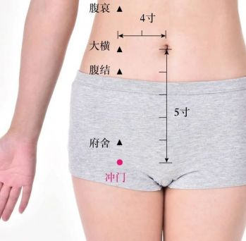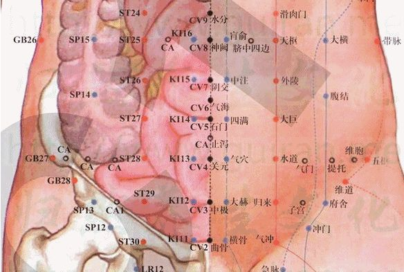
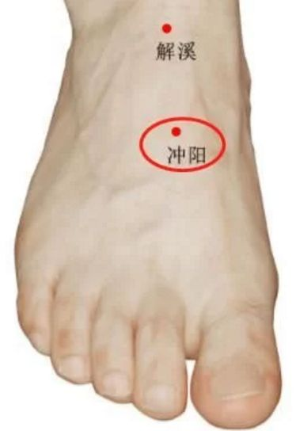
Acupoints belong to the Five Elements of the Meridians :
Acupoint Treatment - Acupuncture : Oblique insertion 0.5-1 cun close to the front of the coccyx.
Acupoint Treatment - Moxibustion : Moxibustion with 3-7 moxa cones; or moxibustion with moxa sticks for 5-15 minutes.
Acupoint Treatment - Massage and Others : Lie prone with feet slightly apart, rub and press the Changqiang acupoint with your fingers for 4 minutes each time, alternating hands. Twice daily.
Acupoint Functions : Relieves constipation and diarrhea, relieves spasms and pain.
Acupoint Indications and Clinical Applications : Seminal emission, enuresis, impotence, hematochezia, hemorrhoids, rectal prolapse, diarrhea, dysentery, constipation, infantile convulsions, epilepsy, hysteria, coccyx pain, lumbar neuralgia, prostatitis.
Main Acupoint Combinations : 1. Combined with Chengshan (BL57), it has the effects of clearing heat and relieving constipation, promoting blood circulation and removing blood stasis, and is mainly used to treat hemorrhoids and constipation. 2. Combined with Xiaochangshu (BL27), it has the effect of regulating qi and clearing the bowels, separating clear from turbid fluids, and is mainly used to treat difficulty in urination and defecation, and urinary tract infections. 3. Combined with Shenzhu (GV12), it has the effect of regulating qi and clearing the Du meridian, and is mainly used to treat back pain. 4. Combined with Baihui (GV20), it has the effect of regulating the Du meridian, tonifying qi and raising yang, and is mainly used to treat rectal prolapse and dizziness.
Acupoint Image :
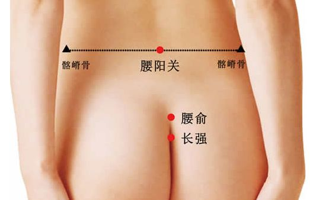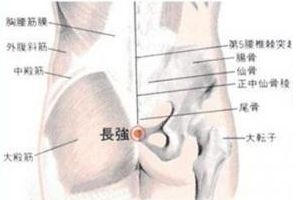
Acupoint Name : Chengguang (承光) Acupoint
Name Pinyin : Chengguang Acupoint
International Code : BL6 Acupoint Alias: Acupoint Explanation : Cheng means to receive. Guang means bright, yang, and heat. The name of this acupoint indicates that the qi and blood of the bladder meridian are further heated and dispersed here. The substance of this acupoint is the cool and damp water qi transmitted from the five acupoints, which is further heated and dispersed upon reaching this acupoint, as if receiving heat, hence the name. This acupoint is mainly used to treat headache, dizziness, epilepsy, etc. Acupoint Location and Method : On the head, 2.5 cun directly above the midpoint of the anterior hairline, and 1.5 cun lateral to it. In a seated or supine position, locate the acupoint 1.5 cun posterior to Wuchu (五处), between Wuchu and Tongtian (通天). Another description places it 3 cun above the anterior hairline (from *Zhenjiu Jiayi Jing*); or 2 cun above the anterior hairline (from *Qianjin Yaofang*). Anatomical location and structure : It contains the galea aponeurotica; anastomoses of the frontal artery and vein, superficial temporal artery and vein, and occipital artery and vein; it is located at the confluence of the lateral branch of the frontal nerve and the greater occipital nerve. Acupoint classification : Belongs to the Bladder Meridian of Foot-Taiyang (足太阳刃刃). Treatment method - Acupuncture : Insert the needle perpendicularly 0.3-0.5 cun. Treatment method - Moxibustion : Apply 3 moxa cones; or apply moxa sticks for 5-10 minutes. This acupoint is listed as forbidden for moxibustion in classical texts, for reasons similar to those for the Five Points. The reason is that the Qi and blood of this acupoint are supplied by the Five Points, but it contains less moisture. Moxibustion at this point would only dry out the internal moisture, and the heat would be transmitted internally to the brain, causing damage. Therefore, it is listed as forbidden. Acupoint Treatment - Massage and Others : Press the acupoint with the pad of your index finger, pressing each acupoint for 1-3 minutes each time. Acupoint Functions : Clears heat and improves vision, dispels wind and heat. Acupoint Indications and Clinical Applications : Headache, dizziness, nasal congestion, fever, facial nerve paralysis, corneal leukoma, nasal polyps, rhinitis, inner ear vertigo. Main Acupoint Combinations : 1. Combined with Baihui (GV20) to treat headache. 2. Combined with Jiexi ( ST41) to treat dizziness. Acupoint Image : Acupoint Name : Chengling (承灵) Acupoint Name Pinyin : Chengling Acupoint International Code : GB18 Acupoint Alias : Acupoint Meaning : Chengling. Cheng means to bear. Ling means spirit or deity, and refers to the Qi of the celestial region. The name of this acupoint signifies that the cold and damp Qi of the celestial region of the head converges into the Gallbladder Meridian here. The substance at this acupoint is the Yang Qi of the celestial region transmitted from the Zhengying acupoint. Upon reaching this point, this Qi dissipates heat and absorbs moisture, descending to a cooler state. The cold and damp Qi of the celestial region also converges into the acupoint. This acupoint is named as it receives the cold and damp Qi of the celestial region. This acupoint is indicated for headaches, dizziness, and eye pain. Location and method of acupoint selection : Chengling acupoint is located on the head, 4 cun above the anterior hairline and 2.25 cun lateral to the midline of the head. Another theory states that it is 3.5 cun into the hairline (from *Qianjin Yifang*); or 5 cun into the hairline (from *Zhenjiu Dacheng*). Anatomical location and structure of the acupoint : Located in the galea aponeurotica, it is innervated by branches of the greater occipital nerve and branches of the occipital artery and vein. Acupoint's Five Elements : Meridian : Gallbladder Meridian of Foot-Shaoyang, Yangwei Meridian . Acupoint Treatment - Acupuncture : Insert the needle horizontally 0.3-0.5 cun. Acupoint Treatment - Moxibustion : Apply moxa stick for 5-10 minutes. Acupoint Treatment - Massage and Others : Press and rub Chengling with the thumb or middle finger about 200 times, or for 35 minutes, to treat headaches, dizziness, etc. Acupoint Functions : Opens the orifices, dispels wind and clears heat. Acupoint Indications and Clinical Applications : Dizziness, vertigo, eye pain, tinnitus, stiff neck, sinusitis, epistaxis, nasal congestion, excessive nasal discharge. Main Acupoint Combinations : Combined with Fengchi (GB20), Fengmen (BL12), and Houxi (SI3) acupoints, this acupoint treats nosebleeds. Acupoint image : Acupoint name : Chimai (瘈脉) Acupoint name pinyin : Chimai Acupoint international code : SJ18 Acupoint aliases : Zimai (资脉), Timai (体脉), Zisheng (资生) Acupoint explanation : Chimai. Chi refers to the frenzied state of a dog, here indicating the rapid flow of Qi and blood within the acupoint. Mai refers to the Qi and blood in the meridians. The name Chimai signifies that the descending water Qi, contracted and drawn by the Sanjiao meridian, rapidly expands and disperses here. The substance of this acupoint is the damp Qi transmitted from Luxi (LU11) and the yang-heat wind Qi transmitted from Yifeng (TE17). After the two meet, the damp Qi absorbs heat and rapidly expands and rushes out of the acupoint, its outward rush resembling the frenzied running of a dog, hence the name. This acupoint mainly invigorates the meridians and opens the orifices, treating diseases of the head, face, sensory organs, and nervous system.
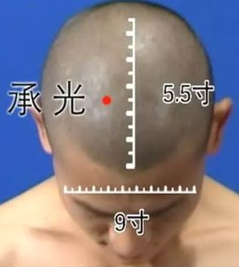


Location and Method of Acupoint Selection : On the head, at the center of the mastoid process behind the ear, between Jiaosun and Yifeng, at the intersection of the middle and lower thirds of the line connecting the helix. The patient should be seated upright or lying on their side. The acupoint is located at the level of the hairline behind the ear and the opening of the external auditory canal.
Anatomical Location and Structure of the Acupoint : Beneath this acupoint are the skin, subcutaneous tissue, and posterior auricular muscles. The skin and liver are innervated by the posterior branch of the great auricular nerve. Behind the subcutaneous tissue, in addition to the distribution of the great auricular nerve of the cervical plexus, the posterior auricular artery and vein also pass through. The needle penetrates the subcutaneous fascia through the skin. Since there is no deep fascia at this location, it directly enters the posterior auricular muscle, which is innervated by the posterior branch of the facial nerve.
Five Elements
Belonging to the Acupoint : Meridian
Belonging to the Hand -Shaoyang Sanjiao Meridian .
Five Elements Belonging to the Acupoint : Fire.
Treatment Method - Acupuncture : Insert the needle horizontally 0.3-0.5 cun, causing local soreness and distension; or prick with a three-edged needle to bleed.
Acupoint Therapy - Moxibustion : Apply 3-5 moxa cones, or use moxa sticks for 5-10 minutes, or use lampwick moxibustion.
Acupoint Therapy - Massage and Others : Gently place the index and middle fingers together behind the ear and massage the acupoint in a clockwise direction for 1-3 minutes, once in the morning and once in the evening. This can treat headaches, tinnitus, deafness, etc.
Acupoint Functions : Activates blood circulation, clears the orifices, extinguishes wind and relieves spasms, dries dampness and transforms qi.
Acupoint Indications and Clinical Applications : Diseases of the head, face, and five sense organs: deafness, tinnitus, blurred vision. Digestive system diseases: vomiting and diarrhea. Nervous system diseases: infantile convulsions, fright, convulsions. Other diseases: headaches, etc.
Main Acupoint Combinations : Combined with Yifeng (翳风), Ermen (耳门), Tinggong (听宫), Tinghui (听会), and Baihui (百会) acupoints to treat otosclerosis and improve hearing.
Acupoint Image : 

Acupoint Name : Dicang (地仓)
Acupoint Name Pinyin : Dicang
Acupoint International Code : ST4
Acupoint Aliases : Huiwei, Weiwei
Acupoint Meaning : Di refers to the earth element of the spleen and stomach. Cang refers to the place where grains are stored and dispersed. The name of this acupoint means that the meridian water of the stomach meridian gathers and disperses here. The substance of this acupoint is formed by the convergence of the meridian water of the upper part of the stomach meridian. After the meridian water gathers at this acupoint, it is distributed and transported by this acupoint, which has the function of storage and dispersion, hence the name. This acupoint is an important acupoint for strengthening the spleen.
Acupoint Location and Method of Acupoint Selection : On the face, lateral to the corner of the mouth, 0.4 cun away from the corner of the mouth, directly above the pupil. In a sitting position, looking straight ahead, gently push down along the vertical line directly below the pupil to the intersection with the horizontal line of the corner of the mouth. Pressing this point will produce a sore and distended feeling.
Anatomical Location and Structure of the Acupoint : Below the acupoint are the skin, subcutaneous tissue, orbicularis oris muscle, risorius muscle, buccinator muscle, and masseter muscle. The skin is doubly innervated by branches of the maxillary and mandibular nerves. Because the needle is inserted laterally outwards, it passes through the subcutaneous tissue and pierces the orbicularis oris muscle lateral to the corner of the mouth. This muscle is composed of interwoven fibers from the depressor anguli oris, buccinator, levator labii superioris, and levator labii superioris nasolabial muscles. Lateral to the facial nerve, the needle passes between the risorius and buccinator muscles before entering the masseter muscle. These facial muscles are innervated by branches of the facial nerve, while the masseter muscle is innervated by the masseter nerve of the mandibular nerve.
Acupuncture point classification :
Acupuncture point belongs to the
Stomach Meridian of Foot-Yangming, Yangqiao Meridian.
Acupuncture point classification : Earth.
Treatment method - Acupuncture : Insert the needle perpendicularly 0.2 cun, causing local distending pain; or for facial paralysis, insert the needle horizontally towards the cheekbone (cheekbone) 1.0-2.5 cun; or penetrate towards the Yingxiang acupoint to treat trigeminal neuralgia, where local soreness and distension may radiate to one side of the face, sometimes accompanied by a pulling sensation at the corner of the mouth.
Acupoint Therapy - Moxibustion : Warm needle moxibustion 3-5 cones.
Acupoint Therapy - Massage and Others : Rub the Dicang acupoint with the pad of your thumb 100-200 times daily to treat facial paralysis and drooling. Long-term adherence to pressing the Dicang acupoints vertically on both sides with your index fingernail, applying slight pressure, for 1-3 minutes each time.
Acupoint Functions : Dispels wind and relieves pain, relaxes muscles and tendons, invigorates blood and removes blood stasis.
Acupoint Indications and Clinical Applications : Facial paralysis, drooling, eyelid twitching, toothache, cheek swelling, facial nerve paralysis, trigeminal neuralgia, etc.
Main Acupoint Combinations : 1. Combined with Yifeng to treat pain behind the ear. 2. Combined with Lianquan to treat tongue numbness and loss of taste. 3. Combined with Sizhu to treat difficulty closing the eyes. 4. Combined with Shuigou to treat philtrum deviation.
Acupoint Image : 

Acupoint Name : Diji (地机)
Acupoint Name Pinyin : Diji
Acupoint International Code : SP8
Acupoint Alias : Pishe (脾舍)
Acupoint Meaning : Diji. Di refers to the spleen earth. Ji means ingenuity or cleverness. The name of this acupoint indicates that the spleen earth particles of this acupoint are transported to various parts of the body by water from the earth, and the transportation process is very ingenious. The substance of this acupoint is the rain falling from the earth from Lougu (漏谷) acupoint. After the rain falls on the earth, the spleen earth particles of the earth are also transported to various parts of the body by the flow of rainwater. The movement of spleen earth substances is very ingenious, hence the name. This acupoint mainly invigorates the meridians and opens the orifices. This acupoint is mainly used to treat abdominal pain, diarrhea, difficulty urinating, etc., and can lower blood sugar.
Acupoint Location and Method of Acupoint Selection : On the medial side of the lower leg, on the line connecting the tip of the medial malleolus and Yinlingquan (阴陵泉), 3 cun below Yinlingquan. One account states: "Yinlingquan is five inches below, opposite Juxu" (from *Xunjing Kaoxue Bian*).
Anatomical location and structure : Between the posterior border of the tibia and the soleus muscle; anteriorly lies the great saphenous vein and the terminal branch of the superior genicular artery; deeper are the posterior tibial artery and vein; innervated by the medial cutaneous nerve of the lower leg, and posteriorly deep to the tibial nerve. Acupuncture point classification: Meridian :
Spleen Meridian
of Foot-Taiyin. Acupuncture point classification : Earth. Treatment methods - Acupuncture : Insert needle perpendicularly 1-2 inches, until a feeling of soreness and distension is felt, which may radiate to the lower leg. Treatment methods - Moxibustion : Direct moxibustion 3-5 cones; gentle moxibustion 10-15 minutes; or moxa stick moxibustion 5-10 minutes. Treatment methods - Massage and others.
Diabetic patients will experience significant pain when pressing the Diji acupoint, and nodules may be palpable. The older the diabetic patient, the larger the nodules will be. Before getting out of bed, massage the Diji acupoint 36-100 times, then push downwards from the Diji acupoint to the inner ankle; you can also push with your heels while lying in bed before sleep. Do this 3 times a day.
Acupoint functions : Strengthens the spleen and eliminates dampness, regulates menstruation and relieves pain.
Acupoint indications and clinical applications : Reproductive system diseases: dysmenorrhea, metrorrhagia, irregular menstruation, dysfunctional uterine bleeding, vaginitis, spermatorrhea, etc. Spleen and stomach diseases: abdominal pain, diarrhea, abdominal distension, dysentery, loss of appetite, etc. Hernia. Urogenital system diseases: dysuria, edema, etc.
Main acupoint combinations : 1. Combined with Yinbai to treat metrorrhagia. 2. Combined with Zhongji and Sanyinjiao to treat dysmenorrhea. 3. Combined with Liangqiu and Zhongwan to treat acute abdominal pain. 4. Combined with Xuehai (SP10), acupuncture treatment for functional uterine bleeding has good results.
Acupoint Image :  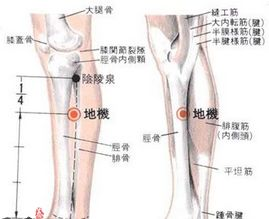
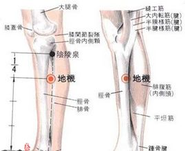
Acupoint Name : Daju (大巨穴)
Acupoint Name Pinyin : Daju
Acupoint International Code : ST27
Acupoint Alias : Yemen (腋门穴), Yemen (液门穴)
Acupoint Meaning : The two words together refer to the large area occupied by the Qi and blood substances within the acupoint. The substance at this acupoint is the earth fluid transmitted from Wailing (外陵穴), and the water transmitted downwards is the seeping water from the spleen earth. The source and flow area are vast, like a huge shallow stream, hence the name. This acupoint is mainly used to treat lower abdominal distension, difficulty urinating, hernia, impotence, dysmenorrhea, insomnia, etc.
Acupoint Location and Method : In the lower abdomen, 2 cun below the umbilicus and 2 cun lateral to the anterior midline. When locating the acupoint, the patient can lie supine. Daju (大巨穴) is located in the lower abdomen. Draw a line from the umbilicus to the top of the pubic bone, divide this line into four equal parts, and the point three finger-widths to the left and right of the 3/4 point below the umbilicus is Daju (大巨穴). One account states, "Three inches from the center of the abdomen" (from *Zhenjiu Zisheng Jing*).
Anatomical location and structure
: At the rectus abdominis muscle and its sheath; branches of the eleventh intercostal artery and vein are present, with the inferior epigastric artery and vein on the lateral side; innervated by the eleventh intercostal nerve (internal to the small intestine).
Acupuncture point classification
: Meridian : Stomach Meridian of Foot-Yangming
(Earth ) .
Treatment methods: Acupuncture : Insert needle perpendicularly 1.0-1.5 inches, causing local soreness and distension, with the sensation radiating downwards.
Moxibustion : Apply 3-5 moxa cones or warm needle moxibustion; or apply moxa sticks for 10-20 minutes.
Massage and other methods : Press the Daju acupoint with the fingertips of both hands, making circular motions. Each session should last about 3 minutes, twice daily.
Functions : Regulates the stomach and intestines, harmonizes qi and blood, and strengthens kidney qi.
Acupoint Indications and Clinical Applications : Digestive System Diseases: Abdominal distension, appendicitis, enteritis, intestinal obstruction, constipation, abdominal pain. Urogenital System Diseases: Dysuria, urinary retention, cystitis, urethritis, orchitis, seminal emission, impotence, hernia. Others: Dysmenorrhea, infertility, insomnia.
Main Acupoint Combinations : Combined with Zhongji (CV3) and Ciliao (BL32) to treat dysuria.
Acupoint Image :  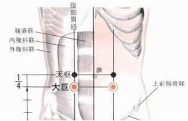
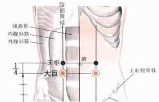
Acupoint Name : Dadu (大都)
Acupoint Name Pinyin : Dadou
Acupoint International Code : SP2
Acupoint Alias : Taidu (太都)
Acupoint Explanation : Dadu is the Ying-Spring point of the Foot Taiyin Spleen Meridian, belonging to the Fire element. Da means huge, Du means gathering, the point is located at the beginning of the big toe, the Ying-Spring point is formed. Da means large area of Qi and blood field within the acupoint. Du means city, the generating Qi of the Spleen Meridian gathers here, the place where substances gather and disperse. The name of this acupoint means that the Qi and blood of the Spleen Meridian gather here. Hence the name. This acupoint is indicated for abdominal distension, stomach pain, vomiting, and diarrhea.
Location and method of locating the acupoint : Lie supine or sit upright with feet flat on the ground. Locate the acupoint on the medial side of the foot, in the depression between the red and white skin below and in front of the first metatarsophalangeal joint. Another interpretation is "in the depression below the first metatarsophalangeal joint" (Ling Shu, Ben Shu).
Anatomical location and structure of the acupoint : Beneath the acupoint are skin, subcutaneous tissue, and the base of the first metatarsal bone. It is innervated by the proper plantar nerve of the plantar nerve, superficial venous network, and branches or tributaries of the medial plantar artery and vein.
Acupoint belongs to the Fire element: Fire. Meridian : Spleen
Meridian of Foot-Taiyin. Treatment method - Acupuncture: Insert needle perpendicularly 0.3-0.5 cun. Moxibustion : Apply 3-5 cones of moxa; or apply moxa stick for 5-10 minutes. Moxibustion is contraindicated for pregnant women and those within 100 days postpartum. Light the moxa stick and hold it 1.5 cm above the Dadu acupoint, applying the lit end to the acupoint for 5-10 minutes each time, 3 times a week. Acupoint therapy - massage and others : Massage the Dadu acupoint daily, massaging acupoints on both feet for about 10 minutes, until a feeling of soreness is felt. Acupoint function : Strengthens the spleen and harmonizes the middle jiao, clears heat and relieves pain. Acupoint indications and clinical applications : Spleen and stomach diseases: abdominal distension, stomach pain, acute and chronic enteritis, vomiting, diarrhea, constipation. Others: febrile diseases, anhidrosis, stroke, infantile convulsions, edema of the limbs, etc. Main acupoint combinations : 1. Combined with Zusanli (ST36) to treat abdominal distension. 2. Combined with Zusanli (ST36), Tianshu (ST25), Zhongwan (CV12), Pishu (BL20), and Shangjuxu (ST37) to strengthen the spleen, dispel dampness, and promote diuresis, treating spleen deficiency diarrhea. 3. Combined with Zhongwan (CV12), Gongsun (SP4), Fenglong (ST40), and Zhangmen (LR13), it can relieve nausea and vomiting, treating vomiting due to phlegm and fluid retention. 4. Combined with Tanzhong (CV17), Juque (CV14), Xinshu (BL15), and Fenglong (ST40), it can unblock the heart vessels and regulate qi and blood, treating phlegm-dampness syncope and heart pain. Acupoint Image : Acupoint Name : Daying (日迎) Acupoint Name Pinyin : Daying Acupoint International Code : ST5 Acupoint Alias : Suikong (髓孔) Acupoint Explanation

The name Daying (大迎) signifies that most of the Qi and blood of the Stomach Meridian is transported to the head via this acupoint. The substances at Daying originate from the Dicang (地仓) acupoint, with one branch flowing from the head and face down the neck to the chest and abdomen, and the other branch flowing upwards from this acupoint to the head. Since the head is considered the "ruler's domain," the amount and quality of the "royal provisions" transported to the head are substantial, and the flow is powerful, hence the name. This acupoint is indicated for facial paralysis, lockjaw, cheek swelling, and toothache.
Location and method of locating the acupoint : Anterior to the angle of the mandible, at the anterior border of the masseter muscle attachment, where the facial artery pulsates. When locating this acupoint, the patient is usually seated, supine, or reclining. Daying is located on the side of the head, on the mandible, diagonally below the lips, in the depression of the chin.
Anatomical location and structure : At the anterior border of the masseter muscle attachment; anterior to it are the facial artery and vein; innervated by the facial nerve and buccal nerve.
Acupoint Classification by Five Elements :
Acupoint Classification by Meridian : Stomach Meridian of Foot-Yangming
(English) : Earth Acupoint
Classification by Meridian Five Elements :
Acupoint Treatment Method - Acupuncture : Oblique insertion 0.3-0.5 cun, or subcutaneous insertion 0.5-1 cun, avoiding blood vessels.
Acupoint Treatment Method - Moxibustion : Moxibustion with moxa sticks for 3-5 minutes.
Acupoint Treatment Method - Massage and Others : Gently and repeatedly massage the acupoint with the pads of both fingers for about 2-3 minutes each time. This can improve facial blood circulation and eliminate double chin. It is also effective for toothache, trismus, and reducing swelling and pain.
Acupoint Functions : Opens and closes orifices, relieves pain and swelling, dispels wind and unblocks meridians, clears the head and disperses wind, and opens the jaw.
Acupoint Indications and Clinical Applications : Toothache, cheek swelling, trismus, facial paralysis, mumps, etc.
Main acupoint combinations : Combined with Jiache (颊车) to treat toothache.
Acupoint image : 

Acupoint name : Daheng (大横)
Acupoint name pinyin : Daheng
Acupoint international code : SP15
Acupoint alias : Kidney Qi
Acupoint Explanation : Daheng means the area of Qi and blood action within the acupoint is large. Heng means the movement of Qi and blood within the acupoint is horizontal transmission, also known as wind. The name of this acupoint indicates that the substance of this acupoint is the water-dampness wind Qi transmitted horizontally in the upper part of the body. The substance of this acupoint is the water-dampness cloud Qi transmitted from Fujie (腹结) acupoint. After reaching this acupoint, due to the heat dissipated from the spleen, the water-dampness cloud Qi expands and forms wind Qi. Its movement mode is horizontal transmission in the upper part of the body, hence the name. This acupoint is mainly used to treat diarrhea, constipation, abdominal pain, etc.
Acupoint location and method of locating the acupoint : Daheng acupoint is located in the middle of the abdomen, 4 cun from the umbilicus. Another description is 4.5 cun lateral to the midline of the abdomen (from "Zhenjiu Zisheng Jing").
Anatomical location and structure of the acupoint : Located in the muscular part of the external oblique muscle and the transverse abdominis muscle; innervated by the eleventh intercostal artery and vein; innervated by the twelfth intercostal nerve.
Acupoint classification according to the Five Elements :
Acupoint
belongs to the Foot Taiyin Spleen Meridian and the Yin Wei Meridian .
Acupoint classification according to the Five Elements : Earth.
Acupoint treatment - Acupuncture : Insert the needle perpendicularly 1-2 inches, causing local soreness and distension; insert the needle perpendicularly 2.0-2.5 inches through the Shenque acupoint to treat intestinal parasites; local soreness and distension may radiate to the ipsilateral abdomen.
Acupoint treatment - Moxibustion : Moxibustion with moxa sticks for 5-10 minutes; or moxibustion with moxa cones for 3-5 cones.
Acupoint treatment - Massage and others : Press the Daheng acupoint with your thumb for 5 seconds, then press repeatedly.
Acupoint functions : Removes dampness and dissipates stagnation, regulates Qi and strengthens the spleen, and harmonizes the intestines and stomach.
Indications and Clinical Applications of this Acupoint : Diarrhea, constipation, abdominal pain, dysentery.
Main Acupoint Combinations : Combined with Zusanli (ST36) and Tianshu (ST25) to relieve abdominal pain.
Acupoint Image :  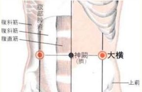
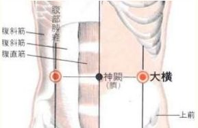
Acupoint Name : Dabao (大包)
Acupoint Name Pinyin : Dabao
Acupoint International Code : SP21
Acupoint Alias : Dabao (大胞)
Acupoint Explanation : "Da" (大) signifies the large and extensive area of Qi and blood within the acupoint. "Bao" (包) means to wrap or receive. The substance at this acupoint is the meridian water flowing down from the upper part of the Dabao acupoint. Because this acupoint is located at a low-lying point in the depression of the flesh, the mixture of mud and water from the ground gathers at this acupoint and is transmitted to the spleen through the pores in the ground. The Qi and blood substances here are like being wrapped up, hence the name. This acupoint is mainly used to treat chest and rib diseases, general pain, and weakness of the limbs.
Acupoint Location and Method : On the lateral chest, on the mid-axillary line, at the 6th intercostal space. With the patient lying on their side and arm raised, locate the acupoint 6 cun below the armpit, on the mid-axillary line, at the 6th intercostal space.
Anatomical location and structure of the acupoint : Located in the sixth intercostal space, within the serratus anterior muscle; contains the thoracodorsal artery and vein, as well as the sixth intercostal artery and vein; innervated by the sixth intercostal nerve, at the terminal point of the long thoracic nerve. When needling, on the anteromedial chest wall at the costal angle, between adjacent ribs; on the medial side of the costal angle, the needle should pass along the upper edge of the rib to avoid the intercostal artery and its branches. The organs corresponding to this acupoint deep to the chest are the pleural cavity, lung, diaphragm, liver (right side), and stomach (left side), therefore deep needling is not recommended. Acupoint
belongs to the Five Elements :
Meridian : Spleen Meridian of Foot-Taiyin
;
Five Elements : Earth.
Treatment method - Acupuncture : Oblique insertion or horizontal insertion posteriorly 0.3-0.5 cun. For neck sprains, oblique insertion upwards can be used, causing local soreness and distension.
Treatment method - Moxibustion : 3 moxa cones; or moxa sticks for 10-20 minutes.
Acupoint therapy - massage and othersFirst, locate the nipple, draw a horizontal line across it, and then place it in the gap between the ribs (first, clench both fists together, and place the knuckles of your fists into the gap between your ribs (like yin and yang, concave and convex) so they fit snugly). This will stimulate the Dabao acupoint. Then, press firmly; you will feel a slight soreness (those experiencing soreness are often under high work pressure). After pressing this point, pull your shoulders back (expand your chest), contract your shoulder muscles, and hold for 15 to 20 seconds, then relax, but keep your hands pressed against the surface. This massage can regulate respiratory diseases such as asthma, chest tightness, endocarditis, pleurisy, intercostal neuralgia, and chest and rib pain; relieve general pain, weakness in the limbs, excessive appetite leading to weight loss, and improve memory and relieve fatigue.
Acupoint functions : Promotes lung function and regulates qi, widens the chest and benefits the spleen.
Indications and Clinical Applications of this Acupoint : For respiratory diseases such as asthma, chest tightness, endocarditis, pleurisy, intercostal neuralgia, and chest and rib pain; general pain; weakness in the limbs; and weight loss despite good appetite.
Main Acupoint Combinations : 1. Combined with Sanyangluo (SP3), Yangfu (SP4), and Zulinqi (GB41) to treat chest and rib pain. 2. Combined with Pishu (BL20) and Zhangmen (LR13) to treat weight loss despite good appetite. 3. Combined with Zusanli (ST36) to treat weakness in the limbs. Acupoint
Image : 

Acupoint Name : Dazhui (GV14)
Acupoint Name Pinyin : Dazhui
Acupoint International Code : DU14
Acupoint Aliases : Bailao (BL50), Shangzhu (BL11)
Acupoint Meaning : Da means abundant. Zhui (椎) refers to a hammer, indicating that the Qi and blood within the acupoint are substantial rather than insubstantial. The name Dazhui signifies that the Yang heat Qi of the three Yang meridians of the hands and feet converges at this acupoint and ascends to the head and neck with the Yang Qi of the Du meridian. The substance at this acupoint comes from two sources: firstly, the abundant Yang Qi transmitted from the Taodao acupoint on the Governing Vessel; and secondly, the Yang Qi from the three Yang meridians of the hands and feet, which disperse to the Yang side of the back. The Yang Qi within the acupoint is abundant and full, as solid as a vertebra, hence the name Dazhui (Great Vertebra). Dazhui is the "meeting point of the three Yang meridians and the Governing Vessel," meaning that the Yang Qi of the whole body converges at Dazhui. Acupuncture and massage of this important acupoint can regulate the Yang Qi of the whole body, and has excellent therapeutic effects on headaches, fever, coughs, asthma, and cervical spondylosis. Dazhui is a crossroads in the body, playing a crucial role in connecting the upper and lower body .
Blockage at Dazhui can obstruct seven meridians: 1. Governing Vessel, 2. Bladder Meridian, 3. Large Intestine Meridian, 4. Small Intestine Meridian, 5. Triple Energizer Meridian, 6. Gallbladder Meridian, and 7. Stomach Meridian. Location and method of acupoint selection : On the posterior midline, in the depression below the spinous process of the 7th cervical vertebra.
Anatomical location and structure of the acupoint : Located in the lumbar fascia, supraspinous ligament, and interspinous ligament; contains branches of the transverse cervical artery and the interspinous subcutaneous venous plexus; innervated by the medial branch of the posterior branch of the eighth cervical nerve.
Acupoint classification according to the Five Elements :
Acupoint belongs to the Governing Vessel (Du Mai), the intersection of the three Yang meridians of the foot, the three Yang meridians of the hand, and the Governing Vessel in the midline of the back
. Acupoint
classification according to the Five Elements :
Acupoint treatment method - Acupuncture : Oblique insertion 0.5-1 cun. Inserting the needle beyond 1.5 cun may penetrate the ligamentum flavum, dura mater, and arachnoid membrane of the spinal cord, entering the subarachnoid space and potentially injuring the spinal cord, causing serious consequences such as damage and bleeding of the epidural vascular plexus, subarachnoid hemorrhage, or spinal cord injury.
Acupoint treatment method - Moxibustion : Gentle moxibustion for 10-20 minutes can clear heat and tonify Yang. The patient should be supine or sitting with their head lowered. After lighting the moxa stick, place it above the acupoint, about 2-3 cm away from the skin, and perform moxibustion until a comfortable warm sensation is felt without burning pain. Each session generally lasts 10-15 minutes, until the area becomes flushed. Perform this once daily or every other day, with 5 sessions constituting one course of treatment (often used for tonifying deficiency).
Acupoint therapy - massage and others : Use the sides of both thumbs to alternately massage the back of the neck from top to bottom for 2-3 minutes, then use both thumbs to rub and press the Fengchi acupoint for 1 minute, or use the thumb, index, and middle fingers to knead and grasp the neck muscles on the opposite side for 3-5 minutes, or use the index and middle fingers of both hands to press on both sides of the spinous processes of the cervical vertebrae while simultaneously coordinating with forward and backward head flexion and extension movements for about 5 minutes to treat cervical spondylosis.
Acupoint functions : Tonifies Qi and strengthens Yang, clears heat and releases the exterior, stops malaria and epilepsy.
Indications and Clinical Applications of Acupoints : Febrile diseases, malaria, cough, asthma, tidal fever, stiff neck, shoulder and back pain, lumbar spine stiffness, opisthotonus, infantile convulsions, epilepsy, general weakness, fatigue, heatstroke, cholera, vomiting, jaundice, and rubella.
Main Acupoint Combinations : 1. Combined with Jianshi (PC5) and Rugen (ST38) to treat malaria caused by spleen deficiency. 2. Combined with the four flower acupoints (bilateral Geshu and bilateral Danshu) to treat whooping cough. 3. Combined with Quchi (LI11) to prevent meningitis. 4. Combined with Hegu (LI4) to treat leukopenia. 5. Combined with Zusanli (ST36) and Mingmen (GV4) to enhance immunity. 6. Combined with Dazhui (GV14), Dingchuan (EX-B1), and Kongzui (LU6) to treat asthma. 7. Combined with Quchi (LI11) and Hegu (LI4) to clear heat. 8. Combined with Yaoqi (EX-B1) and Jianshi (PC5) to treat epilepsy. 9. Combined with Feishu (BL13) to treat weakness, night sweats, and fatigue-induced fever.
Acupoint Image : 

Acupoint Name : Dahe (大赫)
Acupoint Name Pinyin : Dahe
Acupoint International Code : KI12
Acupoint Aliases : Yinwei, Yinguan
Acupoint Meaning : Da means large or abundant. He means bright red like fire. The name Dahe signifies that the high temperature and high humidity Qi of the Chong Meridian in the body exits through this acupoint into the Kidney Meridian. The substance of this acupoint is the high temperature and high pressure water and moisture Qi exiting from the Chong Meridian in the body. It is bright like fire because of its high temperature and strong and abundant Qi because of its high pressure, hence the name. This acupoint is mainly used to nourish Yin and strengthen Yang, and to treat impotence and premature ejaculation. Acupoint
Location and Method of Acupoint Selection : Dahe acupoint is located in the lower abdomen, 4 cun below the umbilicus and 0.5 cun lateral to the anterior midline. Draw a line from the umbilicus to the top of the pubic bone, divide this line into five equal parts, and the point is one finger-width to the left and right of the four-fifths point below the umbilicus. When locating the acupoint, the patient can lie supine. The Dahe acupoint is located in the lower abdomen. Draw a line from the navel to the top of the pubic bone, divide this line into five equal parts. The point one finger-width to the left and right of the four-fifths of the way down from the navel is the acupoint. Other descriptions include: 3.5 cun below the navel and 0.5 cun lateral to it (from *Zhenjiu Jiayi Jing*); 4 cun below the navel and 1 cun lateral to it (from *Zhenjiu Dacheng*); 4 cun below the navel and 1.5 cun lateral to it ( from * Zhenjiu Zisheng Jing*) .
Anatomical location and structure : Located in the aponeurosis of the internal and external oblique muscles, the aponeurosis of the transverse abdominis muscle, and the rectus abdominis muscle; contains muscular branches of the inferior epigastric artery and vein; innervated by the twelfth intercostal nerve and the iliohypogastric nerve. Acupoint classification : Kidney Channel of Foot-Shaoyin ; Water element. Treatment method: Acupuncture : Insert the needle perpendicularly 0.5-1 cun. Acupoint therapy - Moxibustion : Apply 3-5 moxa cones; or apply moxa sticks for 5-10 minutes. Acupoint therapy - Massage and others
Massage the Dahe acupoints on both sides with the index, middle, and ring fingers of both hands for 30 seconds each time. This enhances sexual vitality, improves sexual function, and treats impotence and premature ejaculation.
Acupoint Functions : Nourishes Yin and Yang, regulates menstruation and stops leukorrhea, dissipates heat and generates
Qi, improves sexual function. Main Indications and Clinical Applications : Cystitis, urethritis, vaginal pain, uterine prolapse, seminal emission, leukorrhea, irregular menstruation, dysmenorrhea, diarrhea, dysentery, etc.
Main Acupoint Combinations : 1. Combined with Yinqiao, Shenshu, Daimai, Dadun, and Zhongji acupoints to treat impotence, seminal emission, and leukorrhea. 2. Combined with Mingmen, Shenshu, Zhishi, Zhongji, and Guanyuan acupoints to treat male diseases and infertility.
Acupoint Image :
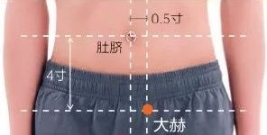
Acupoint Name : Dachangshu
Acupoint Name Pinyin : Dachangshu
Acupoint International Code : BL25
Acupoint Alias :
Acupoint Explanation : Dachangshu means large intestine. Shu means to transport. The name "Dachangshu" signifies that the dampness and qi of the large intestine are transported to the bladder meridian from this point. This acupoint is primarily used to treat diarrhea, constipation, and lower back pain.
Location and method of acupoint selection : In the lumbar region, below the spinous process of the fourth lumbar vertebra, 1.5 cun lateral to the midline. In the prone position, locate the point 1.5 cun lateral to Yaoyangguan (Du Mai) below the spinous process of the fourth lumbar vertebra, approximately level with the highest point of the iliac crest.
Anatomical location and structure of the acupoint : Beneath the acupoint are the skin, subcutaneous tissue, latissimus dorsi, sacrospinalis, quadratus lumborum, and psoas major muscles. The skin is innervated by the posterior branches of the third, fourth, and fifth lumbar nerves. The lumbar artery and vein pass between the sacrospinalis and quadratus lumborum muscles. The psoas major muscle is located on both sides of the lumbar spine, spindle-shaped. It originates from the lateral aspects of the twelfth thoracic vertebra, the upper four lumbar vertebrae and intervertebral discs, and all the transverse processes of the lumbar vertebrae, inserting into the lesser trochanter of the femur. The nerve roots of the lumbar plexus are located within the muscle tissue, and their branches pass through its medial, lateral, and muscular bellies. Anterior to the psoas major muscle is the ureter, which runs from the renal hilum to the pelvic cavity.
Acupoint belongs to the Five Elements
: Meridian : Bladder Meridian of Foot-Taiyang
;
Five Elements : Water.
Acupoint Treatment - Acupuncture : Insert needle perpendicularly 0.8-1 cun, causing local soreness and distension, with a tingling sensation radiating to the buttocks and lower limbs; or insert needle horizontally downwards 2-2.5 cun, penetrating to the Small Intestine Shu point, causing local soreness and distension, with the needling sensation radiating to the sacroiliac joint.
Acupoint Treatment - Moxibustion : Apply 5-10 moxa cones; or perform moxibustion for 10-15 minutes daily to regulate bowel movements and enhance intestinal function.
Acupoint Treatment - Massage and Others : First, rub your hands together to warm them, then slowly exhale while firmly pressing the Large Intestine Shu point for 6 seconds. Press with the fingertips or knuckles and massage in a circular motion. Repeat 10 times.
Acupoint Functions : Regulates Qi and relieves nausea, harmonizes the stomach and intestines, and strengthens the waist and knees.
Indications and Clinical Applications : 1. Musculoskeletal system diseases: lower back pain, sacroiliac arthritis, sacrospinalis muscle spasm. 2. Digestive system diseases: enteritis, dysentery, constipation, infantile indigestion. 3. Surgical system diseases: appendicitis, intestinal bleeding. 4. Nervous system diseases: sciatica. 5. Urogenital system diseases: enuresis, nephritis, gonorrhea.
Main Acupoint Combinations : Combined with Qihai (CV6), Zusanli (ST36), and Zhigou (TE6) to treat constipation.
Acupoint Image : 

Acupoint Name : Dazhu (大杼)
Acupoint Name Pinyin : Dazhu
International Acupoint Code : BL11
Acupoint Alias : Back-Shu (背俞)
Acupoint Meaning : Da (大) means large or abundant. Zhu (杼) refers to the shuttle used in weaving. The name Dazhu signifies that the water and dampness of the bladder meridian absorbs heat and rises rapidly here. The substance at this acupoint is the upward-moving, heat-absorbing moisture from the back-shu points of the Bladder Meridian. Upon reaching this point, although it cools and condenses into a cool, damp vapor with a higher moisture content, it undergoes further heat absorption and expansion at this point, transforming into a strong, upward-moving wind. The moisture within this upward-moving wind moves upwards like a shuttle in weaving, hence the name. This acupoint is indicated for cough, fever, and shoulder and back pain.
Location and method of acupoint selection : On the back, below the spinous process of the first thoracic vertebra, 1.5 cun lateral to the midline. The patient should be seated upright with their head lowered or lying prone. Locate the acupoint 1.5 cun lateral to the midline of the Governing Vessel below the spinous process of the first thoracic vertebra.
Anatomical location and structure of the acupoint : Below the Dazhu acupoint are the skin, subcutaneous tissue, trapezius muscle, rhomboid muscle, serratus posterior superior muscle, and sacrospinalis muscle. It contains the medial branches of the posterior branches of the intercostal arteries and veins. The skin contains the seventh cervical nerve and the medial cutaneous branches of the posterior branches of the first and second thoracic nerves, with the lateral branches deeper. The subcutaneous fascia is dense, composed of fat and fibrous bundles. Fiber bundles connect the deep dorsal fascia and skin on the surface of the trapezius muscle. The accessory nerve penetrates deep beneath the trapezius muscle at the junction of the middle and lower 1/3 of its anterior border, forming a nerve plexus with branches of the third and fourth cervical nerves to innervate the muscle. Acupuncture needles inserted deep through the above structures can reach the first intercostal space, or pass through the intertransverse muscles and their ligaments. Blindly inserting the needle through the thoracic fascia, penetrating the pleural cavity to the lung, can easily cause pneumothorax. Acupuncture point
belongs to the Five Elements : Acupuncture point belongs to the Meridian : Bladder Meridian of Foot-Taiyang. Acupuncture point belongs to the Five Elements : Water. Acupuncture treatment - Acupuncture : Oblique insertion inward 0.5-0.8 cun, local soreness and distension, the needling sensation may radiate to the shoulder. Acupuncture treatment - Moxibustion : 5 moxa cones; or warm moxibustion with moxa sticks for 10-15 minutes. Acupoint Therapy - Massage and Others : When experiencing neck pain or shoulder discomfort, massage or pat the Dazhu acupoint 2-3 times daily for 10 minutes each time to promote blood circulation. Acupoint Functions : Strengthens muscles and bones, clears heat, dispels wind and releases the exterior, promotes lung qi. Indications and Clinical Applications : 1. Respiratory system diseases: bronchitis, bronchial asthma, pneumonia. 2. Nervous system diseases: headache, epilepsy. 3. Musculoskeletal system diseases: cervical spondylosis, lumbar muscle spasm, knee osteoarthritis. 4. Others: pharyngitis, cold, bone tuberculosis. Main Acupoint Combinations : 1. Combined with Jianzhongshu and Jianwaishu to treat shoulder and back pain. 2. Combined with Jiaji and Juegu to treat cervical spondylosis, strengthening muscles and bones, clearing meridians, and regulating qi and blood. 3. Combined with Lieque and Chize to treat cough and asthma, having a lung-regulating, cough-relieving, and asthma-relieving effect. Acupoint Image : Acupoint Name : Daling Acupoint (Pinyin) 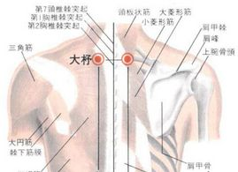
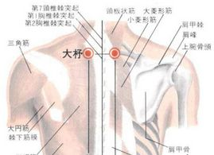
Daling
acupoint international code : PC7.
Alternative names : Tailing, Guixin.
Meaning : Daling. "Da" means large, the opposite of small. "Ling" means hill or mound. The name signifies that the spleen earth material, carried down by the pericardium meridian's water flow, accumulates here. The material at this point is a mixture of the meridian water transmitted from Neiguan (PC6) and spleen earth. Upon reaching this point, the spleen earth material accumulates like a mountain, resembling a hill, hence the name. Daling is the Shu-point and Yuan-point of the Hand Jueyin Pericardium Meridian. Its clinical efficacy in treating mental and emotional disorders has been proven by thousands of years of traditional Chinese medicine practice. It is a commonly used acupoint for treating heart disease and insomnia.
Location and method of locating the acupoint : Daling is located at the midpoint of the palmar wrist crease, between the palmaris longus tendon and the flexor carpi radialis tendon.
Anatomical location and structure of the acupoint : Located between the palmaris longus tendon and the flexor carpi radialis tendon, with the flexor pollicis longus and flexor digitorum profundus tendons; it contains the palmar carpal artery and vein network; it is innervated by the medial antebrachial cutaneous nerve, the palmar cutaneous branch of the median nerve, and the deep layer is the main trunk of the median nerve. Acupoint
classification
: Meridian
: Pericardium Meridian of Hand-Jueyin.
Acupoint classification : Fire.
Treatment method - Acupuncture : For ankle sprains, calcaneal spurs, heel pain, and toe fracture pain, acupuncture can be performed at the Daling acupoint. Acupuncture method: With the palm facing upwards, locate the acupoint in the center of the wrist crease, between the palmaris longus tendon and the flexor carpi radialis tendon. Acupuncture at points such as Daling (PC7) and Shenmen (HT7) can adjust cardiac function. In most cases, the systolic wave on the cardiac impactor is enhanced. X-ray oscillography shows, before acupuncture, a decrease and deformation of the left ventricular and aortic peaks, a deviated systolic curvature, and a weakened diastolic bulge. After acupuncture, the left ventricular peak increases, the systolic deviation weakens, and the diastolic bulge also increases, indicating enhanced myocardial contraction and improved cardiac function. Additionally, acupuncture at Daling (PC7) tends to regularize the electroencephalogram (EEG) of some patients with grand mal seizures.
Acupuncture treatment methods - Moxibustion : Apply moxibustion for 5-10 minutes.
Acupuncture treatment methods - Massage and others : Massage before bedtime every night. Press the thumb on the Daling (PC7) acupoint on the wrist for about one minute, then rotate and knead for 3-5 minutes, until a slight soreness and distension is felt locally.
Acupuncture functions : Calming and soothing, clearing the heart and unblocking the meridians, regulating qi and relieving pain, relaxing muscles and tendons.
Acupoint Indications and Clinical Applications : Chest pain, palpitations, stomach pain, vomiting, fright, mania, epilepsy, chest and rib pain, wrist pain, and aversion to laughter, sadness, or fear.
Main Acupoint Combinations : 1. Combined with Shenmen and Lieque, it relaxes the tendons and muscles, and promotes blood circulation, mainly treating wrist drop. 2. Combined with Xinshu and Geshu, it clears the heart meridian and removes blood stasis, mainly treating palpitations due to blood stasis in the heart. 3. Combined with Fenglong and Taichong, it soothes the liver, regulates qi, resolves phlegm, and awakens the mind, mainly treating mania due to qi stagnation and phlegm accumulation .
Acupoint Image :  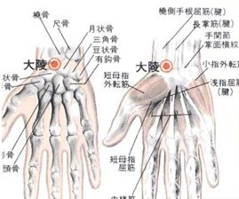
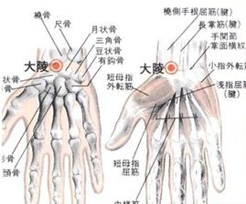
Acupoint Name : Dazhong (大钟)
Acupoint Name Pinyin : Dazhong
Acupoint International Code : KI4
Acupoint Alias :
Acupoint Meaning : Da means huge. Zhong refers to a set of chime bells, a musical instrument with a deep and resonant sound. The name of this acupoint signifies that the kidney meridian water cascades down like a waterfall at this point. The substance at this acupoint is the meridian water transmitted from Taixi acupoint. Its flow at this point resembles a waterfall cascading down, producing a resounding sound, hence the name. This acupoint is indicated for lower back pain, chronic pharyngitis, heel pain, and irregular menstruation.
Location and method of acupoint selection : On the medial side of the foot, below the medial malleolus, in the depression anterior to the medial attachment of the Achilles tendon. In a sitting or supine position, locate the acupoint 0.5 cun below Taixi, in the depression anterior to the medial attachment of the Achilles tendon.
Anatomical location and structure of the acupoint : Beneath the acupoint are the skin, subcutaneous tissue, plantar tendons, the anterior aspect of the Achilles tendon, and the calcaneus. The skin is innervated by the medial branch of the saphenous nerve. The subcutaneous tissue is loose, with superficial veins draining anteriorly into the great saphenous vein. There is abundant adipose tissue anterior and lateral to the Achilles tendon. Anterior to the Achilles tendon are the posterior tibial artery and vein, and the tibial nerve. The
needle passes through the skin, subcutaneous fascia, and deep fascia of the lower leg, inserting between the Achilles tendon and the tibial nerve trunk, or onto the nerve trunk itself. The posterior tibial artery and vein, which accompany the nerve, are located anterior to
it . Acupoint
belongs
to the Five Elements and Meridian of the Foot Shaoyin Kidney Channel : Water . Treatment Methods
: Acupuncture : Insert the needle perpendicularly 0.3-0.5 cun. Moxibustion : Apply 3-5 moxa cones; or apply moxa sticks for 5-10 minutes. Massage and Others : Press the Dazhong acupoint with your fingertips for about 6 seconds, then slowly release. Repeat this pressing at least 30 times, ideally until you feel soreness at the Dazhong acupoint. Functions : Clears heat and lungs, benefits the kidneys and relieves asthma, regulates urination and defecation. Acupoint Indications and Clinical Applications : 1. Nervous System Disorders: Neurasthenia, Mental Illness, Dementia, Hysteria. 2. Urogenital System Disorders: Urinary Retention, Gonorrhea. 3. Others: Asthma, Sore Throat, Stomatitis, Esophageal Stenosis, Constipation, Malaria. Main Acupoint Combinations : 1. Combined with Taixi (KI3) and Shenmen (HT7) to treat palpitations and insomnia due to disharmony between the heart and kidneys. 2. Combined with Xingjian (LR2) to treat irritability and easily startled due to upward flaring of deficiency fire. 3. Combined with Yuji (LU10) to treat sore throat due to upward flaring of deficiency fire. 4. Combined with Kongzui (LU6), Chize (LU5), and Yuji (LU10) to treat hemoptysis. 5. Combined with Shenshu (BL23), Guanyuan (CV4), and Sanyinjiao (SP6) to treat irregular menstruation. 6. Combined with Shenshu (BL23), Taixi (KI3), and Weizhong (BL40) to treat stiffness and pain in the lower back and spine. Acupoint Image : Acupoint Name : Dadun (大敦) Acupoint Name Pinyin : Dadun Acupoint International Code : LR1 Acupoint Aliases : Shuiquan (水泉), Daxun (大训), Dashun (大顺) Acupoint Meaning : Dadun means "large tree trunk," referring to the generative nature of Qi and blood within the acupoint. The substance at this acupoint is warm water fluid transported outward from the body via the Liver Meridian. Since this acupoint is located in spring, the fluid evaporates and diffuses from the pores at this point, exhibiting the generative nature of spring, like a large tree trunk sprouting new branches in spring, hence the name. This acupoint is one of the main acupoints on the Foot Jueyin Liver Meridian, and is the first acupoint on the Liver Meridian. Since ancient times, it has been regarded as a key acupoint for calming the mind and restoring consciousness. Acupoint Location and Method of Acupoint Selection 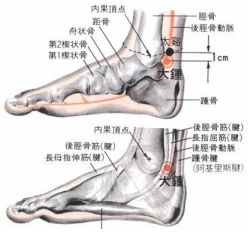
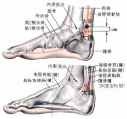
Located on the lateral side of the distal phalanx of the big toe, 0.1 cun from the nail corner. The acupoint can be located in a sitting or supine position. Dadun (大敦) is located approximately 0.1 cun from the edge of the nail root of the big toe (on the side closest to the second toe). Another description is "behind the fourth phalanx of the nail root of the big toe" (from *Zhenjiu Jicheng*).
Anatomical location and structure : In order, skin, subcutaneous tissue, and nail root. It is innervated by the lateral dorsal nerve of the deep peroneal nerve and the dorsal digital artery and vein.
Acupoint belongs to the Five Elements
: Meridian : Liver Meridian of Foot-Jueyin. Treatment method - Acupuncture : Oblique insertion 0.1-0.2 cun, or pricking with a three-ling needle to induce bleeding. Treatment method - Moxibustion : Moxibustion with 3-5 moxa cones; or moxibustion with moxa sticks for 5-10 minutes, for treating metrorrhagia. Acupoint Therapy - Massage and Others : Apply pressure to this acupoint for 7-8 seconds, then slowly exhale. Repeat about 10 times before bed each day. Applying pressure to Dadun (LR1) has a rapid effect. Therefore, if you wake up late in the morning, you may want to apply pressure in bed. Acupoint Functions : Generates wind energy, regulates the liver and kidneys, extinguishes wind and opens the orifices, calms the mind and relieves epilepsy, regulates blood. Acupoint Indications and Clinical Applications : Hernia, vaginal contraction, vaginal pain, irregular menstruation, metrorrhagia, hematuria, diabetes, urinary retention, enuresis, gonorrhea, mania, epilepsy, lower abdominal pain. Main Acupoint Combinations : 1. Combined with Neiguan (PC6) and Shuigou (GV26) to treat epilepsy, mania, epilepsy, and stroke with loss of consciousness. 2. Combined with Tanzhong (CV17), Tiantu (CV22), and Jianshi (PC5) to treat globus hystericus. 3. Combined with Taichong (LR3), Qihai (CV6), and Diji (SP8) to soothe the liver, regulate qi, and relieve pain, mainly for hernia. 4. Combined with Yinbai (SP1), direct moxibustion has the effect of tonifying the liver and spleen, and regulating the Chong and Ren meridians , and is mainly used to treat functional uterine bleeding. 5. Combined with Baihui (GV20), Sanyinjiao (SP6), and Zhaohai (KI6), it has the effect of tonifying the liver and kidneys, and strengthening qi and consolidating the body, and is mainly used to treat uterine prolapse. Acupoint Image : Acupoint Name : Duiduan (兑端) Acupoint Name Pinyin : Duiduan Acupoint International Code : DU27 Acupoint Alias : Duigu (兑骨), Upper Lip End, Zhuanggu (壮骨) Acupoint Explanation : Dui means mouth; Duan refers to the lip end of the philtrum. The acupoint is located at the upper lip, hence the name. This acupoint is mainly used to treat coma, syncope, hysteria, diabetes, toothache, etc. Acupoint Location and Method : On the face, at the tip of the upper lip, at the junction of the skin and lip at the lower end of the philtrum. Take a seated position. On the face, at the midpoint of the upper lip, at the junction of the skin and mucous membrane, pressing will produce a sore and distended sensation; this is the acupoint. Anatomical location and structure of the acupoint : Located in the orbicularis oris muscle; contains the superior labial artery and vein; innervated by the buccal branch of the facial nerve and branches of the infraorbital nerve. Acupoint's Five Elements : Acupoint's Meridian : Governing Vessel. Acupoint's Meridian Five Elements : Acupoint Treatment - Acupuncture : Oblique insertion upwards 0.2-0.3 cun, or point pricking. Acupoint Treatment - Moxibustion : Moxibustion is contraindicated. Acupoint Treatment - Massage and others : Press downwards with the fingertips or knuckles and massage in a circular motion. Acupoint Functions : Calms the nerves and relieves pain, soothes the mind and refreshes the brain, clears heat and promotes diuresis, generates fluids and quenches thirst. Acupoint Indications and Clinical Applications : Coma, syncope, mania, hysteria, facial nerve paralysis, diabetes, foul-smelling oral ulcers, toothache, lockjaw, nasal congestion. Main Acupoint Combinations : 1. Combined with Benshen and Baihui to treat epilepsy with vomiting. 2. Combined with Muchuang, Zhengying, and Ermen, it treats stiff lips and stops tooth decay pain. 3. Combined with Pangguangshu, Shuidao, and Zhongji, it can regulate water metabolism and treat enuresis and urinary retention. Acupoint Image : Acupoint Name : Dubi (犊鼻) Acupoint Name Pinyin : Dubi Acupoint International Code : ST35 Acupoint Alias : Waixiyan (外膝眼) Acupoint Explanation : Du (犊) means calf, and spleen earth. Bi (鼻) refers to the point where one touches the upper part of the body while leading an ox. The name of this acupoint signifies that the flowing Stomach Meridian water carries away the spleen earth particles from this acupoint. The substance at this acupoint is the meridian water transmitted from Liangqiu (梁丘), flowing from the high position of Liangqiu to the low position of this acupoint. The flow of the meridian water is like a waterfall, carrying the spleen earth particles from this acupoint, like a ox being led along, hence the name. This acupoint is mainly used to treat knee pain, lower limb paralysis, difficulty in flexion and extension, and beriberi. Location and Method of Acupoint Selection : With the knee flexed, locate the acupoint in the depression lateral to the patella and patellar ligament at the knee. Alternatively, with the knee flexed while seated, locate the acupoint in the depression lateral to the patellar ligament between the patella and tibia. Anatomical Location and Structure : Located at the outer edge of the patellar ligament; contains the patellar artery and vein network; innervated by the lateral sural cutaneous nerve and the joint branch of the common peroneal nerve. Acupoint Belongs to the Five Elements: Meridian : Stomach Meridian of Foot-Yangming (Stomach Yangming) Five Elements : Earth . Treatment Methods - Acupuncture : With the knee flexed, insert the needle obliquely 0.5-1 cun posteromedially. Treatment Methods - Moxibustion : Apply 3-7 moxa cones; or apply moxa sticks for 5-10 minutes. Treatment Methods - Massage and Others : Massage the Dubi acupoint for 5 minutes to relieve knee pain caused by strenuous exercise. Acupoint Functions : Unblocks meridians and collaterals, dispels dampness and cold, regulates qi and reduces swelling, relieves pain. Indications and Clinical Applications : Knee pain, lower limb paralysis, difficulty in flexion and extension, beriberi. Main Acupoint Combinations : 1. Combined with Yinlingquan (SP9), Yanglingquan (GB34), Weizhong (BL40), Ququan (LR8), Sanyinjiao (SP6), and Zusanli (ST36) for knee pain. 2. Combined with Biguan (BL31) and Yanglingquan (GB34) for knee numbness. 3. Combined with Liangqiu (ST34), Xiguan (GB31), Zusanli (ST36), and Yanglingquan (GB34) for knee and lower knee pain. 4. Combined with Quchi (LI11), Hegu (LI4), Huantiao (GB30), Xiguan (GB31), Shangqiu (SP10), Fengshi (GB31), and Jiannei (SI1) for arthritis. 5. Combined with the following acupoints to treat wind-dampness: Dazhui, Dazhu, Shenzhu, Jianliao, Quchi, Chize, Waiguan, Yangchi, Hegu, Huantiao, Liangqiu, Yanglingquan, Kunlun, and Taixi. 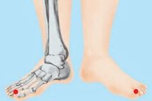
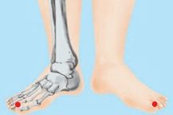
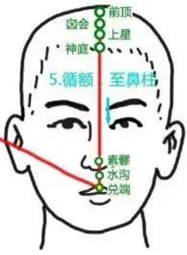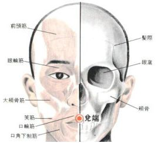
Acupoint Image : 

Acupoint Name : Shanzhong (膻中)
Acupoint Name Pinyin : Shanzhong
Acupoint International Code : RN17
Acupoint Aliases : Yuan'er (元儿), Xiongtang (胸堂), Shangqihai (上气海), Yuanjian (元见)
Acupoint Explanation : Shan refers to the smell of mutton or the fat inside a sheep's abdomen, indicating that the Qi and blood within this acupoint are warm and dry Qi after absorbing warmth. Zhong refers to the inside of the acupoint, the opposite of outside. The name Shanzhong signifies that the Qi of the Ren meridian absorbs warmth and expands here. The substance of this acupoint is the damp Qi from the Zhongting (中庭) acupoint, which further absorbs warmth and expands upon reaching this acupoint, transforming into warm and dry Qi, like the pungent smell of mutton, hence the name. Shanzhong is the place where the Qi of the internal organs converges, and it is one of the main acupoints on the Ren meridian. Massaging Shanzhong can dilate blood vessels, regulate heart function, and effectively treat various "Qi" diseases, including respiratory, circulatory, and digestive system disorders. Modern research has found that the Tanzhong acupoint, located in the thymus region, can participate in the body's cellular immune activity. Pressing this acupoint can affect the cardiovascular nerve regulation center, promote the redistribution of blood throughout the body, improve coronary blood flow, and enhance the autonomic nerve function of the chest and lungs. Modern medicine has also confirmed that stimulating this acupoint can regulate nerve function, dilate coronary blood vessels and the lumen of the digestive tract, and clinically it can be used to treat respiratory diseases (such as cough, bronchitis, pleurisy, etc.), digestive diseases (such as hiccups, vomiting, esophagitis, etc.), cardiovascular diseases (such as angina pectoris, palpitations, myocardial ischemia and hypoxia, etc.), and postpartum hypogalactia. Regularly pressing the Tanzhong acupoint also has excellent health benefits. When experiencing heart discomfort, symptoms may include difficulty breathing, rapid heartbeat, and dizziness. Pressing the Tanzhong acupoint can improve heart function and alleviate these symptoms. High work and life stress can easily lead to irritability and frustration; pressing the Tanzhong acupoint can smooth the flow of Qi and reduce anxiety. For women, pressing this acupoint can not only prevent and treat mastitis but also promote breast enhancement and beauty. Moxibustion at the Tanzhong acupoint can promote lactation in postpartum women. When feeling chest tightness due to anger, one may unconsciously pound their chest with their fist, which usually brings relief. This is not accidental or psychological; it's due to an acupoint on the chest—the Tanzhong acupoint, commonly known as the "venting point." Martial arts novels often describe a master striking their opponent's Tanzhong acupoint with a flick of their wrist, rendering them immobile or even fatal. While this is merely fiction, the Tanzhong acupoint is indeed a vital point for health maintenance.
Location and method : On the anterior midline of the body, at the midpoint of the line connecting the two nipples. The Tanzhong acupoint is located on the chest, on the posterior midline, level with the 4th intercostal space, at the midpoint of the line connecting the two nipples .
Anatomical location and structure : On the sternal body; contains the anterior perforating branches of the internal thoracic (mammary) artery and vein; innervated by the medial branch of the anterior cutaneous branch of the 4th intercostal nerve. Acupuncture : Insert the needle horizontally 0.3-0.5 cun. Moxibustion : Use a warm moxibustion cup for 3-5 minutes each time. Suitable for those with cold syndrome or postpartum hypogalactia. Stimulating this acupoint through the magnetic field and infrared rays of the cup has functions such as widening the chest and regulating qi, promoting blood circulation, clearing the lungs and relieving asthma, and soothing the heart and chest. Massage and other methods : Kneading: Use the thumb or the thenar eminence of the palm to knead clockwise and then counterclockwise 20 times each, repeating 10 times. Rubbing Method: Rub downwards with the thumb or the thenar eminence of the palm for 5-10 minutes. Pushing Method: Push and rub with both palms from the Tanzhong acupoint along the chest and ribs to the sides of the waist, about 20 times. Acupoint Functions : Promotes blood circulation, relieves chest tightness and regulates Qi, stops cough and relieves asthma, and soothes the heart and chest. Acupoint Indications and Clinical Applications : Respiratory system diseases: cough, asthma, shortness of breath, coughing up purulent blood, lung abscess, etc. Digestive system diseases: esophageal obstruction, abdominal distension, vomiting of saliva, etc. Cardiovascular system diseases: chest pain, heart pain, palpitations, irritability, etc. Other diseases: postpartum agalactia, goiter, cholera, muscle spasms, syncope, etc. Main Acupoint Combinations : 1. Combined with Quchi and Hegu (reducing method) to treat acute mastitis. 2. Combined with Neiguan, Sanyinjiao, Juque, Xinping, and Zusanli to treat acute myocardial infarction in coronary heart disease. 3. Combined with Zhongwan (CV12) and Qihai (CV6) to treat vomiting and nausea. 4. Combined with Tiantu (CV22) to treat asthma. 5. Combined with Rugen (ST18), Hegu (LI4), Sanyinjiao (SP6), Shaoze (SI1), and moxibustion at Tanzhong (CV17) to treat postpartum hypogalactia. 6. Combined with Feishu (BL13), Fenglong (ST40), and Neiguan (PC6) to treat cough with phlegm and wheezing. 7. Combined with Jueyinshu (BL14) and Neiguan (PC6) to treat palpitations, irritability, and chest pain. Acupoint Image : Acupoint Name : Dushu (督俞) Acupoint Name Pinyin : Dushu Acupoint International Code : BL16 Acupoint Aliases : Gaogai, Shanggai, Gaoyi Acupoint Explanation : Du (督) refers to the Du meridian, which is associated with Yang Qi. Yu (俞) means to transport. The name Dushu (督俞) signifies that the Yang Qi of the Du meridian is transported to the Bladder meridian from this point. This acupoint is where the Bladder meridian receives the Yang Qi of the Du meridian, hence the name. This acupoint is indicated for chest pain, chest tightness, abdominal pain, chills and fever, and wheezing. Acupoint Location and Method : On the back, below the spinous process of the 6th thoracic vertebra, 1.5 cun lateral to the midline. In the prone position, locate the acupoint 1.5 cun lateral to the spinous process of the sixth thoracic vertebra, at the Lingtai point (Governing Vessel). Anatomical location and structure : Beneath the acupoint are the skin, subcutaneous tissue, trapezius muscle, and sacrospinalis muscle . It contains the posterior branches of the sixth intercostal artery and vein, and the descending branch of the transverse cervical artery; it is innervated by the dorsal scapular nerve, cutaneous branches of the posterior branches of the sixth or seventh thoracic nerves, and the deep layer is the lateral branch of the posterior branch of the sixth thoracic nerve . Acupoint classification: Belongs to the Bladder Meridian of Foot-Taiyang ( Water ). Treatment methods: Acupuncture : Insert the needle obliquely inward 0.5-0.8 cun, causing local soreness and distension; the sensation may radiate to the intercostal spaces. Do not insert deeply to avoid pneumothorax. Moxibustion : Apply 3-7 moxa cones; or apply moxa sticks for 5-15 minutes. Massage and other methods : Press and rub with the thumb. Press and rub the Dushu acupoint with your thumb about 200 times, or for 3-5 minutes daily. This can treat chest pain, abdominal distension, and abdominal pain. Acupoint functions : Regulates Qi and relieves pain, strengthens the heart and unblocks the meridians. Indications and clinical applications : Circulatory system diseases: coronary heart disease, angina pectoris, tachycardia, endocarditis and endocarditis, chills and fever, asthma. Others: Gastritis, diaphragmatic spasm, mastitis, pruritus, psoriasis, etc. Main acupoint combinations : Combined with Neiguan (PC6) to treat chest pain and tightness. Acupoint image : Acupoint name
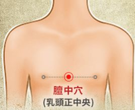


Dingchuan
Acupoint (Pinyin : Dinchuan
) International Code : EX-B1
Aliases :
Meaning : Dingchuan Acupoint: "Ding" means stable or calm. "Chuan" here refers to cough and asthma. This acupoint is mainly used to stop cough and asthma, and to clear the lungs.
Location and Method : With the patient in a prone position or sitting upright with head lowered, the acupoint is located on the posterior midline, below the spinous process of the seventh cervical vertebra (Dazhui acupoint), 0.5 cun lateral to the midline.
Anatomical Location and Structure : Located in the trapezius, rhomboid, splenius capitis, and longissimus muscles; superficially, it is mainly supplied by the medial cutaneous branch of the posterior branch of the 8th cervical nerve. Deeply, it contains branches or tributaries of the transverse cervical artery and vein, and muscular branches of the posterior branches of the 8th cervical nerve and the 1st thoracic nerve.
Acupoint Classification by Five Elements :
Acupoint Classification by Meridian : Extra
Meridian Acupoint (English) : Non-meridian extra acupoint. Acupoint Classification
by Meridian :
Acupoint Treatment - Acupuncture : Insert needle perpendicularly 0.5-1 inch.
Acupoint Treatment - Moxibustion :
Acupoint Treatment - Massage and Others : Patients experiencing an asthma attack can press this acupoint firmly with both thumbs until they feel local soreness, numbness, heaviness, and distension, which will gradually relieve wheezing. During the remission period of asthma, scraping can also be performed at this point for health maintenance, once every other day, until it is slightly red and warm. In addition, acupoint application is also a good method. Boil dried ginger, pinellia, and other Chinese herbs that relieve cough and asthma into a paste, wrap it in gauze, and apply it to the acupoint to achieve the health maintenance effect of relieving asthma and benefiting the lungs.
Acupoint Functions : Relieves cough and asthma, clears and regulates the lungs. Acupoint
Indications and Clinical Applications : Asthma, bronchitis, bronchial asthma, whooping cough; stiff neck, shoulder and back pain.
Main acupoint combinations : Combined with Feishu (BL13) and Zhongfu (LU1) to treat cough and asthma.
Acupoint image : 

Acupoint name : Daimai (Belt Vein)
Acupoint name pinyin : Daimai
Acupoint international code : GB26
Acupoint alias :
Acupoint explanation : It is the passage of the Daimai (Belt Vein), and it mainly treats Daimai and gynecological disorders. The acupoint and the meridian share the same name, hence the name Daimai. Daimai is one of the "Eight Extraordinary Meridians". Daimai means to bind, like a belt. The main function of Daimai is to "constrain all meridians". The so-called "swimming ring" in the abdomen is the place where the "Daimai" in traditional Chinese medicine is located. This acupoint mainly treats irregular menstruation, leukorrhea, and lower back and rib pain.
Acupoint location and method of acupoint selection : On the lateral abdomen, 1.8 cun below Zhangmen (LR13), at the intersection of the vertical line below the free ends of the 1st and 2nd ribs and the horizontal line at the level of the umbilicus. Take the acupoint while lying on your side.
Acupoint anatomical location and structure : Skin -> subcutaneous tissue -> external oblique muscle -> internal oblique muscle -> transversus abdominis muscle. The superficial layer contains the lateral cutaneous branches of the anterior rami of the 9th, 10th, and 11th thoracic nerves and accompanying arteries and veins. The deep layer contains the muscular branches of the anterior rami of the 9th, 10th, and 11th thoracic nerves and corresponding arteries and veins .
Acupoint belongs
to the Five Elements:
Meridian : Gallbladder Meridian of Foot-Shaoyang, Belt
Meridian .
Acupoint Treatment - Acupuncture : Insert needle perpendicularly 1-1.5 cun.
Acupoint Treatment - Moxibustion : Moxibustion is applicable.
Acupoint Treatment - Massage and Others : Massaging the Belt Meridian acupoint treats gynecological diseases. Relax the body, preferably standing, with feet slightly wider than shoulder-width apart. Press the Belt Meridian acupoints on both sides with the pads of your thumbs, applying slow, vertical pressure, combining pressing and kneading, until you feel a deep soreness and distension. Then slowly twist your waist to both sides to enhance the sensations of soreness, numbness, distension, heaviness, and radiating pain. Continue for 1-2 minutes, then gradually relax, and then gradually increase the pressure again. Repeat this cycle 8-10 times.
Acupoint Functions : Regulates Qi and Blood, warms and tonifies the Liver and Kidneys.
Acupoint Indications and Clinical Applications : For leukorrhea: Dai Mai, Bai Huan Shu, Yin Ling Quan, San Yin Jiao; have the effect of strengthening the spleen, eliminating dampness, and stopping leukorrhea. For dysmenorrhea and amenorrhea: Dai Mai, Zhong Ji, Di Ji, San Yin Jiao; have the effect of promoting Qi and Blood circulation, removing blood stasis, and relieving pain. For irregular menstruation: Dai Mai, Xue Hai, Ge Shu; have the effect of promoting menstruation and Blood circulation.
Main Acupoint Combinations : 1. Combined with Guan Yuan, Qi Hai, San Yin Jiao, Bai Huan Shu, and Jian Shi to treat red and white leukorrhea; 2. Combined with Guan Yuan, Zu San Li, Shen Shu, Jing Men, and Ciliao to treat leukorrhea due to Kidney Qi deficiency; 3. Combined with Zhong Ji, Ciliao, Xing Jian, and San Yin Jiao to treat leukorrhea due to damp-heat accumulation.
Acupoint Image :  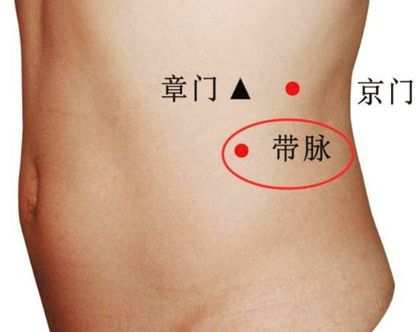
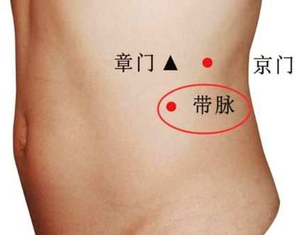
Acupoint Name : Danshu (胆俞穴)
Acupoint Name Pinyin : Danshu
Acupoint International Code : BL19
Acupoint Alias :
Acupoint Explanation : Dan (胆) refers to the gallbladder. Shu (俞) means to transport. The name Danshu (胆俞) signifies that the yang-heat qi of the gallbladder is transported to the bladder meridian from this point. Danshu is a Shu point on the back, located near the gallbladder, corresponding internally to the gallbladder, and is the place where gallbladder qi is transported and infused. It is a key acupoint for treating gallbladder conditions, hence the name. This acupoint is mainly used to treat hepatitis, bitter taste in the mouth, rib pain, pulmonary tuberculosis, and tidal fever.
Acupoint Location and Method of Acupoint Selection : On the back, below the spinous process of the 10th thoracic vertebra, 1.5 cun lateral to the midline. The acupoint is usually located in a sitting or prone position. Danshu (胆俞穴) is located on the back, below the spinous process of the 10th thoracic vertebra, about two finger-widths to the left and right. The human Danshu (胆俞穴) is located on the back, below the spinous process of the 10th thoracic vertebra, 1.5 cun lateral to the midline.
Anatomical location and structure of the acupoint : Located between the latissimus dorsi, longissimus, and tenosynovitis muscles; contains the posterior branches of the tenth intercostal artery and vein; innervated by the cutaneous branches of the posterior branch of the tenth thoracic nerve, with the lateral branch of the posterior branch of the tenth thoracic nerve deeper. Acupoint classification according
to the Five Elements : Meridian : Bladder Meridian of Foot-Taiyang. Acupoint classification according to the Five Elements : Water . Treatment method - Acupuncture : Oblique insertion 0.5-0.8 cun. Treatment method - Moxibustion : 3-7 moxa cones; or 5-15 minutes of moxa stick moxibustion.
Acupoint Therapy - Massage and Others : When pressing the Liver Shu acupoint, exhale while pressing firmly for 6 seconds, repeat 5 times each session, 5 sessions per day. Treatment for chronic hepatitis.
Acupoint Functions : Soothes the liver and gallbladder, clears heat and dampness.
Acupoint Indications and Clinical Applications : Gallbladder meridian diseases: cholecystitis, sciatica, rheumatoid arthritis, hepatitis, jaundice, bitter taste in the mouth, rib pain, pulmonary tuberculosis, night sweats, etc.
Main Acupoint Combinations : Combined with Yanglingquan and Taichong for biliary tract diseases.
Acupoint Image : 

Acupoint Name : Diwuhui
Acupoint Name Pinyin : Diwuhui
Acupoint International Code : GB42
Acupoint Alias :
Acupoint Explanation : Di refers to the earth. Wu refers to the five internal organs and six bowels. Hui means meeting. The name of this acupoint indicates that the cold and dampness of the heaven and earth meet here. This acupoint is located in the depression on the lateral side of the dorsum of the foot. The Qi and blood from the upper part of the Gallbladder Meridian, specifically the Zulinqi acupoint, are both cold and damp wind from the heavens and cold and damp water from the earth. The scattered Yang Qi from the heavens outside the acupoint is drawn in by the cold Qi and blood of this point, transforming into rain and descending into the acupoint. Overflowing water from the earth also flows into this acupoint. This acupoint is like a convergence of Qi and blood from the five internal organs, and since the Qi and blood are earth-based meridian water, it is named accordingly. This acupoint mainly functions to soothe the liver and gallbladder, and clear the head and eyes.
Location and method of acupoint selection : On the lateral side of the dorsum of the foot, posterior to the base of the fourth toe (fourth metatarsophalangeal joint), between the fourth and fifth metatarsal bones, on the medial border of the extensor digitorum littleis tendon. The acupoint can be located in a seated position with feet hanging down or in a supine position, between the fourth and fifth metatarsal bones, on the medial border of the extensor digitorum littleis tendon.
Anatomical Location and Structure of the Acupoint : Below the Diwuhui acupoint are the skin, subcutaneous tissue, the lateral tendons of the extensor digitorum longus and extensor digitorum brevis, the fourth dorsal interosseous muscle, and the second plantar interosseous muscle. Superficially, there are the intermediate dorsal cutaneous nerve of the foot, the dorsal venous network of the foot, and the dorsal plantar artery and vein. Deeply, there are the common plantar nerve of the fingers and the common plantar artery and vein.
Acupoint Belongs to the Five Elements
: Meridian Belongs
to
the Gallbladder Meridian of Foot-Shaoyang : Wood.
Acupoint Treatment - Acupuncture : Insert the needle perpendicularly or upwards 0.5-0.8 cun, causing local soreness and distension.
Acupoint Treatment - Moxibustion : Apply moxa cones or warm needle moxibustion for 3-5 cones; or apply moxa sticks for 5-10 minutes.
Acupoint Treatment - Massage and Others : Press and rub Diwuhui with your thumb about 200 times, or press and rub for 3-5 minutes, which can treat headaches, tinnitus, and other diseases.
Acupoint Functions : Soothes the liver and gallbladder, clears the head and eyes, and unblocks meridians.
Indications and Clinical Applications : Diseases of the ENT system: tinnitus, conjunctivitis, mastitis. Diseases of the musculoskeletal system: lumbar muscle strain, ankle sprain, lower back pain, swelling and pain in the dorsum of the foot. Others: pulmonary tuberculosis, hemoptysis, axillary lymphadenitis.
Main Acupoint Combinations : 1. Combined with Guangming (GB37) to clear the liver and improve vision, treating itchy and painful eyes. 2. Combined with Qimen (LR14), Xingjian (LR2), Neiguan (PC6), Jianjing (GB21), and Zulinqi (GB41) to regulate qi and reduce swelling, treating mastitis due to qi stagnation. 3. Combined with Taiyang (EX-HN5), Fengchi (GB20), Xuanlu (GB30), Taichong (LR3), and Hanyan (GB4) to clear heat and purge fire, treating headache. 4. Combined with Yifeng (TE17), Tinghui (GB2), Taichong (LR3), Qiuxu (GB40), and Zhongzhu (TE3) to purge fire and clear the orifices, treating tinnitus, deafness, etc.
Acupoint Image :
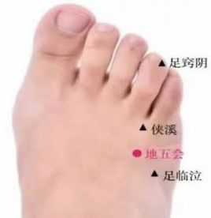
Acupoint Name : Dangyang
Acupoint Pinyin : Dangyang
Acupoint International Code : EX-HN2
Acupoint Alias : Taiyang
Acupoint Explanation : Dangyang Acupoint belongs to: Extra Meridian Acupoints, from: Tang Dynasty's "Essential Prescriptions Worth a Thousand Gold Pieces". "Dang" means towards. "Yang" refers to the yang in yin and yang, and in this case, the front of the head is yang. Dangyang Acupoint is located in the front of the head, hence the name. This acupoint mainly dispels wind and unblocks the meridians, clears heat and improves vision. Acupoint
Location and Method of Acupoint Location : Dangyang Acupoint is located in the front of the head, directly above the pupil, 1 cun above the anterior hairline. When locating the acupoint, adopt a sitting or supine position. Look straight ahead, vertically upward along the pupil, 1 finger-width directly above the hairline.
Anatomical Location and Structure of Acupoint : Beneath the acupoint are skin, subcutaneous tissue, frontal belly of the occipital-frontalis muscle or loose connective tissue under the galea aponeurotica. It is distributed with branches or tributaries of the supraorbital nerve and supraorbital artery and vein.
Acupoint Classification by Five Elements :
Acupoint Classification by Meridian : Extra
Meridian Acupoint (English) : Non-meridian extra acupoint
Acupoint Classification by Five Elements :
Acupoint Treatment Method - Acupuncture : Insert needle horizontally 0.5~0.8 cun.
Acupoint Treatment Method - Moxibustion : Gently apply moxibustion to Dangyang acupoint for 5~10 minutes, once a day, which can treat migraines, rhinitis, etc.
Acupoint Treatment Method - Massage and Others : 1. Press Dangyang acupoint with the pad of your index finger for 1~3 minutes on each side each time. This can improve symptoms such as headache, dizziness, and insomnia. 2. Scrape along the anterior hairline with a scraping board 30 times, once a day, which can treat headaches and dizziness.
Acupoint Function : Dispels wind and unblocks meridians, clears heat and improves vision.
Acupoint Indications and Clinical Applications : 1. Migraine, headache, nervous headache, dizziness, insomnia, forgetfulness, epilepsy. 2. Red and swollen eyes, rhinitis.
Main acupoint combinations : 1. Combined with Yingxiang (LI20) and Hegu (LI4) acupoints, it clears nasal passages and treats nasal congestion. 2. Combined with Taiyang (EX-HN5) and Erjian (EX-HN1) acupoints, it treats acute conjunctivitis.
Acupoint image :
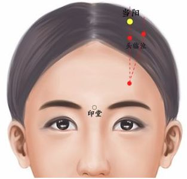
Acupoint name : Dagukong (大骨空)
Acupoint name pinyin : Dagukong
Acupoint international code : EX-UE5 Acupoint
alias : Dagukong (大骨孔)
Acupoint explanation : Da refers to the thumb; the acupoint is located in the joint space between the two phalanges of the thumb, hence the name. This acupoint mainly dispels wind and clears heat, removes pterygium and improves vision.
Acupoint location and method : With the patient's palm facing inward, locate the acupoint at the midpoint of the transverse crease of the interphalangeal joint on the dorsal side of the thumb.
Acupoint anatomical location and structure : Dagukong (大骨空) is located beneath the skin, subcutaneous tissue, and extensor pollicis longus tendon, and is innervated by the dorsal digital nerve of the superficial branch of the radial nerve.
Acupoint belongs to the Five Elements.
Acupoint Belonging to Meridians : Extra
Meridian Acupoints (English) : Non-meridian extra acupoint.
Acupoint Belonging to Meridians and Five Elements :
Acupoint Treatment - Acupuncture :
Acupoint Treatment - Moxibustion : 3-5 moxa cones; or 5-10 minutes of moxa stick moxibustion.
Acupoint Treatment - Massage and Others : Pressing (or moxibustion) the Dagukong acupoint is effective for intractable insomnia. Before bed, use a sharpened toothpick or fingernail to press this acupoint 100 times, pressing both hands. Many people see results that night. Stimulation can also be achieved by pressing the Dagukong acupoints on both hands against each other. Acupoint
Functions : Dispels wind and clears heat, removes corneal opacity and improves vision.
Acupoint Indications and Clinical Applications : 1. Eye pain, corneal opacity, cataracts, and other eye diseases. 2. Acute gastroenteritis, vomiting and diarrhea. 3. Nosebleeds.
Main acupoint combinations : 1. Combined with Xiaogukong, Guangming, and Taiyang to treat pterygium. 2. Combined with Xiaogukong to treat rotten eyes. 3. Combined with Shixuan to treat vomiting and diarrhea. 4. Combined with Fengchi, Ganshu, and Tongziliao to treat eye pain and pterygium. 5. Combined with Xiaogukong, Taiyang, and Neiyingxiang to treat all eye diseases.
Acupoint image : 

Acupoint name : Duyin
Acupoint Pinyin : Duyin
Acupoint International code : EX-LE11
Acupoint alias : Duhui
Acupoint meaning : "Du" can be understood as only, unique. "Yin" is the opposite of Yang. "Duyin" means only Yin and no Yang. This acupoint is an important acupoint for treating women's diseases.
Acupoint location and method of locating the acupoint: Located on the distal plantar side of the second toe, at the midpoint of the interphalangeal joint. The patient should be sitting upright with legs straight or lying supine to locate the acupoint.
Anatomical location and structure of the acupoint : Beneath the acupoint are the skin, tendinous sheath, flexor digitorum longus tendon, and distal digitorum joint. The skin is innervated by the proper plantar nerve of the medial plantar nerve and the common plantar nerve of the digital nerve. Each nerve is accompanied by its corresponding artery. The fibers of the plantar aponeurosis attach to the phalanges, forming a fibrous sheath through which the flexor digitorum longus tendon passes. This muscle (tendon) is innervated by the tibial nerve.
Acupoint classification :
Acupoint belongs to the Five Elements : Acupoint belongs to the Meridian
: Non-meridian extra acupoint. Acupoint treatment method - Acupuncture : Perpendicular insertion 0.1~0.2 cun. Contraindicated in pregnant women. Acupoint treatment method - Moxibustion : Moxibustion with moxa cones for 3~5 cones; or gentle moxibustion with moxa sticks for 10~15 minutes, once a day, can relieve and treat angina pectoris, stomach pain, chest pain, hernia, menstrual irregularities, etc. Acupoint Therapy - Massage and Others : Press and massage the Duyin acupoint with the tip of your thumb for 1-2 minutes daily. This can relieve and treat hernia, angina pectoris, stomach pain, and irregular menstruation. Not for use by pregnant women. Acupoint Functions : Activates blood circulation and regulates menstruation, relieves nausea and vomiting, harmonizes the stomach, regulates qi and relieves pain. Acupoint Indications and Clinical Applications : Chest and rib pain, vomiting, hematemesis, stillbirth, retained placenta, irregular menstruation, hernia; sudden heart pain. Main Acupoint Combinations : 1. Combined with Hegu (LI4) and Sanyinjiao (SP6) to treat difficult labor. 2. Combined with Ganshu (BL18), Pishu (BL20), Geshu (BL17), Xiasanli (ST36), Taichong (LR3), and below the breasts to treat stomach pain. 3. Combined with Sanyinjiao (SP6) to activate blood circulation, remove blood stasis, and relieve menstrual pain, treating amenorrhea and dysmenorrhea due to blood stasis. 4. Combined with Taichong (LR3) and Guanyuan (CV4) to warm and unblock the meridians, replenish vital energy and dispel cold, treating hernia. 5. Combined with Zhiyin (BL67), it warms and invigorates blood circulation, guiding the fetus downwards, treating stillbirth and retained placenta. 6. Combined with Zhongliao (BL32), Xialiao (BL34), and Taichong (LR3), it relieves and treats vaginal pain. Acupoint Image : Acupoint Name : Erjian (二间) Acupoint Name Pinyin : Erjian Acupoint International Code : LI2 Acupoint Aliases : Jiangu, Wengu, Zhougu Acupoint Meaning : Er (二) is a general term, here indicating a smaller amount. Jian (间) means interval or gap, referring to the location of the substance at this acupoint as a gap. The name of this acupoint indicates that the Qi and blood substance at this acupoint is located at a relatively low celestial level. The substance at this acupoint is the warm Qi and blood transmitted from Shangyang (LI1). The name Erjian describes the spatial range of the Qi and blood substance at this acupoint. This acupoint is mainly used to benefit the throat, clear heat, and address problems in the head and face. Acupoint Location and Method : With a slight fist clenched, locate the acupoint in the depression on the radial side anterior to the second interphalangeal joint of the index finger. Anatomical location and structure of the acupoint : It contains the superficial and deep flexor digitorum tendons; the dorsal and palmar digital arteries and veins originating from the radial artery; the proper digital nerves of the radial nerve and the proper digital and palmar digital nerves of the median nerve. Acupoint belongs to the Water element : Large Intestine Meridian of Hand Yangming. Treatment methods: Acupuncture : Insert the needle perpendicularly 0.2-0.4 cun, causing local distending pain. Moxibustion: Apply moxibustion with a grain of wheat for 3-5 cones; or apply moxa stick for 5-10 minutes. Massage and other methods : Massage the Erjian acupoint for 5 minutes daily. Functions : Relieves exterior symptoms, clears heat, and benefits the throat. Indications and clinical applications : Diseases of the head, face, and sensory organs: blurred vision, nosebleeds, toothache, gingivitis, facial paralysis, sore throat, fever, facial neuritis, trigeminal neuralgia, and lower back pain. Main acupoint combinations : Combined with Hegu (LI4) to treat toothache. Acupoint image : Acupoint name : Ermen (耳门) Acupoint name pinyin : Ermen Acupoint international code : SJ21 Acupoint aliases : Acupoint explanation
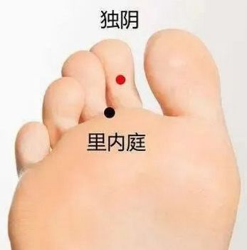


The ear is the site where the Qi and blood of the acupoint are activated. "Gate" refers to a portal or opening. The name "Ear Gate" signifies that the stagnant, heavy dampness in the Sanjiao Meridian cools and descends here, flowing into the body through the ear canal. The substance at this acupoint is the damp Qi transmitted from the Jiaosun acupoint. Upon reaching this point, the damp Qi transforms into rain, cools and descends as meridian water, flowing into the body through the ear canal. This acupoint acts as a portal for the Qi and blood of the Sanjiao Meridian to enter and exit the ear, hence its name. This acupoint is one of the most important primary acupoints for treating various ear diseases.
Location and Method of Acupoint Selection : On the face, anterior to the superior notch of the tragus, posterior to the condylar process of the mandible, in a depression when the mouth is open. When locating this acupoint, the patient is usually seated upright or lying supine/leaning forward to allow the practitioner to accurately locate the acupoint and smoothly perform the corresponding massage techniques.
Anatomical Location and Structure of the Acupoint : It contains the anterior branch of the superficial temporal artery and vein; it is innervated by the auriculotemporal nerve and branches of the facial nerve.
Acupoint Belongs to the Five Elements :
Meridian
Belongs to the Hand-Shaoyang Sanjiao Meridian; Element : Fire
. Treatment
Methods - Acupuncture : Insert needle perpendicularly 0.5-1 cun, or downwards 1-2 cun, causing a feeling of distension in the ear, sometimes spreading to half of the face. Treats deafness, tinnitus, childhood deafness, toothache, and otitis media.
Treatment Methods - Moxibustion : Apply moxibustion for 5-10 minutes.
Treatment Methods - Massage and Others : Press and rub the Ermen acupoint vertically with the tip of the thumb until a distending pain is felt. Massage once each morning and evening, rubbing and rubbing each acupoint (or both sides simultaneously) for 1-3 minutes each time. Therapeutic Functions: Opens the orifices and improves hearing, clears heat and invigorates the meridians.
Acupoint Functions : Opens the orifices and improves hearing, clears heat and invigorates the meridians.
Acupoint Indications and Clinical Applications : Diseases of the ear and sensory organs: deafness, tinnitus, otitis media, toothache, neck and jaw pain, stiff lips and mouth.
Main Acupoint Combinations : 1. Combined with Sizhukong (TE23) to treat toothache. 2. Combined with Duiduan (EX-B1) to treat upper tooth caries. 3. Combined with Tinggong (SI19), Tinghui (GB2), and Yifeng (TE17) to treat tinnitus, deafness, and otitis media. 4. Combined with Jiache (ST6), Xiaguan (ST7), and Hegu (LI4) to treat toothache. 5. Combined with Quanliao (SI18), Jiache (ST6), and Yifeng (TE17) to treat temporomandibular joint arthritis. Acupoint
Image :  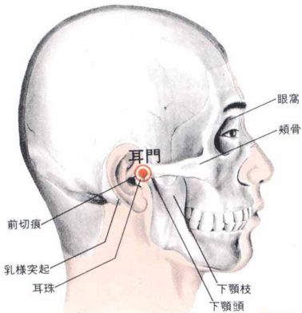
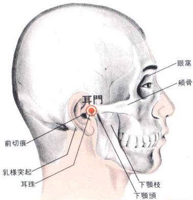
Acupoint Name : Ear Apex
Acupoint Pinyin : Erjian
Acupoint International Code : EX-HN6
Acupoint Alias :
Acupoint Explanation : Named for its location at the uppermost part of the ear apex. This acupoint is indicated for deafness, tinnitus, otitis media, toothache, etc. The location of the ear apex corresponds to the higher center of the autonomic nervous system; stimulating the ear apex acupoint can regulate the functions of the internal organs and emotions. Ear apex bloodletting therapy is simple, effective, and has a wide range of therapeutic applications, making it a commonly used clinical treatment method.
Location and method of acupoint selection : In a seated or side-lying position, the acupoint is located above the auricle, at the tip of the upper part of the auricle when the ear is folded forward.
Anatomical location and structure of the acupoint : Beneath the acupoint are skin, subcutaneous tissue, and auricular cartilage. It is distributed by the superficial temporal depression, the anterior branch of the temporal vein, the posterior branch of the posterior auricular artery and vein, the anterior branch of the auriculotemporal nerve, the posterior branch of the lesser occipital nerve, and the auricular branch of the facial nerve.
Acupoints and their Five Elements :
Acupoints and their Meridians : Extra
Meridians (English : Non-meridian extra acupoint)
Acupoints and their Meridian Five Elements :
Acupoint Treatment - Acupuncture : Insert the needle 0.3-0.5 cun deep; or disinfect the ear apex acupoint, prick it with a three-edged needle or injection needle to draw blood, squeeze out 8-10 drops of blood, and then apply pressure with a sterile dry cotton ball to stop the bleeding. Do this once daily. This can harmonize the heart and kidneys, clear gallbladder heat, calm the mind and promote sleep, and lower blood pressure.
Acupoint Treatment - Moxibustion : Gently moxibust the ear apex acupoint with an moxa stick for 10 minutes, once a day. This can relieve and treat migraines, keratitis, and other symptoms.
Acupoint Treatment - Massage and Others : Massaging the ear apex acupoint can relieve red, swollen, and painful eyes, and acute conjunctivitis. It has the effects of clearing heat and dispelling wind, relieving spasms and pain.
Acupoint Functions : Clears heat and dispels wind, relieves spasms and pain, clears the mind and improves vision.
Acupoint Indications and Clinical Applications : 1. Red, swollen, and painful eyes; acute conjunctivitis; keratitis. 2. Migraine. 3. Others: Sedative and sleep-inducing, blood-activating and stasis-removing, blood-circulating and blood-lowering.
Main Acupoint Combinations : 1. Combined with Dazhui (GV14) and Shixuan (EX-UE11) to relieve heatstroke. 2. Combined with Zanzhu (BL2), Fengchi (GB20), Guangming (GB37), Hegu (LI4), Weizhong (BL40), Guanchong (CV9), and Yintang (EX-UE2) to relieve conjunctivitis, red, swollen, and painful eyes, etc.
Acupoint Image :
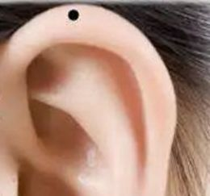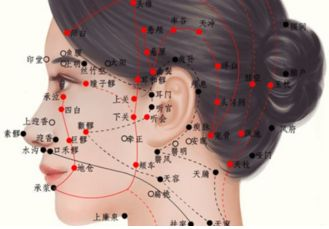
Acupoint Name : Erbai (二白)
Acupoint Name Pinyin : Erbai
Acupoint International Code : Ex-UE2 Acupoint Alias: Acupoint Explanation :
Er (二) refers to quantity. Bai (白) means white and bright. This acupoint is located on both sides of the flexor carpi radialis tendon. The skin here is tender and white, and there are two acupoints on one side, hence the name. This acupoint is mainly used to treat hemorrhoids, rectal prolapse, etc. Location and Method of Acupoint Selection : Erbai (二白) is an extra acupoint. Its precise location is on the palmar side of the forearm, 4 cun above the wrist crease, on both sides of the flexor carpi radialis tendon. There are two acupoints on one side. Make a fist; the tendon on the thumb side protrudes. The acupoint is located 6 finger-widths directly above the wrist crease, at the point where it intersects with the tendon. Anatomical Location and Structure : The acupoint is located in the flexor digitorum superficialis, flexor pollicis longus (radial side acupoint), and flexor digitorum profundus (ulnar side acupoint). Superficially, the median and lateral cutaneous nerves of the forearm are distributed; deeper, the radial artery trunk, superficial branch of the radial nerve (radial side acupoint), and median nerve (ulnar side acupoint) pass through, along with muscular branches of the median nerve and the anterior interosseous artery. Five Elements Classification : Extra acupoint ( non -meridian extra acupoint). Treatment Method - Acupuncture : Insert needle perpendicularly 0.5-1 cun. Acupoint therapy - Moxibustion : Apply 3-5 moxa cones; or apply moxa sticks for 5-10 minutes. Acupoint therapy - Massage and others
If you experience severe pain while squatting for a long time during toilet use, massaging Erbai (二白) can effectively relieve the pain.
Acupoint Function : Regulates Qi and Blood, lifts the anus and eliminates hemorrhoids.
Indications and Clinical Applications : 1. Hemorrhoids, rectal prolapse. 2. Forearm pain, chest and rib pain.
Main Acupoint Combinations : 1. Combined with Baihui (百会) and Changqiang (长强) to treat rectal prolapse, etc. 2. Combined with Dachangshu (大肠俞) to treat hemorrhoids (Erbai: needling and reducing method; Dachangshu: picking method).
Acupoint Image : 

Acupoint Name : Erheliao (耳和髎)
Acupoint Name Pinyin : Erheliao
Acupoint International Code : SJ22
Acupoint Alias :
Acupoint Explanation : Er refers to the ear orifice, He means harmony, Liao refers to the bone gap. This acupoint is located in the superficial gap of the bone in front of the ear, and can regulate the ear and harmonize sound. Heliao (禾髎). He refers to grains, here referring to the spleen earth particles in Qi and Blood. Liao means gap. The name He Liao signifies that the cold and damp qi entering from the Triple Energizer Meridian and other acupoints transforms into rain and descends here. The substance at this acupoint consists of two parts: one is the damp qi transmitted from the Ermen acupoint, which is small in quantity and has a contracting nature; the other is the cold and damp qi transmitted from the Foot Shaoyang Gallbladder Meridian and the Hand Taiyang Small Intestine Meridian. The two qi converge at this acupoint, transforming into rain and descending, as if the rain is leaking through a pore, hence the name. This acupoint is mainly used to clear heat and dispel wind, and to open the orifices and improve hearing.
Location and method of acupoint selection : On the side of the head, at the posterior border of the temple hairline, level with the root of the auricle, at the posterior border of the superficial temporal artery. The acupoint is located in a sitting or lying position, above and in front of the Ermen acupoint, level with the root of the auricle, at the lateral aspect of the pulsation of the artery at the posterior border of the temple hairline.
Anatomical location and structure of the acupoint : Located in the preauricular muscle, superficial layer of the temporal fascia, and temporalis muscle; it is innervated by branches and tributaries of the superficial temporal artery and vein; the auriculotemporal nerve and the temporal branch of the facial nerve are also present.
Acupoint Classification by Five Elements :
Acupoint Classification by Meridian : Hand-Shaoyang
Sanjiao Meridian English : Sanjiao Meridian of Hand-Shaoyang
Acupoint Classification by Five Elements : Fire
Acupoint Treatment - Acupuncture : Avoid arteries, oblique or horizontal insertion 0.3-0.5 cun, local soreness and distension.
Acupoint Treatment - Moxibustion : Warm needle moxibustion 3-5 cones; or moxibustion with moxa stick for 5-10 minutes.
Acupoint Treatment - Massage and Others : Press and rub the ear and liao points with your thumb about 200 times, or press and rub for 3-5 minutes, persist daily, can treat deafness and tinnitus.
Acupoint Functions : Dispel wind and unblock meridians, relieve spasms and pain.
Acupoint Indications and Clinical Applications : 1. Headache, tinnitus. 2. Facial nerve paralysis, trismus, facial asymmetry.
Main Acupoint Combinations : 1. Combined with Tinggong and Yifeng to treat tinnitus. 2. Combined with Jiache, Dicang, and Yangbai, it is used to treat facial paralysis. 3. Combined with Taiyang, Yintang, and Zulinqi, it is used to treat migraine.
Acupoint Image : 

Acupoint Name : Futu Acupoint
Name Pinyin : Futu
Acupoint International Code : LI18
Acupoint Aliases : Shuixue, Shuiquan
Acupoint Meaning : Fu means to help or support. Tu means to rush. The name of this acupoint indicates that the Qi of the Large Intestine Meridian ascends to the upper part of the body with the assistance of external heat. The substance of this acupoint is the water-dampness Qi evaporated and ascending from Tianding acupoint. It is stagnant and heavy, and after reaching this acupoint, it is unable to ascend to the upper part of the body. It is only with the assistance of the external heat of the heart that it can ascend, hence the name. This acupoint is used to treat cough, asthma, and sore throat.
Acupoint Location and Method : Located on the lateral side of the neck, 3 cun lateral to the Adam's apple, between the anterior and posterior borders of the sternocleidomastoid muscle.
Anatomical location and structure of the acupoint
: Located in the platysma muscle between the sternal heads of the sternal muscles, deep to the origin of the levator scapulae muscle; the ascending cervical artery is located medially in the deep layer; the great auricular nerve, cervical cutaneous nerve, lesser occipital nerve, and accessory nerve are distributed here. Acupoint
belongs to the Five Elements : Meridian: Large Intestine Meridian of Hand Yangming . Treatment method - Acupuncture : Insert the needle perpendicularly 0.5-0.8 cun, causing local soreness and distension that may radiate to the throat, resulting in a tight and distended sensation. Note that the needle should not be inserted too deeply to avoid vagus nerve reaction. Treatment method - Moxibustion : Apply 3-5 moxa cones; or apply gentle moxibustion for 5-10 minutes. Treatment method - Massage and others : Press the acupoint with the pads of the index and middle fingers together, pressing each side for 1-3 minutes each time. Function of the acupoint : Clears the throat and reduces swelling, regulates Qi and relieves nausea. Indications and Clinical Applications of this Acupoint : Cough and asthma, sore throat, difficulty swallowing, goiter, hoarseness. Main Acupoint Combinations : Combined with Hegu (LI4) to treat goiter. Acupoint Image : Acupoint Name : Fenglong (丰隆) Acupoint Name Pinyin : Fenglong Acupoint International Code : ST40 Acupoint Alias : Acupoint Explanation : Feng means full, and Long refers to protrusion. The Foot Yangming Meridian has abundant Qi and Blood. Qi and Blood converge at this acupoint, causing it to bulge and the flesh to gradually thicken, hence the name. Another Explanation: Fenglong is an onomatopoeic word, a borrowed word for "rumbling". The substance at this acupoint is mainly the dampness and cloudiness transmitted from Tiaokou (条口), Shangjuxu (上巨虚), and Xiajuxu (下巨虚) acupoints. Upon reaching this acupoint, the dampness and cloudiness transform into rain and fall in large quantities, like the rumbling sound of thunder, hence the name. This acupoint is mainly used to treat drowsiness, etc. Location and Method of Acupoint Selection : Fenglong acupoint is located on the anterolateral aspect of the lower leg, eight cun above the tip of the lateral malleolus, lateral to the Tiaokou acupoint, and two finger-widths (middle finger) from the anterior border of the tibia. Alternatively, in a supine or sitting position with feet hanging down, locate the acupoint eight cun below the lateral knee eye (Dubi acupoint), at the midpoint of the line connecting the highest point of the lateral malleolus and the lateral knee eye, two finger-widths from the anterior border of the tibia. Another method is to find the knee eye and lateral malleolus on the lateral side of the leg, draw a line connecting them, and find the midpoint of this line. Then, locate the tibia on the leg, 1.5 cun (approximately two finger widths) lateral to the anterior border of the tibia, level with the midpoint of the previous line. This is Fenglong acupoint. Anatomical Location and Structure : Located between the extensor digitorum longus and peroneus brevis muscles; contains branches of the anterior tibial artery; at the location of the superficial peroneal nerve. 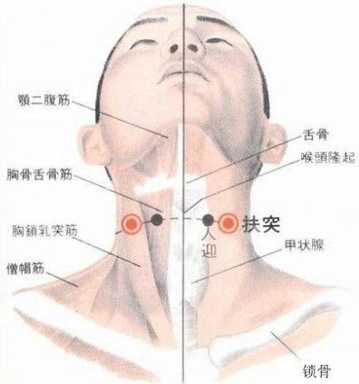
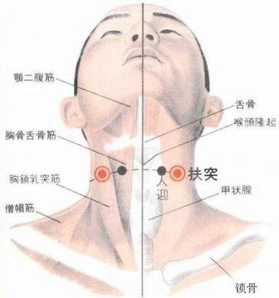
Acupoint Classification by Five Elements :
Acupoint
Classification by Meridian : Stomach Meridian of Foot-Yangming (English): Stomach Meridian of Foot-Yangming
(Five Elements) : Earth
Acupoint Treatment - Acupuncture : The patient lies supine with legs extended and feet flexed. Select the Fenglong acupoint. After routine disinfection, insert a filiform needle vertically and quickly into the subcutaneous tissue to a depth of 1-1.5 inches. A sensation of heaviness, astringency, and tightness under the needle indicates the arrival of Qi. After obtaining Qi, apply a slow but heavy manipulation to transmit the sensation to the second and third toes. The sensation will continuously intensify over time until the needle is withdrawn. Retain the needle for 30 minutes each time, once daily, for 10 days as one course of treatment, with a 2-day rest period. Indications: Hyperlipidemia. Obesity, forgetfulness, slow speech, sluggish thinking, dementia, drowsiness, headache, and dizziness.
Acupoint Therapy - Moxibustion : Apply 3-7 moxa cones; or apply moxa sticks for 5-15 minutes.
Acupoint Therapy - Massage and Others : The flesh of Fenglong acupoint is thick and hard. When massaging, a massage stick or the index finger knuckle can be used. Try pressing around the acupoint in all directions to find the most sensitive point. Fenglong acupoint is more sensitive than usual when there is phlegm that cannot be coughed up. 1. Press Fenglong acupoint with your thumb for three minutes, then rub it clockwise for ten minutes. Afterward, rub downward along Fenglong acupoint in one direction only (i.e., only from Fenglong acupoint downwards, not from Fenglong acupoint downwards and then back and forth) for ten minutes. This can treat bloating, hiccups, and poor appetite. 2. Massaging Fenglong acupoint can dispel dampness and resolve phlegm. Fenglong, onomatopoeia, sounds like thunder. Massage can expel turbid dampness from the spleen and stomach like thunder and rain. 3. Place your left (right) lower limb flat on the opposite knee joint. Place the tip of your right (left) middle finger on the Fenglong acupoint, with your thumb on the opposite side, and pinch firmly for 0.5 to 1 minute. Do this once every morning and evening, and be consistent. At the same time, do abdominal contraction and anal sphincter exercises 20 to 30 times. This can help with digestion and fat reduction.
Acupoint functions : Resolves phlegm and stagnation, relieves chest tightness and regulates Qi, and descends stomach turbidity.
Acupoint indications and clinical applications : 1. Headache, dizziness, drowsiness, hypertension, hyperlipidemia, neurasthenia, schizophrenia. 2. Cough with excessive phlegm, bronchitis. 3. Mania. 4. Lower limb weakness and paralysis.
Main acupoint combinations : 1. Combined with Yinlingquan, Shangqiu, and Zusanli to treat various phlegm-dampness symptoms. 2. Combined with Feishu and Chize to treat cough and asthma. 3. Combined with Chongyang (ST39), it has the effect of clearing phlegm and calming the mind, and is mainly used to treat delirium, singing while climbing high places, and running away naked. 4. Combined with Zhaohai (KI6) and Taodao (KI13), it has the effect of clearing phlegm and refreshing the mind, and is mainly used to treat epilepsy.
Acupoint Image :  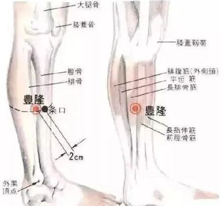
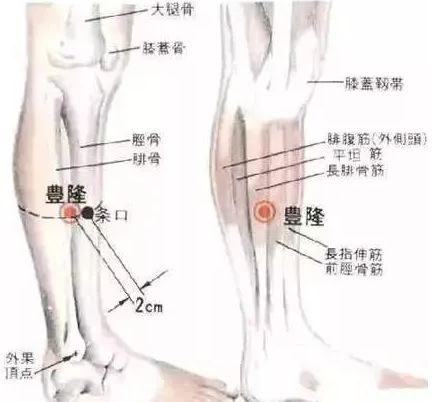
Acupoint Name : Fushe (府舍) Acupoint
Name Pinyin : Fushe
Acupoint International Code : SP13
Acupoint Alias :
Acupoint Explanation : Fu (府) means internal organs. She (舍) means source. The name of this acupoint indicates that the Qi and blood of this acupoint originate from the internal organs. Because this acupoint has a pore connecting to the Yin Wei meridian in the body, the fluids of the Yin Wei meridian are transmitted to this acupoint. The Qi and blood of this acupoint partly originate from the internal organs, hence the name. This acupoint is mainly used to treat abdominal pain, hernia, etc.
Acupoint Location and Method : In the lower abdomen, 4 cun below the umbilicus, 0.7 cun above Chongmen (ST31), 4 cun lateral to the anterior midline. In the lower abdomen, 4 cun below the umbilicus, 0.7 cun above Chongmen (ST31), 4 cun lateral to the anterior midline.
Anatomical location and structure of the acupoint : Located above and lateral to the inguinal ligament, in the aponeurosis of the external oblique muscle and the lower part of the internal oblique muscle, with the lower part of the transversus abdominis muscle deeper; innervated by the superficial abdominal wall artery, intercostal artery and vein; innervated by the ilioinguinal nerve (right side at the lower part of the cecum, left side at the lower part of the sigmoid colon). Acupoint classification :
Meridian : Foot Taiyin Spleen Meridian, Yin Wei Meridian . Acupoint classification: Earth . Treatment methods - Acupuncture : Insert needle perpendicularly 1-1.5 cun. Treatment methods - Moxibustion : Apply 3-5 moxa cones; or apply moxa sticks for 5-20 minutes. Gentle moxibustion with moxa sticks for 5-20 minutes once daily can improve abdominal distension and pain. Treatment methods - Massage and others : Press and rub the Fushe acupoint with your thumb 100-200 times daily to relieve groin pain. Acupoint Functions : Moistens spleen dryness, strengthens spleen and regulates qi, generates spleen qi, disperses nodules and relieves pain. Indications and Clinical Applications : Abdominal pain, accumulation, masses, hernia, etc. Main Acupoint Combinations : Combined with Qihai (CV6) to treat abdominal pain. Acupoint Image : Acupoint Name : Fengmen (风门) Acupoint Name Pinyin : Fengmen Acupoint International Code : BL12 Acupoint Alias : Acupoint Explanation : Feng (风) refers to the fact that the qi and blood substances within the acupoint are mainly wind-like. Men (门) means a gateway. The name Fengmen signifies that the qi and blood of the bladder meridian transform into wind and ascend here. The substance at this acupoint is the water-damp qi ascending from the back-shu points of the bladder meridian. Upon reaching this acupoint, it absorbs heat, expands, and transforms into wind, hence the name. Fengmen is one of the most commonly used acupoints for dispelling wind in clinical practice. Acupoint Location and Method of Acupoint Selection : Located on the back, below the spinous process of the second thoracic vertebra, 1.5 cun lateral to the midline. The Fengmen acupoint is located approximately 2 cm to the left and right of the center of the second depression below the Dazhui acupoint (between the second and third thoracic vertebrae). Anatomical location and structure : The area contains the trapezius, rhomboid, and serratus posterior superior muscles, with the deep layer being the serratus abdominis muscle; it contains the posterior branches of the second intercostal artery and vein; it is innervated by the cutaneous branches of the posterior branches of the second and third thoracic nerves, with the deep layer being the lateral branch of the posterior branch of the third thoracic nerve. Beneath the acupoint are the skin, subcutaneous tissue, trapezius, rhomboid minor, serratus posterior superior muscles, and erector spinae muscles. The skin is innervated by the medial branches of the posterior branches of the first, second, and third thoracic nerves. The trapezius is innervated by the accessory nerve; the rhomboid muscles are innervated by the dorsal scapular nerve, which originates from the brachial plexus, passes deep to the levator scapulae muscle and the rhomboid muscles, descends along the medial border of the scapula, almost reaching the inferior angle of the scapula, and branches innervate the rhomboid major, rhomboid minor, and levator scapulae muscles. After passing through the aforementioned structures, the needle can penetrate as deep as the second intercostal space. The corresponding organs in the thoracic cavity are the pleural cavity and lungs, so it is crucial to control the depth of needle insertion. Acupuncture point belongs to the Five Elements : Meridian : Bladder Meridian of Foot-Taiyang. Five Elements : Water. 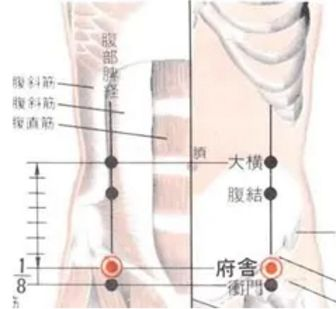
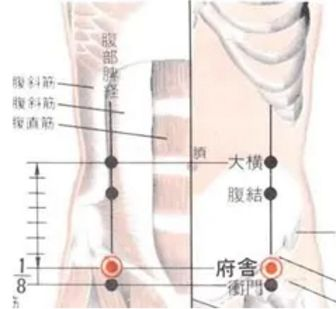
Acupuncture Treatment - Acupuncture : Oblique insertion 0.5-0.8 cun, local soreness and distension, the needling sensation can spread to the intercostal space and shoulder. Do not insert too deeply to avoid pneumothorax.
Acupuncture Treatment - Moxibustion : 5-7 moxa cones; or warm moxibustion with moxa sticks for 10-15 minutes.
Acupuncture Treatment - Massage and Others : 1. Take a deep breath, and when the breath stops, press the acupoint firmly with your index finger, exhaling slowly. After 6 seconds, slowly release. Repeat this 10-30 times. This treatment can almost cure a cold. 2. Massaging the Fengmen acupoint can prevent stroke. In cases of cerebral hemorrhage and fainting, bloodletting at the Fengmen acupoint can alleviate cerebral congestion or hemorrhage and can be used for emergency treatment. 3. Regular massage of the Fengmen acupoint can relieve symptoms such as shoulder pain, soft tissue strain in the shoulder and back, and headache.
Acupoint Functions : Promotes lung qi circulation, dispels wind-evil, regulates qi mechanism, clears heat and releases the exterior.
Indications and Clinical Applications of this Acupoint : Common cold, cough, fever, headache, neck pain, chest and back pain.
Main Acupoint Combinations : 1. Combined with Feishu (BL13) and Dazhui (GV14) to treat cough and asthma. 2. Combined with Hegu (LI4) to treat cough and wind-related illnesses.
Acupoint Image :
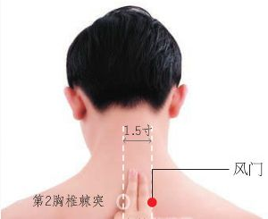
Acupoint Name : Fengfu (GV16) Acupoint
Name Pinyin : Fengfu
International Acupoint Code : DU16
Acupoint Aliases : Benxue, Guixue, Sheben, Caoxi, Guixue, Guizhen
Acupoint Explanation : Feng refers to the Qi and blood within the acupoint being wind-like. Fu means residence or dwelling. The name Fengfu signifies that the Qi of the Du Meridian absorbs moisture and transforms into wind at this point. The substance at this acupoint is the Yang Qi from the Yamen (GV15) acupoint. Upon reaching this acupoint, this Qi dissipates heat, absorbs moisture, and transforms into wind-like Qi that flows horizontally in the upper part of the body. This acupoint is an important source of wind-like Qi in the upper part of the body, hence the name. Fengfu is most prone to attracting wind-evil, but it is also the first choice for treating wind-related diseases.
Location and Method of Acupoint Selection : Fengfu (GV16) belongs to the Du Meridian. It is located on the nape of the neck, 1 cun directly above the midpoint of the posterior hairline, directly below the external occipital protuberance, in the depression between the trapezius muscles on both sides. Touching behind the earlobe, there is a prominent bone called the mastoid process. From below this bone, along its posterior border, touch the bone above; there is a shallow depression. Pressing it will produce a vibration; this is the acupoint. This acupoint is usually located in a prone, supine, or sitting position. Fengfu is located at the midpoint of the line connecting the two Fengchi (GB20) acupoints, in the parietal fossa.
Anatomical Location and Structure : Skin, subcutaneous tissue, nuchal ligament, spinous ligament, ligamentum flavum; arteries accompany the acupoint area, with the greater occipital nerve and occipital artery deeper, and the dura mater and spinal cord even deeper.
Acupoints and their Five Elements :
Acupoints and their Meridians : Governing Vessel, Yangwei Vessel
. Acupoint Treatment - Acupuncture : Sit upright with your head slightly tilted forward and neck muscles relaxed. Slowly insert the needle 0.5-1 inch towards the jaw. The needle tip should not point upwards to avoid piercing the foramen magnum and injuring the medulla oblongata. Acupoint Treatment - Moxibustion
: Moxibustion is contraindicated. Acupoint Treatment - Massage and Others : Place the tips of your thumbs together and press downwards with the pads (or tips) of your fingers, massaging the acupoint until you feel soreness, distension, or numbness. Massage for 1-3 minutes each time. When massaging the Fengfu acupoint, you can lower your head. Women can use their left hand to gather their hair forward and use their right thumb to massage, while the other four fingers hold the head in place. This allows the thumb to apply pressure. Massage 30-50 times each time to effectively relieve headache symptoms. Massaging the Fengfu acupoint can improve blood circulation, specifically the blood supply to the brain. After the massage, you'll feel particularly clear-headed and no longer dizzy. Acupoint functions : Clears heat and dispels wind, opens the orifices. Indications and clinical applications : 1. Headache, dizziness, stiff neck, and other head and neck disorders. 2. Stroke, mania, dementia. 3. Sore throat, aphonia. Main acupoint combinations : 1. Combined with Baihui and Taichong, it can soothe the liver, regulate qi, and relieve pain, mainly treating headaches. 2. Combined with Feishu, Taichong, and Fenglong, it can resolve phlegm, regulate qi, and relieve depression, mainly treating mania. 3. Combined with Renzhong and Taichong, it can dispel wind, calm the nerves, and open the orifices, mainly treating infantile convulsions. 4. Combined with Feishu and Lianquan, it can dispel wind, release the exterior, clear heat, and relieve pain, mainly treating sore throat. 5. Combined with Kunlun and Shugu, it treats mania with incessant talking. Acupoint Image : Acupoint Name : Fengshi (风市) Acupoint Name Pinyin : Fengshi Acupoint International Code : GB31 Acupoint Alias : Acupoint Meaning : "Shi" means market. The name of this acupoint indicates that the Qi of the Gallbladder Meridian dissipates heat and condenses here, transforming into damp and windy Qi. The substance of this acupoint is the cool and damp Qi from the Huantiao (环跳) acupoint. Upon reaching this acupoint, the cool and damp Qi further dissipates heat and condenses, transforming into damp and cloudy Qi in the sky. This damp and cloudy Qi is transmitted horizontally outward from the sky layer of this acupoint. This acupoint is like a gathering and dispersing point of wind Qi, hence the name. This acupoint is an important acupoint for treating wind-evil. Acupoint Location and Method of Acupoint Selection : On the midline of the lateral thigh, 7 cun above the popliteal crease. Or, when standing upright with arms hanging down, at the tip of the middle finger. Acupoint Anatomical Location and Structure : Under the fascia lata, in the vastus lateralis muscle; contains muscular branches of the lateral circumflex femoral artery and vein; innervated by the lateral femoral cutaneous nerve and muscular branches of the femoral nerve. Acupoints belong to the Five Elements : Acupoints belong to the Meridian of Foot-Shaoyang. Acupoints belong to the Five Elements of Foot-Shaoyang : Wood. Acupoint Treatment - Acupuncture : Insert needle perpendicularly 1-1.5 cun. 1. When selecting acupoints and treating the condition, the needling method along the meridian can be used, or the upward needling method can be used (the *Neijing* states: "Upward needling involves inserting one needle directly inward, four needles to the sides, and then applying them superficially to treat cases of widespread coldness"). That is, approximately 0.5-1.0 cun anteriorly, posteriorly, laterally, and laterally to the acupoint, with additional bee venom needles, or scattered or point-pricking methods at the surrounding points. Other acupoints such as Shenshu, Yanglingquan, Liangqiu, and Xuehai can be used in combination. This can treat lateral femoral cutaneous nerve neuritis. 2. The main acupoint is Fengshi, combined with Yifeng, Fengchi, Jiache, and Hegu. The patient lies on their side with the affected side up. After local skin disinfection, the acupoints are needled 1 inch deep using a balanced tonifying and reducing technique. After obtaining the needling sensation, the needles are retained for 30 minutes, followed by TDP irradiation. This can treat hemifacial spasm. Acupoint treatment - Moxibustion : 5-7 moxa cones; or moxa sticks for 10-15 minutes. Acupoint treatment - Massage and others : The patient assumes a horse stance and strikes the Fengshi acupoint (located on the outer thigh with the middle finger of the hand hanging naturally) with both hands. Acupoint functions : Promotes the transformation and transportation of dampness, dispels wind and dampness, and unblocks the meridians.

Indications and Clinical Applications of Acupoint : Hemiplegia due to stroke, weakness and numbness of the lower limbs, generalized itching, and athlete's foot.
Main Acupoint Combinations : 1. Combined with Dachangshu (BL25), Huantiao (GB30), Zhibian (BL54), Weizhong (BL40), Yanglingquan (GB34) to treat lower back and leg pain. 2. Combined with Dazhu (BL11), Dazhui (GV14), Mingmen (GV4), Guanyuan (CV4), Yaoyangguan (GV3) to treat rheumatoid arthritis and arthralgia. 3. Combined with Fengchi (GB20), Quchi (LI11), Waiguan (TE5), and Xuehai (SP10) to treat urticaria. 4. Combined with Futu (ST30), Dubi (ST35), Zusanli (ST36), and Xuanzhong (GB39) to treat lower limb weakness and numbness.
Acupoint Image : 

Acupoint Name : Fengchi (GB20) Acupoint
Name Pinyin :
Fengchi International Code : GB20
Acupoint Alias : Refu (热府)
Acupoint Explanation : Feng (风) refers to the wind-like energy within the acupoint. Chi (池) refers to a vessel containing water, indicating that the acupoint is rich in moisture. The name Fengchi signifies that the Qi and blood of the meridians transform into Yang-heat wind energy here. The substance at this acupoint is the dampness transmitted from the Naokong acupoint. Upon reaching this point, due to external heat, the dampness expands and transforms into yang-heat wind, which is then dispersed to various parts of the head and neck, hence the name. This acupoint is one of the seven major golden acupoints of the human body, relieving headaches, dizziness, and motion sickness.
Location and method of locating the acupoint : Fengchi (GB20) is located in the back of the neck, below the occipital bone, in the depression between the two large tendons, level with the earlobe. Alternatively, it is located below the occipital bone, level with Fengfu (GV16), in the depression between the upper ends of the sternocleidomastoid and trapezius muscles.
Anatomical location and structure : In the depression between the upper attachments of the sternocleidomastoid and trapezius muscles, the splenius capitis muscle lies deep to it; branches of the occipital artery and vein are present; branches of the lesser occipital nerve are distributed here.
Acupoints belong to the following Five Elements :
Acupoints belong to the following Meridians : Gallbladder Meridian of Foot-Shaoyang , Yangwei Meridian, Yangqiao Meridian
. Acupoint Treatment Methods - Acupuncture : Insert the needle slightly downwards, obliquely towards the tip of the nose, 0.5-0.8 cun, or insert it horizontally through the Fengfu acupoint. Acupoint Treatment Methods - Moxibustion : The recipient sits, and the practitioner holds a lit moxa stick, aiming it at the acupoint, 1.5-3 cm away from the skin, until a warm and comfortable sensation is felt. Acupoint Treatment Methods - Massage and Others : 1. For sudden migraines, use your two middle fingers to firmly press the Fengchi acupoints on both sides, pressing and rubbing continuously for 3 minutes. Then, press the Taiyang acupoint on the affected side for 3 minutes and the Hegu acupoint for 1 minute. This should relieve the migraine symptoms. 2. Press the Fengchi acupoints on both sides for 3 minutes, then press the Baihui acupoint on the top of the head for 3 minutes to relieve dizziness. 3. Massage the Fengchi acupoint to treat motion sickness and seasickness. Acupoint Functions : Clears heat and reduces fire, promotes blood circulation, unblocks meridians, invigorates Yang and benefits Qi. Indications and Clinical Applications : Headache, dizziness, stiff neck, red and painful eyes, tearing, sinusitis, rhinitis, nosebleeds, deafness, shortness of breath, stroke, hypertension, mental illness, facial paralysis, malaria, fever, colds, goiter, stiff neck, urticaria. Main Acupoint Combinations : 1. Combined with Hegu and Sizhukong acupoints to treat migraine and central headache. 2. Combined with Naohu, Yuzhen, Fengfu, and Shangxing acupoints to treat eye pain and blurred vision. 3. Combined with Baihui, Taichong, Shuigou, Zusanli, and Shixuan acupoints to treat stroke. 4. Combine with Fengchi (GB20), Xuehai (SP10), and Baichongwo (PC5) acupoints to treat urticaria. Acupoint image : Acupoint name : Feiyang (飞扬) Acupoint name pinyin : Feiyang Acupoint international code : BL58 Acupoint aliases : Jueyin (厥阳), Jueyin (厥阴), Jueyang (厥扬) Acupoint explanation : Fei (飞) refers to the Qi (vital energy) within the acupoint being the Qi of the heavens. Yang (扬) refers to the upward movement of the Qi within the acupoint. The name Feiyang signifies that the Qi and blood of the Bladder Meridian absorb heat and rise here. The substance at this acupoint is the damp Qi that absorbs heat and rises from the Fuyang (附阳) to Zhiyin (至阴) acupoints of the Bladder Meridian. At this acupoint, it undergoes further heat absorption and evaporation, hence the name. This acupoint is mainly used to treat rheumatoid arthritis, lower back and leg pain, hemorrhoids, etc. Acupoint location and method : On the posterior aspect of the lower leg, behind the lateral malleolus, 7 cun directly above Kunlun (BL60) and 1 cun below and lateral to Chengshan (BL57). To locate the acupoint, sit upright with your feet hanging down, slightly tilting your knees inward. With your index and middle fingers together and the other fingers bent, use the pads of your index and middle fingers to feel upwards along the lateral side of the Achilles tendon bone. The edge of the calf muscle is the acupoint. Anatomical location and structure : The gastrocnemius and soleus muscles are present; the lateral sural cutaneous nerve is distributed here . Acupoint belongs to the Five Elements : Meridian : Bladder Meridian of Foot-Taiyang . Treatment method - Acupuncture: Insert the needle perpendicularly 1-1.5 cun. Treatment method - Moxibustion : Apply 3-5 moxa cones; or apply moxa sticks for 5-10 minutes. Moxibustion should be performed for 30 minutes each time, once daily or every other day. Treatment method - Massage and others : 1. Sit upright with your feet hanging down. Use the pads of your index and middle fingers to massage the acupoints on both sides for 1-3 minutes each time. 2. Have the patient lie face down on the bed and pinch the patient's calves with your hands, that is, the Feiyang and Zhubin acupoints (pinch the sides of the Chengshan acupoint downwards), which can relieve irritability. 3. Massaging the Feiyang acupoint can quickly cure a cold. 4. Gently tapping this acupoint can relieve the symptoms of leg muscle fatigue. 5. Long-term pressing of this acupoint can treat headaches, dizziness, back and leg pain, hemorrhoids and other diseases. This acupoint also has a good therapeutic effect on rheumatoid arthritis and mental disorders. 6. To relieve chronic back pain (referring to muscle pain on both sides of the spine that lasts for more than a month): (1) With one thumb, slowly inhale fresh air through the nose, and gradually press down on the Feiyang acupoint until it is most sore and distended. Slowly exhale the turbid air and hold for 6 seconds. Repeat this 9 times. (2) Slowly pluck the subcutaneous tissue of the Feiyang acupoint with your thumb for 5-15 minutes, while rotating your waist. (3) Push the Feiyang acupoint downwards with your thumb 49 times. (4) Press and rub the Feiyang acupoint with the palm of one hand for 3 minutes, and finish with a hot compress on the palm for 1 minute. Repeat several times a day. Acupoint function : dispel wind and release the exterior, clear heat and calm the mind, relax muscles and tendons, and unblock the meridians and relieve pain. Acupoint indications and clinical applications : headache, dizziness, epistaxis, neck pain, rheumatoid arthritis, nephritis, cystitis, hemorrhoids, lower limb paralysis, etc. Main acupoint combinations : 1. Combined with Yanggu, to treat dizziness and eye pain. 2. Combined with Shenshu and Fuliu, to treat nephritis. 3. Combined with Changqiang and Baihuanshu, to treat hemorrhoids. Acupoint image : Acupoint name 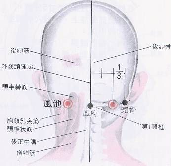
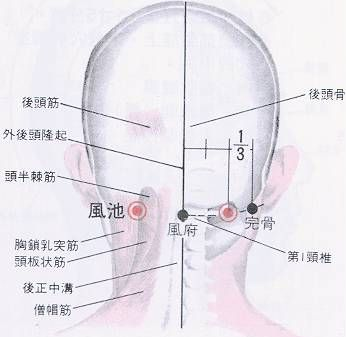 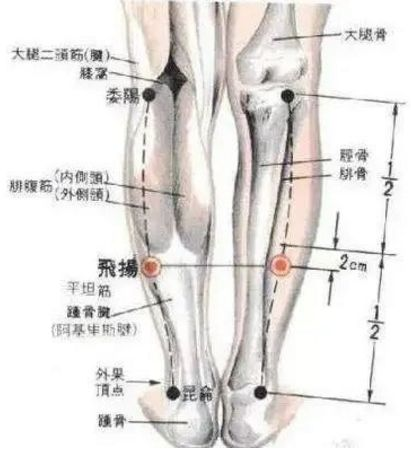
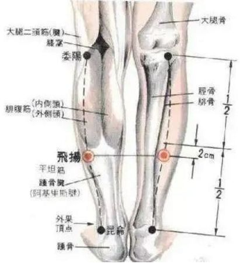
Fujie (腹结穴)
- Acupoint Name (Pinyin : Fujie
) - International Code : SP14
- Alternative Names : Changku, Changqu, Yangku, Changjie, Fuquxue, Linku
- Meaning : Fu (腹) refers to the abdomen and spleen. Jie (结) means gathering. This acupoint signifies that the Qi and blood of the Spleen Meridian gather here. The substance at this acupoint is a mixture of mud and water from the Fushe acupoint. Because this acupoint is located in a depression of flesh, the mud and water mixture gathers at this point, hence the name. This acupoint is mainly used to treat abdominal pain and hernia.
Location and Method of Acupoint Selection : In the lower abdomen, 1.3 cun below Daheng (大横), 4 cun lateral to the anterior midline.
Anatomical Location and Structure : Beneath the acupoint are the skin, subcutaneous tissue, external oblique muscle, internal oblique muscle, transversus abdominis muscle, transversalis fascia, and subperitoneal fascia. The skin is innervated by the overlapping anterior cutaneous branches of the 8th, 9th, and 10th intercostal nerves. Superficial veins and cutaneous nerves of the thoracic and abdominal walls pass through the subcutaneous tissue. The lateral thoracic artery and vein pass beneath the deep fascia. The organs corresponding to this acupoint in the abdominal cavity are the gallbladder fundus, liver (right side, generally the lower edge of the liver does not extend beyond the costal arch in adults), and stomach (left side). If the needle passes through these structures and penetrates the deep peritoneal cavity, it can reach the corresponding organs on both sides of the abdominal cavity, potentially causing internal bleeding (especially in individuals with bleeding tendencies), or leakage of stomach contents or bile along the needle path, leading to peritonitis. Therefore, this acupoint should not be deeply needled, and lifting and thrusting techniques should be avoided. Acupoint belongs to the
Five Elements : Meridian : Spleen Meridian of Foot-Taiyin; Five Elements : Earth. Treatment: Acupuncture : Insert needle perpendicularly 1-2 inches. Clinically, for acute gastroenteritis, acupuncture and moxibustion are used in combination, selecting acupoints such as Zusanli, Jiuwei, Daheng, and Fujie. Symptoms disappear after 1-2 acupuncture sessions. Acupoint Therapy - Moxibustion : Apply 3-5 moxa cones; or apply moxa sticks for 5-10 minutes. Acupoint Therapy - Massage and Others : Use the pads of both middle fingers to massage the Fuju acupoint in a circular motion for 3 minutes each time, twice a day. Acupoint Functions : Promotes qi circulation and relieves nausea, removes dampness and strengthens the spleen, regulates qi and intestines. Acupoint Indications and Clinical Applications : Digestive system diseases: periumbilical pain, indigestion, dysentery, gastric ulcer, gastric spasm, hyperacidity or hypoacidity, constipation, intestinal bleeding. Main Acupoint Combinations : Combined with Qihai and Tianshu to treat abdominal pain. Acupoint Image : Acupoint Name : Futonggu Acupoint Pinyin : Futonggu International Acupoint Code : KI20 Acupoint Alias : Tonggu Acupoint Meaning : Fu refers to the location of this acupoint on the abdomen. Tong means passage or opening. Gu means a depression between two mountains. The name of this acupoint signifies that the Qi and blood of the Kidney Meridian and Chong Meridian dissipate heat and cool down at this point, becoming meridian water that flows into the earth's lower body. The substance at this acupoint is the damp Qi transmitted from the Yindu acupoint, which dissipates heat and cools down at this point, becoming meridian water in the lower body. This meridian water flows into the lower body through the pores of this acupoint, hence the name. This acupoint is mainly used to treat abdominal pain, abdominal distension, vomiting, and chest pain. Location and method of locating the acupoint : On the upper abdomen, 5 cun above the umbilicus and 0.5 cun lateral to the anterior midline. Another description is 4 cun above the umbilicus and 0.5 cun lateral to it (from *The Classic of Acupuncture and Moxibustion*); or 4 cun above the umbilicus and 1.5 cun lateral to it (from *Illustrated Classic of Acupuncture and Moxibustion on the Bronze Man*). Anatomical location and structure : On the inner border of the rectus abdominis muscle, there are branches of the superior epigastric artery and vein; the eighth intercostal nerve is distributed here. Acupoint Belongs to the Five Elements : Acupoint Belongs to the Meridian : Kidney Channel of Foot-Shaoyin Acupoint Belongs to the Meridian : Water Acupoint Treatment - Acupuncture : Straight or oblique insertion 0.5~0.8 cun Acupoint Treatment - Moxibustion : Moxibustion with moxa cones for 3~7 cones; or moxibustion with moxa sticks for 5~10 minutes. Acupoint Treatment - Massage and Others : Press and rub the Futonggu acupoint with your thumb about 200 times, or press and rub for 3~5 minutes, which can treat stomach distension and pain, vomiting, and chest pain. Acupoint Function : Clears and descends turbid qi, strengthens the spleen and removes dampness. Acupoint Indications and Clinical Applications : Abdominal pain, abdominal distension, vomiting, chest pain, palpitations, chest pain, sudden aphonia. Main Acupoint Combinations : 1. Combined with Neiguan and Zhongwan to treat stomach qi rebellion. 2. Combined with Shenmai and Zhaohai to treat epilepsy and palpitations. 3. Combined with Wan (CV12) and Zusanli (ST36) to treat loss of appetite. Acupoint Image : Acupoint Name : Fuai (腹哀) Acupoint Name Pinyin : Fuai Acupoint International Code : SP16 Acupoint Alias : Changai (肠哀), Changqu (肠屈) Acupoint Explanation : Fu (腹) refers to the abdomen and spleen earth. Ai (哀) means sorrow. The name of this acupoint indicates that the spleen earth at this point is harmed by water. The substance at this point is the damp cloud qi from the celestial part transmitted from Daheng (大横) acupoint. After reaching this point, the damp cloud qi turns into rain and falls to the earth. The spleen earth is damp and lacks vitality, hence the sorrow, sorrowing that its metal qi is not generated, hence the name. This acupoint is mainly used to treat indigestion, abdominal pain, etc. Acupoint Location and Method : On the upper abdomen, 3 cun above the umbilicus and 4 cun lateral to the anterior midline. Another account states that the acupoint is located 2 cun above the transverse acupoint (from *Beiji Qianjin Yaofang*); 3.5 cun above the transverse acupoint (from *Tongren Shuxue Zhenjiu Tujing*); or 4 cun above the transverse acupoint (from *Zhenjiu Jicheng*). Anatomical location and structure : Located in the muscular part of the internal and external oblique muscles and the transverse abdominis muscle; innervated by the eighth intercostal artery and vein; innervated by the eighth intercostal nerve. Acupoint belongs to the Five Elements : Meridian : Foot Taiyin Spleen Meridian , Yin Wei Meridian . Treatment method - Acupuncture : Insert needle perpendicularly 0.5-1 cun. Treatment method - Moxibustion : Apply 3-5 moxa cones; or apply moxa sticks for 5-10 minutes. Treatment method - Massage and others.


Press and rub the abdomen (Abdominal Stomach) with your thumb about 200 times to treat abdominal distension and indigestion.
Acupoint Functions : Cools and descends spleen turbidity, strengthens the spleen and stomach, clears heat and promotes diuresis.
Indications and Clinical Applications : Digestive system diseases: indigestion, abdominal pain, constipation, dysentery.
Main Acupoint Combinations : Combined with Qihai (CV6) to treat borborygmus.
Acupoint Image : 

Acupoint Name : Fuliu ( KI7)
Acupoint Name Pinyin : Fuliu
International Acupoint Code : KI7
Acupoint Aliases: Changyang, Fubai, Waiming
Acupoint Explanation : Fuliu is the mother acupoint of the Kidney Meridian, belonging to the Metal element. "Fu" means return or reincarnation, and "Liu" means "flow," signifying the upward movement of water and dampness from the Kidney Meridian. The substance at this acupoint is the cold and damp water vapor transmitted from Zhaohai (KI6). After rising to this acupoint, it absorbs heat from the upper body and evaporates, causing the Qi and blood to dissipate like water flowing away, hence the name. This acupoint mainly nourishes Yin and tonifies the Kidney.
Location and Method of Acupoint Selection : The acupoint is located in the depression between the tip of the medial malleolus and the heel, posterior to the medial malleolus. To locate the acupoint, place your fingers on the lateral side of the lower leg and place your thumb 2 cun above the Taixi acupoint; the position of the thumb pad is the acupoint.
Anatomical Location and Structure of the Acupoint : Below the acupoint are the skin, subcutaneous tissue, flexor digitorum longus, and tibialis posterior muscles. The skin is innervated by the medial branch of the saphenous nerve. The saphenous nerve is the longest branch of the femoral nerve. This nerve descends from the femoral triangle, passing through its apex into the femoral canal. At the lower end of this canal, it passes through the adductor tendinous plate of the femoral canal along with the superior genicular artery, leaving the canal; then, between the sartorius and gracilis muscles on the medial side of the knee, it pierces the deep fascia, descending with the superficial saphenous vein to the medial side of the lower leg. At the lower third of the lower leg, it divides into two branches: one continues to descend along the medial border of the tibia to the medial malleolus; the other passes in front of the medial malleolus and descends to the medial border of the foot. The saphenous nerve can combine with the dorsal endothelial nerve of the superficial peroneal nerve. The flexor digitorum longus and tibialis posterior muscles mentioned above are innervated by muscular branches of the tibial nerve. Acupoint
belongs
to the Metal element in the Five
Elements theory . It belongs to the Kidney Channel of Foot-Shaoyin
meridian.
Treatment methods include: Acupuncture : Insert the needle perpendicularly 0.8-1 inch, causing local soreness and distension, with a tingling or electric sensation radiating towards the sole of the foot.
Moxibustion : Apply moxibustion with moxa cones or warm needles for 3-5 cones; or apply gentle moxibustion with moxa sticks to Fuliu acupoint for 5-20 minutes to relieve edema, abdominal distension, and night sweats.
Massage and other treatment methods : 1. Massage: This acupoint is often treated with tonifying techniques; frequent massage can nourish Yin and tonify the kidneys. Massaging Fuliu is very effective for problems caused by abnormal fluid metabolism, such as varicose veins, edema, abdominal distension, joint swelling, spontaneous sweating, night sweats, lower back pain, diarrhea, and difficulty urinating. Massaging the Fuliu acupoint can relieve and treat nephritis, abdominal distension, borborygmus, edema, diarrhea, night sweats, spontaneous sweating, athlete's foot, leg swelling, urethritis, urinary tract infection, menopausal syndrome, and decreased energy. Massage the Fuliu acupoint 100-200 times with your thumb to treat leg swelling. For daily health maintenance, sit with knees bent and use the pad of your thumb to massage the Fuliu acupoint. The pressure should be even, gentle, and penetrating, reaching deep into the tissues, ideally with a slight soreness. Massage once in the morning and once in the evening, 3-5 minutes each time, alternating between the two Fuliu acupoints. 2. Cupping: Apply air cups for 5-10 minutes every other day to improve abdominal distension and edema. 3. Gua Sha: Use a scraping technique to scrape the Fuliu acupoint from top to bottom with slightly firm pressure until petechiae appear; this treats diarrhea and urinary tract infections.
Acupoint function : Tonifies the kidneys and nourishes Yin, warms Yang and promotes diuresis.
Acupoint Indications and Clinical Applications : 1. Digestive system diseases, such as dysentery, diarrhea, and constipation; 2. ENT diseases, such as tinnitus, deafness, night blindness, sudden blindness, and myopia; 3. Urogenital system diseases, such as urinary tract infections, nephritis, orchitis, and spermatorrhea; 4. Neurological diseases: sequelae of poliomyelitis, myelitis; 5. Others, such as encephalitis, functional uterine bleeding, myelitis, peritonitis, hemorrhoidal bleeding, diabetes, soft palate numbness, and lumbar muscle damage.
Main Acupoint Combinations : 1. Combined with Zhongji (CV3) and Yingu (KI10) to relieve urinary retention. 2. Combined with Houxi (SI3) and Yinxi (SP4) to relieve night sweats.
Acupoint Image :
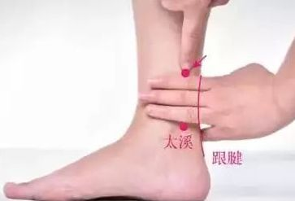
Acupoint Name : Feishu (BL13)
Acupoint Name Pinyin : Feishu
International Acupoint Code : BL13
Acupoint Alias :
Acupoint Meaning : Fei (肺) refers to the lungs. Shu (俞) means to transport. The name Feishu (肺俞) signifies that the damp-heat qi of the lungs is transported to the Bladder Meridian from this point. Feishu is primarily used to treat lung diseases.
Location and Method of Acupoint Selection : On the back, below the spinous process of the third thoracic vertebra, 1.5 cun lateral to the midline. When locating the acupoint, generally adopt a sitting or prone position. Feishu is located on the back, below the spinous process of the third thoracic vertebra, two finger-widths lateral to the midline.
Anatomical Location and Structure : It is surrounded by the trapezius and rhomboid muscles, with the longissimus muscle deeper; it contains the posterior branches of the third intercostal artery and vein; it is innervated by the cutaneous branches of the posterior branches of the third or fourth thoracic nerves, with the lateral branch of the posterior branch of the third thoracic nerve deeper. Five Elements
Affiliation : Belongs to the Bladder Meridian of Foot-Taiyang. Five Elements of the Acupoint : Water. Treatment Method - Acupuncture : Oblique insertion 0.3-0.5 cun. Needling Feishu can treat cough and asthma. Acupoint Therapy - Moxibustion : Apply 3-7 moxa cones; or apply moxa sticks for 5-15 minutes. Acupoint Therapy - Massage and Others : Massage the Lung Shu acupoint by placing the pads of both thumbs on the Lung Shu acupoint and gradually applying downward pressure and kneading. A sensation of soreness, numbness, distension, and heaviness will be produced. Repeat for 5-10 minutes, once daily or every other day. This has the effect of protecting the lungs. Acupoint Functions : Relieves exterior symptoms and promotes lung function, regulates and tonifies lung qi, tonifies deficiency and clears heat. Acupoint Indications and Clinical Applications : Lung and respiratory diseases: cough, asthma, hemoptysis, bone steaming, tidal fever, night sweats, nasal congestion. Main Acupoint Combinations : 1. Combined with Fengmen (BL12) to treat cough and asthma. 2. Combined with Hegu (LI4) and Yingxiang (LI20) to treat nasal diseases. Acupoint Image : Acupoint Name : Futu (伏兔) Acupoint Name Pinyin : Futu
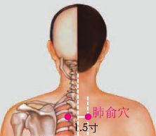
International Code for Acupoint : ST32
Alternative Names : Waiqiu, Waigou
Meaning : Fu means to lie dormant or subdue. Tu refers to the Wood element (卯木) and wind. The name of this acupoint signifies that the spleen earth particles in the Qi and blood of the Stomach Meridian settle and accumulate here. The substance at this acupoint is the meridian water and damp wind Qi transmitted from Qichong and Biguan acupoints. Upon reaching this acupoint, the wind stops, and the spleen earth particles, carried by the wind and washed by the meridian water, settle and accumulate, resembling a dormant state, hence the name. This acupoint is indicated for lower back pain and cold knees, lumbar disc herniation, lower back pain and leg pain, lower limb numbness, hernia, and beriberi.
Location and Method : On the anterior thigh, on the line connecting the anterior superior iliac spine and the lateral end of the patella, 6 cun above the patella. With the patient seated and knees bent at 90 degrees, the practitioner places the first transverse crease of the wrist against the midpoint of the upper edge of the patella, with fingers together on the thigh; the point where the middle finger reaches is the acupoint.
Anatomical location and structure of the acupoint : The acupoint is located beneath the skin, passing through the superficial fascia, deep fascia, and rectus femoris muscle, entering the intermuscular muscle. Nerves innervating this area include the anterior femoral cutaneous nerve and the lateral femoral cutaneous nerve. Deep within the muscle layer are muscular branches of the femoral nerve and descending branches of the lateral circumflex femoral artery and vein, originating from the deep femoral artery and vein.
Acupoint classification :
Meridian : Stomach Meridian of Foot -Yangming. Acupoint classification
: Earth. Treatment method - Acupuncture : Insert needle perpendicularly 1-2 inches. 1. Bee acupuncture treatment commonly uses Futu (伏兔) acupoint, combined with Xiyan (膝眼), Xuehai (血海), Liangqiu (梁丘), and Heding (鹤顶) acupoints to treat degenerative knee arthritis. 2. Bee acupuncture treatment commonly uses Futu (伏兔) acupoint, combined with Fengshi (风市), Xuehai (血海), Zhishi (志室), and Geshu (膈俞) acupoints to treat urticaria. Acupoint Therapy - Moxibustion : Apply 3-5 moxa cones; or apply moxa sticks for 5-10 minutes. Acupoint Therapy - Massage and Others : Tap the Futu acupoint with the hypothenar eminence of the palm for 2-3 minutes. Long-term tapping can improve various gynecological diseases, hernia, etc. Acupoint Functions : Dispels wind and dampness, unblocks meridians and collaterals, disperses cold and relieves pain. Acupoint Indications and Clinical Applications : Lower back pain and cold knees, numbness of the lower limbs, hernia, beriberi. Main Acupoint Combinations : 1. Combined with Biguan and Yanglingquan to treat weakness and numbness of the lower limbs. 2. Combined with Shenshu, Huantiao, Weizhong, Yanglingquan, and Sanyinjiao to treat numbness and paralysis of the lower limbs. 3. Combined with Biguan, Fengshi, Yanglingquan, Xiyan, Zusanli, Diji, Fenglong, and Xuanzhong to treat leg pain. 4. Combined with Ganshu, it has the effect of warming the meridians and promoting qi circulation, and treats cold hernia. 5. Combined with Fengshi, Zusanli, Juegu, Dubi, Shangjuxu, and Shangqiu, it treats beriberi. Acupoint Image : Acupoint Name : Fubai Acupoint Pinyin : Fubai Acupoint International Code : GB10 Acupoint Alias : Acupoint Explanation : Fu means floating. Bai is the color of the lungs, indicating that the Qi and blood within this acupoint are warm, moist, and cloud-like, representing the nature of lung metal. The name of this acupoint signifies that the Yang-heat wind Qi of the Gallbladder Meridian transforms into warm, moist, and cloud-like Qi here. The substance at this acupoint is the Yang-heat wind Qi transmitted from Tianchong acupoint. After reaching this acupoint, the wind Qi weakens and slows down, dissipating heat and absorbing moisture, transforming into warm, moist, and cloud-like Qi, resembling clouds floating in the sky, hence the name. Fubai acupoint is a commonly used empirical acupoint for treating gray hair. Acupoint Location and Method : On the head, above and behind the mastoid process behind the ear, at the intersection of the middle third of the arc connecting Tianchong and Wangu. The acupoint is located in a seated or side-lying position, above and behind the mastoid process, at the midpoint of the arc connecting the Tianchong (冲) and Touqiaoyin (头窍阴) acupoints. Anatomical location and structure : Branches of the posterior auricular artery and vein are present; branches of the greater auricular nerve are distributed here. Acupoint belongs to the Gallbladder Meridian of Foot-Shaoyang (木). Treatment methods: Acupuncture : Oblique insertion 0.5-0.8 cun. Moxibustion : Indirect moxibustion 3-5 cones; or moxibustion with moxa sticks for 5-10 minutes. Massage and other methods : Before going to bed and after waking up each day, rub the scalp with your fingertips, starting from the forehead, over the top of the head to the back of the head, for 2-4 minutes each time, rubbing back and forth 30-40 times per minute, gradually increasing to 5-10 minutes each time. Continue this practice long-term. Acupoint Functions : Regulates Qi and disperses stagnation, dispels wind and relieves pain, clears heat and removes dampness, soothes the liver and gallbladder, replenishes essence and tonifies the kidneys. Indications and Clinical Applications : Diseases of the head, neck, and sensory organs: headache, stiff neck, tinnitus, deafness, toothache, scrofula, goiter, arm pain and inability to raise the arm, and weakness and inability to walk. Main Acupoint Combinations : 1. Combined with Fengchi (GB20) and Xingjian (LR2) to treat migraines and red, swollen, and painful eyes. 2. Combined with Tinghui (GB2) and Zhongzhu (TE3) to treat tinnitus and deafness. 3. Combined with Shenshu (BL23), Taixi (KI3), and Ermen (TE2) to treat tinnitus and deafness. Acupoint Image : Acupoint Name : Fuxi (浮郄) Acupoint Name Pinyin : Fuxi Acupoint International Code : BL38 Acupoint Alias : Acupoint Explanation : Fu (浮) means Yang and Qi. Xi (郄) means opening or crevice. The name Fuxi (浮郄) signifies that the Qi of the Bladder Meridian reaches the celestial part of the body at this point. The substance at this acupoint is the damp qi transmitted from Weiyang acupoint. Upon reaching this point, it absorbs heat and ascends to the upper part of the body. However, because the qi and blood of the Bladder Meridian are inherently cold and damp, even with heat absorption, the amount of gaseous substance ascending to the upper part of the body is small, as if ascending through a pore, hence the name. This acupoint is indicated for constipation, pain and numbness in the popliteal region, etc. Location and Method of Acupoint Selection : At the lateral end of the popliteal crease, 1 cun above Weiyang, medial to the tendon of the biceps femoris muscle. Anatomical Location and Structure : Medial to the tendon of the biceps femoris muscle; contains the superior lateral genicular artery and vein; innervated by the posterior cutaneous nerve of the thigh, directly at the location of the common peroneal nerve. Five Elements Affiliation : Bladder Meridian of Foot-Taiyang. Treatment Method - Acupuncture : Insert needle perpendicularly 1-1.5 cun. 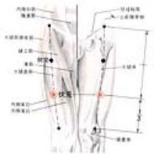
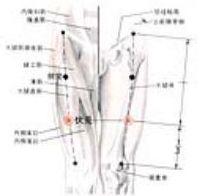
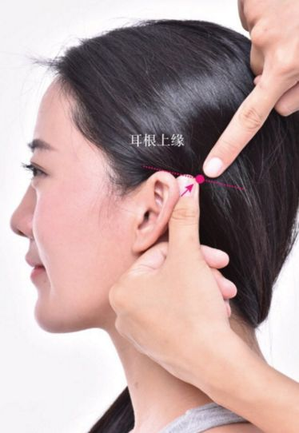
Acupoint Therapy - Moxibustion : Apply 3-5 moxa cones; or apply moxa sticks for 10-15 minutes.
Acupoint Therapy - Massage and Others : Massage the Fuxi acupoint with moderate pressure using the pad of your thumb, kneading or pressing the acupoint for about 2-3 minutes each time. It has health benefits such as treating acute gastroenteritis, constipation, and numbness.
Acupoint Functions : Unblocks meridians, relaxes muscles and joints, clears heat and relieves spasms.
Acupoint Indications and Clinical Applications : Acute gastroenteritis, cystitis, constipation, gastrocnemius muscle spasm, pain in the thigh and popliteal region, etc.
Main Acupoint Combinations : 1. Combined with Chengshan and Kunlun to treat calf cramps. 2. Combined with Chize and Shangjuxu to treat borborygmus and diarrhea.
Acupoint Image : 

Acupoint Name : Fufen
Acupoint Pinyin : Fufen
Acupoint International Code : BL41
Acupoint Alias :
Acupoint Meaning : Fu, accompanying, or attached. "Fen" means to separate or branch out. The name "Fu Fen" signifies that the Qi and blood of the Bladder Meridian form a subsidiary branch here. This acupoint is mainly used to treat stiff neck and back pain, and shoulder and back stiffness.
Location and Method of Acupoint Selection : On the back, below the spinous process of the second thoracic vertebra, 3 cun lateral to the midline. In the prone position, level with the spinous process of the second thoracic vertebra, 3 cun lateral to the Du Meridian, at the vertebral border of the scapula.
Anatomical Location and Structure : At the medial border of the scapular spine, there are the trapezius and rhomboid muscles, with the iliocostalis muscle deeper; there is the descending branch of the transverse cervical artery, at the posterior branch of the second intercostal artery and vein; innervated by the posterior branch of the second thoracic nerve.
Five Elements Affiliation : Meridian Affiliation : Bladder Meridian of Foot-Taiyang. Five Elements Affiliation : Water . Treatment Method - Acupuncture : Oblique insertion 0.5~0.8 cun. Local soreness and distension; deep insertion is not allowed to prevent pneumothorax. Acupoint Therapy - Moxibustion : Apply 3-7 moxa cones; or apply moxa sticks for 5-15 minutes. Acupoint Therapy - Massage and Others : Press and rub Fufen (SP 1) with your thumb about 200 times, or press and rub for 3-5 minutes to prevent and treat neck, shoulder, and back pain. Acupoint Functions : Relieves muscle tension and promotes blood circulation, dispels wind and eliminates pathogens. Acupoint Indications and Clinical Applications : 1. Musculoskeletal system diseases: Cervical spondylosis, neck muscle spasms. 2. Nervous system diseases: Intercostal neuralgia, accessory nerve paralysis. 3. Others: Pneumonia, common cold. Main Acupoint Combinations: 1. Combined with Fengchi (GB 20) and Houxi (SI 3), it has the effect of dispelling wind, promoting blood circulation, relieving muscle tension and pain, and is mainly used to treat stiff neck and back pain. 2. Combined with Dazhui (GV 14) and Jianyu (LI 15), it has the effect of dispelling cold and dampness, promoting blood circulation and activating blood circulation, and is mainly used to treat stiffness and pain in the shoulder and back. 3. Combined with Dazhui (GV 14), Fengmen (BL 12), and Feishu (BL 13), it treats asthma. 4. Combined with Fengchi (GB 20) and Dazhui (GV 14), it treats neck pain. 5. Combined with Huantiao, Jianliao, Dazhui, and Quchi, it treats shoulder joint pain. Acupoint Image : Acupoint Name : Fuyang Acupoint Pinyin : Fuyang Acupoint International Code : BL59 Acupoint Aliases : Fuyang, Fuyang Acupoint Explanation : Fu refers to the dorsum of the foot. Yang refers to Yang Qi. This acupoint name signifies that the Yang Qi of the Foot Shaoyang and Foot Yangming meridians drives the Qi and blood of the Foot Taiyang meridian upwards here. The Yang Qi ascending from the foot of the Bladder meridian dissipates heat and transforms into dampness at this acupoint. Because the Yang Qi of the Foot Shaoyang and Foot Yangming meridians replenishes its heat, the dampness of the Foot Taiyang Bladder meridian can continue to ascend. The upward movement of dampness at this acupoint relies on the ascending Yang Qi of the dorsum of the foot, hence the name. This acupoint is indicated for headaches, lumbosacral pain, and lower limb weakness and paralysis. Acupoint Location and Method : On the posterior aspect of the lower leg, posterior to the lateral malleolus, 3 cun directly above Kunlun acupoint. The patient sits upright with feet hanging down or lies prone. The acupoint is located 3 cun directly above Kunlun (BL60) posterior to the lateral malleolus. Anatomical location and structure: On the posterior part of the fibula, at the anterolateral border of the Achilles tendon, deep to the flexor pollicis longus muscle; the small saphenous vein is present, and the terminal branch of the peroneal artery is deep to it; the sural nerve is distributed here. Acupoint belongs to the Bladder Meridian of Foot-Taiyang (Water). Treatment methods: Acupuncture : Insert the needle perpendicularly 0.5-1 cun, causing local soreness and distension, with the sensation radiating towards the sole of the foot. Moxibustion : Apply 3-5 moxa cones; or apply moxa sticks for 5-10 minutes. Massage and other methods : The patient lies prone and relaxes completely. The practitioner uses the radial side of the interphalangeal joints of both thumbs or the flexed thumbs to gently massage the Fuyang acupoint for 3-5 minutes, gradually increasing the pressure until the patient experiences "deqi" (the sensation of obtaining qi). The patient is then instructed to move each lumbar spine joint 2-3 times to the left and right; followed by gentle massage of the acupoint for another 3-5 minutes. Finally, palm kneading is applied to the affected area of the lower back for 1-2 minutes to conclude the treatment. This is performed once daily for 20 minutes each time, with three treatments constituting one course. This treatment is for acute lumbar sprains. Acupoint functions : relaxes muscles and tendons, reduces fever and dispels wind, absorbs heat and eliminates dampness. Indications and clinical applications : 1. Musculoskeletal system diseases: acute lumbar sprain, lower limb paralysis, gastrocnemius muscle spasm. 2. Nervous system diseases: facial nerve palsy, trigeminal neuralgia, headache, etc. Main acupoint combinations : Combined with Dazhui (GV14) to treat stiff neck and neck pain. Acupoint Image : Acupoint Name : Liver Shu Point Acupoint Name Pinyin : Ganshu Acupoint International Code : BL18 Acupoint Alias : Acupoint Explanation : Liver, liver; Shu, to infuse; this acupoint is the back-shu point of the liver, hence the name. This acupoint belongs to the Bladder Meridian of Foot Taiyang, and is one of the back-shu points on the back along the Bladder Meridian of Foot Taiyang. Back-shu points are suitable for treating diseases of the corresponding viscera and related tissues and organs. Therefore, Liver Shu point is an important acupoint for treating liver and gallbladder diseases. In addition to treating local diseases such as back pain, it is also good at treating liver and gallbladder diseases such as jaundice and hypochondriac pain, as well as eye diseases such as blurred vision and night blindness. Acupoint Location and Method of Acupoint Selection

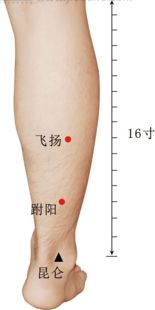
Located on the back, 1.5 cun lateral to the spinous process of the 9th thoracic vertebra. In the prone position, locate the point 1.5 cun lateral to the spinous process of the 9th thoracic vertebra, at the point of muscle contraction (Du Mai).
Anatomical location and structure : Between the latissimus dorsi, longissimus, and iliocostalis muscles; contains the posterior branches of the 9th intercostal artery and vein; innervated by cutaneous branches of the posterior branches of the 9th or 10th thoracic nerves, with the lateral branch of the posterior branch of the 9th thoracic nerve deeper. The deep structures of the acupoint correspond to the 9th intercostal space. Within the thoracic and abdominal cavities, it corresponds to the pleural cavity, lungs, diaphragm, liver, spleen, and stomach. The liver and spleen are solid organs with abundant blood supply. Therefore, if needles are inserted blindly, they should not be lifted, thrusted, or twisted; the needles should be removed immediately, and close observation for internal bleeding is necessary.
Acupoint Belongs to the Five Elements :
Acupoint Belongs to the Meridian
: Bladder Meridian of Foot-Taiyang
Acupoint Belongs to the Five Elements : Water
Acupoint Treatment - Acupuncture : Oblique insertion 0.5~0.8 cun. Local soreness and distension, the needling sensation can spread to the intercostal space. Do not insert deeply to prevent pneumothorax.
Acupoint Treatment - Moxibustion : Moxibustion with 3~7 moxa cones; or moxibustion with moxa sticks for 5~15 minutes.
Acupoint Treatment - Massage and Others : Sit upright or stand, put both hands behind your back, place your thumbs on the acupoint, and use your fingertips to press and rub the acupoint vertically, the pressure should be enough to cause soreness, massage once in the morning and once in the evening, 1~3 minutes each time.
Acupoint Functions : Soothes the liver and gallbladder, regulates qi and relieves depression, calms the mind and improves vision.
Acupoint Indications and Clinical Applications : 1. Digestive system diseases: acute and chronic hepatitis, cholecystitis, chronic gastritis, gastric dilatation, gastric spasm, jaundice. 2. Diseases of the ENT system: ptosis, conjunctivitis, glaucoma, night blindness, retinitis. 3. Diseases of the nervous system: migraine, neurasthenia, intercostal neuralgia, psychosis. 4. Diseases of the surgical system: lymph node tuberculosis, gastric bleeding, intestinal bleeding, cholelithiasis. 5. Others: menstrual disorders, etc.
Main acupoint combinations : 1. Combined with Zhigou (TE6) and Yanglingquan (GB34) to treat hypochondriac pain. 2. Combined with Taichong (LR3) to treat dizziness. 3. Combined with Shenshu (BL23) and Taixi (KI3) to treat forgetfulness and insomnia. 4. Combined with Guangming (GB37) to treat blurred vision.
Acupoint image : 

Acupoint name : Guilai (归来)
Acupoint name pinyin : Guilai
Acupoint international code : ST29
Acupoint alias : Xi (溪)
Acupoint explanation : After the water from Shuidao (水道) acupoint reaches this acupoint, it is affected by the heat dissipated from the Chong meridian, causing the water to vaporize and ascend against the Stomach meridian, like water that has flowed away returning, hence the name. This acupoint is indicated for abdominal pain, hernia, irregular menstruation, and leukorrhea.
Location and method of acupoint selection : In the lower abdomen, 4 cun below the umbilicus and 2 cun lateral to the anterior midline. Another interpretation is "3 cun from the center of the abdomen" (from *Zhenjiu Zisheng Jing*). In the supine position, locate the acupoint 1 cun below the Shuidao acupoint and 2 cun lateral to the Zhongji acupoint (Ren meridian).
Anatomical location and structure : On the lateral border of the rectus abdominis muscle, there are the internal oblique muscle and the aponeurosis of the transverse abdominis muscle; the inferior epigastric artery and vein are located laterally ; the iliohypogastric nerve
is distributed here . Acupoint classification : Stomach Meridian of Foot-Yangming (Five Elements) : Earth. Treatment method - Acupuncture : Insert the needle perpendicularly 1-1.5 cun. Acupoint Therapy - Moxibustion : Apply 3-7 moxa cones; or use moxa sticks for sparrow-pecking moxibustion for 5-10 minutes, once a day, to treat abdominal pain, leukorrhea, and other symptoms. Acupoint Therapy - Massage and Others : 1. Press vertically downwards with the pads of the middle three fingers, massaging the Guilai acupoint from the inside out, for 1-3 minutes each morning and evening, to treat menstrual irregularities, infertility, impotence, and other diseases. 2. Massage with the pads of the index and middle fingers for 3-5 minutes; long-term massage can improve hernia, menstrual irregularities, etc. Acupoint Functions : Promotes blood circulation and removes blood stasis, warms the meridians and stops leukorrhea, regulates qi and consolidates the body. Acupoint Indications and Clinical Applications : 1. Gynecological and obstetric diseases: menstrual irregularities, dysmenorrhea, pelvic inflammatory disease, leukorrhea, amenorrhea, oophoritis, endometritis. 2. Urogenital system diseases: orchitis, pediatric inguinal hernia, penile pain, male and female reproductive organ diseases. Main acupoint combinations : 1. Combined with Dadun (LR1) to treat hernia. 2. Combined with Sanyinjiao (SP6) and Zhongji (CV3) to treat irregular menstruation. Acupoint image : Acupoint name : Gongsun ( SP4) Acupoint name pinyin : Gongsun International acupoint code : SP4 Acupoint alias : Acupoint explanation : Gongsun means "grandson" or "granddaughter," referring to the relationship between the Qi and blood substances within the acupoint and the spleen earth element. The spleen meridian's substances belong to the earth element in the Five Elements theory; its father is fire, its grandfather is wood, its son is metal, and its grandson is water. The name Gongsun signifies that the substances at this acupoint are the water-dampness and wind-qi of the upper part of the body formed after the Qi and blood of the spleen meridian and the Chong meridian meet. This acupoint is mainly used to treat stomach pain, vomiting, abdominal pain, diarrhea, etc. Acupoint location and method of locating the acupoint : On the medial border of the foot, anteroinferior to the base of the first metatarsal bone. Acupoint anatomical location and structure : In the abductor hallucis muscle; contains branches of the medial tarsal artery and the dorsal venous network of the foot; innervated by branches of the saphenous nerve and the superficial peroneal nerve. Acupoint Classification by Five Elements : Acupoint Classification by Meridian : Spleen Meridian of Foot-Taiyin Acupoint Classification by Five Elements : Earth Acupoint Treatment - Acupuncture : Insert needle perpendicularly 0.5-1 cun. 1. Acupuncture at Neiguan (PC6) and Zusanli (ST36) often enhances gastric peristalsis, especially at Zusanli, while acupuncture at Gongsun (SP4) often weakens gastric peristalsis. 2. Acupuncture at Gongsun (SP4), Neiguan (PC6), and Liangqiu (ST34) can inhibit gastric acid secretion. Acupoint Treatment - Moxibustion : Apply 3-5 moxa cones; or apply moxa sticks for 5-10 minutes. Acupoint Treatment - Massage and Others : Pinch and press Gongsun (SP4) with the tip of the opposite thumb for 1 minute, then rub clockwise for 2 minutes, until a feeling of soreness and distension is felt in the area. Acupoint Function : Strengthens the spleen and stomach, regulates the meridians.
Acupoint Indications and Clinical Applications : 1. Digestive System Diseases: Stomach pain, acute and chronic gastritis, peptic ulcers, acute and chronic enteritis, vomiting, abdominal pain, dysentery. 2. Mental Disorders: Irritability, insomnia, mania, etc.
Main Acupoint Combinations : 1. Combined with Zhongwan (CV12) and Neiguan (PC6) to treat hyperacidity and stomach pain. 2. Combined with Fenglong (ST40) and Tanzhong (CV17) to treat vomiting and dizziness.
Acupoint Image : 

Acupoint Name : Guanchong (关冲)
Acupoint Name Pinyin : Guanchong
Acupoint International Code : SJ1
Acupoint Alias :
Acupoint Explanation : Guanchong. Guan means barrier. Chong means rushing. The name of this acupoint indicates that the warm water vapor from the internal meridians of the Sanjiao (Triple Energizer) rushes out from the external meridians, while the yin fluids are blocked internally. The substance of Guanchong acupoint is the warm water vapor rushing out from the internal meridians of the Sanjiao, while the liquid cannot escape to the body surface due to insufficient pressure, as if blocked, hence the name. This acupoint clears heat and opens the orifices, making it a highly effective point for treating acupuncture eye injuries and one of the emergency acupoints.
Location and method of locating the acupoint : Guanchong acupoint is located on the ulnar side of the distal phalanx of the ring finger, 0.1 cun (finger cun) from the nail corner.
Anatomical location and structure of the acupoint : Beneath the acupoint are the skin, subcutaneous fascia, and nail root. The skin is thin and innervated by the dorsal branch of the palmar digital proper nerve of the ulnar nerve. The subcutaneous fascia is thin and loose, with fibrous bundles connecting the skin and periosteum. The veins of the fingers are mostly located on the dorsal side. Superficial lymphatic vessels communicate with the lymphatic vessels of the tendon sheath and periosteum of the phalanges. Each finger of the hand has four arteries: two palmar digital proper arteries and two dorsal digital arteries, each accompanying its corresponding nerve. They are all located on the junction of the palmar, dorsal, and lateral sides of the finger. Because the dorsal digital blood vessels and nerves are relatively thin and short, palmar blood vessels and nerves are distributed in the palmar side of the finger and the deep structures of the skin and deep structures of the dorsal side of the distal two phalanges.
Acupoints belong to the following five elements : Metal;
Meridian : Hand-Shaoyang Sanjiao Meridian ;
Element
: Fire.
Treatment Methods - Acupuncture : 1. Shallow insertion 0.1-0.3 cun, causing local distending pain; or prick with a three-edged needle to induce bleeding. 2. First, bleed 30 drops from Guanchong acupoint, then needle Taiyang acupoint using the reducing method. Symptoms significantly lessened the next day; repeat acupuncture twice, and symptoms completely disappeared.
Treatment Methods - Moxibustion : Apply 3-5 moxa cones; or apply moxa sticks for 5-10 minutes.
Treatment Methods - Massage and Others : During massage, pinch Guanchong acupoint with your fingernail or toothpick for 10 seconds each time, relax for 2 seconds, and repeat. Pinch 5 times on each side. Apply even pressure until the acupoint feels slightly sore.
Functions : Clears heat and opens the orifices, clears the throat and tongue, invigorates blood and unblocks the meridians.
Acupoint Indications and Clinical Applications : 1. Head and Facial Diseases: Ancient records describe headache, chills and fever, dizziness, chest pain, irritability, fainting, eye pain, dry mouth, bitter taste, tongue curling, speechlessness, sore throat, deafness, tinnitus, shoulder and back pain, arm pain, and elbow pain. Modern experimental studies report on acute tonsillitis, laryngitis, conjunctivitis, corneal leukoma, etc. 2. Other Diseases: Cerebrovascular diseases, febrile diseases, and infantile indigestion, etc.
Main Acupoint Combinations : 1. Combined with Shaoshang (LU11) and Shaoze (LU11), it has the effect of clearing heat and relieving sore throat, mainly treating sore throat. 2. Combined with Renzhong (GV26) and Laogong (PC8), it has the effect of clearing heat and opening the orifices, mainly treating heatstroke. 3. Combined with Fengchi (GB20) and Shangyang (LI1), it has the effect of reducing fever and relieving exterior symptoms, mainly treating febrile diseases without sweating.
Acupoint Image : 
Acupoint Name : Guanyuan (关元)
Acupoint Name Pinyin : Guanyuan
Acupoint International Code : RN4
Acupoint Aliases : Sanjiejiao, Xiaji, Cimen, Dantian, Dazhongji Acupoint
Explanation : This acupoint is the "Mu-point" of the small intestine, where the Qi of the small intestine gathers and is transported to the skin. It is the sea of innate Qi, a place for health preservation, breathing exercises, and concentration. Ancient people called it the junction of Yin and Yang in the body, and also the gateway of primordial Qi, hence the name. Traditional Chinese medicine believes that Guanyuan is the place where true Yang resides and where essence is generated. It is "the place where men store essence and women store blood." Regularly massaging or moxibustion at Guanyuan can tonify the kidneys and strengthen Yang, regulate Qi and blood, and treat dysmenorrhea and gynecological diseases. The best way to stimulate this acupoint is with moxibustion.
Location and Method of Acupoint Selection : Guanyuan (CV4) is located 3 cun below the navel. This is calculated by placing four fingers together; the upper edge of the fingers touching the navel, and the lower edge opposite the navel, is the Guanyuan acupoint. It is located 3 cun below the navel on the midline of the abdomen, in a supine position. To locate the acupoint, draw a line from the navel to the upper part of the pubic bone, divide this line into five equal parts, and the point 5 fen (approximately 0.5 cm) below the navel is the Guanyuan acupoint.
Anatomical Location and Structure : Beneath the acupoint are the skin, subcutaneous tissue, linea alba, transverse abdominal fascia, extraperitoneal fat, and parietal peritoneum. The superficial layer mainly contains the anterior cutaneous branches of the anterior rami of the twelve thoracic nerves and branches or tributaries of the superficial abdominal arteries and veins. The deep layer contains branches of the anterior rami of the twelve thoracic nerves.
Acupoints and their Five Elements :
Acupoints and their Meridian : Ren
Meridian .
Acupoints and their Meridian : Conception Vessel .
Acupoint Treatment - Acupuncture : Insert needle perpendicularly 0.5 + 0.831 cun. Acupuncture should be performed after urination. Acupuncture is contraindicated in pregnant women.
Acupoint Treatment - Moxibustion : Apply 7-10 moxa cones; or apply moxa sticks for 15-30 minutes. Use a warm moxibustion device for 3-5 minutes daily. This has the effect of strengthening the kidneys and improving male sexual function. Long-term use is recommended for significant results.
Acupoint Treatment - Massage and Others : Pressing and kneading or vibration. For vibration, place both hands crossed and overlapping on the Guanyuan acupoint, apply slight pressure, and then quickly and gently push up and down with the crossed hands. This can be done anytime, anywhere. Do not apply excessive force; a slight soreness or distension is sufficient during the massage. 1. Elderly individuals can massage their abdomen for 9 minutes each morning and evening, overlapping their hands and centering on the Guanyuan acupoint. Then, overlapping the pads of their index fingers, they can press the Guanyuan acupoint for 6 minutes until a slight soreness is felt. This method warms and tonifies Yang Qi, strengthens the kidneys, and consolidates essence. 2. Young women are more prone to dysmenorrhea. They can lie supine, overlapping their hands (right hand on bottom), and massage their lower abdomen around the Guanyuan acupoint, 100 times clockwise and 100 times counterclockwise. Then, they can press the Guanyuan acupoint for 6 minutes with the pads of their middle fingers. Next, they can push down the abdomen from the navel with their right palm 50 times. Finally, they can place both palms on the Guanyuan acupoint and lie still for 20 minutes.
Acupoint Function : Nourishes the original Qi and strengthens the lower Jiao.
Acupoint Indications and Clinical ApplicationsUrinary and reproductive system diseases: lower abdominal pain, cholera-like vomiting and diarrhea, hernia, seminal emission, impotence, premature ejaculation, leukorrhea, urinary retention, frequent urination, yellow and white leukorrhea, dysmenorrhea, stroke with collapse, consumptive disease with coldness and fatigue, emaciation and weakness, dizziness, diabetes, urethritis, pelvic inflammatory disease, enteritis, intestinal adhesions, neurasthenia, and simple indigestion in children. Urinary and reproductive organ diseases such as enuresis, hematuria, frequent urination, urinary retention, urethral pain, dysmenorrhea, amenorrhea, seminal emission, and impotence; in addition, it is also very effective for neurasthenia, insomnia, cold hands and feet, urticaria, menstrual irregularities, decreased energy, obesity (weight loss), and thinness (weight gain).
Main acupoint combinations :
Acupoint image : 

Acupoint name : Guanmen (关门)
Acupoint name pinyin : Guanmen
Acupoint international code : ST22
Acupoint alias : Guanming (关明)
Acupoint meaning : Guan, a checkpoint. The name of this acupoint signifies that the spleen earth element of the Stomach Meridian is stored here. The substance at this acupoint is the meridian water transmitted from the Liangmen acupoint. This water is overflowing and small in quantity, but because it flows downwards, it carries spleen earth particles with it. After the meridian water reaches this acupoint, it is depleted due to the outward heat from the abdomen and the heat of the Stomach Meridian itself. The spleen earth element is thus stored, as if blocked, hence the name. This acupoint is indicated for abdominal distension, abdominal pain, borborygmus and diarrhea, and edema.
Location and method of acupoint selection : In the upper abdomen, 3 cun above the umbilicus and 2 cun lateral to the anterior midline.
Anatomical location and structure of the acupoint : At the rectus abdominis muscle and its sheath; branches of the eighth intercostal artery and vein and branches of the superior epigastric artery and vein; innervated by branches of the eighth intercostal nerve (internal to the transverse colon).
Acupoint Classification by Five Elements :
Acupoint
Classification by Meridian : Stomach Meridian of Foot-Yangming (English) : Stomach Meridian of Foot-Yangming
(Five Elements) : Earth
Acupoint Treatment - Acupuncture : Insert needle perpendicularly 0.8-1.2 cun.
Acupoint Treatment - Moxibustion : Apply 3-7 moxa cones; or apply moxa sticks for 5-15 minutes.
Acupoint Treatment - Massage and Others : Use the tips of the index and middle fingers of one hand to press the Guanmen acupoints on both sides 10 times.
Acupoint Function : Strengthens the spleen and stops diarrhea, regulates the spleen and stomach. Acupoint
Indications and Clinical Applications : Urinary and digestive system diseases: stomach pain, abdominal pain, abdominal distension, borborygmus, constipation, enuresis.
Main Acupoint Combinations : Combined with Zusanli (ST36) and Shuifen (CV9) to treat borborygmus and diarrhea.
Acupoint Image : 
Acupoint Name : Guanyuanyu
Acupoint Name Pinyin : Guanyuan
Acupoint International Code : BL26
Acupoint Alias :
Acupoint Explanation : Yu means to transport. The name Guanyuanyu indicates that the damp-heat qi inside the lower abdomen is transported to the Bladder Meridian from this point. The substance of this acupoint comes from the damp-heat qi inside the lower abdomen, and the corresponding location is the Guanyuan acupoint below the navel, hence the name. This acupoint is mainly used to treat enuresis, lower back pain, diarrhea, etc.
Acupoint Location and Method of Acupoint Selection : In the lumbar region, below the spinous process of the 5th lumbar vertebra, 1.5 cun lateral to the midline. With the prone position, Guanyuanyu acupoint is located in the sacral region of the body, below the spinous process of the 5th lumbar vertebra, 2 finger-widths lateral to the midline.
Acupoint Anatomical Location and Structure : There is the sacrospinalis muscle, the medial branch of the posterior branch of the inferior lumbar artery and vein; the posterior branch of the 5th lumbar nerve is distributed here.
Acupoint Classification by Five Elements :
Acupoint
Classification by Meridian : Bladder Meridian of Foot-Taiyang
Acupoint Classification by Five Elements : Water
Acupoint Treatment - Acupuncture : Insert needle perpendicularly 1-1.5 cun.
Acupoint Treatment - Moxibustion : Apply 5-10 moxa cones; or apply moxa sticks for 10-20 minutes.
Acupoint Treatment - Massage and Others : Applying pressure to this acupoint can prolong sexual desire and improve male erectile function. When using this acupoint for treatment, it should be combined with the Sanjiao Shu acupoint for better efficacy.
Acupoint Function : Nourishes vital energy and regulates the lower jiao. Acupoint
Indications and Clinical Applications : Urogenital and digestive system diseases: abdominal distension, enteritis, frequent or difficult urination, enuresis, cystitis, chronic pelvic inflammatory disease, lower back pain, etc.
Main Acupoint Combinations : 1. Combined with Qihai (CV6) to treat abdominal distension. 2. Combined with Pangguang Shu (BL28) to treat lower back pain.
Acupoint Image : 

Acupoint Name : Guangming (光明穴)
Acupoint Name Pinyin : Guangming
Acupoint International Code : GB37
Acupoint Alias :
Acupoint Explanation : Guangming means bright and clear. The substance of this acupoint is the damp-heat wind qi transmitted from Yangfu acupoint. After reaching this acupoint, this qi absorbs heat and becomes pure yang qi. The dampness in the upper part of the body dissipates and becomes bright and clear, hence the name. The qi and blood of this acupoint are located in the upper part of the body. The yang qi of the Foot Shaoyang Gallbladder Meridian that absorbs heat and rises all converge here. This acupoint has the function of connecting the qi and blood of various parts of the Gallbladder Meridian, so it is the Luo-connecting point of the Gallbladder Meridian. This acupoint is mainly used to treat lower limb weakness and paralysis, optic nerve atrophy, and blurred vision. It is especially good for protecting the eyes.
Acupoint Location and Method of Acupoint Selection : Located on the lateral side of the lower leg, 5 cun above the tip of the lateral malleolus, on the anterior border of the fibula. Take the acupoint while sitting upright or sideways.
Acupoint Anatomical Location and Structure : Beneath the acupoint are the skin, subcutaneous tissue, peroneus brevis muscle, extensor digitorum longus muscle, and extensor hallucis longus muscle. The superficial layer contains the lateral sural cutaneous nerve, superficial peroneal nerve, deep peroneal nerve nucleus, and anterior tibial artery. The deeper layer contains the deep peroneal nerve trunk and anterior tibial artery and vein.
Acupoint classification : Five
Elements : Wood;
Meridian : Gallbladder Meridian of Foot-Shaoyang.
Treatment method :
Acupuncture.Insert the needle perpendicularly 0.5-0.8 cun.
Acupoint Treatment - Moxibustion : Apply 3-5 moxa cones; or apply moxa sticks for 5-10 minutes. Acupoint
Treatment - Massage and Others : In a seated position, first use the heel of your hand to massage the inner side of the tibia from the knee to the inner ankle 10 times, then massage the outer side of the tibia from the outer ankle to the knee 10 times. Focus on massaging the Guangming acupoint for 1 minute, aiming for a warm sensation during massage and a sore and distended sensation when applying pressure. Perform this once daily for 10-15 minutes each time. Regular practice is essential for effectively preventing and treating presbyopia.
Acupoint Functions : Promotes blood circulation and reduces swelling, regulates the liver and improves vision, dispels wind and dampness.
Acupoint Indications and Clinical Applications : Diseases of the eyes and lower legs: eye pain and itching, night blindness, glaucoma, cataracts, optic nerve atrophy, migraine, gastrocnemius muscle spasm, leg and knee pain, lower limb weakness and paralysis, cold hands and feet, and uterine pain in women.
Main Acupoint Combinations : 1. Combined with Liver Shu (肝俞), Kidney Shu (肾俞), Fengchi (风池), Muchuang (目窗), Jingming (睛明), and Xingjian (行间) to treat glaucoma and early-stage cataracts. 2. Combined with Jingming (睛明), Chengqi (承泣), and Tongziliao (瞳子髎) to dispel wind, clear heat, and purge fire, mainly treating eye pain. 3. Combined with Yanglingquan (阳陵泉) and Kunlun (昆仑) to relax muscles and tendons, activate blood circulation, and relieve pain, mainly treating lower limb weakness and paralysis.
Acupoint Image : 
Acupoint Name : Geshu (膈俞)
Acupoint Name Pinyin : Geshu
Acupoint International Code : BL17
Acupoint Alias :
Acupoint Explanation : Geshu (膈) means diaphragm, below the heart and above the spleen. Shu (俞) means to transport. The name Geshu (膈俞) signifies that the Qi and blood in the diaphragm are transported to the Bladder Meridian through this acupoint. The substance at this point originates from the diaphragm, below the heart and above the spleen, hence the name. Acupuncture and moxibustion at this point not only invigorate blood circulation and remove blood stasis but also nourish blood, strengthen the spleen, and tonify the heart. Clinically, it is often used in combination with Pishu (脾俞) to treat Qi and blood deficiency and deficiency of both the heart and spleen.
Location and Method of Acupoint Selection : Located on the back, below the spinous process of the seventh thoracic vertebra, two finger-widths to the left and right. In the prone position, locate the point 1.5 cun lateral to Zhiyang (督脉), below the spinous process of the seventh thoracic vertebra.
Anatomical Location and Structure : Beneath the point are the skin, subcutaneous tissue, trapezius muscle, latissimus dorsi muscle, and sacrospinalis muscle. The skin is innervated by the overlapping medial branches of the posterior rami of the sixth, seventh, and eighth thoracic nerves. The latissimus dorsi muscle is innervated by the thoracodorsal nerve originating from the posterior cord of the brachial plexus. This nerve descends along the axillary border of the subscapularis muscle, continuation of the subscapular artery, and thoracodorsal artery accompanies it to this muscle.
Acupoints and their Five Elements :
Acupoints and
their Meridian : Bladder Meridian of Foot-Taiyang.
Acupoints and their Five Elements : Water.
Acupoint Treatment - Acupuncture : Insert the needle obliquely inward 0.5-0.8 cun, causing local soreness and distension, with the sensation spreading to the intercostal spaces. Do not insert too deeply to avoid pneumothorax. Acupuncture at Geshu and Pishu points using the reducing method can lower blood sugar, accelerate blood flow, and improve microcirculation.
Acupoint Treatment - Moxibustion : 1. Moxibustion with 5-7 moxa cones for upper respiratory tract infections. 2. Warm moxibustion with moxa sticks for 10-15 minutes for cough, asthma, and chest tightness. 3. Moxibustion for suppuration to treat pulmonary tuberculosis. 4. Moxibustion with ginger at Zhongwan point for stomach cold and stabbing pain. 5. Moxibustion with garlic at Baihui point to prevent colds.
Acupoint Treatment - Massage and Others : With the patient lying down, press and rub the Geshu point with the fingertips of both hands. Each session lasts approximately 2 minutes.
Acupoint Functions : Regulates the spleen and stomach, regulates qi and relieves chest tightness, relieves nausea and asthma, invigorates blood circulation and unblocks meridians.
Indications and Clinical Applications : 1. Digestive System Diseases: Nervous vomiting, gastritis, gastric ulcer, hepatitis, enteritis, intestinal bleeding, stomach pain, etc. 2. Surgical System Diseases: Anorexia, esophageal cancer, gastric cancer, esophageal stricture, lymph node tuberculosis, pleurisy, etc. 3. Respiratory System Diseases: Asthma, cough, bronchitis, etc. 4. Skin Diseases: Sallow complexion, eye bags, rough skin, etc. 5. Others: Anemia, chronic bleeding disorders, diaphragmatic spasm, urticaria, malnutrition in children, etc.
Main Acupoint Combinations : 1. Combined with Neiguan (PC6) and Zusanli (ST36) to treat vomiting and hiccups. 2. Combined with Zusanli (ST36), Xuehai (SP10), and Gaohuang (BL43) to treat anemia. 3. Combined with Que (阙), it can treat hiccups caused by stomach qi rising upwards; 4. Combined with Tanzhong (膻中), Lieque (列缺), Feishu (肺俞), etc., it can treat respiratory failure caused by lung qi stagnation;
Acupoint Image : 
Acupoint Name : Gaohuang (膏肓)
Acupoint Name Pinyin : Gaohuang
Acupoint International Code : BL43
Acupoint Alias :
Acupoint Explanation : Gao (膏) means fat or grease; Huang (肓) means the area between the heart and diaphragm. The term "disease entering the Gaohuang" refers to the condition where the disease has progressed to the Gaohuang point. Ancient physicians referred to the fat at the apex of the heart as Gao (膏), and the area between the heart and diaphragm as Huang (肓). The Gaohuang acupoint is hidden below the scapula (between the heart and lungs), above which is the Pohu (魄户) of the lungs, and below which is the Shentang (神堂) of the heart, which is what physicians refer to as "above Huang (肓) and below Gao (膏)," hence the name. The name Gaohuang signifies that the lipid substances in the membrane are transported to the Bladder Meridian from this point. The Qi and blood substances transported to the Bladder Meridian from this acupoint are the fat between the heart and diaphragm (this Gaohuang is transformed from the essence of the five grains), hence the name Gaohuang. Improper acupuncture at the Gaohuang acupoint can easily lead to pneumothorax. Furthermore, the Gaohuang acupoint is difficult to locate by hand. Therefore, the best way to activate the Gaohuang acupoint is through moxibustion. Sun Simiao, the "King of Medicine," highly praised the Gaohuang acupoint in his *Qianjin Fang* (Prescriptions Worth a Thousand Gold Pieces), stating that "Gaohuang can treat weakness and emaciation, five types of fatigue and seven types of injury, nocturnal emission, shortness of breath and cough, phlegm-fire madness, forgetfulness, prenatal and postnatal conditions, and cure all kinds of diseases!" In other words, Gaohuang can treat a wide range of ailments, especially in the treatment of consumptive diseases, where its application is particularly extensive. Moxibustion played a crucial role in his longevity despite numerous illnesses, and the acupoints he most frequently used were Gaohuang and Zusanli. For serious and chronic illnesses, moxibustion at the Gaohuang acupoint is essential. Because the Gaohuang acupoint is the deepest layer of Jueyin disease (Jueyin disease is one of the six meridian diseases, meaning the deepest layer of the disease), moxibustion at the Gaohuang acupoint can expel all the wind, cold, dampness, toxins, and blood stasis from the deepest layer. Traditional Chinese medicine believes that all diseases of the body are related to the Gaohuang acupoint.
Location and method of locating the acupoint : Located on the back, below the spinous process of the fourth thoracic vertebra, four finger-widths (3 cun) to the left and right. To locate the acupoint, cross your hands and tightly hug your shoulders, with your elbows close to your chest, fully opening your scapulae. The practitioner starts from the Dazhui acupoint and moves downwards, pressing on the inner edge of the scapula below the spinous process of the fourth thoracic vertebra. A feeling of tightness and pain in the chest and ribs radiating to the arm indicates the Gaohuang acupoint. Alternatively, in a prone position, the Gaohuang acupoint is located on the back, below the spinous process of the fourth thoracic vertebra, four finger-widths (or three cun) to the left and right, on the inner side of the scapula; it is tender to the touch.
Anatomical location and structure of the acupoint : Located at the vertebral border of the scapula, with the trapezius and rhomboid muscles, and the iliocostalis muscle deep to it; it contains the dorsal branches of the fourth intercostal artery and vein, and the descending branch of the transverse cervical artery; it is innervated by the posterior branches of the third and fourth thoracic nerves.
Acupoint classification according to the Five Elements :
Acupoint belongs to the Bladder Meridian of Foot Taiyang (or the Foot Taiyang
Bladder Meridian).Bladder Meridian of Foot-Taiyang:
Belongs to the Water
Meridian and Five Elements. Treatment Method - Acupuncture : Oblique insertion 0.5-0.8 cun, producing a local soreness and distension sensation. The dorsal scapular nerve and dorsal scapular artery pass deep within this point. If the needle tip punctures the dorsal scapular nerve during oblique insertion, the sensation will be strong and radiate towards the scapula and neck root; if the needle tip punctures the dorsal scapular artery, a deep hematoma may form, causing pain (due to nerve compression). The oblique insertion angle should be less than 45°, and the needle should not be inserted too deeply to avoid the needle tip entering the intercostal space, damaging the pleura and lung, and causing pneumothorax.
Treatment Method - Moxibustion : Gaohuang moxibustion is a traditional special moxibustion method in Traditional Chinese Medicine acupuncture. The unique aspect of this method lies in its emphasis on the correct posture for locating the Gaohuang acupoint. It is crucial that the scapulae are fully separated; "where there is space between the tendons and bones, pressing it will cause the patient to feel pain in the chest, ribs, and fingers; this is the true acupoint." 1. Use moxibustion. Place a moxibustion device on both sides of the Gaohuang acupoint once a day for 30-50 minutes each time, for at least 30 consecutive days. After moxibustion on the Gaohuang acupoint, it is essential to also moxibustion on Qihai and Zusanli acupoints "to draw the fire qi downwards" to prevent the fire qi from accumulating upwards. Furthermore, combining moxibustion on Qihai and other acupoints can stimulate the meridian qi, warm and unblock the meridians, replenish fire and dispel cold, dispel wind and dampness, strengthen the body's resistance and eliminate pathogenic factors, addressing both the root cause and the symptoms, making it particularly suitable for rheumatic and cold-related joint pain. For those with severe or chronic illnesses, to achieve a complete cure, the moxibustion time must be extended to thoroughly cleanse the Gaohuang acupoint. Moxibustion on the Gaohuang acupoint is not suitable for children. 2. First, apply moxibustion to the Gaohuang acupoint with large moxa cones, one cone each time; then have the patient lie flat and apply moxibustion to the Qihai and Zusanli acupoints with large moxa cones, seven cones each. If moxibustion is needed at the Zhiyin acupoint, it should be done simultaneously with the Gaohuang acupoint moxibustion, seven cones on each side with small moxa cones. Do this once a day for fifteen days as one course of treatment, with a three-day rest between courses.
Acupoint therapy - massage and others : 1. Bend the elbow and rotate the shoulder joint forward and backward 50 times each, three times a day. This will rotate the scapula up and down, thus exercising the Gaohuang acupoint on the back. 2. Stand with feet parallel, knees slightly bent, back straight, chest level, hands clenched into fists. Slowly raise both arms to chest level with shoulders, then pull them back as far as possible, bringing the shoulder blades as close to the spine as possible, squeezing the Gaohuang acupoints on both sides. Pause for 1-2 seconds, then return to the original position. Inhale deeply while pulling back and exhale while returning. Perform the movement slowly on a horizontal plane, ensuring the movement is complete, until you feel a soreness and sweating in your back. 3. Sit on a chair backward, leaning against the backrest, fully extending your shoulder blades and squeezing them back. This squeezes the Gaohuang acupoints. These methods can promote longevity and also have a certain preventive and therapeutic effect on frozen shoulder, chronic bronchitis, emphysema, and cervical spondylosis.
Acupoint functions : Tonifies deficiencies, nourishes the lungs and regulates the heart, warms and unblocks the meridians, replenishes fire and dispels cold, disperses wind and dampness.
Acupoint Indications and Clinical Applications : Cough, asthma, bronchitis, bronchial asthma, mastitis, night sweats, forgetfulness, seminal emission, shoulder and back pain, various chronic debilitating diseases, etc.
Main Acupoint Combinations : 1. Combined with Chize (LU5) and Feishu (BL13) to treat cough and asthma. 2. Combined with Zusanli (ST36) and Geshu (BL17) to strengthen the spleen, generate blood, and replenish deficiency, mainly treating bone steaming fever and night sweats. 3. Combined with Tiantu (CV22) and Dazhui (GV14) to regulate the lungs, lower qi, and relieve asthma, mainly treating cough and bronchial asthma.
Acupoint Image : 
Acupoint Name : Geguan (膈关)
Acupoint Name Pinyin : Geguan
Acupoint International Code : BL46
Acupoint Alias :
Acupoint Explanation : Ge (膈) means below the heart and above the spleen. Guan (关) means pass or barrier. The name Geguan (膈关) signifies that the yang qi in the diaphragm is transported upwards to the bladder meridian through this point. This acupoint mainly treats vomiting, stiffness and pain in the back, etc.
Location and Method of Acupoint Selection : On the back, 3 cun lateral to the spinous process of the 7th thoracic vertebra.
Anatomical Location and Structure : Latissimus dorsi and iliocostalis muscles are present; dorsal branches of the 7th intercostal artery and vein are present; the posterior branch of the 6th thoracic nerve is distributed here. Acupoint Belongs
to the Five Elements : Meridian Belongs to the Bladder Meridian of Foot-Taiyang : Water. Treatment Methods - Acupuncture : Oblique insertion 0.5-0.8 cun. Treatment Methods - Moxibustion : 3-7 moxa cones; or 5-15 minutes of moxa stick moxibustion. Treatment Methods - Massage and Others : Press and rub the Ge Guan point with your thumb about 200 times, or press and rub for 3-5 minutes daily to treat belching and hiccups. Functions : Relieves chest tightness and regulates Qi, harmonizes the stomach and relieves nausea. Indications and Clinical Applications of this Acupoint : Chest tightness, belching, vomiting, stiffness and pain in the back. Main Acupoint Combinations : Combined with Neiguan (PC6) to treat belching. Acupoint Image : Acupoint Name : Hegu (合谷) Acupoint Name Pinyin : Hegu Acupoint International Code : LI4 Acupoint Aliases : Hukou (虎口), Ronggu (容谷), Hegu (合骨), Hankou (含口) Acupoint Explanation : He (合) means to gather or converge. Gu (谷) refers to the space between two mountains. The name Hegu (合谷) signifies that the Qi and blood of the Large Intestine Meridian converge here, forming a strong field of dampness and wind. The substance at this acupoint is the dampness and cloud-like Qi transmitted laterally from the Sanjian (三间) acupoint at the celestial level. Upon reaching this acupoint, because it is located between the first and second metacarpal bones on the back of the hand, where the intermuscular space is relatively large, the Qi and blood from the Sanjian acupoint converge here, forming a powerful field of dampness and cloud-like Qi, hence the name. Hegu (LI4) is a very important acupoint on our body. It's called the "universal acupoint" because it can treat almost all diseases directly or indirectly, such as fever, headache, vomiting, and diarrhea. This acupoint excels at clearing stagnant heat in the Yangming meridian, relieving wind-evil in the face and teeth, and regulating the meridians of the head and face. It is a key acupoint for treating fever and various diseases of the head, face, and sensory organs.
Location and method of locating the acupoint : Between the first and second metacarpal bones, at the midpoint of the radial side of the second metacarpal bone; or with the thumb and index finger spread apart, place the transverse crease of the thumb joint of the other hand on the web between the thumb and index finger, at the midpoint of the line connecting the web between the thumb and index finger and the junction of the first and second metacarpal bones; or with the thumb and index finger together, at the highest point of the muscle. Anatomical location and structure of the acupoint : This acupoint is located between the 1st and 2nd metacarpal bones, in the dorsal interosseous muscle of the 1st interosseous region, with the transverse head of the adductor pollicis muscle deep to it; there is a dorsal venous network of the hand, and the radial artery passes from the back of the hand to the palm proximity of the acupoint; it is innervated by the palmar dorsal branch of the radial nerve, and the palmar digital proper nerves of the median nerve deep to it. Acupoint belongs to the Five Elements : Meridian : Large Intestine Meridian of Hand Yangming ; Element : Metal.
Acupuncture Treatment - Acupuncture : 1. Insert the needle obliquely upwards, twisting strongly until the needle feels in the head. 2. Lift the needle to the subcutaneous layer, then insert it obliquely downwards until the needle feels in the fingertips. Repeat this 3 times, retaining the needle for 30 minutes. Toothache will be cured. 2. Acupuncture both Hegu (LI4) points together, retaining the needles for 3 minutes. The disease will be cured immediately. 3. Acupuncture at Hegu (LI4) is highly effective for toothache, facial paralysis, inability to raise the arm or shoulder, and inability to flex or extend the thumb and index finger. 4. Acupuncture at Hegu (LI4), Jiache (ST6), Zhongwan (CV12), and Zusanli (ST36), retaining the needles for 30 minutes, treats toothache caused by wind-heat and inability to eat. 5. Acupuncture at Hegu (LI4), Dicang (ST4), and Jiache (ST6) treats trismus and facial paralysis. 6. Acupuncture at Hegu (LI4) and Fengchi (GB20) treats headache. 7. Acupuncture at Hegu (LI4) and Yingxiang (LI20) treats sinusitis. 8. Use the point-pricking method, with quick, shallow or strong needling, to treat localized muscle spasms. 9. First, acupuncture Hegu (LI4), then have the patient lie flat and apply the Five-Pillar Moxibustion Method. The center is Tanzhong (CV17), with Shenfeng (CV3) on the left and right, Yutang (CV12) above, and Zhongting (CV14) below. This treats asthma. 10. Acupuncture the Four Gates (LI4 and LI4), left and right Hegu (LI4), left and right Taichong (LR3). This lowers blood pressure, calms the nerves, promotes blood circulation, unblocks meridians, and clears stagnation.
Acupoint Treatment - Moxibustion : Apply 5-9 moxa cones or warm needle moxibustion, or apply moxa sticks for 10-20 minutes. 1. Performing moxibustion on Hegu (LI4) daily, once in the morning and once in the evening, for 5 minutes each time, can prevent stroke and cerebral infarction. 2. For right-sided toothache, apply moxibustion to the Hegu (LI4) point on the left hand; for left-sided toothache, apply moxibustion to the Hegu (LI4) point on the right hand. 3. For stomach pain, vomiting, constipation, hiccups, diarrhea, and even hemorrhoid flare-ups and rectal bleeding, moxibustion on Hegu (LI4) can relieve symptoms of intestinal bleeding. 4. Moxibustion at the Hegu acupoint can promote bowel movement, clear intestinal waste, eliminate intestinal toxins, facilitate the early elimination of food residue, and enhance intestinal motility. 5. Moxibustion at the Hegu acupoint can unblock qi and blood, promote the rise of yang qi, strengthen the body's resistance, and enhance immunity. 6. To completely restore lung health and address the root cause, consistently perform moxibustion at the Hegu acupoint twice a day for 5 minutes each time, for 15 days.
Acupoint Therapy - Massage and Others : 1. Pressing this acupoint with your thumb can relieve pain. Almost all types of pain can be relieved by applying moxibustion to the Hegu acupoint. 2. For right-sided toothache, massage the Hegu acupoint on the left hand; for left-sided toothache, massage the Hegu acupoint on the right hand. 3. For gingivitis causing swollen and painful gums that recurs, frequent pressing of the Hegu acupoint can also yield unexpected results. 4. Massaging the Hegu acupoint can treat nervous headaches, insomnia-related headaches, neck pain, and nervous headaches in middle-aged and elderly people. 5. Massaging the Hegu acupoint, the original point of the Large Intestine Meridian, can promote blood circulation and effectively treat dysmenorrhea in women. 6. Hegu is an essential acupoint for treating facial paralysis. Those with nasal allergies can also frequently press the Hegu acupoint to relieve symptoms. 7. To treat freckles and facial skin problems, massage the Hegu acupoints on both hands 30-50 times daily, until a feeling of soreness and distension is felt in the upper limbs. Over time, this can achieve noticeable beauty and skin-nourishing effects. 8. If you frequently experience loss of appetite and indigestion, you can also apply moxibustion or massage the Hegu acupoint. It can promote bowel movement, clear intestinal waste, eliminate toxins, and facilitate the early elimination of food residue, thus enhancing intestinal motility. 9. If you frequently experience nausea and vomiting, stimulate the Hegu acupoint. It can regulate Qi, guide turbid Qi downwards, and comprehensively regulate the stomach and intestines. 10. When cold symptoms begin, massage the Hegu acupoint, pressing each side 100 times. The pressure should be slightly firm, producing a sore and numb sensation. After the massage, drink a glass of warm water to induce a slight sweat, which can relieve cold symptoms. 11. In cases of fainting due to heatstroke, stroke, or exhaustion, pinch the patient's Hegu acupoint with your thumb for two to three minutes until the patient regains consciousness. If you simultaneously pinch the patient's Renzhong acupoint with your fingertips, the effect of reviving the brain will be even better. 11. Massage the Hegu, Neiguan, and Zusanli acupoints. Press each of these three acupoints once every two seconds, once in the morning and once in the evening, for five minutes each time.
Acupoint functions : calming and analgesic, promoting blood circulation, clearing heat and relieving exterior symptoms.
Acupoint indications and clinical applications : fever, headache, red and swollen eyes, epistaxis, hemoptysis, sore throat, toothache, deafness, facial swelling, facial paralysis, stroke with lockjaw, fever without sweating, excessive sweating, diabetes, jaundice, dysmenorrhea, amenorrhea, dystocia, etc.
Main acupoint combinations : 1. Combined with Jiache (ST6) and Yingxiang (LI20), it has the effect of unblocking meridians, activating collaterals, and relieving pain, and is mainly used to treat toothache, facial pain, and facial paralysis. It also has the effect of dispelling wind and releasing the exterior, clearing the lungs and opening the orifices, and is mainly used to treat colds, headaches, fever, and nasal congestion. 2. Combined with Lieque (LU7), it is a combination of Yuan-Luo points. 3. Combined with Taichong (LR3), known as the Four Gates points, it has the effect of calming the mind, soothing the liver and extinguishing wind, and is mainly used to treat mania, headaches, dizziness, and hypertension. 4. Combined with Fengchi (GB20) and Dazhui (GV14), it has the effect of clearing heat and cooling blood, and stopping malaria, and is mainly used to treat itchy skin, urticaria, boils, and malaria. 5. Combined with Sanyinjiao (SP6), it has the effect of regulating menstruation, activating blood, and inducing labor, and is mainly used to treat irregular menstruation, dysmenorrhea, amenorrhea, and dystocia. 6. Combined with Xiangu (ST45), it is mainly used to treat abdominal pain. 7. Combined with Zhaohai (KI6) and Dadun (LR1), it is used to treat constipation. 8. Combined with Zusanli (ST36), Dachangshu (BL25), and Xiaochangshu (BL27), it is mainly used to treat dysentery. 9. Combined with Waiguan (TE5), Renzhong (GV26), and Taixi (KI3), it is used to treat toothache. 10. Combined with Jingming (BL1), Sibai (ST2), and Linqi (GB11), it is used to treat red, swollen, and painful eyes. 11. Combined with Guangming (GB37), Taiyang (EX-HN5), and Jingming (BL17), it is used to treat pterygium. 12. Combined with Yuji (LU10), Jianshi (PC5), Shenmen (HT7), Rangu (KI2), Feishu (BL13), and Shenshu (BL23), it is used to treat aphonia. 13. Combined with Shangyang (LI1), Yanggu (GB2), Xiaxi (GB4), Lidui (ST35), Laogong (PC8), and Wangu (GB4), it is used to treat fever without sweating. 14. Combined with Jianyu (LI15), Quchi (LI11), Shousanli (LI10), and Huantiao (GB30), it is used to treat urticaria. 15. Combined with Renzhong ( GV26 ), Neiguan (PC6) , and Zusanli (ST36), it is used to treat heatstroke.
Acupoint Image : Acupoint 

Name : Heyang (合阳) Acupoint Name Pinyin: Heyang Acupoint International Code : BL55 Acupoint Alias : Acupoint Meaning : He (合) means to meet or gather. Yang (阳) refers to the Yang heat Qi. The name of this acupoint signifies the gathering of Yang-heat Qi ascending from the Bladder Meridian. The substance at this acupoint is formed by the gathering of Yang-heat Qi from various acupoints below the knee on the Bladder Meridian, hence the name. This acupoint is indicated for lower back pain, weakness and paralysis of the lower limbs, hernia, and metrorrhagia. Location and method of acupoint selection : On the posterior aspect of the lower leg, on the line connecting Weizhong (BL40) and Chengshan (BL57), 2 cun below Weizhong. With the patient prone or sitting upright with feet hanging down, locate the acupoint 2 cun directly below Weizhong, on the line connecting Weizhong and Chengshan. Anatomical location and structure of the acupoint : Beneath the acupoint are the skin, subcutaneous tissue, triceps surae, plantar muscles, and popliteal muscles. The skin is innervated by the posterior femoral cutaneous nerve. Within the subcutaneous fascia, the small saphenous vein ascends below and behind the lateral malleolus to the posterior aspect of the lower leg, penetrating the popliteal fascia and draining into the popliteal vein. The triceps surae is formed by the combination of the medial and lateral heads of the gastrocnemius muscle and the soleus muscle. The medial and lateral heads of the anterior gastrocnemius muscle originate from the medial and lateral condyles of the femur, respectively. The two heads converge in the upper middle part of the lower leg, descending to the aponeurosis. The depression at the confluence point serves as the landmark for locating the acupoint. The soleus muscle lies deep to the gastrocnemius muscle, originating from the posterior surface of the tibia and fibula. Its muscle fibers descend to the tendon. The calcaneus tendon merges with the gastrocnemius aponeurosis to form the Achilles tendon, inserting into the calcaneal tuberosity on the posterior surface of the calcaneus. The triceps surae muscle plantarflexes the foot (elevates the heel), playing a crucial role in maintaining an upright posture. Acupoint Belongs to the Five Elements : Acupoint Belongs to the Meridian : Bladder Meridian of Foot-Taiyang. Acupoint Belongs to the Five Elements : Water. Acupoint Treatment - Acupuncture : Insert the needle perpendicularly 0.8-1 inch, causing local soreness and distension, with the sensation radiating towards the sole of the foot. Acupoint Treatment - Moxibustion : Apply moxa cones or warm needle moxibustion for 3-5 cones; or apply moxa sticks for 5-10 minutes. Acupoint Treatment - Massage and Others : Press and rub or pluck the Heyang point with your thumb about 200 times, or press and rub for 3-5 minutes daily. This can treat lower back and abdominal pain and other ailments. Acupoint Functions : Relieves muscle tension and promotes blood circulation, regulates menstruation and stops leukorrhea, strengthens the waist and knees. Acupoint Indications and Clinical Applications
1. Gynecological and obstetric diseases: functional uterine bleeding, menstrual disorders, endometritis. 2. Urogenital system diseases: orchitis, prostatitis. 3. Others: sequelae of cerebrovascular disease, intestinal bleeding, colic, gastrocnemius muscle spasm.
Main acupoint combinations : 1. Combined with Yaoyangguan (GV3) to treat lower back pain. 2. Combined with Huantiao (GB30) and Yanglingquan (GB34) to treat lower limb weakness and paralysis.
Acupoint image : 
Acupoint name : Houding (后顶)
Acupoint name pinyin : Houding
Acupoint international code : DU19
Acupoint alias : Jiaochong (交冲)
Acupoint explanation : Hou (后) refers to the location of this acupoint at the back of the head. Ding (顶) means to squeeze or push. The name Houding signifies that the stagnant and heavy dampness in the ascending Yang Qi of the Du Meridian contracts and descends here. The substance at this acupoint is the Yang-heat wind Qi transmitted from the Qiangjian acupoint. During its journey to this acupoint, it dissipates heat and absorbs moisture. Upon reaching this acupoint, the stagnant moisture cools and contracts, then descends along the Du meridian. This acupoint acts as if it pushes the Qi and blood of the Du meridian upwards, hence its name. This acupoint is indicated for epilepsy, mania, restlessness, and insomnia.
Location and method of acupoint location : 5.5 cun above the posterior hairline on the midline of the head , 1.5 cun posterior to Baihui, and 3 cun inferior to Naohu.
Anatomical location and structure : Located in the superficial fascia and galea aponeurotica; contains the left
and right occipital
arterial and venous networks; innervated by
branches of the greater occipital nerve.
Five Elements associated with the acupoint : Du meridian .
Treatment method - Acupuncture : Insert the needle horizontally 0.5-0.8 cun.
Treatment method - Moxibustion : Moxibustion is contraindicated.
Treatment method - Massage and others : Scrape from front to back. Press and rub the back of the head with your thumb about 200 times, or for 3-5 minutes daily, to treat migraines.
Acupoint functions : dispels wind and improves vision, refreshes the mind and calms the nerves, extinguishes wind and stops spasms.
Acupoint indications and clinical applications : hair loss, forgetfulness, insomnia, hysteria, schizophrenia.
Main acupoint combinations : 1. Combined with Baihui and Hegu to treat severe headache at the top of the head; 2. Combined with Waiqiu to treat neck pain and aversion to wind and cold; 3. Combined with Yuzhen and Hanyan to treat dizziness; 4. Combined with Shuaigu and Taiyang to treat migraines; 5. Combined with Fengchi to treat hair loss.
Acupoint image : 

Acupoint name : Houxi (后溪)
Acupoint name pinyin : Houxi
Acupoint international code : SI3
Acupoint aliases :
Acupoint explanation : Hou (后) refers to the back of the body where Qi and blood circulate, opposite to Qian (前), indicating the location of the acupoint where Qi and blood flow. Xi (溪) refers to the pathway of Qi and blood flow within the acupoint. Houxi (SI3) signifies the flow of Qi and blood from this acupoint to the Du meridian in the lower back. The substance at this point is the damp-heat Qi from the Qiangu (SI8) acupoint, which, upon reaching this point, disperses its clear Yang Qi and ascends along the Du meridian, flowing through the area belonging to the Du meridian, hence the name. This acupoint unblocks the Du meridian, invigorates Yang Qi, regulates the cervical spine, and protects the spine.
Location and method of locating the acupoint : On the ulnar side of the palm, with a slightly clenched fist, at the distal end of the palmar transverse crease behind the base of the little finger (the 5th metacarpophalangeal joint), at the junction of the red and white skin.
Anatomical location and structure : On the ulnar side of the little finger, posterior to the head of the fifth metacarpal bone, at the outer edge of the origin of the abductor digiti minimi muscle; dorsal digital arteries and veins, and the dorsal venous network of the hand are present; the dorsal branch of the ulnar nerve is distributed here.
Acupoints belong to the following Five Elements
: Wood ; Small
Intestine Meridian of Hand-Taiyang; Fire . Treatment Methods: Acupuncture : Insert needle perpendicularly 0.5-1 cun. Moxibustion : Apply 3-5 moxa cones or 5-10 minutes with moxa sticks. Massage and Others: For those who work or study
in front of a computer for long periods, rolling the Houxi acupoints on the edge of a desk for 3-5 minutes every hour can alleviate the adverse effects of desk work and computer use. Functions : Dispels cold and dampness, calms the mind and soothes the nerves, unblocks meridians and collaterals. Indications and Clinical Applications : 1. Headache, neck pain, back pain, lumbar sprain, finger and elbow spasms, and other pain. 2. Deafness, red eyes. 3. Epilepsy, schizophrenia, hysteria. 4. Malaria. Main acupoint combinations : 1. Combined with Lieque and Xuanzhong to treat stiff neck and pain. 2. Combined with Renzhong to treat acute lumbar sprain. Acupoint image : Acupoint name : Henggu (横骨) Acupoint name pinyin : Henggu Acupoint international code : KI11 Acupoint alias : Xiaji (下极) Acupoint explanation : Heng refers to the horizontally moving wind-like energy within the acupoint. Gu refers to the water-like fluids associated with bone within the acupoint. The name of this acupoint signifies that the dampness and cloud-like energy of the Kidney Meridian are transmitted horizontally outwards here. The substance at this acupoint is the cold, damp water-like energy transmitted horizontally from Yingu (阴谷) acupoint. Upon reaching this acupoint, it expands due to heat absorption and is transmitted horizontally outwards. This transmitted wind-like energy is rich in water-like fluids, hence the name. This acupoint is mainly used to treat genital pain, lower abdominal pain, urinary retention, impotence, etc. Acupoint location and method : In the lower abdomen, 5 cun below the umbilicus and 0.5 cun lateral to the anterior midline. Another description places it 4.5 cun below the navel and 0.5 cun lateral to it (from *Zhenjiu Jiayi Jing*); 5 cun below the navel and 1 cun lateral to it (from *Zhenjiu Dacheng*); 5 cun below the navel and 1.5 cun lateral to it (from *Zhenjiu Zisheng Jing*). Anatomical location and structure : It contains the aponeurosis of the internal and external oblique muscles, the aponeurosis of the transverse abdominis muscle, and the rectus abdominis muscle; it contains the inferior epigastric artery and vein and the external pudendal artery; it is innervated by branches of the iliohypogastric nerve. Acupoint classification : Belongs to the Kidney Channel of Foot-Shaoyin Meridian , Chong Meridian. Five Elements classification : Water. Treatment method: Acupuncture.

Insert the needle perpendicularly 0.8-1.2 cun.
Acupoint Treatment - Moxibustion : Apply 3-5 moxa cones; or apply moxa sticks for 5-10 minutes.
Acupoint Treatment - Massage and Others : Press and rub the Henggu acupoint with your thumb 100-200 times daily to treat hernia and impotence.
Acupoint Functions : Clears heat and dryness, tonifies the kidneys and strengthens yang, regulates the lower jiao.
Acupoint Indications and Clinical Applications : Genital pain, lower abdominal pain, seminal emission, impotence, enuresis, urinary retention, hernia.
Main Acupoint Combinations : 1. Combined with Zhongji and Sanyinjiao to treat urinary retention. 2. Combined with Guanyuan, Shenshu, Zhishi, and Dahe to treat impotence, seminal emission, metrorrhagia, and irregular menstruation.
Acupoint Image : 

Acupoint Name : Huiyin (CV1)
Acupoint Name Pinyin : Huiyin
Acupoint International Code : RN1
Acupoint Aliases : Huiyin, Yinqiao, Shengsiqiao, Haidilun, Pingyi, Jinmen, Xiaji, Haidi, Xiayinbie
Acupoint Explanation : Hui means meeting. Yin means yin fluid. The name of this acupoint indicates that the yin fluid descending from the upper part of the body meets here. The substance of this acupoint comes from the descending water fluid from the upper part of the body, which meets here, hence the name. This acupoint benefits yin and strengthens yang, and is an important acupoint for longevity and health maintenance. Acupoint
Location and Method of Acupoint Selection : Located in the depression between the anus and genitals. In men, it is at the midpoint of the line connecting the root of the scrotum and the anus. In women, it is at the midpoint of the line connecting the posterior commissure of the labia majora and the anus.
Anatomical Location and Structure of the Acupoint : Skin → Subcutaneous tissue → Perineal central tendon. The superficial layer contains branches of the perineal nerve. The superficial layer contains the perineal branch of the posterior femoral cutaneous nerve and the perineal branch of the pudendal nerve. The deeper layers contain branches of the pudendal nerve and branches or tributaries of the internal pudendal artery and vein.
Acupoint classification: Five Elements:
Meridians : Ren Meridian, Chong Meridian.
Acupoint
classification (English) : Conception Vessel .
Acupoint treatment - Acupuncture : Insert needle perpendicularly 0.5-1 inch. Acupuncture at Huiyin point for treating seminal emission: The patient lies on their side with hands clasped around their knees, exposing the acupoint. Strict disinfection is required; first apply 5% iodine tincture to the acupoint, then remove the iodine with 75% alcohol. Press the acupoint with the left hand, and hold the needle with the right hand, inserting perpendicularly 1-1.5 inches. Gently rotate, without lifting or thrusting. After obtaining Qi, there is a strong soreness and distension sensation locally, accompanied by a slight pain. Retain the needle for 20 minutes. Once daily, 5 times constitute one course of treatment.
Acupoint treatment - Moxibustion : Moxibustion with 3 moxa cones; or moxibustion with moxa sticks for 5-10 minutes. Moxibustion at the perineum is the primary treatment for chronic prostatitis: The patient lies supine with knees bent, exposing the genitals, and the buttocks slightly elevated. A moxa stick is used to fix the perineum acupoint for moxibustion. Treatment is administered daily in the afternoon for 20-40 minutes each time.
Acupoint therapy - massage and others : 1. Massaging the perineum acupoint can clear blockages in the body's meridians, promote the exchange and circulation of Yin and Yang Qi, and has a unique effect on regulating physiological and reproductive functions. 2. Massaging the perineum acupoint can also treat hemorrhoids, rectal bleeding, constipation, gynecological diseases, frequent urination, drowning, and prostatitis. 3. Acupressure: Before sleep, lie supine in a semi-sitting position, place your index finger on the back of your middle finger to allow the vagina to regain elasticity, and press the perineum 108 times with the tip of your middle finger, until you feel soreness. 4. Focused concentration: The posture is not limited; relax the whole body and concentrate your mind on the perineum acupoint, holding the point for about 15 minutes. After a while, you will feel a surge of Qi at the perineum and experience a feeling of lightness, relaxation, and unparalleled comfort. 5. Kidney-lifting and acupoint-contracting method: Stand with your whole body relaxed. Inhale while contracting your lower abdomen and lifting your anus (as if holding back a bowel movement), simultaneously lifting and inhaling your perineum. Exhale while your abdomen expands and relaxing your perineum and anus. Repeat this inhalation and exhalation 36 times. 6. Lie on your back with your knees bent and legs crossed. Rub your hands together until warm, then use your left hand to massage the perineum. The massage speed and pressure should be adjusted to your comfort level, silently counting from 1 to 100 while massaging. Stop massaging when you feel a warm, distended sensation at the perineum. As your strength and energy increase, you can increase the number of massages.
Acupoint functions : Awakens the mind and calms the nerves, regulates the two lower orifices. Acupoint
indications and clinical applications : 1. Difficulty urinating, enuresis, seminal emission, impotence, irregular menstruation, vaginal pain, vaginal itching, hemorrhoids, rectal prolapse. 2. Drowning, suffocation, postpartum coma, mania.
Main acupoint combinations : 1. Combined with Sanyinjiao (SP6), it has the effect of strengthening Yin and reviving the mind, mainly treating postpartum syncope. 2. Combined with Yuji (LU10), it has the effect of nourishing Yin and clearing heat, mainly treating excessive sweating of the genitals. 3. Combined with Zhongji (CV3) and Jianjing (GB21), it has the effect of promoting Qi circulation and unblocking the meridians, strengthening Yin and invigorating Yang, mainly treating dystocia, retained placenta, weak uterine contractions, and failure of the birth canal to open. 4. Combined with Shenshu (BL23), it treats seminal emission. 5. Combined with Ligou (LI5), it treats vulvar itching. 6. Combined with Renzhong ( GV26) and Yinlingquan (SP9), it treats drowning and suffocation.
Acupoint image : Acupoint 

name : Huizong (会宗) Acupoint name pinyin: Huizong Acupoint international code : SJ7 Acupoint alias : Acupoint explanation : Hui means to meet. Zong means ancestor, old, respected, and elder, referring to the substance within the acupoint as Yang Qi of the heavenly part. The name of this acupoint means that the Yang Qi of the Sanjiao meridian meets in the heavenly part. The substance at this acupoint is formed by the convergence of Yang Qi from the Triple Energizer Meridian, located in the highest part of the body, like a gathering place of Zong Qi (ancestral Qi), hence the name. This acupoint is primarily used to treat diseases of the head, face, sensory organs, and nervous system. Location and Method of Acupoint Selection : On the dorsal side of the forearm, 3 cun above the transverse crease of the wrist, on the ulnar side of Zhigou (TE6), at the radial border of the ulna. With the arm extended and palm facing down, locate the acupoint 3 cun above the wrist on the ulnar side of Zhigou (TE6), at the radial border of the ulna. Anatomical Location and Structure of the Acupoint : Beneath the acupoint are the skin, subcutaneous tissue, extensor carpi ulnaris, extensor indicis, and intermuscular membrane of the forearm. The skin is innervated by the posterior cutaneous nerve of the forearm, which originates from the radial nerve. The subcutaneous tissue contains the basilic vein, cephalic vein, and other vessels. Deep to the acupoint are branches of the posterior interosseous artery and vein of the forearm, as well as branches of the posterior interosseous nerve of the forearm. Acupoint Classification by Five Elements : Acupoint Classification by Meridian: Hand-Shaoyang Sanjiao Meridian . Acupoint Classification by Five Elements : Fire . Treatment Methods - Acupuncture : Insert needle perpendicularly 0.5-1.0 cun, causing local soreness and distension. Primarily use the reducing method. Treatment Methods - Moxibustion : Apply moxa cones or warm needle moxibustion for 3-5 cones; or apply moxa sticks for 5-10 minutes. Treatment Methods - Massage and Others : Rub and press Huizong (GV14) with the pad of your index finger. This has the effect of warming and unblocking the meridians and can prevent hearing and vision loss. Acupoint Functions : Clears and benefits the Sanjiao, calms the mind and stabilizes the will, and unblocks the meridians.
Acupoint Indications and Clinical Applications : 1. Diseases of the head, face, and sensory organs: deafness and tinnitus. 2. Nervous system diseases: epilepsy. 3. Other diseases: qi stagnation and shortness of breath, upper limb skin pain.
Main Acupoint Combinations : 1. Combined with Tinghui (GB2) and Ermen (TE2) to treat deafness. 2. Combined with Dabao (GB20) to treat upper limb muscle pain and soft tissue contusions. Acupoint
Image : 
Acupoint Name : Heding (鹤顶)
Acupoint Name Pinyin : Heding
Acupoint International Code : EX-LE2
Acupoint Alias : Xiding (膝顶)
Acupoint Explanation : Treats wind-dampness in the knee, and is located above the patella, resembling the top of a crane's knee, hence the name Heding (鹤顶). Heding (鹤顶) promotes joint mobility, dispels wind and dampness, invigorates blood circulation, and relieves pain; it is an important acupoint for dispelling wind and dampness.
Acupoint Location and Method : Located on the upper part of the knee, with the knee flexed, in the depression above the midpoint of the patella. First, determine the patella, that is, the upper edge of the patella in the middle of the knee, and locate the acupoint in the depression above its midpoint.
Anatomical location and structure of the acupoint : Superficial layer contains branches of the saphenous nerve and the anterior cutaneous branch of the femoral nerve; deep layer contains articular branches of the femoral nerve and the arterial network of the genicular joint.
Acupoint's Five Elements : Acupoint 's Meridian
: Non-meridian extra acupoint. Acupoint's Meridian Five Elements : Acupoint Treatment - Acupuncture : Oblique insertion towards the knee 0.5-1 cun, or penetrating insertion into the contralateral knee eye. Acupoint Treatment - Moxibustion : Moxibustion with moxa cones or warm needle moxibustion for 3-5 cones; or moxibustion with moxa sticks for 5-10 minutes. Acupoint Treatment - Massage and others : 1. Massage with the pad of the thumb for 3-5 minutes. Long-term massage can treat knee pain, leg pain, athlete's foot, etc. 2. Gua Sha method for the He Ding acupoint: Scrape the He Ding acupoint with a horn scraping method for 1-2 minutes until slight petechiae appear. This treats knee joint diseases and rheumatism. Acupoint Functions : Promotes joint mobility, dispels wind and dampness, invigorates blood circulation, and relieves pain. Indications and Clinical Applications : 1. Knee pain, leg pain, rheumatoid arthritis, knee joint soreness, weakness in the legs and feet, lower limb weakness, paralysis. 2. Athlete's foot. 3. Various knee joint diseases, sequelae of cerebrovascular diseases. Main Acupoint Combinations : 1. Combined with Sanyinjiao (SP6) to treat rheumatoid arthritis. 2. Combined with Liangqiu (ST34), Zusanli (ST36), Yanglingquan (GB34), Yinlingquan (SP9), and Sanyinjiao (SP6) to treat arthralgia. Acupoint Image : Acupoint Name : Huagai (华盖) Acupoint Name Pinyin : Huagai Acupoint International Code : RN20 Acupoint Alias : Acupoint Meaning : Hua means magnificent; Gai means canopy. Huagai was used by emperors. The lungs reside above the heart (ruler), serving as the canopy of the five viscera. The acupoint is located on the anterior chest and is related to the lungs. The substance at this acupoint is the water vapor from the Zigong acupoint. Upon reaching this point, this vapor further dissipates heat and absorbs moisture, transforming into a more concentrated water vapor. This vapor acts like a protective shield for the body, hence the name. This acupoint relieves cough, asthma, and sore throat. Location and Method of Acupoint Selection : On the chest, on the anterior midline, level with the first intercostal space. Alternatively, it is located 2 cun below Xuanji (from *Shisijing Fahui*); or 1.6 cun (from *Zhenjiu Dacheng*). Anatomical Location and Structure : On the sternal angle; contains the anterior perforating branches of the internal thoracic (mammary) artery and vein; innervated by the medial branch of the anterior cutaneous branch of the first intercostal nerve. Five Elements Belonging to the Acupoint : Conception Vessel (acupoint belonging to the Ren Meridian). Treatment Method - Needling : Insert the needle horizontally 0.3-0.5 cun. Acupoint Therapy - Moxibustion : Apply 3-5 moxa cones; or apply moxa sticks for 5-10 minutes. Acupoint Therapy - Massage and Others : Use the middle fingers of both hands to simultaneously and forcefully rub the acupoint until a stinging sensation is felt. Rub for 1-3 minutes each time. Acupoint Functions : Relieves chest tightness and lung congestion, stops cough and relieves asthma. Acupoint Indications and Clinical Applications : Chest and lung diseases: cough, asthma, chest pain, hypochondriac pain, sore throat, pharyngeal swelling. Main Acupoint Combinations : 1. Combined with Qihu (GB24) to treat hypochondriac pain. 2. Combined with Tiantu (CV22), it has the effect of lowering qi and relieving asthma, mainly treating asthma, phlegm retention in the chest, and chest pain. Acupoint Image : Acupoint Name : Huaroumen (滑肉门) Acupoint Name Pinyin : Huaroumen Acupoint International Code : ST24 Acupoint Alias : Acupoint Meaning : Huaroumen (滑肉门) means gliding. Rou (肉) refers to the spleen and earth element. Men (门) means gate or entrance. The name of this acupoint signifies the distribution of spleen-earth particles in the Stomach Meridian to various parts of the body under the influence of wind. The substance at this acupoint is the strong wind transmitted from the Taiyi acupoint. Located in the abdomen, which is governed by the spleen, this acupoint is associated with the dry and hot nature of earth. Under the influence of wind, the spleen-earth particles are blown in all directions, their movement resembling a gliding motion, hence the name. This acupoint is indicated for stomach ailments, vomiting, and epilepsy. Location and Method of Acupoint Selection : On the upper abdomen, 1 cun above the umbilicus and 2 cun lateral to the anterior midline. Anatomical Location and Structure : At the rectus abdominis muscle and its sheath; branches of the ninth intercostal artery and vein, and branches of the inferior epigastric artery and vein ; innervated by branches of the ninth intercostal nerve (internal to the small intestine). Five Elements Affiliation : Stomach Meridian of Foot-Yangming ( Earth). Treatment Method - Acupuncture : Insert needle perpendicularly 0.8-1.2 cun. Acupoint therapy - Moxibustion : Apply 3-7 moxa cones; or apply moxa sticks for 5-15 minutes. Acupoint therapy - Massage and others


1. Massaging the Huaroumen acupoint can promote bowel movement, reduce fat and turbidity, and decrease excess abdominal fat. Massaging for 3 minutes daily can unblock the Dai Mai (belt meridian) and aid in weight loss. 2. For stomach pain: Sit on a chair and place your right palm on the center of your kneecap, gently grasping your knee. Extend your middle finger along the tibia and draw a horizontal line from the tip of your middle finger. The intersection of this line and the line extending towards your index finger is the Zusanli acupoint. Massage this point for 1 minute, then massage the Huaroumen acupoint for 3 minutes.
Acupoint Functions : Calms the mind and spirit, clears the heart and opens the orifices, promotes spleen function.
Indications and Clinical Applications : Stomach pain, vomiting, hiccups, borborygmus, diarrhea, obesity, mania, etc.
Main Acupoint Combinations : 1. Combined with Zusanli to treat stomach pain. 2. Combined with Sanyinjiao, Shenshu, and Mingmen to treat irregular menstruation. 3. Combined with Guanyuan, Qihai, and Tianshu to treat rectal prolapse.
Acupoint Image : 

Acupoint Name : Hanyan Acupoint
Pinyin : Hanyan
Acupoint International Code : GB4
Acupoint Alias :
Acupoint Explanation : Han (颔) refers to the chin, a point traversed by the Ren Meridian and the Foot Yangming Meridian, indicating the Qi and blood of the Foot Yangming. Yan (厌) means weary or tired. The name of this acupoint signifies that the Qi and blood of the Gallbladder Meridian are transported to various parts of the head here in a wind-like manner. The substance at this acupoint is the weak water vapor transmitted from the Shangguan acupoint. Upon reaching this acupoint, the water vapor absorbs heat, expands, and transforms into wind, thus being transported to various parts of the head. The essential substances supplied to the head by the Touwei acupoint of the Foot Yangming Meridian are thus damaged. The Qi and blood at this acupoint are disliked by the Foot Yangming, hence the name. This acupoint is indicated for dizziness, pain in the outer canthus of the eye, toothache, tinnitus, etc.
Acupoint Location and Method of Acupoint Selection : On the temples, at the intersection of the upper quarter and lower three-quarters of the line connecting Touwei and Qubin. In a side-sitting or side-lying position, first locate the Touwei and Qubin acupoints. The point is located at the intersection of the first 1/4 and lower 3/4 of the arc connecting Touwei and Qubin (the arc corresponds to the arc of the sideburns). A sensation of movement can be felt when pressing this point while chewing.
Anatomical location and structure : Located in the temporalis muscle; contains the frontal branch of the superficial temporal artery and vein; innervated by the temporal branch of the auriculotemporal nerve.
Five Elements classification : Gallbladder Meridian of Foot-Shaoyang ; Five Elements classification : Wood. Acupuncture : Insert needle perpendicularly 0.3-0.4 cun. Moxibustion : Indirect moxibustion 3-5 cones; or moxibustion with moxa sticks for 5-10 minutes. Massage and others : Continuously massage this acupoint in a circular motion with your fingertips. Do not apply too much pressure at the beginning; apply gentle pressure first, and then gradually increase the pressure at the end. Acupoint Functions : Clears heat and dispels wind, unblocks meridians and relieves pain. Indications and Clinical Applications : 1. Nervous system diseases: migraine, trigeminal neuralgia, dizziness, epilepsy, facial nerve palsy, infantile convulsions. 2. ENT diseases: tinnitus, conjunctivitis, toothache, pain at the outer canthus of the eye, toothache. Main Acupoint Combinations : 1. Combined with Xuanlu (悬鹣) to treat migraine. 2. Penetrating Xuanlu (悬鹣) and Xuanli (悬厘) acupoints, combined with Waiguan (外关) and Fengchi (风池) acupoints to treat dizziness. Acupoint Image : Acupoint Name : Huantiao (环跳) Acupoint Name Pinyin : Huantiao Acupoint International Code : GB30 Acupoint Aliases : Bingu (膑骨), Hip Bone (胯骨), Fenzhong (分中), Huange (环各), Bishu (髀枢), Biyan (髀厌) Acupoint Explanation : Huan (环) refers to a round jade object with a hole in the middle or a segment of a chain. Here, it refers to the cool and damp qi of the lung metal element in the upper part of the body. "Jump" signifies movement and the strength of Yang, indicating abundant Yang energy within the acupoint. The name Huantiao (环跳) signifies that the dampness of the Gallbladder Meridian is significantly vaporized at this point, transforming into Yang energy in the upper part of the body. The substance at this acupoint originates from the dampness transmitted from the Juliao (居髎) acupoint. Upon reaching this point, the dampness seeps into the abundant muscles within the acupoint and vaporizes into Yang energy in the upper part of the body. The abundant Yang energy within the acupoint makes one feel comfortable, hence the name. Huantiao (环跳) acupoint benefits the waist and legs and unblocks the meridians, often being the first choice for treating sciatica, lower limb paralysis, hemiplegia, and other waist and leg ailments. For optimal therapeutic effect, accurate acupoint location and the transmission of the needle sensation to the foot are crucial. Acupoint location and method : With the patient lying on their side, extend the lower leg and flex the upper leg. Locate the acupoint in the depression approximately one-third of the way from the greater trochanter on the line connecting the greater trochanter and the Yaoshu (腰俞) point of the Governing Vessel. Insert the needle 1.5 to 2.5 inches deep. Anatomical location and structure of the acupoint : Skin, subcutaneous tissue, gluteal fascia, gluteus maximus, sciatic nerve, obturator internus (tendon), and superior and inferior gemellus muscles. The skin is doubly innervated by the lateral branch of the iliohypogastric nerve and the superior cluneal nerve. The subcutaneous fascia is well-developed, rich in fibrous and adipose tissue; the lower posterior part of the buttocks has a thick and dense fat pad. Deep to the gluteus maximus, the sciatic nerve exits the pelvis through the piriformis foramen above the obturator internus. Superficially, this point is located at the midpoint of the line connecting the posterior superior iliac spine and the ischial tuberosity; downwards, it projects slightly medial to the midpoint of the line connecting the ischial tuberosity and the greater trochanter of the femur. Medial to the sciatic nerve are the posterior femoral cutaneous nerve, inferior gluteal nerve, blood vessels, and pudendal nerve and blood vessels. The obturator internus tendon below the nerve and the muscles above and below it are innervated by muscular branches of the sacral plexus. Acupoints belong to the Five Elements : Acupoints belong to the Gallbladder Meridian of Foot-Shaoyang. Acupoints belong to the Wood element. Treatment method: Acupuncture.

1. Insert the needle obliquely downwards for 2.0-3.0 inches, causing local soreness and distension, with a tingling or electric shock sensation radiating down the lower limbs, to treat sciatic nerve and lower limb disorders. 2. Insert the needle obliquely towards the external genitalia and lower abdomen for 2.0-3.0 inches, with a tingling or distending sensation reaching the external genitalia, to treat external genitalia and lower abdominal disorders. 3. Insert the needle perpendicularly towards the hip joint for 2.0-2.5 inches, causing local soreness and distension, to treat hip joint disorders. 4. Insert the needle 1.5 to 2.5 inches deep. Insert the needle perpendicularly to the junction of the medial 3/5 and lateral 2/5 of the line connecting the highest point of the greater trochanter of the femur and the sacral hiatus, to a depth of 2-3 inches, using a uniform lifting and thrusting technique, and observe whether the needle sensation radiates to the foot. 5. Electroacupuncture at the Huan Tiao acupoint: Use the lumbar 3 and 4 acupoints, Huan Tiao, and Ashi points as the main acupoints; supplementary acupoints include Yanglingquan, Weizhong, Chengshan, and Kunlun. Procedure: Use 1-inch needles for the L3 and L4 acupoints, employing lifting and thrusting techniques to find the needling sensation. Once the Qi is obtained, an electric shock-like sensation will immediately occur, traveling along the sciatic nerve to the dorsum of the foot and toes. Repeat lifting and thrusting 2-3 times, then immediately remove the needles. For the Huantiao and Ashi acupoints, use 3-5 inch needles, applying finger and filiform needles, with the fingertips and needle tips pointing towards the Foot Shaoyang and Foot Taiyang Bladder meridians. After obtaining the Qi, instruct the patient to slowly move the affected leg. When the pain is relieved, retain the needles for 30 minutes, and add one 5-inch needle at each of the four corners of a square 3cm away from the Huantiao acupoint ("surrounding needling"). For other acupoints such as Yanglingquan, Weizhong, and Kunlun, use tonifying or reducing techniques according to the condition, and may also apply appropriate twisting techniques. Then connect to a G-5806 electroacupuncture device, using continuous wave stimulation at a moderate intensity; retain the needles for 15 minutes. For patients with deficiency-cold or blood stasis obstruction, electroacupuncture can be replaced with warm needling to enhance the warming and unblocking effect. The above acupuncture methods are performed once daily. On the first day, needle the affected side; on the second day, needle the healthy side, alternating sides. 6. For the Huantiao acupoint, use a 3-inch filiform needle, inserting it vertically 2.5 inches. For all other acupoints, use a 2-inch filiform needle, inserting it vertically 1.5 inches. Apply strong stimulation and retain the needles for 30 minutes. After removing the needles, apply cupping for 10 minutes. Perform twice daily. This can warm the meridians, dispel cold, and relieve pain. One course of treatment is 10 days. It is primarily used to treat testicular pain. 7. Leukorrhea: Acupuncture at the Huantiao acupoint treats leukorrhea using strong stimulation. If the needling sensation reaches the heel, the therapeutic effect is enhanced. 8. Regulating gastric juice secretion: Acupuncture at the Huantiao acupoint can lower high levels of gastric acid and pepsin, and raise low levels. 9. Regulating thyroid function: Experimental reports indicate that after inducing hyperthyroidism or hypothyroidism in mice with thyroid powder or thiouracil, electroacupuncture at the Huantiao acupoint can regulate thyroid function.
Acupoint Therapy - Moxibustion : Apply 5-7 moxa cones or warm needle moxibustion; or apply moxa sticks for 10-20 minutes.
Acupoint Therapy - Massage and Others : Massage: Apply one-finger Zen pressure to the Huantiao acupoint for 3 minutes, instructing the patient to master the basic techniques of one-finger Zen. Then, place the left and right thumbs on the left and right Huantiao acupoints respectively, applying pressure and kneading for 3 minutes. Exercises on the hips, knees, and lower limbs: Instruct the patient to perform rotation, flexion, and squatting exercises of the hips, knees, and lower limbs.
Acupoint Function : Strengthens the spleen and replenishes Qi.
Indications and Clinical Applications : 1. Musculoskeletal diseases: Sciatica, lower limb paralysis, sequelae of cerebrovascular disease, lumbago, hip joint and surrounding soft tissue diseases, athlete's foot. 2. Others: Common cold, neurasthenia, rubella, eczema.
Main acupoint combinations : 1. Combined with Yinmen, Yanglingquan, Weizhong, and Kunlun, it has the effect of dredging the meridians, promoting blood circulation and relieving pain, and is used to treat sciatica. 2. Combined with Juliao, Weizhong, and Xuanzhong, it has the effect of dispelling wind, eliminating dampness and cold, and is used to treat wind-cold-dampness arthralgia. 3. Combined with Fengchi and Quchi, it has the effect of dispelling wind, promoting blood circulation and relieving itching, and is used to treat generalized urticaria.
Acupoint image : 

Acupoint name : Huiyang
Acupoint Pinyin : Huiyang
Acupoint International code : BL35
Acupoint aliases :
Acupoint explanation : Hui means meeting or converging. Yang means yang qi. The name Huiyang means that the bladder meridian qi meets the yang qi of the Du meridian here. The substance at this acupoint is the residual meridian water from the Xiaoliao acupoint, which is small in quantity. Upon reaching this acupoint, it absorbs heat and vaporizes into Qi in the upper part of the body. This Qi combines with the Yang Qi transmitted from the Du meridian and then descends along the Bladder meridian to dissipate heat. The characteristic change in Qi and blood within this acupoint is the convergence of Yang Qi in the upper part of the body, hence the name. This acupoint is mainly used to treat abdominal pain, constipation, leukorrhea, and lower back pain.
Acupoint location and method : On the sacrum, 0.5 cun lateral to the tip of the coccyx. Another description states, "Open one and a half inches outward from the coccyx" (from *Introduction to Medicine*); "Open two inches outward from Changqiang (BL1)" (from *Complete Collection of Acupuncture and Moxibustion*). The acupoint is located in a seated or kneeling position, in the depression beside the lower end of the coccyx, where pressing will elicit a sore and distended sensation.
Anatomical location and structure of the acupoint
: It contains the gluteus maximus muscle; branches of the inferior gluteal
artery and vein ; the coccygeal nerve
is distributed there ; the pudendal nerve
trunk is located deep within. Acupoint's Five Elements : Meridian : Bladder Meridian of Foot-Taiyang. Five
Elements of the acupoint : Water . Treatment methods - Acupuncture: Insert needle perpendicularly 1-1.5 inches.
Treatment methods - Moxibustion : Apply 3-7 moxa cones; or apply moxa sticks for 5-15 minutes.
Treatment methods - Massage and others : Pressing the Huiyang acupoint can relieve symptoms of rectal bleeding. When massaging, place both hands behind your back, palms facing your back, and use the pads of your middle fingers to rub the acupoint until you feel soreness. Massage each side for 1-3 minutes each time.
Acupoint functions : Clears heat and dampness, tonifies Yang and Qi.
Indications and clinical applications : Diarrhea, rectal bleeding, hemorrhoids, impotence, leukorrhea.
Main acupoint combinations : Combined with Chengshan (BL57) to treat hemorrhoids.
Acupoint image : 

Acupoint name : Huangshu (肓俞穴)
Acupoint name pinyin : Huangshu
Acupoint international code : KI16
Acupoint aliases : Mangshu (盲俞穴), Zihu (子户
穴) Acupoint meaning : The name "肓" (Huang) refers to the diaphragm below the heart, indicating that the substance within the acupoint is a fatty substance. "俞" (Yu) means "to transport." The name of this acupoint signifies that the fatty substance from the uterus is transported to the body surface from this point. The substance at this acupoint originates from the uterus and is transported to the body surface through the pores at this point, hence the name. This acupoint is indicated for abdominal pain around the navel, vomiting, and abdominal distension.
Location and Method of Acupoint Location : In the middle of the abdomen, 0.5 cun lateral to the navel. In the supine position, at the intersection of the linea alba and the horizontal line of the navel, 0.5 cun (half a finger's width) lateral, on the medial border of the rectus abdominis muscle, the point is located where pressing elicits a sore and distended sensation.
Anatomical Location and Structure : Located in the aponeurosis of the internal and external oblique muscles, the aponeurosis of the transverse abdominis muscle, and the rectus abdominis muscle; contains muscular branches of the inferior epigastric artery and vein; innervated by the tenth intercostal nerve.
Five Elements Belonging to
the Acupoint : Belongs to the Foot Shaoyin Kidney Meridian, Chong
Meridian . The Foot-Shaoyin
acupoint belongs to the Water element of the Five Elements theory.
Acupuncture Treatment - Acupuncture : Insert needle perpendicularly 1-1.5 cun.
Moxibustion Treatment - Moxibustion : Apply 3-5 moxa cones; or apply moxa sticks for 5-10 minutes.
Massage and Other Treatments - Massage : Massage the Huangshu acupoint with the pad of your thumb or index finger, rubbing or pressing the Shangqu acupoint 100-200 times for about 2-3 minutes. It has the effect of relieving and treating abdominal distension and pain, vomiting, diarrhea, constipation, dribbling urination, irregular menstruation, and lower back pain.
Acupoint Functions : Regulates Qi and relieves pain, moistens the intestines and promotes bowel movement.
Indications and Clinical Applications : Abdominal pain around the navel, vomiting, abdominal distension, dysentery, diarrhea, constipation, hernia, irregular menstruation, and lower back pain.
Main Acupoint Combinations : 1. Combined with Tianshu, Zusanli, and Dachangshu to treat constipation, diarrhea, and dysentery. 2. Combined with Zhongwan (CV12), Zusanli (ST36), Neiting (ST44), and Tianshu (ST25), this acupoint treats stomach pain, abdominal pain, hernia pain, urinary discomfort, and urethral pain.
Acupoint Image : 
Acupoint Name : Hunmen (魂门)
Acupoint Name Pinyin : Hunmen
Acupoint International Code : BL47
Acupoint Alias :
Acupoint Explanation : Hun refers to the spirit of the liver, representing yang heat and wind qi. Men means the gateway for entry and exit. This acupoint name signifies that the yang heat and wind qi of the liver is transported to the bladder meridian from this point. This acupoint is mainly used to treat chest and rib pain, vomiting, and diarrhea.
Acupoint Location and Method of Acupoint Selection : On the back, below the spinous process of the 9th thoracic vertebra, 3 cun lateral to the midline.
Acupoint Anatomical Location and Structure : Contains the latissimus dorsi and iliocostalis muscles; contains the dorsal branches of the 9th intercostal artery and vein; innervated by the posterior branches of the 8th and 9th thoracic nerves.
Acupoint Belongs to the Five Elements :
Acupoint
Belongs to the Meridian : Bladder Meridian of Foot-Taiyang.
Acupoint Belongs to the Five Elements : Water .
Acupoint Treatment - Acupuncture : Oblique insertion 0.5~0.8 cun.
Acupoint Treatment - Moxibustion : Moxibustion with 3~7 moxa cones; or moxibustion with moxa sticks for 5~15 minutes.
Acupoint Treatment - Massage and Others : Prone position, the masseur presses downward with the fingertips or knuckles and massages in a circular motion. Long-term massage of the Hunmen acupoint is significantly effective for chest and rib distension, back pain, loss of appetite, indigestion, vomiting, borborygmus, diarrhea, and other ailments.
Acupoint Functions : Soothes the liver and regulates qi, regulates qi and blood, harmonizes the spleen and stomach, and promotes the ascending of clear qi and descending of turbid qi.
Acupoint Indications and Clinical Applications : Chest and rib pain, vomiting, diarrhea, back pain.
Main Acupoint Combinations : Combined with Yanglingquan and Zhigou to treat chest and rib pain.
Acupoint Image : 
Acupoint Name : Huangmen
Acupoint Pinyin : HuangMen
Acupoint International Code : BL51
Acupoint Alias :
Acupoint Explanation : Huang refers to the diaphragm below the heart, indicating that the substance regulated within this acupoint is the fatty substance transmitted from the Gaohuang acupoint. Men means a gateway for entry and exit. The name of this acupoint signifies that the fatty substance carried in the Qi and blood of the upper part of the body cools and descends here. This acupoint corresponds to the Gaohuang acupoint, which is the outlet of fatty substances, while this acupoint is the return point of fatty substances, hence the name. This acupoint is mainly used to treat abdominal pain, constipation, lumps, and breast diseases. Acupoint
Location and Method of Acupoint Selection : In the lumbar region, below the spinous process of the first lumbar vertebra, 3 cun lateral to the midline.
Anatomical Location and Structure of the Acupoint : Latissimus dorsi muscle, iliocostalis muscle; dorsal branches of the first lumbar artery and vein; innervated by the posterior branch of the twelfth thoracic nerve.
Acupoint Classification by Five Elements :
Acupoint
Classification by Meridian : Bladder Meridian of Foot-Taiyang.
Acupoint Classification by Five Elements : Water .
Treatment Methods - Acupuncture : Insert needle perpendicularly 0.5-0.8 cun.
Treatment Methods - Moxibustion : Apply 5-10 moxa cones; or apply moxa sticks for 10-20 minutes.
Treatment Methods - Massage and Others : Press and rub the Blind Gate acupoint with your thumb about 200 times, or press and rub for 3-5 minutes daily. This can treat upper abdominal pain and constipation.
Acupoint Functions : Regulates Qi and harmonizes the stomach, clears heat and reduces swelling.
Indications and Clinical Applications : Stomach spasm, gastritis, ulcers, constipation, mastitis, etc.
Main Acupoint Combinations : Combined with Qihaitian and Shushu to treat constipation.
Acupoint Image : 
Acupoint Name : Jingqu (经渠)
Acupoint Name Pinyin : Jingqu
Acupoint International Code : LU8
Acupoint Alias :
Acupoint Meaning : Jingqu. Jing means passage or path. Qu means the road through which water flows. The name of this acupoint indicates that this acupoint is the channel through which the Lung Meridian's water flows. This acupoint is located below Lieque (列缺) acupoint, where the overflowing water from Lieque flows back to the Lung Meridian, hence the name. The substance of this acupoint is the terrestrial water transmitted from Lieque acupoint, which is blood and warm in nature. When flowing through this acupoint, it undergoes evaporation and heat dissipation, making it a vital energy point, hence this acupoint belongs to the Metal element. This acupoint is mainly used to treat cough, asthma, chest pain, sore throat, etc.
Acupoint Location and Method of Acupoint Selection : On the radial side of the palmar surface of the forearm, in the depression between the radial styloid process and the radial artery, 1 cun above the wrist crease. With the palm facing up, locate the acupoint 1 cun above the wrist crease, in the depression between the medial side of the radial styloid process and the radial artery.
Anatomical location and structure of the acupoint : Beneath the acupoint are the skin, subcutaneous tissue, brachioradialis muscle, and pronator quadratus muscle. The skin is innervated by the lateral cutaneous nerve of the forearm. The needle passes through the subcutaneous tissue medial to the superficial branch of the radial nerve, pierces the forearm fascia on the radial side of the radial artery and vein, and penetrates deeply into the pronator quadratus muscle, which is innervated by the anterior interosseous nerve of the median nerve. The acupoint belongs to the Metal element
in the Five Elements theory . It also belongs to the Lung Meridian of Hand-Taiyin.
Lung Meridian of Hand-Taiyin
Acupoint: Belongs to the Metal
element of the Five Elements. Treatment Methods - Acupuncture : Insert the needle perpendicularly 0.1-0.3 cun, causing local soreness and distension; avoid inserting the needle along the radial artery.
Treatment Methods - Moxibustion : Apply 3-5 moxa cones or warm needle moxibustion, or apply moxa sticks for 5-10 minutes. Because this acupoint is close to the radial artery, scarring moxibustion is not recommended.
Treatment Methods - Massage and Others : Massage techniques such as pressing, tapping, kneading, pressing and kneading, tapping and kneading, pinching, and thumb flicking. When breathing is not smooth or difficult, use the pad of your middle finger to knead the Jingqu acupoint for 4-5 minutes; this has a calming and asthma-relieving effect, making breathing easier and smoother.
Acupoint Functions : Promotes lung function and regulates Qi, clears the lungs and relieves adverse Qi flow, dispels wind and releases the exterior, benefits the throat and relieves asthma.
Acupoint Indications and Clinical Applications : 1. Respiratory System Diseases: Tracheitis, Bronchitis, Asthma, Pneumonia, Tonsillitis, Fever, Chest Pain. 2. Nervous System Diseases: Diaphragmatic Spasm, Esophageal Spasm, Radial Neuralgia or Paralysis.
Main Acupoint Combinations : 1. Combined with Feishu (BL13) and Chize (LU5) to treat cough. 2. Combined with Tiantu (CV22), Tanzhong (CV17), Rugen (ST18), Fengmen (BL12), Feishu (BL13), Lieque (LU7), Yuji (LU10), Qiangu (GB2), and Zusanli (ST36) to treat cough. 3. Combined with Zhongfu (LU1) and Chize (LU5) to treat cough and asthma. 4. Combined with Tianfu (LU5) to treat cough and asthma. 5. Combined with Qiuxu (GB40), which has the effect of clearing and descending lung qi, widening the chest and promoting qi circulation, treating cough, chest fullness, chest and back stiffness, and chest and back pain. 6. Combined with Jiache (ST6), Hegu (LI4), Shaoshang (LU11), Chize (LU5), Yangxi (LI5), Daling (PC7), Erjian (LI2), and Qiangu (GB2) to treat sore throat. 7. Combined with Yangchi, Hegu, Zhigou, Qiangu, Neiting, Houxi, Wangu, Yanggu, Lidui, Chongyang, and Jiexi, this acupoint treats fever without sweating.
Acupoint Image : 
Acupoint Name : Jinjin Yuye (金津玉液)
Acupoint Name Pinyin : Jinjinyuye
Acupoint International Code : EX-HN12
Acupoint Alias : Lianquan, Sublingual Acupoint
Acupoint Explanation : Jin (金) refers to gold, here symbolizing preciousness; Jin (津) refers to saliva. The acupoint is located on the left side of the frenulum of the tongue in the oral cavity. Yu (玉) refers to precious jade, here also symbolizing preciousness; Ye (液) refers to body fluids, the acupoint is located on the right side of the frenulum of the tongue in the oral cavity. Both are directly opposite the openings of the left and right sublingual glands, which are important points for saliva to enter the oral cavity. The ancients considered body fluids precious, hence the name. This acupoint is mainly used to treat swelling of the tongue, thirst, and oral ulcers.
Acupoint Location and Method of Acupoint Selection : Jinjin Acupoint: In the oral cavity, on the vein on the left side of the sublingual frenulum. In a seated position with mouth open, locate the acupoint at the vein of the frenulum of the tongue. Yuye acupoint: Inside the oral cavity, on the vein on the right side of the frenulum of the tongue. In a reclining seated position with mouth open, tongue tip curled upwards, upper incisors clamping the tongue to expose the sublingual vein, locate the acupoint approximately at the midpoint of the vein. Anatomical
location and structure of the acupoint : Beneath the acupoint are mucosa, submucosal tissue, and tongue muscles. It is innervated by nerve fibers from the mandibular nerve (maxillary nerve), the chorda tympani of the facial nerve, and branches of the lingual artery (deep lingual artery) and the lingual vein (deep lingual vein). Acupoint classification: Five Elements : Meridian classification : Extra Meridian: Five Elements : Acupoint treatment - Acupuncture : Prick with a three-edged needle to induce bleeding. Acupoint treatment - Moxibustion: Massage and others : Use chopsticks, spoons, etc., to stimulate, press, or scrape the Jinjin and Yuye acupoints for 3-5 minutes each time. You can also forcefully curl your tongue upwards, which can stimulate and pull the frenulum under the tongue, thus stimulating the Jinjin Yuye acupoint. Acupoint functions : Clears heat and reduces swelling, opens the orifices and generates fluids, invigorates blood and removes blood stasis, and unblocks the meridians. Acupoint indications and clinical applications : Swollen tongue, difficulty speaking, jaundice, thirst, oral ulcers, various heat symptoms in the throat and pharynx, vomiting, oral ulcers, acute abdominal pain, sequelae of stroke, and intractable vomiting. Main acupoint combinations : 1. Combined with Shaoshang and Shixuan, treats pharyngitis and throat obstruction. 2. Combined with Shixuan, Renzhong, Chengjiang, and Hegu, treats oral ulcers with an unbearable stench. 3. Combined with Guanchong, Waiguan, Renzhong, Yingxiang, and Dicang, treats extreme heat in the Sanjiao and oral ulcers. 4. Combined with Shaochong, Tongli, Renzhong, and Shixuan, treats pungent, unbearable stench. 5. Combined with Juquan or Lianquan (deeply puncture to the root of the tongue), Fengchi, Quchi, Neiguan, Zusanli, Taichong, etc. (pricking and bleeding with Jinjin Yuye), to treat aphasia due to stroke. 6. Combined with Shuigou, Chengjiang, Quchi, Laogong, Taichong, Xingjian, Shangqiu, Rangu, Yinbai, to treat thirst caused by diabetes. 7. Combined with Neiguan, Shaofu, Yuji, Zusanli, Zhongwan, Qihai, Mingmen, Shenzhu, Back Shu, etc. (pricking and bleeding with Jinjin Yuye), and treated with moxibustion with ginger and moxa cones in groups, to treat thirst caused by diabetes. 8. Combined with Sanyinjiao, Zusanli (even tonification and sedation), and around the ulcer (pricking) (pricking and bleeding with Jinjin Yuye), to treat chronic oral ulcers. Acupoint Image : Acupoint Name : Jinmen Acupoint Pinyin : Jinmen Acupoint International Code : BL63 Acupoint Alias : Guanliang, Liangguan Acupoint Meaning : Jin, the Qi of the lungs. The name of this acupoint signifies that the Qi and blood of the Bladder Meridian become warm at this point. The substance at this acupoint is the ascending Yang Qi of the lower part of the Bladder Meridian, which is warm in nature and shares the same nature as the Lung Metal Qi, hence the name. This acupoint is indicated for headaches, infantile convulsions, lower back pain, and weakness and paralysis of the lower limbs. Location and method of locating the acupoint : On the lateral side of the foot, directly below the anterior border of the lateral malleolus, at the lower border of the cuboid bone. Anatomical location and structure of the acupoint : Between the peroneus longus tendon and the abductor digiti minimi muscle; there are the lateral plantar artery and vein; innervated by the lateral dorsal cutaneous nerve of the foot, and the deeper layer is the lateral plantar nerve of the foot. Five Elements associated with the acupoint : Meridian associated with the acupoint : Bladder Meridian of Foot-Taiyang, Yangwei Meridian. Five Elements associated with the acupoint : Water. Treatment method - Acupuncture : Insert the needle perpendicularly 0.3~0.5 cun. Acupoint Therapy - Moxibustion : Apply 3-5 moxa cones; or apply moxa sticks for 5-10 minutes. Acupoint Therapy - Massage and Others : Press and rub Jinmen (Golden Gate) with your thumb about 200 times to treat foot pain, headaches, and other ailments. Acupoint Functions : Drains dampness, calms the mind and opens the orifices, unblocks meridians and collaterals, invigorates qi and relieves pain. Acupoint Indications and Clinical Applications
Headache, epilepsy, infantile convulsions, lower back pain, lower limb weakness and paralysis, lateral malleolus pain.
Main acupoint combinations : 1. Combined with Taiyang and Hegu to treat headache. 2. Combined with Fuyang, Weizhong, Huantiao, etc., to raise the pain threshold and provide anesthesia and pain relief.
Acupoint image : 
Acupoint name : Jingmen (京门)
Acupoint name pinyin : Jingmen
Acupoint international code : GB25
Acupoint aliases : Qifu, Qiyu
Acupoint meaning : Jingmen, Jing refers to the origin and also implies the capital city. Men means the entrance and exit. This acupoint is the Mu point of the Kidney, mainly treating water metabolism disorders, and is a key acupoint for benefiting the Kidney and promoting water metabolism. It is the name of the acupoint for the entrance and exit of fluids. This acupoint mainly tonifies Kidney essence, strengthens the body and waist, etc.
Acupoint location and method : On the lateral waist, 1.8 cun posterior to Zhangmen (章门), below the free end of the twelfth rib.
Anatomical location and structure of acupoints : There are external oblique muscles, internal oblique muscles and transverse abdominal muscles; the superficial layer is covered with the lateral cutaneous branches of the anterior branches of the 11th and 12th thoracic nerves and the accompanying arteries and veins, and the deep layer is covered with the muscular branches of the anterior branches of the 11th and 12th thoracic nerves and the corresponding intercostal and subcostal arteries and veins [2].
Acupoints
belong to the five elements : Acupoints
belong to the meridians : Gallbladder Meridian of Foot-Shaoyang
Acupoints belong to the five elements : Wood
Acupoint treatment - Acupuncture : Oblique insertion 0.5~1.0 cun. Do not insert deeply to avoid damaging the internal organs.
Acupoint treatment - Moxibustion : Direct moxibustion or ginger-separated moxibustion 3~7 cones, gentle moxibustion 5~10 minutes.
Acupoint treatment - Massage and others : Press down with the fingertips or knuckles and massage in a circular motion. Regular stimulation of this acupoint can replenish kidney essence, strengthen the body and waist, and delay aging. It is also used to treat various chronic kidney diseases, especially for symptoms of kidney deficiency caused by various reasons. Stimulating this acupoint can effectively relieve symptoms such as hypochondriac pain, abdominal distension, lower back pain, diarrhea, and difficulty urinating. In addition, it is also helpful for urinary tract stones, edema, nephritis, hernia pain, intercostal neuralgia, and hypertension.
Acupoint functions : Invigorating Qi and Yang, strengthening the spleen and promoting urination, warming Yang and benefiting the kidneys.
Acupoint indications and clinical applications : 1. Difficulty urinating, edema. 2. Hypochondriac pain, lower back pain. 3. Abdominal distension, diarrhea, borborygmus, vomiting. 4. Nephritis, hypertension, herpes zoster.
Main acupoint combinations : 1. Combined with Mingmen, Shenzhu, and Jinshuo acupoints to relieve and treat spinal stiffness and pain. 2. Combined with Sanyinjiao and Shenshu acupoints to tonify the kidneys and strengthen the waist, mainly treating kidney deficiency and lower back pain. 3. Combined with Xingjian (LR2 ) acupoint, it relieves lower back pain and avoids prolonged standing or bending over. 4. Combined with Zhigou (TE6), Tianshu (ST25), and Zhongwan (CV12) acupoints, it has the effect of widening the intestines and regulating bowel function, and is mainly used to treat abdominal distension.
Acupoint Image : 
Acupoint Name : Jinggu (京骨)
Acupoint Name Pinyin : Jinggu
Acupoint International Code : BL64
Acupoint Alias :
Acupoint Explanation : Jing (京) in ancient times referred to a man-made high mound or a large round granary. Gu (骨) means water. The name of this acupoint indicates that the cold and damp water vapor of the Bladder Meridian gathers here. The substance of this acupoint is the water vapor that rises from the Bladder Meridian after absorbing heat; it is cold in nature and gathers here, like a large granary storing grain, hence the name. The substance of this acupoint is the cold and damp water vapor in the upper part of the body, with a large area of Qi and blood field, best reflecting the nature of the Bladder's Qi and blood. It is the source of the output of cold and damp water vapor from the Bladder Meridian, hence it is the Yuan-Source point of the Bladder Meridian. This acupoint is mainly used to treat stiff neck, blurred vision, and lower back pain.
Location and Method of Acupoint Selection : On the lateral side of the foot, below the tuberosity of the 5th metatarsal bone, at the junction of the red and white skin. Sit upright with feet hanging down or lie prone. Push posteriorly along the long bone behind the little toe; you will feel a protrusion (the tuberosity of the 5th metatarsal bone). Below this protrusion, at the junction of the palm and back of the hand (the junction of the red and white skin), press to find a depression; this is the acupoint.
Anatomical Location and Structure : Below the abductor digitorum lateralis muscle; contains the lateral plantar artery and vein; innervated by the lateral dorsal cutaneous nerve of the foot, with the lateral plantar nerve deeper .
Five Elements Affiliation :
Meridian Affiliation: Bladder Meridian of Foot-Taiyang; Five Elements Affiliation : Water . Treatment Method - Acupuncture : Insert needle perpendicularly 0.3-0.5 cun. Treatment Method - Moxibustion : Apply 3-5 moxa cones; or apply moxa sticks for 5-10 minutes. Acupoint Therapy - Massage and Others : Massage the Jinggu acupoint with moderate pressure using the pad of your thumb. Massage for 2-3 minutes each time, twice a day. It has health benefits such as treating headaches, stiff neck, epilepsy, and lower back pain. Acupoint Functions : Clears heat and stops spasms, improves eyesight and relaxes muscles. Acupoint Indications and Clinical Applications : 1. Headache, stiff neck, torticollis. 2. Lower back pain, lumbar muscle strain. 3. Epilepsy. 4. Hypertension. Main Acupoint Combinations : 1. Combined with Baihui and Taichong to treat headaches. 2. Combined with Fengchi and Tianzhu to treat headaches and stiff neck. Acupoint Image : Acupoint Name : Jingming Acupoint Pinyin : Jingming International Acupoint Code : BL1 Acupoint Aliases : Inner Canthus of the Eye, Lacrimal Hole Acupoint, Lacrimal Cavity Acupoint, Lacrimal Chamber Acupoint, Outer Canthus of the Eye Explanation : Jing refers to the location of the acupoint and the fact that the Qi and blood within the acupoint primarily affect the eyes. Ming, meaning "brightness point." Jingming signifies that the eyes become brighter by receiving Qi and blood from the Bladder Meridian. This point is the first point on the Bladder Meridian at the Taiyang point. Its Qi and blood originate from the ascending Qi and blood of the Bladder Meridian within the body, which is the liquid transformed from the gaseous substances that ascend after absorbing heat—in other words, blood. The blood of the Bladder Meridian is supplied to the eyes through this point, enabling the eyes to see clearly and become bright and clear, hence the name. Being struck by this point may cause dizziness, blurred vision, and fainting. This point is one of the commonly used acupoints for treating eye diseases. Location and method of locating the point : On the face, in the depression slightly above the inner canthus of the eye. Anatomical location and structure of the acupoint.
Located in the medial palpebral ligament at the inner edge of the orbit, deep to the medial rectus muscle; contains the medial canthal artery and vein, and the superior and inferior trochlear artery and vein; above and deep to the ophthalmic artery and vein are the main trunks; innervated by the superior and inferior trochlear nerves, with the ophthalmic nerve deep to the inner layer and the nasociliary nerve above. Acupuncture point
belongs to the Bladder Meridian of Foot-Taiyang , Yangqiao Meridian . Treatment method - Acupuncture : The patient closes their eyes. The practitioner gently pushes the eyeball outward with their left hand to fix it, and slowly inserts the needle with their left hand, perpendicularly inserting it 0.5-1 inch close to the orbital rim. Do not twist or lift (or only slightly twist and lift). After removing the needle, press the needle hole for a moment to prevent bleeding. Treatment method - Moxibustion : Moxibustion is contraindicated. Acupoint Therapy - Massage and Others : Massaging for one or two minutes can significantly relieve eye fatigue, and for students, it is an invaluable acupoint for preventing myopia. Acupoint Functions : Clears heat and brightens the eyes, dispels wind and unblocks the meridians. Acupoint Indications and Clinical Applications : 1. Red, swollen, and painful eyes, optic neuritis, conjunctivitis, dizziness, myopia, and other eye diseases. 2. Acute lumbar sprain. 3. Tachycardia. Main Acupoint Combinations : 1. Combined with Qiu Hou and Guangming to treat blurred vision. 2. Combined with Houxi, Muchuang, and Tongziliao to treat red eyes. 3. Combined with Xingjian to treat night blindness. Acupoint Image : Acupoint Name : Jiquan (极泉) Acupoint Name Pinyin : Jiquan Acupoint International Code : HT1 Acupoint Alias : Acupoint Meaning : "Jiquan" means extremely high, and the first spring of water is called "quan" (泉). Among the acupoints of the Heart Meridian, this is the highest and the first acupoint. The Qi of the Hand Shaoyin Meridian originates from this point, hence the name Jiquan (Extreme Spring). It is the first acupoint of the Hand Shaoyin Heart Meridian. This acupoint is mainly used to calm the mind and soothe the nerves. Location and method of acupoint selection : Located at the apex of the armpit, where the axillary artery pulsates (the deepest part of the armpit). Bend the elbow, place the palm on the back of the head, and locate the acupoint where the artery pulsates in the middle of the armpit. Anatomical location and structure of the acupoint : It is located at the lower outer border of the pectoralis major muscle, with the coracobrachialis muscle deep to it; the axillary artery is located laterally; the ulnar nerve, median nerve, medial antebrachial cutaneous nerve, and medial brachial cutaneous nerve are distributed here. In addition to a large amount of fat (containing lymph nodes and their connected lymphatic vessels), the axillary cavity contains three bundles of the brachial plexus and its five terminal branches that innervate the muscles of the upper limb, surrounding the axillary artery. When the needle passes through the medial side of the brachial plexus, it can reach the teres major muscle, one of the muscles of the posterior wall of the axillary cavity, which is innervated by the subscapular nerve. Acupoint Belongs to the Five Elements : Acupoint Belongs to the Meridian : Hand-Shaoyin Heart Meridian. Acupoint Belongs to the Five Elements : Fire. Acupoint Treatment - Acupuncture : Avoid the axillary artery. Hold the pulsating artery with one hand and insert the needle at the inner posterior border of the artery, perpendicularly inserting 0.3-0.5 cun. The entire armpit will feel sore and distended, with a tingling or electric shock sensation radiating to the forearm and fingertips, or twitching of the upper limb, repeated 3 times. Avoid large-amplitude insertion and withdrawal. Because the tissues in the axillary cavity are loose, and the axillary vein is fused with the deep fascia, it remains dilated. If a blood vessel is accidentally punctured, a hematoma may occur. Avoid puncturing blood vessels in the armpit to prevent bleeding. If a hematoma forms, withdraw the needle immediately, apply cold compresses first, then hot compresses to promote hematoma dissipation. Acupoint Treatment - Moxibustion : Apply 3-5 moxa cones or warm needle moxibustion; or apply moxa sticks for 5-10 minutes. Acupoint Therapy - Massage and Others : When massaging the Jiquan acupoint, the force should be even and gentle. Start with a light touch and gradually increase the force until a tingling or numb sensation is felt in the arm. The patient should ideally coordinate with deep breathing during the massage. Press and rub down the inner posterior edge of the upper arm with your thumb, placing your thumb under the armpit. Starting from the Jiquan acupoint in the armpit, pluck downwards to the midline of the elbow joint. Massage can be performed anytime, anywhere when feeling fatigued, uncomfortable, or experiencing a worsening of symptoms. 1. Plucking and rubbing this acupoint can effectively treat various heart diseases, such as myocarditis, angina pectoris, coronary heart disease, palpitations, and chest pain. 2. Long-term massage of this acupoint has excellent conditioning and health-preserving effects on shoulder and arm pain, brachial plexus injury, coldness in the arm and elbow, shoulder arthritis, intercostal neuralgia, jaundice, bromhidrosis, and other ailments. 3. Massaging this acupoint can relieve numbness and pain in the upper limbs and cervical lymph node tuberculosis. 4. Press firmly on the left Jiquan acupoint with the pad of your thumb 20 times. This will quickly relieve stomach bloating. Then apply crushed white ginseng slices to the acupoint, secure with medical gauze and adhesive tape, leave for 12 hours, and rest for 12 hours. 5. Severe massage can be used for emergency treatment. Acupoint Functions : Relieves chest tightness and regulates Qi, unblocks meridians and collaterals. Acupoint Indications and Clinical Applications : Chest pain, chest tightness, weakness in limbs, frozen shoulder, scrofula (cervical lymph node tuberculosis), bromhidrosis, sadness, dry throat, thirst, dry retching, jaundice, inability to raise arms and shoulders, elbow and arm spasms, coronary heart disease, angina pectoris, pericarditis, sequelae of cerebrovascular disease, intercostal neuralgia, hysteria, insufficient lactation. Main Acupoint Combinations : 1. Combined with Xiabai acupoint, treats chest pain, dry retching, and irritability. 2. Combined with Riyue (日月), Jianzhen (肩贞), Shaohai (少海), Neiguan (内关), Yangfu (阳辅), and Qiuxu (丘墟), it treats axillary pain. 3. Combined with Riyue (日月) and Pishu (脾俞), it treats weakness in the limbs. 4. Combined with Taiyuan (太渊), Pianli (偏历), Taichong (太冲), and Tiantu (天突), it treats dry throat and sore throat. 5. Combined with Shenmen (神门), Neiguan (内关), and Xinshu (心俞), it has a calming and soothing effect, treating palpitations and coronary heart disease. 6. Combined with Xiabai (侠白), it has a meridian-clearing and collateral-activating effect, treating cold pain in the elbow and arm. Acupoint Image : Acupoint Name : Jianshi (间使) Acupoint Name Pinyin : Jianshi Acupoint International Code : PC5 Acupoint Alias : Guilu (鬼路) Acupoint Meaning : Jian means indirect. Shi means to instruct or dispatch. The name of this acupoint indicates that the pericardium meridian water evaporates cool water vapor here. The substance at this acupoint is the meridian water from the Ximen acupoint. Upon reaching this point, the meridian water gradually cools, generating cool water vapor with the characteristics of lung metal, which is controlled by heart fire. It is named this point as if indirectly influenced by something else. This acupoint is indicated for heart pain, stomach pain, vomiting, fever, and irritability. Location and method of acupoint selection : On the palmar side of the forearm, on the line connecting Quze and Daling, 3 cun above the wrist crease, between the palmaris longus tendon and the flexor carpi radialis tendon. With the arm extended and palm facing upward, locate the acupoint 3 cun above the wrist crease, between the palmaris longus tendon and the flexor carpi radialis tendon. Anatomical location and structure of the acupoint.

The acupoint is located beneath the skin, subcutaneous tissue, flexor digitorum superficialis, flexor digitorum profundus, pronator quadratus, and interosseous space of the forearm. The skin is doubly innervated by the medial and lateral cutaneous nerves of the forearm. In addition to the aforementioned nerves, the median forearm vein also passes through the superficial fascia of the forearm. The needle penetrates the forearm fascia through the skin and subcutaneous fascia, between the palmaris longus and flexor carpi radialis muscles, into the flexor digitorum superficialis, piercing the median nerve, or passing along both sides of the nerve, deeply penetrating the flexor digitorum profundus, and entering the pronator quadratus through the intermuscular space of the forearm flexors. Except for the ulnar half of the pronator digitorum profundus, which is innervated by the ulnar nerve
, all
other parts are innervated by branches of the median nerve. Acupoint
belongs to the Metal element : Pericardium Meridian of Hand-Jueyin.
Acupoint belongs to the Fire
element : Perpendicular insertion 0.5-1 cun. Deep needling can penetrate to the Zhigou acupoint, causing local soreness and distension, with the needle sensation radiating towards the fingertips.
Acupoint Treatment - Moxibustion : Apply 3-5 moxa cones or moxa sticks for 5-10 minutes.
Acupoint Treatment - Massage and Others : Massage the Jianshi acupoint with the pad of your thumb for about 5 minutes, twice daily. It has the effect of relieving and treating chest pain, stomach pain, vomiting, mania, and arm pain.
Acupoint Functions : Relieves chest tightness and stomach discomfort, calms the mind and spirit, and treats malaria.
Acupoint Indications and Clinical Applications : 1. Circulatory system diseases: Rheumatic heart disease, angina pectoris, myocarditis, endocarditis and pericarditis. 2. Mental and nervous system diseases: Epilepsy, hysteria, schizophrenia, sequelae of cerebrovascular disease. 3. Others: Colds, pharyngitis, gastritis, malaria, urticaria, endometritis, etc.
Main Acupoint Combinations : 1. Combined with Zhigou to treat malaria. 2. Combined with Chize (尺泽) to treat nausea, vomiting, and hiccups. 3. Combined with Shuigou (水沟) and Taichong (太冲) to treat hysteria. 4. Combined with Yaoqi (腰奇) to treat epilepsy.
Acupoint Image : 
Acupoint Name : Jiexi (解溪) Acupoint
Name Pinyin : Jiexi
Acupoint International Code : ST41
Acupoint Alias : Straw Sandal
Acupoint Meaning : Jie (解) means to disperse. Xi (溪) refers to the flowing water on the ground. The name Jiexi (解溪) signifies that the ground water of the Stomach Meridian disperses from this acupoint and flows in all directions. This acupoint receives ground water from Fenglong (丰隆). Upon reaching this acupoint, due to the narrow channel at this point, the ground water overflows and flows outside the meridian, hence the name. This acupoint is mainly used to unblock the meridians and clear heat.
Acupoint Location and Method : In the depression at the center of the transverse crease where the dorsum of the foot meets the lower leg, between the tendons of the extensor hallucis longus and extensor digitorum longus.
Anatomical location and structure of the acupoint : Beneath the acupoint lies the skin, subcutaneous tissue, cruciate ligament of the lower leg, and the junction of the tibiofibular ligament. The skin is innervated by the superficial peroneal nerve. The deep fascia of the lower leg is dense, forming the cruciate ligament anterior to the ankle joint. This ligament consists of the lateral bundle attaching to the anterior lateral aspect of the calcaneus and the superior and inferior medial branches attaching to the medial malleolus and the medial border of the foot. The needle passes through the skin and subcutaneous tissue, between the extensor hallucis longus and extensor digitorum longus muscles, reaching the junction of the tibiofibular ligament between the tibia and fibula.
Acupoint belongs to the Fire element :
Stomach Meridian of Foot-Yangming. Treatment method - Acupuncture : Perpendicular insertion 0.3-0.5 cun; horizontal insertion 1.0-1.5 cun; can penetrate to Qiuxu or Shangqiu, causing local soreness and distension, sometimes radiating to the entire ankle joint. Acupoint Therapy - Moxibustion : Apply 3-5 moxa cones; or apply moxa sticks for 10-15 minutes. Acupoint Therapy - Massage and Others : 1. Frequently press the Jiexi acupoint inward with the pad of your thumb for 1-3 minutes each time to strengthen internal organs, improve stomach health, and benefit the brain. 2. Press and push the Jiexi acupoint with the pad of your thumb for 2-3 minutes. Long-term massage can improve headaches, epilepsy, and mental illness. Acupoint Functions : Relieves muscle tension, clears stomach heat, resolves phlegm, calms the nerves, and soothes the mind. Acupoint Indications and Clinical Applications : 1. Headache, dizziness, mania. 2. Abdominal distension, constipation. 3. Lower limb weakness and paralysis, swelling and pain in the feet and ankles. Main Acupoint Combinations : 1. Combined with Yangqiao (GB37) to treat epilepsy. 2. Combined with Chengguang (GB24) to treat dizziness, headache, vomiting, and restlessness. 3. Combined with Bafeng (GB38) and Yongquan (KI1) to treat swollen and ulcerated toes. 4. Combined with Shenshu (BL23), Fuliu (KI7), and Yinlingquan (SP9) to treat nephritis. 5. Combined with Tiaokou, Qiuxu, and Taibai, it has the effect of unblocking meridians, activating collaterals, and relieving pain, and is mainly used to treat swelling and pain in the knee and thigh, and leg cramps. 6. Combined with Xuehai and Shangqiu, it has the effect of harmonizing the stomach and suppressing nausea, and is mainly used to treat abdominal distension. 7. Combined with Shangqiu, Qiuxu, Kunlun, and Taixi, it has the effect of relaxing muscles and tendons, and is mainly used to treat ankle pain. Acupoint Image : Acupoint Name : Jimen Acupoint Pinyin : Jimen Acupoint International Code : SP11 Acupoint Alias : Acupoint Explanation : Ji means earthen basket, a vessel for carrying things. Men means a gateway. The name of this acupoint indicates that spleen earth substances are transformed and transported at this acupoint. The substance at this acupoint is the wind qi that disperses from the damp clouds at Xuehai acupoint. After reaching this acupoint, the wind qi becomes strong and carries spleen earth substances with it. The spleen earth substances in the acupoint are like being carried out by an earthen basket, hence the name. This acupoint is mainly used to treat urinary difficulty, enuresis, and groin swelling and pain. Location and Method of Acupoint Selection : On the inner thigh, on the line connecting Xuehai (SP10) and Chongmen (PC1), 6 cun above Xuehai. In a seated, knee-flexed or supine position, locate the acupoint on the medial border of the sartorius muscle, 6 cun above Xuehai. In a seated position with legs slightly apart on the medial border of the sartorius muscle, locate the acupoint 2-4 finger widths above Xuehai; pressing will elicit a sore and distended sensation. Anatomical Location and Structure : On the medial border of the sartorius muscle, deep to the adductor magnus muscle; the great saphenous vein is present, and the femoral artery and vein are located deep lateral to it; the anterior femoral cutaneous nerve is distributed here, and the saphenous nerve is deep within it. Acupoint Belongs to the Five Elements : Meridian : Foot Taiyin Spleen Meridian. Five Elements of the Meridian : Earth. Treatment Method - Acupuncture : Avoid arteries, insert the needle perpendicularly 0.5-1 cun. Treatment Method - Moxibustion
Moxibustion: Apply 3-5 moxa cones; or apply moxa sticks for 5-10 minutes.
Acupoint Treatment - Massage and Others : Press the Jimen acupoint with the pads of both thumbs, applying slightly more pressure. Massage for five minutes each time, twice daily.
Acupoint Function : Strengthens the spleen and eliminates dampness, promotes the flow of qi in the lower abdomen. Acupoint
Indications and Clinical Applications : Difficulty urinating, enuresis, groin swelling and pain.
Main Acupoint Combinations : Combined with Taichong (LR3) for groin pain.
Acupoint Image : 
Acupoint Name : Jueyinshu
Acupoint Name Pinyin : Jueyinshu
Acupoint International Code : BL14
Acupoint Alias : Jueyinshu
Acupoint Explanation: Jueyinshu means "outer gate," which refers to the outer defense structure of ancient palaces, tombs, etc. Used in the name of the Jueyin meridian, it indicates that the qi and blood of the Jueyin meridian are the qi transformed from the heart blood. Jueyinshu signifies that the dry and hot qi of the pericardium outside the heart is transported to the bladder meridian from this point. This acupoint is mainly used to treat cough, chest pain, chest tightness, vomiting, etc.
Location and Method of Acupoint Selection : On the back, below the spinous process of the 4th thoracic vertebra, 1.5 cun lateral to the midline. The acupoint is usually located in a seated or prone position, above the spinous process of the 5th thoracic vertebra, about two finger-widths (approximately 2 cm) to the left and right.
Anatomical Location and Structure : Surrounded by the trapezius and rhomboid muscles, with the longissimus muscle deeper; innervated by the posterior branches of the 4th intercostal artery and vein; located directly beneath the cutaneous branches of the posterior branches of the 4th or 5th thoracic nerves, with the lateral branch of the posterior branch of the 4th thoracic nerve deeper. Acupoint Classification (
Five Elements ) : Belongs to the Bladder Meridian of Foot-Taiyang. Five Elements of the Acupoint : Water . Treatment Method - Acupuncture : Oblique insertion 0.5-0.8 cun. Treatment Method - Moxibustion : 3-7 moxa cones; or 5-15 minutes of moxa stick moxibustion. Acupoint Therapy - Massage and Others : 1. Acupressure on this point can treat pathological asthma and stop coughing; it can also expand the chest, relieve tension in timid individuals, reduce self-defense awareness, thereby increasing self-confidence and overcoming timidity. 2. Gua Sha: Scrape from the middle outwards for 3-5 minutes. Press and rub Jueyinshu with your thumb about 200 times, or press and rub for 3-5 minutes daily to treat chest pain and palpitations. Acupoint Functions : Relieves chest tightness and regulates Qi, invigorates blood and relieves pain. Acupoint Indications and Clinical Applications : 1. Chest pain, myocarditis, rheumatic heart disease, neurasthenia, palpitations. 2. Cough, intercostal neuralgia, chest tightness. 3. Vomiting. Main Acupoint Combinations : 1. Combined with Neiguan (PC6) to treat chest pain and palpitations. 2. Combined with Shenmen (HT7) and Zulinqi (GB41) to treat chest pain. 3. Combined with Shenmen (HT7) to treat insomnia. Acupoint Image : Acupoint Name : Jiaoxin Acupoint Name Pinyin : Jiaoxin Acupoint International Code : KI8 Acupoint Aliases : Yinqiao, Neijin, Zhuliu Acupoint Meaning : Jiao means to exchange or communicate. Xin means information. The name of this acupoint indicates that the Qi of the Kidney Meridian intersects at the Sanyinjiao acupoint. The substance of this acupoint is the water-dampness Qi transmitted from the Fuliu acupoint. Because it absorbs heat and disperses, it is light in weight. Therefore, it flows out from this acupoint to the Heavenly level where the Qi and blood of the Spleen Meridian are located, hence the name. This acupoint is both a Kidney Meridian acupoint and a Yinqiao Meridian acupoint. However, because the Qi and blood of this acupoint are cool and damp water-dampness, the Qi and blood transmitted to the Spleen Meridian are heat-absorbed Qi and blood, which are not abundant, like flowing out from a pore. Therefore, it is the Xi-cleft acupoint of the Yinqiao Meridian. This acupoint is used to treat irregular menstruation, metrorrhagia, diarrhea, and constipation. Acupoint Location and Method of Acupoint Selection : On the medial side of the lower leg, 2 cun directly above Taixi, 0.5 cun anterior to Fuliu, posterior to the medial border of the tibia. Anatomical location and structure of the acupoint : Located in the flexor digitorum longus muscle; deep to it are the posterior tibial artery and vein; innervated by the medial calf cutaneous nerve, with the tibial nerve trunk behind it. Acupoint's Five Elements : Meridian : Kidney Channel of Foot-Shaoyin (Kidney Meridian) Acupoint 's Five Elements : Water. Acupoint Treatment - Acupuncture : Insert needle perpendicularly 0.5-1 cun. Acupoint Treatment - Moxibustion : Apply 3-5 moxa cones; or apply moxa sticks for 5-10 minutes. Acupoint Treatment - Massage and others : Press and rub Jiaoxin (CV4) with your thumb about 200 times daily to treat menstrual irregularities. Acupoint Functions : Tonifies the kidneys, regulates menstruation, and regulates urination and defecation. Acupoint Indications and Clinical Applications : 1. Menstrual irregularities, dysmenorrhea, metrorrhagia, and other gynecological conditions. 2. Abdominal pain and diarrhea. 3. Difficulty urinating, edema, urinary tract infection, nephritis. 4. Testicular swelling and pain, hernia, orchitis. 5. Pain in the knee, thigh, and inner side of the popliteal fossa. Main acupoint combinations : 1. Combined with Guanyuan (CV4) and Sanyinjiao (SP6) to treat menstrual disorders. 2. Combined with Taichong (LR3), Xuehai (SP10), and Diji (SP8) to treat metrorrhagia. 3. Combined with Zhongdu (CV8) to treat hernia. 4. Combined with Yinlingquan (SP9) to treat five types of urinary tract infections. 5. Combined with Zhongji (CV3) to treat urinary retention. Combined with Guanyuan (CV4) to treat uterine prolapse. Acupoint image : Acupoint name : Jianzhen (肩贞) Acupoint name pinyin : Jianzhen Acupoint international code : SI9 Acupoint alias : Acupoint meaning : Jian (肩) refers to the shoulder area where the acupoint is located. Zhen (贞) in ancient times refers to the act of seeking divination. The name of this acupoint indicates that the Qi and blood of the Small Intestine Meridian ascend from here to the celestial level where Yang Qi resides. The substance at this acupoint is the Qi from the Xiaohai acupoint, which rises and dissipates upwards. Upon reaching this point, this Qi cools and contracts, becoming less abundant and weaker. The fiery nature of the Qi and blood substances has an uncertain influence on the Qi and blood at the celestial level; it is difficult to determine without consulting a physician, hence the name. This acupoint is primarily used to treat frozen shoulder and shoulder pain. Location and method of locating the acupoint : Located 1 cun above the posterior axillary fold, below and behind the shoulder joint, when the arm is adducted. In a seated position with shoulders relaxed, locate the acupoint 1 cun directly above the posterior axillary fold, below and behind the shoulder joint, when the upper arm is adducted.


Anatomical location and structure of the acupoint : Beneath the acupoint are the skin, subcutaneous tissue, deltoid fascia, deltoid muscle, triceps brachii, teres major, and latissimus dorsi. The skin is innervated by the superior lateral cutaneous nerve of the arm, the lower branch of the axillary nerve. The subcutaneous tissue is dense and rich in fat. The needle penetrates the skin and subcutaneous tissue to the posterior part of the deltoid muscle, passing through the deep fascia on the surface of the muscle and into the muscle tissue. Subsequently, the needle can be inserted sequentially into the long head of the triceps brachii innervated by the radial nerve, the teres major innervated by the subscapular nerve, and the latissimus dorsi (tendon) innervated by the thoracodorsal nerve, reaching as deep as the axillary cavity. Acupoint
belongs to the Five Elements :
Meridian : Hand -Taiyang Small Intestine Meridian. Five Elements of the Meridian : Fire . Treatment method - Acupuncture : Insert the needle perpendicularly 1-1.5 inches or penetrate towards the anterior axillary suture, causing soreness and distension in the shoulder and scapular region. Sometimes a tingling or electric shock sensation may be felt radiating to the shoulder and fingertips. Acupoint Treatment - Moxibustion : Apply 3-7 moxa cones; or apply moxa sticks for 5-15 minutes. Acupoint Treatment - Massage and Others : Press the acupoint with the pad of your middle finger until you feel a soreness; massage the acupoints on both sides separately for 1-3 minutes each time. Long-term pressure on this acupoint has good therapeutic effects on sequelae of cerebrovascular disease, cervical lymph node tuberculosis, headache, upper limb numbness, tinnitus, deafness, periarthritis of the shoulder, and other conditions. Acupoint Functions : Clears the head and improves hearing, unblocks meridians and collaterals. Acupoint Indications and Clinical Applications : 1. Diseases of the ENT system: tinnitus, deafness. 2. Others: shoulder and arm pain, upper limb paralysis, periarthritis of the shoulder, lymph node nodules, sequelae of cerebrovascular disease, headache, etc. Main Acupoint Combinations : 1. Combined with Jianyu (LI15) and Jianliao (LI16) to treat periarthritis of the shoulder. 2. Combined with Jianliao (LI15), Quchi (LI11), Jianjing (GB21), Shousanli (LI10), and Hegu (LI4) to treat upper limb paralysis. Acupoint Image : Acupoint Name : Jianliao ( LI15) Acupoint Name Pinyin : Jianliao Acupoint International Code : SJ14 Acupoint Alias : Acupoint Explanation : Jian (肩) refers to the location of the acupoint on the shoulder. Liao (髎) means orifice. The name of this acupoint signifies that the Qi of the Sanjiao Meridian transforms into rain and descends to the earth here. The substance of this acupoint is the Yang Qi from the Naohui (臑会) acupoint, which, upon reaching this acupoint, dissipates heat and absorbs moisture, transforming into cold and damp Qi. This damp Qi descends to the earth, and the descending raindrops are like raindrops leaking from an orifice, hence the name. This acupoint is mainly used to treat shoulder and arm pain, upper limb paralysis, etc. Acupoint Location and Method : On the shoulder, behind Jianyu (LI15), in the depression below and behind the acromion when the arm is abducted. Anatomical location and structure of the acupoint : Located in the deltoid muscle; contains the posterior circumflex humeral artery; innervated by muscular branches of the axillary nerve. Acupoint's Five Elements : Meridian : Hand-Shaoyang Triple Energizer Meridian. Treatment methods: Acupuncture : Insert needle perpendicularly 1-1.5 cun. Moxibustion : Apply 3-5 moxa cones; or apply moxa sticks for 5-15 minutes. Massage and other methods : Massage Fengchi (GB20), Jianyu (LI15), Jianliao (LI15), and Jianzhen (SI9) acupoints once each morning and evening for 1-3 minutes each time to treat frozen shoulder. Functions : Dispels wind and dampness, unblocks meridians and collaterals. Indications and clinical applications : Periarthritis of the shoulder, arm pain, hemiplegia due to stroke. Main acupoint combinations : 1. Combined with Tianzong and Quyuan to treat shoulder and back pain. 2. Combined with Jianjing, Tianchi, and Yanglao to treat upper limb paralysis and frozen shoulder. 3. Combined with Quchi and Jianyu to treat shoulder and arm pain. 4. Combined with Waiguan and Zhangmen to treat intercostal neuralgia. Acupoint image : Acupoint name : Jianqian (肩前穴) Acupoint name pinyin : Jianqian Acupoint international code : Ex-UE12 Acupoint alias : Jianneiling (肩内陵) Acupoint explanation : This acupoint is located in front of the shoulder, hence the name. This acupoint is mainly used to treat frozen shoulder, shoulder and arm pain, and inability to raise the arm. Acupoint location and location method : On the shoulder, at the midpoint of the line connecting the top of the anterior axillary fold and Jianyu (肩隅穴); located while sitting upright with arms hanging down. Acupoint anatomical location and structure : On the anterior border of the deltoid muscle, deep to which are the biceps brachii and coracobrachialis muscles. It contains the thoracoacromial artery and vein, and the anterior circumflex humeral artery and vein; it is innervated by the posterior branch of the supraclavicular nerve, the lateral cutaneous nerve of the arm, and the musculocutaneous nerve, with the axillary nerve deep to it. Acupoint classification: Five Elements : Meridian : Extra Meridian. Treatment Method - Acupuncture: Insert the needle perpendicularly with the arm hanging down (or towards the shoulder joint) 1.5 cun. Mainly treats shoulder and arm pain, upper limb joint pain, numbness, and hemiplegia. Treatment Method - Moxibustion : Treatment Method - Massage and Others : For shoulder and arm soreness and numbness, massage the Jianqian acupoint. Place the pad of your thumb firmly on the anterior edge of the deltoid muscle of the upper arm, press and massage the Jianqian acupoint in a circular motion (arm hanging down, 15 cun above the anterior axillary crease). Continue massaging until a feeling of soreness and distension is felt. Acupoint Function : Relieves muscle tension and promotes blood circulation. Indications and Clinical Applications of this Acupoint : Upper limb paralysis, periarthritis of the shoulder, inability to raise the arm and shoulder, pain on the inner side of the shoulder and arm. Main Acupoint Combinations : Acupoint Image : Acupoint Name : Jianyu (肩髃) Acupoint Name Pinyin : Jianyu Acupoint International Code


LI15
Acupoint Aliases : Zhongjianjing, Biangu, Jianjing, Jianjian, Shanggu
Acupoint Explanation : Yu, Yugu, refers to the bone at the end of the shoulder. This acupoint is located at the end of the shoulder, between the acromion and the greater tubercle of the humerus, hence the name. This acupoint is an important point for treating pain, numbness, coldness, and paralysis of the upper limbs. Acupuncture at Jianyu has a good analgesic effect in esophageal cancer surgery and a good regulatory effect on the circulatory system. In acupuncture anesthesia surgery, it can stabilize blood pressure and promote circulation.
Acupoint Location and Method : In front of and below the acromion, in the depression between the acromion and the greater tubercle of the humerus; when the upper arm is abducted and raised horizontally, two depressions will appear at the shoulder joint, and the acupoint is in the anterior depression; or with the shoulder lowered, it is located about 2 inches directly below the anterior edge of the acromion of the clavicle, between the bones, on the path of the Large Intestine Meridian of Hand Yangming.
Anatomical location and structure of the acupoint : Located in the upper center of the deltoid muscle; contains the posterior circumflex humeral artery and vein; innervated by the supraclavicular nerve and axillary nerve.
Acupoint's Five Elements :
Meridian : Hand Yangming Large Intestine Meridian, Yangqiao Meridian .
English : Large Intestine Meridian ( Metal). Treatment method - Acupuncture : 1. Penetrate to
Jiquan ( HT1 ) acupoint, insert perpendicularly, raise the arm, and insert the needle towards Jiquan to a depth of 2-3 cun. 2. For supraspinatus tendinitis, with the arm hanging down, the needle forms a 50° angle with the skin below and lateral to the acupoint, inserting 1-1.5 cun horizontally between the acromion and the greater tubercle of the humerus. When the needle reaches 2 cun, it can penetrate into the supraspinatus muscle. 3. When treating periarthritis of the shoulder with acupuncture, insert the needle 2-3 inches deep towards the inner shoulder joint, shoulder crease, and deltoid muscle. A feeling of soreness and distension should radiate to the area around the shoulder joint, or a tingling or electric shock sensation should radiate towards the arm. 4. When using transverse needling to restrain the upper limb during abduction, insert the needle 2-3 inches deep towards the deltoid muscle. A feeling of soreness and distension should be felt in the arm. Acupoint Treatment - Moxibustion : Apply 5-7 moxa cones or warm needle moxibustion, or apply moxa sticks for 5-15 minutes. Acupoint Treatment - Massage and Others : Lie supine, relax the shoulders, and rub the acupoint with the thenar eminence of the palm or press and rub the acupoint with the pad of the middle finger for 3-5 minutes each time. Acupoint Functions : Dredges the meridians and joints, dispels wind and unblocks the collaterals, regulates qi and resolves phlegm. Indications and Clinical Applications of Acupoints : Shoulder and arm pain, hemiplegia, sequelae of acute cerebrovascular disease, hypertension, frozen shoulder, arm spasms and pain, redness and swelling of the back of the hand, heat in the limbs, goiter, urticaria, mastitis, etc. Main Acupoint Combinations : 1. Combined with Fengmen, Zhongzhu, and Dazhu to treat swelling and pain in the back and shoulder/arm. 2. Combined with Binao to treat weakness and thinness in the arm, and inability to turn the hand towards the head. 3. Combined with Quchi, Lieque, Hegu, Shousanli, Huantiao, Fengshi, Weizhong, Juegu, Qiuxu, Yanglingquan, Kunlun, and Zhaohai to treat hemiplegia. 4. Combined with Quchi, Hegu, Quze, Shousanli, and Huantiao to treat urticaria. 5. Combined with Zhigou, Zusanli, and Shousanli to treat scrofula. 6. Combined with Dakong to treat goiter. Acupoint Image : Acupoint Name : Jianzhongshu (肩中俞) Acupoint Name Pinyin : Jianzhongshu Acupoint International Code : SI15 Acupoint Alias : Acupoint Explanation : Jian (肩) refers to the scapular region. Zhong (中) refers to the middle of the shoulder spine. Shu (俞) means to transport. The name Jianzhongshu signifies that the high-temperature and humid Qi inside the chest is transported to the Small Intestine Meridian through this acupoint. This acupoint is located in the middle of the shoulder spine, inside which is the thoracic cavity. Because this acupoint has a pore connecting to the thoracic cavity, the high-temperature and humid Qi inside the thoracic cavity is transported to the Small Intestine Meridian through this acupoint, hence the name. This acupoint is mainly used to treat cough, asthma, shoulder and back pain, etc. Acupoint Location and Method of Acupoint Selection : On the back, below the spinous process of the 7th cervical vertebra, 2 cun lateral to the midline. Another description is "2 cun lateral to Dazhu" (《医学入门》) or "5 fen above Jianwaishu" (《针灸集成》). In a forward-leaning sitting or prone position, locate the acupoint 2 cun lateral to Dazhui (Du Meridian) below the spinous process of the 7th cervical vertebra. Anatomical location and structure of the acupoint : Beneath the acupoint are the skin, subcutaneous tissue, trapezius fascia, trapezius muscle, levator scapulae muscle, and rhomboid minor muscle. The skin is innervated by the lateral branches of the posterior rami of the eighth cervical nerve and the first and second thoracic nerves. The subcutaneous fascia is dense, with fibers bundled together and a small amount of fat between the bundles. The needle passes through the skin and subcutaneous tissue, penetrates the dorsal fascia on the surface of the trapezius muscle to enter the muscle, and then sequentially penetrates the overlapping part of the rhomboid minor muscle and levator scapulae muscle deep to it. The anterior muscle is innervated by the accessory nerve, and the posterior muscle is innervated by the dorsal scapular nerve. Acupoint classification : Meridian : Hand -Taiyang Small Intestine Meridian. Acupoint classification : Fire. Treatment method: Acupuncture : Oblique insertion 0.5~0.8 cun, local soreness and distension. Note: Do not insert too deeply to prevent pneumothorax. Acupoint Therapy - Moxibustion : Apply 3-5 moxa cones; or apply gentle moxibustion for 10-15 minutes. Acupoint Therapy - Massage and Others : Use the pad of your thumb to massage the Jianzhongshu acupoint in a circular motion. The pressure should be moderate. Massage for 5 minutes each time, twice a day. Treats decreased vision, cough, asthma, hemoptysis, stiff neck, and shoulder and back pain. Acupoint Functions : Relieves exterior symptoms, promotes lung function, invigorates blood circulation, relieves pain, clears heat and eliminates dampness. Indications and Clinical Applications : 1. Respiratory system diseases: bronchitis, asthma, bronchiectasis, hemoptysis. 2. Others: Decreased vision, shoulder and back pain, etc. Main Acupoint Combinations : Combined with Jianwaishu and Dazhui to treat shoulder and back pain. Acupoint Image : Acupoint Name : Jianwaishu Acupoint Name Pinyin : Jianwaishu Acupoint International Code : SI14 Acupoint Alias : Acupoint Explanation : Jianwaishu, the location of this acupoint is the scapula. Wai (外) refers to the outer part of the scapula. Yu (俞) means to transport. The name of this acupoint signifies that the hot, moist qi inside the chest is transported outward through this point to the Small Intestine Meridian. This acupoint is located on the upper part of the scapula, inside which is the thoracic cavity. Because this acupoint has a pore connecting it to the thoracic cavity, the hot, moist qi inside the thoracic cavity is transported outward through this point to the Small Intestine Meridian, hence the name Waiyu (肩外俞). This acupoint is mainly used to treat shoulder and back pain, stiff neck, etc. Location and method of acupoint selection : On the back, below the spinous process of the first thoracic vertebra, 3 cun lateral to the midline. In a forward-leaning sitting or prone position, below the spinous process of the first thoracic vertebra, 3 cun lateral to Taodao (督脉), on the vertical line of the vertebral border of the scapula. Anatomical location and structure of the acupoint.


The acupoint is located beneath the skin, subcutaneous tissue, trapezius fascia, trapezius muscle, and levator scapulae muscle. The skin is relatively thick, with overlapping medial cutaneous branches of the posterior rami of the eighth cervical nerve and the first and second thoracic nerves. The subcutaneous fascia is dense, with a small amount of fat. The needle penetrates the deep dorsal fascia over the surface of the trapezius muscle through the skin and subcutaneous fascia to reach the muscle, and then proceeds to the levator scapulae muscle. The anterior trapezius muscle is innervated by the accessory nerve, and the posterior trapezius muscle is innervated by the dorsal scapular nerve. The transverse cervical artery and vein pass between the two muscles.
The acupoint
belongs
to the Small Intestine Meridian of Hand -Taiyang (Small Intestine Meridian).
The acupoint belongs to the Fire
element. Treatment method: Acupuncture : Oblique insertion 0.5-0.8 cun. Deep insertion is not recommended.
Acupoint Therapy - Moxibustion : Apply 3-5 moxa cones or warm needle moxibustion; or apply moxa sticks for 10-20 minutes.
Acupoint Therapy - Massage and Others : Press and rub the Jianwaiyu acupoint with your thumb about 200 times daily to treat stiff neck and pain.
Acupoint Functions : Relieves muscle tension and promotes blood circulation, dispels wind and relieves pain.
Acupoint Indications and Clinical Applications : 1. Musculoskeletal diseases: Cervical spondylosis, scapular neuralgia, stiff neck, spasm, paralysis. 2. Others: Pneumonia, pleurisy, neurasthenia, hypotension, etc.
Main Acupoint Combinations : Combined with Jianzhongyu, Dazhui, and Lieque to treat shoulder and back pain.
Acupoint Image : 
Acupoint Name : Jianjing (GB21) Acupoint
Name Pinyin :
Jianjing International Acupoint Code : GB21
Acupoint Alias : Jianjie, Bojing
Acupoint Meaning : Jian refers to the acupoint located on the shoulder. Jing refers to a hole or opening in the ground. The name of the Jianjing acupoint signifies that the fluids of the Gallbladder Meridian flow into the earth from this point. The substance at this point is the meridian water descending from the upper part of the Gallbladder Meridian. Upon reaching this point, the water flows into the earth through the pores at this point, hence the name. The function of the Jianjing acupoint is to regulate the Qi and blood of the Gallbladder Meridian with a subtle yet powerful effect. Jianjing belongs to the Gallbladder Meridian, and the Triple Energizer, Stomach, and Large Intestine Meridians also pass nearby. Stimulating this acupoint not only stimulates the Gallbladder Meridian but also multiple meridians in the body, clearing stagnant Qi and blood and unblocking the body's meridians. Jianjing is a highly effective acupoint for treating mastitis. It is a commonly used acupoint by lactation consultants when addressing breast problems in new mothers, especially when the breasts have lumps due to milk accumulation. Slight stimulation of Jianjing before milk flow can be very effective. Stimulating Jianjing can cause numbness in half of the body.
Location and Method of Acupoint Selection : The Jianjing acupoint is located on the shoulder, directly anterior to the Ruzhong acupoint, at the midpoint of the line connecting the Dazhui acupoint and the acromion. With hands clasped together and palms resting on the shoulders, place the middle three fingers at the junction of the shoulder and neck; the Jianjing acupoint is located at the tip of the middle finger. Anatomical Location
and Structure : The trapezius and levator scapulae muscles are present; superficially, the supraclavicular nerve and branches or tributaries of the superficial cervical artery and vein are present; deeply, the transverse cervical artery and vein or their tributaries and branches of the dorsal scapular nerve are present . Acupoint Classification (Five Elements): Meridian : Gallbladder Meridian of Foot-Shaoyang, Yangwei Meridian. Treatment Method - Acupuncture : Insert the needle perpendicularly 0.3-0.5 cun, deep insertion is precisely at the apex of the lung; deep insertion should be avoided. Acupoint Therapy - Moxibustion : 1. Apply 3-7 moxa cones; or apply moxa sticks for 5-10 minutes. 2. Use a moxibustion jar to apply warm moxibustion to the acupoint for 3-5 minutes, allowing the infrared rays and magnetic field of the jar to stimulate the acupoint. This can prevent and treat shoulder pain, headache, stiff shoulders, and stiff neck. Acupoint Therapy - Massage and Others : 1. Massage: When massaging the Jianjing acupoint, first press the index finger of your left hand onto your middle finger and massage the right Jianjing acupoint for 5 minutes, then use your right hand to massage the left Jianjing acupoint for 5 minutes. The pressure should be even, ideally until a sore and distended sensation is felt at the acupoint. Do this once in the morning and once in the evening. This treats pent-up anger, breast hyperplasia, poor sleep, and stiff shoulders due to stress. 2. Warm scraping: Use a moxibustion jar to perform warm scraping of the Gallbladder Meridian of Foot-Shaoyang (shoulder area) for painless scraping. This will expel cold and dampness from the body. Do this twice a week for about 5 minutes each time. Acupoint Functions : Dispels wind and clears heat, invigorates blood circulation and reduces swelling. Indications and Clinical Applications : Soft tissue diseases of the shoulder and neck, inability to raise the arm, mastitis, stroke, scrofula, dystocia, and various deficiencies and injuries. Main Acupoint Combinations : Combined with Zusanli (ST36) and Yanglingquan (GB34) to treat beriberi and soreness. Acupoint Image : Acupoint Name : Jizhong (脊中) Acupoint Name Pinyin : Jizhong Acupoint International Code : DU6 Acupoint Aliases : Shenzong, Jishu Acupoint Explanation : Ji (脊) refers to the source of Qi and blood within the acupoint, originating from the spine. Zhong (中) refers to the interior of the acupoint, contrasting with the exterior. The name Jizhong signifies that the high-temperature, high-pressure fluid from the spine rapidly vaporizes into Yang Qi in the upper body after exiting the body surface. This acupoint is located at the center of the body's gravitational field on the back. The Qi and blood within the acupoint are high-temperature, high-pressure fluid transported from inside and outside the spine. This fluid rapidly vaporizes into Yang Qi in the upper body after exiting the body surface, hence the name. Acupuncture or acupressure at the Jieji and Jizhong acupoints can treat abdominal pain. In most cases, the abdominal pain is relieved or reduced within 5 minutes. It has the advantages of rapid pain relief, definite efficacy, simplicity, ease of use, no side effects, and no interference with further diagnosis and treatment. It is very suitable for athletes, especially in important competitions where its superiority is further demonstrated. Acupoint location and method : Prone or seated position. On the back, on the posterior midline, in the depression below the spinous process of the eleventh thoracic vertebra. Prone or supine position, locate the acupoint at the depression below the spinous process of the eleventh thoracic vertebra on the posterior midline. Anatomical location and structure of the acupoint : Beneath the acupoint are the skin, subcutaneous tissue, supraspinous ligament, and interspinous ligament. The superficial layer mainly contains the medial cutaneous branch of the posterior branch of the eleventh thoracic nerve and accompanying arteries and veins. The deep layer contains the external (posterior) vertebral venous plexus between the spinous processes, branches of the posterior branch of the eleventh thoracic nerve, and branches or tributaries of the dorsal branches of the posterior intercostal artery and vein. Acupoints belong to the Five Elements ; Acupoints belong to the Meridian : Governing Vessel; Acupoints belong to the Five Elements ; Acupoint Treatment Method - Acupuncture

: Oblique insertion 0.5-1 inch. After routine disinfection of the acupoint and fingers with 0.5% iodine and 75% alcohol, insert a 0.5-inch needle perpendicularly 0.3-0.5 inches deep, using a balanced tonifying and reducing technique. After achieving "deqi" (obtaining the qi sensation), continue needling to enhance the needling sensation. A more pronounced needling sensation indicates better efficacy.
Acupoint treatment - Moxibustion : Apply 3-5 moxa cones; or apply moxa sticks for 5-15 minutes.
Acupoint treatment - Massage and others : Press downwards with the fingertips or knuckles and massage in a circular motion.
Acupoint functions : Tonifies yang and qi, strengthens the spleen and eliminates dampness, calms the mind and soothes the nerves.
Acupoint indications and clinical applications : 1. Jaundice, hepatitis, rectal prolapse. 2. Lumbar and spinal stiffness, proliferative spondylitis. 3. Gastrointestinal dysfunction, gastrointestinal spasm, enteritis, gastritis. 4. Common cold. 5. Epilepsy.
Main acupoint combinations : 1. Combined with Spleen Shu (BL20) and Yinlingquan (SP9), it can strengthen the spleen and eliminate dampness, and is mainly used to treat diarrhea and jaundice. 2. Combined with Baihui (GV20) and Chengshan (BL57), it can raise Yang and lift prolapse, and benefit Qi and consolidate the body, and is mainly used to treat rectal prolapse. 3. Combined with Renzhong (GV26) and Baihui (GV20), it can harmonize Yin and Yang, open the orifices and awaken the mind, and is mainly used to treat epilepsy. 4. Combined with Kidney Shu (BL23) and Weizhong (BL40), it can warm the kidney Yang and strengthen the waist and knees, and is mainly used to treat lower back pain and leg pain
. 
Acupoint image : Acupoint name : Jiaosun (角孙) Acupoint
name pinyin : Jiaosun
Acupoint international code : SJ20
Acupoint alias :
Acupoint explanation : Jiao (角) means ear and kidney, indicating that the substance inside the acupoint is the Qi of the heavenly region. Sun (孙) means fire. Jiao (角) is water, so Sun (孙) is fire (the son of the kidney is the liver, and the son of the liver is fire), indicating that the substance inside the acupoint is the gaseous substance of the heavenly region. The name of this acupoint means that the Qi of the heavenly region, which is drawn down and gathers, flows into the Sanjiao meridian from here. This acupoint is the highest point of the Triple Energizer Meridian. Since the Triple Energizer Meridian receives no Qi or blood at this point, it is deficient in Qi and blood. The cold and damp Qi from the Bladder Meridian of Foot Taiyang, mixed with the damp and wind Qi from the Gallbladder Meridian of Foot Shaoyang, converges at this point. The Qi and blood within this point are located in the Heavenly region (where fire resides) and exhibit the downward-flowing characteristics of Kidney Water, hence the name. Jiaosun (角孙) is a highly effective acupoint for treating migraines and also helps prevent cataracts in the elderly.
Location and Method of Acupoint Selection : On the side of the head, fold the auricle forward, and locate the point where the tip of the ear directly enters the hairline. Sitting upright or lying on your side, fold the earlobe forward; the point is at the hairline where the tip of the earlobe points. If you press your hand down and your mouth can close, the point is the location of the acupoint.
Anatomical Location and Structure of the Acupoint : Sitting upright or lying on your side, fold the earlobe forward; the point is at the hairline where the tip of the earlobe points. If you press your hand down and your mouth can close, the point is the location of the acupoint.
Acupoint Belongs to the Five Elements :
Acupoint Belongs to the Meridian
: Hand -Shaoyang Triple Energizer Meridian.
Acupoint
Treatment Methods - Acupuncture: Insert the needle horizontally 0.3-0.5 cun, causing local soreness and distension that may radiate to the area around the ear. Acupoint Treatment Methods - Moxibustion : Apply
3 moxa cones; or apply moxa sticks for 5-10 minutes.
Acupoint Treatment Methods - Massage and Others : 1. Sweep the right Jiaosun acupoint with the tip of the thumb for 3 minutes. 2. Press the Jiaosun acupoint downwards with the fingertips or knuckles, massaging in a circular motion until a sore and distended sensation is felt locally. 3. Place both thumbs on the Jiaosun acupoints on the same side, with the other four fingers resting on the sides of the head, and massage with appropriate force for about 1 minute. Pressing the Jiaosun acupoint can refresh the mind and improve eyesight, relieve fatigue, absorb dampness and reduce turbidity, and alleviate anxiety. It can treat some diseases with symptoms mainly in the head and face, and is especially beneficial for those with distending pain in the hypochondriac region and breast tenderness after getting anxious or angry.
Acupoint functions : Clears the head and improves eyesight, dispels wind and activates collaterals, clears heat and reduces swelling, disperses wind and relieves pain.
Acupoint indications and clinical applications : 1. Migraine, cheek swelling, parotitis, eye pterygium, toothache. 2. Stiff neck.
Main acupoint combinations : 1. Combined with Tinggong and Yifeng to treat ear swelling and pain. 2. Combined with Taiyang, Touwei, and Taichong to treat migraine.
Acupoint image : 

Acupoint name : Juliao Acupoint
Pinyin : Juliao
Acupoint International code : GB29
Acupoint alias :
Acupoint meaning : Ju means dwelling or residence, here it means to stop. Liao means opening or crevice. The name of this acupoint signifies that the Qi and blood of the Gallbladder Meridian gather here and flow into the earth through the pores of this acupoint. The substance of this acupoint is the earthly meridian water transmitted from the Weidao acupoint, which gathers around this acupoint and flows into the earth through the pores of this acupoint, hence the name. This acupoint is located in a full area of hip muscles. After the earthly meridian water flows into the earth, it vaporizes into a large amount of Yang Qi. The Qi and blood in this acupoint contain both the Yang Qi of the upper body and the meridian water of the lower body. The Qi and blood substances are the same as the Qi and blood of the Heyang acupoint and the Yangqiao Meridian, hence it is the meeting point of the Foot Shaoyang and Yangqiao Meridians. This acupoint is mainly used to treat red, painful and itchy eyes, and facial paralysis. Acupoint
location and method of locating the acupoint : It is located at the midpoint of the line connecting the anterior superior iliac spine and the most prominent point of the greater trochanter of the femur. By palpating from the waist to the abdomen at the upper end of the pelvis, the anterior side of the pelvis can be found. This acupoint is located about one finger width below the anterior side. To locate the acupoint, lie on your side, extend the lower leg, and flex the upper leg.
Anatomical location and structure of the acupoint : Superficially, it is the fascia lata; deep, it is the gluteus medius and gluteus minimus muscles. The superficial layer contains the superior cluneal nerve and the lateral cutaneous branch of the iliohypogastric nerve. The deep layer contains branches or tributaries of the superior brachial artery and vein, and the superior brachial nerve.
Acupoint's Five Elements :
Meridian : Gallbladder Meridian of Foot-Shaoyang, Yangqiao
Meridian.
Acupoint
Treatment - Acupuncture : Insert the needle perpendicularly 1-1.5 cun.
Acupoint Treatment - Moxibustion : Apply 5-7 moxa cones; or apply moxa sticks for 5-15 minutes. The patient should lie on their side. After lighting the moxa stick, place it above the Juliao acupoint, 2-3 cm away from the skin for moxibustion. Generally, each session lasts 10-15 minutes, alternating between both sides, until the area becomes flushed. Perform this once or twice daily.
Acupoint Therapy - Massage and Others : Gently and repeatedly massage the acupoints with the pads of both fingers for about 2-3 minutes each time.
Acupoint Functions : Promotes diuresis and regulates qi, relaxes muscles and tendons, and strengthens the kidneys.
Indications and Clinical Applications : 1. Lower back and hip pain, lower limb weakness and paralysis, and other lower back and leg disorders. 2. Hernia.
Main Acupoint Combinations1. Combined with Shenshu (BL23), Huantiao (GB30), and Weizhong (BL40), it is used to treat lower back and leg pain. 2. Combined with Dadun (BL35) and Zhongji (CV3), it is used to treat hernia. Acupoint
Image : 
Acupoint Name : Juque (巨阙) Acupoint
Name Pinyin : Juque
Acupoint International Code : RN14 Acupoint Alias: Acupoint Explanation : Ju (巨) means large. Que (阙) means deficiency or missing. The name Juque signifies that the damp, hot air from the upper chest and abdomen gathers here. This acupoint is located in the depression at the junction of the chest and abdomen. Neither the upper nor lower parts of the Ren meridian transmit Qi and blood to this point. The Qi and blood within the acupoint come from the damp, hot air of the upper chest and abdomen. Due to its heat, this Qi cannot rise or descend, thus gathering at this point. This acupoint is like a huge void, gathering external moisture, hence the name. Stimulating Juque is very effective for any heart disease. One of the greatest uses of Juque is in treating oral ulcers. Acupressure on this point is also very effective in treating gastrointestinal diseases. A blow to this point can impact the liver, gallbladder, and heart, leading to death. Location and Method of Acupoint Selection : Supine position. On the upper abdomen, on the anterior midline, 6 cun above the umbilicus. In the middle of the abdomen, at the intersection of the left and right ribs, two finger-widths down is the acupoint. In the supine position, locate the acupoint at the intersection of the upper 1/4 and lower 3/4 of the line connecting the xiphoid process to the umbilicus. Anatomical Location and Structure of the Acupoint : Beneath the acupoint are the skin, subcutaneous tissue, linea alba, transverse abdominal fascia, extraperitoneal fat, and parietal peritoneum. The superficial layer mainly contains the anterior cutaneous branch of the anterior branch of the seventh thoracic nerve and the superficial abdominal veins. The deep layer contains branches of the anterior branch of the seventh thoracic nerve. Acupoint Belongs to the Five Elements : Meridian Belongs to the Acupoint : Ren Meridian . Acupoint Belongs to the Conception Vessel Meridian . Treatment Method - Acupuncture : Insert the needle perpendicularly 0.5-0.6 cun, or obliquely downwards. Do not insert the needle too deeply to avoid damaging the liver. Acupoint Treatment - Moxibustion : Apply 3-5 moxa cones; or apply moxa sticks for 5-10 minutes. Acupoint Treatment - Massage and Others : 1. Press this acupoint with your thumb, massaging in a circular motion 60 times. Pressing this acupoint relieves irritability, promotes gastrointestinal motility, benefits large intestine detoxification, and resolves various gastrointestinal problems. 2. Massage the Juque acupoint for 3-5 minutes daily for two to three days to treat oral ulcers. 3. Two hours after dinner, preferably before bedtime, press this acupoint for 10 minutes with your thumb or middle finger supplemented by your ring finger; the acupoint should feel warm upon pressing. Acupoint Functions : Calms the mind and soothes the heart, relieves chest pain. Acupoint Indications and Clinical Applications : Palpitation, irritability, chest pain, shortness of breath. Main Acupoint Combinations : 1. Combined with Shangwan (CV12), it has the effect of relieving chest tightness and promoting qi circulation, mainly treating abdominal distension and fullness in the heart and abdomen. 2. Combined with Lingdao, Quze, and Jianshi, it has the effects of regulating Qi, relieving chest tightness, nourishing blood, and calming the mind, and is mainly used to treat heart pain and palpitations. 3. Combined with Xinshu, belonging to the Shu-Mu combination method, it has the effects of nourishing the heart, calming the mind, promoting blood circulation, and removing blood stasis, and is mainly used to treat palpitations, insomnia, forgetfulness, and mania. 4. Combined with Tanzhong, it has the effects of relieving chest tightness and promoting Qi circulation, and is mainly used to treat chest pain, phlegm retention, and wheezing. Acupoint Image : Acupoint Name : Jugu (巨骨) Acupoint Name Pinyin : Jugu Acupoint International Code : LI16 Acupoint Alias: Acupoint Explanation : Ju means large. Gu means water. The name of this acupoint refers to the large body of water formed after the Yin turbidity of the Large Intestine Meridian descends to the earth. The substance of this acupoint is the meridian water transmitted from Jianyu (肩髃). After flowing to this acupoint, because this acupoint is located in the depression between the clavicle and scapula, the meridian water gathers at this acupoint, hence the name. This acupoint is located at the shoulder joint and has a strong effect on dredging the meridians, activating collaterals, and facilitating joint movement. It is a key acupoint for treating various ailments such as heaviness, soreness, difficulty in flexion, extension, and lifting of the shoulder, back, and upper limbs, and functional disorders. Location and method of acupoint selection : On the shoulder end, in the depression between the acromion of the clavicle and the scapular spine; while sitting upright with shoulders relaxed, locate the acupoint at the posterior border of the acromioclavicular joint, between the furcula formed by the clavicle and the scapular spine. Anatomical location and structure of the acupoint : Between the trapezius and supraspinatus muscles; deep to it are the suprascapular artery and vein; innervated by branches of the supraclavicular nerve and accessory nerve, and deep to it is the suprascapular nerve. Acupoints belong to the Five Elements : Acupoints belong to the Large Intestine Meridian of Hand Yangming, Yangqiao Meridian . Acupoints belong to the Metal element. Treatment methods - Acupuncture : Insert the needle perpendicularly 0.5-1 cun, or slightly obliquely outward and downward, to a depth of about 1-1.5 cun, until soreness and distension around the shoulder joint. Do not insert too deeply to avoid puncturing the chest cavity and causing pneumothorax. Treatment methods - Moxibustion : Apply moxa cones or warm needle moxibustion for 3-5 cones; or apply moxa sticks for 5-10 minutes. Treatment methods - Massage and others : Pressing, acupressure, kneading, pressing and kneading, acupressure and kneading, pinching, thumb plucking, etc. 1. When experiencing shoulder and arm contracture, use the pad of the middle finger of the opposite hand to press and knead the affected side's large bone until the affected side feels warm or has a local soreness and numbness, which can relieve the discomfort caused by shoulder and arm contracture. 2. Regularly massage the Jugu point with the pad of your middle finger for 1-3 minutes each time. This is very beneficial for the throat and ears, relieving sore throat and preventing hearing loss. 3. Cupping: Use fire cupping with the cups applied. Acupoint Functions : Unblocks meridians and collaterals, resolves phlegm and dissipates nodules. Acupoint Indications and Clinical Applications : Periarthritis of the shoulder joint, soft tissue injury of the shoulder joint and shoulder, hematemesis, gastric bleeding, cervical lymph node tuberculosis, high fever and spasm, lower toothache, etc. Main Acupoint Combinations : 1. Combined with Tianyou, Quepen, Shendao, Dazhu, Tiantu, and Shuidao, to treat shoulder and back pain. 2. Combined with Qiangu, to treat inability to raise the arm. 3. Combined with Kongzui, Chize, and Yuji, to treat hemoptysis. Acupoint Image : Acupoint Name : Jiaji Acupoint Name Pinyin : Jiaji Acupoint International Code : EX-B2 Acupoint Alias : Acupoint Meaning : Jia, meaning fixed in opposite directions. Ji, meaning the spine. The Jiaji acupoints are located on both sides of the spine, from the 1st thoracic vertebra to the 5th lumbar vertebra, as if fixing the spine, hence the name. Jiaji acupoints can regulate the function of the autonomic nervous system, therefore they are used to treat some diseases related to autonomic nervous system function, such as vascular headaches, acrosensory disorders, autonomic nervous system dysfunction, cerebrovascular diseases, erythromelalgia, and hypertension.
Location and Method of Acupoint Selection : The Jiaji points are located on the back and waist, 0.5 cun lateral to the posterior midline, below the spinous processes of the first thoracic vertebra to the fifth lumbar vertebra. There are 17 acupoints on each side.
Anatomical Location and Structure of Acupoints : Due to the different locations of each acupoint, the muscles, blood vessels, and nerves also vary. Roughly divided into layers: superficial layer (trapezius, latissimus dorsi, rhomboid muscles); middle layer (serratus superior and inferior muscles); deep layer (erector spinae, transverse spinae muscles). Each acupoint is distributed by the posterior branch of the spinal nerve originating below the corresponding vertebra and its accompanying arterial and venous plexus.
Acupoint Classification by Five Elements : Acupoint Classification by Meridian: Extra Meridian Acupoint (English)
: Non - meridian extra acupoint. Acupoint Treatment - Acupuncture : Insert the needle perpendicularly 0.3-0.5 cun. Or use a plum blossom needle for tapping. Acupoint therapy - moxibustion : Moxibustion is applied to the Jiaji acupoints for 5 minutes each, once a day. This can treat heart and lung diseases, gastrointestinal diseases, and diseases of the upper and lower limbs. Acupoint therapy - massage and others : 1. "Hua Tuo pinching the spine": (1) First, use your thumbs and index fingers to pinch the subcutaneous tissue on both sides of the lumbar spine (or start from the coccyx). The index and middle fingers guide the movement in front, while the thumbs press down and push forward. Pinch the spine rhythmically from the waist to the shoulders and neck. It is best not to interrupt the movement so that the "qi" can flow up and down and not get blocked in one place. (2) When you reach the neck, slide your hands down the spine and guide the qi from top to bottom. Repeat the first step, pinching the spine from the waist or coccyx upwards. Do this at least three times, and then strengthen the affected area. If the force is properly controlled, the back will be relaxed after three times, and you will feel comfortable all over. Those with more severe symptoms may still experience back pain for a few days after the massage, but it will gradually ease, so there is no need to worry! (3) In cases of muscle stiffness and severe blockage, the person being massaged may experience unbearable pain. In this case, the movements can be slowed down or paused for a moment (but the fingers should not be released) to allow the other person to catch their breath and relax. Also, fingernails should not be too long to avoid scratching the person being massaged. (4) Both adults and children can be massaged. For infants, it is recommended to use the index and middle fingers to massage along both sides of the spine. (5) There is no time limit for the massage, but do not lie down immediately after meals to avoid causing gastrointestinal discomfort due to pressure. 2. Use both thumbs to repeatedly push and rub along both sides of the spine from top to bottom for 5 minutes. Long-term massage can prevent and treat back diseases. Acupoint function : Regulate the internal organs and soothe the meridians. Acupoint Indications and Clinical Applications : Cardiopulmonary diseases, upper limb diseases, gastrointestinal diseases, and diseases of the waist, abdomen, and lower limbs: vascular headaches, acrosensory disorders, autonomic nervous system dysfunction, cerebrovascular diseases, erythromelalgia, hypertension, etc. Main Acupoint Combinations : Combined with Fengchi (GB20), Dazhu (BL11), and Yanglingquan (GB34), it can treat limb weakness and numbness. Acupoint Image : Acupoint Name : Jiache (颊车) Acupoint Name Pinyin : Jiache Acupoint International Code : ST6 Acupoint Aliases : Quya (曲牙), Jiguan (机关), Guichuang (鬼床), Yache (牙车) Acupoint Explanation : Jia (颊) refers to the location of the acupoint on the cheek. Che (车) means vehicle. The name Jiache (颊车) signifies that the function of this acupoint is to transport the essence of grains and blood from the Stomach Meridian to the head. The substance of this acupoint is the essence of grains and blood transmitted from Daying (日迎) acupoint. Upon reaching this acupoint, due to the heat dissipated by the internal heart fire, the essence of the blood and blood is transported to the head along the Stomach Meridian, as if carried by a vehicle, hence the name. This acupoint is mainly used to treat cough, asthma, and shoulder and back pain. Location and method of locating the acupoint : The Jiache acupoint is located on the side of the head, on the angle of the mandible, in the depression about one centimeter diagonally towards the nose. When locating this acupoint, the patient is generally seated upright or lying supine to facilitate accurate location of the acupoint and smooth implementation of various massage techniques. Anatomical location and structure of the acupoint : In front of the angle of the mandible, there is the masseter muscle; there are the masseter artery and vein; the greater auricular nerve, facial nerve, and masseter nerve are distributed here. Acupoint belongs to the Five Elements : Meridian : Stomach Meridian of Foot-Yangming. Treatment method - Acupuncture : Insert the needle perpendicularly 0.5 cun, or insert it transversely towards the Dicang acupoint, feeling local soreness and distension that radiates to the surrounding area. Or insert the needle horizontally 0.5-1 cun. Transverse needling towards the Dicang acupoint is also possible . Acupoint Therapy - Moxibustion : Acupoint Therapy - Massage and Others : Acupressure on this point is very effective for quickly relieving lower toothache. In addition, it can be combined with Xiaguan, Yangbai, and Hegu points to relieve trigeminal neuralgia. Acupoint Functions : Dispels wind and clears heat, calms the mind and opens the orifices, opens the meridians and unblocks the channels. Acupoint Indications and Clinical Applications : 1. Diseases of the ENT system: pulpitis, pericoronitis, parotitis, temporomandibular joint arthritis, masseter muscle spasm; press Jiache and Hegu points for toothache. 2. Diseases of the nervous system: facial nerve palsy, trigeminal neuralgia. 3. Others: sequelae of cerebrovascular disease, goiter. Main Acupoint Combinations : 1. Combined with Dicang and Hegu points to treat facial paralysis, toothache, and cheek swelling. 2. Combined with Xiaguan and Hegu points to treat temporomandibular joint arthritis. Acupoint Image : Acupoint Name : Jimai (急脉) Acupoint Name Pinyin : Jimai Acupoint International Code : LR12 Acupoint Alias : Yangshi (羊矢) Acupoint Meaning : "Ji" means rapid. "Mai" means pulse qi. The name of this acupoint indicates that the Qi and blood of the Liver Meridian absorb heat here and transform into a strong wind. The substance of this acupoint is the weak, damp water vapor that rises from Yinlian acupoint after absorbing heat. Upon reaching this acupoint, due to the heat dissipated by the Chong Meridian, this damp water vapor expands and transforms into a strong wind that travels along the Liver Meridian, hence the name. This acupoint is mainly used to treat penile pain, lower abdominal pain, and pain on the inner thigh. Acupoint Location and Method of Acupoint Selection : On the lateral side of the pubic tubercle, at the point where the femoral artery pulsates in the lower inguinal region outside Qichong, 2.5 cun lateral to the anterior midline. Anatomical Location and Structure of the Acupoint : There are branches of the external pudendal artery and vein, and the pubic branches of the inferior epigastric artery and vein. The femoral vein is located laterally. The ilioinguinal nerve is distributed here, and the obturator nerve is located deep to it. Acupoints belong to the Five Elements : Acupoints belong to the Liver Meridian of Foot-Jueyin. (English : Liver Meridian of Foot-Jueyin )


Acupuncture
Treatment - Needling : Insert needle perpendicularly 0.5-1 inch.
Moxibustion Treatment - Moxibustion : Apply moxa stick for 5-10 minutes.
Massage and Other Treatments - Massage : Gently rub the left and right pulse points with the pad of the middle finger for 1-3 minutes each time to improve fatigue and coldness in the lower back and legs.
Acupoint Functions : Soothes the liver and gallbladder, regulates the lower abdomen.
Indications and Clinical Applications : Hernia, uterine prolapse, penile pain, lower abdominal pain, inner thigh pain.
Main Acupoint Combinations : 1. Combined with Dadun (LR1) to treat hernia, uterine prolapse, penile pain, and impotence. 2. Combined with Yinbao (SP1), Jimen (GB2), Ququan (LR8), and Zuwuli (ST5) to treat lower limb weakness and paralysis, and polio.
Acupoint Image : 

Acupoint Name : Juliao (巨髎)
Acupoint Name Pinyin : Juliao
Acupoint International Code : ST3
Acupoint Alias :
Acupoint Meaning : Juliao means large, describing the vast area covered by the Qi and blood field within the acupoint. Liao means pore or opening. The name of this acupoint signifies that the turbid qi of the Stomach Meridian in the upper part of the body transforms into rain, cools, and descends to the lower part of the body. The substance at this acupoint is the qi of the upper part of the body transmitted from the Sibai acupoint. After reaching this acupoint, it dissipates heat, transforms into rain, and cools down. Because this acupoint is located in the upper part of the body (the upper part of the head and face), the area covered by the descending rain is large, hence the name "Zhiju" (meaning "great"). Because the descending rain is fine, as if leaking through a pore, it is called "Zhiliao" (meaning "small"). Hence the name. This acupoint is mainly used to treat red, painful, and itchy eyes, and facial paralysis. Acupoint
location and method : Located on the face, directly below the pupil, at the level of the lower edge of the nasal ala, on the lateral side of the nasolabial groove.
Anatomical location and structure : Superficial layer is the levator labii superioris muscle, deep layer is the canineodontis muscle; facial artery and vein, and infraorbital artery and vein are present; branches of the facial nerve and infraorbital nerve are distributed here.
Acupoints belong to the Five Elements :
Acupoints belong to the Stomach Meridian of Foot-Yangming , Yangqiao Meridian
.
Acupoint
Treatment Methods - Acupuncture : 1. Insert the needle perpendicularly 0.3-0.6 cun, causing local soreness and distension. 2. Pierce towards the cheekbone to treat facial paralysis, etc. 3. Pierce the needle tip towards the Sibai point or Tongzi point on the same side to treat facial paralysis, myopia, etc.
Acupoint Treatment Methods - Moxibustion : Apply 3-5 moxa cones; or apply moxa sticks for 5-10 minutes.
Acupoint Treatment Methods - Massage and Others : 1. Massage: Press and rub Juliao point about 200 times with the thumb or middle finger, or press and rub for 3-5 minutes to prevent and treat nasal diseases. 2. Gua Sha: Gently massage with one corner of a gua sha board.
Acupoint Functions : Clears heat and extinguishes wind, brightens the eyes and removes corneal opacity.
Indications and Clinical Applications of Acupoint : Facial nerve paralysis, trigeminal neuralgia, toothache, rhinitis, epistaxis, etc.
Main Acupoint Combinations : 1. Combined with Suliao and Heliao points to treat allergic rhinitis. 2. Combined with Tianchuang point to treat cheek swelling. 3. Combined with Dicang, Jiache, and Hegu points to treat mouth ulcers. 4. Combined with Gu, Xiaguan, and Neiting points to treat toothache and trigeminal neuralgia.
Acupoint Image : 
Acupoint Name : Jinsuo Acupoint
Name Pinyin : Jinsuo
Acupoint International Code : DU8
Acupoint Alias :
Acupoint Explanation : Jin refers to the wind-qi governed by the liver. Suo means to contract or reduce. The name of this acupoint indicates that the damp wind-qi of the Du meridian in the upper part of the body dissipates and contracts here. The substance of this acupoint is the yang-heat wind-qi of the upper part of the body transmitted from the central acupoint. After reaching this acupoint, this yang-heat wind-qi dissipates and contracts, and the speed of wind-qi movement slows down, hence the name. This is an important acupoint for relieving stomach cramps and treating various types of cramps.
Location and method of acupoint selection : On the back, on the posterior midline, in the depression below the spinous process of the 9th thoracic vertebra.
Anatomical location and structure of the acupoint : Beneath the acupoint are the skin, subcutaneous tissue, supraspinous ligament, and interspinous ligament. The superficial layer mainly contains the medial cutaneous branch of the posterior branch of the 9th thoracic nerve and accompanying arteries and veins. The deep layer contains the external (posterior) vertebral venous plexus between the spinous processes, branches of the posterior branch of the 9th thoracic nerve, and branches or tributaries of the dorsal branches of the posterior intercostal arteries and veins. Acupoint classification according
to the Five Elements : Acupoint classification according to the Meridian : Governing Vessel . Treatment method - Acupuncture : Generally, the needle tip is inserted obliquely upwards 0.5-1.0 cun. Treatment method - Moxibustion : Moxibustion with 3-5 moxa cones; or moxibustion with moxa sticks for 5-10 minutes. Acupoint Therapy - Massage and Others : Press downwards with the fingertips or knuckles and massage in a circular motion. Acupoint Functions : Calms the liver and extinguishes wind, soothes the mind and relieves spasms. Acupoint Indications and Clinical Applications : Diseases of the heart, liver, and spine: such as heart pain, epilepsy, neurasthenia, hysteria, mental illness, lumbar neuralgia, tonic-clonic spasm, hepatitis, gastritis, cholecystitis, etc. Main Acupoint Combinations : 1. Combined with Dazhui (GV14) and Renzhong (GV26) to treat infantile convulsions. 2. Combined with Shuidao (ST28) to treat spinal rigidity. 3. Combined with Xuanshu (ST25), Jizhong (ST26), and Zhongshu (ST26) to treat gastric spasms. 4. Combined with Qugu (CV2), Yingu (GB2), and Xingjian (LR2) to clear heat and resolve phlegm, mainly treating epilepsy. Acupoint Image : Acupoint Name : Jianli (建里) Acupoint Name Pinyin : Jianli Acupoint International Code : RN11 Acupoint Alias : Acupoint Explanation : Jian means construction. Li means the interior of the abdomen. The name of this acupoint signifies that the meridian water of the Ren meridian enters the abdomen from this point. The substance at this acupoint is the meridian water transmitted from the Zhongwan acupoint. After reaching this point, the meridian water flows into the body through the pores of this acupoint. The meridian water entering the body has the effect of lowering the body's temperature and pressure, hence the name. This acupoint mainly regulates and strengthens the spleen and stomach, eliminates food stagnation, etc. Acupoint location and method of acupoint selection : On the upper abdomen, on the anterior midline, 3 cun above the umbilicus. Anatomical location and structure of the acupoint

The area beneath the acupoint is composed of skin, subcutaneous tissue, linea alba, transversalis fascia, extraperitoneal fat, and parietal peritoneum. The superficial layer mainly contains the anterior cutaneous branch of the anterior branch of the eighth thoracic nerve and tributaries of the superficial abdominal veins. The deep layer mainly contains branches of the anterior branch of the eighth thoracic nerve. Acupoint
belongs to the
Five Elements
and the Ren Meridian . The acupoint belongs to the Conception Vessel
meridian . Treatment methods include: Acupuncture: Insert the needle perpendicularly 0.8-1 cun. Moxibustion : Apply 5-7 moxa cones or 10-20 minutes of moxa stick application. Massage and other methods : Press and rub with the thumb. Press and rub Jianli (CV1) about 200 times, or for 3-5 minutes, to treat stomach pain and abdominal pain. Functions : Regulates the spleen and stomach, eliminates stagnation and indigestion. Acupoint Indications and Clinical Applications : Gastritis, gastric spasm, gastric ulcer, gastric dilatation, gastroptosis, abdominal pain, abdominal distension, vomiting, body edema, abdominal muscle spasm. Main Acupoint Combinations : 1. Combined with Shuifen (CV9), Yanglingquan (GB34), and Yinlingquan (SP9) to strengthen the spleen and resolve dampness, treating abdominal distension and edema. 2. Combined with Neiguan (PC6) to regulate Qi and harmonize the stomach, treating stomach pain and vomiting. Acupoint Image : Acupoint Name : Jiuwei (鸠尾) Acupoint Name Pinyin : Jiuwei Acupoint International Code : RN15 Acupoint Aliases : Weiyi (尾翳), Shenfu (神府), Yuwei (骬尾), Yuhu (骭鹘), Yuyu (骬骬), Yiqian (臆前) Acupoint Explanation : The dove is a type of bird, similar in habits to the cuckoo. The biggest difference between the dove and the cuckoo is that the dove does not build its own nest, but lays its eggs in the nests of other birds of the same kind, which are then incubated by those birds. "Tail" refers to the leftovers of the dove. The name Jiuwei (鸠尾) signifies the convergence of the Qi (vital energy) of the Ren Meridian in the upper part of the body. The substance at this acupoint is the floating Qi of the Ren Meridian dispersed to the upper part of the body, which gathers at this point, resembling the residue of a dove, hence the name. This acupoint relieves fatigue, treats motion sickness, and alleviates anxiety. A direct hit impacts the abdominal wall arteries and veins, as well as the liver and gallbladder, vibrates the heart, and can cause blood stasis and death. Location and method of acupoint location : Located on the upper abdomen, on the anterior midline, 1 cun below the xiphoid process. The patient can be seated or supine. Jiuwei is located directly below the pit of the stomach, slightly below the lowest rib. Anatomical location and structure : On the linea alba, at the origin of the rectus abdominis muscle, deep to the liver; branches of the superior epigastric artery and vein are present; the medial branch of the anterior cutaneous branch of the sixth intercostal nerve is distributed here. Acupoint Belongs to the Five Elements : Acupoint Belongs to the Meridian : Ren Meridian Acupoint Belongs to the Meridian (English) : Conception Vessel Acupoint Belongs to the Meridian Five Elements : Acupoint Treatment - Acupuncture : Insert the needle obliquely downwards 0.5~1 cun. Acupoint Treatment - Moxibustion : Apply 3~5 moxa cones; or apply moxa sticks for 5~10 minutes. Acupoint Treatment - Massage and Others : Press this acupoint with both thumbs and massage in a circular motion, 60 times on each side. This can relieve fatigue, treat motion sickness, and alleviate anxiety. Acupoint Functions : Calms the mind and soothes the nerves, relieves chest tightness and asthma. Acupoint Indications and Clinical Applications : Chest pain, palpitations, irritability, epilepsy, mania, chest fullness and pain, cough and asthma, vomiting, hiccups, nausea, stomach pain. Main Acupoint Combinations : 1. Combined with Liangmen (ST21) and Zusanli (ST36) to treat stomach pain. 2. Combined with Sanguan (ST38) and Zusanli (ST36) to treat vomiting. Acupoint Image : Acupoint Name : Jingbailao (颈百劳) Acupoint Name Pinyin : Jingbailao Acupoint International Code : Ex-HN23 Acupoint Alias : Bailao Acupoint Meaning : Jing (颈) refers to the neck; Bai (百) is a cardinal number meaning many; Lao (劳) means weakness or fatigue. This acupoint is used to treat various symptoms of weakness and fatigue. It is also named after Dazhui (大椎), which is also called Bailao (百劳), to distinguish them. This acupoint is named for its ability to relieve weakness and fatigue throughout the body. This acupoint is rich in blood and low in Qi, making it a key point for unblocking the Yang Qi of the head and the whole body. Its location is a crucial point for the Yang Qi to descend from the head to the whole body. In particular, this acupoint helps the Yang fire in the head to descend. The neck is like a traffic fortress, and the back of the neck is a key point for the descent of Yang Qi. This acupoint regulates the Yang meridians, invigorates the Yang Qi of the whole body, and greatly enhances the supply and circulation of Qi and blood in the head, neck, and chest. Acupoint Location and Method : Located on the nape of the neck, 2 cun directly above Dazhui (大椎) and 1 cun lateral to the posterior midline. The patient should be seated with their head slightly tilted forward or prone. Locate the acupoint 2 cun directly above and 1 cun lateral to the Dazhui point. Anatomical location and structure : Beneath the acupoint are skin, subcutaneous tissue, trapezius muscle, serratus posterior superior muscle, splenius capitis and semispinalis capitis muscle. The posterior branches of the fourth and fifth cervical nerves are distributed there. The trapezius muscle is innervated by the accessory nerve, and the splenius capitis and semispinalis capitis muscle is innervated by the lateral branch of the posterior branch of the cervical nerve. Blood vessels mainly originate from the occipital artery and vein, and the vertebral artery and vein. Acupoint classification : Non -meridian extra acupoint. Treatment method - Acupuncture : Insert the needle perpendicularly or obliquely 0.5-1 cun, causing local soreness and distension radiating towards the neck, shoulder, and arm . This acupoint is located next to a large tendon, and there are many blood vessels nearby. Needling should be done gradually and with careful technique. First, rotate the needle slightly counterclockwise (2 times), then rotate it more clockwise (8 times). Be careful not to puncture the blood vessels. If you feel pain, you may have touched a blood vessel; in this case, slightly withdraw the needle and insert it again slightly to the side. Do not push the needle in too quickly. If you feel a tight, stiff feeling and cannot rotate the needle, it means the insertion was too fast; withdraw it slightly to allow for proper blood circulation. Acupoint Treatment - Moxibustion : Apply 3-7 moxa cones; or apply moxa sticks for 5-15 minutes. Acupoint Treatment - Massage and Others : 1. Acupressure on this point is very effective for treating presbyopia, neck strain (stiff neck), and recovery after a stroke. 2. Long-term acupressure on this point can also relieve hysteria. 3. Acupressure on this point is beneficial for recovery after a stroke. 3. Allergic rhinitis: Apply medicinal patches during the hottest days of summer (Sanfu). Apply to Bailao, Feishu, and Gaohuangshu points during the first ten days of Sanfu; Dazhui, Fengmen, and Pishu points during the middle ten days; and Dazhu, Feishu, and Shenshu points during the last ten days. Acupoint functions : Nourishes lung yin and relaxes muscles and tendons.


Indications and Clinical Applications of Acupoints : 1. Cough, bronchial asthma, chronic bronchitis, pulmonary tuberculosis. 2. Neck sprains and strains, neurasthenia.
Main Acupoint Combinations : 1. Combined with Feishu (BL13), Zhongwan (CV12), and Zusanli (ST36) to treat cough and hemoptysis. 2. Combined with Zhongfu (LU1), Geshu (BL17), Lieque (LU7), Kongzui (LU6), and Yuji (LU10) to treat hemoptysis in pulmonary tuberculosis. 3. Moxibustion combined with Tianjing (GB21), elbow tip, and Ashi points to treat cervical lymph node tuberculosis. 4. Combined with Fengchi (GB20), Tianzhu (BL10), Jiaji (TE1-5), and Jianzhongshu (GB21) to treat neck muscle paralysis, etc.
Acupoint Image : 
Acupoint Name : Juquan (聚泉)
Acupoint Name Pinyin : Juquan
Acupoint International Code : EX-HN10
Acupoint Alias : Yumen (语门)
Acupoint Explanation: Quan (泉) refers to spring water, here referring to saliva in the mouth. The acupoint is located in the center of the back of the tongue, where saliva gathers, hence the name. Stimulating this acupoint can clear wind-heat, dispel pathogens, and open the orifices.
Location and method of locating the acupoint : Located inside the oral cavity, at the midpoint of the midline of the tongue's dorsum. With the patient seated upright, mouth open, and tongue extended, the Juquan acupoint is located inside the oral cavity, at the midpoint of the midline of the tongue's dorsum.
Anatomical location and structure of the acupoint : Within the tongue muscles; contains the arteriovenous network of the lingual artery and vein; innervated by the nerve fibers of the lingual nerve, hypoglossal nerve, and chorda tympani of the facial nerve. Below the acupoint are the lingual mucosa, submucosal loose connective tissue, and tongue muscles. It is innervated by the lingual nerve of the mandibular nerve, the nerve fibers of the hypoglossal nerve and chorda tympani, and the arteriovenous network of the lingual artery and vein.
Five Elements classification of the acupoint : Acupoint classification of the meridian: Extra Meridian Acupoint (English : Non-meridian extra acupoint). Five Elements classification of the acupoint : Acupoint treatment method - Acupuncture : Oblique insertion towards the root of the tongue 0.2-0.5 cun, rotating the needle; or pricking with a three-edged needle to induce bleeding. Acupoint Therapy - Moxibustion : Acupoint Therapy - Massage and Others : This acupoint can be pressed with acupressure. Acupoint Functions : Opens the orifices, relieves cough and asthma, clears wind-heat, dispels pathogens and opens the orifices. Acupoint Indications and Clinical Applications : Asthma, diabetes, tongue paralysis, tongue protrusion, stroke, aphasia. Main Acupoint Combinations : 1. Combined with Haiquan, Yongquan, and Shuiquan acupoints for diabetes insipidus. 2. Combined with Tianzhu and Fengchi acupoints for central aphasia. 3. Combined with Waiguan, Guanchong, Zhongchong, and Chengjiang acupoints for aphasia and white tongue coating. Acupoint Image : Acupoint Name : Kongzui Acupoint Pinyin : Kongzui Acupoint International Code : LU6 Acupoint Alias : Acupoint Meaning : Kong means orifice. Zui means most. This acupoint is on the Lung Meridian. The Lung corresponds to autumn, and its nature is dry. The area along the Lung Meridian is also dry (the Lung Meridian corresponds to the western region). Most of the meridian water flowing from Chize (尺泽) seeps into the Spleen Earth. The Spleen Earth, in receiving the meridian water, is like a sieve, hence the name. The substance at this acupoint is meridian water, and the Spleen Earth, which receives this water, is dry. Most of the water leaks into the Spleen Earth as it flows through this acupoint, making the Spleen Earth appear as if it has many gaps. Therefore, it is the Xi-cleft point of the Lung Meridian. This acupoint can clear lung heat, lower lung qi, and open the orifices and collaterals, thus achieving the effects of reducing swelling and pain, opening the voice and benefiting the throat. Stimulating Kongzui (孔最) acupoint has a good effect on quitting smoking. This acupoint is known as the nemesis of chronic pharyngitis and the secret to preventing hemorrhoids from prolonged sitting. Acupoint location and method : Kongzui acupoint is located on the radial side of the palmar surface of the forearm, on the line connecting Chize (尺泽) and Taiyuan (太渊), 7 cun above the wrist crease. With your arm extended forward and palm facing upward, grasp the middle of your arm with your other hand. Press down with your thumbnail to locate this acupoint. Anatomical location and structure : Located in the brachioradialis muscle, on the outer edge of the upper end of the pronator teres muscle, and on the inner edge of the extensor carpi radialis longus and brevis muscles; contains the cephalic vein, radial artery and vein ; innervated by the lateral cutaneous nerve of the forearm and the superficial branch of the radial nerve. Acupoint classification: Meridian : Lung Meridian of Hand-Taiyin. Treatment method: Acupuncture : Insert the needle perpendicularly 0.5-1 inch, producing a local sensation of soreness, distension, and heaviness, with a needle sensation radiating towards the forearm. Avoid the radial artery and vein during acupuncture to prevent puncturing blood vessels and causing bleeding. Acupuncture at Kongzui (LU6) can promptly improve pulmonary blood flow changes caused by smoking, exhibiting a good regulatory effect and protecting the heart and lungs. Therefore, this acupoint is often used when quitting smoking. Acupoint Therapy - Moxibustion : 5-7 moxa cones or warm needle moxibustion; 10-20 minutes of moxa stick moxibustion. Acupoint Therapy - Massage and Others : Massage: Pressing, acupressure, kneading, pressing and kneading, acupressure and kneading, acupressure and pressing, pinching, etc. Pressing the most acupoint with the pad of your thumb for 1-3 minutes daily can prevent hemorrhoids caused by prolonged squatting, and can also regulate lung qi, clear heat and stop bleeding. Acupoint Functions : Clears heat and stops bleeding, moistens the lungs and regulates qi. Acupoint Indications and Clinical Applications : 1. Respiratory system diseases: tuberculosis, hemoptysis, chest pain, pharyngitis, tonsillitis, bronchitis, bronchial asthma; 2. Musculoskeletal system diseases: elbow and arm pain, hand joint pain; 3. Others: hemorrhoids, headache. Main Acupoint Combinations : 1. Combined with Tianquan, Taixi, Xingjian, Yufu, Shenfeng, Fujie, Shaoshang, and Fubai to treat cough. 2. Combined with Chize (尺泽) and Neiguan (内关), it treats acute hemoptysis. 3. Combined with Yinmen (姑门), it treats aphonia. 4. Combined with Tianzhu (天柱), Taodao (陶道), Dazhu (大杼), and Houxi (后溪), it treats headache. 5. Combined with Shangxing (上星), Xuanlu (玄陽), Qiangu (前谷), and Wangu (汪骨), it treats fever without sweating. 6. Combined with Feishu (肺俞) and Fengmen (风门), it treats cough and asthma; electroacupuncture stimulation is used to treat asthma attacks. 7. Combined with Shaoshang (少商), it treats sore throat. Acupoint Image : Acupoint Name : Kunlun (昆仑) Acupoint Name Pinyin : Kunlun Acupoint International Code : BL60 Acupoint Alias : Lower Kunlun Acupoint Explanation


The name Kunlun signifies that the dampness and qi of the Bladder Meridian rises upwards after absorbing heat at this point. The substance at this acupoint is the vaporized qi of the Bladder Meridian's water, which is cold and damp in nature. Due to the outward dispersing heat from the Foot Shaoyang and Foot Yangming Meridians, the cold and damp qi also rises after absorbing heat and fills the upper part of the body. Qi and blood are present in all layers within the acupoint, resembling a vast and boundless expanse, hence the name Kunlun. This acupoint is indicated for headaches, lumbosacral pain, and heel swelling and pain.
Location and Method of Acupoint Selection : Located posterior to the lateral malleolus, in the depression between the tip of the lateral malleolus and the Achilles tendon.
Anatomical Location and Structure : Contains the peroneus brevis muscle; small saphenous vein and posterior lateral malleolar artery and vein; innervated by the sural nerve.
Five Elements Belonging to
the Acupoint : Fire . Meridian
Belonging to the Acupoint : Bladder Meridian of Foot-Taiyang.
Five Elements Belonging to the Acupoint : Water.
Treatment Method - Acupuncture : Insert the needle perpendicularly 0.5~0.8 cun.
Acupoint Therapy - Moxibustion : Apply 3-5 moxa cones; or apply moxa sticks for 5-10 minutes.
Acupoint Therapy - Massage and Others : 1. Routine Health-Preserving Massage Techniques: 1. Routine Health Preservation: First, relax the muscles, then slowly exhale while applying strong pressure to the acupoint for 6 seconds, repeating 10 times. 2. Treatment of Foot Blood Stasis: Apply pressure to the "Qiuxu" acupoint located in the depression at the lower end of the lateral malleolus, followed by the "Kunlun" acupoint located directly behind the ankle. First, relax the muscles, then slowly exhale while applying strong pressure for 6 seconds, repeating 10 times. 3. Plucking Method: Have the patient lie supine, and the practitioner stands behind the patient's feet, placing the tip of the practitioner's left index finger on the Kunlun acupoint (located behind the lateral malleolus, in the depression between the tip of the lateral malleolus and the Achilles tendon). Use the right index finger to pluck the left Kunlun acupoint. First, press downwards, then slide towards the outer ankle. The practitioner should feel a tendon rolling under the finger, while the patient feels numbness, pain, or an electric shock radiating towards the sole of the foot. Pluck each Kunlun acupoint three times. This treats lower back pain due to the Bladder Meridian of Foot Taiyang.
Acupoint functions : Calms the mind, clears heat, relaxes muscles and tendons.
Indications and clinical applications : 1. Treats headaches, hypertension, eye diseases, dizziness, stiff neck, and epistaxis. 2. Treats lower back pain, cold intolerance, shoulder and back stiffness, and heel swelling. 3. Treats infantile epilepsy, difficult labor, epilepsy, abdominal distension, intestinal stones, and diarrhea.
Main acupoint combinations : 1. Combined with Fengchi, Tianzhu, Jianzhongshu, and Houxi: Treats neck pain. 2. Combined with Taixi, Qiuxu, and Sanyinjiao: Treats heel pain.
Acupoint Image : 
Acupoint Name : Kufang (库房)
Acupoint Name Pinyin : Kufang
Acupoint International Code : ST14
Acupoint Alias :
Acupoint Meaning : Kufang means warehouse, a storage place, a building on the ground. The name of this acupoint indicates that the essence of grains in the Qi and blood of the Stomach Meridian is stored here. The substance of this acupoint is the meridian water from the Qihu acupoint. Because the meridian water of the Stomach Meridian is dispersed at the Quepen acupoint and the water at the Qihu acupoint is vaporized, the meridian water flowing to this acupoint is relatively dry. The spleen earth particles contained in the meridian water are deposited in the area traversed by the Stomach Meridian due to the lack of water to carry and transform them, just like accumulating in the Kufang acupoint, hence the name. This acupoint is mainly used to treat asthma, coughing up purulent blood, chest and rib distension and pain, etc.
Acupoint Location and Method of Acupoint Selection : On the chest, in the first intercostal space, 4 cun lateral to the anterior midline.
Anatomical location and structure of the acupoint : Located in the first intercostal space, it contains the pectoralis major and pectoralis minor muscles; deeper are the internal and external intercostal muscles; it contains branches of the thoracoacromial artery and vein, as well as the lateral thoracic artery and vein ; it is innervated by branches of the anterior thoracic nerve.
Acupoint classification : Meridian : Stomach Meridian of Foot-Yangming (Stomach Meridian of Foot-Yangming) Five Elements : Earth. Treatment methods : Acupuncture : Oblique or horizontal insertion 0.5-0.8 cun. Moxibustion : 3-5 moxa cones; or 5-10 minutes of moxa stick moxibustion. Massage and other methods : Press and rub the Ku Fang acupoint with your thumb about 200 times, or for 3-5 minutes daily, to treat chest and lung diseases. Functions : Regulates Qi and widens the chest, clears heat and resolves phlegm, relieves nausea and vomiting. Acupoint Indications and Clinical Applications : Respiratory system diseases: bronchitis, bronchial asthma, pleurisy, intercostal neuralgia, etc. Main Acupoint Combinations : 1. Combined with Wuyi (翳) to treat chest and rib distension and pain. 2. Combined with Feishu (肺俞), Chize (尺泽), and Kongzui (孔最) to clear the lungs, lower qi, clear heat, and cool the blood, treating cough and hemoptysis. 3. Combined with Neiguan (内关) and Yanglingquan (阳陵泉) to treat chest and rib distension. Acupoint Image : Acupoint Name : Kouheliao (口禾髎) Acupoint Name Pinyin : Kouheliao Acupoint International Code : LI19 Acupoint Aliases : Heliao (禾髎), Changpin (长频), Changliao (长髎), Changjia (长颊) Acupoint Explanation : He (禾) refers to a slender object. Liao (髎) refers to a pore or opening. The name of this acupoint signifies that the surface water of the Large Intestine Meridian returns to the internal meridian of the Large Intestine Meridian from this acupoint. The substance at this acupoint is the Qi from the Heavenly Part provided by the Futu and Yingxiang acupoints. Upon reaching this point, it cools and descends to the Earthly Part, returning to the Large Intestine Meridian through a narrow, elongated opening, hence the name. This acupoint is indicated for nasal congestion, epistaxis, facial paralysis, and lockjaw. Location and method : Directly below the outer edge of the nostril, 0.5 cun lateral to the Shuigou acupoint. The acupoint can be located while seated upright or lying supine. Anatomical location and structure : In the canine fossa of the maxilla, at the insertion of the levator labii superioris muscle; it contains the superior labial branches of the facial artery and vein; it is innervated by the facial nerve, the inferior branch of the second branch of the trigeminal nerve, and the anastomosing plexus of the infraorbital nerve. Acupoint Classification by Five Elements : Acupoint Classification by Meridian : Hand Yangming Large Intestine Meridian. Acupoint Classification by Meridian (English ): Large Intestine Meridian. Five Elements : Metal. Acupoint Treatment - Acupuncture : 1. Insert needle perpendicularly 0.3-0.5 cun. 2. Insert needle horizontally inward 0.5-0.8 cun, penetrating to the Shuigou acupoint, causing local distending pain. Acupoint Treatment - Moxibustion : Moxibustion is contraindicated in the danger triangle area of the face.
Acupoint Therapy - Massage and Others : Massage includes pressing, tapping, kneading, pressing and kneading, tapping and kneading, tapping and pressing, thumb plucking, etc. 1. Press the Kouheliao acupoint with the pad of your index finger for 5-10 minutes each time, until a sore sensation is felt. This has a good effect on allergic rhinitis, nasal vestibule inflammation, and chronic rhinitis. 2. Regularly press the Kouheliao acupoint with the pad of your index finger for 1-3 minutes each time. This has a good maintenance effect on the nose.
Acupoint Function : Dispels wind and clears heat, opens the nasal passages.
Acupoint Indications and Clinical Applications : Rhinitis, epistaxis, decreased sense of smell, nasal polyps, facial nerve paralysis, facial muscle spasm, parotitis, etc.
Main Acupoint Combinations : 1. Combined with Dicang, Jiache, and Yanggu, to treat facial nerve paralysis. 2. Combined with Yingxiang, Yintang, and Hegu, to treat nasal diseases. 3. Combined with Yintang and Lieque, to treat epistaxis. 4. Combined with Dicang, Jiache, Shangguan, Qianzheng, Dicang, Sibai, and Yangbai, it treats facial nerve paralysis. 5. Combined with Hegu, Yintang, and Shangxing, it treats nasal congestion and epistaxis.
Acupoint Image : 
Acupoint Name : Hip Bone
Acupoint Pinyin : Kuangu
Acupoint International Code : EX-LE1
Acupoint Alias :
Acupoint Explanation : Hip, can be interpreted as thigh, the outer thigh is called thigh. The thigh bone is the large bone above the knee, which is the femur today. Therefore, hip bone can be interpreted as femur. The acupoint is near the femur, hence the name. The hip joint is the largest joint in the body, surrounded by abundant muscles and strong ligaments, allowing for a large range of motion and frequent activity. Overloading of the local joint and long-term fatigue are the main causes of hip bone and tendon injuries (hip bone is also called hip bone). This acupoint is mainly used to treat knee pain, stroke hemiplegia, and beriberi.
Location and method of acupoints : Located on the thigh, 1.5 cun to the left and right of Liangqiu acupoint, two acupoints on one side. Take the acupoints while sitting upright or lying supine.
Anatomical location and structure of acupoints : In the middle of the inner and outer sides of the rectus femoris tendon. (1) Lateral acupoint: In the vastus lateralis muscle, there is the descending branch of the lateral circumflex femoral artery; the lateral cutaneous branch of the femoral nerve is distributed. (2) Medial acupoint: In the vastus medialis muscle, there is the anterior cutaneous branch of the femoral nerve and the muscular branch of the femoral nerve.
Acupoint belongs to the five elements :
Acupoint belongs to the meridian : Extra acupoints Acupoint
belongs to the meridian English : Non-meridian extra acupoint
Acupoint belongs to the five elements :
Acupoint treatment - acupuncture : Insert the needle perpendicularly 0.5~1.2 cun, or insert it horizontally towards the knee 1.8 cun.
Acupoint treatment - moxibustion : Moxibustion with moxa cones for 3~7 cones; or moxibustion with moxa sticks for 5~10 minutes. Use moxa sticks to gently moxibust the hip bone acupoint for 5~10 minutes, once a day, which can relieve and treat knee pain, etc.
Acupoint Therapy - Massage and Others : 1. Press and rub the hip bone acupoint with the tip of your thumb 100-200 times. Long-term adherence to this massage can prevent and treat knee pain, stroke hemiplegia, athlete's foot, etc. 2. Cupping method for the hip bone acupoint: Leave the cups on for 10-15 minutes, once every other day, to relieve and treat knee pain, cold hands and feet, etc. 3. Gua Sha method for the hip bone acupoint: Scrape the hip bone acupoint with the surface scraping method for 1-2 minutes, once a day, to relieve and treat leg pain and weakness, knee redness and swelling, etc.
Acupoint Functions : Dispels wind and dampness, clears heat.
Acupoint Indications and Clinical Applications : Knee pain, stroke hemiplegia, leg pain and weakness, knee redness and swelling.
Main Acupoint Combinations : 1. Combined with hip bone acupoint, Yanglingquan, Zusanli, and Dubi, to treat knee arthritis. 2. Combined with hip bone acupoint, Biguan, Yanglingquan, Zusanli, Xuanzhong, and Taichong, to treat lower limb paralysis.
Acupoint Image : 

Acupoint Name : Lieque (列缺)
Acupoint Name Pinyin : Lieque
Acupoint International Code : LU7
Acupoint Aliases : Tongxuan, Wanlao
Acupoint Meaning : Lie means to separate or split; Que means a gap. This acupoint is the Luo-connecting point of the Lung Meridian of Hand-Taiyin. From this point, a branch connects to the Large Intestine Meridian of Hand-Yangming. It is located above the radial styloid process, between the brachioradialis tendon and the abductor pollicis longus tendon, resembling a gap, hence the name. This acupoint is mainly used to treat headaches, fever, asthma, and sore throat.
Acupoint Location and Method : On the radial side of the forearm, above the radial styloid process, 1.5 cun above the wrist crease, between the brachioradialis and abductor pollicis longus tendons. Alternatively, cross the thumbs of both hands, place the index finger of one hand on the radial styloid process of the other hand, and locate the acupoint in the depression reached by the tip of the index finger. With the palm upright or turned to the side, point your fingers outward and upward. First, locate the Yangxi acupoint, located between the two tendons. The acupoint is located 1.5 cun above the Yangxi acupoint, in the middle of the radial styloid process, in a depression.
Anatomical location and structure : Beneath the acupoint are the skin, subcutaneous tissue, abductor pollicis longus tendon, pronator quadratus muscle, and radius. The skin is doubly innervated by the lateral cutaneous nerve of the forearm and the superficial branch of the radial nerve. The radial artery has two accompanying veins, located medial to the brachioradialis muscle. The flexor pollicis longus and pronator quadratus muscles are located in the lower segment posterior to the artery. A line can be drawn from 2 cm below the cubital fossa to the anterior aspect of the radial styloid process; this line is the surface projection of the radial artery. The superficial branch of the radial nerve accompanies the artery, and the acupoint is located lateral to the radial artery and its superficial branch.
Acupoint Belongs to the Five Elements :
Acupoint
Belongs to the Lung Meridian of Hand-Taiyin;
Acupoint Belongs to the Metal Element : Metal.
Acupoint Treatment Methods - Acupuncture : Insert the needle obliquely upwards 0.2-0.3 cun, causing local soreness, distension, heaviness, or radiating sensations towards the elbow and shoulder. Alternatively, insert the needle obliquely downwards 0.3-0.5 cun, or use the radial styloid tenosynovitis and other wrist disorders.
Acupoint Treatment Methods - Moxibustion : Apply 3-5 moxa cones; or apply moxa sticks for 5-10 minutes. Because the skin in this area is thin, scarring moxibustion is not recommended.
Acupoint Treatment Methods - Massage and OthersMassage: Pressing, tapping, kneading, pressing and kneading, tapping and kneading, pressing and tapping, pinching, thumb plucking, etc. (1) Pressing: Press the Lieque acupoint with the tip of the thumb, gradually apply force, and make deep pressing and twisting. (2) Pinching: Press and pinch the Lieque acupoint with the nail edge of the tip of the thumb, and make continuous stimulation by pinching down and lifting up. (3) Kneading: Knead the Lieque acupoint with the tip of the thumb. (4) Pushing: Press the Lieque acupoint with the tip of the thumb and push rhythmically and slowly and evenly. 1. Persist in kneading and pressing the Lieque acupoint with the pad of the index finger every day for 1 to 3 minutes each time. It can have a significant health care and conditioning effect on trigeminal neuralgia, forgetfulness, palpitations and other diseases. 2. Massage and moxibustion of the Lieque acupoint can treat pharyngitis, trismus, toothache, weakness of the wrist and elbow, hemiplegia, bronchitis, bronchiectasis, hemoptysis, cough and asthma, etc. 3. Massaging the Lieque acupoint makes the skin smooth and delicate. 4. Pinching the Lieque acupoint when you feel the urge to smoke can control the desire. 5. People who are frequently exposed to dust and toxic gases, such as teachers and frontline workers, can reduce the harm of dust and toxic gases to the body by frequently pressing the Lieque acupoint.
Acupoint Functions : Relieves cough and asthma, unblocks meridians and collaterals, promotes urination and relieves strangury.
Acupoint Indications and Clinical Applications : Common cold, cough, asthma, sore throat; headache, stiff neck, facial paralysis, toothache; enuresis, hot urination, hematuria, penile pain; hot palms, upper limb weakness, wrist weakness or pain.
Main Acupoint Combinations : 1. Combined with Dazhui, Hegu, Waiguan, and Yuji to treat cough due to external pathogens. 2. Combined with Zusanli to treat shortness of breath. 3. Combined with Feishu, Tanzhong, and Zusanli to treat cough with cold phlegm and chest pain. 4. Combined with Zhongwan (CV12), Hegu (LI4), Shangxing (GV23), Taiyuan (LU9), Baihui (GV20), Touwei (ST8), Sizhukong (TE23), Fengchi (GB20), and Taiyang (EX-HN5) to treat headache. 5. Combined with Taiyuan (LU9), Chize (LU5), and Zusanli (ST36) to treat hemoptysis. 6. Combined with Xingjian (LR2) to treat penile pain. 7. Combined with Houxi (SI3), Renzhong (GV26), Jiache (ST6), Lüxi (LU1), Taiyuan (LU9), and Hegu (LI4) to treat toothache. 8. Combined with Zhongfeng (CV4), Geshu (BL17), Ganshu (BL18), Shenshu (BL23), Qihai (CV6), and Shimen (ST34) to treat urinary tract infection. 9. Combined with Yangmingluo (BL57) to treat epilepsy. 10. Combined with Houxi (SI3), Shaoze (LU1), and Qiangu (GB2) to treat malaria. 11. Combined with Shangxing (GV23), Yingxiang (LI20), Quchi (LI11), and Fengchi (GB20) to treat chronic rhinitis.
Acupoint Image :
Acupoint Name : Liangmen (梁门) Acupoint
Name Pinyin: Liangmen
Acupoint International Code : ST21
Acupoint Alias :
Acupoint Explanation : Liang (梁) refers to the horizontal beam of a roof. Men (门) refers to a passageway. The name of this acupoint signifies that the Qi and blood of the Stomach Meridian are constrained by this point. The substance at this point is the meridian water transmitted from the Chengman acupoint. This point is located at the protrusion of the abdominal muscles (spleen earth accumulation), which has the function of constraining the downward flow of meridian water. The downward flow of meridian water is like an overflowing process, as if crossing a beam, hence the name. Stimulating the Liangmen acupoint can promote digestion and enhance appetite. It is also a very useful acupoint for treating gastrointestinal discomfort, especially effective in relieving gastric ulcers.
Acupoint location and method of locating the acupoint : In the upper abdomen, 4 cun above the umbilicus and 2 cun lateral to the anterior midline.
Anatomical location and structure of the acupoint : At the rectus abdominis muscle and its sheath, with the transverse abdominis muscle in the deeper layer; branches of the seventh intercostal artery and vein and the superior epigastric artery and vein are present; at the branch of the eighth intercostal nerve (deep on the right side, at the lower border of the liver and the pylorus of the stomach).
Acupoint Classification by Five Elements :
Acupoint
Classification by Meridian : Stomach Meridian of Foot-Yangming (English):
Earth .
Acupoint Treatment - Acupuncture : Insert needle perpendicularly 0.8-1.2 cun.
Acupoint Treatment - Moxibustion : Apply 3-7 moxa cones; or apply moxa sticks for 5-15 minutes.
Acupoint Treatment - Massage and Others : When massaging, lie supine, place both hands on the Liangmen acupoints on both sides, and use the pads of the middle fingers to press and rub, alternating between clockwise and counterclockwise. The pressure should be even, gentle, and penetrating, allowing the force to reach deep tissues.
Acupoint Function : Relieves indigestion and stagnation.
Acupoint Indications and Clinical Applications : Gastritis, gastric or duodenal ulcers, gastroptosis, gastric neurosis, loss of appetite, abdominal distension, diarrhea.
Main acupoint combinations : Combined with Liangqiu (ST34), Zhongwan (CV12), and Zusanli ( ST36) to treat stomach pain.
Acupoint image : 
Acupoint
name : Liangqiu ( ST34
) Acupoint international code : ST34
Acupoint alias : Heding (鹤顶)
Acupoint explanation : Liang means beam or mound. The name Liangqiu signifies that this acupoint's function is to restrain the downward flow of the Stomach Meridian's water. The substance at this acupoint is the earth water transmitted from Yinshi (阴市). Upon reaching this acupoint, because it is located at a muscular protrusion, it has a containing effect on the incoming earth water, causing the water to overflow and pass over the beam, hence the name. This acupoint has the effect of regulating the spleen and stomach, and is a famous acupoint for treating gastrointestinal pain.
Acupoint location and method : With the knee flexed, on the anterior thigh, on the line connecting the anterior superior iliac spine and the lateral end of the patella, 2 cun above the patella. Another account says it is 3 cun above the knee (Qianjin Yaofang). The acupoint is located in the depression where the muscles bulge when the knee is extended forcefully; it is about three finger-widths above the right end of the kneecap.
Anatomical location and structure : Between the rectus femoris and vastus lateralis muscles; contains the descending branch of the lateral circumflex femoral artery; innervated by the anterior femoral cutaneous nerve and the lateral femoral cutaneous nerve. Acupoint classification :
Belongs to the Stomach Meridian of Foot-Yangming ( Earth element). Treatment methods: Acupuncture : Insert needle perpendicularly 1-1.2 cun. Moxibustion : Apply 3-5 moxa cones; or apply moxa sticks for 5-10 minutes. Massage and other methods : 1. For knee pain caused by prolonged standing or walking, apply a hot compress to this acupoint with a sealed lid, then massage. Press or rub this acupoint with your thumb towards the thigh for 1 minute. 2. For severe abdominal pain caused by stomach cramps, sit down and massage the Liangqiu acupoint. Apply firm pressure to the acupoint with your thumb, using as much force as possible, ideally until you feel pain. Press for 20 seconds each time, rest for 5 seconds, and then continue pressing. Acupoint functions : Soothes the stomach and reduces swelling, calms the mind and relieves pain, promotes digestion and relieves stagnation, relaxes muscles and unblocks meridians. Indications and clinical applications : Disorders of the digestive, nervous, respiratory, and circulatory systems: knee swelling and pain, lower limb paralysis, stomach pain, mastitis, hematuria. Main acupoint combinations.
1. Combined with Zusanli (ST36) and Zhongwan (CV12) to treat stomach pain. 2. Combined with Dubi (ST35), Yanglingquan (GB34), and Xiyangguan (GB37) to treat knee pain.
Acupoint Image : 
Acupoint Name : Lingxu (灵墟)
Acupoint Name Pinyin : Lingxu
Acupoint International Code : KI24
Acupoint Alias :
Acupoint Explanation : Ling means spirit, opposite to ghost, referring to the Qi of the heavens. Xu means mound or ruins, indicating the emptiness and desolation of the acupoint's contents. The substance of this acupoint is a very small amount of water vapor transmitted from Shenfeng (神封) acupoint, which rises upwards due to heat upon reaching this acupoint, making the Qi and blood within the acupoint resemble ruins, hence the name. This acupoint is mainly used to treat cough, asthma, excessive phlegm, chest and rib pain, vomiting, etc.
Acupoint Location and Method of Acupoint Selection : On the chest, in the 3rd intercostal space, 2 cun lateral to the anterior midline.
Anatomical Location and Structure of the Acupoint : Below the acupoint are skin, subcutaneous tissue, pectoralis major muscle, external intercostal membrane, internal intercostal muscle, and internal thoracic fascia. The skin is divided by the overlapping anterior cutaneous branches of the second, third, and fourth intercostal nerves. It lies deep to the third intercostal space, behind the pleura, lungs, heart, and pericardium. The heart is located 3-4 cm from the anterior midline of the chest in this left intercostal space. The internal thoracic artery originates from the subclavian artery, descending about 1-2 cm from the lateral borders of the sternum, behind the costal cartilages and the intercostal structures between them, and anterior to the pleura, thoracic fascia, and transverse pectoralis major muscle, accompanied by the external thoracic vein. It branches along its course to the intercostal spaces, anastomosing with the posterior intercostal arteries of the thoracic aorta. The phrenic nerve descends posterior to the artery, passing anterior to the lung root, and reaches the diaphragm, parietal pleura, pericardium, and subdiaphragmatic peritoneum.
Acupoint Classification by Five Elements :
Acupoint
Classification by Meridian : Kidney Channel of Foot-Shaoyin (Kidney Meridian)
Acupoint Classification by Meridian Five Elements : Water
Acupoint Treatment - Acupuncture : Oblique or horizontal insertion 0.5~0.8 cun.
Acupoint Treatment - Moxibustion : Moxibustion with 3~5 moxa cones; or moxibustion with moxa sticks for 5~10 minutes.
Acupoint Treatment - Massage and Others : Press and rub Lingxu with your thumb about 200 times, or press and rub for 3~5 minutes to treat chest and rib pain, asthma, and insomnia.
Acupoint Functions : Soothes the liver and relieves chest congestion, regulates lung qi, and invigorates yang and qi.
Acupoint Indications and Clinical Applications : 1. Bronchitis, asthma, excessive phlegm. 2. Intercostal neuralgia, pleurisy, mastitis. 3. Vomiting.
Main acupoint combinations : 1. Combined with Zusanli (ST36), Zhongwan (CV12), and Neiguan (PC6) to treat vomiting and loss of appetite. 2. Combined with Shenmen (HT7) and Shencang (HT5) to treat insomnia and forgetfulness.
Acupoint image : 
Acupoint name : Lingdao (灵道)
Acupoint name pinyin : Lingdao
Acupoint international code : HT4
Acupoint alias :
Acupoint explanation : Lingdao. Ling means spirit, the opposite of ghosts and monsters, indicating that the qi and blood substances in the acupoint are celestial qi. Dao means road. The name of this acupoint means that the meridian water of the Heart Meridian is vaporized here. The substance of this acupoint is the meridian water of the terrestrial region transmitted from Shaohai (HT3). At this acupoint, it is vaporized and dissipated. The vaporized qi ascends along the qi and blood channels of the Heart Meridian, hence the name. Heart Meridian. Jing means to pass through. This acupoint is the channel for the flow of meridian water of the terrestrial region of the Heart Meridian. The meridian water does not dissipate in the terrestrial region, hence it is a meridian acupoint of the Heart Meridian. This acupoint belongs to metal. Belonging to metal refers to the five-element attribute manifested by the movement and changes of qi and blood substances in this acupoint. The substance at this acupoint is earth-level water, which transforms into vapor at this point. Compared to the Qi and blood of the Heart Meridian, this vapor is cool in nature, exhibiting the autumnal coolness characteristic of the Lung Metal element; therefore, it belongs to the Metal element. This acupoint is the primary point for treating heart disease and hysteria.
Location and Method of Acupoint
Selection : On the palmar side of the forearm, on the radial border of the flexor carpi ulnaris tendon, 1.5 cun above the wrist crease. Anatomical Location and Structure : Between the flexor carpi ulnaris and flexor digitorum superficialis muscles, with the flexor digitorum profundus muscle deeper; the ulnar artery passes through; the medial cutaneous nerve of the forearm is distributed here, and the ulnar nerve is located on the ulnar side. Acupoint Element: Metal; Meridian
: Hand
- Shaoyin Heart Meridian; Element : Fire. Treatment Method - Acupuncture : Insert the needle perpendicularly 0.3-0.5 cun. Do not insert too deeply to avoid damaging blood vessels and nerves. Do not perform wrist flexion movements while retaining the needle. Acupoint Therapy - Moxibustion : Apply 1-3 moxa cones; or apply moxa sticks for 5-10 minutes. Acupoint Therapy - Massage and Others : When coronary heart disease flares up, gently rub the Lingdao acupoint with your thumb for 1 minute, then apply firm pressure and massage for 2 minutes, and finally gently rub for 1 minute. Do this once in the morning and once in the afternoon, for 10 days as one course of treatment. After a 2-3 day break, you can start the next course. Acupoint Functions : Promotes Qi and blood circulation, calms the mind and refreshes the spirit. Acupoint Indications and Clinical Applications : Chest pain, dry heaves, hysteria, schizophrenia, ulnar nerve palsy, wrist joint disease, acute hyoid muscle paralysis or atrophy, etc. Main Acupoint Combinations : 1. Combined with Lianquan (CV23) to treat tongue stiffness, sudden aphonia, and hysteria. 2. Combined with Waiguan (TE5) to treat arm pain and finger numbness. Acupoint Image : Acupoint Name : Lianquan (廉泉) Acupoint Name Pinyin : Lianquan Acupoint International Code : RN23 Acupoint Aliases : Benchi (本池), Sheben (舌本), Jieben (结本) Acupoint Meaning : Lian means integrity and restraint. Quan means water. The name of this acupoint indicates that the Qi and blood of the Ren meridian cool and descend here. The substance of this acupoint is the moist and hot Qi transmitted from Tiantu (天突) acupoint. After reaching this acupoint, it dissipates heat and cools down from the upper part of the sky to the lower part of the sky. This acupoint is like the place where the moisture of the sky is restrained, hence the name. This acupoint has the effect of treating acute and chronic pharyngitis. Acupoint Location and Method of Acupoint Selection : On the neck, on the anterior midline, above the Adam's apple, in the depression at the upper edge of the hyoid bone. In a sitting and reclining position, this acupoint is located in the upper midline of the neck, between the lower edge of the mandible and the body of the hyoid bone, in the depression 1 cun below the lower edge of the mandible. Anatomical location and structure of the acupoint : It is located between the thyroid cartilage and the hyoid bone, with the epiglottis deep to it and the larynx below it. It contains the thyrohyoid muscle and the tongue muscle; the anterior superficial cervical vein, the superior thyroid artery and vein; the cervical cutaneous nerve is distributed here, and the hypoglossal nerve branch is deep to it.

Acupoints belong to the Five Elements :
Acupoints belong to the Meridians : Ren Meridian, Yin Wei Meridian. Acupoint Meridian
English : Conception Vessel. Acupoint Treatment Method - Acupuncture : Obliquely insert 0.5-1 cun towards the root of the tongue, causing local soreness and distension. Or withdraw the needle to the subcutaneous layer, then obliquely insert 1-1.5 cun to the left and right sides. Acupoint Treatment Method - Moxibustion : Acupoint Treatment Method - Massage and Others : 1. Massage Lianquan acupoint to treat excessive saliva. 2. Massage Lianquan acupoint to treat aphasia due to stroke. 3. Massage Lianquan acupoint to treat oral ulcers. Acupoint Functions : Clears the voice and benefits the throat, dispels wind and clears heat, reduces swelling and relieves pain, resolves phlegm and opens the orifices. Acupoint Indications and Clinical Applications : Swelling and pain under the tongue, sudden retraction of the tongue root, excessive saliva, stiff tongue, aphasia due to stroke, dry tongue and mouth, oral ulcers, sudden aphonia, sore throat, deafness, cough, asthma, diabetes, loss of appetite. Main acupoint combinations : 1. Combined with Jinjin, Yuye, Tiantu, and Shaoshang to treat aphasia, swelling and pain under the tongue, drooling, and sudden aphonia. 2. Combined with Chengjiang and Dicang to treat drooling. 3. Combined with Yamen and Hegu to treat slurred speech. 4. Combined with Hongyin and Hegu to treat hysterical aphasia. Acupoint image : Acupoint name : Ligou Acupoint Pinyin : Ligou Acupoint International code : LR5 Acupoint alias : Jiaoyi Acupoint explanation : Li means gourd, referring to the state of the substance in the acupoint floating on water like a gourd. Gou means ditch, referring to the movement of the substance in the acupoint along a certain path. The name of this acupoint means that the warm and moist water vapor from Sanyinjiao acupoint branches off from this acupoint to the Gallbladder Meridian of Foot Shaoyang. The substance at this acupoint is warm and moist vapor distributed from the Sanyinjiao acupoint. Due to its warm nature, it has neither ascending nor descending power, appearing to float aimlessly in the upper body. However, because its temperature and location in the upper body are similar to the Gallbladder meridian, this warm and moist vapor flows between the Liver and Gallbladder meridians, hence its name. This acupoint has an inherent channel connecting it to the Gallbladder meridian, thus linking the Qi and blood of the Liver and Gallbladder meridians; therefore, it is a Luo-connecting point of the Liver meridian. Stimulating this point can soothe the liver, relieve depression, clear heat, remove dampness, and relieve itching; it can also nourish blood, benefit Yin, and moisten dryness to relieve itching. Location and method of acupoint selection : On the medial side of the lower leg, 5 cun above the tip of the medial malleolus, at the center of the medial surface of the tibia. It is the Luo-connecting point of the Foot Jueyin Liver meridian. In a sitting or supine position, first draw a horizontal line 5 cun above the tip of the medial malleolus on the medial surface of the tibia. The acupoint is located at the junction of the posterior and middle 1/3 of the medial surface of the tibia. Anatomical location and structure of the acupoint : Beneath the acupoint are the skin, subcutaneous tissue, and the triceps surae muscle (soleus muscle). The skin is innervated by the saphenous nerve. The subcutaneous tissue is loose, with superficial veins, cutaneous nerves, and superficial lymphatic vessels running internally. The great saphenous vein accompanies the saphenous nerve, originating from the medial part of the dorsal venous network of the foot, ascending anterior to the medial malleolus to the medial aspect of the lower leg. The superficial lymphatic vessels of the lower limb originate from the toes, converging into a lymphatic network on the dorsum and sole of the foot. Most superficial lymphatic vessels drain into the superficial inguinal lymph nodes along the great saphenous vein and its tributaries. Only a small portion of superficial lymphatic vessels drain into the popliteal lymph nodes along the small saphenous vein. When the needle penetrates the skin, subcutaneous fascia, and deep fascia of the lower leg, it can directly reach the periosteum of the tibia, which is not protected by muscles. Alternatively, it can pass through the medial side of the tibia, directly reaching the soleus muscle of the triceps surae muscle behind the bone. This muscle is innervated by the tibial nerve. Acupoint Classification by Five Elements : Acupoint Classification by Meridian : Foot Jueyin Liver Meridian English : Liver Meridian of Foot-Jueyin (Liver Meridian) Five Elements Classification by Meridian : Wood Acupoint Treatment - Acupuncture : Insert needle horizontally 0.5-0.8 cun, causing local soreness and distension. Acupoint Treatment - Moxibustion : Apply 3-5 moxa cones; or apply moxa sticks for 5-10 minutes. Acupoint Treatment - Massage and Others : Assume the most comfortable position (sitting or supine), press and rub the Ligou acupoints on both sides with the pads of both thumbs until a sore, distended, and painful sensation is produced locally. Then flex and extend the ankle joint to enhance the acupressure sensation, and then relax with rubbing. Massage for 5-10 minutes each time. 2-3 times daily during the acute phase. Once daily or every other day during the chronic phase. Acupoint Function : Soothes the liver and regulates qi, regulates menstruation and stops leukorrhea. Acupoint Indications and Clinical Applications : Diseases of the urinary and reproductive systems, including menstrual disorders, endometritis, leukorrhea, hypersexuality, hernia, dysuria, orchitis, lower abdominal pain, stiffness and inability to bend forward or backward in the lower back, and soreness in the shins. Main Acupoint Combinations : 1. Combined with Baichongwo (百虫窝), Yinlingquan (阴陵泉), and Sanyinjiao (三阴交) to treat trichomonal vaginitis. 2. Combined with Zhongdu (中都), Diji (地机), Zhongji (中极), and Sanyinjiao (三阴交) to treat menstrual disorders, leukorrhea, and orchitis. 3. Combined with Dadun (大敦) and Qichong (气冲) to treat testicular swelling, sudden hernia, and leukorrhea. Acupoint Image : Acupoint Name : Luozhen (落枕) Acupoint Name Pinyin : Laozhen Acupoint International Code : EX-UE8 Acupoint Aliases : Chaqi (叉气), Xiangqiang (项强), Luolingwu (落零五), Wailaogong (外
劳宫 Acupoint Explanation : This acupoint is a highly effective treatment for stiff neck caused by sleeping in a stifling position, hence its name. Location and Method of Acupoint Selection : Located on the dorsum of the hand, at the junction of the anterior 1/3 and middle 1/3 of the space between the second and third metacarpal bones, or 0.5 cun posterior to the metacarpophalangeal joint. Another theory places it at the midpoint of the line connecting Tianrong and Tianzhu acupoints. On the dorsum of the hand, between the bones of the index and middle fingers, feel towards the wrist. From the point where the bones narrow at the end of the fingers, about one finger's width away, press down; the point with strong tenderness is Luozhen acupoint. Anatomical Location and Structure of Acupoint : Nerves and blood vessels in the acupoint area; superficial layer contains the lateral branch of the supraclavicular nerve; deep layer contains the axillary nerve, musculocutaneous nerve, and thoracoacromial artery. Acupoint Belongs to the Five Elements : Acupoint Belongs to the Meridian : Non-meridian extra acupoint. Treatment Method - Acupuncture : Perpendicular insertion 0.5~0.8 cun. Acupoint therapy - Moxibustion : Apply 1-3 moxa cones; or apply moxa sticks for 3-5 minutes. Acupoint therapy - Massage and others
1. Press the acupoint with the pad of your index finger or the tip of a ballpoint pen (not the tip itself), applying slight pressure to stimulate it. This will greatly relieve the stiff neck. 2. Alternate between your left and right hands for self-massage. The method is as follows: Press and rub the acupoint with your thumb, gradually increasing the pressure, maintaining firm pressure for 10-15 minutes. During the massage, slightly extend your head forward, then slowly retract it from the front and lower part of the head, bringing your chin closer to the suprasternal notch. Keep your neck muscles relaxed. Then gently and slowly turn your head left and right, gradually increasing the range of motion, and gradually extend your neck back to its normal position.
Acupoint Functions : Relieves muscle tension and promotes blood circulation, harmonizes the middle burner and regulates Qi.
Acupoint Indications and Clinical Applications : 1. Musculoskeletal disorders: Redness and swelling of the back of the hand, numbness of the fingers, stiff neck, cervical spondylosis, etc. 2. Digestive system disorders: Diarrhea, loose stools, indigestion, etc. 3. Pediatric disorders: Acute and chronic infantile convulsions, umbilical convulsions, infantile indigestion, etc.
Main acupoint combinations : 1. Combined with Yanglao and Ashi points to treat stiff neck; combined with Xinshe and cervical Jiaji points to treat cervical spondylosis. 2. Combined with Zusanli to treat indigestion in children. 3. Combined with Waiguan and Houxi to treat numbness in the fingers. 4. Combined with Fengchi and Taiyang to treat headache. 5. Combined with Yangbai, Jiachengjiang, and Sibai to treat trigeminal neuralgia. 6. Combined with Zhongzhu to treat acute lumbar sprain.
Acupoint image : 
Acupoint name : Appendix
Acupoint Pinyin : Lanwei
Acupoint International Code : EX-LE7
Acupoint Alias :
Acupoint Explanation : This acupoint has the function of diagnosing and treating appendicitis, hence the name. Frequent stimulation of the Appendix acupoint can promote blood circulation, remove blood stasis, clear heat and detoxify, and is suitable for acute and chronic appendicitis.
Acupoint location and method of locating the acupoint : 2 cun directly below Zusanli. About 5 cun below the knee, one finger-width lateral to the anterior crest of the tibia.
Anatomical location and structure of the acupoint : Located between the tibialis anterior and extensor digitorum longus muscles; superficially, it is supplied by the lateral sural cutaneous nerve and superficial veins. Deeply, it contains the deep peroneal nerve and the anterior tibial artery and vein.
Acupoint classification according to the Five Elements :
Acupoint classification according to
the Meridian : Non-meridian extra acupoint. Acupoint classification
according to the Five Elements :
Acupoint treatment method - Acupuncture : Insert the needle perpendicularly 1.5-2 inches.
Acupoint treatment method - Moxibustion :
Acupoint treatment method - Massage and others : Place the pad of your thumb on the appendix acupoint, then rotate and massage around the acupoint for 3-5 minutes each time. The pressure can be slightly stronger when massaging the acupoint; there will be a noticeable soreness and distension sensation locally. It can promote blood circulation, remove blood stasis, clear heat and detoxify, and is suitable for acute and chronic appendicitis.
Acupoint function : Clears heat and detoxifies, removes blood stasis and unblocks the bowels.
Indications and Clinical Applications of this Acupoint : Acute and chronic appendicitis, acute and chronic enteritis, lower limb paralysis or weakness, foot drop, etc.
Main Acupoint Combinations :
Acupoint Image : 

Acupoint Name : Lougu (漏谷)
Acupoint Name Pinyin : Lougu
Acupoint International Code : SP7
Acupoint Alias : Taiyin Luo (太阴络)
Acupoint Explanation : The substance at this acupoint is transmitted from Sanyinjiao (三阴交). Due to the exchange of damp-heat Qi from the Spleen Meridian with the Qi and blood of the Liver and Kidney Meridians, the gaseous substance ascending to this acupoint has a lower temperature. The change at this acupoint is a heat dissipation, condensation, and cooling process. The turbid and heavy parts sink from the upper part to the lower part, like tiny grains of rice leaking out, hence the name. The substance at this acupoint is the damp Qi from the upper part of the body transmitted from Sanyinjiao (三阴交). Compared with other Qi and blood substances of the Spleen Meridian, its temperature is lower, and the air pressure within the acupoint is also lower. The damp Qi from other parts of the Spleen Meridian converges at this acupoint and sinks to the lower part. This acupoint has the function of connecting and gathering the Qi and blood substances of the upper part of the Spleen Meridian, hence it is called Foot Taiyin Luo (足太阴络). This acupoint is indicated for abdominal distension, borborygmus, and difficulty urinating.
Location and method of acupoint selection : On the medial side of the lower leg, on the line connecting the tip of the medial malleolus and Yinlingquan (SP9), 6 cun lateral to the tip of the medial malleolus, posterior to the medial border of the tibia. Anatomical
location and structure : Between the posterior border of the tibia and the soleus muscle, with the flexor digitorum longus muscle deep to it; the great saphenous vein, posterior limb artery and vein; the medial cutaneous nerve of the lower leg, and the tibial nerve deep to the medial posteromedial aspect . Acupoint classification: Spleen Meridian of Foot-Taiyin (Spleen Meridian) Five Elements : Earth. Treatment method - Acupuncture : Insert needle perpendicularly 1-1.5 cun. Treatment method - Moxibustion : Apply 3-5 moxa cones; or apply moxa sticks for 5-10 minutes. Acupoint Therapy - Massage and Others : Press Lougu (漏谷) vertically with the tip of your thumb, once in the morning and once in the evening, massaging each foot for 1-3 minutes each time. This can relieve urinary difficulties and prostate problems in men. Acupoint Functions : Strengthens the spleen and stomach, promotes urination and removes dampness. Acupoint Indications and Clinical Applications : Abdominal distension, borborygmus, urinary difficulty, seminal emission, lower limb weakness and paralysis. Main Acupoint Combinations : Combined with Zusanli (足三里) to treat abdominal distension and borborygmus. Acupoint Image : Acupoint Name : Lidui (厉兑) Acupoint Name Pinyin : Lidui Acupoint International Code : ST45 Acupoint Alias : Acupoint Meaning : Li (厉) means dangerous bank. Dui (兑) means mouth. In the Eight Trigrams, Dui represents the mouth. The name Lidui signifies that the earthly meridian water of the Stomach Meridian flows back into the internal meridian of the Stomach Meridian from this acupoint. The substance at this acupoint is the meridian water from the Neiting acupoint. Upon reaching this point, because this acupoint has a channel connecting it to the internal Stomach Meridian, the surface meridian water flows back into the body through this channel. The flow of the meridian water is like falling from a high place into a dangerous deep well, hence the name. The substance at this acupoint is meridian water from the earth, flowing from the surface into the earth. Due to the high heat of the earth, the flowing meridian water quickly vaporizes into a gaseous state and ascends to the upper part of the body from this acupoint. This vaporized gas has the cool autumn properties of the Lung Metal element; therefore, this acupoint belongs to the Metal element. Stimulating this acupoint helps with sleep. Acupoint location and method : On the lateral side of the distal phalanx of the second toe, 0.1 cun from the corner of the toenail.

Anatomical location and structure of the acupoint : An arterial network formed by the dorsal digital arteries; innervated by the dorsal branch of the superficial peroneal nerve.
Acupoint belongs to the Metal
element in the Five Elements theory : Metal. Acupoint
belongs to the Stomach Meridian of Foot-Yangming.
Acupoint belongs to the Earth element in the Five Elements theory : Earth.
Acupoint treatment - Acupuncture : Shallow insertion of 0.1-0.2 cun, or pricking with a three-edged needle to induce bleeding.
Acupoint treatment - Moxibustion : 1-3 moxa cones; or moxa sticks for 3-5 minutes.
Acupoint treatment - Massage and others : Massage: Sit upright with knees bent, raise one foot and place it on the other leg. Place the four fingers of the opposite hand on the sole of the foot, supporting it, and place the thumb on the instep. Bend the thumb and press vertically on the acupoint with the nail until a stinging sensation is felt. Alternatively, directly press the acupoint on the finger. Press and massage once each morning and evening, first the left then the right, for 1-3 minutes each time. 1. Long-term massage of the Lidui acupoint can improve symptoms such as excessive dreaming and restless sleep. 2. Long-term massage of this acupoint can effectively treat conditions such as lockjaw, facial paralysis, and atrophy of the oral muscles. 3. Long-term pressure on this acupoint has excellent conditioning and health-preserving effects on diseases such as abdominal distension, hepatitis, cerebral anemia, epistaxis, and cold feet.
Acupoint Functions : Opens the orifices and awakens the mind, clears heat and harmonizes the stomach, and unblocks the meridians.
Acupoint Indications and Clinical Applications : 1. Toothache, facial paralysis, sore throat, epistaxis, mania, and febrile diseases. 2. Swelling and pain on the dorsum of the foot.
Main Acupoint Combinations : Combined with Neiguan and Shenmen to treat excessive dreaming.
Acupoint Image : 
Acupoint Name : Luxi (鶴息)
Acupoint Name Pinyin : Luxi
Acupoint International Code : SJ19
Acupoint Alias : Lucong (鶴骢)
Acupoint Explanation : Lu (鶴) refers to the skull, the human skullcap. The kidney governs water, here referring to the descending meridian water in the upper part of the body. The acupoint is located in the head area of the human body; "Xi" (息) means to stop or cease. Luxi (鶴息) belongs to the Hand Shaoyang Sanjiao Meridian. It refers to the Qi in the upper part of the Sanjiao Meridian, which, upon encountering cold at this acupoint, becomes meridian water. The originally surging Qi and blood seem to stop, stagnating here. This acupoint is often used to treat headaches, otitis media, etc.
Acupoint Location and Method : Located behind the ear, between Jiaosun (角孙) and Yifeng (翳风) acupoints, at the intersection of the upper and middle 1/3 of the line connecting the auricle. To locate the acupoint, the patient should be seated or in a side-lying position. A raised bone can be seen behind the ear, namely the mastoid process. The acupoint is located where pressing its upper anterior edge elicits a sore sensation.
Anatomical location and structure of the acupoint : Located in the temporalis fascia and temporalis muscle; innervated by the auricular branches of the posterior auricular artery and vein; supplied by the greater auricular nerve, lesser occipital nerve, and posterior auricular branch of the facial nerve. Acupoint
's Five Elements : Meridian : Hand -Shaoyang Triple Energizer Meridian. Acupoint's Five Elements : Fire . Acupoint Treatment - Acupuncture : Insert needle horizontally 0.2-0.5 cun. Acupoint Treatment - Moxibustion : Moxibustion with moxa sticks for 5-10 minutes; or moxibustion with moxa cones for 3-5 cones; or moxibustion with wheat grains for 3-5 cones. Acupoint Treatment - Massage and others : Press the thumbs and index fingers of both hands on the Luxi acupoints on both sides, and massage the Luxi acupoints in clockwise and counterclockwise directions for 3-5 minutes respectively. Acupoint Function : Opens the orifices and extinguishes wind, calms the nerves and stops epilepsy. Acupoint Indications and Clinical Applications : 1. Ear diseases: headache, deafness, tinnitus. 2. Others: infantile convulsions. Main Acupoint Combinations : 1. Combined with Jiaosun, Touwei, and Taiyang to treat migraines. 2. Combined with Shuigou, Zhongchong, and Hegu to treat infantile convulsions. Acupoint Image : Acupoint Name : Lingtai Acupoint Pinyin : Lingtai Acupoint International Code : DU10 Acupoint Aliases : Lingyang, Feidi Acupoint Meaning : Ling means spirit, referring to the substance within the acupoint being the yang heat qi of the upper part of the sky. Tai means a place of stillness. The name of this acupoint means that the qi and blood of the Du meridian transform into the yang heat qi of the upper part of the sky here. The substance of this acupoint is the yang qi transmitted from Zhiyang acupoint. After reaching this acupoint, it absorbs heat and transforms into the yang heat qi of the upper part of the sky. The yang qi is still within the acupoint, hence the name. This acupoint is often used to treat cough, asthma, back pain, stiff neck, boils, etc. Location and Method of Acupoint Selection : Located on the back, in the depression below the spinous process of the 6th thoracic vertebra. With the patient prone or supine, locate the acupoint on the posterior midline, in the depression below the spinous process of the 6th thoracic vertebra. Anatomical Location and Structure : Beneath the acupoint are the skin, subcutaneous tissue, supraspinous ligament, and interspinous ligament. Superficially, it is mainly supplied by the medial cutaneous branch of the posterior branch of the 6th thoracic nerve and accompanying arteries and veins. Deeply , it contains the external (posterior) vertebral venous plexus between the spinous processes, branches of the posterior branch of the 6th thoracic nerve, and branches or tributaries of the dorsal branches of the posterior intercostal artery and vein. Acupoint Belongs to the Five Elements : Meridian Belongs to the Governing Vessel ( Du Mai) . Treatment Method - Acupuncture : Oblique insertion upwards 0.5-1 cun. Treatment Method - Moxibustion : 3-5 moxa cones; or moxa sticks for 5-15 minutes. Acupoint Therapy - Massage and Others : Use the pad of your thumb to press and rub the Lingtai acupoint in a circular motion. Be careful to apply moderate pressure. Massage for 5 minutes each time, twice a day. Acupoint Functions : Tonifies Qi and Yang, clears heat and dampness, relieves cough and asthma. Indications and Clinical Applications : Cough, asthma, malaria, stiff neck, back pain, fever, boils. Main Acupoint Combinations

1. Combined with Yanglingquan (GB34) and Zhigou (TE6) acupoints, it relieves chest and rib pain. 2. Combined with Taodao (EX-HN5) and Neiguan (PC6) acupoints, it relieves intermittent malaria. 3. Combined with Gu (LI4) (reducing method) and Weizhong (BL40) (bloodletting method), it relieves boils. 4. Combined with Danshu (BL19), Yanglingquan (GB34), and Taichong (LR3), it relieves jaundice. 5. Combined with Shenzhu (GV12) and Zhiyang (GV9), it relieves back pain.
Acupoint Image : 

Acupoint Name : Meichong (眉冲)
Acupoint Name Pinyin : Meichong
Acupoint International Code : BL3
Acupoint Aliases : Xiaozhu, Xingxue
Acupoint Explanation : "Mei" refers to the black hair above the eye socket, indicating that the Qi and blood in the acupoint are cold and damp. "Chong" means to rush or surge. The name of this acupoint indicates that the Qi and blood of the Bladder Meridian absorb heat and surge upwards here. The Qi and blood at this acupoint originate from the damp Qi transmitted from the Zanzhu acupoint. After ascending to this point, it dissipates heat and contracts. Upon receiving external heat and cold, the damp Qi expands again, and this expanded Qi then rushes upwards along the Bladder Meridian, hence the name. Regular massage of this acupoint can effectively treat headaches, dizziness, nasal congestion, epilepsy, and other ailments.
Acupoint location and method : On the head, 0.5 cun directly above Zanzhu, into the hairline, between the lines connecting Shenting and Quchai. In a seated position, at the point 0.5 cun directly above Zanzhu, into the hairline, between Shenting and Quchai, pressure will elicit a painful sensation.
Anatomical location and structure : Located near the frontalis muscle; at the junction of the frontal artery and vein; innervated by the medial branch of the frontal nerve.
Acupoint Five Elements : Belongs to the Bladder Meridian of Foot-Taiyang ; Water. Treatment method - Acupuncture : Insert the needle horizontally 0.3-0.5 cun. Acupoint Therapy - Moxibustion : Gently apply moxibustion with moxa sticks for 5-20 minutes, once a day, to improve nasal congestion and dizziness. Acupoint Therapy - Massage and Others : 1. For nasal congestion, headache, or dizziness, massage the Meichong acupoint to promote blood circulation and relieve discomfort. Regular massage of the Meichong acupoint can also open the mind, calm the spirit, and regulate head ailments. Use the pad of your middle finger to massage the acupoint for 1-3 minutes on each side. 2. Use a scraping board at a 45° angle to scrape the Meichong acupoint back and forth until it becomes flushed and warm, for 1-3 minutes, once a day, to treat headaches and dizziness. Acupoint Functions : Calms the mind, relieves pain, clears heat and dispels wind, dispels wind and improves vision. Indications and Clinical Applications : Headache, trigeminal neuralgia, dizziness, sinusitis, conjunctivitis, epilepsy. Main Acupoint Combinations : Combined with Taiyang to treat headache. Acupoint Image : Acupoint Name : Mingmen (命门) Acupoint Name Pinyin : Mingmen Acupoint International Code : DU4 Acupoint Aliases : Leishu, Jingguan Acupoint Meaning : Mingmen means "life," the root of a person, and also "gateway." The name Mingmen signifies that the high-temperature, high-pressure yin fluid in the spine is transported to the Du meridian from this point. Because this acupoint is located in the middle of the lower back, connected to the spine, and is in a low position in the body's gravitational field, the high-temperature, high-pressure yin fluid in the spine is transported to the surface of the body via this point. The yin fluid transported from this point maintains the continuous flow of qi and blood in the Du meridian, which is the foundation of human life, hence the name. Striking this acupoint can disrupt the qi flow in the spine, easily leading to paralysis. Moxibustion at this acupoint can maintain the unobstructed flow of true qi in the body, strengthening the kidneys and enhancing yang, thus contributing to longevity. Acupoint Location and Method : In the lumbar spine region, on the posterior midline, in the depression below the spinous process of the second lumbar vertebra. With the patient in a prone position, the Mingmen acupoint is located in the lumbar region, between the spinous processes of the second and third lumbar vertebrae. There is strong tenderness upon pressure. Anatomical location and structure of the acupoint : Beneath the acupoint are the skin, subcutaneous tissue, supraspinous ligament, interspinous ligament, and interartic ligament. The superficial layer mainly contains the medial branch of the posterior branch of the second lumbar nerve and accompanying arteries and veins. The deep layer contains the external (posterior) vertebral venous plexus between the spinous processes, branches of the posterior branch of the first lumbar nerve, and branches or tributaries of the dorsal branches of the first lumbar artery and vein . Acupoint belongs to the Governing Vessel (Du Mai) meridian . Treatment method - Acupuncture : Insert the needle perpendicularly 0.5-1 cun. Because the supraspinous and interspinous ligaments in the acupoint area are relatively wide, thick, and tough, insertion must be slow to prevent needle breakage. When the insertion depth exceeds 1.5 cun, the needle tip can penetrate the ligamentum flavum and enter the spinal canal. In this acupoint area, the spinal cord is generally no longer present in the spinal canal, making needle insertion relatively safe. However, it is still advisable to avoid the needle tip penetrating the spinal canal to prevent serious consequences such as infection. Generally, obtaining the needling sensation is sufficient. 1. Combine with Guanyuan (CV4), acupuncture to obtain Qi, followed by moxibustion for 20 minutes, once daily, 12 times as one course of treatment, for primary adrenal insufficiency. 2. Combine with Shenshu (BL23), Guanyuan (CV4), and Zhongji (CV3), acupuncture first, followed by moxibustion with ginger for 3 cones after needle removal, for oligospermia. 3. Select Mingmen (GV4), acupuncture to obtain Qi, retain needles for 10-15 minutes, once every other day, for lower back pain. 4. Perform total hysterectomy in the lower abdomen using acupuncture anesthesia with Yaoshu (BL20), Mingmen (GV4), and Ciliao (BL32), with satisfactory analgesic effect. Acupoint Treatment - Moxibustion : Moxibustion with 3-7 moxa cones; or moxibustion with moxa sticks for 5-15 minutes. Acupoint Treatment - Massage and Others : Rub with the pads of the index, middle, and ring fingers of the left hand until a burning sensation is felt. It's best to first rub the coccyx until it's warm (this is called "the return of Yang"), then rub along the coccyx to the Mingmen point, and rub the Mingmen point for 5 minutes. Rub the Mingmen point and both kidneys with your palms until you feel warmth and heat. Then rub your palms together until warm and cover your kidneys, focusing your mind on the Mingmen point for about 10 minutes. Acupoint functions : Tonifies the kidneys and strengthens Yang, nourishes the original essence and strengthens the lower back. Acupoint indications and clinical applications : Lower back pain due to deficiency, enuresis, diarrhea, seminal emission, impotence, premature ejaculation, leukorrhea, irregular menstruation, recurrent miscarriage, anhidrosis, chills and fever, infantile epilepsy, gastroptosis, prostatitis, and renal insufficiency. Main acupoint combinations .

1. Combined with Shenshu (BL23) and Taixi (KI3) acupoints, it treats symptoms of kidney yang deficiency such as seminal emission, premature ejaculation, lower back pain, weakness in the legs and knees, enuresis, urinary retention, edema, dizziness, and tinnitus. 2. Combined with Baihui (GV20), Jinshuo (SI13), and Yaoyangguan (GV3) acupoints, it treats tetanus convulsions. 3. Combined with Guanyuan (CV4), Shenshu (BL23), and Shenque (CV8) acupoints (moxibustion), it treats early morning diarrhea. 4. Combined with Shiqizhui (CV17) and Sanyinjiao (SP6) acupoints, it treats dysmenorrhea (cold-damp stagnation type) (using moxibustion). 5. Combined with Dachangshu (BL25), Pangguangshu (BL28), and Ashi points (moxibustion), it treats cold-damp bi syndrome with lower back pain. 6. Combined with Shenshu (BL23), it treats frequent urination and lower back pain in the elderly. 7. Combined with moxibustion at Baihui (GV20), Guanyuan (CV4), Sanyinjiao (SP6), and Zhongliao (BL32) acupoints, it treats enuresis. 8. Combined with Pangguangshu (BL28), Shenshu (BL23), and Shuidao (ST28) acupoints, it treats nephritis. 9. Combined with Dazhui (GV14), Geshu (BL17), Quchi (LI11), and Zusanli (ST36) acupoints, it treats iron-deficiency anemia. 10. Combined with Shenshu (BL23) acupoint, it has the effect of regulating and tonifying kidney qi, and is mainly used to treat kidney deficiency with frequent urination and lower back pain. 11. Combined with Shenshu (BL23), Qihai (CV6), and Rangu (KI2) acupoints, it has the effect of tonifying kidney qi and consolidating the seminal vesicle, and is mainly used to treat impotence, premature ejaculation, and spermatorrhea. 12. Combined with Tianshu (ST25), Qihai (CV6), and Guanyuan (CV4) acupoints, it has the effect of warming the kidneys and strengthening the spleen, and is mainly used to treat kidney diarrhea and early morning diarrhea.
Acupoint Image : 

Acupoint Name : Neiting (内庭) Acupoint
Name Pinyin : Neiting
Acupoint International Code : ST44
Acupoint Alias :
Acupoint Explanation : Nei (内) means deep inside; Ting (庭) means dwelling place; because this acupoint is effective for symptoms such as preferring quiet to lie down and disliking noise, suffering from such symptoms is like needing to live deep inside a room, closing the door and being alone, not hearing human voices, hence the name. This acupoint is commonly used to treat sore throat, acid reflux, and swelling and pain in the dorsum of the foot.
Location and Method of Acupoint Selection : On the dorsum of the foot, in the depression anterior to the junction of the 2nd and 3rd metatarsal bones. To locate the acupoint, the patient can sit upright or lie supine with legs crossed. This acupoint is located on the sole of the foot, at the base of the second toe, where the tip of the toe touches when the toe is bent. It is approximately 3 cm below the base of the second toe.
Anatomical Location and Structure of the Acupoint : Beneath the acupoint are skin, subcutaneous tissue, and the digital aponeurosis. It is innervated by the common plantar nerve of the medial plantar nerve, the dorsal venous network of the foot, and the dorsal branch of the superficial peroneal nerve. Acupoint Belongs
to the Five Elements : Water; Meridian Belongs to : Stomach Meridian of Foot-Yangming; Five Elements Belong to : Earth . Treatment Method - Acupuncture : Insert the needle perpendicularly or obliquely 0.5-0.8 cun. For infantile regurgitation: Select bilateral Neiting acupoints, slowly rotate the needle 0.2-0.5 inches, and after obtaining Qi, accelerate the rotation left and right. Do not retain the needle, once a day. For acute and chronic groin pain: Use a 30-gauge 1-inch filiform needle, insert perpendicularly, and after obtaining Qi, use the rotating reducing method. For the left side, the thumb moves forward and the index finger moves backward; for the right side, the index finger moves forward and the thumb moves backward. Rotate the needle frequently. When the pain is relieved, retain the needle for 20-30 minutes. Acupoint treatment - Moxibustion : Apply 3-5 moxa cones; or apply moxa sticks for 5-10 minutes. Gently apply moxa sticks to Neiting acupoint for 5-10 minutes, once a day, to treat abdominal distension, abdominal pain, and tinnitus. Acupoint treatment - Massage and others : 1. Place the pad of one thumb on the opposite Neiting acupoint and push up and down with appropriate force. This has the effect of reducing swelling and relieving pain. It can treat symptoms of internal heat such as oral ulcers and nosebleeds. 2. Press the Neiting acupoint with your fingertips for 2-3 minutes. Long-term massage can improve bad breath and abdominal distension. 3. Scrape the Neiting acupoint with a horn scraping method until petechiae appear. Do this every other day to treat intestinal colic, constipation, and swelling and pain in the dorsum of the foot. 4. To treat tinnitus, ear fullness, and ear itching: press the opposite side, for example, press the right Neiting for left ear tinnitus. 5. Firmly pinch this acupoint and combine it with the Sanyinjiao acupoint to treat menstrual pain, dizziness during menstruation, and amenorrhea. Acupoint Functions : Clears stomach heat, regulates qi and relieves pain, reduces swelling and pain, regulates qi and blood. Acupoint Indications and Clinical Applications : 1. Gingivitis, tonsillitis, sore throat, epistaxis, and other febrile diseases of the five sense organs. 2. Febrile diseases. 3. Acute and chronic gastritis, acute and chronic enteritis, dysentery, constipation, and other gastrointestinal diseases. 4. Swelling and pain in the dorsum of the foot, and metatarsophalangeal joint pain. Main acupoint combinations : 1. Combined with Zusanli (ST36) to treat knee pain. 2. Combined with Zhongzhu (TE3) or Hegu (LI4) to treat sore throat. 3. Combined with Yanglingquan (GB34), Sanyinjiao (SP6), Gongsun (SP4), etc., to treat beriberi and edema. 4. Combined with Quchi (LI11) or Xuehai (SP10) to treat urticaria and weeping rashes. 5. Combined with Hegu (LI4) to treat malaria, dysentery, and loss of appetite. 6. Combined with Hegu (LI4) to treat toothache. 7. Combined with Dicang (ST4) and Jiache (ST6) to treat facial paralysis. Acupoint image : Acupoint name : Neiguan (PC6) Acupoint name pinyin : Neiguan Acupoint international code : PC6 Acupoint alias : Yinwei (BL57 ) Acupoint explanation : Neiguan (PC6) is an important acupoint for heart health, which can calm the mind, regulate qi, and relieve pain. Neiguan (PC6) can open the body's internal mechanisms and has the functions of replenishing qi and blood, calming the mind, and nourishing the complexion. It connects the upper, middle, and lower jiao (three burners), thus it can be used to treat palpitations, chest pain, and chest tightness in the upper jiao; stomach pain and vomiting in the middle jiao; and menstrual disorders and urinary tract diseases in the lower jiao. Neiguan (PC6) can help people enter a better sleep state and can treat insomnia, relieve stress, and improve chest tightness. Location and method of locating the acupoint : Located in the center of the transverse crease of the wrist joint, about three finger-widths above the center of the depression. That is: from the wrist crease upwards, the distance of three fingers side-by-side is exactly in the middle (within the tendon). Anatomical location and structure of the acupoint : Between the palmaris longus tendon and the flexor carpi radialis tendon, with the pronator quadratus muscle deep to it. It is innervated by the median forearm vein, median artery, and anterior interosseous artery and vein; the median and lateral cutaneous nerves of the forearm are distributed there, and the median nerve trunk and anterior interosseous nerve are distributed deep to it. Acupoint Classification by Five Elements : Acupoint Belongs to the Hand -Jueyin Pericardium Meridian. Acupoint Classification by Five Elements : Fire . Treatment Methods - Acupuncture : Insert needle perpendicularly 0.5-1 cun. Treatment Methods - Moxibustion : Apply 3-5 moxa cones; or apply moxa sticks for 5-10 minutes. Treatment Methods - Massage and Others.
Press the Neiguan acupoint on your right arm with the tip of your left thumb for 5-10 minutes, 2-3 times a day. Then use the same method to press the acupoint on your left arm with your right hand. The pressure applied to the Neiguan acupoint should be moderate, not too strong; a feeling of soreness and distension is ideal. Use the spiral surface of your left thumb to press the Neiguan acupoint on your right arm, and vice versa, alternating between the two. You can press while walking or during breaks from work, for 2-3 minutes each time. It's best to also press the Zusanli acupoint, and massage the chest and back as well; these can all help to unblock meridians and promote health. 1. When feeling down, massage the Neiguan acupoint for a few minutes. 2. Massaging the Neiguan acupoint frequently can regulate the heart, nourish the heart, and replenish Qi and blood. 3. Massaging the Neiguan acupoint can provide immediate relief for stomach pain. 4. Stimulate the Neiguan acupoint when experiencing motion sickness.
Acupoint functions : Calms the mind and spirit, regulates Qi and relieves pain, relieves chest tightness and regulates Qi, harmonizes the stomach and relieves nausea.
Acupoint Indications and Clinical Applications : 1. Cardiothoracic diseases such as angina pectoris, myocarditis, arrhythmia, chest tightness, and chest pain. 2. Stomach diseases such as gastritis, stomach pain, vomiting, and hiccups. 3. Mental disorders such as insomnia and epilepsy. 4. Local diseases such as upper limb numbness, hemiplegia, and finger numbness.
Main Acupoint Combinations : 1. Combined with Daling (PC7) and Shenmen (HT7) to treat insomnia. 2. Combined with Ximen (PC4) to treat chest pain. 3. Combined with Zusanli (ST36) and Zhongwan (CV12) to treat stomach pain, vomiting, and diarrhea.
Acupoint Image : 

Acupoint Name : Naoshu (臑俞穴)
Acupoint Name Pinyin : Naoshu
Acupoint International Code : SI10
Acupoint Alias :
Acupoint Explanation : Nao (臑) refers to the forelimb of an animal. Shu (俞) means to transport. This acupoint name signifies that the Yang Qi ascending from the lower part of the arm gathers here. Because no Qi and blood flow to the Jianzhen acupoint, the Qi and blood within this acupoint originate from the ascending Yang Qi from various acupoints in the lower arm, hence the name. This acupoint is commonly used to treat conditions such as periarthritis of the shoulder.
Location and Method of Acupoint
Selection : On the shoulder, directly above the posterior axillary fold, in the depression below the scapular spine. Anatomical Location and Structure : Located in the deltoid muscle posterior to the scapular glenoid fossa, with the infraspinatus muscle deeper; contains the posterior circumflex humeral artery and vein; innervated by the axillary nerve, with the suprascapular nerve deeper.
Acupoint Five Elements :
Meridian : Hand -Taiyang Small Intestine Meridian, Yangwei
Meridian .
Acupoint Five Elements : Fire.
Treatment Method - Acupuncture : Insert perpendicularly or obliquely 0.5-1.5 cun.
Acupoint Therapy - Moxibustion : Apply 3-7 moxa cones; or apply moxa sticks for 10-15 minutes.
Acupoint Therapy - Massage and Others : 1. Massage: Press and pinch the Naoshu acupoint with the tip of your thumb about 200 times to treat frozen shoulder. 2. Gua Sha: Scrape from top to bottom.
Acupoint Functions : Resolves phlegm and reduces swelling, relaxes muscles and tendons.
Acupoint Indications and Clinical Applications : Shoulder and arm pain, scrofula.
Main Acupoint Combinations : Combined with Jianyu and Quchi to treat shoulder and arm pain.
Acupoint Image :
Acupoint Name : Medial
Acupoint Pinyin : Neihuai
Acupoint International Code : EX-LE8
Acupoint Alias : Ankle Tip, Lüxi
Acupoint Explanation : Medial ankle refers to the protrusion on the inner side of the ankle joint. The acupoint is located on this protrusion, hence the name. This acupoint has the function of clearing heat and detoxifying. Frequent massage of this acupoint is effective in treating toothache, dysphagia in children, tonsillitis, and other related diseases.
Acupoint location and method : The medial malleolus tip acupoint is an extra acupoint. The accurate location of the medial malleolus tip acupoint is on the medial side of the foot, at the prominence of the medial malleolus. The patient should be seated upright or lying on their side to locate the acupoint, on the medial side of the foot, at the highest point of the medial malleolus prominence.
Anatomical location and structure of the acupoint : Beneath the acupoint are the skin, subcutaneous tissue, and medial malleolus lining. It is innervated by the saphenous nerve of the femoral nerve, the anterior tibial artery, the anterior medial malleolar artery, and the posterior tibial artery. The cruciate ligament of the lower leg is also present. It lies between the tibialis anterior tendon and the flexor digitorum longus muscle; below it is the abductor hallucis muscle.
Acupoints' Five Elements Classification :
Acupoints' Meridian
Classification : Extra Meridian
Acupoints (English) : Non-meridian extra acupoints.
Acupoint Treatment Methods - Acupuncture : Acupoint
Treatment Methods - Moxibustion : 1. Gently moxibust the medial malleolus tip acupoint for 5-10 minutes, once a day, to relieve and treat pediatric glossitis, tonsillitis, toothache, athlete's foot, etc. 2. Moxibustion on the medial and lateral malleolus tips treats wind-dampness in the Baihu acupoint.
Acupoint Treatment Methods - Massage and Others : Gently massage with the pad of your thumb for 3-5 minutes daily to relieve and treat gastrocnemius muscle spasms, toothache, and pediatric speechlessness.
Acupoint Functions : Clears heat and detoxifies. Acupoint
Indications and Clinical Applications : Cramps on the medial side of the foot, various types of leukorrhea, pediatric speechlessness, cholera-related cramps, toothache, tonsillitis.
Main Acupoint Combinations : Combined with the cheekbone and Hegu acupoints to relieve and treat toothache.
Acupoint Image : 
Acupoint Name : Spleen Shu Point
Acupoint Name Pinyin : Pishu
Acupoint International Code : BL20
Acupoint Alias :
Acupoint Explanation : Spleen, spleen organ; Shu, to transport. This acupoint is the location where spleen qi is transported to the back surface of the body. It is close to the spleen organ and is the place where spleen qi is transported. It mainly treats spleen diseases. The name Spleen Shu means that the damp-heat qi of the spleen organ is transported to the bladder meridian from this point, hence the name. This acupoint can promote the spleen's transportation and transformation function and has the effect of promoting digestion and absorption. It mainly treats spleen diseases, especially physical weakness caused by weakened digestive function.
Acupoint Location and Method of Acupoint Selection : On the back, below the spinous process of the 11th thoracic vertebra, 1.5 cun lateral to the midline. Sitting upright or prone position. Take a line that passes through the navel and circles the abdomen and waist. The point corresponding to the center of the navel is the spinous process of the 2nd lumbar vertebra. Push up 3 vertebrae (i.e., the 11th thoracic vertebra). Then, from the lower edge of its spinous process, move 2 finger widths lateral to the midline. The point where you feel soreness and distension when pressing is this acupoint.
Anatomical location and structure of the acupoint : Located between the latissimus dorsi, longissimus, and iliocostalis muscles; contains the posterior branches of the eleventh intercostal artery and vein; innervated by the cutaneous branches of the posterior branch of the eleventh thoracic nerve, and the deep layer contains the muscular branches of the posterior branch of the eleventh thoracic nerve. Acupoint classification
: Belongs to the Bladder Meridian of Foot-Taiyang (Water ). Treatment methods: Acupuncture : Oblique insertion 0.5-0.8 cun. Deep insertion is not recommended to prevent pneumothorax or liver injury. Moxibustion : Apply 5-10 moxa cones; or apply moxa sticks for 10-20 minutes. Massage and other methods : Place the pads of both thumbs on the Spleen Shu acupoint and gradually press and knead with increasing force. A sensation of soreness, numbness, distension, and heaviness will be produced. Then rub the acupoint back and forth to allow the heat to penetrate deeply, until the skin becomes flushed. 5-10 minutes each time, once daily or every other day. It enhances the spleen's function, promoting spleen health and replenishing qi. Acupoint functions : Promotes diuresis and clears heat, strengthens the spleen and stomach, replenishes qi and invigorates yang. Indications and clinical applications : Gastric ulcer, gastritis, gastric spasm, nervous vomiting, enteritis, etc. Main acupoint combinations : 1. Combined with Zusanli (ST36) to treat abdominal prolapse and constipation. 2. Combined with Zhongwan (CV12), Sanyinjiao (SP6), and Zusanli (ST36) to treat vomiting. 3. Combined with Weishu (BL21), Zhongwan (CV12), Zhangmen (LR13), Zusanli (ST36), and Guanyuanshu (CV4) to treat diarrhea. 4. Combined with Shenshu (BL23) and Sanyinjiao (SP6) to treat diabetes. Acupoint image : Acupoint name : Qichong (ST30) Acupoint name pinyin : Qichong International acupoint code : ST30 Acupoint aliases : Qijie, Yangshi Acupoint explanation : Qi refers to the qi and blood substances within the acupoint. Chong means sudden. The name of this acupoint signifies that the Qi and blood at this point are of the Qi type, and their movement is characterized by conflict. The substance at this point originates from two sources: one is the small stream of Qi flowing downwards from the Guilai acupoint, and the other is the Qi transmitted from the Chong meridian to the body surface. Because the Qi transmitted from the Chong meridian to the body surface is strong and powerful, its movement resembles conflict, hence the name. This acupoint is indicated for menstrual irregularities, infertility, impotence, and scrotal swelling. Location and method of locating the acupoint : Slightly above the groin, 5 cun below the umbilicus and 2 cun from the anterior midline. Below the acupoint is a pulsating artery, the inguinal artery. Another interpretation is "3 cun from the midline of the abdomen" (from *Zhenjiu Zisheng Jing*). Lie supine, with the five fingers of your right hand together and fingertips pointing to the left, place your thumb on your navel. Locate the point directly below the navel, at the edge of your little finger. Using this as a base point, place the middle three fingers of your right hand together, fingertips pointing downwards, and place your index finger on this base point. The location of your ring finger is the acupoint. Anatomical location and structure of the acupoint : Located above and lateral to the pubic tubercle, with the aponeurosis of the external oblique muscle, and in the lower part of the internal oblique and peritoneal muscles; branches of the superficial epigastric arteries and veins, with the inferior epigastric artery and vein on the lateral wall; innervated by the ilioinguinal nerve . Acupoint's Five Elements : Meridian : Stomach Meridian of Foot-Yangming, Chong Meridian . Acupoint Treatment - Acupuncture : Insert needle perpendicularly 0.5-1 cun. Acupoint Treatment - Moxibustion : Apply moxa stick for 5-10 minutes. Acupoint Treatment - Massage and others : Press and rub with fingertips until a sore and distended sensation radiates towards the genitals, 1-3 minutes each time. Acupoint Function : Unblocks meridians, regulates Qi, and relieves pain. Acupoint Indications and Clinical Applications : 1. Urogenital system diseases: Urinary tract infections, prostatitis, orchitis, hernia. 2. Gynecological and Obstetric Diseases: Dysmenorrhea, irregular menstruation, dysfunctional uterine bleeding, infertility. Main acupoint combinations : Combined with Qihai (CV6) to treat borborygmus and abdominal pain. Acupoint image : Acupoint name : Qishe (气舍) Acupoint name pinyin : Qishe Acupoint international code : ST11 Acupoint alias : Qizhong (脐中) Acupoint explanation : Qi refers to the Qi within the acupoint, which is considered to be the Qi of the heavens. She means source. The name Qishe indicates that this acupoint is an important source of Qi for the Stomach Meridian. The substance of Qishe acupoint is the meridian water transmitted from Shuitu (水突) acupoint. Located in the lower part of the neck, because it is closer to the area of heart fire, its water vaporizes more, and the Qi it generates is also greater, making it an important source of Qi for the Stomach Meridian, hence the name. This acupoint can stop hiccups and relieve muscle soreness caused by stiff neck. Acupoint location and method : In the neck, at the upper border of the medial end of the clavicle, between the sternal head and clavicular head of the sternocleidomastoid muscle. When locating the acupoint, the patient can be seated upright or lying supine. The Qishe acupoint is located on the upper chest, slightly in the middle of the root of the clavicle. Anatomical location and structure : It is located near the platysma muscle and the origin of the sternocleidomastoid muscle; there is the superficial anterior jugular vein, with the common carotid artery deep to it; it is innervated by the anterior branch of the supraclavicular nerve and branches of the hypoglossal nerve. Acupoint classification : Belongs to the Stomach Meridian of Foot-Yangming (Earth element) . Treatment method - Acupuncture : Insert the needle perpendicularly 0.3-0.5 cun. Deep insertion is not recommended as it contains major arteries and important organs such as the lungs and liver. Treatment method - Moxibustion : Massage and other methods : For persistent hiccups, acupressure on the Qishe acupoint is very effective in stopping them. Functions : Softens and disperses nodules, invigorates blood circulation and removes blood stasis, promotes lung function and regulates qi, benefits the throat and clears heat, harmonizes the stomach and relieves nausea. Indications and clinical applications of this acupoint : Sore throat, asthma, hiccups, goiter, scrofula, stiff neck. Main acupoint combinations : Combined with Shuitu (ST1) to treat goiter. Acupoint image : Acupoint name : Qihai (CV6)


Acupoint Name (Pinyin) : Qihai
International Code : RN6
Alternative Names : Boweixue, Dantianxue, Xiahuangxue, Xiayanxue, Qizexue, Boweixue, Jiweixue
Meaning : Qi refers to gaseous substances. Hai means vast. Qihai signifies that the water vapor of the Ren meridian absorbs heat and expands at this point. The substance at this acupoint is weak water vapor transmitted from Shimenxue. Upon reaching this point, the water vapor absorbs heat and expands, transforming into abundant Qi in the celestial region. This acupoint is like an ocean of Qi, hence the name. This acupoint benefits Qi and assists Yang, making it an important acupoint for disease prevention and strengthening the body. Striking this point impacts the abdominal wall, arteries, veins, and intercostal spaces, breaking up Qi and blood stasis, causing bodily dysfunction.
Location and Method of Acupoint Selection : Located on the lower abdomen, on the anterior midline, 1.5 cun below the umbilicus. When locating the acupoint, the patient can lie supine. The Qihai acupoint is located in the lower abdomen, on a straight line connecting the navel and the upper part of the pubic bone. Divide this line into ten equal parts; the acupoint is located at 3/10 of the distance from the navel. Anatomical location
and structure : On the linea alba, deep to the small intestine; branches of the superficial abdominal artery and vein, and branches of the inferior abdominal artery and vein; innervated by the medial branch of the anterior cutaneous branch of the eleventh intercostal nerve.
Acupoint belongs to the Five Elements : Acupoint belongs to the Ren Meridian. Acupoint belongs to the Conception Vessel Meridian . Treatment method - Acupuncture : Insert the needle perpendicularly 0.5-1 cun. Use with caution in pregnant women. Treatment method - Moxibustion : Apply 5-10 moxa cones; or apply moxa sticks for 15-30 minutes. 1. Gentle moxibustion at Qihai: After lighting the moxa stick, apply it about 3cm away from the Qihai acupoint. If a warm and comfortable feeling is felt locally, keep it still, adjusting the distance as needed based on the heat sensation. 1. **Moxibustion at Qihai (CV6) with Ginger:** Take a slice of fresh ginger, 0.3-0.5 cm thick, pierce it with several needle holes, place it on the Qihai acupoint, and then place a small or medium-sized moxa cone on the ginger slice and ignite it. Apply 3-5 cones each time, until the area feels warm and comfortable, and the area is slightly red. Apply 10-15 minutes each time, until the area feels warm and comfortable, and the area is slightly red. Apply 10 times each month, every other day or every 3 days. 2. **Moxibustion at Qihai (CV6) with Aconite:** Take a slice of aconite about 0.3 cm thick, soak it in water, pierce it with several needle holes, place it on the Qihai acupoint, and place a moxa cone the size of a soybean or jujube pit on the aconite slice. Apply 10-15 minutes each time, until the area feels warm and comfortable, or slightly red. Apply 3-5 cones each time, every other day or every 3 days, and 10 times each month. 4. Moxibustion with a moxa device: Place moxa sticks or moxa wool in a moxibustion box and place it on the Qihai acupoint. Each session should last 15-30 minutes, once daily, for 10 days as one course of treatment. Alternatively, moxibustion can be performed 1-2 times per week for long-term use. Acupoint therapy - massage and other methods : First, place your right palm firmly on the Qihai acupoint and massage in a clockwise direction, making small, medium, and large circles, 100-200 times. Then, use your left palm and massage in a counter-clockwise direction, repeating the same method 100-200 times, until a warm sensation is felt, indicating effectiveness. Acupoint functions : Nourishes vital energy, benefits the kidneys and strengthens essence, warms yang and dispels cold. Indications and Clinical Applications of Acupoints : Periumbilical abdominal pain, edema and abdominal distension, abdominal fullness, indigestion, constipation, diarrhea, urinary retention, enuresis, spermatorrhea, impotence, hernia, irregular menstruation, dysmenorrhea, amenorrhea, metrorrhagia, leukorrhea, uterine prolapse, postpartum lochia retention, retained placenta, weakness of vital energy, emaciation, and weakness of limbs. Main Acupoint Combinations : 1. Combined with Sanyinjiao (SP6) to treat leukorrhea and spermatorrhea. 2. Combined with Guanyuan (CV4) to treat postpartum lochia retention. 3. Combined with moxibustion at Guanyuan, Gaohuang (BL43), and Zusanli (ST36) to treat shortness of breath (weakness of vital energy). 4. Combined with Guanyuan, Mingmen (GV4) (heavy moxibustion), and Shenque (CV8) (moxibustion with salt) for emergency treatment of stroke with collapse. 5. Combined with Zusanli (ST36), Pishu (BL20), Weishu (BL21), Tianshu (ST25), and Shangjuxu (ST37) acupoints, it treats abdominal distension and pain, hiccups, vomiting, indigestion, constipation, and persistent diarrhea (due to spleen deficiency). 6. Combined with Zusanli (ST36), Hegu (LI4), and Baihui (GV20) acupoints, it treats gastroptosis, uterine prolapse, and rectal prolapse. Acupoint Image : Acupoint Name : Quanliao (荃髎) Acupoint Name Pinyin : Quanliao Acupoint International Code : SI18 Acupoint Aliases : Duigu (兑骨), Duiduan (兑端), Zhuiliao (椎髎), Quanliao (权髎) Acupoint Explanation : Quanliao (髎) refers to the cheekbone, indicating the location of the acupoint. The name of this acupoint signifies that the Qi and blood of the Small Intestine Meridian descend and return to the earth at this point, flowing through the earthly openings of this acupoint into the Small Intestine Meridian's internal channels. The substance at this acupoint is the damp, cloud-like energy transmitted from the Tianrong acupoint. Upon reaching this point, the damp, cloud-like energy cools and descends to the ground, then flows through the pores in the ground of this acupoint into the Small Intestine Meridian, hence the name. This acupoint is indicated for facial paralysis, toothache, etc. Location and method of locating the acupoint : Located on the face, directly below the outer canthus of the eye, in the depression below the lower edge of the zygomatic bone. In a sitting or supine position, a depression can be felt below the highest point of the zygomatic bone; this is the acupoint. Anatomical location and structure : Slightly posterior to the posteroinferior border of the mandibular process of the zygomatic bone, at the origin of the masseter muscle, within the zygomaticus major muscle; branches of the transverse facial artery and vein are present; the facial nerve and infraorbital nerve are distributed here. Acupoint Belongs to the Five Elements : Acupoint Belongs to the Meridian : Hand-Taiyang Small Intestine Meridian. Acupoint Belongs to the Five Elements : Fire. Acupoint Treatment - Acupuncture : Perpendicular insertion 0.3-0.5 cun; or oblique or horizontal insertion 0.5-1 cun. Acupoint Treatment - Moxibustion : Use moxa sticks to perform sparrow-pecking moxibustion on the Quanliao acupoint for 5-20 minutes, once a day, to improve facial spasms. Acupoint Treatment - Massage and Others : 1. Press and rub the Quanliao acupoint with your thumb 100-200 times, persisting daily, to relieve and treat facial swelling. 2. Scrape the Quanliao acupoint with a horn scraping method, applying a rotating circular motion, 3 minutes each time, once a day, to improve facial paralysis. Acupoint Functions : Clears heat and reduces swelling, dispels wind and relieves spasms, unblocks meridians and relieves pain. Acupoint Indications and Clinical Applications : 1. Nervous System Disorders: Facial paralysis, eyelid twitching, facial nerve palsy, facial muscle spasm, trigeminal neuralgia. 2. ENT Disorders: Toothache, cheek pain, rhinitis, sinusitis, etc. Main Acupoint Combinations : 1. Combined with Yifeng (翳风) and Hegu (合谷) for facial pain and toothache. 2. Combined with Ganshu (肝俞) and Taichong (太冲) for facial muscle spasm. 3. Combined with Dicang (地仓) and Jiache (颊车) for facial paralysis. Acupoint Image : Acupoint Name : Qinglengyuan (清冷渊) Acupoint Name Pinyin : Qingleng International Acupoint Code : SJ11
Alternative names for this acupoint : Qingling, Qinglengquan, Qinghao.
Meaning : Qing means quiet and still. Leng means cold and cold. Yuan means abyss. The name of this acupoint signifies that the Qi of the Sanjiao meridian, after dissipating heat and cooling down, is located here in the lower part of the body. The substance at this acupoint is the damp, cloud-like Qi transmitted from Tianjing acupoint, which further dissipates heat and cools down at this point. This cooled, damp, cloud-like Qi is located in the lower part of the body, like a fixed, cold abyss, hence the name.
Indications : This acupoint treats headaches, aversion to cold, and inability to raise the shoulder, among other cold-related symptoms. It is a highly effective acupoint for migraines. Location and method of locating the acupoint: On the lateral side of the arm, 2 cun directly above the elbow tip when the elbow is flexed, i.e., 1 cun above Tianjing.
Anatomical location and structure : Below the triceps brachii muscle; innervated by the middle collateral artery and vein; supplied by the posterior cutaneous nerve of the arm and the muscular branches of the radial nerve.
Acupoint Classification by Five Elements :
Acupoint Classification by Meridian : Hand-Shaoyang Triple Energizer
Meridian .
Acupoint
Treatment Methods - Acupuncture : Insert needle perpendicularly 1-1.5 cun. Acupoint Treatment Methods - Moxibustion: Apply 3-5 moxa cones; or apply moxa sticks for 5-10 minutes.
Acupoint Treatment Methods
- Massage and Others : Press downwards with the fingertips or knuckles.
Acupoint Functions : Clears heat and drains fire , dredges meridians and activates collaterals, dispels wind and relieves pain. Acupoint Indications
and Clinical Applications : 1. Shoulder and arm pain, upper limb weakness. 2. Headache, eye pain.
Main Acupoint Combinations : 1. Combined with Jianyu (LI15) and Quchi (LI11) for shoulder and arm pain. 2. Combined with Taiyang (EX-HN5) and Shuaigu (GB8) for headache. 3. Combined with Neiguan (PC6) and Qimen (LR14) for hypochondriac pain.
Acupoint Image :
Acupoint Name : Qiangjian (强间)
Acupoint Name Pinyin : Qiangjian
Acupoint International Code : DU18
Acupoint Alias : Dayu (大羽)
Acupoint Meaning : Qiang means strong and vigorous. Jian means the middle of the two. The name of this acupoint indicates that the Qi and blood of the Du meridian absorb heat here and transform into strong upward Yang Qi. The substance of this acupoint is the water-dampness and wind Qi transmitted from the Naohu (脑户) acupoint. After reaching this acupoint, due to the heat radiating outward from the cranium, the water-dampness Qi absorbs heat and transforms into strong Yang Qi in the upper part of the body, which then ascends along the Du meridian, hence the name. This acupoint is mainly used to treat headache, dizziness, insomnia, and restlessness.
Acupoint Location and Method of Acupoint Selection : 1.5 cun directly above Naohu, at the midpoint between Fengfu (风府) and Baihui (百会).
Anatomical Location and Structure of the Acupoint : In the superficial fascia and galea aponeurotica; there is a network of anastomosing left and right occipital arteries and veins; branches of the greater occipital nerve are distributed here.
Acupoint Belongs to the Five Elements :
Acupoint Belongs to the Meridian : Governing
Vessel (Du Mai) Acupoint
Belongs to the Meridian (English) : Governor Vessel Acupoint Belongs to the Five Elements : Acupoint Treatment - Acupuncture : Insert the needle horizontally 0.5~0.8 cun. Acupoint Treatment - Moxibustion : Apply moxa stick for 5~10 minutes. Acupoint Treatment - Massage and Others : 1. Press and rub Qiangjian (GB2) with your thumb about 200 times, or press and rub for 3~5 minutes, persist daily, which can treat dizziness and headache. 2. Gua Sha: Scrape from top to bottom. Acupoint Functions : Clears the head and dispels wind, calms the mind and soothes the nerves. Acupoint Indications and Clinical Applications : Headache, stiff neck, dizziness, epilepsy, insomnia. Main Acupoint Combinations : 1. Combined with Fenglong (ST40), it has the effect of promoting qi and resolving phlegm, and is mainly used to treat unbearable headache. 2. Combined with Yinxi (SP9), it has the effect of promoting qi and blood circulation and relieving irritability, and is mainly used to treat irritability and chest pain. 3. Combined with Taichong (LR3) and Fenglong (ST40), it can soothe the liver, regulate qi, resolve phlegm, and open the orifices, and is mainly used to treat epilepsy. 4. Combined with Dazhui (GV14) and Tianzhu (BL10), it can unblock meridians and relieve pain, and is mainly used to treat stiff neck. Acupoint Image : Acupoint Name : Qiduan (气端穴) Acupoint Name Pinyin : Qiduan Acupoint International Code : EX-LE12 Acupoint Alias : Acupoint Explanation : Qi refers to primordial qi. Duan refers to the top or front end. This acupoint is located at the tips of the 10 toes. Primordial qi begins its upward transport from this acupoint, hence the name. This acupoint is mainly used to treat athlete's foot, numbness of the toes, redness and swelling of the dorsum of the foot, and is also used for emergency treatment. Acupoint Location and Method of Locating the Acupoint : Qiduan (气端穴) is an extra acupoint. The accurate location of Qiduan (气端穴) is on the ten toes, 0.1 cun from the free edge of the toenail, a total of 10 acupoints on both sides. Acupoint Anatomical Location and Structure : There is skin and subcutaneous tissue beneath the acupoint. This area contains the medial plantar nerve, the common plantar nerve, and the corresponding nerves of the lateral plantar nerve, accompanied by their respective arteries and veins. Acupoint classification : Acupoint belongs to the Five Elements ; Acupoint belongs to the Meridian: Extra Meridian Acupoint (English : Non-meridian extra acupoint) ; Acupoint treatment - Acupuncture : Insert needle perpendicularly 0.1-0.2 cun. In cases of coma caused by stroke or cerebrovascular accident, needling the 10 Qi Duan acupoints on the toes can help the patient awaken quickly. Acupoint treatment - Moxibustion : Apply 3 moxa cones. Alternatively, gently apply moxibustion to the Qi Duan acupoints for 10-15 minutes, once a day, to relieve and treat styes, toe numbness, etc. Acupoint treatment - Massage and others : Use the tip of your thumb to gently pinch and rub the toe tip 100 times daily to relieve and treat athlete's foot, foot pain, stroke, etc. 1. Massaging the Qiduan acupoint can relieve and treat foot pain, athlete's foot, numbness in the toes, and stroke. 2. Massaging the Qiduan acupoint has the effects of unblocking the meridians, opening the orifices, and relieving pain. Acupoint Functions : Opens the orifices and revives from fainting, unblocks the meridians and relieves pain. Acupoint Indications and Clinical Applications : 1. Emergency treatment for cerebrovascular diseases, numbness in the toes. 2. Stye. Main Acupoint Combinations : 1. Combined with the Bafeng acupoint to relieve and treat athlete's foot. 2. Combined with the Shixuan acupoint to relieve and treat stroke emergency care.

Acupoint Image : 

Acupoint Name : Qucha
Acupoint Pinyin : Qucha
Acupoint International Code : BL4
Acupoint Alias :
Acupoint Meaning : Qu means hidden. Cha means outgoing. The name of this acupoint indicates that the Qi and blood of the Bladder Meridian are transported to various parts of the head from here. The substance of this acupoint is the water and dampness Qi transmitted from the Meichong acupoint. The change at this acupoint is further absorption of heat and expansion, and then transported to various parts of the head. However, because the Qi, blood and water and dampness components are so small that they are almost imperceptible, it is named as such. This acupoint is mainly used to treat headache, dizziness, nasal congestion, epilepsy, etc.
Acupoint Location and Method of Acupoint Selection : 0.5 cun directly above the midpoint of the anterior hairline, 1.5 cun lateral to the midline, that is, at the junction of the inner 1/3 and middle 1/3 of the line connecting Shenting and Touwei.
Acupoint Anatomical Location and Structure : There is the frontalis muscle; at the frontal artery and vein; innervated by the medial branch of the frontal nerve.
Acupoint Classification by Five Elements :
Acupoint
Classification by Meridian : Bladder Meridian of Foot-Taiyang
Acupoint Classification by Five Elements : Water
Acupoint Treatment - Acupuncture : Insert needle horizontally 0.5~0.8 cun.
Acupoint Treatment - Moxibustion : Apply 3 moxa cones; or apply moxa sticks for 5~10 minutes. Acupoint
Treatment - Massage and Others : Frequent massage of Qucha acupoint treats dizziness, blurred vision, and vertigo.
Acupoint Functions : Clears heat and improves vision, calms the mind and opens the orifices, clears turbidity and reduces turbidity.
Acupoint Indications and Clinical Applications : 1. Facial nerve paralysis, trigeminal neuralgia, myopia, vertigo; 2. Nasal congestion, rhinitis.
Main Acupoint Combinations : 1. Combined with Hegu (LI4) to treat headache and nasal congestion. 2. Combined with Shangxing (SP2), Yingxiang (LI20), Tongtian (HT1), and Fengfu (GV16) to treat nasal diseases.
Acupoint Image : 
Acupoint Name : Qianding
Acupoint Pinyin : Qianding
Acupoint International Code : DU21
Acupoint Alias :
Acupoint Explanation : Qian means front. Ding means to push or push. The name of this acupoint indicates that the ascending Qi of the Du Meridian in the front is pushed and cannot ascend here. The substance of this acupoint comes from the Yang Qi of the Heavenly Part transmitted from Baihui acupoint and the Water and Damp Qi of the Heavenly Part transmitted from Xinhui acupoint. When the Yang Qi from Baihui acupoint reaches this acupoint, it undergoes a heat dissipation and contraction change, while the Water and Damp Qi from Xinhui acupoint undergoes a heat absorption and evaporation change when it ascends to this acupoint. After the two Qi meet at this acupoint, the descending Qi and blood push against the ascending Qi and blood, hence the name. This acupoint is mainly used to treat epilepsy, dizziness, vertigo, and vertex headache.
Acupoint Location and Method of Acupoint Selection : On the head, 3.5 cun directly above the midpoint of the anterior hairline (0.5 cun anterior to Baihui).
Anatomical location and structure of the acupoint : Located in the galea aponeurotica; contains the anastomosing network of the superficial temporal artery and vein; innervated by the meeting point of branches of the frontal nerve and the greater occipital nerve.
Acupoint's Five Elements :
Acupoint's Meridian : Governing Vessel. Acupoint's Meridian
English : Governor Vessel. Acupoint's Five Elements : Acupoint Treatment - Acupuncture : Insert the needle horizontally 0.5-0.8 cun. Use a three-edged needle to puncture Qianding and Baihui to treat sudden redness and swelling of the eyes. Acupoint Treatment - Moxibustion : Apply 3-5 moxa cones; or warm moxibustion for 5-10 minutes. Acupoint Treatment - Massage and others : Use the pad of the middle finger to massage Qianding acupoint in a circular motion. The pressure should be moderate. Massage for 2 minutes each time, or as needed. Acupoint Functions : Clears the head and dispels wind, tonifies lung qi, unblocks meridians, calms the mind and soothes the nerves. Indications and Clinical Applications of Acupoints : Epilepsy, dizziness, vertigo, vertex headache, sinusitis, red and swollen eyes, infantile convulsions. Main Acupoint Combinations : 1. Combined with Qianding, Houding, and Hanyan to treat dizziness and migraine. 2. Combined with Renzhong to treat facial swelling and edema. 3. Combined with Baihui to treat sudden redness and swelling of the eyes. 4. Combined with Wuchu to treat dizziness and vertigo. 5. Combined with Yaoqi, Baihui, Chimai, and Taichong to treat infantile convulsions. 6. Combined with Baihui, Fengchi, Shenmai, and Taichong to treat dizziness and vertigo. 7. Combined with Shuigou to treat facial swelling and edema. Acupoint Image : Acupoint Name : Quchi (曲池) Acupoint Name Pinyin : Quchi Acupoint International Code : LI11 Acupoint Aliases : Guichen, Yangze, Guitui, Zhoujian Acupoint Meaning : Qu means hidden or not easily noticed. Chi means the confluence or gathering of water. The name Quchi (曲池) signifies that the Qi and blood at this acupoint are damp and turbid Qi from the earth's upper part. The substance at this acupoint originates from the rain-like Qi descending from Shousanli (手三里) acupoint. Located in the upper part of the earth, it is damp, turbid, stagnant, and heavy, like mist and dew, representing hidden water, hence the name. The substance at this acupoint, derived from the rain-like Qi descending from Shousanli, gathers at this point, making it the strongest point of the Large Intestine Meridian's Qi, thus it is the He-Sea point of the Large Intestine Meridian. Quchi acupoint has a significant regulatory effect on the digestive, circulatory, and endocrine systems. Location and method of acupoint selection : With the elbow bent, it is located at the end of the elbow crease. It is sore when pressed. Alternatively, with the elbow bent at a right angle, it is located at the end of the elbow crease; or with the elbow bent, it is located at the midpoint of the line connecting Chize (尺泽) and the lateral epicondyle of the humerus. Anatomical location and structure of the acupoint : Located at the origin of the extensor carpi radialis longus muscle, on the radial side of the brachioradialis muscle; branches of the radial recurrent artery are present; innervated by the dorsal cutaneous nerve of the forearm, with the radial nerve trunk deep medially. Acupoint classification : Meridian : Large Intestine Meridian of Hand Yangming . Acupoint classification (English) : Large Intestine Meridian. Meridian classification : Metal. Acupoint treatment - Acupuncture : Insert needle perpendicularly 1.0-2.5 cun, deep insertion can penetrate to Shaohai (HT3), causing local soreness and distension radiating upwards to the shoulder or downwards to the fingers. For elbow pain, use Hegu (LI4) needling, Qi needling, or three-edged needle pricking and bloodletting. Acupoint treatment - Moxibustion.
Moxibustion with 5-7 moxa cones or warm needle moxibustion; or gentle moxibustion with moxa sticks for 5-20 minutes, once a day, can improve elbow pain, upper limb numbness and pain, etc.
Acupoint therapy - massage and others : pressing, tapping, kneading, pressing and kneading, tapping and kneading, pinching, thumb plucking, etc. 1. Plucking the Quchi acupoint with the thumb can prevent and treat shoulder, arm and elbow pain. Press the Quchi acupoint vertically with the pad of your thumb every morning and evening for 1-3 minutes each time. 2. Press the Quchi acupoint with the pad of your thumb, and grasp the elbow joint with the other four fingers to fix it. The pressure should be tolerable, and each massage should last 10-15 minutes, several times a day. For people who use computers for long periods, massaging the Quchi acupoint can also relieve arm pain. 3. Scraping the Quchi acupoint from top to bottom for 3-5 minutes with a flat scraping method can relieve constipation, headache, fever, sore throat, etc. 4. Press the Quchi acupoint vertically with the pad of your thumb for 1-3 minutes each morning and evening to improve upper limb paralysis and numbness, and asthma. 5. Press the Quchi acupoint for 1-2 minutes daily, allowing the soreness to spread downwards, which can help prevent high blood pressure. When blood pressure rises suddenly, pressing the Quchi acupoint can relax the nervous system, gradually even out breathing, calm the heart, and help blood pressure gradually return to normal. The blood pressure-lowering effect of the Quchi acupoint has been proven, and the long-term efficacy is good. 6. Open your right palm, slightly bend your left arm, and tap the Quchi acupoint on your left elbow with the palm side of your right hand. Repeat this several times on the other side to maintain stable blood pressure. 7. Pressing the Quchi acupoint can stimulate meridian acupoints and improve allergic rhinitis.
Acupoint functions : dispels wind and clears heat, harmonizes Ying and Wei, clears heat and nourishes Ying, regulates Qi and stomach, and relieves nausea and vomiting.
Indications and Clinical Applications of Acupoints : Gastrointestinal, ENT, and Surgical Disorders: Enteritis, abdominal colic, influenza, tonsillitis, pruritus, conjunctivitis, blepharitis, urticaria, sequelae of cerebrovascular disease, hypertension, alveolar hemorrhage, goiter, frozen shoulder, elbow arthritis, upper limb paralysis, etc.
Main Acupoint Combinations : 1. Combined with Quchi (LI11), Zhongwan (CV12), Zusanli (ST36), and Neiting (ST44) to treat constipation (excess pattern). 2. Combined with Quchi (LI11), Lanwei (EX-B1), Zusanli (ST36), and Shangjuxu (ST37) to treat intestinal abscess. 3. Combined with Quchi (LI11), Jianyu (LI15), Zhongwan (CV12), and Zusanli (ST36) to treat vomiting and liver qi invading the stomach. 4. Combined with Quchi (LI11), Fenglong (ST40), and Fengchi (GB20) to treat phlegm-induced headache. 5. Combined with Quchi (LI11), Jingming (BL1), Zanzhu (BL2), Tongzixiu (EX-B1), Taiyang (EX-HN5), and Hegu (LI4) to treat red, swollen eyes with corneal opacity. 6. Combined with Quchi (LI11), Shaohai (HT3), Yanggu (GB8), Yangxi (LI5), Erjian (LI2), Yemen (EX-HN1), Jiache (ST6), Neiting (ST44), and Lüxi (LU10), it treats toothache. 7. Combined with Quchi (LI11) and Hegu (LI4), it treats neck swelling. 8. Combined with Quchi (LI11), Hegu (LI4), and Zusanli (ST36), it treats boils. 9. Combined with Quchi (LI11), Juegu (GB2), Kunlun (BL60), Hegu (LI4), Jianyu (LI15), Shousanli (LI10), and Zusanli (ST36), it treats hemiplegia and stroke. 10. Combined with Quchi (LI11), Renying (ST5), Shendao (HT1), Zhangmen (LR13), Zhongfu (LU1), Linqi (GB1), Tianchi (LI10), Xuanji (EX-HN1), and Fuyu (BL10), it treats chest fullness.
Acupoint Image : 

Acupoint Name : Quze (曲泽) Acupoint
Name Pinyin : Quze
Acupoint International Code : PC3
Acupoint Alias :
Acupoint Meaning : Quze. Qu means hidden. Ze means swamp. The name of this acupoint indicates that the Qi and blood of the pericardium meridian converge here. This acupoint is on the Pericardium Meridian, located in the south. Although the Qi of the upper and lower parts of the Pericardium Meridian converges and cools down here, exhibiting the characteristics of water's downward flow, the meridian water transmitted from Tianquan acupoint still vaporizes into a large amount of moisture. This acupoint generates Qi and blood like a tropical swamp, hence its name. The substances at this acupoint are: firstly, the meridian water from the lower part of the body transmitted from Tianquan acupoint and the cold, damp Qi from the upper part of the body; secondly, the damp Qi ascending from various acupoints below the elbow on the Pericardium Meridian. The Qi and blood of the upper and lower parts of the meridian converge at this point, hence it is the He-Sea point of the Pericardium Meridian. This acupoint is indicated for chest pain, palpitations, etc.
Location and method of acupoint selection : In the middle of the elbow crease, on the ulnar side of the biceps brachii tendon. Sitting upright or supine. In the middle of the elbow crease, on the ulnar side of the biceps brachii tendon.
Anatomical location and structure of the acupoint : Located on the ulnar side of the biceps brachii tendon, deep to the pronator teres and brachialis muscles; innervated by a venous network formed by the palmar branches of the median vein, basilic vein, brachial artery and vein, and the anterior branch of the inferior ulnar collateral artery and vein; innervated by the medial antebrachial cutaneous nerve and the main trunk of the median nerve.
Acupoint belongs to the Water
element : Water . Acupoint
belongs to the Pericardium Meridian of Hand-Jueyin.
Acupoint belongs to the Fire element : Fire.
Treatment methods - Acupuncture : Insert the needle perpendicularly 0.8-1 cun; or use a three-edged needle to prick and bleed.
Treatment methods - Moxibustion : Apply moxa stick for 3-5 minutes.
Treatment methods - Massage and others : Sit upright with elbow extended, palm facing upward, slightly bent at approximately 45 degrees. Gently grasp the elbow with your other hand, four fingers outwards, thumb bent, and press the acupoint vertically with your fingertip. You should feel soreness, distension, or pain. Press the acupoint on both sides once each morning and evening, for 1-3 minutes each time. This acupoint treats chest pain, fright, fever, thirst, dry mouth, urticaria, stomach pain, vomiting, diarrhea (acute gastroenteritis), mental confusion, palpitations, myocarditis, and heatstroke.
Acupoint functions : Clears heat and relieves irritability, relaxes muscles and promotes blood circulation.
Indications and clinical applications : 1. Heart disease such as chest pain and palpitations. 2. Acute gastrointestinal diseases such as stomach pain, vomiting, and diarrhea. 3. Elbow and arm spasms. 4. Heatstroke.
Main acupoint combinations : 1. Combined with Neiguan (PC6) and Zhongwan (CV12) for vomiting and stomach pain. 2. Combined with Weizhong (BL40) and Quchi (LI11) for heatstroke. 3. Combined with Neiguan (PC6) and Daling (PC7) for chest pain. 4. Combined with Shenmen (HT7) and Yuji (LU10) for hematemesis.
Acupoint Image : 
Acupoint Name : Ququan
Acupoint Pinyin : Ququan
Acupoint International Code : LR8
Acupoint Alias :
Acupoint Meaning : Qu means hidden. Quan means spring water. The name of this acupoint means that the water and dampness of the liver meridian gather here. The substance of this acupoint is the water and dampness transmitted from the Xiguan acupoint, which gathers here. The large amount of water and dampness is like being hidden in the sky, hence the name. Stimulating this acupoint can nourish the liver and kidneys, strengthen tendons and bones, and promote blood circulation to benefit the joints. Ququan acupoint is most effective in treating knee pain and is also an important acupoint for lowering blood pressure.
Acupoint Location and Method of Acupoint Selection : On the medial side of the knee, with the knee flexed, at the medial end of the transverse crease of the medial side of the knee joint, at the posterior border of the medial condyle of the femur, in the depression at the anterior border of the insertion of the semitendinosus and semimembranosus muscles. In a sitting or lying position with the knee flexed, locate the acupoint in the depression at the end of the transverse crease of the medial side of the knee.
Anatomical Location and Structure of AcupointBeneath the acupoint lies the skin, subcutaneous tissue, and the triceps surae muscle (soleus muscle). The skin is innervated by the saphenous nerve. The subcutaneous tissue is loose, with superficial veins, cutaneous nerves, and superficial lymphatic vessels running internally. The great saphenous vein accompanies the saphenous nerve, originating from the medial part of the dorsal venous network of the foot, ascending anterior to the medial malleolus to the medial aspect of the lower leg. The superficial lymphatic vessels of the lower limb originate from the toes, converging into a lymphatic network on the dorsum and sole of the foot. Most superficial lymphatic vessels drain into the superficial inguinal lymph nodes along the great saphenous vein and its tributaries. Only a small portion of superficial lymphatic vessels drain into the popliteal lymph nodes along the small saphenous vein. When the needle penetrates the skin, subcutaneous fascia, and deep fascia of the lower leg, it can directly reach the periosteum of the tibia, which is unprotected by muscle. Alternatively, it can pass through the medial side of the tibia, directly reaching the soleus muscle of the triceps surae muscle behind the bone. This muscle is innervated by the tibial nerve.
Acupoint Belongs to the Five Elements
: Water ; Meridian Belongs to the Foot Jueyin Liver
Meridian ;
Acupoint Belongs to the Five Elements : Wood.
Treatment Method - Acupuncture : Insert the needle perpendicularly 1.0-1.5 cun, causing local soreness and distension that may radiate outwards. With the knee bent, insert the needle perpendicularly towards the popliteal fossa 1-1.5 cun. If a pulsating sensation is felt under the needle, stop inserting to avoid damaging the artery.
Treatment Method - Moxibustion : Apply 3-5 moxa cones; or apply moxa sticks for 10-20 minutes.
Treatment Method - Massage and Others : Press the Ququan acupoint vertically with the thumb on the same side, simultaneously with both hands, for 5-8 minutes each time, once in the morning and once in the evening. During the massage, avoid greasy and spicy foods and avoid catching a cold.
Acupoint Function : Clears liver fire and removes damp heat.
Acupoint Indications and Clinical Applications : 1. Reproductive System Diseases: Uterine prolapse, vaginitis, prostatitis, spermatorrhea, impotence, leukorrhea, postpartum abdominal pain, irregular menstruation, dysmenorrhea, etc. 2. Urinary System Diseases: Dysuria, nephritis, etc. 3. Nervous System Diseases: Treatment of mental illness, dizziness, eye pain, etc. 4. Digestive System Diseases: Diarrhea, dysentery, bloating, poor appetite, etc. 5. Other Diseases: Knee swelling and pain, lower limb weakness and paralysis, knee joint and surrounding soft tissue diseases, hypertension, etc.
Main Acupoint Combinations : 1. Combined with Xiyan (膝眼), Liangqiu (梁丘), and Xuehai (血海), it has the effect of promoting blood circulation and relieving pain, mainly treating knee swelling and pain. 2. Combined with Baihui (百会) and Qihai (气海), it has the effect of warming yang and tonifying qi, mainly treating uterine prolapse. 3. Combined with Zhongji (中极) and Yinlingquan (阴陵泉), it has the effect of clearing damp-heat, mainly treating dysuria.
Acupoint Image : 

Acupoint Name : Qiuxu
Acupoint Pinyin : Qiuxu
Acupoint International Code : GB40
Acupoint Alias :
Acupoint Explanation : Qiu means mound or slope. Xu means ruins or remnants of an ancient city. The name Qiuxu indicates that under the influence of the wind qi of the Gallbladder Meridian, the spleen earth in the lower part of the body is empty. The substance of this acupoint is the water and damp wind qi descending from the Xuanzhong acupoint. Under the blowing of the wind qi, the spleen earth in the acupoint is empty, with only skin and bones but no spleen earth (muscle), hence the name. This acupoint is a major acupoint on the Gallbladder Meridian of Foot Shaoyang. It can clear the mind, stabilize emotions, and help withstand psychological pressure such as misfortune.
Acupoint Location and Method of Acupoint Selection : Located on the dorsum of the foot, below and in front of the lateral malleolus, on the lateral side of the extensor digitorum longus tendon, in the depression between the talus and the lateral joint. When locating the acupoint, the supine position can be adopted. This acupoint is located below and in front of the lateral malleolus, in the depression on the lateral side of the extensor digitorum longus tendon.
Anatomical location and structure of the acupoint : At the origin of the extensor digitorum brevis muscle; branches of the anterior lateral malleolar artery and vein; innervated by branches of the intermediate dorsal cutaneous nerve of the foot and the superficial peroneal nerve.
Acupoint's Five Elements :
Meridian : Gallbladder
Meridian of Foot-Shaoyang (Gallbladder Meridian)
Five Elements : Wood
Acupoint Treatment - Acupuncture : Insert needle perpendicularly 0.5-1 cun, causing local soreness and distension. 1. Acupuncture for biliary colic. 2. Acupuncture combined with bloodletting using a three-edged needle for acute ankle sprains. 3. Acupuncture combined with auricular acupressure for soft tissue injuries of the ankle.
Acupoint Treatment - Moxibustion : 3-5 moxa cones; or moxa sticks for 10-15 minutes.
Acupoint Treatment - Massage and Others : 1. While applying pressure, exhale and strike with the palm, repeating 30 times. Secondly, apply pressure to the "Shenmen" point to relieve neurasthenia. The "Shenmen" acupoint is located on the palm side of the wrist joint. When applying pressure, exhale slowly while pressing for 6 seconds, repeating this 10 times. If performed consistently, this acupressure method can relieve mental fatigue and restore energy. 2. Relax your muscles, exhale slowly while pressing firmly for 6 seconds, repeating this 10 times to clear your mind.
Acupoint Functions : Relieves muscle tension, soothes the liver and gallbladder, reduces swelling and relieves pain.
Indications and Clinical Applications : 1. Musculoskeletal disorders: swelling and pain of the lateral malleolus, foot inversion, foot drop, ankle joint and surrounding soft tissue diseases, gastrocnemius muscle spasm. 2. Nervous system disorders: stroke hemiplegia, stiff neck, red and swollen eyes, sciatica, intercostal neuralgia. 3. Digestive diseases: malaria. 4. Others: cholecystitis, biliary colic, axillary lymphadenitis.
Main Acupoint Combinations : 1. Combined with Yinshi, Dadun, and Zhaohai acupoints to relieve and treat sudden hernia. 2. Combined with Kunlun and Juegu acupoints, it relieves ankle and heel pain. 3. Combined with Ganshu, Danshu, Qimen, Yanglingquan, Riyue, and Wangu acupoints, it relieves jaundice and biliary tract disorders. 4. Combined with Zhongdu acupoint, it relieves hypochondriac pain.
Acupoint Image : 

Acupoint Name : Qimen
Acupoint Pinyin : Qimen
Acupoint International Code : LR14
Acupoint Alias :
Acupoint Explanation : Qimen. Qi means expectation or appointment. Men means gateway. The name Qimen signifies that the dampness of the central part of the body enters the Liver Meridian through this point. This acupoint is the uppermost point of the Liver Meridian. Because the lower Zhangmen acupoint has no external flow, this acupoint is in a state of deficiency of Qi and blood. However, because this acupoint is located midway between the anterior midline and the lateral midline of the body, it is neither yin nor yang, neither high nor low. Therefore, neither heat nor meridian water stagnates here. As the Mu point of the Liver meridian, although its Qi and blood are deficient, it cannot attract Qi and blood, only waiting and hoping, hence its name. This acupoint is mainly used to treat diseases of the spleen, stomach, and chest and rib areas.
Location and method of acupoint selection.Qimen acupoint is located on the chest, directly below the nipple, in the 6th intercostal space, 4 cun lateral to the anterior midline. Other descriptions state: "4 cun below the nipple, at the end of the third rib" (Bian Que Shen Ying Zhen Jiu Yu Long Jing); "1.5 cun lateral to the nipple, 1.5 cun directly below" (Xun Jing Kao Xue Bian); "4 cun directly below the nipple, slightly lateral to the root of the nipple, above Riyue (日月), horizontally and vertically to Juque (巨阙)" (Zhen Jiu Ji Cheng).
Anatomical location and structure : Beneath the acupoint are the skin, subcutaneous tissue, external oblique muscle, external intercostal muscles, internal intercostal muscles, transverse thoracic muscle, and internal thoracic fascia. The skin is innervated by the overlapping distribution of the fifth, sixth, and seventh intercostal nerves. The costal pleura and diaphragmatic pleura transition at the lower border of the lung, forming the costophrenic sinus (part of the pleural cavity), deep to which is the diaphragm, extending to the liver on the right and the stomach on the left. Therefore, this acupoint should not be needled too deeply without careful manipulation.
Acupoint Classification by Five Elements :
Acupoint Classification by Meridian : Foot Jueyin Liver Meridian, Yin Wei Meridian. Acupoint
Classification by Meridian (English) : Liver Meridian of Foot-Jueyin (Liver Meridian). Acupoint Classification by Five Elements : Wood. Acupoint Treatment - Acupuncture : Generally, oblique insertion 0.5-0.8 cun, the right side being the anterior border of the right lobe of the liver, and the left side being the transverse colon and the fundus of the stomach; deep insertion is not advisable. Acupoint Treatment - Moxibustion : Moxibustion with 5-9 moxa cones; or moxibustion with moxa sticks for 10-20 minutes. Acupoint Treatment - Massage and Others : Rub the acupoint with your thumb until a distending pain is felt. Rub and press each side (or both sides simultaneously) for 3-5 minutes each time. Acupoint Functions : Strengthens the spleen and soothes the liver, regulates qi and invigorates blood. Acupoint Indications and Clinical Applications : 1. Digestive system diseases: gastrointestinal neurosis, enteritis, gastritis, cholecystitis, hepatitis, hepatomegaly. 2. Other diseases: Angina pectoris, chest and abdominal distension, urinary retention and enuresis, intercostal neuralgia, peritonitis, pleurisy, myocarditis, nephritis, hypertension. Main acupoint combinations : 1. Combined with Liver Shu (BL18) and Diaphragm Shu (BL17), it has the effect of soothing the liver, promoting blood circulation, and removing blood stasis, mainly treating chest and rib pain. 2. Combined with Neiguan (PC6) and Zusanli (ST36), it has the effect of harmonizing the stomach and relieving nausea, mainly treating hiccups. 3. Combined with Yanglingquan (GB34) and Zhongfeng (GB34), it has the effect of soothing the liver and promoting bile secretion, mainly treating jaundice. 4. Combined with Dadun (LR1), it treats hernia. Acupoint image : Acupoint name : Qingling (青灵) Acupoint name pinyin : Qingling Acupoint international code : HT2 Acupoint alias : Qinglingquan (青灵泉) Acupoint explanation : Qing (青) is the color of the liver, indicating that the flow of Qi and blood within the acupoint is like the horizontal movement of wind. Ling (灵) means clever and skillful. The name Qingling (青灵) signifies that the flow of Qi and blood at this acupoint is like the horizontal movement of wind and wood. The substance at this acupoint is the vaporized qi of the blood transmitted from the Jiquan acupoint. During its flow at this acupoint, it condenses into watery cloud-like qi due to heat dissipation and is transmitted downwards in the form of cloud-like qi, exhibiting the agile characteristics of wind and wood, hence the name. This acupoint is mainly used to treat headache with chills, yellow eyes, and hypochondriac pain. Location and method of locating the acupoint : On the inner side of the arm, on the line connecting Jiquan and Shaohai, 3 cun above the elbow crease, in the medial groove of the biceps brachii muscle. The patient should be seated or supine. Extend the arm, first locate the Shaohai and Jiquan acupoints, then press upwards along the line connecting Shaohai and Jiquan for 4 finger-widths until a sore and distended sensation is felt; this is the acupoint. Anatomical location and structure of the acupoint : Located in the medial groove of the biceps brachii muscle, it contains the triceps brachii muscle; the basilic vein and the superior ulnar collateral artery are present; the medial cutaneous nerve of the forearm and the ulnar nerve are distributed here. Acupoint Belongs to the Five Elements : Acupoint Belongs to the Meridian : Hand-Shaoyin Heart Meridian. Acupoint Treatment Methods - Acupuncture : Insert needle perpendicularly 0.5-1 cun. Acupoint Treatment Methods - Moxibustion : Apply 1-3 moxa cones; or apply moxa sticks for 5-10 minutes. Acupoint Treatment Methods - Massage and Others : Sit upright, raise your right arm to shoulder level, bend your elbow, and raise your forearm upwards. With your left hand, bring your five fingers together, placing your little finger on the inner side of your elbow crease. Pressing the point with your thumb should elicit a sore sensation. Place the other four fingers under your arm, gently supporting it, and gently massage the acupoint with the pad of your thumb. Massage each acupoint once in the morning and once in the evening, for approximately 1-3 minutes each time. Acupoint Functions : Promotes blood circulation, regulates Qi and relieves pain, soothes the chest and calms the mind. Acupoint Indications and Clinical Applications : 1. Neurogenic headache. 2. Periarthritis of the shoulder, intercostal neuralgia, axillary lymph node involvement, etc. Main Acupoint Combinations : Combined with Jianyu (LI15) and Quchi (LI11) to treat shoulder and arm pain. Acupoint Image : Acupoint Name : Bladder Shu ( GB28) Acupoint Name Pinyin : Bangguangshu International Acupoint Code : BL28 Acupoint Alias : Acupoint Explanation : Bladder, the bladder organ. Shu, means to transport. The name Bladder Shu (GB28) indicates that the cold and dampness in the bladder organ is transported to the Bladder Meridian from this point. This acupoint is mainly used to treat dysuria, constipation, and stiffness and pain in the lower back. Acupoint Location and Method of Acupoint Selection : In the sacral region, 1.5 cun lateral to the midline of the sacral spine, level with the second posterior sacral foramen. With the patient prone, locate the acupoint 1.5 cun lateral to the posterior midline below the second sacral vertebra. Anatomical Location and Structure : Between the origin of the sacrospinalis muscle and the origin of the gluteus maximus muscle; contains the posterior branches of the lateral sacral artery and vein; innervated by branches of the middle gluteal cutaneous nerve. Acupoints belong to the Five Elements : Acupoints belong to the Bladder Meridian of Foot-Taiyang. Acupoints belong to the Water element. Treatment methods - Acupuncture : Insert the needle perpendicularly or obliquely 0.8-1.2 cun. Treatment methods - Moxibustion : Apply 5-7 moxa cones; or apply moxa sticks for 5-10 minutes. Treatment methods - Massage and others.


Open your palms, place one or both palms overlapping on the center of your lower abdomen, and massage in a clockwise direction 20 times, then in a counterclockwise direction 20 times. Use the heel of your palm to push down from the center of your lower abdomen to the upper edge of the pubic symphysis, repeating this for 3 minutes. This method directly acts on the bladder, clearing damp-heat and benefiting the bladder. It has a certain preventive and therapeutic effect on urinary frequency, urgency, dysuria, dysuria, and urinary retention caused by bladder diseases.
Acupoint function : Clears heat and dampness, promotes urination and relieves pain.
Acupoint indications and clinical applications : 1. Bladder dysfunction such as cystitis, dysuria, and enuresis. 2. Sciatica and lumbosacral pain. 3. Dysentery, diarrhea, and constipation.
Main acupoint combinations : 1. Combined with Shenshu (BL23) to treat dysuria. 2. Combined with Zhongji (CV3), Yinlingquan (SP9), Sanyinjiao (SP6), and Xingjian (LR2) to treat dysuria. 3. Combined with Yinlingquan (SP9), Xiajuxu (ST37), and Tianshu (ST25) to treat abdominal pain and diarrhea.
Acupoint Image : 

Acupoint Name : Quepen (缺盆穴)
Acupoint Name Pinyin : Quepen
Acupoint International Code : ST12
Acupoint Alias : Tian Gai (天盖穴), Chi Gai (尺盖穴)
Acupoint Meaning : Que means to break or scatter. Pen means a vessel for holding. The name of this acupoint indicates that the meridian water in the earth element of this acupoint is broken and scattered and distributed to all parts of the body. The substance of this acupoint is the meridian water in the earth element overflowing from the Qi She acupoint and the Qi in the heaven element dispersing outward. After reaching this acupoint, the meridian water in the earth element overflows and disperses in all directions, like water overflowing from a broken basin, hence the name. This acupoint is mainly used to treat asthma, sore throat, etc.
Acupoint Location and Method of Acupoint Selection : This acupoint is located in the center of the supraclavicular fossa, 4 cun away from the anterior midline.
Anatomical Location and Structure of the Acupoint : At the midpoint of the supraclavicular fossa, there are platysma muscle and omohyoid muscle; above it is the transverse cervical artery; the middle branch of the supraclavicular nerve is distributed here, and the deep layer is right at the upper part of the scapular plexus.
Acupoint Classification by Five Elements :
Acupoint
Classification by Meridian : Stomach Meridian of Foot-Yangming (English): Stomach Meridian of Foot-Yangming
(Five Elements) : Earth
Acupoint Treatment - Acupuncture : Insert needle perpendicularly or obliquely 0.3-0.5 cun. Acupuncture is contraindicated in pregnant women.
Acupoint Treatment - Moxibustion : Apply 3-5 moxa cones; or apply moxa sticks for 5-10 minutes.
Acupoint Treatment - Massage and Others : Take a deep breath. At this time, a depression will form at the clavicle of both shoulders. The center of the depression is the Quepen acupoint. Place the inner side of your palm on the Quepen acupoint and slowly massage, but apply force.
Acupoint Functions : Regulates Qi and blood, relieves cough and asthma, promotes lung function and regulates Qi, clears heat and dissipates nodules.
Acupoint Indications and Clinical Applications : 1. Respiratory system diseases: tonsillitis, bronchitis, bronchial asthma, pleurisy. 2. Other: Diaphragmatic spasm, cervical lymph node tuberculosis, thyroid enlargement, soft tissue lesions of the shoulder.
Main acupoint combinations : 1. Combined with Tanzhong (CV17) and Juque (CV14), it has the effect of clearing the lungs and relieving cough, treating cough. 2. Combined with Tiantu (CV22) and Zhongfu (LU1), it treats pain in the supraclavicular fossa. 3. Combined with Shuitu (ST2) and Qishe (ST1), it treats pharyngitis. 4. Combined with Feishu (BL13), it treats cough.
Acupoint image : 

Acupoint name : Renying (人迎)
Acupoint name pinyin : Renying
Acupoint international code : ST9
Acupoint aliases : Tianwuhui, Wuhui
Acupoint meaning : Ren, meaning people, refers to the chest and abdomen. Ying, meaning to welcome and receive. The name Renying signifies that the Qi and blood of the Stomach Meridian are transmitted from this acupoint to the body parts below the chest and abdomen. The substance of this acupoint is the earth-based meridian water distributed from Dicang (ST4), and its transmission points are the chest, abdomen, hands, and feet below the head. Compared to the Daying acupoint, which transmits Qi and blood to the head, the head is considered the "ruler," receiving Qi and blood from the head, while the chest, abdomen, hands, and feet are considered the "people." The different methods of Qi and blood distribution give this acupoint its name. This acupoint is primarily used to treat mouth pain and tearing. When stimulated, it can cause Qi stagnation, blood stasis, and dizziness.
Location and method of locating the acupoint : Located in the neck, beside the Adam's apple, at the anterior border of the sternocleidomastoid muscle, where the common carotid artery pulsates. When locating this acupoint, the patient should be seated upright or reclining. The Renying acupoint is located in the neck, approximately 3 cm lateral to the Adam's apple.
Anatomical location and structure : It is located near the platysma muscle, at the junction of the anterior border of the sternocleidomastoid muscle and the thyroid cartilage; it also contains the superior thyroid artery; at the bifurcation of the internal and external carotid arteries, there is the anterior superficial jugular vein, with the internal jugular vein lateral to it; it is innervated by the cervical cutaneous nerve, the cervical branch of the facial nerve, the deep layer of the carotid bulb, and the deepest layer of the sympathetic trunk; laterally, there is the descending branch of the hypoglossal nerve and the vagus nerve.
Acupoint Classification by Five Elements :
Acupoint Classification by Meridian : Stomach Meridian of Foot-Yangming
(English) : Earth Acupoint Classification
by Meridian Five Elements :
Acupoint Treatment - Acupuncture : Avoid the common carotid artery, insert the needle perpendicularly 0.3-0.8 cun.
Acupoint Treatment - Moxibustion :
Acupoint Treatment - Massage and Others : 1. Long-term massage of Renying acupoint has good effects on sore throat, asthma, scrofula, goiter, and hypertension. 2. Frequently pressing Renying acupoint with fingers can also improve facial blood circulation, tighten facial skin, and remove double chin.
Acupoint Functions : Regulates Qi and blood, clears the throat and diaphragm, reduces swelling and dissipates nodules, regulates Qi and relieves nausea.
Acupoint Indications and Clinical Applications : Sore throat, asthma, scrofula, goiter, hypertension.
Main acupoint combinations : 1. Combined with Quchi (LI11) and Taichong (LR3) to treat hypertension. 2. Combined with Tiantu (CV22) and Tanzhong (CV17) to treat asthma. 3. Combined with Neiguan (PC6) and Taiyuan (LU9) to treat palpitations. 4. Combined with Dazhui (GV14) and Taichong (LR3) to treat hypertension.
Acupoint image :
Acupoint name : Riyue (日月)
Acupoint name pinyin : Riyue
Acupoint international code : GB24
Acupoint alias : Shenguang (神光)
Acupoint explanationThe name "Ri" (日) refers to the temple, representing Yang. "Yue" (月) refers to the moon, representing Yin. The name "Riyue" signifies that the Qi and blood of the Gallbladder Meridian are located at this point in the "Human" region of the Heavenly Realm. The substance at this point is a weak, cold, and damp Qi transmitted from the Zhejin acupoint. Located in the "Human" region of the Heavenly Realm, which is half-exterior and half-interior, it marks the boundary between Yin and Yang, cold and heat in the Heavenly Realm, hence the name. The Qi and blood at this point are cold and contracting, causing the external Heavenly Qi to flow into the point and travel along the Gallbladder Meridian. This point has the function of replenishing the Qi and blood of the Gallbladder Meridian, thus it is the Mu point of the Gallbladder Meridian. This point is indicated for hypochondriac pain, distension, and vomiting.
Location and method of acupoint selection : Directly below the nipple, 4 cun lateral to the anterior midline, in the 7th intercostal space. Other descriptions include "5 fen below Qimen" (Qianjin Yaofang); "1.5 cun lateral to Qimen, 5 fen directly below" (Xunjing Kaoxue Bian); and "8 fen directly below Qimen" (Zhenjiu Jicheng).
Anatomical location and structure of the acupoint : Located in the aponeurosis of the external oblique muscle, it contains the internal oblique and transversus abdominis muscles; superficially, it is supplied by the lateral cutaneous branches of the 6th, 7th, and 8th intercostal nerves and their accompanying arteries and veins; deeply, it contains the posterior artery and vein of the 7th intercostal nerve. Acupoint classification according to the Five Elements: Meridian : Gallbladder
Meridian of Foot-Shaoyang. Five Elements classification : Wood. Acupuncture treatment : Oblique insertion along the skin 0.3-0.5 cun, deep insertion is not recommended. Oblique insertion 0.5-0.8 cun causes local soreness and distension, which may radiate to the chest and rib area. Moxibustion treatment : 3-5 moxa cones; or moxa sticks for 5-15 minutes. Acupoint Therapy - Massage and Others : Take a sitting or lying position. Press your thumb on the Riyue acupoint and massage clockwise with gentle, moderate pressure until you feel a slight soreness and warmth in the area. Massage 2-3 times daily for about 2 minutes each time. Treats cholecystitis. Acupoint Functions : Soothes the liver and gallbladder, resolves dampness and harmonizes the middle jiao, relieves nausea and vomiting, and harmonizes the stomach. Indications and Clinical Applications : 1. Liver and gallbladder diseases: cholecystitis, hepatitis, vomiting, acid reflux, intercostal neuralgia, etc. 2. Stomach pain. Main Acupoint Combinations : 1. Combined with Dazhui, Zhiyang, Ganshu, and Yinlingquan to treat jaundice. 2. Combined with Qiuxu, Yanglingquan, and Zhigou to treat hypochondriac pain. 3. Combined with Danshu to treat gallbladder deficiency. 4. Combined with Neiguan and Zhongwan to treat vomiting and loss of appetite. 5. Combined with Qimen and Yanglingquan to treat cholelithiasis. 6. Combined with Zhigou (TE6) and Qiuxu (GB40) acupoints, it treats hypochondriac distension and pain. 7. Combined with Danshu (BL19) and Wangu (SI4) acupoints, it treats jaundice. Acupoint Image : Acupoint Name : Rangu (然谷) Acupoint Name Pinyin : Rangu Acupoint International Code : KI2 Acupoint Aliases : Longyuan (龙渊), Longquan (龙泉) Acupoint Meaning : Ran means burning. Gu means a gap between two mountains. The name of this acupoint signifies that the terrestrial water flowing out from the Kidney Meridian is vaporized in large quantities here. The substance at this acupoint is the terrestrial water transmitted from Yongquan (KI1) acupoint of the Kidney Meridian. It is warm in nature, and upon reaching this acupoint, the water vaporizes in large quantities, as if the water is being burned and evaporated, hence the name. Rangu (然谷) acupoint can enhance spleen and stomach function and promote digestion; massaging this acupoint can quickly induce a feeling of hunger. Acupoint Location and Method : On the medial side of the foot, below the tuberosity of the navicular bone, at the junction of the red and white skin. Anatomical location and structure of the acupoint : It contains the abductor hallucis muscle, branches of the medial plantar artery and medial tarsal artery; it is innervated by the terminal branches of the medial calf cutaneous nerve and the medial plantar nerve. Acupoint belongs to the Five Elements : Fire . Acupoint belongs to the Meridian : Kidney Channel of Foot-Shaoyin (Kidney Meridian). Acupoint belongs to the Five Elements : Water. Treatment method - Acupuncture : Insert the needle perpendicularly 0.5-1 inch. Acupuncture is remarkably effective in treating bloating. Acupuncture also has excellent therapeutic effects on cardiovascular and cerebrovascular diseases, and has a hypotensive effect on primary hypertension. Acupuncture has a certain specificity in its effect on eosinophils and can improve endocrine system function. Treatment method - Moxibustion : Apply 3 moxa cones; or apply moxa sticks for 5-10 minutes. Treatment method - Massage and others : Locate the Rangu acupoint, press down firmly with your thumb, and immediately release. When you press down with your thumb, you will feel a strong soreness and distension around the acupoint and along the kidney meridian of the entire leg. This soreness and distension will subside immediately as you relax your finger. After the soreness and distension subside, repeat the above method 10-20 times. Press the Rangu acupoint on both feet. If you are doing this to yourself, you can massage both acupoints simultaneously. This can enhance spleen and stomach function and promote digestion. Long-term massage can improve blood flow and strengthen the heart and brain. Acupoint Functions : Indications and Clinical Applications : 1. Gynecological conditions such as irregular menstruation, leukorrhea, and uterine prolapse. 2. Urogenital diseases such as seminal emission, impotence, cystitis, and urethritis. 3. Hemoptysis and pharyngitis. 4. Diabetes. 5. Infantile umbilical wind and lockjaw. 6. Lower limb weakness and paralysis, and foot pain. Main Acupoint Combinations : 1. Combined with Chengshan (BL57) to treat muscle spasms. 2. Combined with Qichong and Siman, it treats edema. 3. Combined with Taixi, it treats feverish restlessness, cold feet, and excessive sweating. 4. Combined with Shenshu, Taixi, Guanyuan, and Sanyinjiao, it treats irregular menstruation. 5. Combined with Shenshu, Zhishi, and Qihai, it treats seminal emission. 6. Combined with Chize, Yuji, and Kongzui, it treats hemoptysis. 7. Combined with Zhongji, Xuehai, Ligou, and Sanyinjiao, it treats vulvar pruritus. Acupoint Image : Acupoint Name : Shaoshang Acupoint Pinyin : Shaoshang Acupoint International Code : LU11 Acupoint Aliases : Guiku, Guixin, Xiaoshang Acupoint Explanation : Shao means small; Shang refers to one of the five musical notes, the lung note is Shang; this acupoint is the Jing-well point of the Lung Meridian, its origin being a Jing-well, meaning the Qi of the Lung Meridian of Hand-Taiyin flows outwards like a shallow stream, hence the name. This acupoint has a very significant therapeutic effect on chronic pharyngitis. Furthermore, stimulating the Shaoshang acupoint in cases of stroke-induced coma can help revive the patient and promote awakening. Location and method of acupoint selection : On the radial side of the distal phalanx of the thumb, 0.1 cun from the corner of the nail. With the palm slightly clenched and the thumb pointing upwards, draw two lines: one along the radial edge of the thumb nail and the other along its base. The acupoint is located where the line intersects. Anatomical location and structure of the acupoint : It contains an arteriovenous network formed by the proper palmar digital arteries and veins; it is innervated by a mixed branch of the lateral cutaneous nerve of the forearm and the superficial branch of the radial nerve, as well as the terminal nerve network of the palmar proper nerve of the median nerve. The acupoint belongs to the Five Elements .


Wood
Acupoint Belongs to the Lung Meridian of Hand-Taiyin (Lung Meridian) Five Elements of the Acupoint Belongs to the Acupoint
: Metal Acupoint Treatment - Acupuncture : Shallow insertion of 0.1 cun, or pricking with a three-edged needle to draw blood: Push blood to the fingertip, pinch tightly, disinfect, aim at the acupoint, quickly insert the needle, and squeeze out 5-10 drops of blood. Acupuncture at points such as Shaoshang can help awaken patients who are comatose due to carbon monoxide poisoning, causing the dissociation of carbon monoxide hemoglobin in the blood. Acupoint Treatment - Moxibustion : Moxibustion with 3 moxa cones; or moxibustion with moxa sticks for 5-10 minutes. Direct moxibustion of Shaoshang with moxa cones once a day can improve mental confusion and incoherent speech. Acupoint Treatment - Massage and Others : 1. Pressing: When hiccuping, press Shaoshang with your thumb until you feel soreness, continue for half a minute, and the hiccups will stop. 2. Pinching and rubbing: Gently pinch and rub the Shaoshang acupoint with your thumb until the pain subsides. This is very effective in preventing and treating chronic pharyngitis and can also prevent colds. Be careful not to apply too much pressure to avoid injury. 3. Gently pinch and rub the Shaoshang acupoint with your thumb until the pain subsides. This is very effective in preventing and treating chronic pharyngitis and can also prevent colds. 4. When hiccuping, press the Shaoshang acupoint with your thumb until you feel a slight soreness, and continue for half a minute to stop the hiccups. 5. Prick the Shaoshang acupoint to release a few drops of blood. This effectively relieves symptoms of acute pharyngitis and tonsillitis. Before bloodletting, disinfect the needle and skin with alcohol. Then, pinch a small amount of skin at the Shaoshang acupoint and quickly prick the skin twice with the needle, squeezing out three to five drops of blood. Then, quickly press gently with a cotton swab to stop the bleeding. 6. Scrape the area with a horn scraping method for 3-5 minutes, every other day. This can treat cough, sore throat, and fever. 7. Firmly pinch and rub the Shaoshang acupoint with the tip of your thumb. This can treat heatstroke and stroke-induced coma. Gently pinch and rub the Shaoshang acupoint with the tip of your thumb until the pain subsides. Acupoint functions : Clears heat and opens the orifices, refreshes the mind and calms the spirit, promotes lung function and soothes the throat. Indications and clinical applications : Sore throat, cough, asthma, epistaxis; fever, heatstroke vomiting, fullness in the epigastrium; stroke coma, mania, infantile convulsions; numbness of the fingers. Main acupoint combinations : 1. Combined with Yingxiang and Shaoshang acupoints to treat influenza. 2. Combined with Hegu, Shaoshang, Renying, and Yuji acupoints to treat sore throat. 3. Combined with Wuchu, Zhigou, and Shaoshang acupoints to treat infantile convulsions. 4. Combined with Yanglingquan, Zhongfeng, Qimen, and Shaoshang acupoints to treat jaundice. 5. Combined with Shaoshang, Shangyang, Zhongchong, Guanchong, Shaochong, and Shaoze acupoints to treat stroke-induced coma. 6. Combined with Shaoshang, Renzhong, Yinbai, Daling, Shenmai, Fengfu, Jiache, Chengjiang, Laogong, Shangxing, Huiyin, and Quchi, it treats epilepsy and mania. 7. Combined with Shaoshang, Hegu, Daling, Guanchong, Chize, Jinjin, and Yuye, it treats heatstroke. 8. Combined with Shaoshang, Dazhui, Quchi, Zhongchong, and Baihui, it treats infantile convulsions. Acupoint Image : Acupoint Name : Shaohai (少海) Acupoint Name Pinyin : Shaohai Acupoint International Code : HT3 Acupoint Alias : Qujie (曲节) Acupoint Explanation : Shao means young, referring to the Hand Shaoyin Meridian; Hai means ocean. Shaohai is the He-Sea point of the Hand Shaoyin Heart Meridian, one of the five Shu points, belonging to the Water element. As the He-Sea point of this meridian, its substance not only contains the meridian water converging from the ground (including the downward flow from Jiquan (极泉) and Qingling (青灵) acupoints), but also the upward flow of water and dampness from points such as Shaochong (少冲) and others. It is the common convergence point of the Heart Meridian's water and qi, hence its name. This acupoint is indicated for chest pain, elbow and arm spasms, scrofula, etc. Acupoint Location and Method : Located in the anterior elbow region, at the midpoint of the line connecting the medial end of the elbow crease and the medial epicondyle of the humerus. Pressing this point will elicit a sore and numb sensation; this is the acupoint. With the elbow flexed at 90°, the depression at the medial end of the elbow crease is the Shaohai acupoint. Anatomical location and structure : Beneath the acupoint are the skin, subcutaneous tissue, pronator teres muscle, and brachialis muscle. The skin is innervated by the medial cutaneous nerve of the forearm. The basilic vein is located in the subcutaneous tissue, receiving blood from the median forearm vein or the median cubital vein. The needle passes through the skin and subcutaneous fascia, anterior to the basilic vein, through the deep fascia of the forearm, deep into the pronator teres muscle, and then through the median nerve (or its medial side) and the brachialis muscle deep to it. Acupoint belongs to the Water element : Water. Meridian : Hand-Shaoyin Heart Meridian. Treatment method: Acupuncture : Insert the needle perpendicularly 0.5-1.0 cun, producing local soreness and distension, with a tingling or electric shock sensation radiating to the forearm. 1. Acupuncture at Shaohai (HT3) combined with Wailing (TE14) can relieve colonic spasm and is effective for spastic colitis. 2. Acupuncture at Shaohai (HT3) combined with Shenmen (HT7) can rapidly restore the heart rate slowed by adrenaline injection to normal levels in animals. 3. The patient should be seated or supine with the elbow bent at 80-90 degrees. Acupuncture points should be located close to the edge of the elbow joint. After routine disinfection, use 2-3 inch long filiform needles to insert perpendicularly into both Quchi (LI11) points. Depending on the patient's body type, insert the needle 1.5-3 inches deep into the Shaohai (HT3) point. After obtaining the Qi sensation, use a twisting and lifting manipulation technique to make the sensation travel upwards to the shoulder and downwards to the wrist, until a feeling of soreness, numbness, and distension is felt. Stop needling after 1 minute. Perform the manipulation for 1 minute every 5 minutes, and then once every 10 minutes after 30 minutes. Retain the needles for 1 hour before removal. Measure blood pressure 30 minutes before acupuncture and after needle removal, and record the blood pressure readings carefully. Treatment is once daily for 15 days as one course. Treatment of hypertension. Blood pressure was measured before and after acupuncture, and it was found that there was an immediate blood pressure reduction effect after each acupuncture. As the number of acupuncture sessions increased, the magnitude of the immediate blood pressure reduction decreased, and the degree of blood pressure rebound also decreased. After one course of treatment, a more significant blood pressure reduction effect was achieved. Acupoint therapy - Moxibustion : Moxibustion with 3-5 moxa cones; or moxibustion with moxa sticks for 5-10 minutes. Acupoint therapy - Massage and others : 1. Press the Shaohai acupoint with the pad of your thumb for 1-3 minutes each time, morning and evening, to treat numbness in the forearm and soft tissue diseases around the elbow joint. 2. Place the tip of your thumb on the Shaohai acupoint on the opposite side (when the elbow is flexed, it is located at the midpoint of the line connecting the inner side of the elbow crease and the medial epicondyle of the humerus), and pinch it with appropriate force for 1 minute. Treatment of toothache. Acupoint function : Nourishing Yin and reducing fire, regulating Qi and unblocking the meridians, regulating Qi and nourishing blood, calming the mind and soothing the nerves. Acupoint Indications and Clinical Applications : 1. Nervous System Diseases: Neurasthenia, schizophrenia, headache, dizziness, trigeminal neuralgia, intercostal neuralgia, ulnar neuritis. 2. Respiratory System Diseases: Tuberculosis, pleurisy. 3. Musculoskeletal System Diseases: Stiff neck, intercostal neuralgia, numbness of the forearm and elbow joint and surrounding soft tissue diseases, lower limb weakness and paralysis. 4. Others: Angina pectoris, lymphadenitis, boils. Main Acupoint Combinations : 1. Combined with Tianjing (天井), it has the effect of promoting blood circulation and removing blood stasis, mainly treating scrofula. 2. Combined with Duiduan (兑端) and Benshen (本神), it treats spitting up saliva. 3. Combined with Shousanli (手三里), it treats stubborn numbness in both arms. 4. Combined with Houxi (后溪), it treats hand tremors. 5. Combined with Jianshi (间使), Shaofu (少府), Yangfu (阳辅), Qiuxu (丘墟), Zulinqi (足临泣), and Shenmai (申脉), it treats axillary carbuncles. 6. Combined with Xingjian (行间) and Sanyinjiao (三阴交), it treats menorrhagia. 7. Combined with Tianjing (天井), it treats scrofula. 8. Combined with Jugu (巨骨) and Ashi points, it treats cervical lymph node tuberculosis. 9. Combined with Hegu (谷) and Neiting (内庭), it clears heat from the Yangming meridian and is used to treat toothache and swollen gums. (Acupoint image)

Acupoint Name : Shaoze (少泽)
Pinyin : Shaoze
International Code : SI1
Aliases : Xiaoji (小吉), Shaoji (少吉)
Meaning : Shao means small. Ze means moist. The substance within this acupoint is the externally transported moist water vapor from the Small Intestine Meridian. However, because it dissipates a significant amount of heat after vaporizing upon exiting the body surface, the temperature of the resulting moist water vapor in the upper part of the body is not high. This is considered auspicious for the metal element in the upper part of the body, hence the name. This acupoint is commonly used to treat diseases of the head, face, sensory organs, and shoulders and arms. It is also a highly effective acupoint for acute tonsillitis.
Location and Method : Located on the back of the hand, on the ulnar side of the distal phalanx of the little finger, 0.1 cun from the nail corner. To locate the acupoint, with the palm facing down, gently grasp the fingertip of the little finger with the other hand, bend the thumb, and the acupoint is located at the lower edge of the outer side of the little fingernail where the fingertip reaches.
Anatomical Location and Structure : Beneath the acupoint are the skin, subcutaneous tissue, and nail root. The skin is innervated by the dorsal branches of the proper palmar digital nerves. In the subcutaneous tissue, in addition to the cutaneous nerves, there are also the ulnar artery of the little finger, the digital arteries of the proper palmar digital arteries, the dorsal branches of the palmar dorsal arteries, and other nerves of the same name originating directly from the superficial palmar arch (arterial arch). These form their own anastomotic plexuses within the "closed space" between the skin and periosteum,
connected
by fibrous bundles . Acupuncture point belongs to the Metal
element : Small Intestine Meridian of Hand-Taiyang. Treatment method - Acupuncture : Oblique insertion 0.1-0.2 cun; or pricking to bleed. Use with caution in pregnant women. For treating heat-related conditions, bloodletting is usually preferred. Moxibustion : 1-3 moxa cones; or moxa sticks for 3-5 minutes. Once daily or every other day, approximately 20 minutes each time. Acupoint Therapy - Massage and Others : 1. With the back of one hand facing up and the palm facing down, gently grasp the other hand, bend the thumb, and press vertically downwards with the tip of the nail. Gently pinch and press the acupoint; a strong stinging sensation should be felt. Press and press for 1-3 minutes each time. 2. With both hands clasped in opposite directions, press the Shaoze acupoint on the little finger of the opposite hand with the thumb and index finger. Place both hands under the Dantian (lower abdomen), concentrate your mind, and visualize the Qi and blood throughout the body flowing from the Dantian to the shoulders, arms, elbows, wrists, and fingertips through breathing; then circulating back to the Dantian, feeling a tingling, warm, and distended sensation in the hands, spreading throughout the body. Then focus your mind on the whole body, visualizing a tingling, distended, and warm sensation at the acupoint. Treats deafness and tinnitus. 3. When the small intestine is not functioning well, press the Shaoze acupoint firmly. Acupoint Functions : Clears heat and soothes the throat, unblocks meridians and collaterals, opens orifices and promotes lactation. Acupoint Indications and Clinical Applications : 1. Nervous system diseases: headache, schizophrenia, cerebrovascular disease, coma. 2. ENT system diseases: tonsillitis, pharyngitis, conjunctivitis, cataracts. 3. Gynecological and obstetric system diseases: mastitis, insufficient lactation. 4. Others: heat syndrome, forearm neuralgia. 5. This acupoint is one of the emergency acupoints. Main Acupoint Combinations : 1. Combined with Fengchi (GB20) to treat stiff neck and occipital headache. 2. Combined with Houxi (SI3), Yanggu (GB8), and Kunlun (BL60) to treat acute stiff neck pain. 3. Combined with Jingming (BL1), Taiyang (EX-HN5), and Hegu (LI4) to treat pterygium, red and bulging eyes. 4. Combined with Yemen (EX-HN1), Shousanli (LI10), and Shouwuli (LI10) to treat forearm neuralgia. 5. Combined with Tianrong (SI7) to clear heat and soothe the throat, mainly treating sore throat and tonsillitis. 6. Combined with Renzhong (GV26) to awaken the mind and open the orifices, mainly treating coma and shock caused by febrile diseases. 7. Combined with Fuliu and Kunlun, it treats malaria with chills and lack of sweating. 8. Combined with Hegu, Tanzhong, and Rugen, it treats insufficient milk secretion. 9. Combined with Rugen and Tanzhong, it treats insufficient milk secretion and mastitis. Acupoint Image : Acupoint Name : Shaofu Acupoint Pinyin : Shaofu Acupoint International Code : HT8 Acupoint Alias : Duigu Acupoint Meaning : Shao means Yin. Fu means mansion or residence. The name of this acupoint indicates that the Qi and blood of the Heart Meridian gather here. The substance at this acupoint is the high-temperature, moist Qi transmitted from Shaochong acupoint, which gathers at this acupoint, like clouds gathering in a mansion, hence the name. This acupoint treats heart disease, arrhythmia, palpitations, insomnia, and little finger cramps. Acupoint Location and Method : Located on the palmar surface, between the 4th and 5th metacarpal bones, at the tip of the little finger when making a fist. To locate the acupoint, with the palm facing upwards and fingers bent towards the palmar crease, the acupoint is located in the depression below the tip of the little finger. Anatomical location and structure : Located between the fourth and fifth metacarpal bones, it is situated between the fourth lumbrical muscle, the superficial and deep flexor tendons of the fingers, and the interosseous muscles deep to it; it contains the palmar digital artery and vein; and is innervated by the proper palmar digital nerve . Acupoint belongs to the Fire element : Fire. Meridian : Hand - Shaoyin Heart Meridian. Treatment method - Acupuncture: Insert needle perpendicularly 0.3-0.5 cun. Treatment method - Moxibustion : Apply 1-3 moxa cones; or apply moxa sticks for 3-5 minutes. Gentle moxibustion with moxa sticks at the Shaofu acupoint for 5-20 minutes, once daily, can treat urinary difficulty. Acupoint Therapy - Massage and Others : 1. Press and rub the Shaofu acupoint with the pad of your thumb. Apply moderate pressure for five minutes each time, twice daily. 2. Use a scraping motion from the base of the palm to the fingertips for 3-5 minutes, every other day. This can treat irritability, lower back pain, etc. Acupoint Functions : Nourishes Yin and reduces fire, clears heat from the heart, regulates Qi and invigorates the meridians. Acupoint Indications and Clinical Applications : Heart disease, palpitations, arrhythmia, chest pain, intercostal neuralgia, arm neuralgia, little finger contracture, heat in the palms, itchy skin and limbs, difficulty urinating, enuresis, etc. Main Acupoint Combinations : Acupoint Image : Acupoint Name : Shaochong Acupoint Pinyin : Shaochong Acupoint International Code : HT9 Acupoint Alias : Jingshi Acupoint Explanation


Shaochong (少冲) means "Lesser" or "Yin." It signifies the outward rushing of Qi and blood from the body. This acupoint is the junction of the superficial and internal meridians of the Heart Meridian. The high-temperature Qi and blood from the internal meridians rush out to the surface, hence the name. This acupoint is indicated for palpitations, chest pain, rib pain, and mania.
Location and method : On the radial side of the distal phalanx of the little finger, 0.1 cun from the nail corner. The patient should be seated upright with palms facing down. Shaochong is located on the lower edge of the little finger nail on both hands, on the edge closer to the ring finger.
Anatomical location and structure : It is innervated by the dorsal digital branch of the palmar digital proper nerve of the ulnar nerve and the dorsal digital branches of the palmar digital proper artery and vein, forming an arterial and venous network.
Acupoint belongs to the Five Elements : Wood;
Meridian : Hand-Shaoyin Heart
Meridian;
Acupoint belongs to the Five Elements : Fire.
Treatment Method - Acupuncture : Shallow insertion of 0.1-0.2 cun, causing local distending pain. Use a three-edged needle to prick and bleed.
Treatment Method - Moxibustion : Apply 1-3 moxa cones; or apply moxa sticks for 5-10 minutes.
Treatment Method - Massage and Others : Gently pinch the depressions on both sides of the nail of the left little finger with your thumb and index finger, and gently knead this acupoint vertically. This acupoint is a reflex zone of the brain; knead slowly and gently, without brute force. You can use both hands to knead each other. This relieves headaches and discomfort caused by fatigue and helps to refresh the mind.
Acupoint Functions : Generates heart qi, awakens the mind and opens the orifices, clears heat and extinguishes wind.
Acupoint Indications and Clinical Applications : 1. Nervous system diseases: shock, infantile convulsions, epilepsy, hysteria, intercostal neuralgia; 2. Circulatory system diseases: cerebral hemorrhage, myocarditis, angina pectoris.
Main Acupoint Combinations : 1. Combined with Taichong (LR3), Zhongchong (LR9), and Dazhui (GV14) to treat febrile diseases and coma. 2. Combined with Daling (PC7) to treat palpitations, irritability, and chest fullness. 3. Combined with Renzhong (GV26), Hegu (LI4), and Zusanli (ST36) to treat heatstroke and shock.
Acupoint Image : 

Acupoint Name : Sanyinjiao (SP6)
Acupoint Name Pinyin : Sanyinjiao
Acupoint International Code : SP6
Acupoint Alias :
Acupoint Explanation : Sanyin refers to the three Yin meridians of the foot. Jiao means meeting. The name of this acupoint signifies that the Qi and blood of the three Yin meridians of the foot converge at this point. The substances at this point include the damp-heat Qi provided by the Spleen Meridian, the damp-wind Qi provided by the Liver Meridian, and the cold Qi provided by the Kidney Meridian. The Qi and blood of the three Yin meridians converge here, hence the name. This acupoint is highly effective for gynecological conditions, helping women maintain youth, delay aging, and postpone menopause, earning it the title of "Guardian of Women's Health." It is also one of the most commonly used acupoints for treating male sexual dysfunction. Striking this point can cause numbness and loss of function in the lower limbs, and damage to the lower abdomen (Dantian) energy.
Location and method of locating the acupoint : 3 cun directly above the tip of the medial malleolus, in the depression near the posterior border of the tibia. Specifically, on the medial side of the lower leg, three cun above the highest point of the ankle bone (approximately the width of four fingers placed horizontally). Pressing on this point will reveal the tibia; it is located in the depression near the posterior border of the tibia. There is usually a slight distension when touched, and pain when pressed.
Anatomical location and structure : Between the posterior border of the tibia and the soleus muscle, with the flexor digitorum longus muscle deep to it; the great saphenous vein, posterior tibial artery and vein; the medial cutaneous nerve of the lower leg, and the tibial nerve deep posteriorly.
Acupoint Belongs to the Five Elements :
Acupoint Belongs to the Meridian : Foot Taiyin
Spleen Meridian .
Acupoint Belongs to the Meridian of Foot-Taiyin (Spleen Meridian). Five Elements : Earth.
Acupoint Treatment - Acupuncture : Insert needle perpendicularly 1-1.5 cun. Acupuncture is contraindicated in pregnant women.
Acupoint Treatment - Moxibustion :
Acupoint Treatment - Massage and Others : 1. Every night from 9 PM to 11 PM, when the Sanjiao Meridian is at its peak, massage the Sanyinjiao acupoint on both legs for 15 minutes each. You can also apply moxibustion to this acupoint to reduce wrinkles, regulate menstruation, and remove blemishes and acne. You will find that even your hair has become shinier and more elastic, and is less prone to falling out or turning gray. 2. Every day at 11 AM, when the Spleen Meridian is at its peak, massage or apply moxibustion to the Sanyinjiao acupoint on both legs for 20 minutes each. This can expel dampness, turbidity, and toxins from the body. As a result, skin allergies, eczema, urticaria, dermatitis, and other skin problems have been effectively treated, and the skin has regained its smoothness and delicacy. 3. For high or low blood pressure, massage the Sanyinjiao acupoint on both legs for 20 minutes each day between 11 am and 1 pm, when the Heart Meridian is at its peak. Continue this for two to three months to regulate blood pressure to normal levels. 4. Massage the Sanyinjiao acupoint on both legs for about 15 minutes each day between 7 am and 9 am, when the Stomach Meridian is at its strongest. This can help with gastrointestinal motility, eliminate toxins from the body, and improve nutrient absorption. 5. When there are problems with the color or cycle of menstruation, massaging the Sanyinjiao acupoint about a week before menstruation is most effective. 6. Regularly massaging this acupoint can regulate the Qi and blood of the Liver, Spleen, and Kidney meridians, and is significantly effective in treating endocrine disorders and preventing modern diseases (hypertension, diabetes, coronary heart disease, etc.). 7. Regularly massaging this acupoint with your fingers can enhance male sexual function.
Acupoint Functions : Strengthens the spleen and stomach, regulates and tonifies the liver and kidneys, promotes qi and blood circulation, and dredges the meridians.
Indications and Clinical Applications : 1. Symptoms of spleen and stomach deficiency: borborygmus, abdominal distension, diarrhea, etc. 2. Gynecological and obstetric diseases: irregular menstruation, leukorrhea, uterine prolapse, infertility, dystocia, etc. 3. Diseases of the reproductive and urinary system: seminal emission, impotence, enuresis, etc. 4. Palpitation, insomnia, hypertension; 5. Lower limb weakness and paralysis; 6. Symptoms of yin deficiency.
Main Acupoint Combinations : 1. Combined with Zusanli (ST36) to treat borborygmus and diarrhea. 2. Combined with Zhongji (CV3) to treat irregular menstruation. 3. Combined with Zigong (EX-HN5) to treat uterine prolapse. 4. Combined with Dadun (LR1) to treat hernia. 5. Combined with Neiguan (PC6) and Shenmen (HT7) to treat insomnia.
Acupoint Image :
Acupoint Name : Sanjian (三间)
Acupoint Name Pinyin : Sanjian
Acupoint International Code : LI3
Acupoint Aliases : Shaogu (少谷), Shaogu (少骨)
Acupoint Meaning : San (三) is a general number, slightly larger than Er (二). Jian (间) means interval or gap. The name of this acupoint indicates that the Qi and blood substances of this acupoint are located in a slightly higher spatial level than Erjian (二间). The substance of this acupoint is the clear Qi from the Heavenly Part transmitted from Erjian (二间), which is warm in nature. After ascending to Sanjian (三间), its position in the Heavenly Part is higher than that of Erjian (二间), hence the name. This acupoint is mainly used to treat sore throat, toothache, abdominal distension, eye pain, etc.
Acupoint Location and Method : Make a slight fist, and locate the acupoint in the depression on the radial side behind the base of the index finger (the second metacarpophalangeal joint).
Anatomical location and structure of the acupoint : Beneath the acupoint lies the skin, subcutaneous tissue, the first interosseous muscle, and the dorsal side of the superficial and deep digitorum tendons. The skin is doubly innervated by the dorsal digital nerve of the radial nerve and the palmar digital proper nerve of the median nerve. The needle passes through the subcutaneous fascia and deep fascia of the hand to reach the first dorsal interosseous muscle, between the first lumbrical muscle and the second metacarpal bone, until it reaches the dorsal side of the superficial and deep digitorum tendons, between the index finger tendon and the second metacarpal bone.
Acupoint belongs to the Wood
element : Wood .
Acupoint belongs to the Large Intestine Meridian of Hand Yangming .
Acupoint belongs to the Metal element : Metal.
Treatment method - Acupuncture : Insert the needle perpendicularly 0.3-0.5 cun, producing local numbness and distension, or radiating towards the back of the hand; if finger flexion and extension are difficult or paralysis occurs, penetrate the needle to Houxi (SI3) 1.5-2 cun; when penetrating Houxi, avoid large-amplitude lifting, thrusting, and twisting to prevent damage to blood vessels.
Acupoint Therapy - Moxibustion : Apply 3 moxa cones; or apply moxa sticks for 5-10 minutes. Gentle moxibustion with moxa sticks for 5-20 minutes once daily can relieve abdominal pain and diarrhea.
Acupoint Therapy - Massage and Others : Massage techniques include pressing, tapping, kneading, pressing and kneading, tapping and kneading, tapping and pressing, pinching, etc. 1. Press and knead the Sanjian acupoint 100-200 times with your thumb daily to prevent and treat throat and eye diseases. Use the pad of your thumb to knead the Sanjian acupoint for 1-3 minutes each time. 2. When hemorrhoid pain is unbearable, simply pinching and pressing the Sanjian acupoint can quickly relieve pain and has an auxiliary therapeutic effect; you can also take a hot bath at this acupoint by immersing your hand in water at about 45 degrees Celsius for about 10 minutes. 3. Regularly kneading the Sanjian acupoint with the pad of your thumb for 1-3 minutes each time helps to harmonize the spleen and stomach and improve indigestion. 4. Use the horn scraping method to scrape the Sanjian acupoint vertically from top to bottom with moderate force until petechiae appear. This can improve sore throat and other symptoms.
Acupoint functions : Clears heat and relieves pain, benefits the throat and clears heat, regulates the internal organs, and unblocks meridians. Acupoint
indications and clinical applications : 1. Diseases of the ENT system: toothache, acute conjunctivitis, glaucoma. 2. Others: trigeminal neuralgia, tonsillitis, finger swelling and pain, periarthritis of the shoulder.
Main acupoint combinations : 1. Combined with Jiaosun acupoint, suitable for trigeminal neuralgia. 2. Combined with Jianliao acupoint, suitable for periarthritis of the shoulder. 3. Combined with Zanzhu acupoint, suitable for blurred vision. 4. Combined with Hegu acupoint, suitable for toothache. 5. Combined with Shangyang and Hegu acupoints, suitable for tonsillitis. 6. Combined with Shenque and Shuifen acupoints, treats borborygmus and diarrhea. 7. Combined with Chengjiang, Jiache, Hegu, and Lieque acupoints, treats lower toothache. 8. Combined with Yangxi (LI5), treats sore throat with a feeling of choking. 9. Combined with Zhongguan (GB2), Pianli (LI19), Lidui (ST35), Chengjin (BL16), Jinggu (GB2), Kunlun (BL60), Chengshan (BL57), Feiyang (BL58), and Yinbai (SP1), treats headache, nasal congestion, and nosebleeds. 10. Combined with Shaoze (SI1) and Taichong (LR3), treats dry mouth. 11. Combined with Qiangu (GB2), treats acute eye pain. 12. Combined with Quchi (LI11), Hegu (LI4), Guanchong (GB39), Shaochong (SI19), Weizhong (BL40), Taixi (KI3), and Jianshi (PC5), treats typhoid fever. 13. Combined with Jingqu (LU8), Yangxi (LI5), Houxi (SI3), Jianshi (PC5), Yangling (GB34), Sanli (ST36), Ququan (GB38), and Zulinqi (GB41), treats chest fullness. 14. Combined with Shangyang (LI1), treats wheezing.
Acupoint Image : 

Acupoint
Name : Sanjiaoshu (BL22
) Acupoint International Code : BL22
Acupoint Alias :
Acupoint Explanation : Sanjiao refers to the Sanjiao organ. Yu means to transport. This acupoint name indicates that the water and dampness of the Sanjiao organ are transported to the Bladder Meridian from this point. The Sanjiao Shu acupoint can relieve digestive system diseases.
Location and method of acupoint selection : In the lumbar region, below the spinous process of the first lumbar vertebra, 1.5 cun lateral to the midline. That is, below the spinous process of the first lumbar vertebra, two finger-widths lateral to the midline.
The prone position is often used to locate this acupoint. Anatomical location and structure : In the lumbar fascia , between the longissimus and iliocostalis muscles; there are posterior branches of the first lumbar artery and vein; the cutaneous branch of the posterior branch of the tenth thoracic nerve is distributed here, and the deep layer is the lateral branch of the posterior branch of the first lumbar nerve.
Acupoint Five Elements : Acupoint Meridian : Bladder Meridian of Foot-Taiyang. Acupoint Five Elements : Water . Treatment Method - Acupuncture: Insert needle perpendicularly 1-1.5 cun. Treatment Method - Moxibustion : Moxibustion with 5-10 moxa cones; or moxibustion with moxa sticks for 10-20 minutes. Gentle moxibustion with moxa sticks for 5-20 minutes once a day can improve urinary difficulty and edema. Acupoint Therapy - Massage and Others : 1. Use the pad of your thumb to massage the Sanjiao Shu acupoint until it becomes flushed and warm. Continue daily to relieve abdominal distension and borborygmus. 2. Apply cupping for 5-10 minutes every other day to relieve urinary difficulty and edema. 3. Indirect moxibustion or incense stick moxibustion is more effective. Stimulate once daily for a week. Treats acne. Acupoint Functions : Regulates the Sanjiao, promotes urination and strengthens the lower back, dispels dampness and stops diarrhea. Acupoint Indications and Clinical Applications : 1. Spleen and stomach diseases: gastritis, gastric spasm, borborygmus, diarrhea, edema, etc. 2. Others: Lower back pain, nephritis, urinary retention. Main Acupoint Combinations : 1. Combined with Qihai and Zusanli to treat borborygmus and abdominal distension. 2. Combined with Xiaochangshu, Xialiao, and Zhangmen to treat diarrhea. 3. Combined with Shenshu, Weizhong, Taixi, and Mingmen to treat lower back pain. 4. Combined with Shenzhu (GV12) and Mingmen (GV4), it has the effect of warming and tonifying kidney yang, strengthening the waist and knees, and is mainly used to treat lumbar and spinal pain, and spondylitis. 5. Combined with Shimen (CV4), it is a combination of Shu and Mu points, and has the effect of promoting diuresis and reducing swelling, and is mainly used to treat edema and difficulty urinating. 6. Combined with Dachangshu (BL25), Qihai (CV6), Zhongji (CV3), and Zusanli (ST36), it treats acute and chronic nephritis. 7. Combined with Ganshu (BL18), Pishu (BL20), and Yanglingquan (GB34), it treats jaundice and vomiting. Acupoint Image : Acupoint Name : Shixuan (十宣) Acupoint Name Pinyin : Shixuan Acupoint International Code : EX-UE11 Acupoint Alias : Acupoint Explanation : Shixuan (十宣) is a very important emergency acupoint, with very good therapeutic effects on stroke coma, heatstroke shock, acute gastroenteritis, hypertension, stroke, and finger numbness. Acupoint Location and Method : Located at the tips of the ten fingers, 0.1 cun from the free edge of the nail, a total of 10 acupoints on both sides. With the palm facing up and the ten fingers slightly bent, locate the acupoints. Anatomical location and structure of acupoints : Beneath the acupoint are skin and subcutaneous tissue. The median nerve and ulnar nerve are distributed there, respectively. Acupoint classification according to the Five Elements : Acupoint classification according to the Meridian : Extra Meridian Acupoints (English)

Non-meridian extra
acupoint: Meridian and Five Elements :
Acupoint Treatment - Acupuncture : Insert the needle perpendicularly 0.1-0.2 inches, or prick with a three-edged needle to bleed. 1. Acupuncture at the Ten Xuan points is effective for various types of finger numbness. Before needling, the practitioner uses their hand to stroke the affected limb from the elbow to the fingertip several times to make the fingertip congested, and then pricks it with a filiform needle to bleed. Generally, it is effective after a few acupuncture sessions. If it is ineffective, combine it with the Twelve Jing-Well points. After the numbness disappears, moxibustion should be applied to the Fengshi point for several days to prevent stroke. 2. Hold the child's left (right) hand with the left hand, pinch the tip of the thumb, and expose one of the Ten Xuan points, that is, the fingertip, 0.1 inches away from the nail. After disinfecting the right hand with an iodine swab or a 75% alcohol cotton ball, take a 15mm filiform needle or a 1ml disposable syringe needle and prick the Ten Xuan point to bleed. Then use a sterile dry cotton swab or cotton ball to compress and stop the bleeding. Starting from the ten acupoints on the thumb, sequentially prick the ten acupoints on the index, middle, ring, and little fingers. Stop immediately after the convulsions are controlled. This is for treating infantile convulsions.
Acupoint therapy - Moxibustion : Apply moxa cones for 5-10 minutes.
Acupoint therapy - Massage and others : Massage the ten acupoints. The most convenient way is to repeatedly and forcefully pinch the points with the thumbnail until a sore sensation is felt. The total stimulation time should not exceed 5 minutes each time. Alternatively, you can use the ten acupoints to tap from the forehead towards the back of the head. This stimulates the ten acupoints and refreshes the mind, a common method for treating neurasthenia, headaches, depression, and insomnia.
Acupoint function : Clears heat and opens the orifices, disperses wind-heat.
Acupoint indications and clinical applications : 1. For emergency treatment: coma, shock, heatstroke, hysteria, convulsions, etc. 2. For various heat syndromes: acute pharyngitis, acute gastroenteritis, hypertension, and finger numbness.
Main acupoint combinations :
Acupoint image : 
Acupoint name : Shouwuli (手五里)
Acupoint name pinyin : Shouwuli
Acupoint international code : LI13
Acupoint aliases : Dajin, Wuli, Biwuli, Chizhiwuli, Shouzhiwuli
Acupoint explanation : Shou (手) refers to the location of the acupoint on the hand. Wuli (五里) refers to the area covered by the Qi and blood substances within the acupoint. This acupoint name indicates that the substances within the acupoint cover a larger area than those covered by Shousanli (手三里). The substances of this acupoint are transmitted from Xialian (下廉), which is the process where water and dampness begin to descend. Shouwuli (手五里) is the place where water and dampness descend to the ground. Xialian is located in a higher position in the upper part of the body than Shanglian (上廉), and the area covered by the descending turbidity is also larger than that covered by Shousanli (手三里), hence the name. Shouwuli (手五里) has a very strong effect on unblocking meridians and can treat shoulder diseases.
Acupoint location and method of locating the acupoint : On the outer side of the arm, on the line connecting Quchi (曲池) and Jianyu (肩髃), 3 cun above Quchi (曲池). With the elbow flexed, locate the acupoint 3 cun above the Quchi point on the line connecting the Quchi and Jianyu points.
Anatomical location and structure : Beneath the acupoint are the skin, subcutaneous tissue, and brachialis muscle. Superficially, the lateral cutaneous nerve and thick-walled cutaneous nerve of the arm are distributed; deeper, the muscular branches of the musculocutaneous nerve and the deep brachial artery are distributed.
Acupoint classification :
Meridian : Hand Yangming Large Intestine Meridian.
English classification : Large Intestine Meridian.
Meridian classification : Metal.
Treatment method - Acupuncture : Insert the needle perpendicularly 0.5-1 cun, causing local soreness and distension that may radiate to the shoulder or elbow. Because the radial collateral artery is present at this location, avoid inserting the needle perpendicularly.
Treatment method - Moxibustion : Apply 3-5 moxa cones or warm moxibustion; apply moxa sticks for 5-20 minutes.
Acupoint Therapy - Massage and Others : Massage techniques include pressing, tapping, kneading, pressing and kneading, tapping and kneading, pinching, and thumb flicking. During massage, use the tip of a ballpoint pen or your index finger to press for 3-5 minutes each time. Regularly massaging the Hand-Five-Li point with the pad of your thumb for 1-3 minutes each time can improve blood circulation in the neck, shoulders, and arms, providing excellent maintenance for the upper limbs.
Acupoint Functions : Unblocks meridians, regulates Qi and blood, disperses blood stasis and relieves pain.
Acupoint Indications and Clinical Applications : 1. Respiratory system diseases: hemoptysis, pneumonia, tonsillitis, pleurisy. 2. Nervous system diseases: phobias, somnolence, intercostal neuralgia. 3. Musculoskeletal system diseases: hemiplegia, upper limb pain. 4. Others: peritonitis, cervical lymph node tuberculosis.
Main Acupoint Combinations : 1. Combined with Quchi (LI11) to treat elbow and arm spasms. 2. Combined with Quchi (LI11) to treat elbow and arm contractures. 3. Combined with Quchi (LI11), Tongli (HT5), and Zhongzhu (TE3), it treats redness, swelling, and pain in the arm. 4. Combined with Binao ( LI14 ), it has the effect of clearing phlegm and promoting blood circulation, treating scrofula.
Acupoint Image :
Acupoint Name : Shousanli ( LI10) Acupoint
Name Pinyin : Shousanli
Acupoint International Code : LI10
Acupoint Alias :
Acupoint Explanation : This acupoint is where the Qi of the Hand Yangming Meridian originates. The Qi of this meridian is relatively deep, and the needling sensation at this point is very strong. It has a strong effect of clearing the meridians, reducing swelling, and relieving pain, thus it can treat various diseases of the Hand Yangming Meridian.
Acupoint Location and Method of Acupoint Selection : On the radial side of the back of the forearm, on the line connecting Yangxi (LI5) and Quchi (LI11), 2 cun below the elbow crease. Three finger widths forward from the elbow crease, on the line connecting Yangxi (LI5) and Quchi (LI11), the point that is painful when pressed.
Acupoint Anatomical Location and Structure : Between the belly of the extensor carpi radialis brevis muscle and the abductor pollicis longus muscle; branches of the radial recurrent artery are present; innervated by the dorsal cutaneous nerve of the forearm and the deep branch of the radial nerve.
Acupoint Belongs to the Five Elements :
Meridian Belongs to the Hand Yangming Large Intestine Meridian.
English Name : Large Intestine Meridian.
Five Elements Belongs to the Meridian : Metal.
Acupoint Treatment - Acupuncture : Insert the needle perpendicularly 1-2 inches, causing local soreness, distension, and heaviness; the sensation may radiate to the back of the hand. For discomfort caused by improper acupuncture, plucking the Hand Sanli point can be helpful. 1. Acupuncture at Hand Sanli can enhance gastric peristalsis. 2. Acupuncture at Hand Sanli has a significant analgesic effect and can increase the skin's pain threshold.
Acupoint Treatment - Moxibustion : Apply 5-7 moxa cones or warm needle moxibustion, or apply moxa sticks for 10-20 minutes.
Acupoint Treatment - Massage and OthersMassage techniques include pressing, tapping, kneading, pressing and kneading, tapping and kneading, pressing and tapping, pinching, and thumb flicking. 1. Shousanli (LI10) can treat lower back and knee pain, especially chronic lumbar muscle strain; frequent massage of Shousanli will improve the condition. 2. Shousanli is a strengthening acupoint; it can be rubbed with the thumb for 1-3 minutes each time, or moxibustion can be used for 5-10 minutes each time, which can significantly enhance immunity.
Acupoint functions : dredges meridians and collaterals, reduces swelling and relieves pain, clears the intestines and benefits the bowels.
Acupoint indications and clinical applications : 1. Musculoskeletal system diseases: lower back pain, shoulder and arm pain, upper limb paralysis, hemiplegia. 2. Digestive system diseases: ulcers, enteritis, indigestion. 3. ENT system diseases: toothache, stomatitis. 4. Others: cervical lymph node tuberculosis, facial nerve paralysis, colds, mastitis.
Main acupoint combinations : 1. Combined with Yangxi (LI5) and Xuanlu (GB30) to treat toothache. 2. Combined with Wenliu, Quchi, Zhongzhu, and Fenglong, it treats sore throat. 3. Combined with Jianyu, Tianjing, Quchi, and Yanggu, it treats shoulder and back pain. 4. Combined with Zusanli, Shenshu, Pishu, Weishu, Xuanzhong, Qihai, Jiaoxin, Sanyinjiao, Yinlingquan, and Guanyuan, it treats edema during pregnancy.
Acupoint Image : 

Acupoint Name : Sifeng
Acupoint Name Pinyin : Sifeng
Acupoint International Code : Ex-UE10
Acupoint Alias :
Acupoint Explanation : "Si" refers to the number; each of the four fingers (excluding the thumb) has an acupoint. "Feng" refers to the transverse crease of the interphalangeal joints; there are four acupoints on one hand, hence the name. This acupoint is mainly used to treat malnutrition, stomach pain, asthma, etc.
Acupoint Location and Method : With palm facing up and fingers extended. On the palmar side of the 2nd to 5th fingers, in the center of the proximal middle interphalangeal joint; 4 acupoints on one hand, 8 acupoints in total.
Anatomical location and structure of acupoints : Acupoints are located beneath skin, subcutaneous tissue, and deep tendons of the fingers. Acupoint classification
according to the Five Elements : Acupoint classification according to the Meridian: Extra Meridian Acupoint (English) : Non-meridian extra acupoint . Acupoint classification according to the Five Elements : Acupoint treatment method - acupuncture : Acupoints are located at the center of the transverse crease between the 1st and 2nd phalanges on the 2nd, 3rd, 4th, and 5th palmar surfaces. Use a three-edged needle to quickly prick the acupoints. The depth of pricking depends on age and constitution. After pricking, squeeze out a small amount of blood or lymph fluid with both hands. For patients with high fever, squeeze out more blood until the blood turns red. Generally, twice a week; for severe cases, once or twice daily. A course of treatment consists of 5-7 treatments. 1. Bloodletting at the Sifeng acupoint treats stomach pain. 2. Bloodletting at the Sifeng acupoint treats vomiting. 3. Bloodletting at the Sifeng acupoint treats anorexia. Acupoint Therapy - Moxibustion : Apply moxibustion to the Sifeng acupoints for 10-15 minutes using a moxa stick, once a day. This can relieve and treat insomnia, neurasthenia, gout, etc. Acupoint Therapy - Massage and Others : Pinch and rub the Sifeng acupoints with the tip of your thumb for 2-3 minutes per acupoint. Long-term pinching and rubbing can relieve and treat symptoms such as malnutrition, hiccups, stomach pain, asthma, and heatstroke. Acupoint Functions : Strengthens the spleen and regulates qi, promotes digestion and relieves stagnation, eliminates phlegm and resolves accumulations, invigorates blood and removes blood stasis, and relieves pain. Acupoint Indications and Clinical Applications : 1. Infantile malnutrition, stomach pain, diarrhea, ascariasis. 2. Whooping cough, asthma, cough. Main Acupoint Combinations : 1. Combined with Neiguan and Hegu to relieve whooping cough. 2. Combined with Zusanli, Zhongwan, Pishu, and Weishu to treat infantile malnutrition. Acupoint Image : Acupoint Name : Shenting (神庭) Acupoint Name Pinyin : Shenting Acupoint International Code : DU24 Acupoint Alias : Hairline Acupoint Meaning : Shen (神) refers to the Qi of the heavens. Ting (庭) means courtyard, a place of gathering and dispersing. The name of this acupoint indicates that the ascending Qi of the Du Meridian gathers here. The substance of this acupoint is the dispersing heat Qi from the Stomach Meridian and the dispersing water and dampness from the Bladder Meridian, which gather at this acupoint. This acupoint is like the gathering place of Qi and blood of the heavens of the Du Meridian, hence the name. This acupoint is mainly used to treat epilepsy, palpitations, insomnia, headache, dizziness, and sinusitis. Dizziness and brain swelling after being hit. Acupoint Location and Method of Acupoint Selection : On the head, 0.5 cun directly above the midpoint of the anterior hairline. Anatomical Location and Structure of the Acupoint : Below the acupoint are the skin, subcutaneous tissue, the area between the frontal bellies of the left and right occipital-frontalis muscles, and loose tissue under the aponeurosis. It is innervated by the supratrochlear nerve of the frontal nerve and branches or tributaries of the frontal artery and vein. Acupoints and their Five Elements : Acupoints and their Meridian : Governing Vessel (Du Mai) Acupoints and their Meridian : Governing Vessel (Du Mai ) Acupoint Treatment - Acupuncture : Insert needle horizontally 0.5-0.8 cun, or prick to bleed. Acupoint Treatment - Moxibustion : Apply gentle moxibustion with moxa sticks for 15-20 minutes, once daily. Acupoint Treatment - Massage and Others : 1. Press and rub with the thumb 200 times to treat headaches, insomnia, and forgetfulness. 2. Scrape from front to back for 3-5 minutes to treat headaches, tongue protrusion, insomnia, and red, swollen, and painful eyes. Acupoint Functions : Relieves nausea and asthma, clears the head and dispels wind, calms the mind and soothes the nerves. Acupoint Indications and Clinical Applications : Diseases of the nervous system: epilepsy, palpitations, insomnia, headache, dizziness, and sinusitis. Main acupoint combinations : 1. Combined with Shangxing (BL23), Ganshu (BL18), Shenshu (BL23), and Baihui (GV20), it tonifies the liver and kidneys, nourishes yin and improves vision, and is mainly used to treat night blindness and pterygium. 2. Combined with Zanzhu (BL2), Yingxiang (LI20), Fengmen (BL12), Hegu (LI4), Zhiyin (BL69), and Tonggu (HT5), it clears the lungs and orifices, dispels wind and clears heat, and is mainly used to treat nasal discharge. 3. Combined with Duiduan (BL63) and Chengjiang (CV24), it awakens the mind and opens the orifices, regulates yin and yang, and is mainly used to treat epilepsy with vomiting. 4. Combined with Xinshu (BL15), Taixi (KI3), and Anmian (EX-HN1), it benefits the heart and calms the mind, and is mainly used to treat insomnia. Acupoint Image : Acupoint Name : Shenque (CV8) Acupoint Name Pinyin : Shenque Acupoint International Code : RN8 Acupoint Aliases : Qizhong (CV17), Qishe (CV17), Qihe (CV17) Acupoint Explanation


Shenque acupoint is the navel, the point where the umbilical cord connects. It is the only one of the more than 300 acupoints in the human body that can be seen and touched. Its unpredictable nature is described as "divine," and "que" signifies a vital location. The acupoint is located at the navel opening, where the umbilical cord connects to the fetus to provide nutrition, hence it is also called the "root of life." It is named Shenque because the fetus relies on this point to receive nutrition, which nourishes the entire body, allowing the fetus to gradually develop and change unpredictably. Regularly massaging Shenque acupoint is an important practice for health preservation throughout history. It can invigorate qi and blood, harmonize the spleen and stomach, and revitalize and consolidate the body, providing excellent health benefits. Consistent stimulation of Shenque acupoint allows the body's qi and blood to be automatically regulated. However, striking it can impact the intercostal nerves, vibrate the intestines and bladder, damage qi, and cause bodily dysfunction.
Acupoint location and method : In the center of the navel.
Anatomical location and structure : Beneath the acupoint are skin, connective tissue, and parietal peritoneum. The superficial layer mainly contains the anterior cutaneous branch of the anterior branch of the tenth thoracic nerve and the periumbilical venous network of the abdominal wall. The deep layer contains branches of the anterior branch of the eleventh thoracic nerve.
Acupoint classification :
Acupoint
belongs to the Ren meridian .
Acupoint classification : Conception Vessel .
Acupoint treatment method - Acupuncture : Contraindicated.
Acupoint treatment method - Moxibustion : 1. Ginger-separated moxibustion at Shenque (CV8): Pierce several holes in a ginger slice, place it over the navel, and ignite an moxa cone to peck at the ginger slice until a warm and comfortable sensation is felt. Each moxibustion session lasts 15-20 minutes, once every other day, 10 times per month. This method has a preventive effect on indigestion and abdominal pain caused by cold pathogens. 2. Salt-separated moxibustion: Place a small amount of salt in the navel, place a coin-sized slice of ginger on top, and then apply moxa sticks. This method has the effect of warming the spleen and stomach and tonifying kidney yang.
Acupoint Therapy - Massage and Others : 1. Before bed, on an empty stomach, rub your hands together until warm, then place your hands, left side down and right side up, on your navel and shake clockwise (reverse for women), 360 times each time. 2. The Rubbing Method: Before bed each night, on an empty stomach, rub your hands together until warm, then place your hands, left side down and right side up, on your navel and rub clockwise (reverse for women), 3 times each time. 3. The Qi Gathering Method: Sit upright, relax, close your eyes slightly, and use your right hand to circle around the Shenque acupoint, focusing your mind on gathering the true Qi energy of the universe into the navel, until you feel warmth. 4. The Mindfulness Method: Relax, sit cross-legged, close your eyes, clear your mind of distractions, and focus your mind on the Shenque acupoint for at least half an hour each time. Over time, you will concentrate your mind into the acupoint, the true Qi will be generated in the acupoint, and fetal breathing will slowly begin. 5. Cupping at Shenque combined with acupuncture at Tianshu and Zusanli acupoints can invigorate Qi, strengthen the spleen and stomach, and treat diarrhea and vomiting.
Acupoint Functions : Warming Yang and rescuing from collapse, nourishing the original Qi and consolidating the foundation, harmonizing the stomach and regulating the intestines.
Indications and Clinical Applications : Gastritis, enteritis, dysentery, stroke with collapse, periumbilical abdominal pain, carbuncles, physical exhaustion, edema and abdominal distension, urinary incontinence, constipation, rectal prolapse, diarrhea, five types of urinary tract infections, female infertility.
Main Acupoint Combinations : 1. Combined with Zusanli (ST36) to regulate the stomach and intestines, treating borborygmus and abdominal pain. 2. Combined with Changqiang (GV1) and Qihai (CV6) to raise Yang and lift prolapse, treating rectal prolapse. 3. Combined with Qihai (CV6) and Yinlingquan (SP9) to benefit the spleen Qi, eliminate cold and dampness, treating persistent diarrhea. 4. Combined with heavy moxibustion on Guanyuan (CV4) to benefit Yin, astringe Yang, restore Yang and consolidate the body, treating stroke with collapse syndrome.
Acupoint Image : 

Acupoint Name : Shenfeng (神封穴)
Acupoint Name Pinyin : Shenfeng
Acupoint International Code : KI23
Acupoint Alias :
Acupoint Meaning : Shen, the opposite of ghost, refers to the Qi within this acupoint as celestial Qi. "Feng" means to seal or block. The name of this acupoint signifies that the Qi (vital energy) of the Kidney Meridian, having absorbed heat and ascended to this point, dissipates heat and contracts here. The substance at this acupoint is the damp-wind Qi transmitted from the Bulang acupoint. Upon reaching this point, the damp-wind Qi weakens, moves slowly, and dissipates heat and contracts. Most of the contracted Qi cannot ascend along the meridian, as if blocked, hence the name. This acupoint is indicated for asthma, fullness in the chest and hypochondrium, vomiting, and loss of appetite.
Location and method of acupoint location : In the 4th intercostal space, 2 cun lateral to the anterior midline. In the supine position, in the intercostal space at the level of the nipples (4th intercostal space), at the midpoint of the line connecting the midline of the sternum and the midline of the clavicle, pressing will produce a sore and distended sensation.
Anatomical location and structure of the acupoint : Within the pectoralis major muscle, there are external and internal intercostal muscles; innervated by the posterior 4th intercostal artery and vein; the 4th intercostal nerve is distributed here.
Acupoint Belongs to the Five Elements :
Acupoint Belongs to the Meridian
: Kidney Channel of Foot-Shaoyin (Kidney Meridian)
Acupoint Belongs to the Five Elements : Water
Acupoint Treatment - Acupuncture : Oblique or horizontal insertion 0.5~0.8 cun. Deep insertion is not advisable to avoid damaging the heart and lungs.
Acupoint Treatment - Moxibustion : Moxibustion with moxa cones for 3~5 cones; moxibustion with moxa sticks for 5~10 minutes.
Acupoint Treatment - Massage and Others : Massaging Shenfeng acupoint can relieve cough, asthma, chest fullness, vomiting, loss of appetite, etc. Rubbing Shenfeng acupoint with the pad of the middle finger for 3~5 minutes can relieve shortness of breath caused by running or lifting heavy objects.
Acupoint Functions : Descends turbidity and ascends clarity, widens the chest and regulates the lungs, descends rebellious qi and stops vomiting, promotes the clearing of lung qi, harmonizes the stomach and descends rebellious qi.
Acupoint Indications and Clinical Applications : 1. Respiratory system diseases: pneumonia, bronchitis, asthma, intercostal neuralgia. 2. Mastitis. 3. Vomiting, gastritis.
Main acupoint combinations : 1. Combined with Yanglingquan (GB34) and Zhigou (TE6) to treat chest and rib pain. 2. Combined with Feishu (BL13) and Taiyuan (LU9) to promote lung function, regulate qi, stop coughing, and relieve asthma; mainly for cough. 3. Combined with Ganshu (BL18) and Yanglingquan (GB34) to soothe the liver, promote bile secretion, calm the nerves, and relieve pain; mainly for chest and rib pain.
Acupoint image :
Acupoint name : Shencang (神藏)
Acupoint name pinyin : Shencang
Acupoint international code : KI25
Acupoint alias :
Acupoint explanation : Shen (神) is the opposite of ghost, referring to the qi of the heavens. Cang (藏) means to collect, referring to the qi and blood entering the acupoint from outside. This acupoint is on the Kidney Meridian, located in the cold and damp northern part of the Kidney Meridian. Because there is nothing in the Kidney Meridian that reaches this acupoint, the cold and condensed water qi from the heavens outside the acupoint flows into it. This acupoint is like a place where spirit qi is collected, hence the name. Massaging the Shencang acupoint can calm the mind and spirit, and is effective for insomnia.
Location and method of acupoint location : In the second intercostal space, 2 cun lateral to the anterior midline.
Anatomical location and structure of the acupoint : Located in the pectoralis major muscle, with external and internal intercostal muscles; innervated by the superior intercostal artery and vein; innervated by the second intercostal nerve.
Acupoint classification according to the Five Elements :
This acupoint belongs to the meridian.The Kidney Channel of Foot-Shaoyin (Kidney Meridian) acupoint
belongs to the Water element. Treatment methods include: Acupuncture : Oblique or horizontal insertion 0.5-0.8 cun. Moxibustion : 3-5 moxa cones; 5-10 minutes of moxa stick application. Massage and other methods : Lie flat. The fourth intercostal space is located at the nipple. Push upwards two intercostal spaces from there. The acupoint is located three finger-widths (two inches) to the left and right of the anterior midline. Lie flat, keeping your shoulders open as much as possible. Use a kneading method, pressing the pad of your thumb on the Shencang acupoint. Maintain a certain pressure and rotate the acupoint, applying pressure until a feeling of soreness, distension, and warmth is felt. Each massage should last 5-10 minutes. This can relieve chest tightness and regulate Qi, especially calming the mind and stabilizing the spirit, and is effective for insomnia. Acupoint Functions : Calms the mind and spirit. Indications and Clinical Applications : 1. Respiratory system diseases: bronchitis, pleurisy, intercostal neuralgia. 2. Vomiting, gastritis. Main Acupoint Combinations : 1. Combined with Tian Tu (CV22), Nei Guan (PC6), and Tai Chong (LR3) to treat globus hystericus. 2. Combined with Xin Shu (BL15) and Yu Tang (GB20) to treat chest pain, hiccups, coronary heart disease, and myocardial infarction. 3. Combined with Fei Shu (BL13), Ding Chuan (EX-B1), and Chize (LU5) to clear the lungs, resolve phlegm, stop coughing, and relieve asthma; mainly used for chest pain, cough, and asthma. Acupoint Image : Acupoint Name : Shuiquan (水泉) Acupoint Name Pinyin : Shuiquan Acupoint International Code : KI5 Acupoint Alias : Acupoint Explanation : Quan means water source. The acupoint is located 1 cun below Tai Xi (KI3), below the medial malleolus, and is the Xi-cleft of the Foot Shaoyin Meridian, where the Qi of the Kidney gathers deeply. The Foot Shaoyin Meridian descends from Taixi (KI3) through Dazhong (KI9), and the acupoint resembles a deep water source. This acupoint is also used to treat amenorrhea (absence of menstruation), as needling this point can restore menstruation, hence its name. Shuiquan (KI9) is very effective in relieving pain, especially for dysmenorrhea in women. Location and Method of Acupoint Selection : On the medial side of the foot, below and behind the medial malleolus, 1 cun (finger-inch) directly below Taixi (KI3), in the depression on the medial side of the calcaneal tuberosity. In a seated position with feet hanging down or supine position, locate the acupoint 1 cun directly below Taixi (KI3), in the depression on the anterosuperior medial side of the calcaneal tuberosity. Anatomical Location and Structure of the Acupoint : Beneath the acupoint are the skin, subcutaneous tissue, flexor retinaculum, tarsal tunnel, and its contents. The skin is innervated by the medial branch of the saphenous nerve of the lower leg. Superficial veins in the subcutaneous tissue flow to the great saphenous vein, and posterolaterally to the small saphenous vein. The deep fascia is well-developed and locally thickened, forming a flexor retinaculum between the medial malleolus and the medial surfaces of the navicular, talus, and calcaneus. A tunnel-like tarsal tunnel is formed between the ligaments and the calcaneus. The tunnel is further divided by septa arising from the fibers deep to the ligaments towards the calcaneal surface, separating the tendons and neurovascular bundles passing through the tunnel. Within the tarsal tunnel, the contents of the fibrous sheath arranged from anterior to posterior include: tibialis posterior (tendon), flexor digitorum longus (tendon), posterior tibial artery and vein and tibial nerve, and flexor hallucis longus (tendon). Before entering the tarsal tunnel, the posterior tibial artery and tibial nerve give off the medial calcaneal artery and nerve, supplying the medial surface of the calcaneus. Acupuncture point : Kidney Channel of Foot-Shaoyin (Kidney Meridian). Treatment method : Acupuncture : Insert needle perpendicularly 0.5-0.8 cun, causing local soreness and distension. Acupuncture at Shuiquan (水泉) has an effect equivalent to ACTH injection and is often used to treat amenorrhea, oligomenorrhea, uterine prolapse, myopia, and bladder spasm. Acupoint therapy - Moxibustion : 3-5 moxa cones; 5-10 minutes of moxa stick moxibustion. Acupoint therapy - Massage and others : Bend your finger and use the joint to massage this acupoint for 1-3 minutes each time. Long-term consistent massage can relieve menstrual irregularities, dysmenorrhea, amenorrhea, uterine prolapse, dysuria, and blurred vision . Acupoint functions : Clears heat and benefits the kidneys, unblocks meridians and collaterals. Acupoint indications and clinical applications : 1. Gynecological and obstetric diseases: menstrual irregularities, amenorrhea, oligomenorrhea, uterine prolapse, infertility. 2. Others: myopia, bladder spasm. Main acupoint combinations : 1. Combined with Xuehai (血海), Qihai (气海), Shenshu (肾俞), Qihaiyu (气海俞), and Sanyinjiao (三阴交) to relieve and treat renal colic and kidney stones. 2. Combined with Shenshu (BL23), Zhongji (CV3), and Xuehai (SP10) acupoints, it can relieve hematuria. 3. Combined with Zhongji (CV3) and Shuidao (ST28) acupoints, it can relieve kidney qi deficiency. 4. Combined with Qihai (CV6) and Sanyinjiao (SP6), it can treat irregular menstruation and dysmenorrhea. 5. Combined with Chengshan (BL57) and Kunlun (BL60), it can treat heel pain. Acupoint Image : Acupoint Name : Shuitu (水突) Acupoint Name Pinyin : Shuitu Acupoint International Code : ST10 Acupoint Aliases: Shuimen (水门), Shuitian (水天), Tianmen (天门) Acupoint Meaning : Shui (水) refers to the substance within the acupoint being terrestrial water. Tu (突) means to break through. The name of this acupoint signifies that the terrestrial water of the Stomach Meridian is greatly vaporized by the heat of the Heart Fire. The substance of this acupoint is terrestrial water transmitted from Renying (人迎) acupoint, located in the neck. It is greatly vaporized by the heat of the Heart Fire, resembling the bubbling and surging of water in a cauldron when heated, hence the name. This acupoint is effective in treating sore throat, cough, and asthma; the effect is doubled when combined with Tiantu (天突) acupoint. Location and Method of Acupoint Selection : On the neck, at the anterior border of the sternocleidomastoid muscle, at the midpoint of the line connecting Renying and Qishe. Anatomical Location and Structure : The platysma muscle is present; it is located lateral to the thyroid cartilage, at the intersection of the sternocleidomastoid muscle and the upper belly of the omohyoid muscle; the common carotid artery is located laterally; the cervical cutaneous nerve is distributed here, and the superior cardiac nerve and sympathetic trunk originating from the sympathetic nerves are located deeper. Acupoint Classification (Five Elements ) : Meridian : Stomach Meridian of Foot-Yangming (Stomach Meridian) Five Elements : Earth . Treatment Methods - Acupuncture : Insert needle perpendicularly 0.3-0.5 cun. Moxibustion: Apply moxa stick for 5-10 minutes. Massage and Others : Massage this acupoint for about 2-3 minutes each time. This can relieve cough and asthma. Acupoint Functions


Clears heat and soothes the throat, relieves nausea and asthma, widens the chest and promotes qi circulation, reduces swelling and dissipates nodules.
Indications and clinical applications : Tonsillitis, goiter, bronchitis, bronchial asthma, etc.
Main acupoint combinations : 1. Combined with Qishe and Tiantu acupoints, it has the effect of relieving sore throat and swelling, treating sore throat and asthma. 2. Combined with Fengmen, Baihui, and Qihu acupoints, it treats cough. 3. Combined with Tanzhong, Juque, and Guanyuan acupoints, it has the effect of lowering qi and relieving spasms, mainly treating paroxysmal diaphragmatic spasm.
Acupoint image : 

Acupoint name : Shendao (神道)
Acupoint name pinyin : Shendao
Acupoint international code : DU11
Acupoint aliases : Zangyu, Chongdao
Acupoint meaning : Shen (神) means the qi of heaven. Dao (道) means passage. The name Shendao means that the yang qi of the Du meridian ascends along its inherent passage here. The substance at this acupoint is Yang Qi transmitted from the Lingtai acupoint. During its ascent to this point, this Qi descends from the upper part of the body to the lower part, following the inherent channel of the Du meridian, hence the name. The names Shentong and Chongdao share the same meaning as Shendao, with Tong meaning channel and Chong meaning rushing. Shendao acupoint is indicated for insomnia, forgetfulness, and shoulder and back pain.
Location and method of locating the acupoint : Sit upright or lie prone. From the intersection of the line connecting the lower angles of the two scapulae and the posterior midline, palpate vertically upwards for two vertebrae (i.e., the 5th thoracic vertebra). The depression below the spinous process of this vertebra is the acupoint.
Anatomical location and structure : Skin → subcutaneous tissue → supraspinous ligament → interspinous ligament. The superficial layer mainly contains the medial cutaneous branch of the posterior branch of the 5th thoracic nerve and accompanying arteries and veins. The deep layer contains the external (posterior) vertebral venous plexus between the spinous processes, branches of the posterior branch of the 5th thoracic nerve, and branches or tributaries of the dorsal branches of the posterior intercostal artery and vein.
Acupoint Classification by Five Elements : Acupoint Classification
by Meridian : Governing Vessel (Du Mai) Acupoint Classification by Meridian Five Elements : Acupoint Treatment Method - Acupuncture : Oblique insertion 0.5-1 cun. Acupoint Treatment Method - Moxibustion : 3-5 moxa cones; 5-10 minutes of moxa stick moxibustion. Acupoint Treatment Method - Massage and Others : Press the acupoint vertically with appropriate thumb pressure. 1. Relieves and treats neck pain, shoulder pain, lower back stiffness, chest pain, shoulder and back pain, etc. 2. Relieves and treats colds, coughs, dizziness, palpitations, difficulty breathing, emotional instability, flushed face, palpitations, anxiety, asthma, etc. 3. Strengthens Yang and Qi, relieves and treats insomnia, forgetfulness, aphasia due to stroke, etc. 4. Relieves and treats rosacea, folliculitis, allergic dermatitis, etc. Acupoint Functions : Calms the mind and soothes the nerves, clears heat and relieves asthma, strengthens Yang and Qi. Indications and Clinical Applications of Acupoints : Neurasthenia, neurosis, dizziness, neck pain, shoulder pain, palpitations, dyspnea, emotional instability, facial flushing, etc. Main Acupoint Combinations : 1. Combined with Guanyuan (CV4) to treat fever and headache. 2. Combined with Shenmen (HT7) to treat forgetfulness and palpitations. 3. Combined with Baihui (GV20) and Sanyinjiao (SP6) to treat insomnia, forgetfulness, infantile convulsions, and epilepsy. 4. Combined with Xinshu (BL15), Jueyinshu (BL14), Neiguan (PC6), Tongli (HT5), and Quze (PC3) to treat chest pain. 5. Combined with Zhaohai (KI6) and Fuliu (KI7) to nourish Yin, clear heat, regulate Qi, and nourish the heart, mainly treating palpitations, anxiety, insomnia, and excessive dreaming. 6. Combined with Feishu (BL13) and Lieque (LU7) to relieve cough and asthma. Acupoint Image : Acupoint Name : Shuigou (水沟) Acupoint Name Pinyin : Shuigou Acupoint International Code : DU26 Acupoint Aliases : Renzhong (人中), Guitingkong (鬼孔), Guigong (鬼宫), Guishi (鬼市), Guipai (鬼排) Acupoint Meaning : Shui (水) refers to the substance within the acupoint being the meridian water of the earth. Gou (沟) means channel of water. The name of this acupoint indicates that the cold descending water of the Du meridian flows downward along the earth's channels here. The substance of this acupoint is the meridian water of the earth transmitted from the Suliao (素髎) acupoint, which flows downward along the Du meridian at this acupoint. The microscopic morphology of this acupoint resembles a small ditch in the earth, hence the name. This acupoint has the effects of clearing heat and opening the orifices, restoring yang and rescuing from collapse, and is an important acupoint for emergency treatment of fainting. Pinching or needling this acupoint with fingers is a simple and effective first aid method, which can be used to treat heatstroke, coma, fainting, respiratory arrest, hypotension, shock, carbon monoxide poisoning, etc. that occur during general anesthesia. Acupoint Location and Method : On the face, at the junction of the upper 1/3 and middle 1/3 of the philtrum. When locating acupoints, a reclining or sitting posture is often adopted, and there is a strong tenderness when applying pressure. Anatomical location and structure of the acupoint : Located in the orbicularis oris muscle; contains the superior labial artery and vein; innervated by the infraorbital nerve branch and the buccal branch of the facial nerve. Acupoint's Five Elements : Acupoint 's Meridian : Governing Vessel. Acupoint's Five Elements : Acupoint Treatment - Acupuncture : Oblique insertion upwards 0.3-0.5 cun. Acupoint Treatment - Moxibustion : 3 moxa cones. Acupoint Treatment - Massage and Others : Appropriate rhythmic stimulation is most suitable. The Renzhong acupoint can be pinched or needled with the tip of the thumb, pinching or twisting the needle 20-40 times per minute, each lasting 0.5-1 second. It can raise blood pressure; continuous weak stimulation can cause sustained inspiratory excitation, while continuous strong stimulation can cause sustained inspiratory inhibition. Acupoint Functions : Awakens the mind and opens the orifices, restores yang and rescues from collapse, clears heat and extinguishes wind, unblocks meridians and collaterals. Indications and Clinical Applications of Acupoints : Coma, syncope, heatstroke, mania, epilepsy, acute and chronic infantile convulsions, nasal congestion, epistaxis, facial edema due to wind-dampness, toothache, trismus, jaundice, diabetes, cholera, epidemic febrile diseases, stiffness and pain in the spine, sprains and lumbar pain. Main Acupoint Combinations : 1. Combined with Baihui, Shixuan, and Yongquan for emergency treatment of coma. 2. Combined with Baihui, Shixuan, Yongquan, Weizhong, and Chize for heatstroke. 3. Combined with Baihui, Shixuan, Yongquan, and Huiyin for drowning. 4. Combined with Hegu, Neiting, Zhongji, and Qihai for heatstroke with unconsciousness. 5. Combined with Zhongchong and Hegu for stroke with unconsciousness. 6. Combined with Baihui, Shixuan, Yongquan, and Neiguan for mania. 7. Combined with Shangxing and Fengfu for runny nose. 8. Combined with Weizhong (using the reducing method) for acute lumbar sprain. 9. Combined with Sanyinjiao and Xuehai, it treats irregular menstruation and metrorrhagia. 10. Combined with Jiache, Xiaguan, and Yuyao, it treats facial paralysis. 11. Combined with Taichong, Hegu, and Shenmen, it treats spasms. 12. Combined with Dazhui, Fengchi, and Houxi, it treats epilepsy. 13. Combined with Hegu, Daling, and Quze, it treats febrile diseases caused by simultaneous burning of Qi and Ying Qi. Acupoint Image : Acupoint Name : Shentang Acupoint Pinyin : Shentang Acupoint International Code


BL44
Acupoint Alias :
Acupoint Explanation : Shen refers to the spirit of the heart and the qi of the heart. Tang refers to the front part of a palace in ancient times; the front is Tang and the back is Shi, with Tang being Yang and Shi being Yin. The name of this acupoint indicates that the Yang heat qi of the heart ventricle is transported to the Bladder Meridian from this point. This acupoint is mainly used to treat cough, asthma, chest tightness, and stiffness of the back.
Acupoint Location and Method : Below the spinous process of the 5th thoracic vertebra, 3 cun lateral to the midline. The patient should be seated with their head lowered or in a prone position. The vertebra where the horizontal line connecting the lower angles of the two scapulae intersects the spine is the spinous process of the 7th thoracic vertebra. Push up two vertebrae (i.e., the 5th thoracic vertebra), and press 4 finger-widths lateral to the lower edge of the spinous process of this vertebra. The point where you feel soreness and distension when pressing is this acupoint.
Anatomical location and structure of the acupoint : Located at the vertebral border of the scapula, with the trapezius and rhomboid muscles, and the iliocostalis muscle in the deeper layer; it contains the dorsal branches of the 5th and 6th intercostal arteries and veins, and the descending branch of the transverse cervical artery; it is innervated by the posterior branches of the 5th and 6th thoracic nerves. Acupoint classification :
Meridian : Bladder Meridian of Foot-Taiyang ; Water element . Treatment methods: Acupuncture : Oblique insertion 0.5-0.8 cun. Moxibustion : 3-7 moxa cones; 5-15 minutes with moxa sticks. Massage and other methods : Press and rub Shentang (HT4) with your thumb about 200 times, or for 3-5 minutes daily, to treat insomnia and cough. Functions : Relieves cough and asthma, dispels wind and clears the lungs, relieves chest tightness and regulates Qi, calms the mind and soothes the nerves. Acupoint Indications and Clinical Applications : 1. Coronary heart disease, angina pectoris, bronchitis, bronchial asthma; 2. Intercostal neuralgia. Main Acupoint Combinations : 1. Combined with Neiguan (PC6) for chest pain. 2. Combined with Zhongfu (LU1) and Tiantu (CV22) for cough and asthma. Acupoint Image : Acupoint Name : Shangjuxu (上巨虚) Acupoint Name Pinyin : Shangjuxu Acupoint International Code : S37 Acupoint Aliases : Juxu Shanglian (巨虚上廉), Shanglian (上廉), Juxu (巨虚), Zushanglian (足上廉) Acupoint Explanation : Shang (上) means upper part. Ju (巨) means vast. Xu (虚) means deficient. The name of this acupoint indicates that the Qi and blood substances at this acupoint are at a lower level of the Heavenly Realm, while the Qi and blood substances at the higher levels of the Heavenly Realm are deficient. The substance at this acupoint is the Qi transformed from Zusanli (ST36). Because its Qi and water content is high and stagnant, it reaches a lower level of the Heavenly Realm at this acupoint, while the Qi and blood in the upper part of the Heavenly Realm are relatively deficient, hence the name. This acupoint is suitable for regulating the intestines and stomach, and can treat gastrointestinal diseases. Location and method of locating the acupoint : On the anterolateral aspect of the lower leg, 6 cun below Dubi (ST35), one finger-width (middle finger) from the anterior border of the tibia. Another account places it "four cun below the knee" (from *Complete Collection of Acupuncture and Moxibustion*). In a sitting or supine position, according to the bone measurement method, the distance from the mid-knee to the tip of the lateral malleolus is 16 cun. Measure 6 cun below Dubi, then use the middle finger's body measurement to locate Shangjuxu (ST37), one finger-width from the anterior border of the tibia. Anatomical location and structure of the acupoint : Beneath the acupoint are the skin, subcutaneous tissue, tibialis anterior muscle, extensor digitorum longus muscle, and interosseous membrane of the lower leg. The skin is doubly innervated by the lateral sural cutaneous nerve and the saphenous nerve. The needle passes through the skin and subcutaneous tissue to reach the tibialis anterior muscle and the extensor digitorum longus muscle deep to it. The anterior tibial artery and vein, along with the accompanying deep peroneal nerve, pass between the two muscles. Acupoint Classification by Five Elements : Acupoint Classification by Meridian : Stomach Meridian of Foot-Yangming (Stomach Meridian) Acupoint Classification by Five Elements : Earth Acupoint Treatment Method - Acupuncture : 1. Insert the needle perpendicularly 0.5~1.2 cun, causing local soreness and distension. 2. Insert the needle slightly upward at an oblique angle, with the needling sensation following the Stomach Meridian along the knee and thigh to the abdomen. In a few cases, it may ascend to the upper abdomen and chest. 3. Insert the needle slightly downward at an oblique angle, with the needling sensation following the Stomach Meridian of Foot-Yangming to the dorsum of the foot and toes. Acupoint Treatment Method - Moxibustion : Moxibustion with moxa cones for 3~7 cones; moxibustion with moxa sticks for 5~15 minutes. Moxibustion at Shangjuxu acupoint can enhance blood flow to the gastrointestinal mucosa, improve microcirculation, reduce capillary permeability, promote the absorption of inflammation and reduce diarrhea, and also regulate intestinal immune function. Acupoint Therapy - Massage and Others : Press and rub Shangjuxu (ST37) with your thumb about 200 times, or press and rub for 3-5 minutes to treat abdominal pain and diarrhea. Acupoint Functions : Regulates the stomach and intestines, unblocks meridians and collaterals. Indications and Clinical Applications : 1. Digestive System Diseases: Appendicitis, gastroenteritis, diarrhea, dysentery, hernia, constipation, indigestion. 2. Musculoskeletal System Diseases: Sequelae of cerebrovascular disease, lower limb paralysis or spasm, knee joint swelling and pain. Main Acupoint Combinations : 1. Combined with Tianshu (ST25) and Quchi (LI11) to treat bacterial dysentery; 2. Combined with Zhigou (TE6) and Dachangshu (BL25) to treat constipation; 3. Combined with Xialian (ST37), Youmen (EX-HN1), and Taibai (SP3) to treat bloody diarrhea; 4. Combined with Xialian (ST37), Qiuxu (GB40), Xiaxi (GB34), and Shenshu (BL23) to treat fullness in the chest and hypochondrium radiating to the abdomen. Acupoint Image : Acupoint Name : Shanglian (上廉) Acupoint Name Pinyin : Shanglian Acupoint International Code : LI9 Acupoint Aliases : Shangshanglian (手手廉), Qiangzhuang (强壮), Shangshanglian (手上廉) Acupoint Meaning : Shang (上) refers to the lower part or below, opposite to Xia (下). Lian (廉) means honest and clear. Shou (手) refers to the location of this acupoint on the hand. The names Shanglian (上廉) and Shangshanglian (手上廉) indicate that the Qi and blood of the Large Intestine Meridian are located in the lower part of the sky, where the Qi and blood are deficient and clear. The substance of this acupoint is the water and dampness cloud system transmitted from Xialian (下廉). The location of this acupoint is in the lower part of the sky, while the Qi and blood in the upper part of the sky are relatively honest and clear, hence the name. Shanglian (上廉) can relieve pain caused by daily headaches, dizziness, and soreness and numbness in the shoulders and arms, and has the effect of regulating the stomach and intestines. Acupoint Location and Method : On the radial side of the back of the forearm, on the line connecting Yangxi (阳溪) and Quchi (曲池), 3 cun below the elbow crease. Anatomical location and structure of the acupoint : Located between the belly of the extensor carpi radialis muscle and the abductor pollicis longus muscle; contains branches of the radial artery and the cephalic vein; innervated by the dorsal cutaneous nerve of the forearm and the deep branch of the radial nerve. Acupoint classification according to the Five Elements : Acupoint belongs to the Large Intestine Meridian of Hand Yangming . English classification : Large Intestine Meridian.
Acupoint belongs to the Metal
element of the meridian system. Treatment methods: Acupuncture : Insert the needle perpendicularly 0.5-1 inch.
Moxibustion : Apply 3-5 moxa cones; apply moxa sticks for 5-10 minutes.
Massage and other methods : Press the Shanglian acupoint with the fingertips, keeping the other four fingers on the arm. Apply moderate pressure for 5 minutes each time, twice daily. Treats frozen shoulder, tennis elbow, and sequelae of cerebrovascular disease.
Acupoint functions : Regulates the stomach and intestines, unblocks meridians and collaterals.
Indications and clinical applications : Headache, shoulder pain, hemiplegia, numbness in the arm, frozen shoulder, tennis elbow, sequelae of cerebrovascular disease, borborygmus and abdominal pain, etc.
Main acupoint combinations : 1. Combined with Quchi (LI11) to treat numbness in the arm. 2. Combined with Xialian (ST2) to treat diarrhea and difficulty urinating. 3. Combined with Ququan (LR8), Zhongfeng (SP4), and Shuifen (CV9) to treat pain around the navel.
Acupoint Image : 
Acupoint Name : Shangliao (上髎)
Acupoint Name Pinyin : Shangliao
Acupoint International Code : BL31
Acupoint Alias :
Acupoint Explanation : Shang (上) refers to the fact that this acupoint is superior to Ciliao (次髎), Zhongliao (中髎), and Xialiao (下髎). Liao (髎) means orifice. The name Shangliao signifies that the terrestrial water of the Bladder Meridian flows into the body from the body surface here. The substance of this acupoint is the terrestrial fluid descending from the upper part of the Bladder Meridian. After reaching this acupoint, it flows into the terrestrial part from the terrestrial orifice, hence the name. This acupoint is mainly used to treat dysuria and irregular menstruation.
Acupoint Location and Method of Acupoint Selection : Located on the sacrum, bilaterally, between the posterior superior iliac spine and the midline, corresponding to the first posterior sacral foramen.
Acupoint Anatomical Location and Structure : At the origin of the sacrospinalis muscle and the gluteus maximus muscle; at the posterior branch of the lateral artery and vein; innervated by the posterior branch of the first iliac nerve.
Acupoint Classification by Five Elements :
Acupoint
Classification by Meridian : Bladder Meridian of Foot-Taiyang (Bladder Meridian)
Acupoint Classification by Meridian Five Elements : Water
Acupoint Treatment - Acupuncture : Insert needle perpendicularly 0.8~1.0 cun.
Acupoint Treatment - Moxibustion : Apply moxa cones or warm needle moxibustion for 3~5 cones; or apply moxa sticks for 5~10 minutes.
Acupoint Treatment - Massage and Others : Press with both hands overlapping, or place your thumbs in front and four fingers behind, place both hands against your waist, and press the acupoint firmly with your middle fingers. If you are unsure of the correct location of the acupoint, you can massage the entire flat part of your waist.
Acupoint Functions : Unblocks meridians and collaterals, strengthens the waist and tonifies the kidneys.
Acupoint Indications and Clinical Applications : 1. Diseases of the reproductive and urinary systems: orchitis, oophoritis, endometritis, pelvic inflammatory disease. 2. Other: Lumbar neuralgia, lower limb paralysis, etc.
Main acupoint combinations : 1. Combined with Sanyinjiao and Zhongji to treat urinary difficulty. 2. Combined with Ciliao, Zhongliao, and Xialiao to treat irregular menstruation. 3. Combined with Zhongji, Guanyuan, Guanyuanshu, and Sanyinjiao to treat seminal emission and premature ejaculation. 4. Combined with Qihai and Xuehai to regulate menstruation and stop leukorrhea, mainly treating irregular menstruation and leukorrhea.
Acupoint image : 

Acupoint name : Shangwan (上脘)
Acupoint name pinyin : Shangwan
Acupoint international code : RN13
Acupoint aliases : Shangguan, Weiwan (胃脘)
Acupoint explanation : Shang means upper part. Wan means cavity. The name of this acupoint indicates that the meridian water of the upper chest and abdomen gathers here. The substance of this acupoint is the meridian water descending from the upper chest and abdomen, gathering at this acupoint and then descending along the Ren meridian. The meridian water enters the large cavity of the Ren meridian from this point, hence the name. This acupoint is primarily used to treat stomach ailments.
Location and method of acupoint selection : Located on the upper abdomen, on the anterior midline, 5 cun above the umbilicus, on the linea alba.
Anatomical location and structure : Deep to the lower border of the liver and the pyloric region of the stomach; branches of the superior epigastric artery and vein are present; the medial branch of the anterior cutaneous branch of the 7th intercostal nerve is distributed here.
Acupoint belongs to the Five
Elements :
Acupoint belongs to the Ren Meridian . Acupoint belongs to the Conception Vessel
Meridian .
Treatment methods - Acupuncture : Insert the needle perpendicularly 1-1.5 cun.
Treatment methods - Moxibustion : Apply 5-7 moxa cones; or apply moxa sticks for 10-20 minutes.
Treatment methods - Massage and others : Stimulating the Shangwan acupoint has a certain therapeutic effect on any stomach-related ailment. 1. First with the left hand, then the right, place the four fingers together on the neck and repeatedly rub the Shangwan acupoint obliquely 30-50 times. The effect is best if the area feels warm after rubbing. 2. Gua Sha (scraping therapy): When scraping the upper abdomen, scrape until petechiae appear. 3. Cupping therapy: Generally, leave the cups on for 10 minutes.
Acupoint functions : Strengthens the spleen and stomach, relieves chest tightness and regulates qi, harmonizes the middle jiao and relieves nausea, benefits the diaphragm and resolves phlegm.
Acupoint indications and clinical applications : Digestive system diseases: gastritis, gastric spasm, gastric ulcer, gastroptosis, etc.
Main acupoint combinations : 1. Combined with Neiguan (PC6) and Gongsun (SP4), relieves chest tightness and harmonizes the stomach, treats esophageal spasm; 2. Combined with Neiguan (PC6), Shousanli (LI10), and Zusanli (ST36), regulates qi and unblocks the meridians, treats acute stomach pain; 3. Combined with Fenglong (ST40), Fengchi (GB20), Shenmai (BL62), Zhaohai (KI6), and Houxi (SI3), resolves phlegm and turbidity, harmonizes yin and yang, treats epilepsy; 4. Combined with Zhongwan (CV12), regulates qi, harmonizes the stomach and calms the mind, treats nine types of heart pain.
Acupoint Image :
Acupoint Name : Shimen (石门)
Acupoint Name Pinyin : Shimen
Acupoint International Code : RN5
Acupoint Aliases : Liji (利机), Jinglu (精露), Dantian (丹田), Mingmen (命门), Duantian (端田) Acupoint
ExplanationThe character "石" (stone) refers to the water governed by the kidneys. "门" (gate) signifies a gateway or entrance. The name of this acupoint indicates that the water and dampness in the Ren meridian's Qi and blood condense and cools again at this point. The substance at this acupoint is the water and dampness transmitted from the Guanyuan acupoint, which dissipates heat and condenses again at this point, becoming water and dampness in the lower part of the body. Only a small portion of the water and dampness absorbs heat and ascends along the Ren meridian. This acupoint acts as a gateway for water and dampness in the Ren meridian, hence the name. This acupoint is indicated for periumbilical pain, hernia, edema, and difficulty urinating.
Location and method of acupoint location : On the lower abdomen, on the anterior midline, 2 cun below the umbilicus.
Anatomical location and structure : On the linea alba, deep to the small intestine; branches of the superficial epigastric artery and vein, and branches of the inferior epigastric artery and vein; innervated by the medial branch of the anterior cutaneous branch of the eleventh intercostal nerve.
Acupoint Belongs to the Five Elements :
Acupoint Belongs to the Meridian : Ren Meridian Acupoint
Belongs to the Meridian (English) : Conception Vessel Acupoint
Belongs to the Meridian Five Elements : Acupoint Treatment - Acupuncture: Insert needle perpendicularly 0.5~1 cun. Use with caution in pregnant women. Acupoint Treatment - Moxibustion : Apply 5~9 moxa cones; or apply moxa sticks for 10~20 minutes. Acupoint Treatment - Massage and Others : 1. Press and rub the acupoint with your ring finger for 9 minutes until you feel a moderate soreness and distension. Or, after warming your hands by rubbing them together, use the middle three fingers of your right hand to rotate and massage the acupoint 50 to 60 times. This can strengthen the kidneys and consolidate essence, and improve gastrointestinal function. 2. Press and rub with your thumb. Press and rub the Shimen acupoint with your thumb about 200 times, or press and rub for 3~5 minutes. This can treat abdominal distension, abdominal pain, and diarrhea. Acupoint Functions : Strengthens the spleen and kidneys, clears damp heat, regulates qi and relieves pain, and promotes urination. Indications and Clinical Applications of Acupoints : Abdominal distension, diarrhea, periumbilical pain, hernia, edema, dysuria, seminal emission, impotence, amenorrhea, leukorrhea, metrorrhagia, and postpartum lochia. Main Acupoint Combinations : 1. Combined with Yinlingquan, Guanyuan, and Yinjiao to treat edema of the limbs and dysuria (due to kidney qi deficiency); 2. Combined with Shenshu and Sanyinjiao to treat enuresis; 3. Combined with Guanyuan, Tianshu, Qihai, and Zusanli to treat abdominal distension, diarrhea, and periumbilical pain; 4. Combined with Dadun and Guilai to treat hernia; 5. Combined with Sanyinjiao and Daimai to treat metrorrhagia and leukorrhea; 6. Combined with Sanjiaoshu, a combination of Shu and Mu points, which regulates and tonifies the Sanjiao and promotes the transformation of fluids, mainly treating abdominal distension, ascites, and urinary retention; 7. Combined with Qihai, which warms the lower Jiao, tonifies the original qi, and consolidates essence and blood, mainly treating deficiency of the lower Jiao and metrorrhagia. 8. Combined with Sanjiaoshu (BL22), Guanyuan (CV4), and Sanyinjiao (SP6), it treats urinary retention, enuresis, metrorrhagia, irregular menstruation, and dysmenorrhea. 9. Combined with Shangqiu (SP5), it has the function of clearing the lower jiao and transporting water qi, mainly treating lower abdominal pain radiating to the genitals. 10. Combined with Dachangshu (BL25), it has the function of tonifying the lower jiao and promoting water qi circulation, mainly treating fecal incontinence, borborygmus, and abdominal pain. 11. Combined with Guilai (ST29), it has the function of clearing heat and removing dampness, mainly treating hernia, lower abdominal distension, and irregular menstruation. 12. Combined with Sanjiaoshu (BL22) and Guanyuan (CV4), it treats diseases of the urinary and reproductive systems. 13. Combined with Shangqiu (SP5), it treats lower abdominal pain radiating to the genitals. 14. Combined with Shuifen (CV9), it treats lower abdominal cramping pain. 15. Combined with Zhongji (CV3) and Guilai (ST29), it treats hernia. Acupoint Image : Acupoint Name : Shenshu (肾俞) Acupoint Name Pinyin : Shenshu Acupoint International Code : BL23 Acupoint Alias : Acupoint Explanation : Shen (肾) means kidney. Shu (俞) means to transport. The name Shenshu (肾俞) indicates that the cold and dampness of the kidney is transported to the bladder meridian from this point. Massaging Shenshu (肾俞) can relieve lower back pain and improve kidney function. Strike on this point can impact the kidney, damage the Qi mechanism, and easily lead to paraplegia. Acupoint Location and Method : Located 1.5 cun lateral to the spinous process of the second lumbar vertebra. When locating the acupoint, the prone position is usually adopted. Shenshu (肾俞) is located in the lumbar region, below the spinous process of the second lumbar vertebra, two finger-widths to the left and right. Acupoint Anatomical Location and Structure : Located in the lumbar fascia, between the longissimus dorsi muscle and the iliocostalis muscle; it contains the posterior branches of the second lumbar artery and vein; it is innervated by the lateral branch of the posterior branch of the first lumbar nerve, and the deep layer is the first lumbar plexus. Acupoint Belongs to the Five Elements : Acupoint Belongs to the Meridian : Bladder Meridian of Foot-Taiyang (Bladder Meridian) Acupoint Belongs to the Meridian Five Elements : Water Acupoint Treatment - Acupuncture : Insert needle perpendicularly 0.5~1 cun. In most cases, acupuncture at this point or Jingmen point can inhibit the urinary function of the kidneys. Acupoint Treatment - Moxibustion : Moxibustion with 5~10 moxa cones; or moxibustion with moxa sticks for 10~20 minutes. This point is most suitable for moxibustion and is a commonly used moxibustion point in clinical practice. Acupoint Treatment - Massage and Others : Persist in massaging and striking the Shenshu point to increase blood flow to the kidneys, improve kidney function, lower blood pressure, and treat soreness and weakness of the waist and knees. 1. Before going to bed every day, sit on the edge of the bed with your feet hanging down, loosen your clothes, hold your breath, press your tongue against the upper palate, look at the top of your head, and rub the Shenshu points with both hands for 10~15 minutes each time. 1. While walking daily, make loose fists with both hands and tap the Shenshu acupoints on both sides 30-50 times each time. 2. After rubbing your palms together until warm, place your palms on the Shenshu acupoints and repeat this for 3-5 minutes; or directly massage the Shenshu acupoints with your fingers until you feel soreness and distension, and your lower back feels slightly warm. 3. In case of sudden angina, simply massage the Shenshu acupoint on the painful side with your right thumb to quickly relieve the pain. Acupoint Functions : Regulates and tonifies kidney qi, unblocks the lower back, promotes urination and reduces swelling. Acupoint Indications and Clinical Applications : 1. Reproductive system diseases: seminal emission, impotence, premature ejaculation, infertility, sterility, irregular menstruation, leukorrhea, infertility. 2. Urinary system diseases: frequent urination, urgency, enuresis, urinary incontinence. 3. Lower back pain: lower back pain, soreness, weakness in the lower back. Main Acupoint Combinations : 1. Combined with Yifeng and Ermen acupoints to treat tinnitus and deafness. 2. Combined with Qihai, Sanyinjiao, and Zhishi, it treats spermatorrhea. 3. Combined with Guanyuan, Sanyinjiao, Taixi, and Shuiquan, it treats irregular menstruation. 4. Combined with Zhongwan, Tianshu, and Zusanli, it treats early morning diarrhea. 5. Combined with Weizhong and Taixi, it treats lower back pain. Acupoint Image : Acupoint Name : Shenmen (神门) Acupoint Name Pinyin : Shenmen Acupoint International Code : HT7 Acupoint Aliases : Duizhong, Zhongdu, Ruizhong Acupoint Explanation : Shen (神) is the opposite of Gui (鬼), meaning qi (vital energy). Men (门) means a gateway. The name of this acupoint signifies that the qi and blood of the internal meridian of the Heart Meridian converge here with the external meridian of the Heart Meridian. Because this acupoint has a pore in the ground that connects with the internal meridian of the Heart Meridian, the qi and blood are the external qi transmitted from the internal meridian of the Heart Meridian. Its qi nature is the same as the nature of the qi and blood of the Heart Meridian, representing the spirit of a person, hence the name. Massaging the Shenmen acupoint can treat angina pectoris, pulselessness, neurasthenia, hysteria, and schizophrenia. Acupoint location and selection method.

Shenmen (HT7) is located at the ulnar end of the wrist crease, in the depression on the radial side of the flexor carpi ulnaris tendon. To locate this acupoint, the patient should be seated upright with their palm facing upwards.
The acupoint is located on the wrist, on the palmar side of the wrist joint, in the depression on the radial side of the flexor carpi ulnaris tendon. Anatomical location and structure: It lies between the flexor carpi ulnaris and flexor digitorum superficialis muscles, with the flexor digitorum profundus muscle deeper; the ulnar artery passes through it; the medial antebrachial cutaneous nerve is distributed here, with the ulnar nerve on the ulnar side.
Acupoint belongs to the Earth
element : Earth. Meridian : Hand- Shaoyin Heart Meridian. Treatment method - Acupuncture: Insert the needle perpendicularly 0.3-0.5 cun. Moxibustion : Apply moxa stick for 5-10 minutes. Acupoint Therapy - Massage and Others : Massage the Shenmen acupoint by pinching, rubbing, and stimulating it until a slight soreness and distension is felt. This technique is best performed before bedtime. Massage helps with sleep, regulates the autonomic nervous system, replenishes heart qi, and calms the mind; it assists in the treatment of heart pain, irritability, palpitations, anxiety, forgetfulness, insomnia, dementia, epilepsy, motion sickness, and other heart and mental disorders; it treats hypertension; it relieves chest and rib pain, hot palms, constipation, and loss of appetite; it improves palpitations and treats angina pectoris, pulselessness, neurasthenia, hysteria, schizophrenia, etc. Acupoint Functions : Replenishes heart qi, calms the mind. Acupoint Indications and Clinical Applications : 1. Heart and mental disorders: heart pain, irritability, palpitations, anxiety, forgetfulness, insomnia, dementia, epilepsy, motion sickness, etc. 2. Hypertension. Main Acupoint Combinations : 1. Combined with Neiguan and Xinshu to treat heart pain. 2. Combined with Neiguan (PC6) and Sanyinjiao (SP6) to treat forgetfulness and insomnia. Acupoint Image : Acupoint Name : Shuaigu (率谷) Acupoint Name Pinyin : Shuaigu Acupoint International Code : GB8 Acupoint Aliases : Shuaigu (帅谷), Shuaigu (率谷), Shuaijiao (率角), Shuairong (帅容) Acupoint Explanation : Shuai (率) in ancient times referred to a bird-catching net or a rope. When catching birds with a net, the net covers from top to bottom. This refers to the point where the Qi and blood of the Gallbladder Meridian begin to change from Yang to Yin. Gu (谷) refers to the gap between two mountains. The name of this acupoint signifies that the dampness of the Gallbladder Meridian absorbs heat here and transforms into Yang Qi, ascending to the upper part of the sky. The substance of this acupoint is the weak, cool, and damp Qi transmitted from Qubin (曲鬓) acupoint. After absorbing heat and ascending to this acupoint, it reaches its highest point. The dampness begins to absorb moisture and undergoes a cooling and descending change, like a bird-catching net falling from a high place, hence the name. This acupoint can treat migraines, dizziness, tinnitus, etc. Location and Method of Acupoint Selection : Located on the head, 1.5 cun directly above the ear tip and into the hairline, directly above the Jiaosun acupoint. The patient should be seated upright or lying on their side. Locate the acupoint 1.5 cun above the ear tip and into the hairline. Anatomical Location and Structure : Within the temporalis muscle; contains the top branches of the temporal artery and vein; innervated by the confluence of the auriculotemporal nerve and the greater occipital nerve. Skin, subcutaneous tissue, levator auricularis muscle (auricular muscle), temporalis fascia, temporalis muscle. The skin is innervated by the auriculotemporal nerve of the mandibular nerve. The levator auricularis muscle is a cutaneous muscle, originating from the galea aponeurotica and inserting into the auricular cartilage; its function is to elevate the auricle, and it is innervated by branches of the facial nerve. Within the subcutaneous tissue are the superficial temporal artery and vein, and the auriculotemporal nerve. Acupoint Classification by Five Elements : Acupoint Classification by Meridian : Gallbladder Meridian of Foot-Shaoyang (Gallbladder Meridian) Acupoint Classification by Five Elements : Wood Acupoint Treatment - Acupuncture : Insert needle subcutaneously 0.3-0.5 cun. Acupoint Treatment - Moxibustion : Apply 3-5 moxa cones; or apply moxa sticks for 5-10 minutes. Acupoint Treatment - Massage and Others : To relieve migraines, massage the Shuigu acupoint. After locating the acupoint, press it with the pads of both middle fingers for 10-15 minutes, until the patient's headache is significantly relieved. Acupoint Functions : Calms and relieves pain, soothes the liver and extinguishes wind, dredges the meridians and activates collaterals. Acupoint Indications and Clinical Applications : 1. Migraine, dizziness. 2. Tinnitus, deafness. 3. Infantile convulsions. Main acupoint combinations : 1. Combined with Yintang, Taichong, and Hegu to treat infantile convulsions (both acute and chronic), dizziness, and tinnitus. 2. Combined with Hegu and Zusanli to treat mumps. 3. Combined with Tinggong, Yifeng, and Zhongzhu to treat tinnitus and deafness. 4. Combined with Renzhong, Quchi, and Taichong to treat infantile convulsions. Acupoint image : Acupoint name : Suliao Acupoint Pinyin : Suliao Acupoint International code : DU25 Acupoint aliases : Mianwang, Mianzheng, Zhengmian, Miantu Acupoint Explanation : Su, in ancient times, referred to white raw silk, here indicating that the Qi and blood in the acupoint are cool and damp Qi of the Lung Metal nature. Liao, meaning pore. The name of this acupoint means that the Qi and blood of the Du Meridian liquefy and descends here. The substance at this acupoint is the damp qi transmitted from the Shenting acupoint. Upon reaching this point, it dissipates heat and condenses into damp cloud qi, which then descends to the ground. The descending fluid seems to leak through tiny pores, hence the name. This acupoint is located at the tip of the nose; therefore, it can be used to treat various nasal conditions such as rhinitis, sinusitis, epistaxis, nasal congestion, allergic rhinitis, and frequent sneezing. Location and Method of Acupoint Selection : On the face, at the center of the tip of the nose. Anatomical Location and Structure : In the nasal tip cartilage; contains the nasal dorsal branches of the facial artery and vein; innervated by the external nasal branch of the anterior ethmoidal nerve (a branch of the ophthalmic nerve). Five Elements Affiliation : Governing Vessel (Du Mai). Treatment Method - Acupuncture : Oblique insertion upwards 0.3-0.5 cun, or pricking to induce bleeding. Acupoint Therapy - Moxibustion : Acupoint Therapy - Massage and Others : Pressing the Suliao acupoint with the tip of the thumb can treat coma, shock, suffocation, and various nasal diseases. Acupoint Functions : Clears heat and reduces swelling, clears nasal passages. Acupoint Indications and Clinical Applications


Nasal congestion, nosebleeds, runny nose, nasal discharge, sinusitis, rosacea, convulsions, coma, neonatal asphyxia.
Main acupoint combinations : 1. Combined with Baihui (GV20) and Zusanli (ST36) to treat hypotensive shock; 2. Combined with Yingxiang (LI20) and Hegu (LI4) to treat sinusitis.
Acupoint image :
Acupoint name : Shugu (束骨)
Acupoint name pinyin : Shugu
Acupoint international code : BL65
Acupoint alias :
Acupoint explanation : Shu means to bind or restrain. Gu means water. The name Shugu (束骨) means that the cold and damp water qi of the Bladder Meridian gathers here and cannot ascend. The substance of this acupoint is the cold and damp water qi descending from the upper part of the Bladder Meridian and the yang qi ascending from the lower part of the meridian. After the two qi meet, they gather in the acupoint and cannot ascend or descend, as if bound, hence the name. This acupoint is mainly used to treat headaches, neck pain, dizziness, and other head ailments.
Location and Method of Acupoint Selection : On the lateral side of the foot, posterior to the base of the little toe (5th metatarsophalangeal joint), at the junction of the red and white skin. Anatomical Location
and Structure : Below the abductor digitorum lateralis muscle; contains the fourth metatarsal artery and vein; innervated by the fourth metatarsal nerve and the lateral dorsal cutaneous nerve of the foot. Acupoint Belongs to the Five Elements: Wood; Meridian Belongs to : Bladder Meridian of Foot-Taiyang; Water. Treatment Methods - Acupuncture : Insert needle perpendicularly 0.3-0.5 cun, retain needle for 20 minutes. Treatment Methods - Moxibustion : Apply 3-5 moxa cones; or apply moxa sticks for 5-10 minutes. Treatment Methods - Massage and Others : Massage the acupoint with the pad of the thumb for 2-3 minutes each time, twice daily. Treats headaches, dizziness, lower back and leg pain, etc. Acupoint Functions : Tonifies Qi and Yang, dredges meridians and collaterals, dispels wind and clears heat, clears the head and eyes. Indications and Clinical Applications : Headache, dizziness, red and painful eyes, deafness, stiff neck, mania, carbuncles, lower back pain, pain on the posterior side of the lower limbs. Main Acupoint Combinations : Combined with Shenshu (BL23) and Taichong (LR3) to treat dizziness. Acupoint Image : Acupoint Name : Shenmai (申脉) Acupoint Name Pinyin : Shenmai Acupoint International Code : BL62 Acupoint Aliases : Guilu (鬼路), Yangqiao (阳跷) Acupoint Explanation : Shen (申) belongs to Metal in the Five Elements, indicating that the substance within the acupoint is cool and damp Qi with the characteristics of Lung Metal. Mai (脉) refers to the Qi of the pulse. The name of this acupoint signifies that the Qi and blood of the Bladder Meridian become cool and damp here. The substance at this acupoint comes from the ascending Qi of the Bladder Meridian below Jinmen (金门) acupoint, and its nature is hot (relative to the Bladder Meridian), the same as the Qi and blood of the Lung Meridian, hence the name. Shenmai acupoint is used to treat cold intolerance, insomnia, headache, and lower back and leg pain. Location and method of locating the acupoint : Located on the lateral side of the foot, in the depression directly below the lateral malleolus. To locate the acupoint, one can adopt a supine or sitting position. The acupoint is located on the lateral side of the foot, one centimeter below the center of the lateral malleolus. Anatomical location and structure: On the upper border of the peroneus longus and brevis tendons; there is the lateral malleolar arterial network and small saphenous vein; innervated by branches of the lateral dorsal cutaneous nerve of the sural nerve. Acupoint belongs to the Metal element : Bladder Meridian of Foot -Taiyang (Bladder Meridian) . Treatment method - Acupuncture : Insert the needle perpendicularly 0.3-0.5 cun. Treatment method - Moxibustion : Apply 3-5 moxa cones; or apply moxa sticks for 5-10 minutes. Gentle moxibustion on Shenmai acupoint for 5-20 minutes once a day can improve headaches and dizziness. Acupoint therapy - massage and others : 1. Press and rub Shenmai acupoint 100-200 times with your thumb daily to relieve red, swollen, and painful eyes and insomnia. 2. Scrape Shenmai acupoint from top to bottom with a horn scraping method for 3-5 minutes every other day to treat lower limb weakness and paralysis. Acupoint functions : Tonifies Yang and Qi, dredges dampness, clears heat and calms the mind, relaxes muscles and tendons. Acupoint indications and clinical applications : Insomnia, headache, dizziness, lower back and leg pain, ankle joint pain, lower limb weakness and paralysis, red, swollen, and painful eyes, etc. Main acupoint combinations : 1. Combined with Yanglingquan and Zusanli acupoints, it has the effect of relaxing muscles and tendons and is mainly used to treat lower limb weakness and paralysis. 2. Combined with Baihui and Ganshu acupoints, it relieves and treats dizziness. Acupoint Image : Acupoint Name : Shenzhu (身柱) Acupoint Name Pinyin : Shenzhu Acupoint International Code : DU12 Acupoint Alias : Acupoint Explanation : Shen (身) means body. Zhu (柱) means pillar. The name of this acupoint signifies that the Qi and blood of the Du meridian, after absorbing heat here, transform into a strong and full state. The substance of this acupoint is the Yang Qi transmitted from the Shendao (神道) acupoint. Upon reaching this acupoint, this Qi further expands due to the heat transmitted from inside and outside the body. The expanded Qi fills the acupoint and is quickly transmitted along the Du meridian, making the meridian channel of the Du meridian full, like a balloon being inflated and strong enough to bear heavy loads, hence the name. This acupoint is mainly used to treat bronchitis, bronchial asthma, pneumonia, epilepsy, etc. Acupoint Location and Method of Acupoint Selection : In the depression below the spinous process of the 3rd thoracic vertebra. Located on the back, on the posterior midline, in the depression below the spinous process of the 3rd thoracic vertebra. Anatomical location and structure of the acupoint : It contains the thoracolumbar fascia, supraspinous ligament, and interspinous ligament; it contains the dorsal branches of the posterior intercostal artery and vein and the interspinous venous plexus; it is innervated by the medial branch of the posterior branch of the 3rd thoracic nerve. Acupoint classification according to the Five Elements : Acupoint classification according to the Meridian : Governing Vessel (Du Mai) . Acupoint classification according to the Five Elements : Acupoint treatment method - acupuncture.

: Oblique insertion 0.5~1 inch.
Acupoint treatment - Moxibustion : 3~7 moxa cones; or 5~15 minutes of moxa stick treatment.
Acupoint treatment - Massage and others : Massage techniques: tapping, pressing, patting. 1. Press this acupoint with the fingertip, making circular movements. Twice a day, 2 minutes each time. 2. Sit upright or lie prone, extend your left hand behind your shoulder, and use the tip of your middle finger to rub the acupoint. You will feel a stinging sensation. Rub the acupoints on both sides, first the left and then the right, for 1 to 3 minutes each time. For children or people with stiff and sore arms, you can ask someone to rub their hands together to warm them, and then use the palm of one hand to rub the acupoint for better results.
Acupoint functions : Tonifies lung qi, relieves cough and asthma, strengthens the brain and improves intelligence, calms the mind and relieves anxiety.
Acupoint indications and clinical applications : 1. Bronchitis, bronchial asthma, pneumonia. 2. Stiffness and pain in the back. 3. Epilepsy, infantile epilepsy.
Main acupoint combinations : 1. Combined with Xinshu (BL15) to treat infantile epilepsy. 2. Combined with Shaohai (HT3) to treat palpitations and excessive dreaming. 3. Combined with Shuigou (GV26), Neiguan (PC6), Fenglong (ST40), and Xinshu (BL15) to treat mania and epilepsy. 4. Combined with Fengchi (GB20), Hegu (LI4), and Dazhui (GV14) to treat lung heat and cough. 5. Combined with Lingtai (GV10), Hegu (LI4), and Weizhong (BL40) (using the reducing method) to treat boils and carbuncles.
Acupoint image : 

Acupoint name : Tianfu (天府)
Acupoint name pinyin : Tianfu
Acupoint international code : LU3
Acupoint alias :
Acupoint explanation : Tian (天) means the celestial region. Fu (府) means mansion or residence. This acupoint name indicates that this acupoint is the gate and residence for the upward transport of Yang Qi from the Lung Meridian to the celestial region. The substance at this acupoint is transmitted from the Yunmen acupoint. Compared to the temperature field at the Tianfu acupoint, the temperature of the Qi and blood substances transmitted from the Yunmen acupoint is still relatively high. The changes in Qi and blood substances at the Tianfu acupoint are still characterized by heat dissipation, condensation, and cooling. The dissipated heat is transported upwards to the heavens in the form of Yang heat Qi. The name of this acupoint emphasizes this change in the Qi and blood substances within the acupoint. This acupoint has good anti-inflammatory effects and can correct various physiological dysfunctions and improve the body's disease resistance. It is mainly used for diseases of the chest, lungs, and sensory organs.
Location and method of locating the acupoint : Located on the medial side of the arm, 3 cun below the anterior axillary crease, in the depression on the radial side of the biceps brachii muscle. It is located lateral to the 1/3 point on the line connecting the anterior axillary crease and the ulnar end of the elbow crease. In a seated position, with the arm extended forward and the head tilted forward, the tip of the nose touches the medial side of the upper arm; this is the acupoint. Alternatively, in a seated position, with the elbow slightly flexed, the acupoint is located on the lateral side of the biceps brachii muscle, 6 cun above the elbow crease.
Anatomical location and structure of the acupoint : Beneath the acupoint are the skin, subcutaneous tissue, arm fascia, and brachialis muscle. The skin is innervated by the lateral cutaneous nerve of the arm, the subcutaneous fascia is loose, and the cephalic vein and lateral arm nerve pass through it. The needle penetrates the skin, subcutaneous fascia, and deep arm fascia, reaching the brachialis muscle, posterior and lateral to the cephalic vein in the lateral groove of the biceps brachii. A musculocutaneous nerve passes between this muscle and the biceps brachii, and its branches innervate both muscles. Acupoint
belongs to the Five Elements :
Meridian : Lung Meridian of Hand -Taiyin (Lung Meridian). Five Elements of the Meridian : Metal. Treatment Method - Acupuncture : Insert the needle perpendicularly 0.3-0.5 cun, causing local soreness and distension, which may radiate towards the arm or elbow. Treatment Method - Moxibustion : Apply 3-5 moxa cones; or apply moxa sticks for 5-10 minutes. Acupoint Therapy - Massage and Others : Massage methods: acupressure, finger pushing, rubbing, kneading. Regularly kneading Tianfu (ST34) with the pad of your middle finger for 1-3 minutes on each side has excellent health benefits for the nose, preventing nasal congestion and rhinitis. Acupoint functions : Clears the lungs and relieves cough, calms the nerves and stops bleeding, dredges the meridians and activates collaterals. Acupoint indications and clinical applications : 1. Respiratory system diseases: bronchitis, asthma. 2. Mental and nervous system diseases: psychosis, carbon monoxide poisoning. 3. Others: nosebleeds, hematemesis, shoulder and arm pain. Main acupoint combinations : 1. Combined with Quchi (LI11): treats arm pain. 2. Tianfu combined with Jianyu (LI15) and Quze (LU3): has the effect of dredging the meridians and activating collaterals, mainly treating upper arm pain. 3. Combined with Hegu (LI4): has the effect of clearing heat and cooling blood, mainly treating epistaxis. 4. Combined with Naohui, Qishe, Jianshi, Taichong, and Taixi: It has the effect of promoting qi and blood circulation, relieving depression and dispersing stagnation, and is mainly used to treat goiter. 5. Combined with Tianfu and Hegu: Treats epistaxis. 6. Combined with Qishe, Tianfu, and Naohui: Treats tumors, goiter, and sore throat. 7. Combined with Naohui and Qishe: Treats goiter. 8. Combined with Hegu: Treats epistaxis. Acupoint Image : Acupoint Name : Tiantu Acupoint Pinyin : Tiantu Acupoint International Code : RN22 Acupoint Aliases : Yuhu, Tianqu Acupoint Explanation : Tian refers to the upper part of the head and face. Tu means to forcefully rush forward. The name Tiantu indicates that the qi and blood of the Ren meridian absorb heat here and then rush upwards to the sky. The substance of this acupoint is the weak water vapor transmitted from Xuanji acupoint. After reaching this acupoint, it absorbs heat transmitted from inside and outside the body and rushes upwards to the upper part of the head and face, hence the name. This acupoint is mainly used to treat diseases of the chest, lungs, and neck, such as cough and asthma. Location and method of locating the acupoint : Adopt a supine or seated position. The Tian Tu acupoint is located on the anterior midline of the neck, between the two clavicles, in the center of the suprasternal notch. It is 1 cun above the Xuan Ji acupoint, in the center of the suprasternal notch. The acupoint is located while sitting upright with the head tilted back. Anatomical location and structure of the acupoint : Deep to the left and right are the sternohyoid and thyroid muscles; it is innervated by the subcutaneous jugular venous arch and branches of the inferior thyroid artery; deep to the trachea is the trachea; further down, behind the manubrium of the sternum are the brachiocephalic vein and the aortic arch; it is innervated by the anterior branch of the supraclavicular nerve. Five Elements associated with the acupoint : Acupoint belongs to the Ren Meridian, Yin Wei Meridian. Acupoint belongs to the Conception Vessel . Treatment method - Acupuncture : First, insert the needle perpendicularly 0.2-0.3 cun, then turn the needle tip downwards and insert it along the posterior wall of the sternum 0.1-0.5 cun. Acupuncture at the Tian Tu acupoint should not be too deep, nor should it be inserted to the left or right, to avoid injuring the subclavian artery and the apex of the lung. If the tracheal wall is punctured, a hard but slightly elastic sensation will be felt under the needle, and the patient will experience symptoms such as itchy throat and a desire to cough. If the tracheal wall is punctured, it can cause severe coughing and hemoptysis. If the brachiocephalic vein or aortic arch is punctured, a soft but elastic resistance may be felt under the needle, or the patient may experience pain; the needle should be withdrawn immediately. 1. Acupuncture at the Tian Tu acupoint in patients with esophageal cancer can increase peristalsis and widen the internal diameter. 2. Acupuncture at the Tian Tu acupoint in patients with hyperthyroidism can reduce basal metabolism, while in patients with endemic goiter, basal metabolism can increase after acupuncture. 3. Electroacupuncture at the Tian Tu and Nei Guan acupoints in experimentally induced tuberculous rabbits showed a significant increase in total white blood cell count, neutrophil count, and lymphocyte transformation rate after acupuncture. 4. Acupuncture at the Tian Tu acupoint in mice showed a significant increase in the phagocytic capacity and phagocytic index of phagocytes compared to the control group.

Acupoint Therapy - Moxibustion : Apply 3-5 moxa cones; or apply moxa sticks for 5-10 minutes.
Acupoint Therapy - Massage and Others : Do not apply direct pressure to the Tian Tu acupoint; use a kneading method, pressing and kneading with the inner lower part of the thumb two hundred times, while having the patient swallow. This helps to unblock the meridians and blood flow in the throat, facilitating inflammation reduction.
Acupoint Functions : Regulates Qi and resolves phlegm, clears the throat and opens the voice, promotes lung Qi, eliminates phlegm and stops cough.
Acupoint Indications and Clinical Applications : Chest, lung, and neck diseases: bronchial asthma, bronchitis, pharyngitis, goiter, esophagitis, laryngitis, dry throat, aphonia, sudden warts, vomiting, hiccups, stridor, globus hystericus, goiter, diaphragmatic spasm, nervous vomiting, etc.
Main Acupoint Combinations : 1. Combined with Ding Chuan and Yu Ji acupoints to treat asthma and cough. 2. Combined with Tan Zhong and Lie Que acupoints to treat cough due to external pathogens. 3. Combined with Neiguan (PC6) and Zhongwan (CV12) to treat hiccups. 4. Combined with Lianquan (CV23) and Yongquan (KI1) to treat sudden aphonia. 5. Combined with Fenglong (ST40) to treat globus hystericus. 6. Combined with Shaoshang (LU11) and Tianrong (ST7) to treat sore throat. 7. Combined with Qishe (ST17) and Hegu (LI4) to treat endemic goiter. 8. Combined with Dingchuan (ST17), Tanzhong (CV17), and Fenglong (ST40) to treat bronchial asthma. 9. Combined with Tianchuang (ST25), Hegu (LI4), and Renying (ST9) to treat laryngitis. 10. Combined with Neiguan (PC6), Yintang (EX-HN5), and Zusanli (ST36) to treat nervous vomiting. 11. Combined with Tanzhong (CV17), it has the effect of lowering qi and relieving asthma, and is mainly used to treat asthma and chest pain. 12. Combined with Xuanji (CV20), Fengfu (GV16), and Zhaohai (KI6), it has the effect of regulating qi, relieving exterior symptoms, nourishing yin, and clearing heat, and is mainly used to treat sore throat. 13. Combined with Lingdao, Yingu, Fuliu, Fenglong, and Rangu acupoints, it has the effect of nourishing the kidneys, reducing fire, and relieving sore throat. It is mainly used to treat persistent sore throat, hoarseness, and dry mouth when falling asleep.
Acupoint image : 
Acupoint name : Tianquan
Acupoint Pinyin : Tianquan
Acupoint International code : PC2
Acupoint aliases : Tianwen, Tianshi
Acupoint Explanation : Tian means the heavenly part. Quan means spring water. The name of this acupoint means that the descending meridian water of the pericardium meridian falls down from a high place. The substance of this acupoint is the warm meridian water from the earthly part transmitted from Tianchi acupoint. When it is transmitted from the upper part of Tianchi acupoint to this acupoint, it falls down from a high place. The qi and blood substances are like falling from the sky, hence the name. This acupoint is mainly used to treat heart and lung diseases, etc.
Acupoint location and method of acupoint selection : Located on the inner side of the arm, 2 cun below the anterior axillary fold, between the long and short heads of the biceps brachii muscle; or 7 cun above Quze acupoint. One account places it "3 cun below the armpit" (from *Complete Collection of Acupuncture and Moxibustion*).
Anatomical location and structure : Between the long and short heads of the biceps brachii muscle; branches of the brachial artery and vein are present; it is the distribution point of the medial cutaneous nerve and musculocutaneous nerve of the arm. Acupoint 's Five
Elements : Meridian : Hand-Jueyin Pericardium Meridian. Five Elements of Meridian : Fire. Acupoint Treatment - Acupuncture : Insert needle perpendicularly 0.5-1 cun. Acupoint Treatment - Moxibustion : Apply 3-5 moxa cones; or apply moxa sticks for 5-10 minutes. Acupoint Treatment - Massage and Others : 1. Press and rub Tianquan (天泉) with your thumb about 200 times, or press and rub for 3-5 minutes to treat cough and palpitations. 2. Frequent chest tightness and shortness of breath may indicate insufficient blood supply to the heart. Alternatively, symptoms such as chest tightness, cough, and phlegm can be relieved by cupping or scraping the Tianquan acupoint (located 2 inches above the bulging muscle on the upper arm when the palm faces upward and the arm is flexed) between 7 PM and 9 PM. Symptoms should improve the next day. Acupoint functions : Clears heat and relieves irritability, disperses blood stasis and promotes lactation, unblocks meridians and invigorates blood circulation, regulates qi and relieves chest tightness. Indications and clinical applications : 1. Circulatory system diseases: angina pectoris, tachycardia, endocarditis. 2. Nervous system diseases: intercostal neuralgia, diaphragmatic spasm. 3. Others: bronchitis, pain on the inner side of the upper arm, decreased vision, etc. Main acupoint combinations : 1. Combined with Feishu (BL13) and Zhigou (TE6) to treat cough and chest pain. 2. Combined with Xiabai (GB14), Quchi (LI11), and Waiguan (TE5) to treat upper limb weakness, numbness, paralysis, and pain. 3. Combine with Neiguan (PC6) and Tongli (HT5) acupoints to regulate heart pain and palpitations. Acupoint image : Acupoint name : Taichong (太冲) Acupoint name pinyin : Taichong Acupoint international code : LR3 Acupoint alias : Dachong (大冲) Acupoint explanation : Tai means large. Chong means rushing or shooting. The name of this acupoint indicates that the dampness and wind qi of the Liver Meridian rushes upwards here. The substance of this acupoint is the dampness and wind qi transmitted from Xingjian (行间) acupoint, which expands and disperses into a rapid wind rushing out of the acupoint due to heat, hence the name. Taichong (太冲) acupoint is also known as the "anger-relieving acupoint." Pressing this acupoint after getting angry can relieve anger. Taichong (太冲) acupoint is the original acupoint of the Liver Meridian, which can relieve depression and clear liver fire. It is the original acupoint for treating various liver diseases. Acupoint location and method : Located on the dorsum of the foot, in the middle of the junction of the first and second metatarsal bones. Press upwards along the gap between the big toe and the second toe with your finger until you can feel the artery pulse (in the depression before the junction of the first and second metatarsal bones). Taichong (LR3) is located two finger-widths behind the space between the big toe and second toe, pointing towards the dorsum of the foot. The patient can be seated upright or lying supine to locate Taichong. Anatomical location and structure : It is located lateral to the tendon of the extensor hallucis brevis muscle; superficially, it is supplied by the dorsal venous network of the foot and the medial dorsal cutaneous nerve of the foot. Deeply , it contains the deep peroneal nerve and the first dorsal digital artery and vein. It is innervated by branches of the deep peroneal nerve, the dorsal venous network of the foot, and the first dorsal metatarsal artery . Acupuncture point : The patient sits upright with feet hanging down. The point is located in the depression anterior to the junction of the first and second metatarsal bones, at the lateral border of the extensor hallucis longus tendon. Insert the needle perpendicularly 0.5-1 cun. Acupoint therapy - Moxibustion : Apply 5-8 moxa cones; or apply moxa sticks for 5-10 minutes. Acupoint therapy - Massage and others
1. Press the acupoint with the pad of your thumb or the rounded end of a toothpick (not the pointed end) for 5-8 minutes. Apply slightly more pressure, aiming for a slightly sore and distended sensation. This can relieve depression and clear liver fire. 2. Taichong acupoint for colds: At the onset of a cold, with symptoms such as runny nose, sore throat, and general malaise, massaging the Taichong acupoint on the foot can alleviate discomfort and may even cure the cold. First, soak both feet in warm water for 10-15 minutes. Then, use your thumb to push and press from the Yongquan acupoint towards the inner ankle for 5 minutes. Next, use your thumb to massage the Taichong acupoint (located 1.5 fen above the space between the big toe and second toe) from bottom to top. Massage both feet for 5 minutes on each side. After the massage, you will immediately feel a reduction in sore throat, and other symptoms will also lessen or even disappear.
Acupoint functions : Calms the liver and extinguishes wind, clears heat and promotes diuresis, unblocks meridians and relieves pain.
Acupoint Indications and Clinical Applications : 1. Digestive System Diseases: Abdominal pain and distension, cough, poor appetite, constipation or loose stools. 2. Cardiovascular System Diseases: Angina pectoris, chest and rib pain. 3. Nervous System Diseases: Hypertension, headache, dizziness, insomnia, excessive dreaming. 4. ENT Diseases: Red and swollen eyes, sore throat, night blindness, tinnitus, deafness. 5. Urogenital System Diseases: Menstrual disorders, dysfunctional uterine bleeding, incomplete uterine contraction, enuresis, urinary retention, gonorrhea, vaginal contraction, urinary tract infection. 6. Surgical Diseases: Hernia, mastitis, enteritis, cervical lymph node tuberculosis. 7. Other Diseases: Hepatitis, thrombocytopenia, joint pain in the limbs, intercostal neuralgia, lower limb spasms, various types of coma.
Main Acupoint Combinations : 1. Hegu (LI4), Ganshu (BL18), and Danshu (BL19) acupoints for treating insomnia. 2. Shenmai, Ququan, and Yangxi acupoints treat red, swollen, and painful eyes. 3. Tonggu, Zhangmen, Ganshu, Yanglingquan, and Ququan acupoints treat hypochondriac pain. 4. Jiache, Dicang, Hegu, and Sizhukong acupoints treat facial paralysis. 5. Baihui, Xinhui, Shangxing, Shuaigu, Shuigou, Chize, Jianshi, and Hegu acupoints treat infantile convulsions (acute and chronic). 6. Xinshu, Juque, Daling, Neiguan, Zusanli, Yanglingquan, Xingjian, and Yongquan acupoints treat epilepsy. 7. Guanyuan, Sanyinjiao, Zhongfeng, and Zhaohai acupoints treat urinary retention or masturbation. 8. Chengjiang, Qugu, Pangguanshu, Yinlingquan, and Dadun acupoints treat urinary incontinence. 9. Yinjiao, Zhongji, and Shenshu acupoints treat amenorrhea. 10. Shenque (CV8) and Sanyinjiao (SP6) acupoints treat loose stools. 11. Zhongfeng (CV4) and Wuli (ST36) acupoints treat jaundice. 12. Xiguan (ST37) and Zhongfeng (CV4) acupoints treat pain on the inner side of the knee. 13. Jianjing (GB21), Fengshi (GB31), Sanli (ST36), Chengshan (BL57), Qiuxu (GB40), and Xingjian (LR2) acupoints treat beriberi. 14. Qiuxu (GB40), Xingjian (LR2), Kunlun (BL60), Sanli (ST36), Yangfu (GB38), Sanyinjiao (SP6), and Fuliu (KI7) acupoints treat inability to walk.
Acupoint Image : 

Acupoint Name : Tianzhu (天柱)
Acupoint Name Pinyin : Tianzhu
Acupoint International Code : BL10
Acupoint Alias :
Acupoint Explanation : Tian (天) refers to the yang qi in the acupoint, and the qi and blood in the acupoint acting on the head and neck. Zhu (柱) means pillar, a solid support for heavy objects, implying that the qi and blood in the acupoint are full and solid. This acupoint name indicates that the qi and blood of the bladder meridian are solid and full here. The Qi and blood at this acupoint are formed by the ascending Yang Qi from various acupoints on the back of the Bladder Meridian. Its Qi is strong and fills the junction of the head and neck, allowing the neck to support the weight of the head like a pillar, hence the name. This acupoint is one of the first choice for treating head, neck, spine, and neurological diseases in traditional Chinese medicine. Regularly pressing this acupoint can promote health and relieve headaches.
Location and Method of Acupoint Location : Located in the depression directly below the back of the neck, where there is a protruding muscle (trapezius muscle). The acupoint is located about 2 cm lateral to the midline of the posterior hairline in the depression on the outer side of this muscle. To locate the acupoint, sit upright with both hands raised, elbows up, palms facing forward towards the back of the head, fingertips pointing upwards. Place the thumb in the depression directly below the occipital bone, on either side of the large tendon; the location of the thumb pad is the acupoint.
Anatomical Location and Structure : Located at the origin of the trapezius muscle, deep to the semispinalis capitis muscle; contains the occipital artery and vein; innervated by the greater occipital nerve trunk.
Acupoints belong to the Five Elements :
Acupoints
belong to the Bladder Meridian of Foot -Taiyang
. The Five Elements of the acupoints belong to the Bladder Meridian of Foot-Taiyang : Water.
Acupoint Treatment - Acupuncture : Insert the needle perpendicularly or obliquely 0.5-0.8 cun. Do not insert deeply inward and upward to avoid damaging the medulla oblongata.
Acupoint Treatment - Moxibustion : Apply 3 moxa cones; or apply moxa sticks for 5-10 minutes. Moxibustion once daily or every other day.
Acupoint Treatment - Massage and Others : 1. Acupoints and acupressure for treating stiff and sore shoulder muscles: There are three acupoints that can treat stiff and sore shoulder muscles. One is "Tianzhu" (天柱), located 2 cm to the left and right of the neck; the second is "Jianjing" (肩井); the third is "Gaohuang" (膏肓), located on the inner side of the scapula, which is tender to the touch and can improve mood. 1. When applying pressure to these three acupoints, exhale slowly while rubbing for 6 seconds, repeating this 10 times to cure stiff and sore shoulders. 2. Acupoints and acupressure methods for treating pain, numbness, and other sequelae: First, lie face down and relax your muscles. Locate the Tianzhu acupoint in the depression directly below the back of the skull. Tianzhu is essential for treating any abnormalities above the neck; it is also related to the optic nerve and can brighten the eyes. When applying pressure, exhale slowly while pressing for 6 seconds, repeating this 20 times. Next, apply pressure to the Dazhui acupoint, located between the 7th cervical vertebra and the 1st thoracic vertebra. The technique is the same as before, repeating 10 times. This acupoint is also effective for abnormalities in the neck, shoulders, wrists, and back. 3. Acupressure for treating depression: The most effective method for treating depression is applying pressure to the Tianzhu acupoint, located 2 cm to the left and right of the neck. When applying pressure, relax your body first, then use your hand to forcefully chop the left and right Tianzhu acupoints 10 times, alternating sides. Repeat 5-10 times daily. Acupressure on the "Zusanli" acupoint is also effective in treating depression. While applying pressure, exhale slowly and press firmly for 6 seconds, repeating several times. 4. Tap the acupoint 30 times with your palm. 5. Enhance sexual function: During intimacy, gently stroking and massaging the Tianzhu acupoint (the depression directly below the back of the neck) with your thumb will give women a tingling, electric-like sensation, achieving a better foreplay effect. 5. Relieve headaches: Those who frequently experience headaches can try pressing the Tianzhu acupoint. Often, you will find very hard knots near the acupoint, sometimes extending all the way to the shoulder. Press the right Tianzhu acupoint for five minutes with your thumbs crossed, then the left Tianzhu acupoint for five minutes daily, using moderate pressure. Long-term adherence can soften or even dissipate these knots, thereby relaxing the neck muscles and allowing for better blood circulation. 6. Some people with headaches can feel linear muscle knots near the temples, Touwei (ST8), and Shuaijiao (ST3). The Fengchi (GB20) and Taiyang (EX-HN5) acupoints feel full and even protrude outwards when touched, whereas in normal individuals, these points should have deeper depressions. Smaller or linear muscle knots can be dispersed using a plucking technique; 5-10 minutes of this daily is sufficient.
Acupoint Functions : Promotes Qi and blood circulation, relaxes muscles and tendons, replenishes essence and marrow, clears heat and improves vision, dispels wind and clears the head, and unblocks meridians.
Indications and Clinical Applications : 1. Neck pain, stiff neck, frozen shoulder, shoulder and back problems, etc. 2. Headache, stiff neck, nasal congestion, epilepsy, dizziness, fever, etc. 3. High blood pressure, low libido, eye fatigue, etc.
Main Acupoint Combinations : 1. Combined with Dazhui (GV14) to treat headache and stiff neck. 2. Combined with Shaoshang (LU11) to treat chronic cough. 3. Combined with Yanglao (SI6) to treat shoulder pain that feels like it's about to break. 4. Combined with Kunlun (BL60), it treats neck and back pain.
(Acupoint image :)
Acupoint Name : Tianding (天鼎)
Pinyin :
Tianding International Code : LI17
Aliases : Tianding (天顶), Tianxiang (天项), Tiangai (天盖)
Meaning : Tian (天) refers to the head, face, and skin. Ding (鼎) means cauldron or furnace. The name of this acupoint signifies that the water of the Large Intestine Meridian is heated, vaporized, and ascends to the heavens. The substance at this acupoint is the water from the Earthly Meridian transmitted from the Jugu (巨骨) acupoint. Upon reaching this acupoint, it is evaporated by the hot water transmitted from the Heart and ascends to the heavens, like water being heated in a cauldron, hence the name. This acupoint is used to regulate Qi, resolve phlegm, clear the throat, and benefit the diaphragm.
Location and Method : On the lateral side of the neck, at the posterior border of the sternocleidomastoid muscle, beside the Adam's apple, at the midpoint of the line connecting Futu (扶突) and Quepen (缺盆); with the head slightly tilted back, 3 cun lateral to the Adam's apple, 1 cun below Futu, at the junction of the sternal and clavicular heads of the sternocleidomastoid muscle, is this acupoint.
Anatomical location and structure of the acupoint : Located at the posterior border of the lower part of the sternocleidomastoid muscle, superficially to the platysma muscle, and deep to the origin of the middle scalene muscle; the ascending cervical artery is present; the accessory nerve, transverse cervical nerve, great auricular nerve, and lesser occipital nerve are distributed here, and the phrenic nerve originates deep to the innermost layer.
Acupoint classification :
Meridian : Hand Yangming Large Intestine Meridian.
English classification : Large Intestine Meridian.
Meridian classification : Metal .
Treatment method - Acupuncture : Insert the needle perpendicularly 0.5-0.8 cun. Additional note: In a seated position with the head turned to the opposite side, insert the needle superficially 0.2-0.5 cun, avoiding deep insertion downwards to prevent pneumothorax. When pressing the Tianding acupoint, the upper trunk of the brachial plexus can be compressed between the anterior borders of the transverse processes of the 6th and 7th cervical vertebrae; the patient may experience numbness in the shoulder and ipsilateral upper limb.
Acupoint Therapy - Moxibustion : Apply 3-5 moxa cones or warm needle moxibustion; or apply moxa sticks for 5-10 minutes.
Acupoint Therapy - Massage and Others : 1. Press Tianding firmly 50 times to relieve pain and throat obstruction caused by tonsillitis and swelling. When pressing Tianding, the upper trunk of the brachial plexus can be pressed between the anterior edges of the transverse processes of the 6th and 7th cervical vertebrae. The patient may feel numbness in the top of the shoulder and the ipsilateral upper limb. 2. Massage Tianding with the pad of the middle finger for 1-3 minutes each time. This has a good maintenance effect on the throat and ears, can relieve sore throat, and prevent hearing loss. 3. For hoarseness and inability to speak, frequently massage the Tianding and Jianshi acupoints to prevent and relieve aphonia.
Acupoint Functions : Dredges meridians and collaterals, regulates qi and resolves phlegm, reduces swelling and relieves pain, removes blood stasis and dissipates nodules.
Indications and Clinical Applications of Acupoint : Goiter, cervical lymph node tuberculosis, tonsillitis, laryngitis, hyoid muscle paralysis.
Main Acupoint Combinations : 1. Combined with Hegu (LI4) and Jianshi (PC5) to treat sudden aphonia. 2. Combined with Qishe (ST17) and Geshu (BL17) to treat sore throat with choking, unresolved pharyngeal swelling, and inability to eat or drink. 3. Combined with Naohui (CV14), Hegu (LI4), Zusanli (ST36), Tiantu (CV22), and Tianrong (CV7) to treat goiter.
Acupoint Image : 
Acupoint Name : Taodao (陶道)
Acupoint Name Pinyin : Taodao
Acupoint International Code : DU13
Acupoint Alias :
Acupoint Explanation : Tao (陶) refers to metal and jade, indicating that the substance within the acupoint is the warm Qi of the Lung Metal element in the Heavenly Region. Dao (道) means a road or passageway. The name of this acupoint signifies that the Yang Qi of the Du Meridian transforms into warm Qi here after dissipating heat. The substance at this acupoint is the strong Yang Qi transmitted from the Shenzhu acupoint. Upon reaching this point, although it dissipates heat and transforms into a warm nature, it still ascends along the Du meridian, hence the name. This acupoint is mainly used to treat chills and fever, cough, and asthma.
Location and Method of Acupoint Selection : Located on the back, on the posterior midline, in the depression below the spinous process of the first thoracic vertebra. The acupoint is located in a prone sitting position. Taodao acupoint is located at the lower end of the neck, on the posterior midline, in the depression between the spinous processes of the first and second thoracic vertebrae.
Anatomical Location and Structure : Located in the thoracolumbar fascia, supraspinous ligament, and interspinous ligament; contains the posterior branch of the first intercostal artery and the interspinous subcutaneous venous plexus; innervated by the medial branch of the posterior branch of the first thoracic nerve. Five Elements
Affiliation : Du meridian . Treatment Method - Needling : Oblique insertion 0.5-1 cun. Acupoint Therapy - Moxibustion : Apply 3-7 moxa cones; or apply moxa sticks for 5-15 minutes. Acupoint Therapy - Massage and Others : 1. Acupressure on this acupoint can treat hemorrhoids, fistulas, and fissures. 2. Lower your head, hold your head down with one hand, and use the thumb of your other hand to press on the acupoint while grasping the neck with the other four fingers. Use your thumb to massage. Apply more force during the massage, about 100 times each time. This helps improve lung function. Acupoint Function : Tonifies lung qi. Acupoint Indications and Clinical Applications : Headache, stiff neck, chills and fever, cough, asthma, bone steaming fever, chest pain, back pain, malaria, mania, opisthotonus. Main Acupoint Combinations : 1. Combined with Fenglong, Shuigou, Shenmen, and Xinshu acupoints to treat mania and epilepsy. 2. Combined with Dazhui, Jianshi, and Houxi acupoints to treat malaria. 3. Combined with Hegu (LI4), Quchi (LI11), and Fengchi (GB20) acupoints to treat exogenous diseases. 4. Combined with Shenshu (BL23), Yaoyangguan (GV3), and Weizhong (BL40) acupoints to treat chest and back pain. Acupoint Image : Acupoint Name : Tianliao (天髎) Acupoint Name Pinyin : Tianliao Acupoint International Code : SJ15 Acupoint Alias: Acupoint Explanation : Tian refers to the location of the substance within the acupoint as the celestial part. Liao means pore or opening. The name of this acupoint signifies that the water vapor that rises from the Sanjiao meridian after absorbing heat dissipates and cools down here. The substance at this acupoint is the dampness transmitted from Jianliao (肩髎) acupoint. Upon reaching this acupoint, the dampness dissipates heat and transforms into rain, cooling down as meridian water in the terrestrial part. The cooling raindrops are like raindrops leaking from a pore, hence the name. Stimulating Tianliao acupoint can also have a calming effect on emotions, such as anxiety and irritability. Location and method of locating the acupoint : On the scapula, midway between Jianjing (GB21) and Quyuan (GB20), at the superior angle of the scapula; or at the midpoint of the line connecting Jianjing (GB21) and Quyuan (GB20). Anatomical location and structure of the acupoint .
Beneath this acupoint lie the skin, subcutaneous tissue, trapezius muscle, and supraspinatus muscle. The skin, supplied by the lateral branch of the supraclavicular nerve of the cervical plexus, is relatively thick and tightly connected to the dense subcutaneous fascia. The neurovascular bundles supplying the supraspinatus and infraspinatus muscles include the suprascapular vessels and the suprascapular nerve. The vessels pass above the transverse scapular ligament, and the nerve passes through the foramen formed by the ligament and the scapular notch, then enters the supraspinous fossa, circles the scapular neck, and enters the infraspinous fossa. The needle penetrates the skin, subcutaneous fascia, and trapezius fascia, entering the trapezius muscle. On the surface of the supraspinatus muscle, medial to the neurovascular bundles, it enters the supraspinatus muscle innervated by the suprascapular nerve. Do not insert the needle too deeply.
Acupoint Classification by Five Elements :
Acupoint Classification by Meridian : Hand-Shaoyang Triple Energizer Meridian, Yangwei Meridian. Acupoint Classification
by Meridian (English) : Sanjiao Meridian of Hand-Shaoyang (Triple Energizer Meridian). Acupoint Classification by Five Elements : Fire. Acupoint Treatment - Acupuncture : Insert needle perpendicularly 0.5-0.8 cun. Acupoint Treatment - Moxibustion : Apply 3-5 moxa cones; or apply moxa sticks for 5-10 minutes. Acupoint Treatment - Massage and Others : Press and rub Tianliao (天髎) with your thumb about 200 times, or press and rub for 3-5 minutes daily. This can treat shoulder and back pain, and stiff neck. Acupoint Functions : Dispels wind and dampness, dredges meridians. Acupoint Indications and Clinical Applications : Cervical spondylosis, stiff neck, frozen shoulder. Main Acupoint Combinations : 1. Combined with Bingfeng (秉风), Tianzong (天宗), Qinglengyuan (清冷渊), and Naohui (臑会) to treat cervical and shoulder syndrome and upper limb paralysis. 2. Combined with Jianyu (LI15) and Quchi (LI11), it treats shoulder and arm pain. 3. Combined with Fengchi (GB20) and Bailao (EX-HN5), it treats stiffness and pain in the toes and neck. 4. Combined with Jianyu (LI15) and Jianzhen (SI9), it treats frozen shoulder. 5. Combined with Jianjing ( GB21) and Fengmen ( BL12), it treats shoulder and back pain. Acupoint Image : Acupoint Name : Tianyou (天牖) Acupoint Name Pinyin: Tianyou Acupoint International Code : SJ16 Acupoint Alias : Tianting (天听) Acupoint Explanation : Tian means the heavenly part, and yang qi. You means window. The name of this acupoint means that the qi and blood of the Sanjiao (Triple Burner) absorb heat here and then ascend to the heavenly part. The substances of this acupoint are firstly, a small amount of water vapor that ascends from Jianliao (LI15) after absorbing heat, and secondly, a small amount of water vapor that converges from the heavenly part outside the acupoint. After absorbing heat, the water vapor ascends directly to the heavenly part along the Sanjiao meridian. This acupoint is like a window through which the qi and blood of the Sanjiao meridian ascend to the heavenly part, hence the name. Tianyou (天牖) is one of the eight essential acupoints for the neck and shoulders. Stimulating it can relieve cervicogenic headaches, etc. Location and Method of Acupoint Selection : On the lateral side of the neck, below and behind the mastoid process, level with the angle of the mandible, at the posterior border of the sternocleidomastoid muscle; or at the midpoint of the line connecting Tianrong and Tianzhu acupoints. Other descriptions include: "One inch below Wangu, above the hairline" (Qianjin Yaofang); "One inch above Fengchi" (Qianjin Yifang); "One inch below Fengchi, slightly lateral" (Zhenjiu Jicheng). Anatomical Location and Structure of the Acupoint : Beneath this acupoint are the skin, subcutaneous tissue, splenius capitis, and semispinalis capitis muscles. The skin is doubly innervated by the greater auricular nerve and the lesser occipital nerve. The skin is thick and dense. The subcutaneous fascia is formed by adipose tissue and dense connective tissue. The fibers of its connective tissue form fibrous thorns, connecting the skin to the deep fascia (neck fascia). The needle is inserted through the skin, subcutaneous fascia, and dense neck fascia, between the trapezius and sternocleidomastoid muscles; the needle is inserted through the deep splenius capitis muscle, posterior to the ascending branches of the deep cervical artery and vein, into the semispinalis capitis muscle. The splenius capitis and semispinalis capitis muscles are both innervated by the posterior branch of the cervical nerve. Acupoint classification : Meridian : Hand -Shaoyang Triple Energizer Meridian. Treatment methods: Acupuncture : Insert needle perpendicularly 0.5-1 inch. Moxibustion: Apply 3 moxa cones; or apply moxa sticks for 5-10 minutes. Massage and other methods : Press and rub Tianyou (天牖) with your thumb about 200 times, or press and rub for 3-5 minutes daily. This can treat neck pain, migraine, and tinnitus. Acupoint functions : Clears the head and improves vision, unblocks meridians and collaterals. Indications and clinical applications : 1. Diseases of the head, face, and sensory organs: Cervical spondylosis, dizziness, headache, facial swelling, blurred vision, sudden deafness, stiff neck. 2. Other diseases: stiffness and spasm in the neck, shoulders, and back; scrofula and excessive dreaming. Main acupoint combinations : 1. Combined with Waiguan (TE5) and Shuaigu (GB8) to treat migraines, tinnitus, deafness, and mumps. 2. Combined with Jianyu (LI15) and Quchi (LI11) to treat shoulder and arm pain. 3. Combined with Xuanzhong (GB39) to treat stiff neck. Acupoint image : Acupoint name : Tianzong (天宗) Acupoint name pinyin : Tianzong Acupoint international code : SI11 Acupoint alias : Acupoint explanation : Tian (天) refers to the area where Qi and blood circulate within the acupoint, which is the celestial region. Zong (宗) means ancestral temple, reverence, or paying homage. The name of this acupoint indicates that the Qi and blood of the Small Intestine Meridian ascend to the celestial region from here. The substance at this acupoint is the cold, descending meridian water transmitted from Naoshu (臑俞) acupoint. After reaching this acupoint, the meridian water vaporizes again and ascends to the celestial region, as if paying homage to the heavens, hence the name. This acupoint can prevent and treat breast hyperplasia. Location and Method of Acupoint Selection : In a seated or prone position, locate the acupoint at the junction of the upper and middle thirds of the line connecting the lower border of the scapular spine and the inferior angle of the scapula, level with the lower part of the spinous process of the fourth thoracic vertebra, forming an equilateral triangle with the points Naoshu and Jianzhen. Alternatively, place your left hand on your right shoulder, with your palm resting on the middle half of your right shoulder; the tip of your middle finger will be at the acupoint. Anatomical Location and Structure of the Acupoint : Beneath the acupoint are the skin, subcutaneous tissue, trapezius fascia, trapezius muscle, and infraspinatus muscle. The skin is thick and innervated by overlapping lateral cutaneous nerves of the posterior branches of the third, fourth, and fifth thoracic nerves. Branches of the circumflex scapular artery and vein are distributed within the subcutaneous tissue. The needle penetrates the skin and subcutaneous fascia, passing through the deep dorsal fascia on the surface of the trapezius muscle, and into the infraspinatus muscle deep to it. The anterior trapezius muscle is innervated by the accessory nerve of the eleventh cranial nerve, and the posterior trapezius muscle is innervated by the suprascapular nerve of the brachial plexus. Acupoint Classification by Five Elements : Acupoint Classification by Meridian : Hand-Taiyang Small Intestine Meridian. Acupoint Classification by Five Elements : Fire. Treatment Method - Acupuncture : Insert needle perpendicularly or obliquely 0.5-1 inch. Local soreness and distension will be felt; the needle sensation will travel through the scapula to the fingers. Do not force the needle in if resistance is encountered.


Acupoint Therapy - Moxibustion : Apply 3-5 moxa cones or warm needle moxibustion to the Tianzong acupoint; or apply moxa stick moxibustion to the Tianzong acupoint for 10-15 minutes.
Acupoint Therapy - Massage and Others : Use both hands to massage the Tianzong acupoint from below the neck to the shoulders with the pads of your middle fingers. If you can sit upright or lie prone, you can ask someone to massage the acupoint vertically with the pads of their thumbs. You will feel distension, soreness, and pain at the acupoint. Massage the left acupoint first, then the right, for about 1-3 minutes each time. You can also massage both sides of the acupoint simultaneously. Gua Sha can also be used. 1. Massaging this acupoint has a significant effect on acute mastitis, breast hyperplasia, breast pain, insufficient milk secretion, and chest pain. 2. Pressing this acupoint can treat local diseases such as scapular pain, shoulder and back injuries, and inability to raise the upper limbs. 3. Long-term massage of this acupoint can also improve symptoms such as asthma and swollen cheeks and jaws.
Acupoint Functions : Relieves muscle tension and promotes blood circulation, regulates Qi and reduces swelling.
Indications and Clinical Applications of Acupoint : Scapular pain, periarthritis of the shoulder, chronic bronchitis, etc.
Main Acupoint Combinations : 1. Combined with Jianwaiyu (肩外俞) to treat scapular pain. 2. Combined with Naohui (臑会) to relax muscles and tendons, relieve pain, and treat periarthritis of the shoulder, shoulder, arm, and elbow. 3. Combined with Tanzhong (膻中) and Zusanli (足三里) to regulate qi, disperse stagnation, and reduce swelling, and treat mastitis and breast hyperplasia. 4. Combined with Rugen (乳根), Shaoze (少泽), and Tanzhong (膻中) to treat mastitis. 5. Combined with Rugen (乳根) to promote lactation.
Acupoint Image : 
Acupoint Name : Tianchuang (天窗穴) Acupoint
Name Pinyin : Tianchuang
Acupoint International Code : SI16
Acupoint Aliases : Chuanglong (窗笼穴), Chuanglong (窗聋穴), Chuanghuang (窗簧穴), Tianlong (天笼穴)
Acupoint Meaning : Tian (天) refers to the upper part of the body. Chuang (窗) refers to the ventilation opening of a house. This acupoint name indicates that the heat from inflammation in the neck is transmitted to the body surface from this point. The substances at this acupoint come from two sources: firstly, the ascending heat from the Jianzhongshu acupoint rises to the head and face from this point; secondly, the hot air ascending along the neck is transmitted from the interior to the exterior of this acupoint. The name of this acupoint emphasizes this portion of Qi and blood transmitted from the interior to the exterior. The heat dissipation function of this acupoint is like opening a skylight, hence the name. This acupoint is indicated for tinnitus, deafness, and sore throat.
Location and method of acupoint location : On the lateral side of the neck, at the posterior border of the sternocleidomastoid muscle, posterior to the Futu acupoint, level with the Adam's apple.
Anatomical location and structure : At the anterior border of the trapezius muscle, posterior border of the levator scapulae muscle, and deep to the splenius capitis muscle; branches of the posterior auricular artery and vein, and occipital artery and vein are present; the cervical cutaneous nerve is distributed here, located at the origin of the greater auricular nerve plexus and the lesser occipital nerve.
Acupoint Belongs to the Five Elements :
Acupoint Belongs to the Meridian : Hand-Taiyang Small
Intestine Meridian. Acupoint
Belongs to the Five Elements : Fire .
Acupoint Treatment - Acupuncture : Insert needle perpendicularly 0.5-1 cun.
Acupoint Treatment - Moxibustion : Apply 3-5 moxa cones; or apply moxa sticks for 5-10 minutes.
Acupoint Treatment - Massage and Others : Press and rub the Tianchuang point with your thumb about 200 times, or press and rub for 3-5 minutes daily to treat stiff neck and pain. Acupoint Functions : Calms the mind and soothes the throat, improves hearing.
Acupoint Indications
and Clinical Applications : Tinnitus, deafness, sore throat, stiff neck and pain, sudden aphonia.
Main Acupoint Combinations : Combined with Lieque point to treat stiff neck and pain.
Acupoint Image : 

Acupoint Name : Tinggong (听宫)
Acupoint Name Pinyin : Tinggong
Acupoint International Code : SI19
Acupoint Alias : Duosuowen (多所闻)
Acupoint Meaning : Ting means to hear. Gong means palace. The name of this acupoint indicates that the Qi and blood of the Small Intestine Meridian on the body surface flow from this acupoint to the internal meridian. The substance of this acupoint is the cold, descending, damp cloud Qi transmitted from the Quanliao (荃髎) acupoint. After reaching this acupoint, the damp cloud Qi turns into rain and falls to the ground. The intensity of the rain is greater than that of the Quanliao acupoint, as if one can hear the sound. The meridian water flowing into the ground is like flowing into the palace on the ground where the water is located, hence the name. This acupoint is mainly used to treat deafness, tinnitus, etc.
Acupoint Location and Method of Acupoint Selection : Located on the face, in front of the tragus, behind the condylar process of the mandible, in the depression that appears when the mouth is open. When locating this acupoint, the patient should be seated upright or lying supine. The Tinggong acupoint is located on the side of the head, in front of the tragus, in the depression parallel to the earlobe, slightly below the Ermen acupoint.
Anatomical location and structure : It contains the anterior branch of the superficial temporal artery and vein; it is innervated by the facial nerve and the third branch of the trigeminal nerve, the auriculotemporal nerve.
Acupoint Five Elements :
Meridian : Hand-Taiyang Small
Intestine Meridian .
Treatment
Method - Acupuncture : With mouth open, insert the needle perpendicularly 1-1.5 cun.
Treatment Method - Moxibustion : Use moxa sticks to perform sparrow-pecking moxibustion on the Tinggong acupoint for 5-20 minutes, once daily, to improve toothache.
Treatment Method - Massage and Others : 1. Use the pads of both middle fingers to massage the Tinggong acupoint from top to bottom for 2 minutes each time. Tinggong acupoint can relieve eye fatigue; it is recommended to massage it several times a day. 2. Massage Tinggong acupoint with your thumb 100-200 times daily to treat deafness and tinnitus. Keep your mouth open while massaging. 3. Scrape Tinggong acupoint with a light touch using a horn scraping method, once a day, to improve headaches.
Acupoint functions : Improves hearing, calms the mind, and relieves pain.
Acupoint indications and clinical applications : Tinnitus, deafness, sensorineural hearing loss, otitis media, external otitis, deafness, mania, toothache, dizziness, etc.
Main acupoint combinations : 1. Combined with Yifeng and Zhongzhu acupoints to treat tinnitus and deafness. 2. Combined with Jiache and Xiaguan acupoints to treat swollen and red gums.
Acupoint image : 

Acupoint name : Tiaokou acupoint
Pinyin : Tiaokou
Acupoint International code : ST38
Acupoint aliases
Acupoint Explanation : "Tiao" refers to the branch of a tree, and also to wind. "Kou" refers to the gateway for the entry and exit of Qi and blood. The name of this acupoint signifies that the Qi and blood at this point circulate in the form of wind. The substance at this point is the damp cloud Qi from the lower part of the sky transmitted from the Shangjuxu acupoint. Its quantity and range are large, and it flows rapidly down through the narrow channel of this acupoint, like the movement of wind, hence the name. This acupoint is mainly used to treat frozen shoulder and knee arthritis.
Acupoint Location and Method : Located on the anterolateral aspect of the lower leg, 8 cun below the Dubi acupoint, one finger-width (middle finger) from the anterior border of the tibia. With the patient seated and knees bent, locate the acupoint on the line connecting Dubi and Xiajuxu, 8 cun below Dubi. Other sources state "one cun below Shanglian" (from *Taiping Shenghui Fang*); "about five cun below the knee" (from *Zhenjiu Daquan*).
Anatomical Location and Structure : Located in the tibialis anterior muscle; contains the anterior tibial artery and vein; innervated by the lateral sural cutaneous nerve and cutaneous branches of the saphenous nerve, with the deep peroneal nerve at the deeper level.
Acupoint Classification by Five Elements : Acupoint Classification
by Meridian : Stomach Meridian of Foot-Yangming (Stomach Meridian) Acupoint Classification by Meridian Five Elements : Earth Acupoint Treatment Method - Acupuncture : Insert needle perpendicularly 1-1.5 cun. Acupoint Treatment Method - Moxibustion : Apply 3-7 moxa cones; or apply moxa sticks for 5-15 minutes. Acupoint Treatment Method - Massage and Others : Press and rub the Tiaokou acupoint with your thumb, clockwise and counterclockwise for 2-3 minutes each, until a feeling of soreness and distension is produced. Acupoint Functions : Relieves muscle tension and promotes blood circulation, dispels wind and dampness, regulates Qi and harmonizes the middle Jiao. Acupoint Indications and Clinical Applications : 1. Musculoskeletal diseases: frozen shoulder, knee arthritis, lower limb paralysis; 2. Others: gastric spasm, enteritis, tonsillitis. Main acupoint combinations : 1. Combined with Zusanli (ST36), Chengshan (BL57), and Chengjin (BL51), it has the effect of clearing heat and cooling blood, and is mainly used to treat heat in the feet and inability to stand for long periods. 2. Combined with Jian (LI15) and Chengshan (BL57), it has the effect of relaxing muscles and tendons and activating collaterals, and is mainly used to treat frozen shoulder. Acupoint image : Acupoint name : Tianshu (天枢) Acupoint name pinyin : Tianshu Acupoint international code : ST25 Acupoint aliases : Changxi (长溪), Changgu (长谷), Buyuan (补元), Dachangmu (大肠幕), Gumen (谷门) Acupoint explanation : Tianshu (天星) is the name of a celestial star, namely Tianshu (天枢), which is the first star of the Big Dipper. The left line connecting it is the second star of the Big Dipper, Tianxuan (天璇), and the right line connecting it is the fourth star of the Big Dipper, Tianquan (天权). The name of this acupoint indicates that the flow of Qi and blood in this acupoint has two paths: one is that the Qi and blood in the acupoint go out to the celestial level where the Large Intestine Meridian is located, and the other is that the Qi and blood in the acupoint flow along the Stomach Meridian. The Qi and blood at this acupoint originate from two sources: firstly, the residual wind Qi from the Taiyi and Huaroumen acupoints; and secondly, the dampness Qi from the acupoints between Qichong and Wailing. After the Qi and blood of the upper and lower parts of the Stomach Meridian intersect at this point, due to its abundance, there is no other outlet besides the Stomach Meridian. Therefore, it ascends to the Large Intestine Meridian, which is at a similar level to the Stomach Meridian, thus transporting Qi to a higher level, hence the name. The Tianshu acupoint is closely connected to the gastrointestinal tract and has a significant bidirectional therapeutic effect on regulating the intestines. Acupuncture or moxibustion at the Tianshu acupoint has significant effects on improving intestinal function and eliminating or alleviating various symptoms caused by intestinal dysfunction. Location and Method of Acupoint Selection : In the middle of the abdomen, 2 cun from the umbilicus. The patient can be supine. The Tianshu acupoint is located in the middle abdomen, three finger-widths to the left and right of the umbilicus. Anatomical Location and Structure : It is innervated by branches of the tenth intercostal nerve, branches of the tenth intercostal artery and vein, and branches of the inferior epigastric artery and vein. Acupoint Classification by Five Elements : Acupoint Classification by Meridian : Stomach Meridian of Foot-Yangming (Stomach Meridian) Acupoint Classification by Meridian Five Elements : Earth Acupoint Treatment - Acupuncture : Lie supine, locate the acupoint 2 cun lateral to the umbilicus. Insert the needle perpendicularly 1-1.5 cun. Deep insertion is not advisable, otherwise it may puncture the small intestine. Acupuncture is not recommended for women during menstruation or with excessive menstrual flow, to avoid causing excessive menstrual flow. Acupuncture at Tianshu (ST25) can regulate intestinal function and bring it closer to normal. Using Tianshu (ST25) as the main acupoint, combined with Shenshu (BL23) and Sanjiaoshu (BL22), the stone expulsion rate for urinary stones can reach 50%. Acupoint Treatment - Moxibustion : Moxibustion with 5-9 moxa cones; or moxibustion with moxa sticks for 10-15 minutes. Acupoint Therapy - Massage and Others : Use the pad of your thumb to repeatedly press the acupoints. The pressure should not be too strong; a slight soreness is sufficient. During the massage, use the pad of your thumb to press on the Tianshu acupoints on both sides, gradually increasing the pressure from light to firm, within a tolerable range. Continue for 4-6 minutes, then slowly lift your thumb without removing it from the skin. Massage the area briefly again. You will soon feel very comfortable, greatly relieving abdominal pain, diarrhea, and generalized edema. Acupoint Functions : Regulates Qi and relieves pain, invigorates blood circulation and removes blood stasis, clears damp-heat. Indications and Clinical Applications : 1. Gastrointestinal diseases: Acute and chronic gastritis, acute and chronic enteritis, appendicitis, paralytic ileus, bacterial dysentery, indigestion, etc. 2. Gynecological diseases: Menstrual disorders, endometritis, dysmenorrhea, etc. 3. Others: Nephritis, edema, hypertension, etc. Main acupoint combinations : 1. Combined with Shangjuxu (ST37), it has the effect of detoxifying, clearing heat and resolving dampness, mainly treating acute bacterial dysentery. Combined with Zusanli (ST36), it has the effect of harmonizing the stomach and stopping diarrhea, mainly treating infantile diarrhea. 2. Combined with Shangjuxu and Lanwei (EX-B1), it has the effect of regulating qi, activating blood and removing blood stasis, mainly treating acute appendicitis. 3. Combined with Dachangshu (BL25) and Zusanli (ST36), it has the effect of warming and invigorating qi and regulating the intestines, mainly treating enteritis. 4. Combined with Zhongji (CV3), Sanyinjiao (SP6), and Taichong (LR3), it has the effect of soothing the liver and regulating qi, regulating menstruation and relieving pain, mainly treating irregular menstruation and dysmenorrhea. 5. Combined with Zusanli (ST36) to treat infantile diarrhea. 6. Combined with Qihai (CV6) and Shuifen (CV9) to treat periumbilical abdominal pain. 7. Combined with Pishu (BL20), Weishu (BL21), Zhongwan (CV12), etc. to treat jaundice. Acupoint Image : Acupoint Name : Tongli (通里) Acupoint Name Pinyin : Tongli Acupoint International Code : HT5 Acupoint Alias : Acupoint Meaning : Tong means passage. Li means interior. The name of this acupoint indicates that the meridian water of the Heart Meridian flows from the heavenly part of the earth into the earthly part through the earthly passage of this acupoint. The substance of this acupoint is the meridian water of the earthly part transmitted from Lingdao (灵道) acupoint. Because this acupoint has an earthly opening that connects to the earthly part, the meridian water flows from the heavenly part of the earth into the earthly part of the earthly part, hence the name. The substance of this acupoint is the meridian water flowing in the earthly part. The meridian water flows through the earthly opening of this acupoint into the internal meridian of the Heart Meridian, and has the function of connecting the qi and blood substances of the internal and external meridians of the Heart Meridian, hence it is a Luo-connecting point of the Heart Meridian. This acupoint can relieve and treat dizziness and vertigo.


Location and Method of Acupoint Selection : On the palmar side of the forearm, on the radial border of the flexor carpi ulnaris tendon, 1 cun above the wrist crease.
Anatomical Location and Structure : Between the flexor carpi ulnaris and flexor digitorum superficialis muscles, with the flexor digitorum profundus muscle deeper; the ulnar artery passes through; the medial cutaneous nerve of the forearm is distributed here, and the ulnar nerve is on the ulnar side.
Five Elements Affiliation :
Meridian Affiliation
: Hand -Shaoyin Heart Meridian.
Five Elements Affiliation : Fire.
Treatment Method - Acupuncture : Insert the needle perpendicularly 0.3-0.5 cun. Deep insertion is not advisable to avoid damaging blood vessels and nerves. Do not perform wrist flexion movements while retaining the needle.
Treatment Method - Moxibustion : Apply 1-3 moxa cones; or apply moxa sticks for 5-10 minutes. After lighting the moxa stick, place it on the acupoint, about 2-3 cm away from the skin surface, until the skin feels warm but not burning.
Acupoint therapy - massage and others : Press the pad of your thumb on the acupoint, then, focusing on the acupoint, maintain a certain pressure and massage for 5-10 minutes each time, until the skin surface feels warm and swollen.
Acupoint function : Relieves muscle tension and promotes blood circulation, calms the mind and soothes the nerves.
Acupoint indications and clinical applications : Angina pectoris, bradycardia, stroke-induced aphasia, hysterical aphasia, schizophrenia, etc.
Main acupoint combinations : 1. Combined with Neiguan (PC6) and Xinshu (BL15) to regulate palpitations and anxiety. 2. Combined with Lianquan (CV23) and Yongquan (KI1) to regulate tongue stiffness and sudden aphonia.
Acupoint Image : 

Acupoint Name : Taiyuan
Acupoint Pinyin : Taiyuan
Acupoint International Code : LU9
Acupoint Aliases : Guixin, Taiquan, Daquan, Tianquan, Dayuan
Acupoint Meaning : Tai means large; Yuan means deep. This acupoint is the Yuan-Source point of the Lung Meridian and the Maihui point of the Eight Influential Points. The pulse Qi gathers here, which is vast and deep, hence the name. Taiyuan is one of the Maihui points of the Eight Influential Points and has a good therapeutic effect on diseases such as abnormal blood circulation and bleeding. Acupoint
Location and Method of Acupoint Selection : On the radial side of the palmar transverse crease of the wrist, at the radial artery pulsation. Or with the palm facing up, on the first transverse crease of the palm, in the depression on the radial side where you can feel the pulse.
Anatomical Location and Structure of Acupoint : In the depression on the ulnar side of the abductor pollicis longus tendon, lateral to the radial wrist tendon and medial to the abductor pollicis longus tendon; there are radial artery and vein; it is innervated by a mixed branch of the lateral cutaneous nerve of the forearm and the superficial branch of the radial nerve.
Acupoint Classification by Five Elements :
Acupoint
Classification by Meridian : Lung Meridian of Hand-Taiyin (Lung Meridian)
Acupoint Classification by Five Elements : Metal
Acupoint Treatment Method - Acupuncture : Avoid the radial artery, insert the needle perpendicularly 0.3-0.5 cun. 1. Acupuncture at Taiyuan acupoint has a hypotensive effect on stage III hypertension. 2. Acupuncture at Taiyuan acupoint has a significant effect on hemoptysis and cerebral hemorrhage. 3. Acupuncture at Taiyuan acupoint has a significant regulatory effect on lung function.
Acupoint Treatment Method - Moxibustion : Apply 1-3 moxa cones; or apply moxa sticks for 5-10 minutes.
Acupoint Treatment Method - Massage and Others : Frequently press and pinch Taiyuan acupoint with the thumb and nail tip for 1-3 minutes each time. This can replenish lung qi, benefit the heart, promote blood circulation, and also maintain cardiovascular health and prevent cardiopulmonary diseases.
Acupoint Functions : Tonifies the lungs and replenishes qi, relieves cough and resolves phlegm, clears stomach heat, relaxes muscles and joints, and unblocks meridians.
Indications and Clinical Applications : Cough and asthma, excessive phlegm and shortness of breath, hemoptysis, chest pain, dry and sore throat; chest pain and palpitations, pulselessness; wrist pain and weakness.
Main Acupoint Combinations : 1. Combined with Taiyuan, Chize, Yuji, Feishu, Geshu, and Sanyinjiao to treat hemoptysis. 2. Combined with Taiyuan, Shenmen, Taichong, Xingjian, and Yuji to treat hematemesis. 3. Combined with Taiyuan and Jingqu to treat pain on the inner side of the arm. 4. Combined with Taiyuan, Sifeng, Hegu, and Shaoshang to treat whooping cough. 5. Combined with Taiyuan, Yufu, Fengmen, Tanzhong, Zhongfu, and Zusanli to treat wheezing, shortness of breath, and lung distension preventing lying down. 6. Combined with Taiyuan, Lieque, and Jingqu to treat heat in the palm. 7. Combined with Taiyuan, Gongsun, Yinbai, Feishu, Yinlingquan, and Sanyinjiao, it treats restlessness and insomnia. 8. Combined with Taiyuan, Lieque, Renzhong, Jiache, Lüxi, and Hegu, it treats toothache. 9. Combined with Taiyuan, Daling, Rugen, Zhongwan, Qihai, Zusanli, and Neiting, it treats vomiting.
Acupoint Image :
Acupoint Name : Taixi Acupoint
Pinyin : Taixi
Acupoint International Code : KI3
Acupoint Aliases : Daxi, Lüxi, Neikunlun
Acupoint Explanation : Tai means large. Xi means stream. The name Taixi indicates that the kidney meridian fluid forms a relatively large stream here. The substance at this acupoint is the cooled, descending water from Rangu acupoint. After reaching this acupoint, the cooled, descending water forms a relatively wide and shallow stream, hence the name Taixi. Taixi acupoint is the source of the kidney meridian; to activate the kidney meridian, one should start with Taixi acupoint.
Location and Method of Acupoint Selection : Located on the medial side of the foot, in the depression between the medial malleolus and the Achilles tendon. A slight distending pain can be felt when pressing with the fingers. The acupoint can be located by sitting upright with the soles of the feet flat or lying supine.
Anatomical Location and Structure : Posterior tibial artery and vein are present; the medial calf cutaneous nerve is distributed here, at the point where the tibial nerve passes. Acupoint Belongs to the Five
Elements : Earth; Meridian Belongs to the Foot Shaoyin Kidney Meridian ; Water. Treatment Method - Acupuncture : Insert the needle perpendicularly 0.5-0.8 cun. Treatment Method - Moxibustion.
: Moxibustion with moxa cones or warm needles for 3-5 cones; or warm moxibustion with moxa sticks for 5-10 minutes. 1. Sexual dysfunction may be mainly due to kidney deficiency or liver stagnation. Treat with Taixi, Taichong, and Guanyuan acupoints. For those with kidney deficiency, tonify Taixi; for those with liver stagnation, drain Taichong. Use a twisting tonifying method on Guanyuan to transmit the needling sensation downwards to the prostate. For those with Yin deficiency, only acupuncture is needed; for those with Yang deficiency, acupuncture and moxibustion are used together at Taixi and Guanyuan. The effect is rapid. 2. People with a cold constitution can frequently moxibust Taixi acupoint.
Acupoint therapy - massage and others : Frequently massage the important Taixi acupoint for about 5 minutes each time, without being too strict about the method. Massage during the Kidney Meridian's flow time, i.e., 5-7 PM, is more effective. 1. Heel pain indicates kidney deficiency; massage Taixi acupoint more often. 2. Dry throat and lack of saliva indicate insufficient Kidney Yin; massaging Taixi acupoint can replenish Kidney Yin. 3. For menstrual cramps, massaging the Taixi acupoint is very effective. 4. For renal colic, especially when there are kidney stones, regularly massaging the Taixi acupoint can prevent and treat this symptom. 5. For gout and high uric acid, massaging the Taixi acupoint daily can address the problem at its source. For nephritis with difficulty urinating, massaging the Taixi acupoint can also help eliminate uric acid. 6. For congenital convulsions, stimulating the Taixi acupoint is beneficial. 7. Anorexia is caused by kidney deficiency; massaging the Taixi acupoint can treat anorexia. 8. For chest tightness caused by bronchitis, asthma, etc., the Taixi acupoint can be used. 9. For insomnia, using the Taixi acupoint can nourish yin and reduce fire, replenish kidney essence, regulate liver qi, and harmonize the heart and kidneys. 10. Massaging the Huangshu acupoint for 3 minutes, followed by massaging the Fuliu and Taixi acupoints for 3 minutes each, can treat urethritis.
Acupoint functions : Nourishes yin and kidneys, strengthens yang and lower back.
Acupoint Indications and Clinical Applications : 1. Urogenital System Diseases: Impotence, frequent urination, nephritis, cystitis, seminal emission, enuresis. 2. Respiratory System Diseases: Asthma, chest pain, hemoptysis, emphysema, bronchitis, asthma. 3. ENT System Diseases: Headache, dizziness, sore throat, toothache, deafness, chronic laryngitis, stomatitis, tinnitus. 4. Musculoskeletal System Diseases: Lumbago, cold extremities, swelling and pain of the medial malleolus, lower limb paralysis, heel pain, lumbar muscle strain. 5. Others: Diabetes, insomnia, forgetfulness, irregular menstruation, endocarditis, neurasthenia, mastitis, diaphragmatic spasm.
Main Acupoint Combinations : 1. Combined with Shenshu (BL23) and Zhishi (BL52) to treat seminal emission, impotence, and kidney deficiency-related lower back pain. 2. Combined with Shaoze (SI1), it nourishes kidney yin and clears deficiency heat, mainly treating pharyngitis and toothache. 3. Combined with Feiyang (SP 8), this is a Yuanluo (source-connecting point) combination method, which has the effect of nourishing Yin and tonifying the kidneys, and is mainly used to treat headaches and dizziness. 4. Combined with Shenshu (BL 23) and Zhishi (BL 55), this has the effect of warming the kidneys and strengthening Yang, and is mainly used to treat seminal emission, impotence, and kidney deficiency with lower back pain.
Acupoint Image : Acupoint Name 
: Taibai (太白) Acupoint Name Pinyin : Taibai Acupoint International Code : SP3 Acupoint Alias : Dabai (大白) Acupoint Explanation: Tai means large. Bai refers to the color and Qi of the lungs. The name Taibai (太白) signifies that the dampness and Qi of the Spleen Meridian absorbs heat and rises here, transforming into the Qi of the Lung Metal. The substance of this acupoint is the dampness and Qi of the Heavenly Region transmitted from Dadu (大都) acupoint. After reaching this acupoint, it is transformed and risen by the heat and dryness of late summer, transforming into the Qi of Metal at a higher Heavenly Region level, hence the name. This acupoint is an important acupoint for strengthening the Spleen and can treat Spleen deficiency caused by various reasons. Location and Method of Acupoint Selection : Located on the medial side of the foot, in the depression below and behind the first metatarsal joint (the base of the big toe). To locate the acupoint, the patient can lie supine or sit upright with the sole of the foot flat. Taibai acupoint is located on the medial side of the foot, in the depression below and behind the head of the first metatarsal bone. Anatomical Location and Structure : In the abductor hallucis muscle; contains the dorsal venous network of the foot, branches of the medial plantar artery and the medial tarsal artery; innervated by branches of the saphenous nerve and the superficial peroneal nerve . Acupoint Belongs to the Five Elements: Earth. Acupoint Belongs to the Meridian : Spleen Meridian of Foot-Taiyin. Treatment Method - Acupuncture : Insert needle perpendicularly 0.5-0.8 cun. Treatment Method - Moxibustion : Apply 1-3 moxa cones; or apply moxa sticks for 3-5 minutes. Acupoint Therapy - Massage and Others : When massaging, pay attention to the pressure; a slight distending pain at the acupoint is sufficient. Do not use excessive force. Massage for 3-5 minutes daily. 1. Massaging this acupoint can stop diarrhea and relieve constipation. 2. Massaging the Taibai acupoint can also regulate blood sugar levels, lowering high levels and raising low levels. Acupoint Functions : Strengthens the spleen and replenishes qi, regulates qi and harmonizes the stomach, relieves nausea and vomiting, dispels dampness and stops diarrhea, promotes digestion and eliminates stagnation, clears heat from the bowels. Acupoint Indications and Clinical Applications : 1. Spleen and stomach disorders: chronic gastritis, acute and chronic enteritis, nervous vomiting, indigestion, etc. 2. Body aches and pains. Main Acupoint Combinations : Combined with Zhongwan (CV12) and Zusanli (ST36) acupoints to treat stomach pain. Acupoint Image : Acupoint Name : Tongziliao Acupoint Name Pinyin : Tongziliao Acupoint International Code : GB1 Acupoint Aliases : Taiyang, Qianguan, Yuwei, Houqu Acupoint Meaning : Tongzi refers to the black part of the eyeball, which is governed by kidney water. This indicates that the substance within the acupoint is cold and damp water vapor characteristic of kidney water. Liao means pore or opening. The name of this acupoint signifies that the cold and damp water vapor from the upper part of the body gathers here and then cools down to the ground. This acupoint is the first acupoint on the head and face of the Gallbladder Meridian. The Gallbladder and its affiliated meridians govern the half-exterior and half-interior, descending in the upper jiao and ascending in the lower jiao. The qi and blood substance of this acupoint is the cold and damp water vapor from the head and face that gathers and cools down from the upper part to the ground. The descending water droplets are small, as if scattered from a pore, hence the name. This acupoint is the first acupoint on the Gallbladder Meridian, located in the upper part of the head and face. The Gallbladder Meridian's Qi and blood are located in the semi-exterior, semi-interior region. Since the internal channels of the Gallbladder Meridian have no external flow to this acupoint, the Qi and blood within the acupoint are empty. Therefore, the Qi from the upper part of the face flows into this acupoint. The substance at this acupoint originates from the upper part of the face, hence the name Taiyang (Sun). Stimulating this acupoint can promote blood circulation in the eyes, treat common eye diseases, and remove wrinkles at the corners of the eyes. Location and method of acupoint selection : The acupoint can be located in a sitting or supine position. Tongziliao acupoint is located on the face, one centimeter lateral to the outer corner of the eye (beside the outer canthus, at the lateral margin of the orbit). Anatomical location and structure of the acupoint : It is located near the orbicularis oculi muscle, with the temporalis muscle deeper; it is where the zygomaticorbital artery and vein are distributed; it is innervated by the zygomaticofacial nerve and the zygomaticotemporal nerve, and the frontotemporal branch of the facial nerve. Acupoints belong to the Five Elements : Acupoints belong to the Gallbladder Meridian of Foot-Shaoyang. The Five Elements associated with this acupoint are Wood. Treatment method: Acupuncture.

Insert the needle backward or obliquely 0.3-0.5 cun; or prick with a three-edged needle to draw blood.
Acupoint Treatment - Moxibustion : Moxibustion with moxa sticks for 5-10 minutes.
Acupoint Treatment - Massage and Others : Acupressure on this point can promote blood circulation in the eyes, treat common eye diseases, and remove wrinkles at the corners of the eyes.
Acupoint Functions : Activates blood circulation, calms the liver and extinguishes wind, clears heat and improves vision.
Acupoint Indications and Clinical Applications : Keratitis, myopia, nerve atrophy, trigeminal neuralgia, facial nerve paralysis, etc.
Main Acupoint Combinations : 1. Combined with Hegu (LI4), Linqi (GB41), and Jingming (BL1) to treat cataracts. 2. Combined with Shaoze (SI1) to treat breast swelling in women. 3. Combined with Yanglao (SI6), Ganshu (BL18), Guangming (GB37), and Taichong (LR3) to treat blurred vision. 4. Combined with Jingming (BL1), Sizhukong (BL23), and Zanzhu (BL2), it has the effect of clearing heat and relieving pain, and is mainly used to treat eye pain, red eyes, and corneal opacity. 5. Combined with Touwei (GB8), Yintang (EX-HN5), and Taichong (LR3), it has the effect of dispersing wind-heat, activating blood circulation, and relieving pain, and is mainly used to treat headaches. 6. Combined with Hegu (LI4), Taiyang (EX-HN5), and Quanliao (SI16), it has the effect of dispelling wind, activating blood circulation, activating blood circulation, and relieving pain, and is mainly used to treat trigeminal neuralgia. Acupoint
Image : 
Acupoint Name : Wenliu (温溜) Acupoint
Name Pinyin : Wenliu
Acupoint International Code : LI7 Acupoint Aliases: Nizhu (逆注), Shetou (蛇头), Chitou (池头), Ditou (地头), Tongzhu (通注) Acupoint Explanation : Wen (温) means warm, describing the nature of the qi and blood substances within the acupoint. Liu (溜) means quietly disappearing. This acupoint name indicates that the qi from the Pianli (偏历) acupoint quietly dissipates at this acupoint. The substance at this acupoint is transmitted from the Pianli acupoint and is yang-heat qi that rises to the heavens after absorbing heat. After the Qi and blood reach this acupoint, because it is located in the upper part of the body, the external environment has little warming effect on it. The gaseous substances retain their original residual heat and slowly dissipate and evaporate, disappearing as if quietly slipping away, hence the name. This acupoint has the function of warming and unblocking the meridians and is good at treating cold pain in the elbow and arm. Location and method of acupoint selection : On the radial side of the back of the forearm, on the line connecting Yangxi and Quchi, 5 cun above the wrist crease. With the wrist flexed and the elbow bent, the acupoint is located 5 cun above Yangxi on the line connecting Yangxi and Quchi. Anatomical location and structure of the acupoint : Beneath the acupoint are the skin, subcutaneous tissue, forearm fascia, and extensor carpi radialis longus and brevis muscles. The skin is innervated by the lateral cutaneous nerve of the forearm. In addition to the above nerves, the cephalic vein also passes through the subcutaneous fascia. The needle is inserted into the skin, behind the cephalic vein, through the subcutaneous fascia, through the forearm fascia, into the extensor carpi radialis longus tendon, reaching the extensor carpi radialis brevis tendon, and directly into the periosteum of the radius. The above two muscles (tendons) are innervated by the deep branch of the radial nerve. Acupoint classification : Meridian : Hand Yangming Large Intestine Meridian. Acupoint classification : Metal. Treatment methods - Acupuncture : Insert the needle perpendicularly 0.5-1 inch, until a local soreness and distension sensation radiates towards the hand. Treatment methods - Moxibustion : Apply 3-5 moxa cones; or apply moxa sticks for 5-10 minutes. Treatment methods - Massage and others : Press the Wenliu acupoint with the pad of the index finger, while the other four fingers grip the forearm. Apply moderate pressure for 5 minutes each time, twice daily. Treats nosebleeds, chills, etc. Acupoint functions : Clears heat and detoxifies, calms the mind and stabilizes the spirit. Acupoint Indications and Clinical Applications : 1. Diseases of the ENT system: stomatitis, glossitis, parotitis; 2. Others: tonsillitis, facial nerve palsy, lower abdominal wall muscle spasm, forearm pain. Main Acupoint Combinations : 1. Combined with Quchi (LI11) to treat sore throat and inability to speak. 2. Combined with Pucan (SP9) to treat epilepsy. 3. Combined with Yemen (EX-HN1) and Jinggu (GB2) to treat mania. 4. Combined with Qimen (LR14) to treat stiff neck and typhoid fever. 5. Combined with Xiangu (ST4), Fuliu (KI7), and Yanggang (GB3) to treat borborygmus and abdominal pain. Acupoint Image : Acupoint Name : Waiguan (TE5) Acupoint Name Pinyin : Waiguan Acupoint International Code : SJ5 Acupoint Alias : Acupoint Explanation: Wai means external. Guan means barrier. The name of this acupoint indicates that the Qi and blood of the Sanjiao meridian expand and flow outwards here, and the external Qi and blood are blocked from entering the Sanjiao meridian. The substance at this acupoint is the yang-heat qi transmitted from the Yangchi acupoint. Upon reaching this acupoint, it expands further due to heat absorption. This expanded qi exits from inside the acupoint, preventing external qi and blood from entering. It's like an obstruction for external substances, hence the name. Waiguan acupoint is a key point for treating colds with fever and chills, headaches, ear diseases, and eye diseases. Location and method of acupoint selection : On the posterior region of the forearm, on the line connecting Yangchi and the elbow tip, 2 cun above the distal transverse crease of the wrist on the dorsal side, at the midpoint of the space between the ulna and radius. Anatomical location and structure : Between the ulna and radius, deep to it are the extensor digiti minimi, extensor digitorum, extensor pollicis longus, and extensor digitorum; it is innervated by tributaries of the cephalic vein and basilic vein, the posterior interosseous artery and vein; the posterior cutaneous nerve of the forearm and the posterior interosseous nerve are also present. Acupoint Classification by Five Elements : Acupoint Classification by Meridian : Hand-Shaoyang Triple Energizer Meridian. Acupoint Classification by Five Elements : Fire. Acupoint Treatment - Acupuncture : Insert needle perpendicularly 0.5-1 inch. Acupoint Treatment - Moxibustion : Apply 3-5 moxa cones; or apply moxa sticks for 5-10 minutes. Acupoint Treatment - Massage and Others : Adopt a sitting or supine position with arms hanging naturally. Massaging in this way promotes the smooth flow of Qi and blood. Treats acute lumbar sprains, etc. Acupoint Functions : Tonifies Yang and Qi, unblocks meridians and collaterals, invigorates blood and relieves pain, clears heat and releases the exterior. Indications and Clinical Applications : 1. Diseases of the head, face, and sensory organs: headache, migraine, cheek pain, red and swollen eyes, tinnitus, sensorineural hearing loss, etc. 2. Febrile diseases. 3. Hypochondriac pain, upper limb numbness and pain, elbow pain, arm pain, intercostal neuralgia. 4. Scrofula. Main acupoint combinations : 1. Combined with Taiyang and Shuaigu to treat migraines; 2. Combined with Zulinqi to treat deafness, eye pain, cheek swelling, stiff neck, and shoulder pain; 3. Combined with Houxi to treat stiff neck; 4. Combined with Yangchi and Zhongzhu to treat finger pain and wrist joint pain. Acupoint images : Acupoint names

Wailing (外陵)
Acupoint Name (Pinyin : Wailing)
Acupoint International Code : ST26
Acupoint Alias :
Acupoint Explanation : Wailing refers to the location where the Qi and blood of this acupoint are located outside the meridian. Ling means tomb or mound. The name of this acupoint signifies that the spleen earth particles of the Stomach Meridian are transported outside the Stomach Meridian. The substance of this acupoint is the wind Qi from the upper part of the Stomach Meridian, such as Taiyi (太乙), Huaroumen (滑肉门), and Tianshu (天枢), and the lower part of the Stomach Meridian, such as Qichong (气冲), and the spleen earth dust carried in the wind Qi. This acupoint can improve gastritis, enteritis, etc.
Acupoint Location and Method of Acupoint Selection : This acupoint is located in the lower abdomen, 1 cun below the umbilicus and 2 cun from the anterior midline. Another description is "half a cun below Tianshu" (Qianjin Yaofang); "three cun from the middle of the abdomen" (Zhenjiu Zisheng Jing).
Anatomical location and structure of the acupoint : Located at the rectus abdominis muscle and its sheath; innervated by branches of the tenth intercostal artery and vein, and branches of the inferior epigastric artery and vein; innervated by branches of the tenth intercostal nerve (internal part is the small intestine). Acupoint
classification : Meridian :
Stomach Meridian of Foot-Yangming (Stomach Meridian) Five Elements : Earth. Treatment methods : Acupuncture : Insert needle perpendicularly 1-1.5 cun. Moxibustion : Apply 3-7 moxa cones; or apply moxa sticks for 5-15 minutes. Massage and other methods : Press and massage the Wailing acupoint with the palm for 2-3 minutes. Long-term massage can improve gastritis and enteritis. Functions : Harmonizes the stomach and resolves dampness, regulates qi and relieves pain, regulates blood and qi. Acupoint Indications and Clinical Applications : Abdominal pain, hernia, dysmenorrhea, diarrhea, dysentery, abdominal distension, borborygmus, appendicitis, ureteral stones, gastritis, enteritis, intestinal spasm, etc. Main Acupoint Combinations : 1. Combined with Zigung (EX-HN5) and Sanyinjiao (SP6) to treat dysmenorrhea. 2. Combined with Quchi (LI11), Shangjuxu (ST37), and Lanwei (EX-HN5) to treat acute appendicitis. 3. Combined with Taichong (LR3) and Sanyinjiao (SP6) to treat hernia. 4. Combined with Tianshu (ST25), Zusanli (ST36), and Zhongwan (CV12) to relieve stomach pain. 5. Combined with Lanwei (EX-HN5) and Zusanli (ST36) for appendicitis. Acupoint Image : Acupoint Name : Wangu (腕骨) Acupoint Name Pinyin : Wangu-Wrist Acupoint International Code : SI4 Acupoint Alias : Acupoint Explanation : Wrist, the location of the acupoint is the wrist. Bone, water. This acupoint name signifies that the Qi of the Small Intestine Meridian descends here, cooling and becoming water in the lower part of the body. The substance at this acupoint is the dampness from the upper part of the body transmitted from the Houxi acupoint. After reaching this acupoint, it dissipates heat and cools down to become water in the lower part of the body, hence the name. It is the original acupoint of the Hand Taiyang Meridian. Because this acupoint is located in the hot southern region, the water in the lower part of the body transmitted from the external heat is vaporized again. The vaporized air is damp and hot, which is consistent with the characteristics of the Qi and blood of the Small Intestine Meridian, making it an important source of Qi and blood for the Small Intestine Meridian. Therefore, this acupoint is the original acupoint of the Small Intestine Meridian. The Wangu acupoint can dispel damp heat and relieve wrist pain. Acupoint location and method of locating the acupoint : The Wangu acupoint is located on the ulnar side of the palm, in the depression between the base of the 5th metacarpal bone and the hamate bone, at the junction of the red and white skin. Anatomical location and structure of the acupoint : On the ulnar side of the back of the hand, at the outer edge of the origin of the abductor digiti minimi muscle; there is the dorsal carpal artery and the dorsal venous network of the hand; the dorsal branch of the ulnar nerve is distributed here. Acupoint Belongs to the Five Elements : Acupoint Belongs to the Meridian : Hand-Taiyang Small Intestine Meridian. Acupoint Belongs to the Five Elements : Fire. Acupoint Treatment - Acupuncture : Insert needle perpendicularly 0.3-0.5 cun. Acupuncture at the wrist bone acupoint can increase intestinal peristalsis. Acupoint Treatment - Moxibustion : Apply 3-5 moxa cones; or apply moxa sticks for 10-15 minutes. Acupoint Treatment - Massage and Others : 1. Use the pad of your thumb to massage the wrist bone acupoint, paying attention to moderate pressure. Massage for 5 minutes each time, twice a day. 2. Massaging the wrist bone acupoint is very effective for those with damp-heat or rheumatism. 3. The wrist bone acupoint dispels dampness by promoting urination and defecation, and can treat constipation. Acupoint Functions : Relieves muscle tension, dispels dampness, and reduces jaundice. Indications and Clinical Applications of Acupoints : Muscle fatigue, hepatitis, cholecystitis, diabetes, high fever, etc. Main Acupoint Combinations : 1. Combined with Liver Shu (BL18), Yanglingquan (GB34), and Gallbladder Shu (BL19) to treat jaundice. 2. Combined with Yongquan (KI1) to treat jaundice caused by typhoid fever; combined with Daling (PC7), Jianshi (PC5), and Sanjian (LI3) to treat wrist arthritis; combined with Zusanli (ST36), Pishu (BL20), and Yishu (BL21) to treat diabetes. 3. Combined with Tongli (HT5), using the Yuan-Luo combination method, it has the effect of clearing heat, calming the mind, and relieving convulsions, and is mainly used to treat high fever and infantile convulsions. 4. Combined with Taichong (LR3) and Yanglingquan (GB34), it has the effect of clearing the liver and promoting bile secretion, and is mainly used to treat jaundice, hypochondriac pain, and cholecystitis. 5. Combined with Zusanli (ST36) and Sanyinjiao (SP6), it has the effect of strengthening the spleen, nourishing yin, and increasing fluids, and is mainly used to treat diabetes. Acupoint Image : Acupoint Name : Wangu (完骨) Acupoint Name Pinyin : Wangu- Wan Acupoint International Code : GB12 Acupoint Alias : Acupoint Explanation : Wan means complete or all. Gu refers to the water governed by the kidneys. The name of this acupoint signifies that the Qi and blood of the Gallbladder Meridian completely cool and descend into the earthly fluids at this point. The substance at this acupoint is the cold and damp Qi transmitted from the Touqiaoyin acupoint. Upon reaching this point, all the cold and damp Qi in the upper part of the body cools and descends into the earthly fluids, hence the name. This acupoint is mainly used to treat headaches, cheek swelling, and sore throat. Location and method of locating the acupoint : On the head, in the depression below and behind the mastoid process behind the ear. Touch behind the earlobe, there is a prominent bone called the "mastoid process." From below this bone, along the posterior border, touch the bone above it; there is a shallow depression. Pressing it will produce a vibration sensation; this is the acupoint. Anatomical location and structure of the acupoint : Above the attachment of the sternocleidomastoid muscle; superficially, there are branches of the posterior auricular artery and vein; deeply, there are the deep cervical artery and vein; the main trunk of the lesser occipital nerve is present. Five Elements belonging to the acupoint : Meridian belonging to the acupoint : Foot Shaoyang Gallbladder Meridian.

Gallbladder Meridian of Foot-Shaoyang (Gallbladder Meridian)
Acupoint Belongs to the Five Elements of the Meridian : Wood.
Acupoint Treatment - Acupuncture : Oblique insertion 0.5-0.8 cun, local soreness and distension, which may radiate to the top of the head.
Acupoint Treatment - Moxibustion : Indirect moxibustion or warm needle moxibustion 3-5 cones; or moxibustion with moxa sticks for 5-10 minutes.
Acupoint Treatment - Massage and Others : 1. Place the tips of both thumbs on the Wangu acupoint, and gently place the other fingers on both sides of the occiput. Press firmly for 5 seconds, feeling soreness and distension. Repeat 5 times. 2. When treating stiff neck, stimulating the Tianzhu, Dazhu, Dazhui, Wangu, and Jianjing acupoints can be effective. When treating stiff neck, use 5 or 6 tied toothpicks to continuously stimulate these acupoints.
Acupoint Functions : Clears the brain and opens the orifices, relieves pain and improves vision, unblocks the meridians and calms the mind, dispels wind and clears heat.
Acupoint Indications and Clinical Applications : 1. Diseases of the head, face, and sensory organs: facial nerve paralysis, mumps, tonsillitis, headache, cheek swelling, toothache, etc. 2. Stiff neck and neck; 3. Epilepsy; 4. Malaria.
Main Acupoint Combinations : 1. Combined with Fengchi (GB20) and Dazhu (BL11) to treat malaria. 2. Combined with Fengchi (GB20) to treat epilepsy and sudden collapse. 3. Combined with Fengchi (GB20) and Hegu (LI4) to treat wind-heat attacking the throat, toothache, mumps, and facial paralysis.
Acupoint Image : 
Acupoint Name : Waihuaijian (Ex-LE9) Acupoint
Name Pinyin : Waihuaijian (Ex-LE9) Acupoint Alias : Acupoint Explanation : Located on the lateral side of the foot, at the protrusion of the lateral malleolus, hence the name. Waihuaijian (Ex-LE9) has the effect of relaxing the meridians and activating collaterals. Frequent massage of this acupoint is particularly effective in treating gastrocnemius muscle spasms, athlete's foot, toothache, and other related diseases. Location and Method of Acupoint Selection : Located on the lateral side of the foot, at the prominence of the lateral malleolus. The acupoint is located in a sitting or lying position. The lateral malleolus tip acupoint is on the lateral side of the foot, at the highest point of the lateral malleolus prominence. Anatomical Location and Structure of the Acupoint : Beneath the acupoint are skin, subcutaneous tissue, and the periosteum of the lateral malleolus. It is supplied by the superficial peroneal nerve and the lateral sural cutaneous nerve, whose blood is supplied by the lateral malleolar network of the anterior tibial artery, the peroneal artery, and the lateral malleolar branch. Acupoint Five Elements : Acupoint Meridian : Non-meridian extra acupoint . Acupoint Treatment - Acupuncture : Prick and bleed. Acupoint Treatment - Moxibustion : Moxibustion with 3-7 moxa cones; or moxibustion with moxa sticks for 5-10 minutes. Gentle moxibustion of the lateral malleolus tip acupoint for 10 minutes, once a day, can relieve and treat childhood glossitis, gonorrhea, toothache, athlete's foot, etc. Acupoint Therapy - Massage and Others : Use the pad of your thumb to gently massage for 3-5 minutes daily. This can relieve and treat gastrocnemius muscle spasms, athlete's foot, toothache, etc. Acupoint Function : Relieves muscle tension and promotes blood circulation. Indications and Clinical Applications : Gonorrhea, athlete's foot, toothache, Baihu Li toothache, gastrocnemius muscle spasms. Main Acupoint Combinations : 1. Combined with the medial malleolus tip to relieve and treat Baihu Li toothache. 2. Combined with Juegu and Yanglingquan to relieve and treat cramps on the outer side of the foot. Acupoint Image : Acupoint Name : Waiqiu (外丘) Acupoint Name Pinyin : Waiqiu Acupoint International Code : GB36 Acupoint Alias : Acupoint Meaning : Wai (外) means outside the Gallbladder Meridian. Qiu (丘) means mound. This acupoint name signifies that the spleen dust, carried by the wind qi of the Gallbladder Meridian, rises from here to the outside of the Gallbladder Meridian. The substance at this acupoint is the yang-heat wind energy transmitted from the Guangming acupoint. Upon reaching this acupoint, the yang-heat wind energy weakens, slows down, absorbs heat, and cools down. The spleen dust carried by the rising yang-heat wind energy disperses outside the gallbladder meridian, hence the name. Waiqiu (Outer Hill) is the Xi-cleft point of the gallbladder meridian, possessing the functions of unblocking the meridians and relieving pain. It is an excellent acupoint for pain relief, often used to treat various pain syndromes, especially relieving pain caused by chronic cold legs. Location and method of acupoint selection : Located on the lateral side of the lower leg, 7 cun above the tip of the lateral malleolus, on the anterior border of the fibula, level with Yangjiao (Yangjiao). Anatomical location and structure : Between the peroneus longus and extensor digitorum commonis muscles, with the peroneus brevis muscle deep to it; it has muscular branches of the anterior tibial artery and vein; and is innervated by the superficial peroneal nerve. Acupoint Classification by Five Elements : Acupoint Classification by Meridian : Gallbladder Meridian of Foot-Shaoyang (Gallbladder Meridian) Acupoint Classification by Five Elements : Wood Acupoint Treatment Method - Acupuncture : Insert needle perpendicularly 1-1.5 cun. Acupoint Treatment Method - Moxibustion : Indirect moxibustion or warm needle moxibustion 3-5 cones; or moxibustion with moxa sticks for 5-10 minutes. Acupoint Treatment Method - Massage and Others : For treating leg pain such as chronic cold legs, use acupressure. Press the Waiqiu acupoint with the pad of your thumb. You will feel obvious soreness at the pressing point. Gradually increase the pressure and press deeper, hold for 2-3 seconds, then release. Rest for 3 seconds and press again. One press and release constitutes one cycle, repeat for 3-5 minutes. You can also use a massage technique. Press the Waiqiu acupoint with your fingertips, and rotate and massage around the acupoint with a certain pressure for 3-5 minutes each time, until the skin feels warm and swollen. The Weizhong acupoint can also be massaged in the same way. Acupoint function : Relaxes muscles and tendons, and promotes the flow of Qi. Acupoint indications and clinical applications : 1. Diseases of the nervous system: peroneal neuralgia, lower limb paralysis, epilepsy. 2. Diseases of the musculoskeletal system: soft tissue diseases around the ankle joint. Main acupoint combinations : 1. Combined with Yaoqi, Jianshi, Fenglong, and Baihui acupoints to treat epilepsy. 2. Combined with Huantiao, Futu, Yanglingquan, and Yangjiao acupoints to treat lower limb weakness, numbness, and paralysis. 3. Combined with Linghou, Zusanli, Tiaokou, and Yanglingquan acupoints to treat common peroneal nerve paralysis. Acupoint image : Acupoint name : Weishu acupoint Pinyin : Weishu


International Code for Acupoint : BL21
Alternative Names :
Meaning : Stomach (胃), the stomach organ. "Yu" (俞) means to transport. The name Stomach Yu (胃俞) signifies that the damp-heat qi of the stomach organ is transported to the Bladder Meridian from this point. Stimulating Stomach Yu can enhance stomach function, harmonize the stomach, dispel dampness and phlegm, and strengthen the spleen and replenish qi.
Location and Method of Acupoint Selection : Located on the back, below the spinous process of the 12th thoracic vertebra, 1.5 cun lateral to the midline.
Anatomical Location and Structure : Beneath the acupoint are the skin, subcutaneous tissue, latissimus dorsi muscle, serratus posterior inferior muscle, and erector spinae muscle. The skin is innervated by the lateral branches of the posterior branches of the 11th and 12th thoracic nerves and the 1st lumbar nerve. The subcutaneous fascia of the back can be divided into two layers, with honeycomb-like adipose tissue in between. The deep fascia of the back can also be divided into superficial and deep layers. The superficial layer is thin and covers the surface of the trapezius and latissimus dorsi muscles, respectively called their fascia; the deep layer is more developed, forming an aponeurosis, especially thickened in the lower back, wrapping around the anterior and posterior sides of the sacrospinalis muscle, and fused with the anterior and posterior layers at the lateral border of the muscle, forming the costal ligament. The corresponding organ in the abdominal cavity is the kidney. Acupuncture point belongs
to the Five Elements :
Meridian : Bladder Meridian of Foot-Taiyang. Treatment method - Acupuncture : Oblique insertion of 0.5-0.8 cun into the Stomach Shu point, causing local soreness and distension; the sensation may radiate to the lower back and abdomen. Deep insertion should be avoided to prevent kidney injury. Treatment method - Moxibustion : Moxibustion with moxa cones or warm needles for 5-7 cones; or warm moxibustion with moxa sticks for 10-15 minutes. Acupoint Therapy - Massage and Others : Press this acupoint with both palms, then massage it in a circular motion. Massaging this acupoint can enhance stomach function, thereby better ensuring the smooth completion of food digestion and absorption. Acupoint Functions : Harmonizes the stomach and spleen, regulates the middle jiao and relieves nausea. Acupoint Indications and Clinical Applications : 1. Digestive system diseases: gastritis, gastric ulcer, gastric dilatation, gastroptosis, gastric spasm, hepatitis, mumps, enteritis, dysentery. 2. Others: diabetes, insomnia, etc. Main Acupoint Combinations : 1. Combined with Zhongwan (CV12) to treat stomach pain and vomiting. 2. Combined with Shangjuxu (ST37) to treat diarrhea. Acupoint Image : Acupoint Name : Weizhong (BL40) Acupoint Name Pinyin : WeiZhong International Acupoint Code : BL40 Acupoint Aliases : Xizhong, Xuexi, Zhongxi Acupoint Explanation : Wei means accumulation. Zhong refers to the middle part of the three parts of heaven, man, and earth where the qi and blood are located. The name of this acupoint signifies the gathering of moist, warm qi from the Bladder Meridian at this location. The substance at this point is the ascending moist qi from various acupoints below the knee on the Bladder Meridian, which is heat-absorbed and ascending qi that gathers at this point, hence the name. Weizhong (BL40) is a key acupoint for treating lower back pain and is one of the four major acupoints in acupuncture. Traditional Chinese medicine believes that Weizhong has the effects of relaxing muscles and tendons, promoting blood circulation, clearing heat and detoxifying. Location and method of acupoint location : In the posterior region of the knee, at the midpoint of the popliteal crease. Anatomical location and structure of the acupoint : In the center of the popliteal fossa, there is the popliteal fascia; subcutaneously there is the femoral popliteal vein, deep medially to the popliteal vein, and deepest to the popliteal artery; the posterior femoral cutaneous nerve is distributed here, directly at the tibial nerve. Acupoints belong to the Earth element in the Five Elements theory . They belong to the Bladder Meridian of Foot-Taiyang. Acupoints also belong to the Water element in the Five Elements theory. Treatment method - Acupuncture : Insert the needle perpendicularly to the Weizhong acupoint (BL40) 1-1.5 cun, or use a three-edged needle to prick the popliteal vein to induce bleeding. Acupuncture should not be too fast, too strong, or too deep to avoid damaging blood vessels and nerves. For Weizhong bloodletting: The patient is usually in a prone position. For acute lumbar sprains or severe pain due to toxic blood stasis in the lower limbs, a standing position may be used. The amount of bloodletting should be determined according to the condition, generally about 1-5 ml, with the color changing from dark purple to red. Excessive bleeding or blood deficiency can lead to qi and blood loss. Furthermore, accidental injury to the popliteal artery or vein can cause hematoma, which easily leads to infection. This method is contraindicated for patients with weak constitution, insufficient essence and blood, chronic illness and physical weakness, pregnant women, anemia, all kinds of collapse syndromes, habitual miscarriage, blood loss, and easy bleeding. Bloodletting at Weizhong (BL40) is a purging method, suitable for cases of excess heat. It should be avoided for cases of deficiency cold. Acupoint Treatment - Moxibustion : Gently apply moxibustion to Weizhong (BL40) for 5-20 minutes to improve urinary difficulty, lower back pain, and bedwetting. Acupoint Treatment - Massage and Others : Massage can treat lower back pain, rheumatic pain, etc. Massage Method: 1. Press the Weizhong (BL40) acupoints on both sides with the tips of both thumbs, applying pressure until a slight soreness is felt. Press and release once, repeating 10-20 times. 2. Make loose fists with both hands and rhythmically tap the Weizhong (BL40) acupoints with the backs of your fists, repeating 20-40 times. 3. Place the tips of both thumbs on the Weizhong (BL40) acupoints on both sides and rub clockwise and counterclockwise 10 times each. 4. Rub your hands together until warm, then rub the acupoint up and down with both palms, repeating 30 times. 5. Gently press the acupoint with your fingers; this can increase female sexual arousal and is particularly effective in relieving decreased libido caused by tension. Gua Sha Therapy: Use the surface scraping method to scrape the Weizhong acupoint from top to bottom for 3-5 minutes, once every other day, to treat lower back and leg pain, lower limb pain, etc. Acupoint Functions : Relieves muscle tension, promotes blood circulation, clears heat and detoxifies. Acupoint Indications and Clinical Applications : 1. Lower back pain, lower limb weakness and paralysis, acute lumbar sprain, etc.; 2. Gastroenteritis, abdominal pain, acute vomiting and diarrhea; 3. Difficulty urinating, enuresis; 4. Erysipelas, heatstroke. Main Acupoint Combinations : 1. Combined with Shenshu, Yanglingquan, Yaoyangguan, Zhishi, and Taixi to treat lower back pain. 2. Combined with Changqiang, Ciliao, Shangjuxu, and Chengshan to treat hematochezia. Acupoint Image : Acupoint Name : Weiyang (委阳) Acupoint Name Pinyin : Weiyang Acupoint International Code : BL39 Acupoint Alias : Acupoint Explanation : Wei means accumulation. Yang means yang energy. The name Weiyang (委阳) signifies that the yang energy of the bladder meridian gathers here. The substance of this acupoint is the water-dampness energy transmitted from Weizhong (委中) acupoint, which transforms into yang energy of the celestial region upon reaching this acupoint due to heat absorption. The yang energy gathers at this acupoint, hence the name. This acupoint is mainly used to treat lower back pain, weakness and paralysis of the lower limbs, etc. Acupoint Location and Method of Acupoint Selection : At the lateral end of the popliteal crease, on the medial side of the biceps femoris tendon. Anatomical Location and Structure of the Acupoint


Located medial to the biceps femoris tendon; contains the superior lateral genicular artery and vein; innervated by the posterior femoral cutaneous nerve, directly at the location of the common peroneal nerve. Acupoint belongs
to the
Bladder Meridian of Foot-Taiyang (Bladder Meridian). Treatment methods: Acupuncture: Insert needle perpendicularly 1-1.5 cun. Moxibustion : Apply 5-7 moxa cones or warm needle moxibustion; or apply moxa sticks for 10-15 minutes. Massage and other methods : 1. Press the Weiyang acupoint with the tip of your thumb for one minute, alternating between left and right legs 5-8 times. 2. Press and rub or pluck the Weiyang acupoint with your thumb about 200 times, or press and rub for 3-5 minutes; this can treat knee pain, urinary retention, enuresis, etc. Acupoint functions : Tonifies Qi and Yang, regulates the Triple Burner, and unblocks meridians. Indications and Clinical Applications : Lumbar muscle strain, gastrocnemius muscle spasm, urinary tract infection, etc. Main Acupoint Combinations : Combined with Sanjiaoshu (BL22) and Shenshu (BL23) to treat urinary difficulty. Acupoint Image : Acupoint Name : Wuchu (五处) Acupoint Name Pinyin : Wuchu Acupoint International Code : BL5 Acupoint Alias : Juchu (巨处) Acupoint Meaning : Wu (五) refers to the five directions: east, south, west, north, and center. Chu (处) means location. This acupoint name indicates that the Qi and blood of this acupoint originate from various parts of the head. The Qi and blood of this acupoint should ideally be provided by Quchai (曲差) acupoint, but because the Qi and blood of Quchai acupoint disperse outside the Bladder Meridian after being heated, there is essentially nothing entering this acupoint. Therefore, the Qi and blood from various parts of the head outside the acupoint converge into this acupoint, hence the name. Wuchu acupoint is mainly used to treat headaches, dizziness, and other diseases. Acupoint Location and Method : Located on the head, 1 cun directly above the midpoint of the anterior hairline and 1.5 cun lateral to it. 0.5 cun above Quchai acupoint. Anatomical location and structure of the acupoint : Located at the frontalis muscle; at the junction of the frontal artery and vein; innervated by the medial branch of the frontal nerve. Acupoint's Five Elements : Belongs to the Bladder Meridian of Foot-Taiyang (Bladder Meridian). Acupoint Five Elements : Water. Treatment Method - Acupuncture : Insert the needle horizontally 0.5-0.8 cun. Treatment Method - Moxibustion : Treatment Method - Massage and Others : 1. Press and rub five acupoints with your thumb 100-200 times daily to treat headaches. 2. Use the edge of a scraping board to scrape five acupoints from front to back for 3-5 minutes every other day to relieve and treat infantile convulsions, mania, etc. Acupoint Functions : Dispels wind and improves vision, opens orifices and stops convulsions, calms the mind and relieves pain. Indications and Clinical Applications : Epilepsy, trigeminal neuralgia, conjunctivitis, etc. Main acupoint combinations : Combined with Hegu (LI4) and Taichong (LR3) to treat headaches and dizziness. Acupoint image : Acupoint name : Weicang (胃仓) Acupoint name pinyin : Weicang Acupoint international code : BL50 Acupoint alias : Acupoint explanation : Stomach, the stomach organ. Granary, a place for storage and gathering. The name of this acupoint indicates that the damp-heat yang qi of the stomach organ is transported to the bladder meridian from this point. The substance of this acupoint is damp-heat yang qi from the stomach organ. Upon reaching this acupoint, due to the influence of the body's gravity field, the damp and hot yang qi cannot ascend or descend, thus accumulating in this acupoint, hence the name. Weicang (胃仓) acupoint benefits qi and strengthens yang, relieving and treating abdominal distension, edema, gastric ulcers, habitual constipation, and back pain. Acupoint location and method : On the back, below the spinous process of the 12th thoracic vertebra, 3 cun lateral to the midline. Anatomical location and structure of the acupoint : It contains the latissimus dorsi and iliocostalis muscles; the dorsal branches of the subcostal artery and vein; and is innervated by the posterior branches of the 12th and 13th thoracic nerves. Acupoint classification ( Five Elements ) : Belongs to the Bladder Meridian of Foot-Taiyang (Bladder Meridian) . Treatment methods: Acupuncture : Oblique insertion 0.5-0.8 cun. Moxibustion : 5-10 moxa cones; or 10-20 minutes of moxa stick treatment. Massage and other methods : Stimulating the Weicang acupoint can be done by kneading. Place your index finger on the Weicang acupoint and knead clockwise for 3-5 minutes, then counterclockwise for 3-5 minutes. This can be done several times a day. Acupoint functions : Harmonizes the stomach and spleen, promotes digestion, and invigorates Qi and Yang. Acupoint Indications and Clinical Applications : Stomach spasm, gastritis, peptic ulcer, habitual constipation, mastitis, etc. Main Acupoint Combinations : Combined with Zusanli (ST36) to treat stomach pain. Acupoint Image : Acupoint Name : Weiwanxiashu (胃脘下俞) Acupoint Name Pinyin : Weiwanxiashu International Acupoint Code : EX-B3 Acupoint Alias : Yishu (胰俞) Acupoint Explanation : Weiwan (胃脘) is a term in Traditional Chinese Medicine, generally referring to the upper abdomen below the costal arch. This acupoint can treat pain in the stomach area, hence the name Weiwanxiashu (胃脘下俞). This acupoint is mainly used to treat stomach pain, pancreatitis, diabetes, etc. Acupoint Location and Method of Acupoint Selection : On the back, below the spinous process of the 8th thoracic vertebra, 1.5 cun lateral to the midline. Locate the acupoint while the patient is prone or lying face down. Acupoint Anatomical Location and Structure


Located at the lower border of the trapezius muscle, between the latissimus dorsi and longissimus muscles; it contains the medial branch of the dorsal branch of the eighth intercostal artery and vein; it is innervated by the medial cutaneous branch of the posterior branch of the eighth thoracic nerve, and the deep layer is the lateral branch of the posterior branch of the eighth thoracic nerve. Below the Weiwanxiashu acupoint are skin, subcutaneous tissue, the trapezius, latissimus dorsi, longissimus, and transverse-spinalis muscles. It is
innervated by the
medial branches
of the posterior branches of the seventh, eighth, and ninth thoracic nerves. Acupoint
classification: Five Elements : Meridian: Extra Meridian .
Treatment Method - Acupuncture : Oblique insertion 0.3-0.5 cun.
Treatment Method - Moxibustion : 3-7 moxa cones; or 5-15 minutes of moxa stick moxibustion.
Treatment Method - Massage and Others : Press and rub the Weiwanxiashu acupoint with the fingertips for 1-3 minutes each time.
Acupoint Function : Strengthens the spleen and stomach, regulates qi and relieves pain.
Indications and Clinical Applications of this Acupoint : Diabetes, gastritis, pancreatitis, etc.
Main Acupoint Combinations : Combined with Feishu (BL13), Pishu (BL20), Shenshu (BL23), Zusanli (ST36), and Taixi (KI3) to treat diabetes.
Acupoint Image : 

Acupoint Name : Xiabai (侠白)
Acupoint Name Pinyin : Xiabai
Acupoint International Code : LU4
Acupoint Alias :
Acupoint Explanation : Xia (侠) means to carry or hold, referring to the function of the acupoint. Bai (白) refers to the color of the lungs, indicating the characteristics of qi and blood after passing through this acupoint. The name of this acupoint signifies that the qi and blood of the lung meridian separate into clear and turbid states at this point. The qi and blood at this acupoint are like rain-like clouds transmitted from Tianfu (天府) acupoint. Because the qi and blood continuously move away from the high-temperature area of the chest and abdomen, the change of the damp clouds at this acupoint is a process of heat dissipation, cooling, and condensation. Due to this continuous heat dissipation, cooling, and condensation, the qi and blood at this acupoint descend from the upper body to the lower body in the form of rain, that is, from the skin layer to the muscle layer. The name of this acupoint signifies that water, when squeezed, flows downwards, and dark clouds in the sky transform into rain, thus clearing away impurities. This acupoint can relieve rapid heartbeat.
Location and method of locating the acupoint : Located in the anterior region of the arm, 4 cun below the anterior axillary fold, at the radial border of the biceps brachii muscle. In a sitting or lying position, locate the acupoint 1 cun below Tianfu (ST35), at the radial border of the biceps brachii muscle.
Anatomical location and structure of the acupoint : Beneath the acupoint are the skin, subcutaneous tissue, and brachialis muscle. The skin is innervated by the lateral cutaneous nerve of the arm. The cephalic vein in the subcutaneous tissue ascends, passes through the space between the deltoid and pectoralis major muscles, enters the deep fascia, and joins the axillary vein at the infraclavicular fossa.
Acupoint Classification by Five Elements : Acupoint Classification
by Meridian : Lung Meridian of Hand-Taiyin (Lung Meridian) Acupoint Classification by Meridian Five Elements : Metal Acupoint Treatment Method - Acupuncture : Insert the needle perpendicularly 0.5-1 inch, until a local soreness and distension sensation is felt, similar to an electric shock, radiating to the chest or forearm. Acupoint Treatment Method - Moxibustion : Apply 3-5 moxa cones; or apply moxa sticks for 5-10 minutes. Acupoint Treatment Method - Massage and Others : Use the index and middle fingers together, in conjunction with the thumb, to massage the Xiabai acupoint; or use four fingers together, in conjunction with the thumb, to massage the Xiabai acupoint for 2 minutes each time, twice a day. Acupoint Function : Regulates the lungs and stomach, regulates qi and relieves pain. Acupoint Indications and Clinical Applications : 1. Respiratory system diseases: bronchitis, bronchial asthma, pneumonia; 2. Others: tachycardia, medial upper arm neuralgia, stomach pain. Main acupoint combinations : 1. Combined with Ximen, Jianshi, Daling, Neiguan, and Tianquan to treat brachial plexus (median) neuralgia. 2. Combined with Tianfu to treat vitiligo. 3. Combined with Chize and Tianfu to treat sore throat. 4. Combined with Baihui, Fengfu, Quchi, Sanli, Yinlingquan, and Sanyinjiao to treat urticaria. Acupoint image : Acupoint name : Xinshu (Heart Shu) Acupoint name pinyin : Xinshu International acupoint code : Bl15 Acupoint alias : Acupoint explanation : Heart refers to the ventricle. Shu means to transport. Xinshu means that the high temperature and dampness of the heart ventricle is transported to the bladder meridian from this point. It is often used to treat coronary heart disease, angina pectoris, and rheumatic heart disease. When struck, it impacts the heart, breaking blood and damaging qi. Acupoint location and method of locating the acupoint : On the back, below the spinous process of the 5th thoracic vertebra, 1.5 cun lateral to the midline. Anatomical location and structure of the acupoint : It contains the trapezius and rhomboid muscles, with the longissimus muscle deeper. It has the posterior branches of the 5th and 5th intercostal arteries and veins, and is innervated by the cutaneous branches of the posterior branches of the 5th and 6th thoracic nerves. The lateral branches of the posterior branches of the 5th and 6th thoracic nerves are deeper. Acupoint classification : Belongs to the Bladder Meridian of Foot-Taiyang (Bladder Meridian). Five Elements classification : Water. Treatment methods: Acupuncture : Oblique insertion 0.5-0.8 cun. Moxibustion : 3-7 moxa cones; or 5-15 minutes of moxa stick moxibustion. Massage and other treatments : Frequent massage of the Xinshu acupoint can strengthen the heart; it can alleviate symptoms of heart attacks and reduce the frequency of attacks. It also has therapeutic effects on chest pain, insomnia, forgetfulness, cough, and night sweats. 1. Place one palm on the Xinshu acupoint and massage in a clockwise direction for about 5 minutes, then massage the other side. The pressure should be gentle. 2. Thumb massage: Press the pad of your thumb on the Xinshu acupoint and massage for about 5 minutes, until you feel a slight soreness or distension. Do this twice a day. 3. Cupping therapy: Leave the cups on for about 10 minutes each time, every other day. If blisters appear, wait until they heal before cupping. 4. Gua Sha therapy: Apply a small amount of Gua Sha oil to the scraping board and scrape the Xinshu acupoint from top to bottom with slightly stronger pressure. Do this every other day. Acupoint functions : Clears the lungs and relieves cough, widens the chest and regulates Qi, promotes blood circulation and removes blood stasis, nourishes the heart and calms the mind, unblocks the meridians and calms the mind. Acupoint indications and clinical applications
Heart and Circulatory System Diseases: Coronary heart disease, angina pectoris, rheumatic heart disease, intercostal neuralgia, schizophrenia, hysteria, etc.
Main Acupoint Combinations : 1. Combined with Juque (CV14) and Neiguan (PC6) to treat heart pain and palpitations. 2. Combined with Neiguan (PC6) and Shenmen (HT7) to treat insomnia and forgetfulness. 4. Combined with Pishu (BL20), Shenmen (HT7), Zusanli (ST36), and Sanyinjiao (SP6) to treat insomnia and forgetfulness. 5. Combined with Dazhui (GV14) to treat epilepsy.
Acupoint Image : 
Acupoint Name : Xiaochangshu (小肠俞)
Acupoint Name Pinyin : Xiaochangshu
Acupoint International Code : BL27
Acupoint Alias :
Acupoint Explanation : Xiaochangshu refers to the small intestine. Shu means to transport. This acupoint name indicates that the damp-heat Qi of the small intestine flows through this point to the bladder meridian. This acupoint can treat premature ejaculation, etc.
Acupoint Location and Method : On the sacrum, 1.5 cun lateral to the midline of the sacrum, level with the first posterior sacral foramen. The Xiaochangshu acupoint is often located in a prone position when locating the acupoint. It is situated on the sacrum, two finger-widths to the left and right of the first sacral vertebra, level with the first posterior sacral foramen.
Anatomical location and structure
: Between the origin of the sacroiliac muscle and the gluteus maximus muscle; lateral branches of the posterior branches of the lateral sacral artery and vein ; innervated by
the lateral
branch of the posterior branch of the first sacral nerve and the posterior branch of the fifth lumbar nerve .
Acupoint classification : Bladder Meridian of Foot-Taiyang (Bladder Meridian).
Treatment methods: Acupuncture : Insert the needle perpendicularly or obliquely 0.8-1 cun. Acupuncture at Xiaochangshu is effective for gout.
Moxibustion : Apply 3-7 moxa cones; or apply moxa sticks for 10-15 minutes.
Massage and other methods : When pressing this acupoint, exhale slowly while applying strong pressure for 6 seconds, repeating 10 times. Warming your hands before applying acupressure enhances the therapeutic effect.
Acupoint Functions : Regulates the small intestine, clears damp-heat, regulates urination and defecation, clears heat and promotes diuresis.
Indications and Clinical Applications : Diseases of the urinary and reproductive systems, such as seminal emission, enuresis, hematuria, leukorrhea, pelvic inflammatory disease, enteritis, dysentery, iliosacral arthritis, hernia, and lower back and leg pain.
Main Acupoint Combinations : 1. Combined with Tianshu, Zusanli, Shangjuxu, and Guanyuan to treat abdominal distension, dysentery, and constipation. 2. Combined with Shenshu, Sanyinjiao, Sanjiaoshu, Guanyuan, and Ququan to treat urinary tract stones.
Acupoint Image : 

Acupoint Name : Xiaohai (小海)
Acupoint Name Pinyin : Xiaohai
Acupoint International Code : SI8
Acupoint Alias : Elbow Ququan (肘曲泉)
Acupoint Meaning : Xiao (小) is the opposite of Da (大), representing filial piety and Yin. Hai (海) refers to the vast area covered by the Qi and blood field within the acupoint, like the sea. This acupoint name signifies that the Qi and blood of the small intestine meridian converge here, creating a vast Qi and blood field. The substance at this acupoint is the Qi from the Zhizheng acupoint, which gathers at this point, resembling clouds covering a vast area like the sea, and also containing a certain amount of moisture, hence the name. This acupoint is indicated for elbow and arm pain, epilepsy, etc.
Location and Method of Acupoint Selection : Located in the posterior elbow region, in the depression between the olecranon of the ulna and the medial epicondyle of the humerus.
Anatomical Location and Structure : In the ulnar groove, at the origin of the flexor carpi ulnaris muscle. It contains the superior and inferior ulnar collateral arteries and veins, as well as the ulnar recurrent artery and vein. It is innervated by the medial cutaneous nerve of the forearm and the main trunk of the ulnar nerve.
Acupoint Belongs to the Earth Element : Earth
Meridian Belongs to : Hand-Taiyang Small Intestine
Meridian (English : Small Intestine Meridian of Hand-Taiyang)
Five Elements Belong to : Fire
Treatment Method - Acupuncture : Perpendicular insertion 0.3~0.5 cun.
Acupoint Therapy - Moxibustion : Apply 3-5 moxa cones; or apply moxa sticks for 5-10 minutes.
Acupoint Therapy - Massage and Others : 1. With the back of one hand facing up and the palm facing down, gently grasp the acupoint with the other hand, bend the thumb, and press vertically downwards with the tip of the nail. A strong stinging sensation should be felt. Press for 1-3 minutes each time. Long-term pressing of the Xiaohai acupoint has good conditioning and health care functions for elbow and arm pain, muscle spasms in the shoulder, upper arm, elbow, and forearm, as well as ulnar neuralgia, headache, eyelid congestion, hearing paralysis, swollen gums due to cold or heat, lower abdominal pain, and weakness in the limbs. 2. Use a horn scraping method to scrape the Xiaohai acupoint from top to bottom for 3-5 minutes, once every other day, which can relieve and treat tinnitus, deafness, and mania.
Acupoint Functions : Clears the mind and calms the nerves, reduces swelling and relieves pain, clears heat and unblocks the meridians.
Acupoint Indications and Clinical Applications : 1. Neurological disorders: Ulnar nerve pain and paralysis, epilepsy, schizophrenia, chorea. 2. Others: Shoulder and back pain, gingivitis, etc.
Main Acupoint Combinations : 1. Combined with Quchi (LI11), Shaohai (HT3), Jianshi (PC5), Yangxi (LI5), Yanggu (GB8) to treat mania. 2. Combined with Zanzhu (BL2), Houding (GV1), Qiangjian (GB2) to treat epileptic seizures, delirium, and restlessness. 3. Combined with Baihui (GV20), Shangxing (GV23), Fengfu (GV16), Fengchi (GB20), Zanzhu (BL2) to treat headache. 4. Combined with Yinshi (KI13), Chengshan (BL57), Xialian (BL67), Fuliu (KI7), Zhongfeng (GB34) to treat lower abdominal pain.
Acupoint Image : 
Acupoint Name : Xiangu (ST43)
Acupoint Name Pinyin : Xiangu
International Acupoint Code : ST43
Acupoint Alias : Xiangu (ST43
) Acupoint Meaning : Xiangu means sunken place. Gu means valley. The name of this acupoint signifies that it is the gathering point of the Stomach Meridian's terrestrial water. The substance at this point is the terrestrial water transmitted from the Chongyang acupoint. Because this acupoint is located in a depression within the flesh, where the terrestrial water gathers, it is named as such. This acupoint can harmonize the stomach and promote water metabolism, eliminating edema.
Location and method of locating the acupoint : On the dorsum of the foot, in the depression anterior to the junction of the 2nd and 3rd metatarsal bones. In a seated position with feet hanging down or in a supine position, it is located between the 2nd and 3rd metatarsal bones, in the depression proximal to the 2nd metatarsophalangeal joint.
Anatomical location and structure of the acupoint.Beneath the acupoint are the skin, subcutaneous tissue, extensor digitorum brevis muscle, and the second metatarsal space. The skin is thin and innervated by the superficial peroneal nerve. Subcutaneous nerves and the dorsal venous network of the foot are present. The deep fascia of the foot is thin but very tough; the surface of the dorsal ligaments formed by it has a dorsal pedis artery network, formed by anastomoses of branches of the lateral tarsal artery, the arcuate artery, and perforating branches of the peroneal artery. This network also anastomoses with the plantar artery via perforating branches of the dorsal tarsal artery. After passing through the above structures, the needle passes between the tendons of the extensor digitorum longus tendon and the second and third metatarsal bones, through the extensor digitorum brevis muscle, to the interosseous muscles within the second metatarsal space. All of these muscles are innervated by the deep peroneal nerve.
Acupoint Belongs to the Five Elements
: Wood ;
Meridian Belongs to the Foot Yangming Stomach Meridian;
Acupoint Belongs to the Five Elements : Earth.
Treatment Methods - Acupuncture : Insert the needle perpendicularly or obliquely 0.3-0.5 cun, until a local soreness and distension sensation is felt, or the sensation may radiate to the dorsum of the foot.
Treatment Methods - Moxibustion : Apply 3-5 moxa cones; or apply moxa sticks for 5-10 minutes.
Treatment Methods - Massage and Others : Use the pad of your thumb to press on the Xiangu acupoint, massaging it for two minutes clockwise and two minutes counterclockwise.
Acupoint Functions : Clears heat and releases the exterior, harmonizes the stomach and promotes water metabolism, regulates qi and relieves pain, clears heat and improves vision, drains dampness and reduces swelling, unblocks meridians and relieves pain.
Indications and Clinical Applications : 1. Digestive system diseases: gastritis, enteritis. 2. Musculoskeletal disorders: lower limb paralysis, ankle sprain. 3. Others: nephritis, conjunctivitis, pleurisy.
Main acupoint combinations : 1. Combined with Shangxing (GV23), Xinhui (BL20), Qianding (GV21), and Gongsun (SP4) to treat sudden facial swelling. 2. Combined with Lieque (LU7) and Yinlingquan (SP9) to treat facial edema. 3. Combined with Guting (GB24) and Taichong (LR3) to treat edema of the dorsum of the foot. 4. Combined with Shenque (CV8) and Gongsun (SP4) to regulate internal accumulation of cold pathogens. 5. Combined with Yinlingquan (SP9) and Neiting (ST44) to regulate damp-heat stagnation. 6. Combined with Xiawan (CV12) and Liangmen (ST21) to regulate food stagnation. 7. Combined with Taichong (LR3) and Qimen (LR14) to regulate liver qi stagnation. 8. Combined with Pishu (BL20) and Zhangmen (LR13) to regulate spleen yang deficiency. 9. Combined with Liangqiu (ST34) to treat acute abdominal pain.
Acupoint Image : 
Acupoint Name : Xuehai (血海)
Acupoint Name Pinyin : Xuehai
Acupoint International Code : SP10
Acupoint Aliases : Baichongwo (百虫窝)
Acupoint Meaning : Blood is a red liquid that turns red when heated. Sea means vast. The name of this acupoint indicates that this acupoint is where the blood produced by the Spleen Meridian gathers. The substance at this acupoint is the vaporized and upward-moving water vapor from the Yinlingquan (阴陵泉) acupoint. It is a water vapor with a high temperature and high concentration, which gathers at this acupoint. The area filled with the qi and blood substances is vast, like the sea, hence the name. This acupoint is mainly used to treat gynecological diseases, skin diseases, etc.
Acupoint Location and Method : With the knee bent, it is located on the inner thigh, 2 cun above the medial end of the patella, at the prominence of the medial head of the quadriceps femoris muscle. Or, with the knee bent, place the palm of the opposite hand on the knee, extend the 2nd to 5th fingers upwards towards the knee, and place the thumb at an angle of about 45° towards the inner side of the knee. The acupoint is located at the tip of the finger. When locating this acupoint, the patient should be supine or sitting upright with knees bent. The Xuehai acupoint is located on the inner thigh, about three finger-widths above the upper corner of the kneecap, in the groove of the muscle. It is a painful spot when pressed. Other descriptions include: 2.5 cun above the knee (from *Zhenjiu Jiayi Jing*); 3 cun above the knee (from *Qianjin Yaofang*); and 1 cun above the knee (from *Leijing Tuyi*).
Anatomical location and structure : At the upper border of the medial epicondyle of the femur, in the middle of the vastus medialis muscle; branches of the femoral artery and vein are present; innervated by the anterior femoral cutaneous nerve and branches of the femoral nerve. Below the acupoint are the skin, subcutaneous tissue, and the medial quadriceps femoris muscle (vasomotor). The skin is innervated by the anterior femoral cutaneous nerve. The subcutaneous fascia contains a thick layer of fat, through which the saphenous nerve and great saphenous vein pass. The anterior thigh fascia contains a thick layer of fat, through which the saphenous nerve and great saphenous vein pass. The fibrous tissue within the anterior thigh fascia is thinner than on the lateral side. The needle passes through the skin, subcutaneous fascia, and fascia lata of the thigh, entering the vastus medialis muscle innervated by the femoral nerve. The superior medial genicular artery originates from the artery, runs deep along the inner surface of the femur above the medial epicondyle, passes between the semitendinosus, semimembranosus, and adductor magnus tendons and the femoral bone surface, and reaches the anterior aspect of the knee joint.
Acupuncture point
: Belongs to
the Spleen Meridian of Foot-Taiyin (Spleen Meridian).
Five Elements : Earth.
Treatment: Acupuncture : Insert needle perpendicularly 1-1.5 cun.
Moxibustion : Apply 3-5 moxa cones; or apply moxa sticks for 5-10 minutes.
Massage and other : 1. Press this acupoint with both thumbs overlapping. During menstrual cramps, the left leg often also hurts, so stimulate the left leg more. Placing a hot water bottle on the lower back will enhance the effect. Treats menstrual cramps. 2. Place the palm of your left hand on the upper edge of the patient's right patella, with your second to fifth fingers extended upwards and your thumb positioned at approximately a 45-degree angle. The acupoint is located below the tip of your thumb. It is best to massage this acupoint between 9 and 11 am daily, when the spleen meridian's energy is at its peak. Massage the affected side for 3 minutes, until a feeling of soreness and distension is felt. This can replenish liver blood and treat eye strain, blurred vision, and numbness in the hands and feet. 3. For postpartum pain: Press with the pads of your fingers, avoiding your fingernails to prevent scratching the mother. The index, middle, and ring fingers are usually the most commonly used. Massage at a fixed time each day, pressing each acupoint ten times. 4. Massaging the Xuehai acupoint on the knee before lunch can help remove freckles. Massage both Xuehai acupoints for 3 minutes daily, using gentle pressure, just enough to feel a slight soreness and distension.
Acupoint Functions : Promotes the circulation of spleen blood, dispels wind and clears heat, relaxes muscles and invigorates blood.
Indications and Clinical Applications : 1. Sores and ulcers. 2. Blood disorders. Diseases related to blood circulation. 3. Itchy skin. Itchy skin caused by blood deficiency, blood stasis, or thick blood. 4. Urticaria. 5. Hair loss and baldness. 6. Knee pain. For example, osteoarthritis and rheumatoid arthritis of the knee. 7. Menstrual disorders. Including menstrual clots, early or late periods, metrorrhagia, continuous spotting, amenorrhea, and dysmenorrhea. 8. Inguinal eczema. Etiology is mostly due to damp-heat accumulation in the lower body.
Main Acupoint Combinations : 1. Combined with Sanyinjiao (SP6) to treat menstrual disorders. 2. Combined with Quchi (LI11) to treat urticaria.
Acupoint Image : 

Acupoint Name : Xuanzhong (悬钟)
Acupoint Name Pinyin : Xuanzhong
Acupoint International Code : GB39
Acupoint Alias : Juegu (绝骨)
Acupoint ExplanationSuspended (悬) means hanging, referring to the air. Bell (钟) in ancient times referred to a set of chime bells, a musical instrument with a deep and resonant sound. The name of this acupoint signifies that the descending meridian water of the upper part of the Gallbladder Meridian falls down here. The substance of this acupoint is the meridian water of the upper part of the Gallbladder Meridian descending to the ground. After reaching this acupoint, the meridian water falls down from above, like a waterfall making a loud noise, hence the name. Suspended Bell (悬钟) is a pressure-relieving acupoint for cervical spondylosis and stiff neck.
Acupoint location and method of acupoint selection : Located on the lateral side of the lower leg, 3 cun above the tip of the lateral malleolus, on the anterior border of the fibula. In a sitting or lying position, 3 cun above the tip of the lateral malleolus, in the depression between the posterior border of the fibula and the tendons of the peroneus longus and brevis muscles.
Anatomical location and structure of the acupoint : At the bifurcation of the peroneus brevis and extensor digitorum longus muscles; the superficial layer is supplied by the lateral sural cutaneous nerve. The deep layer contains branches of the deep peroneal nerve. If the interosseous membrane of the lower leg is penetrated, the peroneal artery and vein can be stimulated.
Acupoint Classification by Five Elements :
Acupoint
Classification by Meridian : Gallbladder Meridian of Foot-Shaoyang (Gallbladder Meridian)
Acupoint Classification by Five Elements : Wood
Acupoint Treatment Method - Acupuncture : Insert needle perpendicularly to Xuanzhong (GB39) 0.5-0.8 cun, deep insertion can penetrate to Sanyinjiao (SP6), causing local soreness and distension that may radiate to the foot.
Acupoint Treatment Method - Moxibustion : Apply 3-5 moxa cones; or apply moxa sticks for 5-10 minutes.
Acupoint Treatment Method - Massage and Others : Press the pad of your index finger on Xuanzhong (GB39) acupoint and rotate and knead around the acupoint. Massage Xuanzhong (GB39) acupoints on both legs for 1-3 minutes each time, once a day.
Acupoint Functions : Promotes Qi and blood circulation, relaxes muscles and tendons, clears heat and generates Qi, soothes the liver and benefits the kidneys.
Indications and Clinical Applications of Acupoints : Cardiovascular and cerebrovascular diseases and musculoskeletal disorders, including cerebrovascular disease, hypertension, hyperlipidemia, cervical spondylosis, sciatica, chorea in children, hemiplegia, lower back and leg pain, migraine, stiff neck, dementia, stroke, abdominal distension, and beriberi.
Main Acupoint Combinations : 1. Fengchi (GB20) mainly relieves dizziness and tinnitus; 2. Combined with Neiting (ST44) to relieve abdominal distension; 3. Combined with Houxi (SI3) and Tianzhu (BL10) mainly relieves stiff neck and pain; 4. Combined with Kunlun (BL60), Hegu (LI4), Quchi (LI11), Jianyu (LI15), and Zusanli (ST36) to relieve stroke and hemiplegia; 5. Combined with Fenglong (ST40) mainly relieves hyperlipidemia; 6. Combined with Houxi (SI3) and Lieque (LU7) to relieve stiff neck and stiff neck.
Acupoint Image : 
Acupoint Name : Xuanli
Acupoint Name Pinyin : Xuanli
Acupoint International Code : GB6
Acupoint Alias :
Acupoint Meaning : Xuan means to hang. Li means to govern. The name of this acupoint indicates that the Qi and blood of the Gallbladder Meridian descend and separate into clear and turbid states here. The substance of this acupoint is the water and dampness Qi that descends from Xuanlu Acupoint. After reaching this acupoint, the stagnant cold and dampness Qi further descends, while a small portion of clear Qi is transported to various parts of the head through this acupoint. This acupoint has a governing effect on the water and dampness Qi of the upper part of the body, hence the name. This acupoint is mainly used to treat diseases of the head, face, and sensory organs, such as migraine, neurasthenia, and tinnitus.
Acupoint Location and Method of Acupoint Selection : At the intersection of the upper 3/4 and lower 1/4 of the arc connecting Touwei Acupoint and Qubin Acupoint. There is a sore and distended sensation when pressing.
Acupoint Anatomical Location and Structure : In the temporalis muscle; there are the top branches of the superficial temporal artery and vein; the temporal branch of the auriculotemporal nerve is distributed here.
Acupoint Classification by Five Elements :
Acupoint
Classification by Meridian : Gallbladder Meridian of Foot-Shaoyang (Gallbladder Meridian)
Acupoint Classification by Five Elements : Wood
Acupoint Treatment - Acupuncture : Insert needle posteriorly 0.5-0.8 cun.
Acupoint Treatment - Moxibustion : Apply moxa stick for 5-10 minutes.
Acupoint Treatment - Massage and Others : Use the pad of your thumb to massage the acupoint from bottom to top until you feel soreness, distension, or pain; when pressing hard, you will feel soreness and distension in the nasal cavity. Massage once in the morning and once in the evening.
Acupoint Functions : Clears the head and brightens the eyes, unblocks the meridians and relieves exterior symptoms, clears heat and dispels wind.
Acupoint Indications and Clinical Applications : Diseases of the head, face, and sensory organs: migraine, vascular (neural) headache, cerebrovascular disease, temporalis muscle spasm, toothache, red and swollen eyes, tinnitus, etc.
Main acupoint combinations : 1. Combined with Waiguan (TE5), Fengchi (GB20), and Taiyang (EX-HN5), it has the effect of dispelling wind and relieving pain, and is mainly used to treat migraines. 2. Combined with Tinggong (SI19) and Yifeng (TE17), it has the effect of clearing heat and purging fire, and is mainly used to treat tinnitus.
Acupoint image : 
Acupoint name : Xuanji (璇玑) Acupoint
name pinyin : Xuanji
Acupoint international code : RN21 Acupoint
alias :
Acupoint explanation : Xuanji, the name of Kui Xing, is the second of the Big Dipper. This refers to the fact that after the water and dampness of the Ren meridian absorbs heat here, only a small part of it rises along the Ren meridian, and the rising air is as fine as starlight in the sky. Xuanji acupoint mainly treats diseases of the chest, lungs, and throat.
Acupoint location and method of acupoint selection : Supine position, or supine sitting position. Located on the chest, on the anterior midline, 1 cun below Tiantu (CV22).
Acupoint anatomical location and structure : On the manubrium of the sternum; there are anterior perforating branches of the internal thoracic artery and vein; the anterior branch of the supraclavicular nerve is distributed here.
Acupoints and their Five Elements :
Acupoints and their Meridian : Ren
Meridian .
Acupoints and their Meridian : Conception Vessel.
Acupoint Treatment - Acupuncture : Insert needle horizontally 0.3-0.5 cun.
Acupoint Treatment - Moxibustion : Apply 3-5 moxa cones; or apply moxa sticks for 5-10 minutes.
Acupoint Treatment - Massage and Others : After locating the acupoint, massage it with the pad of your middle finger for about 20 minutes, taking 3 deep breaths while massaging. Massage the Xuanji acupoint as needed, regardless of time or frequency. It can treat cough, asthma, chest pain, sore throat, etc.
Acupoint Functions : Relieves chest tightness and lung congestion, stops cough and relieves asthma.
Acupoint Indications and Clinical ApplicationsChest and lung diseases, such as bronchial asthma, bronchitis, pharyngitis, and pleurisy.
Main acupoint combinations : 1. Combined with Zhongwan (CV12) and Zusanli (ST36) to regulate qi and relieve stagnation, treating stomach pain due to food stagnation. 2. Combined with Zhongwan (CV12) and Zhigou (TE6) to regulate qi and relieve depression, treating fullness and pain in the hypochondrium. 3. Combined with Tiantu (CV22) and Neiguan (PC6) to widen the chest and lower qi, treating esophageal spasm. 4. Combined with Dazhui (GV14) to promote lung function and relieve exterior syndromes, treating cough and asthma due to external pathogens.
Acupoint image : 
Acupoint name : Xiaxi (侠溪)
Acupoint name pinyin : Xiaxi
Acupoint international code : GB43
Acupoint alias :
Acupoint explanation : Xia means to be sandwiched, implying being sandwiched in the middle. Xi refers to the flowing water in the earth. This acupoint name indicates that the gallbladder meridian water flows back to the Jing-Well point along the earth's channels here. The substance at this acupoint is the meridian water transmitted from the Diwuhui acupoint. This acupoint merely acts as a conduit for its transmission along the meridian; the meridian water is not lost, but rather channeled downwards to the Zuqiaoyin acupoint, hence the name. This acupoint is indicated for headaches, tinnitus, anemia, intercostal neuralgia, and hypertension.
Location and Method of Acupoint Selection : Located on the lateral aspect of the dorsum of the foot, between the 4th and 5th toes, at the junction of the red and white skin behind the web of the toes.
Anatomical Location and Structure : Contains the dorsal digital artery and vein; innervated by the dorsal digital nerve of the intermediate dorsal cutaneous nerve of the foot .
Acupoint Belongs to the Five Elements
: Water;
Meridian Belongs to : Gallbladder Meridian of Foot-Shaoyang (Gallbladder Meridian)
; Five Elements Belong to : Wood.
Treatment Method - Acupuncture : Insert the needle perpendicularly or obliquely 0.3-0.5 cun.
Acupoint Therapy - Moxibustion : Apply 3 moxa cones; or apply moxa sticks for 5-10 minutes.
Acupoint Therapy - Massage and Others : Press and rub Xiaxi (GB4) with your thumb about 200 times, or press and rub for 3-5 minutes to treat headaches, tinnitus, deafness, etc.
Acupoint Functions : Calms the liver and extinguishes wind, reduces swelling and relieves pain.
Acupoint Indications and Clinical Applications : Headache, dizziness, palpitations, tinnitus, deafness, otitis media, hypertension, redness and pain at the outer canthus of the eye, cheek swelling, mastitis, swelling and pain, malaria.
Main Acupoint Combinations : 1. Combined with Taiyang (EX-HN5), Taichong (LR3), Yangbai (GB1), Fengchi (GB20), and Toulinqi (GB41) to treat dizziness, migraine, tinnitus, deafness, and pain at the outer canthus of the eye. 2. Combined with Yanggu (GB8) to treat jaw swelling and lockjaw. 3. Combined with Heliao (BL31) and Jiache (ST6) to treat jaw and cheek swelling. 4. For nasal fistula, combined with Yangfu (GB41) and Taichong (LR3) to treat axillary swelling. 5. Combined with Xiyangguan (膝阳关), it treats pain on the outer side of the knee. 6. Combined with Gu (谷), Yanggu (阳谷), Wangu (腕骨), Laogong (劳宫), Shangyang (商阳), and Lidui (厉兑), it treats fever.
Acupoint Image : 
Acupoint Name : Xiyangguan (膝阳关) Acupoint
Name Pinyin: Xiyangguan
Acupoint International Code : GB33 Acupoint Aliases : Hanfu (寒府), Guanyang (关阳), Guanling (关陵) , Yangling (阳陵) Acupoint Explanation: Xi (膝) refers to the knee region where this acupoint is located. Yang (阳) refers to yang qi (阳气). Guan (关) means pass or barrier. The name of this acupoint signifies that the terrestrial meridian water of the Gallbladder Meridian descends from here. The substance of this acupoint is the terrestrial meridian water transmitted from Zhongdu (中渎). After reaching this acupoint, the meridian water descends below the knee, splashing out a large amount of dampness that fills the area around the acupoint. This obstructs the upward flow of yang qi generated by the various acupoints of the Gallbladder Meridian below the knee. The yang qi of the lower part of the Gallbladder Meridian cannot ascend further, hence the name. This acupoint is an important acupoint for unblocking the qi and blood of the knee joint and treating knee arthritis. Location and Method of Acupoint Selection : Located on the lateral side of the knee, 3 cun above Yanglingquan (GB34), in the depression above the lateral epicondyle of the femur. Sitting position. With the knee bent at 90 degrees, a prominent bone can be seen on the lateral side of the knee, namely the lateral epicondyle of the femur. A depression can be felt above this epicondyle; pressing it elicits a sore sensation, and this is the acupoint. Other sources state it is 5 cun above Yanglingquan (Qianjin Yifang), 2 cun above Yanglingquan (Zhenjiu Zisheng Jing), and "1 cun beside the knee eye" (Zhenjiu Jicheng). Anatomical Location and Structure : Posterior to the iliotibial tract and anterior to the biceps femoris tendon; contains the superior lateral genicular artery and vein; innervated by the terminal branches of the lateral femoral cutaneous nerve. Acupoint Classification by Five Elements : Acupoint Classification by Meridian : Gallbladder Meridian of Foot-Shaoyang (Gallbladder Meridian) Acupoint Classification by Five Elements : Wood Acupoint Treatment - Acupuncture : Insert needle perpendicularly 0.8~1.0 cun, causing local soreness and distension, which may radiate to the knee and lateral thigh. Acupoint Treatment - Moxibustion : Apply moxa cones or warm needle moxibustion for 3~5 cones; or apply moxa sticks for 10~20 minutes. Acupoint Treatment - Massage and Others : Press and rub the Xiyangguan acupoint with your fingertips for 3~5 minutes. Long-term massage can improve knee arthritis. Acupoint Functions : Relieves muscle tension and promotes blood circulation, soothes joints, dispels wind and dampness. Acupoint Indications and Clinical Applications : 1. Musculoskeletal diseases: Knee arthritis, lower limb paralysis, knee joint and surrounding soft tissue diseases, athlete's foot. 2. Nervous system diseases: Lateral femoral cutaneous nerve palsy, sciatica. Main acupoint combinations : 1. Combined with Huantiao (GB30) and Chengjin (BL51) to treat numbness and pain in the shins; 2. Combined with Xuehai (SP10), Xiguan (GB31), Dubi (ST35), Fenglong (ST40), Quchi (LI11), and Hegu (LI4) to treat arthritis of the knee joint. Acupoint image : Acupoint name : Xiyan (膝眼) Acupoint name pinyin : Xiyan Acupoint international code : EX-LE5 Acupoint aliases : Ximu (膝目), Guiyan (鬼眼) Acupoint explanation : Knee, knee region; eye, eye socket. The depression between the two sides of the patellar ligament of the knee joint resembles an eye socket, hence the name. Among them, the inner knee eye is named because the acupoint is located in the depression on the medial side of the anterior patellar ligament of the knee joint. This acupoint is mainly used to treat knee pain, knee arthritis, leg pain, etc. Acupoint location and method of locating the acupoint : Located in the knee region, in the depression below the patella and on the medial side of the patellar ligament. On the extensor surface of the knee joint, in the depression on both sides of the patellar ligament, there are four acupoints in total. The one on the inner side is called the inner knee eye, and the one on the outer side is called the outer knee eye. Anatomical location and structure of acupoints.

Beneath the acupoint are the skin, subcutaneous fascia, deep calf fascia, medial and lateral patellar retinaculum, knee fat body, and knee joint capsule. The skin is innervated by the lateral sural cutaneous nerve (lateral knee eye) and the infrapatellar branch of the saphenous nerve (medial knee eye).
Acupoint belongs to the Five Elements
: Acupoint belongs to
the Meridian : Non-meridian extra acupoint
. Acupoint
treatment method - Acupuncture : Acupuncture, with the needle tip pointing towards the center of the knee, insert the needle 0.5-1 inch, or insert it through to the opposite knee eye; or insert it perpendicularly 0.5-1 inch, the needling sensation is local soreness and distension, which may radiate to the knee joint.
Acupoint treatment method - Moxibustion : Moxibustion with moxa sticks for 10-15 minutes. Gentle moxibustion with moxa sticks for 5-10 minutes, once a day, can relieve and treat knee pain, lower limb numbness, and lower limb paralysis.
Acupoint Therapy - Massage and Others : 1. Press and rub with the pad of your thumb for 3-5 minutes. Long-term massage can relieve and treat knee pain, gastrocnemius muscle spasms, etc. 2. Knee Eye Massage Method: Use your thumb and index finger to press and rub the knee eyes on both sides; press 10-20 times, rub 50-100 times, and pinch 3-5 times. Treats weakness and flaccidity of the lower limbs, infantile convulsions, knee sprains and pain, etc. 3. Scrape the inner knee eye acupoint with a horn scraping method for 1-2 minutes until slight petechiae appear. This can relieve and treat knee joint swelling and pain, heel pain, etc.
Acupoint Functions : Dispels wind and cold, invigorates blood circulation and unblocks collaterals, and relaxes joints.
Acupoint Indications and Clinical Applications : Knee arthritis, patellar bursitis, rheumatoid arthritis, rheumatoid arthritis, leg pain.
Main Acupoint Combinations : 1. Combine with Weizhong acupoint and tenderness point to treat soft tissue injuries of the knee. 2. Combined with Futu (伏兔) and Yanglingquan (阳陵泉), it treats knee pain. 3. Combined with Liangqiu (梁丘) and Yanglingquan (阳陵泉), it treats knee arthritis.
Acupoint Image : 

Acupoint Name : Xiaogukong (小骨空)
Acupoint Name Pinyin : Xiaogukong
Acupoint International Code : EX-UE6
Acupoint Alias : Xiaogukong, Xiaokonggu
Acupoint Explanation : Xiao refers to the little finger. The acupoint is located in the joint space between the two proximal phalanges of the little finger, hence the name. This acupoint is mainly used to treat various eye diseases, pharyngitis, and finger joint pain.
Acupoint Location and Method : On the dorsal side of the little finger, at the midpoint of the proximal interphalangeal joint, with the palm facing down and a slight fist.
Anatomical Location and Structure : Beneath the acupoint are skin, subcutaneous tissue, dorsal digital aponeurosis, and the extensor tendon of the little finger. The dorsal digital nerve of the ulnar nerve is distributed here.
Acupoint Classification by Five Elements :
Acupoint Classification by Meridian : Extra
Meridian Acupoint (English) : Non-meridian extra acupoint
Acupoint Classification by Five Elements :
Acupoint Treatment Method - Acupuncture :
Acupoint Treatment Method - Moxibustion : Moxibustion with 1-3 moxa cones; or moxibustion with moxa sticks for 5-10 minutes. Moxibustion with moxa sticks at Xiaogukong for 5-10 minutes, once a day.
Acupoint Treatment Method - Massage and Others : Press and hold for three minutes a day.
Acupoint Functions : Improves hearing and vision, clears heat and relieves pain.
Acupoint Indications and Clinical Applications : Eye pain, eye diseases and vertigo, red and swollen eyes, pterygium, deafness, sore throat, finger joint pain.
Main Acupoint Combinations : 1. Combined with Guangming and Taiyang to treat pterygium. 2. Combined with Dagukong to treat vertigo, vertigo, and excessive tearing. 3. Combined with Hegu, Zanzhu, and Erjian to treat photophobia.
Acupoint Image : 
Acupoint Name : Yunmen (云门)
Acupoint Name Pinyin : Yunmen
Acupoint International Code : LU2
Acupoint Alias :
Acupoint Explanation : Yun (云) refers to the fact that the Qi and blood of this acupoint exist in the form of clouds. It magnifies the microscopic substances within the acupoint to a macroscopic state and describes the characteristics of the Qi and blood of this acupoint in a metaphorical way. Men (门) means gateway, indicating that this acupoint is an important gateway for the exchange of substances between the lung and its meridians and the external environment. The name Yunmen means that the Qi and blood of the lung meridian are transmitted outside the acupoint in the form of cloud-like gaseous substances. The substance of this acupoint is the water-damp gaseous substance transmitted from Zhongfu (中府) acupoint. Because it travels from the high-temperature area of the body to the low-temperature area of the body surface, it is still higher than the ambient temperature of the body surface after reaching the body surface, so it continues to ascend to Yunmen acupoint. After reaching Yunmen acupoint, this water-damp gaseous substance condenses and transforms into cloud-like gaseous substance and is transmitted outside the acupoint in the form of cloud-like gaseous substance, hence the name. This acupoint is mainly used to stop cough and asthma, clear the lungs and relieve irritability, etc.
Location and Method of Acupoint Selection : 6 cun lateral to the midline of the chest, at the lower border of the clavicle. Simplified Location Method: When the hand is on the hip, a triangular depression appears at the lower border of the lateral end of the clavicle; the center of this depression is Yunmen.
Anatomical Location and Structure of the Acupoint : Beneath the acupoint are the skin, subcutaneous tissue, deltoid muscle, coracoclavicular fascia, and coracoid process. The skin is innervated by the intermediate and lateral branches of the supraclavicular nerve. In addition to the aforementioned cutaneous nerves, the cephalic vein also passes through the subcutaneous tissue. The needle is inserted through the skin, lateral to the cephalic vein, into the coracoclavicular fascia in the infraclavicular fossa, reaching the coracoid process of the scapula. Acupoint
Belongs to the Five Elements :
Meridian
Belongs to: Lung Meridian of Hand-Taiyin (Lung Meridian)
Five Elements Belong to : Metal
Treatment Method - Acupuncture : In a seated position, with the hand on the hip, locate the midpoint of the triangular depression appearing at the lower border of the lateral end of the clavicle. Insert the needle obliquely or horizontally outwards 0.5-0.8 cun. Do not insert deeply into the medial aspect of the rib cage to avoid lung damage.
Acupoint Treatment - Moxibustion : Apply 3-7 moxa cones; or apply moxa sticks for 5-15 minutes.
Acupoint Treatment - Massage and Others : Use the pads of both thumbs to massage the Yunmen acupoint in a circular motion for 3 minutes each time, twice daily.
Acupoint Functions : Clears the lungs and relieves cough, relieves heat and irritability, resolves phlegm and dissipates nodules, unblocks meridians and collaterals, soothes the liver and regulates qi.
Acupoint Indications and Clinical Applications : 1. Respiratory system diseases: bronchitis, chest pain, asthma. 2. Others: periarthritis of the shoulder.
Main Acupoint Combinations1. Combined with Feishu (BL13), it clears and disperses lung qi, and is mainly used to treat cough and asthma. 2. Combined with Zhongfu (LU1), Yinbai (SP1), Qimen (LR14), and Feishu (BL13), it unblocks meridians, invigorates blood circulation, and soothes the liver and regulates qi, and is mainly used to treat chest pain and hypochondriac pain. 3. Combined with Renying (ST9) and Shencang (ST25), it treats cough and shortness of breath. 4. Combined with Fengmen (BL12), Refu (KI10), Feimu (BL13), Juque (CV14), and Qimen (LR14), it treats shortness of breath. 5. Combined with Yugu (LI13), Weizhong (BL40), and Suikong (ST20), it treats heat in the limbs. 6. Combined with Zhongfu (LU1), Tianchi (TE10), Zhigou (TE6), and Jiquan (HT1), it treats rheumatism of the chest muscles. 7. Combined with Zhongfu (LU1), Zhourong (GB10), Xiongxiang (ST17), and Tianxi (ST15), it treats long-term thoracic neuralgia.
Acupoint Image : 

Acupoint Name : Yuji (鱼际)
Acupoint Name Pinyin : Yuji
Acupoint International Code : LU10
Acupoint Alias :
Acupoint Meaning : Ji, boundary. Therefore, this acupoint is located at the edge of the abductor pollicis brevis and opponens pollicis muscles. The muscles here are prominent, resembling a fish belly, and it is also where the red and white skin meet, hence the name. This acupoint is a key point for strengthening the lungs and relieving cough.
Location and method of locating the acupoint : In the depression behind the base of the thumb (first metacarpophalangeal joint), approximately at the radial side of the midpoint of the first metacarpal bone, at the junction of the red and white skin. Alternatively, take a lateral palm, slightly clench the hand, and slightly flex the wrist downwards; the acupoint is located at the midpoint of the first metacarpal bone at the junction of the red and white skin.
Anatomical location and structure of the acupoint : At the junction of the abductor pollicis brevis and opponens pollicis muscles; blood vessels: the venous return branch of the thumb; innervated by a mixed branch of the lateral cutaneous nerve of the forearm and the superficial branch of the radial nerve.
Acupoints belong to the Five Elements : Fire; Meridian
: Lung Meridian of Hand-Taiyin; Meridian
: Metal . Treatment Methods - Acupuncture : Insert the needle
perpendicularly 0.3-0.5 cun, causing local distending pain; or use a three-edged needle to prick and bleed or pick at the point. 1. Acupuncture at the Yuji point has a relieving effect on asthma. 2. Acupuncture at the Yuji point can also improve lung function and stabilize breathing. Treatment Methods - Moxibustion : Apply 1-3 moxa cones; or apply moxa sticks for 3-5 minutes. Treatment Methods - Massage and Others : 1. Regularly rub both hands together, or use the thumb of the other hand to push up and down near the Yuji point, or tap the Yuji points of both hands together until the palms feel warm or sore. Continue for a while longer. This can enhance lung function, thereby improving the constitution of those prone to colds, increasing their ability to resist external pathogens, and helping to maintain good health. 2. Massaging the Yuji acupoint has a good therapeutic effect on "mouse finger". Simultaneously, massaging other acupoints can also treat cough, sore throat, dry mouth, etc. Acupoint functions : Clears lung heat, relieves sore throat and pain, dredges meridians and collaterals. Acupoint indications and clinical applications : 1. Pneumonia, tuberculosis, bronchitis, asthma, hemoptysis, chest pain, fever, tonsillitis, pharyngitis, aphonia, and other lung-related febrile diseases. 2. Elbow, arm, and finger spasms, numbness, and paralysis. 3. Infantile malnutrition, etc. Main acupoint combinations : 1. Combined with Dazhui, Hegu, Waiguan, and Lieque to treat cough. 2. Combined with Chize, Taiyuan, Feishu, Geshu, and Sanyinjiao to treat hemoptysis. 3. Combined with Fengchi, Shaohai, Shaochong, Hegu, Fuliu, Linqi, and Taibai to treat chills and fever. 4. Combined with Fengchi, Yemen, Zhongzhu, and Tongli to treat headache. 5. Combined with Taixi and Zhaohai, it treats sore throat. 6. Combined with Hegu, Jianshi, Shenmen, Rangu, Feishu, and Shenshu, it treats aphonia. 7. Combined with Taiyuan, it treats syncope and heart pain. 8. Combined with Chize, Jianyu, Xiaohai, Jianshi, Daling, and Houxi, it treats elbow and arm spasms and pain. 9. Combined with Hegu, Wangu, Zhizheng, Shaohai, and Kunlun, it treats mania. 10. Combined with Taibai, it treats cholera with rebellious qi. Acupoint Image : Acupoint Name : Yuzhen Acupoint Name Pinyin : Yuzhen Acupoint International Code : BL9 Acupoint Alias : Acupoint Explanation : Yu refers to a metal object, representing the metal qi of the lungs. Zhen refers to the part of the head that contacts the pillow, indicating the location of the acupoint. The name of this acupoint signifies that the qi and blood of the bladder meridian transform into cool, moist water vapor at this point. The substance at this acupoint is the cold and damp water vapor transmitted from Luoque acupoint and the strong wind vapor transmitted from Tianzhu acupoint. Upon reaching this point, they converge to form a cool and damp water vapor in the upper part of the body, exhibiting the autumnal coolness characteristic of the Lung Metal element, hence the name. This acupoint is commonly used to address hair loss and treat headaches, dizziness, optic neuritis, glaucoma, etc. Location and Method of Acupoint Selection : 2.5 cun directly above the midpoint of the posterior hairline, 1.3 cun lateral to the midline, in the depression at the upper edge of the external occipital protuberance. Another location is 1.5 cun lateral to Naohu acupoint (from *Xunjing Kaoxue Bian*). Anatomical Location and Structure : Contains the occipital muscle; occipital artery and vein; innervated by branches of the greater occipital nerve. Five Elements Affiliation: Belongs to the Bladder Meridian of Foot-Taiyang (Bladder Meridian). Five Elements Affiliation : Water. Treatment Method - Acupuncture : Insert the needle horizontally 0.3-0.5 cun. Acupoint Therapy - Moxibustion : Apply 3 moxa cones; or apply moxa sticks for 5-20 minutes. Gentle moxibustion with moxa sticks for 5-20 minutes, once daily, can relieve nasal congestion, nearsightedness, etc. Acupoint Therapy - Massage and Others : 1. Cover both ear canals with the palms of both hands, place the five fingers of both hands symmetrically on the back of the head, press with the index fingers, and then tap the Yuzhen acupoint. A sound similar to drumming can be heard. Generally, tap 24 or 36 times. Regularly massaging the Yuzhen acupoint can strengthen the kidneys and replenish kidney essence, and can also refresh the mind and prevent headaches. 2. Press and rub the Yuzhen acupoint with your thumb 100-200 times daily to treat headaches and neck pain. 3. Massaging the Yuzhen acupoint frequently has a good effect on preventing and treating baldness. Acupoint Functions : Clears heat and improves vision, unblocks meridians and collaterals. Acupoint Indications and Clinical Applications : Nearsightedness, optic neuritis, headache, dizziness, eye pain, rhinitis, epilepsy, etc. Main acupoint combinations : 1. Combined with Dazhu (BL11) and Hegu (LI4), it has the effect of dispelling wind, releasing the exterior, and clearing heat, mainly treating headache, nasal congestion, and aversion to wind. 2. Combined with Yangbai (GB14), it has the effect of clearing heat and improving eyesight, mainly treating eye pain. 3. Combined with Dazhui (GV14), it treats headache and neck pain. Acupoint image : Acupoint name : Yingu (KI10) Acupoint name pinyin : Yingu International acupoint code : KI10 Acupoint aliases :


Acupoint Explanation : Yin refers to the yin nature of water and dampness. Gu refers to the great gathering of flesh, the gap between two mountains. The name of this acupoint indicates that the water and dampness of the Kidney Meridian converges here to form a large-scale water and dampness cloud. The substance of this acupoint is the water and dampness transmitted from the Zhubin acupoint, which gathers into water and dampness cloud after reaching this acupoint. Water and dampness cloud is cold in nature, hence the name. This acupoint can promote urination and clear the bladder, treat infertility, impotence, premature ejaculation, and excessive sweating.
Acupoint Location and Method of Acupoint Selection : Located on the inner thigh, about 5 cm above the inner side of the knee joint.
Anatomical Location and Structure of the Acupoint : On the lateral border of the semitendinosus tendon, there are the superior medial genicular artery and vein; innervated by the medial femoral cutaneous nerve. Acupoint
Belongs to the Five Elements : Water . Acupoint Belongs to the Meridian : Kidney Channel of Foot-Shaoyin (Kidney Meridian). Acupoint Belongs to the Meridian Five Elements : Water . Treatment Method - Acupuncture : Insert the needle perpendicularly 1-1.5 cun. Acupoint Therapy - Moxibustion : Apply 3-5 moxa cones; or apply moxa sticks for 5-10 minutes. Acupoint Therapy - Massage and Others : 1. When massaging the Yin Gu acupoint, exhale slowly while simultaneously pressing the Yin Gu acupoint firmly on both sides for 6 seconds, until pain is felt. Press the Yin Gu acupoint patiently 30 times daily. This is very effective for treating hyperhidrosis. 2. Massaging the Yin Gu acupoint can treat cervical spondylosis. 3. Massaging the Yin Gu acupoint can also treat reproductive system diseases. Acupoint Functions : Clears heat and dampness, benefits the kidneys and regulates menstruation, regulates qi and relieves pain. Acupoint Indications and Clinical Applications : 1. Urogenital diseases: urinary tract infections, impotence, hernia, irregular menstruation, metrorrhagia, difficulty urinating, etc. 2. Knee arthritis, pain on the inner side of the knee and thigh. Main Acupoint Combinations : 1. Combined with Shen Shu, Baliao, and Guan Yuan to treat impotence. 2. Combined with Xi Yan to treat knee swelling and pain. Acupoint Image : Acupoint Name : Yinshi Acupoint Pinyin : Yinshi Acupoint International Code : ST33 Acupoint Alias : Yinding Acupoint Meaning : Yin means water. Shi means a place of gathering and dispersing. The name of this acupoint indicates that the earthly meridian water of the Stomach Meridian converges here. The substance of this acupoint is the earthly meridian water transmitted from the Biguan acupoint, which is the water seeping out from the spleen earth. Because this acupoint is located in the depression of the flesh, the meridian water converges here, hence the name. This acupoint is mainly used to treat diseases of the knee joint and surrounding soft tissues, as well as lowering blood sugar, etc. Acupoint Location and Method of Acupoint Selection : On the anterior thigh, on the line connecting the anterior superior iliac spine and the lateral end of the patella, 3 cun above the patella; lie supine with the lower limb extended, or sit upright with the knee flexed to locate the acupoint. Anatomical Location and Structure of the Acupoint : Below the acupoint are the skin, subcutaneous tissue, and vastus lateralis muscle. The skin is innervated by the anterior femoral cutaneous nerve and the lateral femoral cutaneous nerve. The subcutaneous tissue is rich in adipose tissue. The fascia lata of the thigh is tough and dense, attaching superiorly to the inguinal ligament and iliac crest. The longitudinal fibers at the anterior border of the iliac crest are particularly well-developed, thickening into a band-like structure called the iliotibial tract. Its upper third is divided into two layers, sandwiched by the tensor fasciae latae muscle, and inserts inferiorly to the lateral condyle of the tibia. Therefore, resistance is felt during acupuncture. Acupuncture point belongs to the Five Elements : Meridian : Stomach Meridian of Foot-Yangming. Five Elements : Earth . Acupuncture Treatment - Acupuncture : Insert needle perpendicularly 1-1.5 cun. Acupuncture Treatment - Moxibustion : Apply 3-5 moxa cones; or apply moxa sticks for 5-10 minutes. Acupuncture Treatment - Massage and Others : Massage the Yinshi point frequently, preferably using acupressure with kneading motion, for 1-3 minutes each time. You can also gently massage Yinshi (CV13) with your thumb for 1-3 minutes each time to lower blood sugar. Acupoint functions : Promotes joint mobility, warms the meridians and dispels cold, dispels wind and unblocks the channels, regulates qi and relieves pain. Indications and clinical applications : 1. Musculoskeletal system diseases: rheumatoid arthritis, knee pain, suprapatellar bursitis, patellar chondromalacia, sequelae of cerebrovascular disease. 2. Others: diabetes, edema. Main acupoint combinations : 1. Combined with Zusanli (ST36) and Yanglingquan (GB34) to treat weakness and numbness of the legs and knees. 2. Combined with Ganshu (BL18), it has the effect of warming the meridians and promoting qi circulation, mainly treating cold hernia. 3. Combined with Taixi (KI3) and Ganshu (BL18), it treats abdominal pain due to cold hernia. 4. Combined with Biguan (GB31), Yanglingquan (GB34), and Zusanli (ST36) to treat cold pain and weakness in the knees and legs. 5. Combined with Weizhong (BL40) and Zusanli (ST36) to treat redness, swelling, and pain in both knees. Acupoint Image : Acupoint Name : Yinxi Acupoint Name Pinyin : Yinxi Acupoint International Code : HT6 Acupoint Aliases : Hand Shaoyinxi, Shigong, Shaoyinxi Acupoint Meaning : Yin means water. Xi means gap. The name of this acupoint indicates that the meridian water of the Heart Meridian flows back into the internal meridian of the Heart Meridian through this acupoint. The substance of this acupoint is the meridian water transmitted from Tongli acupoint. Because this acupoint has a gap in the ground that connects with the internal meridian of the Heart Meridian, the meridian water flows back into the internal meridian of the Heart Meridian through this gap in the ground, hence the name. This acupoint clears the heart and relieves irritability, and is mainly used to treat angina pectoris, night sweats, etc. Acupoint Location and Method of Acupoint Selection : On the palmar side of the forearm, on the radial border of the flexor carpi ulnaris tendon, 0.5 cun above the wrist crease. Anatomical location and structure of the acupoint : Located between the flexor carpi ulnaris and flexor digitorum superficialis muscles, with the flexor digitorum profundus muscle deeper; the ulnar artery passes through it; the medial antebrachial cutaneous nerve is distributed here, and the ulnar nerve is located on the ulnar side. Acupoint classification : Meridian : Hand -Shaoyin Heart Meridian. Treatment method - Acupuncture : Insert the needle perpendicularly 0.3-0.5 cun, avoiding deep insertion to prevent damage to blood vessels and nerves. Do not perform wrist flexion movements while retaining the needle. Treatment method - Moxibustion : Apply 1-3 moxa cones; or apply moxa sticks for 5-10 minutes. Treatment method - Massage and others : Massage the Yinxi acupoint before bedtime to treat frequent urination at night. Acupoint function

Nourishes Yin and Blood, strengthens the exterior and calms the mind, clears the heart and relieves irritability.
Indications and Clinical Applications : 1. Angina pectoris, neurasthenia, etc. 2. Night sweats due to bone steaming. 3. Epistaxis, gastric bleeding.
Main Acupoint Combinations : 1. Combined with Houxi (SI3) and Sanyinjiao (SP6) to treat night sweats due to Yin deficiency and tidal fever due to bone steaming; 2. Combined with Chize (LU5) and Yuji (LU10) to treat hematemesis and epistaxis; 3. Combined with Xinshu (BL15) and Juque (CV14) to treat chest pain; 4. Combined with Dazhui (GV14) to treat night sweats due to Yin deficiency; 5. Combined with Neiguan (PC6) and Xinshu (BL15) to treat chest pain; 6. Combined with Bailao (EX-HN5), Feishu (BL13), and Dingchuan (EX-HN5) to treat pulmonary tuberculosis; 7. Combined with Houxi (SI3) to treat night sweats; 8. Combined with Xinshu (BL15) and Shendao (GV14) to promote Yang and Qi circulation, calm the mind and relieve palpitations, mainly treating chest pain, palpitations, and neurasthenia. 9. Combined with Chize (尺泽) and Yuji (鱼际) acupoints, it has the effect of clearing heat, cooling blood, and stopping bleeding, and is mainly used to treat epistaxis and hematemesis. 10. Combined with Zhongchong (中冲) acupoint, it treats irritability and stiff tongue. 11. Combined with Jianshi (间使), Erjian (二间), and Lidui (厉兑) acupoints, it treats frequent fright. 12. Combined with Yingxiang (迎香) acupoint, it treats epistaxis. 13. Combined with Erjian (二间) acupoint, it treats chills and aversion to cold. 14. Combined with Sanyinjiao (三阴交) and Shenque (神阙) acupoints, it treats night sweats.
Acupoint Image : 

Acupoint Name : Yinbao (阴包) Acupoint
Name Pinyin : Yinbao
Acupoint International Code : LR9 Acupoint Alias : Acupoint Meaning : Yin means water. Bao means to collect. The name of this acupoint indicates that the water and dampness of the Liver Meridian gather here. The substance at this acupoint consists of weak, damp water vapor transmitted from Ququan (LR8) and the downward seeping water from Zuwuli (ST5). Upon reaching this point, both the dampness from heaven and earth gathers, making this acupoint like a gathering place for the dampness of the Liver meridian, hence its name. Yin is the opposite of Yang, and "inner" belongs to Yin. "Bao" (包) here refers to the bladder and uterus. This acupoint is located on the inner thigh and treats bladder and uterine disorders, hence its name. Location and method of acupoint selection : Located on the inner thigh, 4 cun above the medial epicondyle of the femur, between the vastus medialis and sartorius muscles. With knees bent and in a sitting or lying position, locate the acupoint 4 cun above the medial epicondyle of the femur (i.e., 4 cun above Ququan), between the vastus medialis and sartorius muscles. Anatomical location and structure of the acupoint : With knees bent and in a sitting or lying position, locate the acupoint 4 cun above the medial epicondyle of the femur (i.e., 4 cun above Ququan), between the vastus medialis and sartorius muscles. Acupoint Classification by Five Elements : Acupoint Classification by Meridian : Foot Jueyin Liver Meridian English : Liver Meridian of Foot-Jueyin (Liver Meridian) Five Elements Classification by Meridian : Wood Acupoint Treatment - Acupuncture : Insert needle perpendicularly 1.0~1.5 cun, causing local soreness and distension that may radiate outwards. Acupoint Treatment - Moxibustion : Apply 3~5 moxa cones; or apply moxa sticks for 10~20 minutes. Acupoint Treatment - Massage and Others : Tap and rub the Yinbao acupoints on both sides, press and rub the Taichong acupoint for exploration, and massage and loosen the painful areas. 2~3 minutes for each location, 2~3 times a day, effective after 3~5 days. It can enhance the function of reproductive organs and prevent female breast diseases. Acupoint Functions : Regulates and tonifies the liver and kidneys, clears damp heat, regulates menstruation and relieves pain, promotes urination and relieves strangury. Acupoint Indications and Clinical Applications : 1. Urogenital System Diseases: Menstrual disorders, dysmenorrhea, pelvic inflammatory disease, urinary incontinence, difficulty urinating. 2. Other Diseases: Lower back and leg pain, sacroiliitis, lumbar muscle strain, inguinal lymphadenitis. Main Acupoint Combinations : 1. Combined with Jiaoxin (交信) to treat menstrual disorders. 2. Combined with Guanyuan (关元) and Shenshu (肾俞) to treat enuresis due to qi deficiency. 3. Combined with Jimen (箕门), Zuwuli (足五里), and Xuehai (血海) to treat pain on the inner side of the knee and thigh, and muscle atrophy in poliomyelitis. Acupoint Image : Acupoint Name : Yaoyan (腰眼) Acupoint Name Pinyin : Yaoyan Acupoint International Code : EX-B7 Acupoint Alias : Acupoint Explanation : Yaoyan refers to the waist; Yaoyan refers to the depression next to the lumbar vertebrae, resembling an eye socket, hence the name. Regular stimulation of Yaoyan can strengthen the waist and kidneys and promote longevity. Rubbing the lumbar region (Yaoyan) is a traditional Chinese medicine method for preventing and treating lower back pain caused by kidney deficiency, especially suitable for middle-aged and elderly people with symptoms of kidney deficiency. Location and method of acupoint selection : In the lumbar region, located approximately 3.5 cun lateral to the spinous process of the fourth lumbar vertebra in the depression. With the patient in a prone position, first locate the Yaoyangguan acupoint (level with the iliac crest), then locate the acupoints 3.5 cun lateral to the Yaoyangguan acupoint on both sides. Anatomical location and structure of the acupoint : In the lumbar fascia, latissimus dorsi muscle, and iliocostalis muscle; the superficial layer mainly contains the superior cluneal nerve and cutaneous branches of the posterior branch of the fourth lumbar nerve. The deep layer mainly contains muscular branches of the posterior branch of the fourth lumbar nerve and branches or tributaries of the fourth lumbar artery and vein. Acupoint classification according to the Five Elements : Acupoint classification according to the Meridian: Extra Meridian Acupoint (English : Non-meridian extra acupoint) Acupoint classification according to the Five Elements : Acupoint treatment method - Acupuncture : Perpendicular insertion 0.5-1 cun. Acupoint therapy - Moxibustion : Apply 5-7 moxa cones; or apply moxa sticks for 10-15 minutes. Acupoint therapy - Massage and others
Massaging the lumbar region (specifically the acupoints on the lower back) regularly can improve blood circulation, strengthen the kidneys, and promote longevity. It can effectively prevent and treat chronic lumbar muscle strain and acute lumbar sprains, and also has some therapeutic effect on conditions such as herniated discs and sciatica. Here are some massage methods: 1. Rub your hands together until they are warm, then press firmly on the lumbar region (specifically the acupoints on the lower back), pause briefly, and then rub downwards to the coccyx (Changqiang acupoint). Repeat 50-100 times each time, once in the morning and once in the evening. 2. Gently clench your fists and use the knuckles or backs of your fists to massage the lumbar region in a rotating motion for about 5 minutes each time. 3. Make fists with both hands and gently tap the acupoints on your lower back, or pinch and knead your lower back for 3-5 minutes each time. 4. Knead the lower back: Make fists with both hands and use the thumb knuckles to press firmly on the acupoints on your lower back, rotating and kneading 30-50 times until you feel a slight soreness and distension. 5. Rub the lower back: Press the heels of both hands firmly on your lower back and rub up and down vigorously, quickly and forcefully, until it feels warm. 6. Acupressure: Place both hands behind your back, using the pads of your middle fingers to press on the spinous processes of the spine. Use the other fingers to apply pressure above and below the middle fingers to assist in the acupressure. Reach as far back and up as possible with your hands, pressing on all the spinous processes and the acupoints in the depressions below them, until you reach the Yangguan acupoint (the spinous process of the fifth lumbar vertebra), repeating about 30 times. 7. Pinch and knead the muscles of the lower back: Use your thumbs and index fingers to simultaneously pinch and knead the sacrospinalis muscles on both sides of the spine. Pinch and lift the muscles from top to bottom, down to the sacrum. Repeat this pinching motion from top to bottom 4 times. 8. Shake the lower back muscles: Press the lower back with the heels of both palms and shake it up and down quickly 15-20 times. 9. Tap the lumbosacral region: Make loose fists with both hands and use the knuckles to rhythmically tap the lumbosacral region alternately, focusing on using the wrists for leverage. Tap lightly from top to bottom, repeating 15-30 times. 10. Make fists with both hands and place the metacarpophalangeal joints of the index fingers on the acupoints on both sides of the lower back. First, press and rub clockwise 9 times, then counterclockwise 9 times, repeating 36 times. Massage this acupoint daily.
Acupoint function : Strengthens the lower back and kidneys.
Acupoint indications and clinical applications : Lumbar myofibrositis, lumbar muscle strain, endometritis, lower back pain, abdominal pain, frequent urination, enuresis, diabetes, etc.
Main acupoint combinations :
Acupoint image : 
Acupoint name : Yinlingquan
Acupoint name pinyin : Yinlingquan
Acupoint international code : SP9
Acupoint alias :
Acupoint explanation : Yin means water. Ling means mound. Quan means spring. The name of this acupoint means that the mixture of meridian water and spleen earth substances flowing in the lower part of the body gathers and accumulates at this acupoint. The substance at this acupoint is a mixture of mud and water flowing from the Diji acupoint. Because this acupoint is located in a depression of flesh, the mud and water mixture deposits at this acupoint, the water overflows, and the spleen earth substances are deposited in the shape of a mound turned upside down in the lower part of the body, hence the name. This acupoint has the functions of strengthening the spleen and resolving dampness, regulating the triple burner, clearing heat and promoting diuresis.
Acupoint location and method of locating the acupoint : In the depression below the medial condyle of the tibia. When locating this acupoint, the posture of sitting upright or lying supine should be adopted. This acupoint is located on the medial side of the lower leg, in the depression of the medial side of the tibia below the knee, opposite to Yanglingquan.
Anatomical location and structure of the acupoint : Located between the posterior border of the tibia and the gastrocnemius muscle, at the origin of the soleus muscle; anteriorly, there is the great saphenous vein and the superior genicular artery; the deepest layer contains the posterior tibial artery and vein; innervated by the main trunk of the medial calf cutaneous nerve, the deepest layer contains the tibial nerve.
Acupoint belongs to the Five Elements : Water ; Meridian : Spleen Meridian of Foot-Taiyin; Acupoint belongs to the Five Elements : Earth. Treatment method - Acupuncture : Insert the needle perpendicularly 1-2 inches. For knee pain, insert the needle towards Yanglingquan or Weizhong. Acupuncture at Yinlingquan has a regulatory effect on the function of the cerebral cortex. Strong stimulation often induces inhibition; weak stimulation induces excitation in half and inhibition in the other half. In healthy individuals, weak stimulation mostly induces excitation; strong stimulation has a smaller effect. For those with no or very weak peristalsis in the descending colon and rectum, acupuncture at Yinlingquan can enhance peristalsis. Acupuncture at Yinlingquan (SP9) and Wailing (TE14) points in patients with acute bacillary dysentery showed the highest average efficacy and fastest growth of lectins. Yinlingquan (SP9) has a regulatory effect on bladder tone. Acupoint treatment - Moxibustion : 3-5 moxa cones; or 5-10 minutes of moxa stick moxibustion. Acupoint treatment - Massage and others : 1. Massage Yinlingquan (SP9) with your fingers daily for at least 10 minutes, as long as the time is flexible. Treats spleen dampness. 2. Massaging Yinlingquan (SP9) can improve urination and is also effective in treating anal laxity. Massage 100-160 times each time, once in the morning and once in the evening, massaging both legs. Generally, effects are seen after two weeks. Acupoint functions : Strengthens the spleen and regulates qi, benefits the kidneys and regulates menstruation, unblocks the triple burner. Acupoint indications and clinical applications : 1. Urogenital system diseases: enuresis, urinary retention, urinary incontinence, urinary tract infection, nephritis, spermatorrhea, impotence. 2. Digestive system diseases: peritonitis, indigestion, ascites, enteritis, dysentery. 3. Gynecological and obstetric diseases: vaginitis, menstrual irregularities. 4. Others: insomnia, knee joint and surrounding soft tissue diseases, lower limb paralysis. Main acupoint combinations : Combined with Liver Shu (BL18) and Zhiyang (BL57) to treat jaundice. Acupoint image : Acupoint name : Yangbai (阳白) Acupoint name pinyin : Yangbai Acupoint international code : GB14 Acupoint alias : Acupoint explanation : Yang means the celestial part, qi. Bai means bright and clear. The name Yangbai signifies that the damp and cold water qi of the Gallbladder Meridian expands and disperses after absorbing heat at this point. The substance of this acupoint is the damp and cold water qi from the celestial part transmitted from the Ben Shen acupoint. Due to continuous heat absorption during its downward movement, the damp qi expands and transforms into yang-heat wind qi before even entering the acupoint and is transmitted to various parts of the head. The celestial part within the acupoint becomes bright and clear, hence the name. Yangbai acupoint is used to treat headaches, dizziness, eye pain, etc. It has significant effects on the treatment of trigeminal neuralgia, eye fatigue, and other symptoms. Location and method of acupoint selection : Located on the forehead, directly above the pupil, 1 cun above the eyebrow. When locating the acupoint, the patient is generally seated, leaning back, or lying supine. The Yangbai acupoint is located on the face, directly above the pupil, about 2 cm from the upper edge of the eyebrow. Anatomical location and structure : In the frontalis muscle; contains lateral branches of the frontal artery and vein; innervated by the lateral branch of the frontal nerve. Acupoint Five Elements : Belongs to the Gallbladder Meridian of Foot-Shaoyang (Gallbladder Meridian).
Acupuncture
Treatment - Acupuncture : Insert needles 0.3-0.5 cun along the skin towards the center of the eyebrow. Insert needles horizontally 0.5-0.8 cun.
Moxibustion Treatment - Moxibustion : Apply moxa sticks for 5-10 minutes.
Massage and Other Treatments - Massage : Gently scrape and press the acupoint from the inside out using the knuckle of your bent thumb; a special soreness will be felt. Massage once in the morning and once in the evening, 1-3 minutes on each side (or both sides simultaneously) each time.
Acupoint Functions : Clears the head and brightens the eyes, dispels wind and clears heat.
Indications and Clinical Applications : 1. Diseases of the ENT system: Dizziness, eye pain, and other ophthalmic diseases. 2. Diseases of the nervous system: Trigeminal neuralgia, supraorbital neuralgia, facial nerve palsy or facial muscle spasm, supraorbital neuralgia, etc.
Main Acupoint Combinations : 1. Combined with Taiyang, Jingming, and Yuyao to treat red, swollen, and painful eyes, blurred vision, and ptosis. 2. Combined with Qunliao, Jiache, and Hegu, it is used to treat facial paralysis. 3. Yangbai (GB14) combined with Taiyang, Fengchi, and Waiguan (TE5) is used to treat migraines. 4. Yangbai (GB14) combined with Jingming and Taiyang (BL1) is used to treat red, swollen, and painful eyes.
Acupoint Image : 
Acupoint Name : Yangxi (阳溪)
Acupoint Name Pinyin : Yangxi
Acupoint International Code : LI5
Acupoint Alias : Zhongkui (中魁)
Acupoint Explanation : Yang means heat and Qi, indicating that the Qi and blood at this acupoint are of Yang-heat nature. Xi means path. The name of this acupoint refers to the large intestine. The meridian Qi absorbs heat here and rises to the upper part of the body. The substance at this acupoint is the damp wind Qi transmitted from Hegu (LI4), which absorbs heat here, rises, and ascends to the upper part of the body, hence the name. Yangxi is an important acupoint for replenishing Yang Qi and invigorating the spirit. This acupoint is most effective in relieving headaches and eye pain and soreness.
Location and Method of Acupoint Selection : On the radial side of the wrist, in the depression between the tendons of the extensor pollicis brevis and extensor pollicis longus; with the thumb raised, on the radial side of the wrist, between the two tendons (extensor pollicis longus and extensor pollicis brevis), at the radial side of the wrist joint.
Anatomical Location and Structure of the Acupoint : Between the tendons of the extensor pollicis brevis and extensor pollicis longus; the cephalic vein and the dorsal branch of the radial artery are present; the superficial branch of the radial nerve is distributed here. Below the acupoint are the skin, subcutaneous tissue, and the extensor carpi radialis longus tendon. The skin is innervated by the superficial branch of the radial nerve. The subcutaneous tissue is relatively loose, with the dorsal branch of the radial artery passing through it. The deep fascia of the dorsum of the hand thickens on the dorsal side of the wrist to form the dorsal carpi radialis ligament; the needle is inserted through this ligament between the tendons of the extensor pollicis brevis and extensor pollicis longus to reach the dorsal side of the extensor carpi radialis longus tendon. All three muscles (tendons) at this acupoint are covered by the finger tendon sheath and are innervated by the deep branch of the radial nerve.
Acupoint belongs to the Five Elements : Fire ;
Meridian : Hand Yangming Large Intestine Meridian; Meridian : Metal
. Treatment Method - Acupuncture : Insert needle perpendicularly 0.5-0.8 cun. Local soreness and distension. For treating radial styloid tenosynovitis, the "returning needle" method or short needle method can be used. Acupuncture at Yangxi point can slow down gastric peristalsis. Treatment Method - Moxibustion: Moxibustion with 3-5 moxa cones; or moxibustion with moxa sticks for 10-20 minutes. Treatment Method - Massage and Others: 1. Frequently press this point vertically with the tip of your thumb for 1-3 minutes each time, which can effectively prevent and treat stroke and persistent high fever. 2. When a headache occurs, press Yangxi with the pad of your thumb for more than half a minute, and the headache will be quickly relieved. 3. Treatment of Arrhythmia: First, use the tip of your right index finger to press the Yangxi acupoint on your left hand for five minutes. Hold the pressure for the first two minutes, then rotate your entire hand without removing your fingertip for the next three minutes. Then, use your left index finger to press the Yangxi acupoint on your right hand in the same way. Next, extend your right thumb to press the Shaofu acupoint on your left hand (located at the intersection of the transverse creases of the little finger and the midline of each finger on the palm side of the left hand). Then, press the Tongli acupoint on your left hand (on the palm side, along the lateral edge of the flexor carpi radialis tendon, one inch above the wrist crease). Then, press the Neiguan acupoint on your left hand (two inches above the midline of the wrist crease). After pressing these three acupoints, use your left thumb to press the three acupoints on your right hand in the same way. Perform this twice a day, morning and evening, for five days until your pulse returns to normal. To consolidate the therapeutic effect, continue for a few more days. In addition, pressing these four acupoints can also treat insomnia, dizziness, chest tightness, and other symptoms. 4. Stimulating and Lowering Blood Pressure: Yangxi acupoint is located on the thumb side of the back of the hand. Specifically, when you raise your thumb, you'll find a depression formed by two tendons and two bones at the wrist, directly below the thumb. This acupoint is located in the center of this depression. This area is also known as the blood pressure reaction zone, reflecting the initial symptoms of hypertension, making it an extremely important acupoint. If you feel severe pain when you tap Yangxi acupoint, it indicates that your blood pressure is already very high. Besides medication, you can also apply pressure to Yangxi acupoint. However, simple massage is insufficient; strong stimulation is needed. You can use ten toothpicks bundled together to stimulate Yangxi acupoint, being careful not to puncture the skin. Acupoint Functions : Relieves muscle tension, dispels wind and dampness, reduces swelling and relieves pain, clears heat and detoxifies, calms the mind and stabilizes the spirit . Indications and Clinical Applications : 1. Diseases of the ENT system: rhinitis, deafness, tinnitus, conjunctivitis, keratitis. 2. Diseases of the nervous system: facial nerve palsy, nervous headache, epilepsy, mental illness. 3. Other: Wrist joint and surrounding soft tissue diseases, tenosynovitis, tonsillitis. Main acupoint combinations : 1. Yangxi, Xiaguan, Guanchong, Yemen, Yanggu: for deafness and tinnitus. 2. Yangxi, Shaohai, Yemen: for sore throat. 3. Yangxi, Quchi, Shaohai, Yanggu, Erjian, Yemen, Jiache, Neiting, Lüxi: for toothache. 4. Yangxi, Yanggu: for red and painful eyes. 5. Yangxi, Zanzhu, Chize, Jianshi: for epilepsy caused by mental disorders. 6. Yangxi, Taibai, Shaochong, Tongli: for fever with thirst and restlessness. 7. Yangxi, Fenglong, Jiexi: for migraine. 8. Yangxi, Qiangu, Houxi: for heaviness and pain in the arm and elbow contracture. 9. Yangxi, Yangchi, Jianyu, Quchi, Wangu, Hegu, Yuji: for weakness in the wrist. 10. Yangxi, Linqi, Chize, Zhongzhu, and Wuchu treat contracture and pain in the five fingers. Acupoint Image : Acupoint Name : Yanggu (阳谷) Acupoint Name Pinyin : Yanggu Acupoint International Code : SI5 Acupoint Alias : Acupoint Explanation : Yang means yang qi; Gu means a hollow place between two mountains. This acupoint name signifies that the warm, moist qi transmitted from the wrist bone acupoint further absorbs heat and vaporizes upon reaching this acupoint, ascending to a higher level of the body, like a valley where yang qi originates, hence the name. This acupoint is mainly used to treat tinnitus, deafness, fever, and wrist pain. Acupoint Location and Method of Acupoint Selection : Yanggu acupoint is located on the ulnar side of the wrist, in the depression between the styloid process of the ulna and the triquetrum. Acupoint Anatomical Location and Structure

Beneath the acupoint lies the skin, subcutaneous tissue, palmar fascia, and periosteum of the hamate bone. The skin is innervated by the dorsal branch of the ulnar nerve and the medial cutaneous nerve of the forearm. Deep to the palmar fascia, the deep branch of the ulnar nerve and the deep palmar branch of the ulnar artery run superficial to the hypothenar muscles, innervating and nourishing this muscle group. The arteries also form the deep palmar arch. The needle passes through these structures, via the lenticulum-uncus ligament at the origin of the abductor digiti minimi, flexor digitorum brevis, and opponens muscles, reaching the periosteum of the anterior border of the hamate bone. The palmar carpal (arterial) network is relatively small, composed of the palmar carpal branches of the ulnar and radial arteries, the recurrent branches of the superficial palmar arch, and branches of the interosseous palmar arteries. Small branches originate from this network to the wrist joint and carpal bones.
Acupoint belongs to the Five Elements : Fire.
Acupoint belongs to the Meridian : Hand-Taiyang Small
Intestine Meridian .
Acupoint
Treatment - Acupuncture : Insert needle perpendicularly 0.3-0.5 cun.
Acupoint Treatment - Moxibustion : Apply 3-5 moxa cones; or apply moxa sticks for 5-10 minutes.
Acupoint Treatment - Massage and Others : 1. Press Yanggu acupoint with the pad of your thumb for 1-3 minutes each time. Long-term massage can enhance the body's disease resistance and regulate the functions of various organs. 2. Pinch and press Yanggu acupoint with the tip of your thumb for 2-3 minutes daily. This can improve eyesight, calm the mind, and treat wrist pain. 3. Scrape Yanggu acupoint from top to bottom with a horn scraping method for 3-5 minutes, every other day. This can treat fever without sweating, scabies, fatigue, etc.
Acupoint Functions : Unblocks meridians and collaterals, improves eyesight and calms the mind.
Indications and Clinical Applications : 1. Nervous system diseases: mental illness, epilepsy, intercostal neuralgia, ulnar neuralgia. 2. ENT diseases: sensorineural hearing loss, tinnitus, stomatitis, gingivitis, parotitis.
Main Acupoint Combinations : 1. Combined with Yangchi (GB4) to prevent and improve wrist pain. 2. Combined with Jianshi (PC5) to treat epilepsy. 3. Combined with Tinggong (SI19), Xiaguan (ST7), and Taichong (LR3) to treat deafness. 4. Combined with Zhongchong (PC9) and Jiaosun (ST32) to treat stomatitis. 5. Combined with Quchi (LI11) and Waiguan (TE5) to treat upper limb weakness and paralysis.
Acupoint Image :
Acupoint Name : Yangfu (阳辅)
Acupoint Name Pinyin : Yangfu
Acupoint International Code : GB38
Acupoint Aliases : Fenrou, Juegu
Acupoint Meaning : Yang refers to Yang Qi, Fu means to assist. The name of this acupoint signifies that the dampness and moisture of the Gallbladder Meridian rises upwards at this point after absorbing heat. The substance at this acupoint is the cold, damp moisture dissipating from the Xuanzhong acupoint. Upon reaching this point, it warms up and rises due to external heat. This acupoint assists the upward rising of the Gallbladder Meridian's Qi and blood, hence the name. This acupoint can relieve migraines, lower back and leg pain, and sciatica.
Location and method of acupoint location : Located on the anterolateral aspect of the lower leg, 4 cun above the tip of the lateral malleolus, on the anterior border of the fibula, in the depression between the extensor digitorum longus and peroneus brevis muscles.
Anatomical location and structure of the acupoint : Skin, subcutaneous tissue, deep fascia of the lower leg, tendons of the peroneus longus and brevis muscles, extensor digitorum longus, and extensor hallucis longus muscles. The skin is innervated by the superficial peroneal nerve, a branch of the common peroneal nerve.
Acupoint Belongs to the Five Elements : Fire; Meridian
Belongs
to : Gallbladder Meridian of Foot-Shaoyang (Gallbladder Meridian) ;
Meridian Belongs to the Five Elements : Wood.
Treatment Methods - Acupuncture : Insert needle perpendicularly 0.5-0.8 cun, causing local soreness and distension that may radiate downwards.
Treatment Methods - Moxibustion : Apply moxa cones or warm needle moxibustion for 3-5 cones; or apply moxa sticks for 10-20 minutes.
Treatment Methods - Massage and Others : Rub and press Yangfu acupoint with the pad of your thumb until you feel soreness, distension, and pain. Rub and press each side for 1-3 minutes each time, starting with the left side and then the right.
Acupoint Functions : Promotes Yang and Qi, clears heat and dispels wind, unblocks meridians.
Indications and Clinical Applications : Hypertension, cervical lymph node tuberculosis, axillary lymphadenitis, sciatica, gastrocnemius muscle spasm, knee arthritis, migraine, lower back pain, etc.
Main acupoint combinations : 1. Combined with Linghou (GB24), Feiyang (GB25), and Jinmen (GB27) to treat lower limb weakness, paralysis, and foot inversion deformity. 2. Combined with Huantiao (GB30) and Yanglingquan (GB34) to relax muscles and tendons, and treat pain on the lateral side of the lower limbs. 3. Combined with Fengchi (GB20) and Taiyang (EX-HN5) to dispel wind and relieve pain, and treat migraines. 4. Combined with Qiuxu (GB40) and Zulinqi (GB41) to promote blood circulation and reduce swelling, and treat swelling under the armpit.
Acupoint image : 

Acupoint name : Yangchi (阳池)
Acupoint name pinyin : Yangchi
Acupoint international code : SJ4
Acupoint aliases : Bieyang (别阳), Fayang (发阳)
Acupoint explanation : Yang refers to the yang qi in the upper part of the body. Chi (池) means a vessel for storing things. The name of this acupoint means that the qi and blood of the Sanjiao meridian absorb heat here and transform into yang heat qi. The substance at this acupoint is a weak, moist qi transmitted from the Zhongzhu acupoint. Upon reaching this point, it absorbs external heat, causing the moisture to expand and transform into yang heat qi, like a pool where yang qi arises, hence the name. This acupoint is highly effective for treating vomiting during pregnancy. It is also effective for tinnitus, deafness, red and swollen eyes, and sore throat.
Location and method of locating the acupoint : Located in the middle of the transverse crease of the wrist, in the depression on the ulnar side of the extensor digitorum tendon. To locate the acupoint, sit upright with your hand extended horizontally, elbow bent inward, palm facing down. Gently grasp the wrist with your other hand, four fingers below and thumb above. Bend the thumb; the midpoint of the transverse crease of the wrist below the fingertip is the acupoint.
Anatomical location and structure of the acupoint : Below is the dorsal carpal ligament, between the extensor digitorum tendon (radial side) and the extensor digiti minimi tendon; it is innervated by the dorsal carpal venous network and branches of the dorsal carpal branch of the ulnar artery; it is innervated by the dorsal branch of the ulnar nerve and the posterior cutaneous nerve of the forearm.
Acupoint Classification by Five Elements :
Acupoint Classification by Meridian : Hand-Shaoyang Triple Energizer
Meridian.
Acupoint Classification by Five Elements : Fire.
Treatment Method - Acupuncture : Insert needle perpendicularly 0.3-0.5 cun.
Treatment Method - Moxibustion : Apply moxa stick for 5-10 minutes.
Acupoint Therapy - Massage and Others : 1. Sit upright or lie supine with your arms extended horizontally, elbows bent inward, palms facing down. Gently grasp your wrist with your other hand, four fingers below and thumb above. Bend your thumb and use your fingertips to press vertically at the acupoint until you feel soreness. Repeat on both sides first, once in the morning and once in the evening, for 1-3 minutes each time. 2. Regular massage can relieve wrist discomfort. Elderly people can massage the Yangchi acupoint for 5-10 minutes upon waking and before bed. Note that if the wrist is swollen or even deformed, seek medical attention immediately to prevent the condition from worsening. 3. Eliminate cold hands and feet. Stimulating this acupoint can quickly improve blood circulation, balance hormone secretion, warm the body, and thus eliminate coldness. 4. Long-term pressing of this acupoint has a good conditioning and health-preserving effect on diabetes, rheumatism, etc. 5. Gently scrape with the face scraping method 30 times.
Acupoint function : Generates Yang Qi and connects the interior and exterior.
Acupoint Indications and Clinical Applications : Pregnancy vomiting, tinnitus and deafness, red and swollen eyes, sore throat, wrist joint and surrounding soft tissue diseases, wrist pain and weakness, shoulder and arm pain with inability to lift, diabetes, etc.
Main Acupoint Combinations : 1. Combined with Fengmen, Tianzhu, and Dazhui to treat headache with chills and fever and lack of sweating. 2. Combined with Dazhui, Fengchi, and Baihui to treat influenza. 3. Combined with Yangxi and Yanggu to treat wrist arthritis. 4. Combined with Waiguan and Quchi to treat numbness and pain in the forearm. 5. Combined with Shaoshang and Lianquan to treat sore throat. 6. Combined with Weiwanxiashu, Pishu, and Taixi to treat diabetes.
Acupoint Image : 
Acupoint Name : Yinbai (隐白)
Acupoint Name Pinyin : Yinbai
Acupoint International Code : SP1
Acupoint Alias :
Acupoint Meaning : Yin means hidden or concealed. Bai is the color of the lungs and also represents qi. The name of this acupoint signifies that the Yang-heat Qi of the Spleen Meridian exits through this point onto the surface of the Spleen Meridian. This acupoint has a pore connecting it to the internal Spleen Meridian. The Qi and blood within this point are the outward transmission of Qi from the internal Spleen Meridian. Because this Qi evaporates and exits, it has a subtle, almost imperceptible quality, hence the name. This acupoint is primarily used to treat gynecological diseases, chronic bleeding disorders, and is a key point for treating menorrhagia and metrorrhagia.
Location and method of acupoint location : On the medial side of the big toe, 0.1 cun lateral to the corner of the toenail. At the junction of the red and white veins.
Anatomical location and structure : It contains the dorsal digital artery; it is a branch of the superficial peroneal nerve and the medial plantar nerve.
Acupoints belong to the following Five Elements : Wood;
Meridian : Foot Taiyin Spleen
Meridian ;
Acupoints belong to the following Meridian (English) : Spleen Meridian of Foot-Taiyin (Spleen Meridian) ; Meridian : Earth.
Treatment Method - Acupuncture : Oblique insertion 0.1-0.2 cun, or pricking to bleed. 1. Treatment of functional uterine bleeding: Use a three-edged needle to prick Yinbai (SP1) and Dadun (LR1) acupoints to bleed 2-3 drops, once daily or every other day. 2. Treatment of infantile diarrhea: Use a three-edged needle to prick Yinbai (SP1) acupoint, bleed 7-10 drops, alternating between left and right acupoints, once daily.
Treatment Method - Moxibustion : Moxibustion with 3-5 moxa cones; or moxibustion with moxa sticks for 5-10 minutes. For menorrhagia or metrorrhagia, moxibustion with moxa sticks can be used at Yinbai (SP1) acupoint, generally effective within 15 minutes. It can also treat vomiting, drooling, fainting, and lower limb coldness and numbness.
Acupoint Therapy - Massage and Others : 1. For chronic metrorrhagia, moxibustion once a day for 3 minutes each time, followed by pinching and pressing 10-20 times. 2. Use the tip of your thumb to firmly pinch and rub the Yinbai acupoint 100-200 times daily to improve nightmares and mania.
Acupoint Functions : Regulates blood circulation, strengthens the spleen and stomach, clears the mind and calms the spirit, warms the yang and restores balance.
Acupoint Indications and Clinical Applications : 1. Gynecological conditions such as menorrhagia and functional uterine bleeding. 2. Bleeding conditions such as hematochezia, hematuria, and upper gastrointestinal bleeding. 3. Mental disorders such as mania, excessive dreaming, schizophrenia, and neurasthenia. 4. Infantile convulsions. 5. Abdominal distension and acute enteritis.
Main Acupoint Combinations : 1. Combined with Diji and Sanyinjiao to regulate bleeding disorders. 2. Combined with Qihai, Xuehai, and Sanyinjiao, it is used to treat menorrhagia. 3. Combined with Pishu, Shangwan, and Ganshu, it is used to treat hematemesis. 4. Combined with Dadun, it is used to treat syncope. 5. Combined with Zusanli and Tianshu, it is used to treat diarrhea. 6. Combined with Wuchu and Zhigou, it is used to treat infantile convulsions. 7. Yinbai combined with Suliao, Neiguan, and Sanyinjiao, it is used to treat dysmenorrhea.
Acupoint Image : 

Acupoint Name : Yufu Acupoint
Pinyin : Shufu
Acupoint International Code : KI27
Acupoint Alias :
Acupoint Explanation : Yu means to transport. Fu means internal organs. The name of this acupoint means that the Qi and blood of the Kidney Meridian return to the body from here. This acupoint is the meeting point of the internal and external meridians of the Kidney Meridian in the upper part of the body. The hot and humid Qi from the middle acupoint dissipates heat and condenses at this acupoint and returns to the lower part of the body. It then enters the internal meridian of the Kidney Meridian through the pores of this acupoint. The direction of Qi and blood flow is towards the internal organs, hence the name. This acupoint is highly effective in treating cough, wheezing, and vomiting.
Location and method of locating the acupoint : On the chest, at the lower border of the clavicle, 2 cun lateral to the anterior midline. To locate the acupoint, one can adopt a sitting or supine position. The Yufu acupoint is located in the upper chest; a depression can be felt below the clavicle. Within this depression, 3 finger-widths lateral to the anterior midline, the point where pressure elicits a sore and distended sensation is the acupoint.
Anatomical location and structure : In the pectoralis major muscle; contains the anterior perforating branches of the internal thoracic artery and vein; innervated by the anterior branch of the supraclavicular nerve. Five Elements associated
with the acupoint : Meridian associated with the acupoint : Kidney Channel of Foot-Shaoyin (Kidney Meridian). Five Elements associated with the acupoint : Water. Treatment method - Acupuncture : Oblique or horizontal insertion 0.5-0.8 cun. Treatment method - Moxibustion : 3-5 moxa cones; or moxa sticks for 5-10 minutes. Acupoint Therapy - Massage and Others : 1. For sudden asthma attacks, acupressure on the Yufu (SP 1) or Zhongfu (SP 1) points near the sternum can be effective. 2. For cold soles, press the Yufu (SP 1) point firmly; the soles will feel warm after a few minutes. 3. Regularly massaging the Yufu (SP 1) point can treat hiccups and belching. Acupoint Functions : Relieves exterior symptoms, clears the lungs, stops coughs, and relieves asthma. Indications and Clinical Applications : 1. Bronchitis, bronchial asthma, intercostal neuralgia, etc. 2. Vomiting, loss of appetite. Main Acupoint Combinations
1. Combined with Tiantu, Feishu, and Yuji to treat cough and sore throat; 2. Combined with Zusanli and Hegu to treat vomiting and hiccups due to upward flow of stomach qi; 3. Combined with Feishu, Tanzhong, and Fenglong to treat cough, asthma, and excessive phlegm;
Acupoint Image : 
Acupoint Name : Yanglingquan
Acupoint Name Pinyin : Yanglingquan
Acupoint International Code : GB34
Acupoint Alias : Jinhui, Yangling Acupoint
Meaning : Yang means yang qi. Ling means mound. Quan means continuous flow. The name of this acupoint indicates that the meridian water of the Gallbladder Meridian is vaporized in large quantities here. The substance of this acupoint is the meridian water that falls down from Xiyangguan and the yang heat qi that rises from the lower part of the Gallbladder Meridian. After the two qi meet, the spleen earth dust that rises with the Gallbladder Meridian absorbs moisture and settles to the ground. The meridian water flowing down from the upper part of the Gallbladder Meridian also seeps into the Spleen Earth, which solidifies around the acupoint. The moisture within the Spleen Earth then vaporizes significantly. This acupoint is like a place where Spleen Earth dust accumulates and where Spleen Qi originates, hence its name. This acupoint is mainly used to treat hemiplegia, cholecystitis, and cholelithiasis. Yanglingquan is a key acupoint for treating tendon disorders, especially those of the lower limbs, and is frequently used clinically. It has the effect of relaxing and strengthening tendons.
Acupoint location and method : Located obliquely below the knee, in the depression slightly anterior to the head of the fibula on the lateral side of the lower leg.
The acupoint can be located in the supine or lateral decubitus position. Anatomical location and structure : Lateral genicular artery and vein below the knee. Where the common peroneal nerve divides into the superficial and deep peroneal nerves. Skin, subcutaneous tissue, deep fascia of the lower leg, peroneus longus muscle, peroneus brevis muscle. The skin is innervated by the lateral sural cutaneous nerve. After separating from the sciatic nerve at the superior angle of the fossa, the common peroneal nerve runs along the lateral wall of the fossa to the posteroinferior aspect of the fibular head, passing through the peroneus longus muscle, and divides into the superficial and deep peroneal nerves. The muscular branches of the superficial peroneal nerve innervate the peroneus longus and brevis muscles.
Acupuncture point belongs to the Earth
element : Foot Shaoyang Gallbladder Meridian. Treatment method - Acupuncture : Insert the needle perpendicularly or obliquely downwards 1-1.5 cun, deep insertion up to 3.5-4.5 cun, penetrating to Yinlingquan (note to insert from behind the tibia to avoid fracture). Local soreness and distension, with a radiating tingling sensation downwards. 1. Acupuncture at Yanglingquan can cause gallbladder contraction. 2. Acupuncture at Yanglingquan (GB34) penetrating to Yinlingquan (SP9) is effective in treating liver and spleen pain. Use strong stimulation techniques, retain the needles for 10-20 minutes after obtaining Qi, and then remove them by twisting. 3. Acupuncture at Yanglingquan (GB34) is very effective in treating stiff neck. 4. Acupuncture at Yanglingquan (GB34) is effective in treating periarthritis of the shoulder. 5. Acupuncture at Yanglingquan (GB34) has a certain effect on cerebral blood flow. It is also effective in treating acute ischemic stroke. Acupoint Therapy - Moxibustion : Apply 5-7 moxa cones or warm needle moxibustion; or apply moxa sticks for 10-20 minutes. Acupoint Therapy - Massage and Others : 1. The patient assumes the most comfortable position (sitting or supine). Press both thumbs on the Yinlingquan (SP9) points on both sides, pressing and kneading to allow the stimulation to fully reach the deep layers of muscle tissue, producing sensations such as soreness, numbness, distension, pain, heat, and radiating sensations. Maintain a certain pressure and use the thumbs to flick the local muscles from side to side. 1. Massage for 5-10 minutes each time, pressing 15-20 times per minute. 2-3 times daily. Treats chronic gastritis, stomach pain, etc. 2. Massaging Yanglingquan (GB34) combined with shoulder exercises can relieve shoulder pain. 3. A bitter taste in the mouth indicates gallbladder meridian blockage and bile overflow. Massage Yanglingquan (GB34) for two minutes before bed to treat a bitter taste. 4. For cramps, massage Yanglingquan (GB34). Place your middle finger on Yanglingquan (GB34) and hold it still. Apply parallel pressure with all four fingers, plucking towards the stomach meridian. Like plucking a string, repeat several times. You will initially feel a tingling sensation; once the tingling reaches the instep, the gallbladder meridian is unblocked, treating cramps. Acupoint functions : Clears liver and gallbladder, soothes liver stagnation, relaxes muscles and relieves pain, and promotes joint mobility. Indications and Clinical Applications of Acupoints : Hemiplegia, lower back pain, knee pain, numbness in the feet, indigestion, joint weakness or spasm and swelling, cramps, numbness, fatigue in the lower back and legs, gastric ulcers, sciatica, cholecystitis, hypertension, enuresis, etc. Main Acupoint Combinations : 1. Combined with Quchi (LI11): Treats hemiplegia. 2. Combined with Riyue (GB24), Qimen (LR14), Danshu (BL19), and Zhiyang (BL37): Treats jaundice, cholecystitis, and gallstones. 3. Combined with Zusanli (ST36) and Shanglian (ST27): Treats chest and rib pain. 4. Combined with Huantiao (GB30), Fengshi (GB31), Weizhong (BL40), and Xuanzhong (GB39): Promotes blood circulation and unblocks meridians, treating hemiplegia and lower limb weakness. 5. Combined with Yinlingquan (SP9) and Zhongwan (CV12): Harmonizes the stomach, regulates qi, and relieves pain, primarily treating rib pain. 6. Combined with Renzhong (GV26), Zhongchong (PC9), and Taichong (LR3): It has the effect of dispelling wind, calming the nerves, and relieving spasms, and is mainly used to treat infantile convulsions. 7. Combined with Zhigou (TE6): It is mainly used to treat hypochondriac pain. 8. Combined with Riyue (GB21) : It is mainly used to treat cholecystitis. Acupoint Image : Acupoint Name : Yifeng (翳风) Acupoint Name Pinyin: Yifeng Acupoint International Code : SJ17 Acupoint Alias : Acupoint Explanation : Yi (翳) refers to a canopy made of feathers, a covering, indicating that the substance within the acupoint is the protective yang qi of the heavens. Feng (风) refers to the wind-like movement of the qi within the acupoint. The name of this acupoint signifies that the qi of the Sanjiao meridian transforms into yang qi of the heavens here. The substance of this acupoint is the hot, expanding wind qi transmitted from Tianyou (天牖) acupoint. After reaching this acupoint, the hot, expanding wind qi weakens and slowly transforms into protective yang qi of the heavens. This protective yang qi is transported from this acupoint to various parts of the head in the form of wind qi, hence the name. This acupoint is highly effective for refreshing the mind and improving blood supply to the brain; it also treats migraines. Location and method of acupoint selection : Located behind the earlobe, in the depression at the apex of the ear; pressing it will elicit pain in the ear. The patient should be seated upright or lying on their side, with the earlobe slightly folded inwards; the acupoint is located in the depression in front of the mastoid process. Anatomical location and structure of the acupoint : Beneath this acupoint are the skin, subcutaneous tissue, and parotid gland. The skin is innervated by the great auricular nerve. The subcutaneous tissue is loose; the posterior auricular vein and posterior facial vein converge to form the external jugular (superficial) vein, which runs obliquely downwards and backwards superficial to the sternocleidomastoid muscle, reaching the posterior border of the muscle, approximately 2.5 cm above the clavicle, where it penetrates the deep fascia and joins the subclavian vein. The lymph nodes arranged along the external jugular vein are called cervical lymph nodes. The needle passes through the skin, subcutaneous fascia, and parotid masseter fascia, at the anterior border of the mastoid and sternocleidomastoid muscles, then reaches the mandibular protrusion of the parotid gland, potentially penetrating deep into the muscles originating from the basilar process. Acupoint Belongs to the Five Elements : Acupoint Belongs to the Meridian : Hand -Shaoyang Triple Energizer Meridian. Acupoint Treatment Method - Acupuncture : 1. Perpendicular insertion 0.8-1.2 cun, causing soreness and distension behind the ear, which may radiate to the anterior part of the tongue and half of the face, used to treat facial paralysis, mumps, etc. 2. Oblique insertion 1.5-2.0 cun inward and downward, causing local soreness and distension, which may radiate to the throat, with a feeling of tightness and heat in the throat, used to treat deafness and muteness. Acupoint Treatment Method - Moxibustion

Moxibustion: Apply 3 moxa cones; or apply moxa sticks for 5-10 minutes.
Acupoint Therapy - Massage and Others : 1. Use your thumbs or index fingers to slowly press the acupoint while exhaling slowly; hold for several seconds, then slowly release. Repeat this process. Alternatively, apply pressure to the acupoint with your fingers and make gentle, slow circular motions. Each massage should last 10-15 minutes. This method is suitable for all types of people and can be performed at any time of day, 1-2 times a day when convenient. 2. Pressing with your middle finger for one minute, followed by gentle rubbing, can relieve headaches. 3. When using this acupoint to treat hiccups, press the Yifeng acupoint with both thumbs, applying strong pressure until the patient feels a distending pain.
Acupoint Functions : Improves hearing and clears the orifices, dispels wind and unblocks the meridians, clears heat and disperses nodules, and refreshes the mind.
Acupoint Indications and Clinical Applications : 1. Diseases of the head, face, and ENT: deafness, tinnitus, headache, toothache, parotitis, temporomandibular joint arthritis, facial paralysis, risorius muscle paralysis, goiter, facial nerve paralysis, sensorineural hearing loss, trigeminal neuralgia. 2. Nervous system diseases: spasm, mania, diaphragmatic spasm.
Main Acupoint Combinations : 1. Combined with Tinggong (SI19) and Tinghui (GB2) to treat tinnitus and deafness. 2. Combined with Dicang (ST4), Jiache (ST6), and Yangbai (GB14) to treat facial paralysis. 3. Combined with Xiaguan (ST7), Jiache (ST6), and Hegu (LI4) to treat cheek pain.
Acupoint Image : 

Acupoint Name : Yintang (印堂)
Acupoint Name Pinyin : Yintang
Acupoint International Code : DU29
Acupoint Alias :
Acupoint Explanation : Yin (印) generally refers to a seal; Tang (堂) refers to a hall. In ancient times, the area between the eyebrows was called "Que" (阙), which astrologers called Yintang. The acupoint is named after this location. The Yintang acupoint can improve eyesight, clear nasal congestion, dispel wind and clear heat, and calm the mind and spirit.
Location and method of locating the acupoint : On the forehead, at the midpoint of the line connecting the inner ends of the eyebrows. Adopt a sitting, reclining, or supine position. The Yintang acupoint is located on the face, at the midpoint of the line connecting the inner ends of the eyebrows.
Anatomical location and structure of the acupoint : Beneath the acupoint are skin, subcutaneous tissue, and the depressor supercilii muscle. The skin is innervated by the supratrochlear nerve of the frontal nerve. The muscle is innervated by the temporal branch of the facial nerve. Blood supply comes from branches of the supratrochlear and supraorbital arteries and their accompanying veins.
Acupoints and
their corresponding Five Elements : Acupoints
and their corresponding Meridians: Governing Vessel (Du Mai) Acupoints and
their corresponding Meridian Five Elements :
Acupoint Treatment - Acupuncture : Pinch and hold the local skin of the acupoint, then insert the needle at a 15° angle to the skin. There are three directions: 1. Insert downwards 0.5-0.8 cun, producing a local distending and heavy needle sensation or radiating towards the nose. This method is often used to treat allergic rhinitis. 2. Insert upwards 0.5-0.8 cun, producing a local distending and heavy needle sensation or radiating towards the top of the head. This method is often used to treat frontal headaches or acute lumbar sprains. 3. Insert to the left or right 0.3-0.5 cun. This method is often used for facial paralysis, headaches, and eye diseases. Bleeding can also be achieved by pricking with a three-edged needle. Additionally: Animal experiments have shown that electroacupuncture stimulation of the Yintang and Baihui acupoints can increase the content of serotonin and decrease the content of norepinephrine in the rat brain. In addition, electroacupuncture at these two acupoints can significantly increase the excretion of HPG and SO4L (the main metabolites of central norepinephrine) in the urine of patients with schizophrenia. This indicates that electroacupuncture stimulation can affect the metabolism of central norepinephrine.
Acupoint Treatment - Moxibustion : Moxibustion with moxa sticks (mostly gentle moxibustion or sparrow-pecking moxibustion) for 5-10 minutes, or moxibustion with ginger slices for 3-5 cones.
Acupoint Treatment - Massage and Others : Frequent massage of the Yintang acupoint can enhance the proliferative capacity of nasal mucosal epithelial cells and stimulate olfactory cells, making the sense of smell more sensitive; it can also prevent colds and respiratory diseases.
Acupoint Functions : Improves vision and clears nasal passages, dispels wind and clears heat, calms the mind and soothes the nerves.
Acupoint Indications and Clinical Applications : Headache, dizziness, insomnia, conjunctivitis, blepharitis, rhinitis, sinusitis, epistaxis, trigeminal neuralgia, eclampsia, hypertension, infantile convulsions, etc.
Main acupoint combinations : 1. Combined with Yingxiang (LI20) and Hegu (LI4), it clears heat, promotes lung function, and benefits nasal passages, mainly treating sinusitis and nasal congestion. 2. Combined with Shangxing (GV23), Quchai (BL17), Fengmen (BL12), and Hegu (LI4), it treats sinusitis. 3. Combined with Shenmen (HT7) and Sanyinjiao (SP6), it treats insomnia. 4. Combined with Hegu (LI4), Shangxing (GV23), Bailao (EX-HN5), Fengfu (GV16), Yingxiang (LI20), Renzhong (GV26), and Jinggu (GB2), it treats persistent epistaxis. 5. Combined with Shuigou (GV26), it treats acute lumbar sprain. 6. Combined with Taiyang (EX-HN5) and Baihui (GV20), it treats Meniere's disease (inner ear vertigo). 7. Combined with Zanzhu (BL2), it clears the head and eyes, mainly treating heaviness of the head. 8. Combined with Zanzhu (BL2), Sizhukong (TE23), Sibai (ST2), and Taiyang (EX-HN5), it treats eye pain. 9. Combined with Sizhukong (TE23) and Touwei (ST8), it treats dizziness. 10. Combined with Houxi (SI3), Zanzhu (BL2), Yangbai (GB1), Hegu (LI4), and Touwei (ST8) acupoints, it treats persistent pain at the corners of the eyebrows. 11. Combined with the tip of the middle finger, Jingbailao (GB2), Chengjiang (CV24), Shaochong (HT9), and Shaofu (HT5) acupoints, it treats boils on the tip of the tongue. 12. Combined with Zhongchong (PC9), Baihui (GV20), Dadun (LR1), and Hegu (LI4) acupoints, it treats stroke with loss of consciousness. 13. Combined with Baihui (GV20), Tianting (HT2), Zhongwan (CV12), and Tianbaigu (GB21) acupoints, it treats opisthotonus. 14. Combined with Zhigou (TE6) and Zusanli (ST36) acupoints, it treats postpartum dizziness. 15. Combined with Taiyang (EX-HN5), Ashi points, and Taichong (LR3) acupoints, it has the effect of calming the liver and suppressing yang, promoting qi circulation and relieving pain, and is mainly used to treat headaches and dizziness.
Acupoint Image : 
Acupoint Name : Yongquan (涌泉)
Acupoint Name Pinyin : Yongquan
Acupoint International Code : KI1
Acupoint Alias : Dichong (地冲)
Acupoint Explanation : Yongquan is the Jing-Well point of the Kidney Meridian of Foot-Shaoyin. The name of this acupoint means that the meridian water of the Kidney Meridian in the body gushes out to the surface from this point. This acupoint is the first acupoint of the Kidney Meridian. It connects the internal and external meridians of the Kidney Meridian. The high-temperature and high-pressure water in the internal meridian of the Kidney Meridian gushes out to the surface from this point, hence the name. This acupoint is the first acupoint of the Kidney Meridian and one of the emergency acupoints. Rubbing Yongquan acupoint can prevent and treat more than fifty diseases such as senile asthma, weakness in the waist and legs, insomnia, neurasthenia, dizziness, headache, high blood pressure, diabetes, kidney disease, deafness, tinnitus, and constipation.
Acupoint Location and Method of Acupoint Selection : On the sole of the foot, in the depression at the front of the foot when the toes are curled up, approximately at the junction of the anterior 1/3 and posterior 2/3 of the line connecting the tip of the 2nd and 3rd metatarsophalangeal crease and the heel. When locating the acupoint, one can adopt a sitting or supine position with legs crossed. The Yongquan acupoint is located in the depression at the front of the foot, at the junction of the anterior three-quarters of the line connecting the tip of the crease between the second and third toes and the heel.
Anatomical location and structure : Below are the plantar aponeurosis, flexor digitorum brevis tendon, and the second lumbrical muscle; deeper are the interosseous muscles; it is innervated by the plantar arterial arch; it is innervated by the lateral and medial plantar nerves and the common plantar nerve of the second toe.
Acupoint belongs to the Wood element
: Wood . Acupoint
belongs to the Foot Shaoyin Kidney Meridian.
Acupoint belongs to the Water element : Water.
Acupuncture Treatment - Acupuncture : Insert the needle perpendicularly 0.5-1 inch, taking care to avoid injuring the plantar arterial arch during acupuncture.
Acupuncture Treatment - Moxibustion :
Acupuncture Treatment - Massage and Others : Rubbing the Yongquan acupoint can prevent and treat over fifty diseases, including senile asthma, weakness in the lower back and legs, insomnia, neurasthenia, dizziness, headache, hypertension, diabetes, kidney disease, deafness, tinnitus, and constipation. Several Commonly Used Clinical Treatment Methods: 1. Soak both Yongquan acupoints in hot salt water. The hot water should be to your comfort level, with a little salt added. Soak for 15-30 minutes before bedtime daily. 2. Use moxibustion or medicated moxibustion once daily until a warm sensation is felt at the Yongquan acupoint. 3. Use massage techniques to rub and pat the Yongquan acupoint. 4. Sit on the bed with your legs naturally apart, or sit cross-legged. Then, use both thumbs to repeatedly rub the Yongquan acupoint from the heel to the toes; or gently pat the Yongquan acupoint with both palms until a warm sensation is felt in the soles of the feet. 5. Take a natural position, supine or prone, and rub your feet together alternately. You can also rub the soles of your feet against the headboard or other equipment. 6. For hypertension: Take 100 grams of Evodia rutaecarpa, 60 grams of Gentiana scabra, 20 grams of sulfur, 15 grams of cinnabar, and 30 grams of alum. Grind the above herbs into a fine powder. Each time, take an appropriate amount of the powder, mix it with rice vinegar to form a paste, apply it to both Yongquan acupoints, cover with gauze, and fix with adhesive tape. Change every two days. One month is one course of treatment. 7. Chronic pharyngitis: Take 30g of Evodia rutaecarpa, 6g of Aconitum carmichaelii, and 0.3g of musk, grind them into a fine powder, add a little flour and vinegar to make a paste, steam the paste until slightly warm, and apply it to the Yongquan acupoints on both feet. Sleep for 3 hours after application. If the soles of the feet feel hot in the middle of the night, it indicates that the heat is descending. Use once a day, 10 times as one course of treatment. 8. Treatment for benign prostatic hyperplasia: Take 1 narcissus bulb and 30 hemp seeds. Preparation: Remove the shells from the hemp seeds and mash them together with the narcissus bulb into a paste. Usage: Apply the prepared paste to the Yongquan acupoints on both feet, cover with gauze, and fix with adhesive tape. Change the dressing once a day for 7-10 consecutive days. Efficacy: Unblocks the meridians and promotes diuresis, suitable for benign prostatic hyperplasia in the elderly. 9. Treatment for impotence: Take 10g each of Morinda officinalis, Psoralea corylifolia, and Curculigo orchioides. Preparation: Grind the above herbs into a fine powder, add an appropriate amount of vinegar to make a thin paste, and divide into 2 portions. Usage: Apply the prepared ointment to the Yongquan acupoints on both feet, cover with gauze, and secure with adhesive tape. Change the dressing once a day for 5-7 consecutive days. Efficacy: Warms and tonifies the kidneys, suitable for impotence caused by kidney yang deficiency.
Acupoint Functions : Unblocks the kidney meridian, tonifies the kidneys and replenishes qi, warms yang and unblocks the meridians, strengthens tendons and bones.
Indications and Clinical Applications : 1. Nervous system diseases: shock, stroke, heatstroke, motion sickness, cerebral hemorrhage, insomnia, hysteria, epilepsy, mental illness, infantile convulsions, nervous headache, hyoid muscle paralysis; ENT system diseases: pharyngitis, acute tonsillitis. 2. Digestive system diseases: gastric spasm, jaundice. 3. Urogenital system diseases: enuresis, urinary retention. 4. Musculoskeletal system diseases: foot pain, lower limb paralysis. 5. Others: uterine prolapse, bronchitis, myocarditis, hypertension, rubella, etc.
Main acupoint combinations : 1. Combined with Rangu (KI2) to treat sore throat. 2. Combined with Yinlingquan (SP9) to treat fever with acute pain around the navel and fullness in the chest and hypochondrium. 3. Combined with Shuigou (GV26) and Zhaohai (KI6) to treat epilepsy. 4. Combined with Taichong (LR3) and Baihui (GV20) to treat headache and neck pain. 5. Combined with Baihui (GV20) and Renzhong (GV26) to revive the patient and treat fainting, epilepsy, and shock. 6. Combined with Sishencong (EX-HN1) and Shenmen (HT7) to calm the mind and soothe the nerves, treating dizziness, insomnia, and hysteria.
Acupoint image : 

Acupoint name : Yinmen (殷门)
Acupoint name pinyin : Yinmen
Acupoint international code : BL37
Acupoint aliases :
Acupoint meaning : Yin means grand, numerous, and abundant. Men means entrance and exit. The name of this acupoint indicates that the dampness in the lower part of the Bladder Meridian is greatly vaporized here. The substance at this acupoint is the dampness seeping from the spleen earth at Chengfu acupoint. Upon reaching this point, the dampness disperses throughout the surrounding area and vaporizes significantly, resulting in a state of abundant qi and blood, hence the name. Tapping the Yinmen acupoint is very effective in treating lower back pain and lumbar disc herniation.
Location and method of acupoint location : On the posterior thigh, on the line connecting Chengfu and Weizhong, 6 cun below Chengfu. Alternatively, it is said to be 3 cun (from *Zhenjiu Dacheng*) or 5.3 cun (from *Zhenjiu Jicheng*).
Anatomical location and structure of the acupoint : Beneath the acupoint are the skin, subcutaneous tissue, fascia lata, sciatic nerve, and adductor magnus muscle. The skin is innervated by the posterior femoral cutaneous nerve of the sacral plexus. The subcutaneous fascia is slightly thickened, with a relatively large amount of thick adipose tissue. The needle penetrates the skin, subcutaneous fascia, and fascia lata of the thigh, deeply between the biceps femoris, semitendinosus, and semimembranosus muscles, entering the sciatic nerve trunk. It then passes through the posterior femoral septum, reaching the adductor magnus muscle. The nutrient arteries originate from the first and second perforating branches of the deep femoral artery. The adductor magnus muscle is innervated by the obturator nerve.
Acupoint classification :
Acupoint
belongs to the Bladder Meridian of Foot-Taiyang (Bladder Meridian) . Acupoint treatment - Acupuncture : Insert the needle perpendicularly 1.5-2.5 cun, causing local soreness and distension, with a lightning-like sensation radiating down the limbs. Acupoint treatment - Moxibustion : Apply 5-7 moxa cones or warm needle moxibustion; or apply warm moxibustion with moxa sticks for 10-15 minutes.
Acupoint treatment - Massage and others : 1. Spread your thumbs and index fingers and simultaneously pinch and knead both Yinmen acupoints 50 times each. Or, press both palms against the Yinmen acupoints on both legs and rub up and down 50 times. 2. Stand and use a small wooden mallet to tap the Yinmen acupoint 300 times each, alternating between the two points. The force should be moderate. Many patients experience significant improvement in back pain immediately. Continue tapping for about a month, and the herniated disc and chronic lower back pain are basically cured, with symptoms disappearing. 3. Regular tapping can also treat prostatitis, urinary tract obstruction, and urinary dribbling. Acupoint Function : Relieves muscle tension and promotes blood circulation, strengthens the lower back and knees. Acupoint Indications and Clinical Applications : 1. Neurological disorders: Sciatica, lower limb paralysis, sequelae of poliomyelitis. 2. Others: Lower back pain, lumbar muscle strain, acute lumbar sprain, thigh inflammation, etc. Main Acupoint Combinations : 1. Combined with Dachangshu (BL25) for lower back pain. 2. Combined with Shenshu (BL23) and Houxi (SI3) for lower back pain. 3. Combined with Fengshi (GB31) and Zusanli (ST36) for lower limb weakness and paralysis. Acupoint Image : Acupoint Name : Yanglao (养老穴) Acupoint Name Pinyin : Yanglao Acupoint International Code : SI6 Acupoint Alias : Acupoint Meaning : Yang (养) means to nourish and protect. Lao (老) is the opposite of Shao (少) and Xiao (小), signifying elder and respect. The name Yanglao indicates that the Qi and blood of this acupoint are pure Yang Qi that is compatible with the Heavenly Qi of the head. The substance of this acupoint is the hot Qi transmitted from Yanggu (阳谷穴), which expands and transforms into pure Yang Qi with less water and dampness after exiting this acupoint. It is the same in nature as the Yang Qi of the head, hence the name. This acupoint is specifically for geriatric diseases. Acupoint Location and Method : With the palm facing the chest, it is located in the depression on the radial side of the ulnar styloid process.
Anatomical location and structure of the acupoint : Beneath the acupoint are the skin, subcutaneous tissue, forearm fascia, and interosseous membrane of the forearm. The skin is innervated by the posterior cutaneous nerve of the forearm. In addition to this nerve, the subcutaneous tissue contains the origins and pathways of the basilic and cephalic veins. The needle passes through the skin, subcutaneous fascia, and deep forearm fascia, between the extensor digitorum and extensor digiti minimi tendons, and through the dorsal interosseous arteries, veins, and nerves deep to them, reaching the interosseous membrane at the distal ends of the radius and ulna. The dorsal wrist (arterial) network is located on the dorsal side of the carpal bones and the distal ends of the radius and ulna. It is composed of the dorsal carpal branches of the radial and ulnar arteries, and the terminals of the palmar and dorsal interosseous arteries.
Acupoint Classification by Five Elements :
Acupoint Classification by Meridian : Hand-Taiyang Small
Intestine Meridian. Acupoint
Classification by Five Elements : Fire .
Acupoint Treatment - Acupuncture : Insert the needle perpendicularly or obliquely 0.5-0.8 cun.
Acupoint Treatment - Moxibustion : Apply 3-5 moxa cones; or apply moxa sticks for 5-10 minutes.
Acupoint Treatment - Massage and Others : Generally, finger kneading is the main method. Use the pads of your fingers to press on the acupoint, relax your wrist, and make gentle, penetrating movements. Do this 1-2 times daily, about 10 minutes each time. The technique should be light; avoid excessive stimulation.
Acupoint Functions : Clears the head and brightens the eyes, relaxes muscles and tendons.
Acupoint Indications and Clinical Applications : 1. Neurological and mental disorders: Sequelae of cerebrovascular disease, hemiplegia, and neuralgia in the shoulder and arm. 2. Musculoskeletal disorders: Acute lumbar sprain, shoulder, back, elbow, and arm pain, stiff neck. 3. Other: Decreased vision, bloodshot eyes, blurred vision.
Main acupoint combinations : 1. Combined with Taichong (LR3) and Zusanli (ST36) to treat blurred vision. 2. Combined with Jianyu (LI15) to relax muscles and tendons, mainly treating shoulder, back, and elbow pain. 3. Combined with Fengchi (GB20) to dispel wind and relieve pain, mainly treating headache and facial pain. 4. Combined with Sanyinjiao (SP6), Juque (CV14), Zusanli (ST36), and Tanzhong (CV17) to mainly treat acute myocardial infarction. 5. Combined with Renzhong (GV26) to mainly treat acute lumbar sprain. 6. Combined with Jingming (BL1) and Guangming (GB37) to mainly treat decreased vision.
Acupoint Image : 

Acupoint Name : Yaoshu (腰俞穴)
Acupoint Name Pinyin : Yaoshu
Acupoint International Code : DU2
Acupoint Aliases : Suikong (髓空穴), Beijie (背解穴), Yaohu (腰户穴), Yaozhu (腰柱穴), Suishu (髓俞穴)
Acupoint Explanation : Yao (腰) means waist. Yu (俞) means to transport. The name Yaoshu (腰俞) signifies that the Qi and blood of the Du meridian are transported to various parts of the waist from here. The acupoint is located at the Yaoyan (腰眼) point and is mainly used to treat waist diseases. Needling this point can invigorate the waist, hence the name. Yaoshu (腰俞) is an important acupoint for treating diseases of the waist, legs, and internal organs, including hemorrhoids.
Acupoint Location and Method of Acupoint Selection : Located on the sacral region of the human body, on the posterior midline, directly opposite the sacral hiatus. The acupoint is generally located in a prone position. Yaoshu (腰俞) is located in the waist, at the point where the gluteal cleft separates.
Anatomical Location and Structure of Acupoint : Below Yaoshu (腰俞) are the skin, subcutaneous tissue, sacrococcygeal dorsal ligament, and sacral canal. Branches of the middle sacral artery and vein are present. The superficial layer is mainly supplied by the posterior branch of the fifth sacral nerve. There is a tail cluster deep within.
Acupoint belongs to the Five Elements : Acupoint belongs
to the Meridian : Governing Vessel. Acupoint belongs to the Five Elements of the Meridian : Acupoint Treatment - Acupuncture : Oblique insertion upwards 0.5-1 cun. Acupoint Treatment - Moxibustion : Moxibustion with 3-7 moxa cones; or moxibustion with moxa sticks for 5-15 minutes. Acupoint Treatment - Massage and Others : 1. Use the pad of your thumb to massage the Yaoshu acupoint in a circular motion for 3 minutes each time. Relieves and treats lower back pain, hematochezia, diarrhea, hemorrhoids, irregular menstruation, epilepsy, lower limb weakness and paralysis, etc. 2. Treats hemorrhoids, fistulas, and fissured hemorrhoids: First, press the "Taodao" acupoint. The "Taodao" acupoint is located in the depression between the first and second thoracic vertebrae. When pressing, exhale slowly while pressing firmly for 6 seconds, repeating this 10 times. Next, press the "Yaoshu" acupoint. The "Yaoshu" acupoint is located at the gluteal cleft. While applying acupressure, exhale slowly and press firmly until you feel pain for 6 seconds. Repeat this 10 times (if someone else is doing it for you, their breathing should be the same as yours). Clenching your anus tightly during this process will enhance the effect. Acupoint Functions : Regulates menstruation and clears heat, clears the lower burner, dispels cold and dampness. Indications and Clinical Applications : Lumbosacral neuralgia, hemorrhoids, epilepsy, rectal prolapse, constipation, hematuria, irregular menstruation, cold and numb feet, fever with anhidrosis, lower limb weakness and paralysis, allergic colitis, gonorrhea. Main Acupoint Combinations : 1. Combined with Taichong (LR3) to relieve and treat spinal rigidity and convulsions. 2. Combined with Pangguangshu (BL28) (moxibustion), Changqiang (GV1), Qichong (ST30), Shangliao (BL31), Xialiao (BL31), and Juliao (GB39) to relieve and treat cold pain in the lower back and spine. 3. Combined with Changqiang, Pangguanshu, Qichong, Shangliao, Xialiao, and Juliao, it has the effect of unblocking meridians, dispelling cold, and relieving pain, and is mainly used to treat lower back pain and hip pain. 4. Combined with Huantiao, it has the effect of warming the meridians and unblocking the collaterals, and is mainly used to treat cold-induced numbness and pain in the hip. 5. Combined with Zhaohai, it has the effect of tonifying the kidneys, regulating menstruation, promoting qi and blood circulation, and is mainly used to treat amenorrhea, scanty menstruation, and lower abdominal distension. 6. Combined with Xuanzhong, it has the effect of strengthening tendons and bones, and is mainly used to treat numbness and weakness of the feet. Acupoint Image : Acupoint Name : Yaoyangguan Acupoint Name Pinyin : Yaoyangguan Acupoint International Code : DU3 Acupoint Aliases : Jiyangguan, Beiyangguan Acupoint Explanation : Yao, meaning the acupoint is located in the lower back. Yang, meaning yang qi. Guan, meaning pass or barrier. The name Yaoyangguan signifies that the stagnant water and dampness in the ascending qi and blood of the Du meridian settles downwards here. The substance at this acupoint is the dampness transmitted from the Yaoshu acupoint. During its ascent to this point, it dissipates heat and absorbs moisture. Upon reaching this point, the stagnant dampness cannot continue its ascent. This acupoint acts as a checkpoint for the upward flow of dampness along the Du meridian, hence its name. Yaoyangguan is commonly used to treat lumbosacral disorders, sciatica, and pelvic inflammatory disease. Location and Method of Acupoint Selection : On the lumbar region, on the posterior midline, in the depression below the spinous process of the fourth lumbar vertebra. Anatomical Location and Structure : Beneath the acupoint are the skin, subcutaneous tissue, supraspinous ligament, interspinous ligament, and interarctic ligament. Superficially, it is mainly supplied by the medial branch of the posterior branch of the fourth lumbar nerve and accompanying arteries and veins. Deeply, it contains the external (posterior) vertebral venous plexus between the spinous processes, branches of the posterior branch of the fourth lumbar nerve, and branches or tributaries of the dorsal branches of the fourth lumbar artery and vein. Acupoint Classification by Five Elements : Acupoint Classification by Meridian : Du Meridian.
Governor Vessel
acupoint belongs to the Five Elements of the Meridian .
Treatment methods: Acupuncture : Insert the needle perpendicularly 0.5-1 cun.
Moxibustion : Apply 3-7 moxa cones; or apply moxa sticks for 5-15 minutes.
Massage and other methods : Massage the Yangguan acupoint with your thumb in a circular motion 100 times each time to improve lower back pain symptoms. Acupoint functions : Dispels cold and dampness, relaxes muscles and tendons.
Indications
and clinical applications : Lumbosacral pain, sciatica, lower limb weakness and paralysis, pelvic inflammatory disease, irregular menstruation, leukorrhea, seminal emission, impotence, hematochezia.
Main acupoint combinations : 1. Combined with Shenshu (BL23), Ciliao (BL32), and Xieweizhong (BL40) to treat lower back pain, cold extremities, and frequent urination. 2. Combined with Yaojiaji (EX-B1), Zhibian (BL54), Chengshan (BL57), and Feiyang (BL58) to treat sciatica and lower back pain. 3. Combined with Pangguangshu (BL28) and Sanyinjiao (SP6) to treat enuresis and frequent urination.
Acupoint Image : 
Acupoint Name : Yamen (哑门)
Acupoint Name Pinyin : Yamen
Acupoint International Code : DU15
Acupoint Aliases : Sheyan (舌厌), Hengshe (横舌), Shehuang (舌黄), Shezhong (舌肿)
Acupoint Explanation : Yamen means being unable to make a sound, indicating that the Yang Qi begins to decline here. Men (门) means a gateway. This acupoint signifies that the Yang Qi of the Du meridian dissipates heat and contracts here. The substance of this acupoint is the Yang heat Qi transmitted from Dazhui (大椎) acupoint. After reaching this acupoint, it is drawn in due to the dissipation of heat. Excessive dissipation and contraction of Yang Qi can cause a person to be unable to speak, hence the name. Yamen (哑门) acupoint is the first choice for treating tongue stiffness and inability to speak, sudden loss of voice, epilepsy, hysteria, headache and stiff neck. This acupoint is particularly important for the treatment of sequelae of cerebral thrombosis and cerebral hemorrhage.
Acupoint Location and Method of Acupoint Selection : On the neck, 0.5 cun directly above the midpoint of the posterior hairline, below the first cervical vertebra.
Anatomical location and structure of the acupoint : Located in the nuchal ligament and nuchal muscles, deep to the interarctic ligament and spinal cord; contains branches of the occipital artery and vein, and the interspinous venous plexus; innervated by the third cervical nerve and the greater occipital nerve.
Acupoint's Five Elements :
Acupoint's Meridian
: Governing Vessel, Yangwei Vessel . Acupoint Treatment - Acupuncture: With the patient seated upright, head slightly tilted forward, neck muscles relaxed, slowly insert the needle 0.5-1 inch towards the jaw. Acupoint Treatment - Moxibustion :
With the patient seated upright and head slightly lowered, insert the needle 0.5-1 inch towards the jaw. Do not repeatedly lift, thrust, or rotate the needle. Strictly control the depth to avoid damaging the medulla oblongata. If an electric shock sensation is felt, immediately withdraw the needle. Acupuncture helps adjust the local physiological balance, reduces pressure on blood vessels, and improves cerebral blood supply. Acupoint Therapy - Massage and Others : Sit upright, extend your left hand behind your neck and place it on the back of your head, palm facing your head, supporting the back of your head. The fingertips of your four fingers point towards the top of your head, and the area where the pad of your thumb is located is the acupoint. Press and rub the acupoint with the pad or tip of your thumb, pointing downwards, until you feel soreness, distension, and numbness. Use your left hand first, then your right hand, pressing and rubbing the acupoint for 3-5 minutes each time. Acupoint Functions : Dispels wind and unblocks the meridians, opens the orifices and awakens the brain. Acupoint Indications and Clinical Applications : Slurred speech, hoarseness, heaviness of the head, headache, stiff neck, opisthotonus, stroke, mania, epilepsy, hysteria, epistaxis, glossitis, vomiting. Main Acupoint Combinations : 1. Combined with Renzhong (GV26) and Lianquan (CV23) to treat slurred speech, sudden aphonia, and pharyngitis. 2. Combined with Baihui (GV20), Renzhong (GV26), Fenglong (ST40), and Houxi (SI3) to treat mania and epilepsy. 3. Combined with Fengchi (GB20) and Fengfu (GV16) to treat aphasia and unconsciousness caused by stroke. 4. Combined with Laogong (PC8), Sanyinjiao (SP6), Yongquan (KI1), and other nine acupoints, forming the Nine Needles for Resuscitation, which can open the orifices, awaken the mind, and treat fainting. 5. Combined with Naohu (GV26), Baihui (GV20), Fengchi (GB20), Taixi (KI3), Kunlun (BL60), and Shenshu (BL23) to treat cerebral hypoplasia. 6. Acupuncture at Yamen (GV15), Shenshu (BL23), and Taixi (KI3) to treat anemia. 7. Combined with Guanchong (CV19), it has the effect of promoting Yang and opening the orifices, treating aphasia. 8. Combined with Fengfu (GV16) and Hegu (LI4), it has the effect of awakening the brain and opening the orifices, treating aphasia. 9. Combined with Tongtian ( HT7) and Fuyang (BL57) , it has the effect of dispelling cold and dampness, treating headache. Acupoint Image : Acupoint Name : Yemen (液门) Acupoint Name Pinyin: Yemen Acupoint International Code : SJ2 Acupoint Alias : Acupoint Explanation : Ye means liquid, also known as menstrual water. Men means gate or entrance. The name of this acupoint signifies that the Qi of the Sanjiao Meridian dissipates heat and cools down here, transforming into water in the lower part of the body. The substance at this acupoint is the cool, damp Qi transmitted from the Guanchong acupoint. This cool, damp Qi rapidly dissipates heat and cools down upon reaching this point, and the cooled water and dampness descend to the lower part of the body, hence the name. The Yemen acupoint has a special function of clearing heat and dissipating fire, and is known as a portable "bezoar detoxifying tablet." Location and method of acupoint location : On the back of the hand, between the 4th and 5th fingers, at the junction of the red and white skin behind the web of the fingers. Anatomical location and structure of the acupoint : It has dorsal digital arteries originating from the ulnar artery , and is innervated by the dorsal branch of the ulnar nerve. Acupoint belongs to the Five Elements : Water . Acupoint belongs to the Meridian : Hand-Shaoyang Sanjiao Meridian. Acupoint belongs to the Five Elements of the Meridian : Fire. Treatment method - Acupuncture : Insert the needle perpendicularly 0.3~0.5 cun. Acupoint Therapy - Moxibustion : Apply 3 moxa cones; or apply moxa sticks for 5-10 minutes. Acupoint Therapy - Massage and Others : 1. For dry eyes, dry eyes, even chapped lips, cracked skin, muscle wasting, or restlessness and insomnia, massage the Yimen acupoint on the Sanjiao Meridian (located in the web between the ring and little fingers, pressing against the bone of the ring finger, so it is quite painful when rubbing). 2. If you massage the Yimen acupoint on your hand for 3-5 minutes before going to bed every night, you will immediately feel fluid coming out of your mouth and eyes, and of course, the dryness will be gone. In just a few days, the symptoms of dry eyes and dry mouth will be greatly improved, and your physical condition will be significantly different from before. Acupoint Function : Descending turbidity and ascending clarity. Acupoint Indications and Clinical Applications : 1. Diseases of the head, face, and sensory organs: headache, red eyes, deafness, tinnitus, otitis media, pharyngitis, gingivitis, etc.; 2. Febrile diseases, malaria; 3. Arm pain. Main combinations of acupoints

1. Combined with Zhongzhu and Yangchi, it treats pain on the back of the hand. 2. Combined with Shaoshang and Yuji, it treats sore throat. 3. Combined with Waiguan and Tinggong, it treats tinnitus and migraine.
Acupoint Image : 

Acupoint Name : Yishe
Acupoint Name Pinyin : Yishe
Acupoint International Code : BL49
Acupoint Alias :
Acupoint Explanation : Yi means the spirit of the spleen, the spleen qi. She means source. The name Yishe indicates that the hot and dry yang qi of the spleen is transported to the bladder meridian from this point. This acupoint can relieve and treat nausea, vomiting, abdominal distension, and borborygmus.
Acupoint Location and Method of Acupoint Selection : On the back, below the spinous process of the 11th thoracic vertebra, 3 cun lateral to the midline.
Acupoint Anatomical Location and Structure : Latissimus dorsi and iliocostalis muscles are present; the dorsal branches of the 11th intercostal artery and vein are present; the posterior branches of the 10th and 11th thoracic nerves are distributed here.
Acupoint Classification by Five Elements :
Acupoint
Classification by Meridian : Bladder Meridian of Foot-Taiyang (Bladder Meridian)
Acupoint Classification by Meridian Five Elements : Water
Acupoint Treatment - Acupuncture : Oblique insertion 0.5~0.8 cun.
Acupoint Treatment - Moxibustion : Moxibustion with 3~7 moxa cones; or moxibustion with moxa sticks for 5~15 minutes.
Acupoint Treatment - Massage and Others : Press this acupoint with the pad of your thumb with slight force, which can effectively improve gastrointestinal diseases caused by spleen deficiency and dampness.
Acupoint Functions : Strengthens the spleen and stomach, promotes bile secretion and eliminates dampness.
Acupoint Indications and Clinical Applications : 1. Urogenital system diseases: indigestion, enteritis, gastric dilatation, hepatitis, esophageal stricture. 2. Others: rectus abdominis muscle spasm, pleurisy, diabetes, progressive muscular dystrophy.
Main acupoint combinations : 1. Combined with Qimen (LR14) and Yanglingquan (GB34), it has the effects of soothing the liver and gallbladder, clearing heat and removing dampness, and is mainly used to treat jaundice. 2. Combined with Pishu (BL20), Weishu (BL21), Ganshu (BL18), Shenshu (BL23), Sanyinjiao (SP6), and Zusanli (ST36), it is used to treat diabetes. 3. Combined with Tianshu (ST25) and Zusanli (ST36), it is used to treat vomiting and diarrhea. 4. Combined with Pishu (BL20), Weishu (BL21), Ganshu (BL18), Danshu (BL19 ), and Zusanli (ST36), it is used to treat abdominal distension and abdominal pain.
Acupoint image : 

Acupoint name : Yuzhong (彧中) Acupoint
name pinyin : Yuzhong
Acupoint international code : KI26
Acupoint aliases :
Acupoint explanation : Yu means lush and abundant. Zhong means the interior of the acupoint, opposite to the outside. The name Yuzhong means that the cold and damp water vapor of the Kidney Meridian is transformed into abundant Yang Qi after absorbing heat here. The substance at this acupoint is the water vapor transmitted from the Shencang acupoint. Upon reaching this point, the water vapor absorbs heat and transforms into abundant Yang energy within the acupoint. The Qi and blood of the Kidney Meridian are restored to their flourishing state here, hence the name. This acupoint relieves and treats coughs and asthma.
Location and Method of Acupoint Selection : Located on the chest, in the first intercostal space, 2 cun lateral to the anterior midline.
Anatomical Location and Structure : Within the pectoralis major muscle, there are the external intercostal ligament and internal intercostal muscles; the first intercostal artery and vein are present; the anterior cutaneous branch of the first intercostal nerve is distributed here, with the first intercostal nerve deeper, and the anterior branch of the supraclavicular nerve subcutaneously. Five
Elements Belonging to the Acupoint
: Meridian
Belonging to the Foot Shaoyin Kidney Meridian.
Five Elements Belonging to the Acupoint : Water.
Treatment Method - Acupuncture : Oblique insertion 0.3-0.5 cun, do not insert deeply to avoid damaging internal organs.
Acupoint Therapy - Moxibustion : Apply 3-5 moxa cones; or apply moxa sticks for 5-10 minutes.
Acupoint Therapy - Massage and Others : Press and rub the Yuzhong acupoint with the pad of your index finger, or scrape the Yuzhong acupoint from top to bottom through clothing with a scraping board for 3-5 minutes each time. Long-term adherence to massage can relieve chest tightness and regulate Qi, enhance cardiopulmonary function, improve chest and rib fullness, palpitations, and shortness of breath, and prevent heart disease and myocarditis.
Acupoint Functions : Invigorates Qi and strengthens Yang, relieves cough and asthma, and eliminates phlegm. Acupoint
Indications and Clinical Applications : Bronchitis, bronchial asthma, intercostal neuralgia, pleurisy, costochondritis, phlegm accumulation, chest and abdominal distension, and loss of appetite.
Main Acupoint Combinations : 1. Combined with Tiantu, Jianshi, and Huagai acupoints to relieve and treat sore throat. 2. Combined with Fengmen and Feishu acupoints to relieve and treat external pathogens attacking the lungs.
Acupoint Image : 

Acupoint Name : Yingxiang (迎香)
Acupoint Name Pinyin : Yingxiang
Acupoint International Code : LI20
Acupoint Alias : Chongyang (冲阳)
Acupoint Explanation : Ying means to welcome and receive; Xiang refers to the Qi of the spleen and stomach from the five grains. The name of this acupoint indicates that this acupoint receives the Qi and blood supplied by the Stomach Meridian. The Large Intestine Meridian and the Stomach Meridian are both Yangming Meridians, and their Qi and blood substances are located at similar levels in the upper part of the body. Yingxiang is adjacent to the Stomach Meridian and is located in a lower position, so the turbid Qi of the Stomach Meridian is transmitted to this acupoint, hence the name. This acupoint has a strong effect of unblocking the meridians and activating the collaterals, and clearing the nasal passages. It is a key acupoint for treating various nasal diseases, as well as various facial diseases.
Acupoint Location and Method of Acupoint Selection : Located on the face, about one centimeter away from the ala of the nose in the crease (beside the midpoint of the outer edge of the ala of the nose, in the nasolabial groove). When locating the acupoint, use your finger to push upwards from the ala of the nose along the nasolabial groove until you feel a depression at the midpoint of the nasolabial groove. Pressing it will produce a sore and distended feeling, which is the Yingxiang acupoint.
Anatomical location and structure of the acupoint : Located in the levator labii superioris muscle, deep to the edge of the piriform foramen; contains branches of the facial artery and vein, and the infraorbital artery and vein; innervated by the anastomosing plexus of the facial nerve and the infraorbital nerve. Acupoint
classification according to the Five Elements :
Meridian : Large Intestine Meridian of Hand Yangming . Acupoint classification according to the Five Elements : Metal. Treatment method: Acupuncture.
1. Insert the needle horizontally inward and upward 0.5-1.0 cun, penetrating the Bitong acupoint. 2. Insert the needle horizontally outward and upward 1.0-1.5 cun, penetrating the Sibai acupoint, to treat biliary ascariasis. Local soreness and distension may radiate to the nose, sometimes accompanied by tearing.
Acupoint Therapy - Moxibustion :
Acupoint Therapy - Massage and Others : 1. Place the thumb on the Yingxiang acupoint and perform rotating rubbing. Rub outward and upward while inhaling, and inward and downward while exhaling. 2. Opening the nasal passages: For runny nose and nasal congestion caused by colds, or allergic rhinitis, massaging the Yingxiang acupoint until it feels warm can effectively relieve symptoms. 3. Preventing lung diseases: Regularly pressing the Yingxiang acupoint vertically with the pad of the index finger for 1-3 minutes each time can keep the nose clear and has a good health-preserving effect on the lungs, preventing lung diseases. 4. Preventing Colds: Regularly massaging the Yingxiang acupoint can promote blood circulation around the nose, ensuring smooth flow of Qi and blood, effectively combating the invasion of germs, and thus preventing and eliminating colds. 5. Relieving Toothache: Especially when you have upper tooth pain, pressing this acupoint can quickly relieve the pain. 6. Constipation: The Yingxiang acupoint belongs to the Large Intestine Meridian of Hand Yangming; massaging it can also treat constipation.
Acupoint Functions : Disperses wind-heat, clears nasal passages.
Acupoint Indications and Clinical Applications : Acute and chronic rhinitis, sinusitis, epistaxis, decreased sense of smell, facial nerve paralysis, facial palsy, facial itching, facial swelling, biliary ascariasis, constipation, etc.
Main Acupoint Combinations : 1. Combined with Renzhong, Shangxing, and Taiyuan to treat nasal congestion and loss of smell. 2. Combined with Shangxing, Feishu, Fengchi, Fengfu, and Fengmen to treat excessive nasal discharge. 3. Combined with Xinhui, Hegu, and Taichong to treat sinusitis. 4. Combined with Shangxing, Hegu, Shenmen, Feishu, Xinshu, Chize, and Xinhui, it treats nasal polyps. 5. Combined with Hegu and Shangxing, it treats epistaxis. 6. Combined with Taiyang, Shangxing, Zanzhu, Jingming, Hegu, Weizhong, Ganshu, and Xingjian, it treats red, swollen, and painful eyes. 7. Combined with Shuigou, Fengchi, Zhigou, Hegu, Quchi, and Weizhong, it treats erysipelas. 8. Combined with Chengqi, Sibai, Juliao, Heliao, Shangguan, Daying, Quanliao, Qiangjian, Fengchi, and Shuigou, it treats facial paralysis. 9. Combined with Hegu and Xiangu, it treats a crawling sensation on the face and facial edema. 10. Combined with Xiaguan, Yifeng, Shangxing, Zanzhu, Renzhong, and Jiache, it treats facial pain.
Acupoint Image : 
Acupoint Name : Zhongfu (中府)
Acupoint Name Pinyin : Zhongfu
Acupoint International Code : LU1
Acupoint Aliases : Yingzhongyu (膺中俞), Fuzhongyu (府中俞), Yingyu (膺俞)
Acupoint Explanation: Zhong (中) means middle jiao; Fu (府) means gathering. The Lung Meridian of Hand-Taiyin originates in the middle jiao, and this acupoint is where the middle qi gathers; this acupoint is also the Mu point of the Lung, and the Mu point is where the qi of the internal organs gathers. The spleen, stomach, and lung qi converge at this acupoint, hence the name. This acupoint is one of the commonly used acupoints for cardiopulmonary diseases.
Acupoint Location and Method of Acupoint Selection : On the upper outer side of the anterior chest wall, 1 cun below Yunmen (云门), level with the first intercostal space, 6 cun lateral to the anterior midline. Stand upright with hands on hips. The center of the triangular fossa at the lower edge of the lateral end of the clavicle is Yunmen (云门). Push down vertically from the center of this fossa along one rib (level with the first intercostal space) to find this acupoint.
Anatomical Location and Structure of Acupoint : Beneath the acupoint are skin, subcutaneous tissue, pectoral fascia, pectoralis major muscle, and pectoralis minor muscle. The skin is innervated by the intermediate branch of the supraclavicular nerve of the cervical plexus. The terminal branches of the thoracoacromial artery pierce the pectoralis major and fascia within the subcutaneous tissue, reaching the subcutaneous tissue and skin. The pectoralis major fascia covers the pectoralis major and minor muscles, with the anterior thoracic nerve from the brachial plexus and the pectoralis major branch of the thoracoacromial artery between them, innervating and nourishing these two muscles. Acupuncture
point
classification : Acupuncture point
belongs to the Lung Meridian of Hand-Taiyin (Lung Meridian). Five
Elements classification : Metal.
Acupuncture treatment : Insert the needle perpendicularly 0.3-0.5 cun, or obliquely outward or horizontally 0.5-0.8 cun. Oblique inward insertion is prohibited to avoid damaging the lungs. Acupuncture at Zhongfu (LU1) can relieve bronchospasm, improve lung ventilation, alleviate asthma symptoms, and increase hepatic blood flow and improve hepatic blood circulation.
Acupoint Therapy - Moxibustion : Apply 3-5 moxa cones; or apply moxa sticks for 5-10 minutes.
Acupoint Therapy - Massage and Others : 1. Use your index, middle, and ring fingers together to massage the Zhongfu acupoint. Massage both sides. Massage for 3-5 minutes each time, until a slight soreness is felt locally. This can treat allergic symptoms such as asthma and rhinitis caused by lung heat. 2. Gently grasp the shoulder with your hand and place your thumb on the Zhongfu acupoint and press lightly. This can help prevent angina. 3. Use cupping therapy, leaving the cup on the Zhongfu acupoint for 3-5 minutes. This can treat rhinitis and cough caused by lung heat. 4. Use a scraping board to scrape the Zhongfu acupoint from top to bottom for 3-5 minutes each time, every other day. This can clear lung heat and purge lung fire.
Acupoint Functions : Relieves cough and asthma, clears lung heat, strengthens the spleen and replenishes qi, clears and disperses the upper jiao, and regulates lung qi.
Acupoint Indications and Clinical Applications : 1. Respiratory system diseases: bronchitis, pneumonia, asthma, pulmonary tuberculosis, bronchiectasis. 2. Pulmonary tuberculosis, lung and bronchial diseases: tenderness often occurs at this acupoint, which has certain diagnostic value. 3. Musculoskeletal system diseases: soft tissue injuries around the shoulder joint, such as frozen shoulder.
Main Acupoint Combinations : 1. Combined with Yishe (意舍) to treat chest fullness and dysphagia. 2. Combined with Yangjiao (阳交) to treat sore throat. 3. Combined with Dingchuan (定喘) and Neiguan (内关) to treat bronchial asthma. 4. Combined with Shaochong (少冲) to treat chest pain. 5. Combined with Jianshi (间使) and Hegu (合谷) to treat facial swelling and abdominal swelling. 6. Combined with Feishu (肺俞) to treat cough due to exogenous pathogens. 7. Combined with Fuliu (复溜) to treat cough due to lung dryness and heat. 8. Combined with Yishe (意舍) to treat chest fullness. 9. Combined with Dazhui (大椎) and Kongzui (孔最) to treat pneumonia. 10. Combined with Taixi (太溪), Taiyuan (太渊), and Zusanli (足三里) to treat pulmonary tuberculosis.
Acupoint Image : 

Acupoint Name : Zhongchong (中冲)
Acupoint Name Pinyin : Zhongchong
Acupoint International Code : PC9
Acupoint Alias :
Acupoint Explanation : Zhong, in contrast to Wai, refers to the substance within Zhongchong originating from the pericardium meridian within the body. Chong, meaning a rushing or shooting motion. The name of this acupoint signifies that the high-heat Qi of the pericardium meridian within the body rushes out to the surface from this point. The substance at this acupoint is the high-heat Qi of the pericardium meridian within the body, which rushes out to the surface, hence the name. This acupoint is indicated for stroke with coma, aphasia, heatstroke, etc.
Acupoint Location and Method of Locating the Acupoint : Located at the center of the tip of the middle finger. Extend your hand horizontally, palm facing upward, slightly bend it at 45°, gently grasp it with your other hand, lightly support the back of the finger with four fingers, bend your thumb, and use the tip of your nail to vertically press the acupoint at the center of the tip of the middle finger.
Anatomical Location and Structure of the Acupoint : It has an arteriovenous network formed by the proper digital palmar artery and vein; it is the distribution point of the proper digital palmar nerve of the median nerve.
Acupoints belong to the Five Elements :
Acupoints belong to the Meridian : Hand Jueyin Pericardium Meridian. (
English translation of the English term for the meridian acupoint ...Pericardium Meridian of Hand-Jueyin (Pericardium Meridian)
Acupoint Belongs to the Meridian and Five Elements : Fire.
Acupoint Treatment - Acupuncture : With the palm facing up, locate the acupoint at the midpoint between the middle fingers, approximately 0.1 cun from the free edge of the nail. Another interpretation is to draw a line from the radial edge of the middle fingernail to the base of the nail; the intersection of these two lines is the acupoint. Insert the needle shallowly 0.1 cun, or prick to bleed.
Acupoint Treatment - Moxibustion : Apply 1-3 moxa cones; or apply moxa sticks for 5-10 minutes.
Acupoint Treatment - Massage and Others : 1. Use the tip of the thumbnail of one hand to vertically pinch the acupoint at the tip of the middle finger of the other hand, until a stinging sensation is felt. Repeat on the left side first, then the right, pinching and pressing the acupoints on both sides once each morning and evening, for 1-3 minutes each time. 2. Stroke patients should be taken to the hospital immediately for emergency treatment. Simultaneously, firmly press the Shuigou acupoint until the patient regains consciousness. Then, perform some auxiliary massage: massage the Baihui acupoint on the top of the head for 1 minute, then rub the Fengchi acupoint with your thumb for 1 minute, followed by pinching the Shixuan acupoints with your index finger and thumb, and finally massage the Zhongchong acupoint for 1 minute.
Acupoint functions : Opens the orifices and revives from fainting, clears the heart and drains heat, unblocks the meridians and relieves pain.
Acupoint indications and clinical applications : Shock, stroke coma, cerebral hemorrhage, hypertension, angina pectoris, myocarditis, aphasia, heatstroke, syncope, infantile convulsions, infantile indigestion, fever, swelling and pain under the tongue.
Main acupoint combinations : 1. Combined with Baihui, Renzhong, and Chongmen acupoints to treat stroke with unconsciousness. 2. Combined with Renzhong, Zhongwan, Qihai, Quchi, and Hegu acupoints to treat heatstroke. 3. Combined with Yintang, Baihui, Renzhong, Dadun, and Taichong acupoints to treat acute infantile convulsions. 4. Combined with Yamen, Sanjian, and Xingjian acupoints to treat tongue stiffness. 5. Combined with Mingmen acupoint to treat fever like fire and severe headache. 6. Combined with Qimen, Changqiang, Tiantu, and Xiabai acupoints to treat heart pain. 7. Combined with Laogong, Shaochong, Daquan, Jingqu, and Lieque acupoints to treat hot palms and elbow pain. 8. Combined with Neiguan and Shuigou acupoints to treat infantile convulsions, heatstroke, and stroke-induced coma. 9. Combined with Jinjin, Yuye, and Lianquan acupoints to treat tongue stiffness and aphasia, and swelling and pain at the base of the tongue. 10. Combined with Shangyang acupoint to treat deafness and loss of hearing.
Acupoint Image : 
Acupoint Name : Zhongdu Acupoint
Pinyin : Zhongdu
Acupoint International Code : GB32
Acupoint Alias :
Acupoint Meaning : Zhong, as opposed to the outside, refers to the inside of the acupoint. Du, meaning a small ditch formed by flowing water. The name of this acupoint signifies that the Qi of the Gallbladder Meridian, after cooling and descending, forms a small ditch on the ground here. The substance at this acupoint is the damp Qi transmitted from the Fengshi acupoint, which, upon reaching this point, transforms into rain and cools, becoming meridian water on the ground. As this water flows downwards along the Gallbladder Meridian, it forms a small ditch, hence the name. This acupoint is a key point for treating gallstones, cholecystitis, and biliary colic.
Location and Method of Acupoint Selection : On the lateral thigh, 2 cun below Fengshi, or 5 cun above the popliteal crease, between the vastus lateralis and biceps femoris muscles.
Anatomical Location and Structure : Beneath the acupoint are the skin, subcutaneous tissue, iliotibial tract, vastus lateralis, and vastus intermedius muscles. The skin is innervated by the lateral femoral cutaneous nerve. The needle penetrates the skin and subcutaneous fascia through the fascia lata, entering the vastus lateralis muscle lateral to the biceps femoris, reaching the periosteum on the surface of the femur. The anterior vastus lateralis is innervated by the sciatic nerve, and the posterior vastus lateralis by the femoral nerve.
Acupoint Classification by Five Elements : Acupoint Classification
by Meridian : Gallbladder Meridian of Foot-Shaoyang (Gallbladder Meridian) Acupoint Classification by Five Elements : Wood Acupoint Treatment - Acupuncture : Insert needle perpendicularly 1-1.5 cun, causing local soreness and distension, with the needling sensation radiating downwards. Acupoint Treatment - Moxibustion : Apply 3-5 moxa cones; or apply moxa sticks for 10-20 minutes. Acupoint Treatment - Massage and Others : Daily tapping of the Zhongdu acupoint can relieve symptoms of gallstones, cholecystitis, and biliary colic. Acupoint Functions : Drains dampness, relaxes muscles and tendons, dispels wind and cold. Acupoint Indications and Clinical Applications : Lower limb weakness and numbness, hemiplegia, gallstones, cholecystitis, biliary colic; hemiplegia, lower limb weakness and numbness, sciatica, beriberi, etc. Main acupoint combinations : 1. Combined with Huantiao (GB30), Fengshi (GB31), Xiyangguan (GB33), Yanglingquan (GB34), and Zusanli (ST36) to treat sequelae of stroke, lower limb paralysis, and polio. 2. Combined with Huantiao (GB30), Yanglingquan (GB34), and Zusanli (ST36) to promote blood circulation and relieve pain, mainly treating lower limb weakness and paralysis. 3. Combined with Yinshi (GB31) to relieve pain and numbness, mainly treating coldness and pain on the lateral side of the lower limbs. Acupoint image : Acupoint name : Zhongzhu (中渚) Acupoint name pinyin : Zhongzhu Acupoint international code : SJ3 Acupoint alias : Acupoint explanation : Zhongzhu. Zhong, in contrast to outside, refers to the interior of this acupoint. Zhu, meaning a small piece of land in the water or the waterside. The name of this acupoint means that the spleen dust dispersed by the Qi and blood of the Sanjiao meridian accumulates here. The substance at this acupoint is the dampness transmitted from the Yimen acupoint. Upon reaching this point, the spleen dust, dispersed by the dampness and wind, cools and settles here, forming a small piece of land next to the meridian waterway acupoint, hence the name. This acupoint is mainly used to treat diseases of the head, face, and sensory organs, such as tinnitus, deafness, and headache. Location and method of locating the acupoint : On the back of the hand, behind the 4th metacarpophalangeal joint, in the depression between the 4th and 5th metacarpal bones. To locate this acupoint, the patient should face down with their palm facing down. The Zhongzhu acupoint is located on the back of the hand, 2 cm below the base of the little finger and ring finger in the depression on the back of the hand. Press firmly, and you will feel a force dislodging. Anatomical location and structure of the acupoint : Beneath the acupoint are the skin, subcutaneous fascia, deep fascia of the back of the hand, and the fourth interosseous dorsal muscle. The skin is innervated by the dorsal digital nerve of the ulnar nerve. The venous network in the subcutaneous fascia receives veins from the fingers, superficial and deep parts of the palm. The deep fascia of the back of the hand can be divided into superficial and deep layers. The superficial and deep fascia intersect at the web of the fingers and are connected by a fibrous diaphragm at the base of the metacarpals. The needle passes through the skin and subcutaneous fascia, between the tendons of the fourth, third, and fourth extensor muscles, and reaches the interosseous muscles of the fourth metacarpal space. Acupoint belongs to the Wood element : Wood . Acupoint belongs to the Hand -Shaoyang Triple Energizer Meridian. Acupoint belongs to the Fire element : Fire. Treatment method - Acupuncture : Insert the needle perpendicularly 0.5-0.8 cun, causing local soreness and distension, and a tingling sensation radiating towards the fingertip.

Acupoint Therapy - Moxibustion : Apply 3-5 moxa cones; or apply moxa sticks for 5-10 minutes.
Acupoint Therapy - Massage and Others : Bend your index finger and use the side edge of your finger to rub the acupoint vertically until you feel soreness and pain. Massage the left acupoint first, then the right, once in the morning and once in the evening, for 1-3 minutes each time.
Acupoint Functions : Clears heat and dispels wind, relaxes muscles and tendons.
Acupoint Indications and Clinical Applications : 1. Head and facial diseases: sensorineural hearing loss, Meniere's syndrome, deafness and mutism, supraorbital neuralgia, headache and dizziness, laryngitis, corneal leukoma, sore throat; 2. Musculoskeletal diseases: shoulder and back fasciitis and other strain diseases, intercostal neuralgia, elbow and wrist arthritis, etc.; 3. Other diseases: malaria.
Main Acupoint Combinations : 1. Combined with Tinggong (SI19) and Yifeng (TE17) to treat tinnitus and headache. 2. Combined with Jianyu (LI15), Quchi (LI11), and Waiguan (TE5) to treat shoulder, arm, and elbow pain. 3. Combined with Baxie and Waiguan, it treats inability to flex or extend the fingers. 4. Combined with Waiguan and Qimen, it treats intercostal neuralgia.
Acupoint Image : 

Acupoint Name : Zhongwan (中脘)
Acupoint Name Pinyin : Zhongwan
Acupoint International Code : RN12
Acupoint Aliases : Shangji, Weiwan, Dacang, Taicang, Weiguan, Sanguan, Zhongguan, Zhongwan Acupoint
Explanation : Zhong refers to the fact that this acupoint is in the middle relative to Shangwan and Xiawan acupoints. Wan means cavity. The name of this acupoint signifies that the meridian water of the Ren meridian flows downwards from here. The substance of this acupoint is the descending meridian water of the upper Ren meridian. After reaching this acupoint, the meridian water continues to flow downwards, as if flowing into the large cavity of the lower Ren meridian, hence the name. This acupoint mainly treats digestive system diseases.
Acupoint Location and Method of Acupoint Selection : On the upper abdomen, on the anterior midline, 4 cun above the umbilicus. When locating this acupoint, the patient can lie supine. The acupoint is located on the upper abdomen, on the anterior midline.
Anatomical location and structure : Beneath the acupoint are the skin, subcutaneous tissue, linea alba, transverse abdominal fascia, extraperitoneal fat, and parietal peritoneum. The superficial layer mainly contains the anterior cutaneous branch of the anterior branch of the eighth thoracic nerve and tributaries of the superficial abdominal veins. The deep layer contains branches of the anterior branch of the eighth thoracic nerve.
Acupoint belongs to the Five Elements :
Acupoint
belongs to the Ren Meridian . Acupoint belongs to the Conception Vessel
Meridian .
Treatment method - Acupuncture : Insert the needle perpendicularly 0.5-1.0 cun. Use with caution in pregnant women. If the patient has hepatosplenomegaly, do not insert the needle laterally or superiorly. The Zhongwan acupoint is located deep to the stomach, pancreas, and abdominal aorta; therefore, insertion should not be too deep, especially in thin patients.
Treatment method - Moxibustion : Apply 5-10 moxa cones; or apply moxa sticks for 15-30 minutes.
Acupoint Therapy - Massage and Others : Rubbing or pressing can treat stomach pain, vomiting, etc. **Rubbing Zhongwan (CV12) Method:** Rub the acupoint with your fingertips or the heel of your palm for about 2-5 minutes. **Massaging Zhongwan (CV12) Method:** Massage Zhongwan (CV12) with your palm or four fingers for about 5-10 minutes. **
Acupoint Functions :** Soothes the liver and nourishes the stomach, promotes digestion, harmonizes the stomach and strengthens the spleen, relieves nausea and vomiting. **
Acupoint Indications and Clinical Applications :** 1. Digestive system diseases: abdominal distension, diarrhea, abdominal pain, borborygmus, chronic hepatitis, stomach pain, loss of appetite, acid reflux, vomiting, constipation, jaundice, etc. 2. Dizziness, tinnitus, acne, lack of energy, neurasthenia. **
Main Acupoint Combinations :** 1. Combined with Baihui (GV20), Zusanli (ST36), and Shenmen (HT7) to treat insomnia and hysteria. 2. Combined with Tanzhong (CV17), Tiantu (CV22), and Fenglong (ST40) to treat asthma. 3. Combined with Liangqiu (ST34) and Xiajuxu (ST37) to treat acute gastroenteritis. 4. Combined with Ganshu (BL18), Taichong (LR3), Sanyinjiao (SP6), and Gongsun (SP4) to treat gastric and duodenal bulb ulcers. 5. Combined with Shangwan (CV12) and Liangmen (ST21) (electroacupuncture for 20 minutes) to treat biliary ascariasis. 6. Combined with Yangchi (TE4), Baomen (PC4), and Zihu (GB20) (acupuncture and moxibustion combined) to treat lower back pain, dysmenorrhea, and irregular menstruation (uterine malposition). 7. Combined with Qihai (CV6), Zusanli (ST36), Neiguan (PC6), and Baihui (GV20) to treat gastroptosis. 8. Combined with Neiguan (PC6) and Liangqiu (ST34) to treat stomach pain. 9. Combined with Tianshu (ST25), Neiguan (PC6), and Qihai (CV6) to treat acute intestinal obstruction. 10. Combined with Tianshu (ST25) and Zusanli (ST36) to treat dysentery. 11. Combined with Tianshu (ST25), it has the effect of harmonizing the stomach, suppressing nausea and vomiting, and resolving dampness and impurities; it is mainly used to treat cholera with vomiting and diarrhea. 12. Combined with Qihai (CV6), it has the effect of tonifying Qi and stopping bleeding, and is mainly used to treat hematochezia, hematemesis, and abdominal distension and pain. 13. Combined with Zusanli (ST36), it has the effect of harmonizing stomach Qi, raising spleen Qi, and removing dampness and turbidity, and is mainly used to treat stomach pain, diarrhea, jaundice, and weakness of the limbs. 14. Combined with Weishu (BL21), belonging to the Shu-Mu point combination method, it has the effect of regulating the middle Jiao and harmonizing the stomach, widening the middle Jiao and promoting Qi circulation, and is mainly used to treat abdominal distension, loss of appetite, vomiting, and hiccups.
Acupoint Image : 

Acupoint Name : Zhongshu (中枢)
Acupoint Name Pinyin : Zhongshu
Acupoint International Code : DU7
Acupoint Alias :
Acupoint Explanation: Zhong (中) refers to the location of Qi and blood within the acupoint as the middle part of the three parts of Heaven, Earth, and Man. Shu (枢) means pivot . The name Zhongshu signifies that the dampness and water Qi of the Du Meridian in the Heavenly region is transported to various parts of the spine from this point. The substance at this acupoint is the Yang-heat Qi transmitted from the Jizhong acupoint. Upon reaching this point, it transforms into the damp-wind Qi of the central part of the body. This damp-wind Qi is then transported outward from this acupoint to various parts of the spine. This acupoint acts as a pivotal point for the outward transport of Qi and blood from the Du meridian to the spine, hence its name. The Zhongshu acupoint is primarily used to treat diseases of the spine, spleen, and stomach.
Location and method of locating the acupoint : Located on the back, on the posterior midline, in the depression below the spinous process of the 10th thoracic vertebra.
Anatomical location and structure : Beneath the acupoint are the skin, subcutaneous tissue, supraspinous ligament, and interspinous ligament. The superficial layer mainly contains the medial cutaneous branch of the posterior branch of the 10th thoracic nerve and accompanying arteries and veins. The deep layer contains the external (posterior) vertebral venous plexus between the spinous processes, branches of the posterior branch of the 10th thoracic nerve, and branches or tributaries of the dorsal branches of the posterior intercostal artery and vein.
Acupoints belong to the Five Elements ;
Acupoints belong to the Governing Vessel ( Du
Mai) ;
Acupoint
Treatment Methods - Acupuncture : Oblique insertion 0.5-1 cun.
Acupoint Treatment Methods - Moxibustion : 3-5 moxa cones; or 5-10 minutes of moxa stick moxibustion.
Acupoint Treatment Methods - Massage and Others : Press downwards with the fingertips or knuckles and massage in a circular motion.
Acupoint Functions : Generates wind energy, transforms and transports dampness, strengthens the spleen and eliminates dampness, strengthens the waist and tonifies the kidneys, harmonizes the stomach and relieves pain.
Acupoint Indications and Clinical Applications : Lower back pain, gastrointestinal spasms, gastritis, stomach pain, vomiting, abdominal distension, loss of appetite, hepatitis, chills and fever, common cold, lumbar neuralgia, optic neurasthenia.
Main Acupoint Combinations1. Combined with Mingmen (GV4), Yaoyan (EX-B1), Yanglingquan (GB34), and Houxi (SI3) to treat lower back pain. 2. Combined with Zhongwan (CV12) and Zusanli (ST36) to regulate Qi, harmonize the middle Jiao, dispel cold, and relieve pain, mainly treating stomach pain. 3. Combined with Pishu (BL20) and Weishu (BL21) to strengthen the spleen and stomach, mainly treating abdominal distension and poor appetite. 4. Combined with Weizhong (BL40) and Shenshu (BL23) to tonify the kidneys, strengthen the lower back, unblock meridians, and relieve pain, mainly treating lower back pain and spinal stiffness. 5. Combined with Jizhong (CV12), Xuanshu (EX-B1), Zhiyang (GV9), Jinsuo (SI13), and Zusanli (ST36) to treat digestive system disorders. 6. Combined with Jizhong (CV12) and Mingmen (GV4) to treat flaccid paralysis below the waist in children. 7. Combined with Tiantu (CV22): has the effect of warming Yang, promoting Qi circulation, activating blood, and dispersing blood stasis, mainly treating pain in the back and heart, chest tightness, and shortness of breath.
Acupoint Image : 
Acupoint Name : Zulinqi (足临泣)
Acupoint Name Pinyin : Zulinqi
Acupoint International Code : GB41
Acupoint Alias :
Acupoint Meaning : Foot, refers to the acupoint located on the foot. Lin means "to look down from a high place." Qi means "tears." The name of this acupoint signifies that the dampness and wind energy of the Gallbladder Meridian transforms into rain and cools down at this point. The substance of this acupoint is the dampness and wind energy transmitted from the Qiuxu acupoint. After reaching this point, the dampness and wind energy transforms into rain and cools down, and the change in the flow of Qi and blood is like a teardrop falling from above, hence the name. This acupoint has the effect of relieving headaches, toothaches, and backaches, and is one of the effective acupoints for treating mastitis and other surgical diseases.
Acupoint location and method of locating the acupoint : On the dorsum of the foot, behind the base of the fourth toe (fourth metatarsal joint), in the depression lateral to the extensor digitorum simius tendon. When locating the acupoint, the supine position can be adopted. The Zulinqi acupoint is located on the dorsum of the foot, in the cleft between the fourth and little metatarsal bones.
Anatomical location and structure of the acupoint : There is the dorsal venous network of the foot, the dorsal artery and vein of the fourth toe; the intermediate dorsal cutaneous nerve of the foot is distributed here.
Acupoint Classification by Five Elements :
Acupoint
Classification by Meridian : Gallbladder Meridian of Foot-Shaoyang (Gallbladder Meridian)
Acupoint Classification by Five Elements : Wood
Acupoint Treatment - Acupuncture : Insert needle perpendicularly 0.5~0.8 cun.
Acupoint Treatment - Moxibustion : Apply 3 moxa cones; or apply moxa sticks for 5~10 minutes.
Acupoint Treatment - Massage and Others : Sit upright with feet hanging down. Place the left foot on the chair. Use the same-side hand, with four fingers underneath, to grasp the outside of the left foot, and place the thumb at the end of the space between the fourth and fifth toes. Use the pad of the thumb to massage the acupoint until a feeling of soreness, distension, or pain is felt. Massage the left acupoint first, then the right, for 1~3 minutes on each side. Regular massage of this acupoint is effective for treating female breast diseases such as mastitis, breast hyperplasia, and lactation insufficiency, as well as headaches, pain at the outer canthus of the eye, dizziness, scrofula, rib pain, malaria, stroke hemiplegia, swelling and pain in the dorsum of the foot, headaches along the gallbladder meridian, lower back pain, muscle spasms, eye diseases, conjunctivitis, cholecystitis, and neurosis.
Acupoint function : Promotes the transformation and transportation of wind and dampness.
Indications and clinical applications : Diseases of the head, eyes, chest, ribs, and areas traversed by this meridian, such as headaches, dizziness, red and swollen eyes, dacryocystitis, jaw pain and cheek swelling, toothache, deafness, pharyngitis, cervical lymph node tuberculosis, axillary swelling, breast swelling, mastitis, pleurisy, chest pain, rib pain, hip pain, knee and ankle joint pain, redness and swelling of the dorsum of the foot, cough and wheezing, malaria, and irregular menstruation.
Main acupoint combinations : 1. Combined with Sanyinjiao (SP6) to treat arthralgia. 2. Combined with Sanyinjiao (SP6) and Zhongji (CV3) acupoints, it treats irregular menstruation. 3. Combined with Qiuxu (GB40), Jiexi (ST41), and Kunlun (BL60) acupoints, it has the effects of unblocking meridians, reducing swelling, and relieving pain, mainly treating swelling and pain in the dorsum of the foot. 4. Combined with Fengchi (GB20), Taiyang (EX-HN5), and Waiguan (TE5) acupoints, it has the effects of dispelling wind, unblocking meridians, and relieving pain, mainly treating migraines. 5. Combined with Rugen ( ST18) and Jianjing (GB21) acupoints, it has the effects of clearing heat and detoxifying, reducing swelling, and relieving pain, mainly treating mastitis.
Acupoint Image : 

Acupoint Name : Zusanli ( ST36) Acupoint Name Pinyin: Zusanli Acupoint International Code : ST36 Acupoint Aliases : Guixie, Xiasanli Acupoint Explanation : Zusanli (ST36) is one of the main acupoints of the Stomach Meridian of Foot Yangming. It is a famous acupoint for anti-aging and a major acupoint for strengthening the body and mind. Traditional Chinese medicine believes that massaging Zusanli (ST36) can regulate the body's immunity, enhance disease resistance, regulate the spleen and stomach, replenish qi, unblock meridians, dispel wind and dampness, and strengthen the body's resistance to pathogens. Location and Method of Acupoint Selection : On the anterolateral aspect of the lower leg, 3 cun below the knee (Dubi), one finger-width (middle finger) lateral to the anterior border of the tibia. To locate the point, measure 4 finger-widths downwards from the lateral knee eye, between the fibula and tibia, and then measure 1 finger-width lateral to the tibia. Anatomical Location and Structure : Superficially, the lateral sural cutaneous nerve is distributed; deeply, the muscular branches of the deep peroneal nerve and the anterior tibial artery are distributed; deep to the interosseous membrane of the lower leg, the tibial nerve and posterior tibial artery pass through and are distributed. Acupoint Classification : Earth (Five Elements) ; Meridian Classification : Stomach Meridian of Foot-Yangming (Stomach Meridian) ; Treatment Method - Acupuncture : Insert needle perpendicularly 1-2 cun. Acupuncture stimulation of the Zusanli acupoint can promote strong and regular gastrointestinal motility, enhance the activity of various digestive enzymes, improve appetite, and aid digestion. In the nervous system, it can promote the recovery of brain cell function and improve the working capacity of cerebral cortex cells. In the circulatory and blood systems, it can improve cardiac function, regulate heart rhythm, and increase the levels of red blood cells, white blood cells, hemoglobin, and blood sugar. In the endocrine system, it has a bidirectional benign regulatory effect on the pituitary-adrenal cortex system, enhancing the body's ability to defend against disease. Acupoint therapy - Moxibustion : Moxibustion at Zusanli can prolong life. Sun Simiao, revered as the "King of Medicine" by later generations, valued "health-preserving moxibustion," famously stating in his *Qianjin Yaofang* (Essential Prescriptions Worth a Thousand Gold Pieces): "If you want peace, keep Zusanli moist." Moxibustion can be performed using moxa sticks. Moxibustion should be applied to the Zusanli acupoint 1-2 times per week, for 15-20 minutes each time. The moxa stick should be kept slightly warm, causing the skin to redden. Move the moxa stick slowly up and down along the Zusanli acupoint, being careful not to burn the skin. A popular practice in Japan is to perform continuous moxibustion on the Zusanli acupoint from the first to the eighth day of the lunar calendar, applying several moxa cones each day. The renowned contemporary physician Peng Jingshan offered another method for moxibustion on Zusanli: apply one moxa cone on the first day of each lunar month, two on the second, increasing to seven on the seventh, then stop. Then, begin again on the fifteenth, applying seven moxa cones each day, decreasing by one cone each day until one cone on the 21st. Continue this method monthly. This method is especially suitable for the elderly. Acupoint therapy - massage and others : Regularly massaging the Zusanli acupoint is very beneficial for longevity. Press the Zusanli acupoint once a day with your thumb or middle finger, for 5-10 minutes each time, pressing 15-20 times per minute. Each press should produce a tingling, aching, and warm sensation at the Zusanli acupoint. Acupoint functions : Regulates the spleen and stomach, tonifies the middle energizer and replenishes qi, unblocks meridians and collaterals, dispels wind and dampness, and strengthens the body's resistance to pathogens.
Indications and Clinical Applications of Acupoints : Acute and chronic gastroenteritis, duodenal ulcer, gastroptosis, dysentery, appendicitis, intestinal obstruction, hepatitis, hypertension, hyperlipidemia, coronary heart disease, angina pectoris, rheumatic fever, bronchitis, bronchial asthma, nephritis, renal colic, cystitis, impotence, spermatorrhea, dysfunctional uterine bleeding, pelvic inflammatory disease, shock, insomnia, etc.
Main Acupoint Combinations : 1. Combined with Chongyang, Pushen, Feiyang, Fuliu, and Wangu, it tonifies the liver and kidneys and nourishes the tendons, mainly treating weakness of the feet and inability to walk. 2. Combined with Tianshu, Sanyinjiao, Shenshu, and Xingjian, it regulates the liver and spleen and tonifies qi and blood, mainly treating menorrhagia and palpitations. 3. Combined with Quchi, Fenglong, and Sanyinjiao, it strengthens the spleen and resolves phlegm, mainly treating dizziness and vertigo. 4. Combined with Liangqiu, Qimen, Neiguan, and Jianjing, it clears heat from the blood, soothes liver qi, and relieves chest tightness and promotes qi circulation; it is mainly used to treat mastitis. 5. Combined with Shangjuxu, Sanyinjiao, and the acupoints on both sides of the incision, it has a good analgesic effect and is used after subtotal gastrectomy. 6. Combined with Yanglingquan and Xingjian, it regulates the spleen and stomach, resolves dampness and turbidity, soothes the liver and gallbladder, and clears damp heat; it is mainly used to treat acute toxic hepatitis. 7. Combined with Zhongwan and Neiguan, it harmonizes the stomach, relieves nausea and vomiting, and relieves chest tightness and promotes qi circulation; it is mainly used to treat stomach pain. 8. Combined with Pishu, Qihai, and Shenshu, it warms yang, dispels cold, and regulates the spleen and stomach; it is mainly used to treat chronic diarrhea due to spleen deficiency.
Acupoint Image : 

Acupoint Name : Zuqiaoyin
Acupoint Name Pinyin : Zuqiaoyin
Acupoint International Code : GB44
Acupoint Alias :
Acupoint Explanation : Zu (足) refers to the foot, relative to the head; Qiao (窍) means orifice; Yin (阴) refers to the Yin of the five internal organs; the eyes are the liver orifice, the ears are the kidney orifice, the tongue is the heart orifice, the mouth is the spleen orifice, and the nose is the lung orifice. This acupoint can treat diseases of the Yin orifices of the five internal organs. It has a regulating effect on diseases of the head, ears, eyes, mouth, tongue, and nose, hence the name. Zuqiaoyin acupoint treats migraines, dizziness, and eye pain.
Acupoint Location and Method : On the lateral side of the distal phalanx of the fourth toe, 0.1 cun away from the nail corner. In a sitting or supine position, draw a horizontal line at the base of the nail corner of the fourth toe, and then draw a vertical line on the lateral side of the nail corner of the fourth toe. The intersection of the two lines is the location of Zuqiaoyin.
Anatomical location and structure of the acupoint : It has an arterial network formed by the dorsal digital artery and vein and the plantar digital artery; it is innervated by the dorsal digital nerve.
Acupoint belongs to the Metal
element : Metal .
Acupoint belongs to the Gallbladder Meridian of Foot-Shaoyang.
Acupoint belongs to the Wood element.
Treatment methods - Acupuncture : Oblique insertion 0.1-0.2 cun, or pricking to bleed. Bloodletting therapy: For headaches, dizziness, red and swollen eyes, and other head and eye disorders, select bilateral Foot Qiaoyin acupoints. After disinfection, use a three-edged needle to quickly puncture the acupoint to bleed, squeezing out a few drops of fresh blood. Then press with a dry cotton ball for a moment. Once daily, 3 days constitute one course of treatment.
Acupoint treatment - Moxibustion : Moxibustion with 1-3 moxa cones; or moxibustion with moxa sticks for 5-10 minutes.
Acupoint Therapy - Massage and Others : Press the Zuqiaoyin acupoint vertically with the fingertips of both hands for 1-3 minutes, once on each side, and massage daily to maintain foot health and relieve systemic neuralgia. Alternatively, rub this acupoint with the pad of your thumb for 1-3 minutes each time. Long-term massage can relieve heel pain and lower limb numbness.
Acupoint Functions : Soothes the liver and relieves depression, unblocks meridians and collaterals.
Acupoint Indications and Clinical Applications : 1. Nervous system diseases: nervous headache, neurasthenia, migraine, intercostal neuralgia. 2. Circulatory system diseases: hypertension, sequelae of cerebrovascular disease, ankle swelling and pain. 3. ENT system diseases: conjunctivitis, deafness, tinnitus. 4. Others: asthma, pleurisy.
Main Acupoint Combinations : 1. Combined with Taichong, Taixi, Neiguan, Taiyang, Fengchi, and Baihui to treat nervous headache, hypertension, intercostal neuralgia, pleurisy, acute infectious conjunctivitis, and nerve deafness. 2. Combined with Yanglingquan, Qimen, Zhigou, and Taichong, it treats biliary tract diseases. 3. Combined with Shuigou, Taichong, Zhongchong, Baihui, and Fengchi, it provides emergency treatment for stroke-induced coma. 4. Combined with Touwei and Taiyang, it has the effect of dispelling wind and relieving pain, and is mainly used to treat migraines. 5. Combined with Yifeng, Tinghui, and Waiguan, it has the effect of clearing heat and purging fire, unblocking meridians and activating collaterals, and improving hearing, and is mainly used to treat tinnitus and deafness. 6. Combined with Shaoshang and Shangyang, it has the effect of clearing heat and benefiting the throat, and is mainly used to treat sore throat.
Acupoint Image : 
Acupoint Name : Zutonggu
Acupoint Name Pinyin : Zutonggu
Acupoint International Code : BL66
Acupoint Alias :
Acupoint Meaning : Tong means passage or passage. Gu means a large gathering of flesh, an open space between two mountains. The name of this acupoint indicates that the Qi of the Bladder Meridian cools and descends to the earth here. The substances at this acupoint are, firstly, the cold and damp water vapor descending from the upper part of the Bladder Meridian, and secondly, the warm and damp water vapor ascending from the Zhiyin acupoint. The main changes after the convergence of these two substances are heat dissipation, condensation, and cooling. The cooled water flows back to the Zhiyin acupoint along the Bladder Meridian, hence the name. The Zutonggu
acupoint is indicated for headaches and dizziness.
Location and method of acupoint location : Anterior to the 5th metatarsophalangeal joint,
one cun from the junction of the red and white skin. Anatomical location and structure :
Contains the metatarsophalangeal artery and vein ; innervated by the proper metatarsophalangeal nerve and the lateral dorsal cutaneous nerve of the foot. Acupoint belongs to the Water element.
Meridian : Bladder Meridian of Foot-Taiyang. Treatment method - Acupuncture : Insert needle perpendicularly 0.2-0.3 cun. Treatment method - Moxibustion : 3-5 moxa cones; or moxa sticks for 5-10 minutes. Acupoint Therapy - Massage and Others : Pressing and rubbing the Zu Tong Gu acupoint with your thumb about 200 times can treat headaches. Acupoint Functions : Dispels wind and unblocks meridians, resolves phlegm and calms the mind, clears the head and brightens the eyes, promotes urination and bowel movements. Acupoint Indications and Clinical Applications : Cervical spondylosis, headache, epilepsy, chronic gastritis, dysfunctional uterine bleeding, etc. Main Acupoint Combinations : 1. Combined with Shangxing and Neiting to treat epistaxis; 2. Combined with Fengchi, Fengmen, Tianzhu, and Houxi to treat neck pain and stiffness. Acupoint Image : Acupoint Name : Zhangmen (章门) Acupoint Name Pinyin : Zhangmen

International Code for Acupoint : LR13
Alternative Names :
Meaning : Zhang (章) means large timber. Men (门) means a gateway. The name of this acupoint signifies that the strong wind of the Liver Meridian stops here. The substance at this acupoint is the strong wind transmitted from the Jimai acupoint. Upon reaching this acupoint, the strong wind stops, as if the wind is entering through a gateway, hence the name. Zhangmen acupoint has special effects on liver diseases. Its greatest function is to eliminate jaundice and strengthen liver function.
Location and Method of Acupoint Selection : Located on the lateral abdomen, at the lower border of the free end of the eleventh rib. Locate with the patient lying on their side and raising their arm.
Anatomical Location and Structure : Contains the internal and external oblique muscles and the transverse abdominis muscle; contains the terminal branches of the intercostal arteries; innervated by the tenth and eleventh intercostal nerves; on the right side, it is at the lower border of the liver; on the left side, it is at the lower border of the spleen.
Acupoint Belongs to the Five Elements :
Acupoint Belongs to the Meridian : Foot Jueyin Liver
Meridian .
Acupoint Belongs to the Five Elements : Wood.
Acupoint Treatment - Acupuncture : Generally, oblique insertion 0.5-0.8 cun. The right side of this point is anterior to the right lobe of the liver, and the left side is below the spleen. Deep insertion into the upper and lower part is not permitted.
Acupoint Treatment - Moxibustion : Moxibustion with 5-9 moxa cones; or moxibustion with moxa sticks for 10-20 minutes.
Acupoint Treatment - Massage and Others : 1. Tapping Zhangmen acupoint can increase bile secretion; more bile secretion leads to stronger digestion. 2. Massaging Zhangmen acupoint can eliminate jaundice and strengthen liver function.
Acupoint Functions : Reduces turbidity and strengthens the spleen, benefits the waist and knees, soothes the liver and strengthens the spleen, regulates qi and disperses stagnation, clears damp heat.
Acupoint Indications and Clinical Applications : 1. Digestive System Diseases: Indigestion, abdominal pain and distension, enteritis and diarrhea, hepatitis and jaundice, hepatosplenomegaly, infantile malnutrition. 2. Other Diseases: Hypertension, pulmonary tuberculosis, bronchial asthma, chest and rib pain, peritonitis, cystitis, nephritis, fever and shortness of breath, chest tightness and fatigue, lower back pain.
Main Acupoint Combinations : 1. Combined with Zusanli (ST36) and Liangmen (ST21), it strengthens the spleen and stomach, and is mainly used to treat abdominal distension. 2. Combined with Neiguan (PC6) and Yanglingquan (GB34), it soothes the liver and regulates qi, and is mainly used to treat chest and rib pain. 3. Combined with Zusanli (ST36) and Taibai (SP3), it strengthens the spleen and stomach and stops vomiting, and is mainly used to treat vomiting. 4. Combined with Zusanli (ST36) to treat urticaria and histamine allergy; 5. Combined with Tianshu (ST25), Pishu (BL20), Zhongwan (CV12), and Zusanli (ST36) to treat abdominal distension, masses, hypochondriac pain, diarrhea, and emaciation due to liver and spleen disharmony; 6. Combined with Shenshu (BL23), Ganshu (BL18), Shuidao (ST28), Jingmen (GB2), Yinlingquan (SP9), Sanyinjiao (SP6), Yanggu (GB2), and Qihai (CV6) to treat ascites due to liver cirrhosis and nephritis.
Acupoint Image : 
Acupoint Name : Zhourong (周荣)
Acupoint Name Pinyin : Zhourong
Acupoint International Code : SP20
Acupoint Aliases : Zhouying (周营), Zhouguan (周管)
Acupoint Meaning : Zhou means widespread or surrounding. Rong refers to the flourishing state of grasses flowering or grains bearing ears. This acupoint name signifies that the dampness in the lower part of the spleen meridian evaporates and transforms into qi in the upper part of the body. Although this acupoint belongs to the spleen meridian, the qi and blood of the spleen meridian are dispersed by the Xiongxiang (胸乡) acupoint and thus have nothing to reach this acupoint. The substance at this acupoint originates from the terrestrial fluids that have dispersed from the upper region of this point. Upon reaching this point, due to the heat transmitted from the pericardium, a large amount of terrestrial moisture vaporizes and ascends to the celestial region. This vaporized energy resembles flowers blooming everywhere, and the spleen earth regains its original dry and hot nature, hence the name. This acupoint relieves and treats coughs, asthma, etc.
Location and method of acupoint selection : On the lateral side of the chest, in the second intercostal space, 6 cun lateral to the anterior midline. With the patient supine, locate the acupoint 2 cun lateral to the midclavicular line in the second intercostal space.
Anatomical location and structure of the acupoint : In the second intercostal space, within the pectoralis major muscle, below which are the pectoralis minor muscle, and the internal and external intercostal muscles; there are the lateral thoracic artery and vein, and the second intercostal artery and vein; it is innervated by branches of the anterior thoracic nerve, directly opposite the first intercostal nerve.
Acupoint Classification by Five Elements :
Acupoint Classification by Meridian : Foot Taiyin
Spleen Meridian English : Spleen Meridian of Foot-Taiyin (Spleen Meridian)
Five Elements Classification by Meridian : Earth
Acupoint Treatment - Acupuncture : Oblique insertion or horizontal insertion outward 0.5~0.8 cun.
Acupoint Treatment - Moxibustion : Moxibustion with 3~5 moxa cones; or moxibustion with moxa sticks for 5~10 minutes.
Acupoint Treatment - Massage and Others : With the index, middle, and ring fingers together, use the pads of the fingers to massage the acupoint with moderate force, once in the morning and once in the evening, 1~3 minutes each time.
Acupoint Functions : Generating spleen qi, regulating qi and resolving phlegm, relieving cough and asthma. Acupoint
Indications and Clinical Applications : 1. Respiratory system diseases: bronchitis, pneumonia, cough, asthma, pleurisy, lung abscess, bronchiectasis. 2. Others: esophageal stricture, diaphragmatic spasm, intercostal neuralgia.
Main acupoint combinations : 1. Combined with Feishu (BL13), Gaohuang (BL43), Tanzhong (CV17), and Chize (LU5) to treat cough and asthma. 2. Combined with Kufang (ST2), Zhongfu (LU1), and Chize (LU5) to treat cough, shortness of breath, excessive salivation, and turbid phlegm and blood. 3. Combined with Huagai (CV2), Zigong (BL20), Zhongting (ST2), Shencang (ST2), Lingxu (ST3), and Weishu (BL21) to treat chest and rib distension. 4. Combined with Xingjian (LR2), Rugen (ST2), Quchi (LI11), and Tanzhong (CV17) to treat intercostal neuralgia. 5. Combined with Dachangshu (BL25) to treat indigestion. 6. Combined with Tanzhong (CV17) to treat chest and rib distension. Acupoint
image : 

Acupoint name : Zigong (BL20) Acupoint
name pinyin : Zigong
Acupoint international code : RN19
Acupoint alias :
Acupoint explanation : Zigong, meaning purple, is a color composed of red and blue, referring to the Qi (vital energy) within the acupoint having both a certain temperature and a certain moisture. "Gong" means palace or palace, referring to the large area covered by the Qi and blood within the acupoint. The name of this acupoint signifies that the Qi and blood of the Ren meridian transform into warm, moist vapor at this point. The substance at this acupoint is the Yang Qi transmitted from the Yutang acupoint, which dissipates heat, cools, and descends to become warm, moist vapor in the middle of the sky. The area covered by this moist vapor is large, hence the name. This acupoint is indicated for cough, asthma, hiccups, and chest pain.
Location and method of acupoint location : On the chest, on the anterior midline, level with the 2nd intercostal space.
Anatomical location and structure : On the sternal body, innervated by the anterior perforating branches of the internal thoracic (mammary) artery and vein; innervated by the medial branch of the anterior cutaneous branch of the 2nd intercostal nerve.
Acupoint belongs to the Five Elements :
Acupoint Belongs to Meridian : Ren Meridian
Acupoint Belongs to Meridian (English) : Conception Vessel
Acupoint Belongs to Meridian Five Elements :
Acupoint Treatment - Acupuncture : Insert needle horizontally 0.3~0.5 cun.
Acupoint Treatment - Moxibustion : Moxibustion with moxa cones 3~5 times; or moxibustion with moxa sticks 5~10 minutes.
Acupoint Treatment - Massage and Others : Press and rub Zigong with your thumb about 200 times, or press and rub for 3~5 minutes, persist daily, can treat chest pain, cough, sore throat, etc.
Acupoint Functions : Relieves chest tightness and cough, clears lungs and benefits the throat.
Acupoint Indications and Clinical Applications : Cough, asthma, bronchitis, pleurisy, intercostal neuralgia, etc.
Main Acupoint Combinations : 1. Combined with Lianquan and Tiantu, lowers Qi and unblocks meridians, treats sore throat and pharyngeal obstruction. 2. Combined with Neiguan and Tanzhong, relieves chest tightness and regulates Qi, treats chest pain. 3. Combined with Feishu (BL13), Fengmen (BL12), and Tiantu (CV22), this acupoint promotes lung function, relieves cough and asthma, and treats cough and asthma.
Acupoint Image : 

Acupoint Name : Zhigou (支沟) Acupoint
Name Pinyin : Zhigou
Acupoint International Code : SJ6
Acupoint Alias : Feihu (飞虎)
Acupoint Explanation : Zhi (支) means branching. Gou (沟) means ditch. The name of this acupoint indicates that the Qi and blood of the Sanjiao meridian absorb heat and diffuse here. The substance at this acupoint is the Yang-heat Qi transmitted from Waiguan (外关) acupoint, with less moisture. Upon reaching this acupoint, it further absorbs heat and expands into high-pressure Qi. This Qi, according to its own Yang-heat characteristics, travels upward and outward along the Sanjiao meridian channels. The diffused Qi is like the branching of a tree, hence the name. Zhigou (支沟) is a highly effective acupoint for treating constipation.
Acupoint Location and Method : On the dorsal side of the forearm, on the line connecting Yangchi (阳池) and the tip of the elbow, 3 cun above the transverse crease of the wrist, between the ulna and radius, opposite to Jianshi (间使).
Anatomical location and structure of the acupoint : Located between the radius and ulna, between the extensor digitorum communis and extensor pollicis longus muscles; when the elbow is flexed and the palm is bent, it is on the radial side of the extensor digitorum communis muscle; deep to it are the dorsal interosseous artery and palmar artery and vein of the forearm; innervated by the dorsal cutaneous nerve of the forearm, and deep to it are the dorsal and palmar interosseous nerves of the forearm .
Acupoint belongs to the Five Elements : Fire . Acupoint belongs to the Meridian : Hand-Shaoyang Triple Energizer Meridian. Treatment methods : Acupuncture : Insert needle perpendicularly 0.5-1 cun. Moxibustion : Apply 3-5 moxa cones; or apply moxa sticks for 10-20 minutes. Massage and other methods : Press the Zhigou acupoint with your fingertips for 1-3 minutes daily to effectively regulate gastrointestinal function and bowel movements. Acupoint Functions : Clears and regulates the Triple Burner, improves hearing and relieves rib pain. Indications and Clinical Applications : Febrile diseases, headache, cheek pain, deafness, tinnitus, red and swollen eyes, rib pain, shoulder and back pain, difficulty in flexing and extending the elbow and arm, finger pain, hand tremors. Main Acupoint Combinations : 1. Combined with Zhaohai (KI6) to treat constipation. 2. Combined with Zusanli (ST36) and Daheng (SP15) penetrating Tianshu (ST25) to treat habitual constipation. 3. Zhigou (TE6) alone to treat intercostal neuralgia. 4. Combined with Zusanli (ST36), Tanzhong (CV17), and Rugen (ST18) to treat insufficient lactation. 5. Combined with Hegu (LI4) to treat headache. 6. Combined with Guanchong (CV19) to treat shoulder and arm soreness and heaviness. 7. Single needling of Zhigou (TE6) to treat acute lumbar sprain. 8. Combined with Yanglingquan (GB34) and Waiguan (TE5) to treat chest and rib pain. 9. Combined with Yangchi (TE4) and Baxie (EX-HN5) to treat finger tremors. 10. Combined with Jianshi (PC5) and Dazhui (GV14) to treat malaria with chills and fever. 11. Combined with Zulinqi (GB4) to treat stiff neck and back pain. 12. Combined with Dazhui (GV14) and Quchi (LI11) to treat exogenous febrile diseases. Acupoint Image : Acupoint Name : Zhizheng (支正) Acupoint Name Pinyin : Zhizhen Acupoint International Code : SI7 Acupoint Alias : Acupoint Explanation : Zhi means the branch of a tree. Zheng means the correct path for the flow of Qi and blood. The name of this acupoint indicates that most of the Qi and blood of the Small Intestine Meridian flows along the Small Intestine Meridian itself. The substance of this acupoint is provided by Yanglao (SI6), but because most of the Yang Qi of Yanglao ascends to the upper part of the body, the Qi and blood at this acupoint of the Small Intestine Meridian are in a state of emptiness. Therefore, the Qi and blood outside the acupoint converge into this emptiness and flow along the Small Intestine Meridian. The channel for the flow of Qi and blood is the Small Intestine Meridian, hence the name. This acupoint is effective in treating headaches and dizziness. Acupoint Location and Method of Acupoint Selection : On the ulnar side of the back of the forearm, on the line connecting Yanggu (SI8) and Xiaohai (SI8), 5 cun above the transverse crease of the wrist. Another saying is "1.7 cun above Yanglao" (from "Acupuncture and Moxibustion Collection"). Anatomical location and structure of the acupoint : Skin → subcutaneous tissue → interosseous membrane of the forearm → flexor carpi ulnaris → flexor digitorum profundus. The skin is innervated by the medial cutaneous nerve of the forearm. In addition to the aforementioned cutaneous nerve, the subcutaneous tissue also contains the basilic vein, which connects to the median cubital vein in various ways and finally drains into the brachial vein. The needle passes through the skin and subcutaneous fascia, posterior to the basilic vein, through the deep fascia of the forearm, into the flexor carpi ulnaris, and then deeper into the flexor digitorum profundus. The ulnar half of the flexor carpi ulnaris and flexor digitorum profundus are innervated by the ulnar nerve, while the radial half is innervated by the median nerve. Acupoint classification : Meridian : Small Intestine Meridian of Hand -Taiyang (Small Intestine Meridian) . Meridian classification : Fire. Treatment method: Needling : Insert the needle perpendicularly or obliquely 0.5-0.8 cun. Acupoint Therapy - Moxibustion : Apply 3-5 moxa cones; or apply moxa sticks for 5-10 minutes. Acupoint Therapy - Massage and Others : Use the pad of your thumb to massage the Zhizheng acupoint, paying attention to moderate pressure. Massage for 5 minutes each time, twice a day. Combine with the Hegu acupoint to relieve headaches. Acupoint Functions : Calms the mind and stabilizes the spirit, clears heat and releases the exterior, unblocks meridians and activates collaterals. Acupoint Indications and Clinical Applications : 1. Head and facial diseases: headache, nervous headache, stiff neck, dizziness. 2. Mental disorders: excessive laughter, forgetfulness, mania, fright and sadness, neurasthenia, mental illness. 3. Local diseases: finger pain, elbow contracture, lower back pain, weakness in limbs. 4. Other diseases: diabetes, febrile diseases. Main Acupoint Combinations
1. Combined with Shenmen (HT7), it treats epilepsy and mania. 2. Combined with Quchi (LI11) and Waiguan (TE5), it treats elbow and arm pain. Acupoint
Image : 
Acupoint Name : Zhiyang (至阳)
Acupoint Name Pinyin : Zhiyang
Acupoint International Code : DU9
Acupoint Alias : Lung Bottom
Acupoint Explanation : Zhi means extreme. Yang means yang qi. The name of this acupoint indicates that the qi and blood of the Du meridian absorb heat here and transform into yang qi in the upper part of the body. The substance of this acupoint is the water-damp qi transmitted from Jinsuo (筋缩) acupoint. After reaching this acupoint, it transforms into yang qi in the upper part of the body due to the heat transmitted from the Du meridian. The qi and blood within the acupoint are of pure yang nature, hence the name. This acupoint can treat chest and back pain and angina pectoris, etc.
Acupoint Location and Method of Acupoint Selection : On the back, on the posterior midline, in the depression below the spinous process of the 7th thoracic vertebra.
Anatomical Location and Structure of the Acupoint : Below the acupoint are skin, subcutaneous tissue, supraspinous ligament, and interspinous ligament. The superficial layer is mainly supplied by the medial cutaneous branch of the posterior branch of the seventh thoracic nerve and accompanying arteries and veins. The deep layer contains the external (posterior) vertebral venous plexus between the spinous processes, branches of the posterior branch of the seventh thoracic nerve, and branches or tributaries of the dorsal branches of the posterior intercostal arteries and veins of the seventh intercostal space.
Acupuncture point classification : Acupuncture
point
classification : Governing Vessel.
Acupuncture point classification :
Acupuncture point treatment - Acupuncture : Oblique insertion 0.5~1 cun. Acute hepatitis (heat-predominant, dampness-mild type): Zhiyang (GV23), Yongquan (KI1), filiform needle with reducing method, retain needles for 15 minutes.
Acupuncture point treatment - Moxibustion : Moxibustion with 3~5 moxa cones; or moxibustion with moxa sticks for 5~10 minutes.
Acupuncture point treatment - Massage and others : 1. Take a one-cent coin or other smooth-edged hard board, hold it with the right index and thumb, and press the horizontal edge of the coin or hard board against the Zhiyang acupoint, applying heavy pressure; a local soreness and distension sensation may be felt. Generally, pressing the Zhiyang acupoint for 1 minute can relieve angina pectoris; pressing for 4 minutes or more can maintain the effect for up to 20 minutes. 2. Pressing the Zhiyang acupoint not only has an immediate effect during an angina attack, but can also be used to prevent angina attacks. Generally, pressing the Zhiyang acupoint 3-4 times a day, or before engaging in heavy physical labor or when in a bad mood, can prevent angina attacks. For patients resistant to antianginal drugs, pressing the Zhiyang acupoint can have a synergistic effect, enhancing the effect of antianginal drugs.
Acupoint functions : promotes bile secretion and reduces jaundice, relieves chest tightness and diaphragm pain, strengthens yang and invigorates qi.
Acupoint indications and clinical applications : gastroenteritis, gastric spasm, biliary colic, cholecystitis, hepatitis, diaphragmatic spasm, cough, asthma, lower back pain, intercostal neuralgia, etc.
Main acupoint combinations : 1. Combined with Yanglingquan and Riyue, it can soothe the liver and promote bile secretion, clear heat and relieve pain, and is mainly used to treat jaundice and chest and rib pain. 2. Combined with Xinshu (BL15) and Neiguan (PC6), it can relieve chest tightness, promote qi circulation, warm yang, and unblock the meridians, mainly treating arrhythmia and chest tightness. 3. Combined with Weizhong (BL40) and Yaoyangguan (GV3), it can unblock the meridians, promote qi circulation, and relieve pain, mainly treating stiffness and pain in the lower back.
Acupoint Image : 

Acupoint Name : Zhiyin (至阴) Acupoint Name
Pinyin : Zhiyin
Acupoint International Code : BL67 Acupoint Alias: Acupoint Explanation : Zhi means extreme. Yin means cold and water. The name Zhiyin (至阴) signifies that the cold and damp qi of the bladder meridian in the body is transported to the surface from this point. The substance of this acupoint is cold and damp qi from the bladder meridian in the body. It is located at the lowest part of the body, the coldest place where cold and damp qi reaches, hence the name. Moxibustion at this acupoint has a remarkable effect on correcting malposition of the fetus. Acupoint Location and Method : 0.1 cun lateral to the nail corner of the little toe. Anatomical location and structure of the acupoint : It has an arterial network formed by the dorsal digital artery and the proper metatarsophalangeal artery; it is innervated by the proper metatarsophalangeal nerve and the lateral dorsal cutaneous nerve of the foot. Acupoint belongs to the Metal element in the Five Elements theory : Bladder Meridian of Foot-Taiyang (Bladder Meridian) . Acupoint treatment method - Acupuncture : Superficial insertion of 0.1 cun. Acupoint treatment method - Moxibustion : 3-7 moxa cones; or moxa sticks for 10-15 minutes. 1. Moxibustion at Zhiyin (BL67) has a high success rate in correcting fetal position; clinically, it generally takes effect within one to two weeks. The optimal time for moxibustion treatment of malposition is between the 30th and 34th week of pregnancy. Moxibustion at the Zhiyin acupoint can increase fetal movement in pregnant women. After moxibustion, the frequency of fetal movement may increase. At this time, the knee-chest position can be used as an adjunct. The pregnant woman should empty her bladder, loosen her belt, kneel on the bed with her lower legs flat on the bed, slightly apart, thighs perpendicular to the bed surface, chest against the bed surface, abdomen suspended, buttocks raised, head turned to one side, elbows bent, and hands placed to the side of her head. This should be done twice a day for 15 minutes each time. This method uses the elevation of the pregnant woman's buttocks to help the fetal buttocks move out of the pelvis, thus correcting the fetal position by changing the fetal center of gravity. Moxibustion combined with the knee-chest position for 4-5 times can correct fetal position in most cases. It is simple, safe, and very popular among pregnant women. 2. Pressing and rubbing the Zhiyin acupoint with the thumb 100-200 times daily can treat headaches. Acupoint therapy - massage and others : Pressing and rubbing the Zhiyin acupoint with the thumb 100-200 times daily can treat headaches. Acupoint functions : dissipates heat and generates qi, corrects fetal position and induces labor, regulates qi and blood circulation, clears the head and improves vision. Indications and Clinical Applications of Acupoint : Malposition of the fetus, nervous headache, eye pain, nasal congestion, etc. Main Acupoint Combinations : 1. Combined with Taichong (LR3) and Baihui (GV20) to treat headache. 2. Combined with Sanyinjiao (SP6) to regulate the Chong and Ren meridians and the uterus, mainly treating retained placenta and difficult labor. 3. Combined with Fengchi (GB20) and Zanzhu (BL2) to dispel wind-evil and clear the head and eyes, mainly treating headache and eye pain. Acupoint Image : Acupoint Name : Zhengying (正营) Acupoint Name Pinyin : Zhengying Acupoint International Code : GB17 Acupoint Alias : Acupoint Explanation : Zheng means proper. Ying refers to a military camp, implying construction and rescue. The name of this acupoint indicates that the Yang-heat wind of the Gallbladder Meridian dissipates and condenses here, transforming into Yang Qi in the upper part of the body. The substance at this acupoint is the yang-heat wind qi transmitted from the Muchuang acupoint. Upon reaching this acupoint, the yang-heat wind qi dissipates, condenses, and transforms into yang qi. The yang-heat wind qi does not transform into cold-damp qi due to cooling and condensation. This acupoint plays a proper role in maintaining the proper circulation and changes of qi and blood in the upper part of the body, hence its name. The Zhengying acupoint can relieve and treat dizziness, headache, and vertigo.
Location and Method of Acupoint
Selection : 2.5 cun above the anterior hairline, 2.25 cun lateral to the midline of the head. Another description is "1.5 cun posterior to the eye window," which is 3.5 cun into the hairline (from *Zhenjiu Dacheng*). Anatomical Location and Structure : Located in the galea aponeurotica; innervated by anastomosing branches of the supraorbital nerve and the greater occipital nerve, and the parietal branches of the superficial temporal artery and vein; branches of the greater occipital nerve and the occipital artery and vein. Five Elements
Classification : Belongs to the Gallbladder Meridian of Foot-Shaoyang (Gallbladder Meridian) . Meridian Classification : Wood. Treatment Method - Acupuncture : Insert the needle horizontally 0.5-0.8 cun, causing local soreness and distension. Treatment Method - Moxibustion : Moxibustion with moxa sticks for 5-10 minutes. Gentle moxibustion at the Zhengying point for 5-20 minutes, once daily, can be used to treat facial edema. Acupoint Therapy - Massage and Others : Use the pad of your thumb to rub and press the acupoint from bottom to top. You will feel soreness, distension, and pain. When you press hard, you will feel soreness and distension in your nasal cavity. Massage once in the morning and once in the evening. Acupoint Functions : Clears the gallbladder and unblocks the meridians, calms the liver and improves eyesight, dispels wind and relieves pain. Acupoint Indications and Clinical Applications : Headache, toothache, dizziness, etc. Main Acupoint Combinations : 1. Combined with Fengchi (GB20), Touwei (ST8), and Waiguan (TE5), it has the effect of dispelling wind, activating the meridians and relieving pain, and is mainly used to treat migraines. 2. Combined with Jiache (ST6), Xiaguan (ST7), and Hegu (LI4), it has the effect of activating the meridians and relieving pain, and is mainly used to treat trismus and toothache. Acupoint Image : Acupoint Name : Zhaohai (照海) Acupoint Name Pinyin : Zhaohai Acupoint International Code : KI6 Acupoint Aliases : Yinqiao (阴跷), Louyin (漏阴) Acupoint Meaning : Zhao means to shine. Hai means large body of water. The name of this acupoint means that the water of the kidney meridian evaporates in large quantities here. The substance at this acupoint is the terrestrial water transmitted from the Shuiquan acupoint. Upon reaching this point, it forms a larger body of water, calm and still like a mirror. It receives a significant amount of heat from the heavens and evaporates a large amount of water, hence the name. This acupoint is the body's "first major Yin-nourishing acupoint," nourishing Yin, clearing heat, and benefiting the throat, treating insomnia and internal heat. Location and Method of Acupoint Selection : On the medial side of the foot, in the depression below the tip of the medial malleolus. In a seated position with feet hanging down or supine position, the Zhaohai acupoint is located on the medial side of the foot, in the depression below the tip of the medial malleolus. Anatomical Location and Structure : At the posterior tibialis tendon; the posterior tibial artery and vein are distributed here; the medial cutaneous nerve of the lower leg and the tibial nerve are distributed here. Five Elements Belonging to the Acupoint: Meridian Belonging to the Foot Shaoyin Kidney Meridian, Yinqiao Meridian. Treatment Method - Acupuncture : Generally, insert the needle perpendicularly 0.3-0.5 cun. 1. Acupuncture at Zhaohai (KI6) and Shenmai (BL62) has a good effect on treating insomnia. 2. Acupuncture at Zhaohai (KI6) 1-1.5 cun deep has a good effect on intercostal neuralgia. 3. Acupuncture at Zhaohai (KI6) combined with Qugu (BL40) is effective; needle Zhaohai first, then Qugu (BL40), until the patient feels the urge to urinate. For those with deficiency and cold, add Shenshu (BL23) and Pangguangshu (BL28), and instruct the patient to urinate after needle removal. Zhaohai (KI6) and Zhongji (CV3) penetrating Guanyuan (CV4) are also used to treat urinary retention. 4. Acupuncture at Zhaohai (KI6) combined with Jiaoxin (BL50), Gongsun (SP4), Ligou (BL60), and Yanglingquan (GB34) has a good effect on treating 30 cases of stroke-induced hemiplegia with foot inversion. 5. Acupuncture at Zhaohai (KI6) is very effective in treating acute and chronic tonsillitis, pharyngitis, and nasopharyngitis. 6. In healthy individuals, within 3 hours after drinking water on an empty stomach, the average urine output in the acupuncture group increased by 19% compared to the control group. 7. Acupuncture at Zhaohai (KI6) and Taixi (KI3) can lower arterial pressure, reduce urine output, and increase phenol red excretion, thus treating nephritis. Acupoint Therapy - Moxibustion : Apply 3-5 moxa cones; or apply moxa sticks for 5-10 minutes. Acupoint Therapy - Massage and Others : Pressing the Zhaohai acupoint treats sore throat. When pressing, feel soreness, numbness, or distension. The time should not be too long, 5-10 minutes is sufficient. To enhance the throat-clearing effect, you can also press the Lieque, Taixi, and Tiantu acupoints, alternating between these acupoints to avoid skin and soft tissue damage due to excessive pressure. Acupoint Functions : Nourishes Yin and clears heat, regulates menstruation and relieves pain. Acupoint Indications and Clinical Applications : Urethritis, nephritis, neurasthenia, dry and sore throat, swollen and painful eyes and teeth, epilepsy, irregular menstruation, uterine bleeding, etc. Main Acupoint Combinations : 1. Combined with Zhongji and Sanyinjiao to treat urinary retention. 2. Combined with Shenshu, Guanyuan, and Sanyinjiao to treat irregular menstruation. 3. Combined with Lieque, Tiantu, Taichong, and Lianquan to treat throat diseases. 4. Combined with Shenmen, Fengchi, and Sanyinjiao, it treats insomnia due to yin deficiency and excessive fire. Acupoint Image : Acupoint Name : Zigong (宫子) Acupoint Name Pinyin : Zigong Acupoint International Code : EX-CA1 Acupoint Aliases : Xia Yuquan, Xiao Bi Acupoint Explanation : Zigong (宫子) is used to treat gynecological diseases such as irregular menstruation, uterine prolapse, and dysmenorrhea. Acupoint Location and Method : In the lower abdomen, 4 cun below the umbilicus and 3 cun lateral to Zhongji (中极). With the patient in a supine position, locate the acupoint 4 cun below the umbilicus and 3 cun lateral to it. Acupoint Anatomical Location and Structure : Located in the internal and external oblique muscles of the abdomen. Superficially, the iliohypogastric nerve and superficial epigastric artery are distributed. Deeply, the muscular branches of the ilioinguinal nerve and the inferior epigastric artery are distributed. Further depths allow insertion into the abdominal cavity and small intestine. Acupoints and their Five Elements affiliation : Acupoints and their Meridian affiliation : Extra Meridian Acupoints (English) : Non-meridian extra acupoints . Acupoint Treatment - Acupuncture : Supine position, locate the acupoint 3 cun lateral to the upper border of the pubic symphysis, then 1 cun superior. Insert the needle perpendicularly 0.8-1.2 cun. Acupoint Treatment - Moxibustion : Apply 3-5 moxa cones; or apply moxa sticks for 5-10 minutes. For functional uterine bleeding: Apply direct moxibustion to the uterus, Sanyinjiao, and Yinbai acupoints with small moxa cones for 3 cones. If slight bleeding recurs after 1.5 days after hemostasis, apply moxibustion to Guanyuan, Qihai, and Sanyinjiao acupoints for 50 cones each. Acupoint Treatment - Massage and Others


1. Use the pads of your middle fingers to massage and make circular motions for 3 minutes each time, twice a day. 2. To regulate and prevent gynecological diseases: First, lie down flat and relax your body. Rub your hands together to warm them, then place them on your lower abdomen (place your hands one on top of the other in the middle of your lower abdomen, press firmly, and slowly massage your abdomen at a frequency of about 10 times per minute until you feel warmth in your lower abdomen. Do this for a total of 5 minutes. Rub the groin area on both sides. Place your hands on the left and right groin areas and rub diagonally downwards towards the external genitalia. Rub until you feel warmth. Do this for a total of 5 minutes. Press the uterus acupoints on both sides with your index and middle fingers, apply slight pressure, and gently knead until you feel soreness and distension. Do this for 5 minutes, ideally until you feel warmth in your abdominal cavity. After completing one round of movements, you can gently massage the entire abdomen for a soothing effect.
Acupoint functions : Regulate menstruation and stop leukorrhea, regulate qi and blood.
Acupoint indications and clinical applications : Irregular menstruation, dysmenorrhea, female infertility, uterine prolapse, pelvic inflammatory disease, appendicitis, etc.
Main acupoint combinations : 1. Combined with Xiaqugu, Jingzhong, and Jiaoyi acupoints to treat amenorrhea or irregular menstruation. 2. 1. Combined with Zhongji (CV3), Guanyuan (CV4), Qihai (CV6), Daimai (GB2), and Baliao (BL31-34) acupoints to treat menstrual pain. 2. Combined with Zhongji (CV3) acupoint to treat metrorrhagia. 3. Combined with Zhaohai (KI6), Zhongji (CV3), and Sanyinjiao (SP6) acupoints to treat chronic uterine coldness and infertility in women. 4. Combined with Guanyuan (CV4), Xuehai (SP10), and Yinlingquan (SP9) acupoints to treat chronic pelvic inflammatory disease. 5. Combined with Sanyinjiao (SP6) and Yinbai (SP1) acupoints to treat functional uterine bleeding. 6. Combined with Weibao (CV8) and Zusanli (ST36) acupoints to treat uterine prolapse. 7. Combined with Guilai (ST20), Guanyuan (CV4), Zhubin (KI2), and Sanyinjiao (SP6) acupoints to treat prostatitis.
Acupoint Image : 

Acupoint Name : Zhishi (志室)
Acupoint Name Pinyin : Zhishi
Acupoint International Code : BL52
Acupoint Alias : Jinggong (精宫)
Acupoint Explanation : Zhi refers to the essence of the kidneys and the kidney qi. Shi refers to the inner room of a house, opposite to Tang (hall), with Tang in front and Shi behind. It also indicates that the qi and blood within the acupoint are transported outward from the kidneys to expel cold and dampness. The name of this acupoint signifies that the cold and dampness of the kidneys is transported outward from this point to the bladder meridian. This acupoint is mainly used to treat kidney deficiency and impotence.
Location and method of locating the acupoint : Below the spinous process of the second lumbar vertebra, 3 cun lateral to the midline. When locating this acupoint, the prone position is usually adopted. Zhi Shi acupoint is located in the lumbar region, below the spinous process of the second lumbar vertebra, 5 cm to the left and right (or 3 cun lateral to the midline).
Anatomical location and structure of the acupoint : Beneath the acupoint are the skin, subcutaneous tissue, latissimus dorsi, erector spinae, and quadratus lumborum muscles. The posterior branches of the second lumbar artery and vein are present. It is the lateral branch of the posterior branch of the twelfth thoracic nerve and the lateral branch of the first lumbar nerve. The skin is composed of overlapping lateral branches of the posterior branches of the first, second, and third lumbar nerves. The lumbar triangle is located slightly lateral to the Zhi Shi acupoint, formed by the lower border of the latissimus dorsi, the posterior border of the external oblique muscle, and the posterior part of the iliac crest; its base is the internal oblique muscle .
Acupoint belongs to the Five Elements : Meridian : Bladder Meridian of Foot-Taiyang (Bladder Meridian). Treatment Methods - Acupuncture : Oblique insertion 0.5-0.8 cun. Moxibustion: 5-10 moxa cones; or 10-20 minutes of moxa stick moxibustion. Massage and Others : Press the acupoint with your thumb, while slightly clenching your other four fingers into a fist. Apply gentle pressure with your thumb, massaging until you feel a slight soreness. Massage for 5-10 minutes each time, repeating several times. Acupressure on this acupoint can affect the secretion of hormones related to fat metabolism by the adrenal glands, thus removing existing fat and treating abdominal fat. Furthermore, it can enhance sexual life and is effective for impotence, premature ejaculation, spermatorrhea, scrotal eczema, and lower back pain. Acupoint functions : Clears heat and dampness, tonifies the kidneys and strengthens the lower back, nourishes essence and replenishes marrow. Acupoint indications and clinical applications : 1. Urogenital system diseases: spermatorrhea, impotence, prostatitis, nephritis, cystitis, urethritis. 2. Musculoskeletal system diseases: lower limb paralysis, lumbar muscle strain, third lumbar transverse process syndrome. 3. Others: scrotal eczema, renal colic, indigestion, cardiac dysfunction. Main acupoint combinations : 1. Combined with Mingmen (GV4) and Weizhong (BL40) to treat lower back pain. 2. Combined with Shenshu (BL23) and Guanyuan (CV4), this point is used to treat impotence. Acupoint Image : Acupoint Name : Zhubin (筑宾) Acupoint Name Pinyin : Zhubin Acupoint International Code : KI09 Acupoint Alias : Acupoint Explanation : Zhu (筑) means to celebrate. Bin (宾) means guest. The name of this acupoint signifies that the cool, damp qi from the mixed and reorganized qi and blood of the three Yin meridians of the foot flows to the Kidney meridian. The substance at this acupoint is the cool, damp qi transmitted from Sanyinjiao (三阴交) (the qi and blood of the three Yin meridians of the foot, after mixing at Sanyinjiao, have neither hot nor cold properties), and its nature is the same as the Qi of Lung Metal. After entering the Kidney meridian, it is welcomed by the Kidney meridian. This acupoint receives this qi and blood as if welcoming a guest, hence the name. This acupoint is used for detoxification, etc. Acupoint Location and Method : On the medial side of the lower leg, on the line connecting Taixi (KI3) and Yingu (KI4), 5 cun above Taixi (KI3), below and medial to the belly of the gastrocnemius muscle. The patient should be in a side-sitting or supine position. First, locate Taixi (KI3) and Yingu (KI4). From Taixi (KI3), move upwards along the line connecting Taixi (KI3) and Yingu (KI4) by 3 finger-widths, then 4 finger-widths upwards, simultaneously moving downwards from the tibia by 2 finger-widths. The point where these two points intersect is where a feeling of soreness and distension is felt when pressed; this is the acupoint . Anatomical location and structure : Between the gastrocnemius and flexor digitorum longus muscles; posterior tibial artery and vein are distributed here ; medial cutaneous nerve of the gastrocnemius muscle, medial cutaneous nerve of the lower leg, and tibial nerve are present . Acupoint classification : Kidney Channel of Foot-Shaoyin (Kidney Meridian) . Treatment method: Acupuncture : Insert needle perpendicularly 1-1.5 cun. Moxibustion : Moxibustion with 3-5 moxa cones; or moxibustion with moxa sticks for 5-10 minutes. Acupoint therapy - massage and others : 1. When feeling troubled, frequently press these two acupoints for 3-5 minutes each time to reduce "psychological heat" and maintain emotional stability. 2. Press firmly with your thumb for 5-10 minutes to treat suppurative tonsillitis. 3. When the knees are weak, lack strength, or there is fear, massaging the Zhubin acupoint can give one confidence. Acupoint functions : Clears heat and dampness, regulates the lower abdomen, calms the mind and soothes the nerves. Acupoint indications and clinical applications : Schizophrenia, cystitis, hernia, leg pain, etc. Main acupoint combinations
1. Combined with Jiuwei (CV15) and Zhongwan (CV12) to treat epilepsy. 2. Combined with Pangguanshu (BL28) and Sanyinjiao (SP6) to treat urinary redness and pain. 3. Combined with Shenshu (BL23) and Guanyuan (CV4) to treat edema. 4. Combined with Dadun (LR1) and Guilai (ST29) to treat hernia. 5. Combined with Chengshan (BL57), Heyang (LI19), and Yanglingquan (GB34) to treat weakness, numbness, and paralysis of the lower leg. 6. Combined with Shuigou (GV26) and Baihui (GV20) to treat epilepsy, mania, and epilepsy.
Acupoint Image : 
Acupoint Name : Zhongkui (中魁)
Acupoint Name Pinyin : Zhongkui
Acupoint International Code : EX-UE4
Acupoint Alias :
Acupoint Explanation : Zhong (中) refers to the center; Kui (魁) means first or foremost. The first is Yang, the last is Yin, hence the name. This acupoint mainly treats stomach diseases, etc.
Acupoint Location and Method : Located at the midpoint of the interphalangeal joint on the dorsal side of the middle finger.
Anatomical location and structure of the acupoint : Skin-subcutaneous tissue-dorsal digital aponeurosis, innervated by the dorsal digital nerve, its radial branch originating from the radial nerve, its ulnar branch from the ulnar nerve, and blood vessels including tributaries of the dorsal digital veins from the palmar dorsal arterial network. Acupoint classification
according to the Five Elements : Acupoint classification according to the Meridian : Non-meridian extra acupoint. Acupoint classification according to the Five Elements : Acupoint treatment - Acupuncture : Insert needle 0.2~0.3 cun. Acupoint treatment - Moxibustion : Moxibustion with 5~7 moxa cones. Gentle moxibustion with moxa sticks at Zhongkui acupoint for 10~15 minutes, once a day, can relieve and regulate nausea, vomiting, etc. Acupoint treatment - Massage and others : Rub and press Zhongkui acupoint with the pad of the thumb for 3~5 minutes, persisting daily, can regulate indigestion, loss of appetite, etc. Massaging the Zhongkui acupoint has the effects of clearing the meridians, relieving nausea and vomiting, and regulating the stomach. It can alleviate nausea, indigestion, loss of appetite, and esophageal obstruction. Acupoint Functions : Clears the meridians, relieves nausea and vomiting. Acupoint Indications and Clinical Applications : Esophageal obstruction, nausea, vomiting. Main Acupoint Combinations : 1. Combined with Gongsun, Tanzhong, and Fenglong acupoints to relieve vomiting and dizziness. 2. Combined with Zhongwan, Qihai, Zhigou, Zusanli, Geshu, and Weishu acupoints to treat vomiting. Acupoint Image : Acupoint Name : Zhongquan Acupoint Pinyin : Zhongquan Acupoint International Code : EX-UE3 Acupoint Alias : Chiquan, Wrist Pain Point Acupoint Explanation : Zhong means middle; Quan means spring, referring to a depression on the body surface. This acupoint is located in the depression in the center of the radial side of the back of the wrist, hence the name. Zhongquan acupoint is used to treat chest tightness, stomach pain, and forgetfulness. Location and Method of Acupoint Selection : In the depression on the radial side of the extensor digitorum tendon, in the middle of the transverse crease of the wrist. Anatomical Location and Structure : The needle penetrates the skin, passing through the subcutaneous tissue, the dorsal wrist ligament (extensor branch ligament), and the extensor digitorum tendon. Superficially, the dorsal cutaneous nerve of the forearm and the dorsal branch of the radial nerve are distributed; deeper, the muscular branch of the radial nerve and the dorsal branch of the radial artery are distributed. Acupoint Classification ( Five Elements) : Acupoint Classification (Meridian ) : Non-meridian extra acupoint . Treatment Methods - Acupuncture: Insert the needle perpendicularly 0.3-0.5 cun. Treatment Methods - Moxibustion : Apply 3-7 moxa cones; or apply moxa sticks for 5-15 minutes. Treatment Methods - Massage and Others : Regularly massage the Zhongquan acupoint with the pad of the middle finger for 1-3 minutes each time to strengthen muscles and relieve bronchitis and asthma. Acupoint Functions : Relieves chest tightness and regulates Qi, harmonizes the stomach and relieves pain. Indications and Clinical Applications : Bronchitis, bronchial asthma, gastritis, enteritis. Main Acupoint Combinations : Acupoint Images : System Description 1. This information system is suitable for practitioners and enthusiasts of Traditional Chinese Medicine (TCM) acupoint diagnosis and treatment, especially beginners and intermediate enthusiasts of
acupoint health preservation. 2. This information system emphasizes application while also considering theory. In acupuncture and massage treatments, it particularly emphasizes simple and easy-to-perform methods such as massage. Massage methods are provided for almost every acupoint. Generally speaking, the simple and practical treatment methods introduced in this information system are among the most complete and detailed in various online information resources.
3. This information system is based on a network database, which was built for further analysis of the meridian system and the standardization of terminology (see: (1) Zhang WJ, Qi YH. 2023. Construction and analysis of acupoint network with functional similarity in Traditional Chinese Medicine. Network Biology, 13(3): 74-83 ; (2) Zhang WJ, Liu GH. 2023. Pattern classification of human body's acupoints based on functional similarity in Traditional Chinese Medicine. Network Biology, 13(4): 98-121 ). This information system will be updated, improved and optimized at any time. References 1. State Administration of Traditional Chinese Medicine. Project on the transformation and standardization of TCM terminology. Baidu Encyclopedia. https://baike.baidu.com/. Accessed on September 6, 2022
2. Science Popularization China. Project on the transformation and standardization of national TCM terminology. Baidu Encyclopedia. https://baike.baidu.com/. Accessed on September 6, 2022

3. Qihuang Academy Alumni Association. A new edition of the Complete Acupoints Guide, containing over 310 acupoints, is here for you! Please keep it safe! https://mp.weixin.qq.com/s/ykGhmVslL82cftvDFz6Q-w. Accessed on September 6, 2022
4. A+ Medical Encyclopedia. http://www.a-hospital.com/w/. Accessed on September 6, 2022
5. National Standards for Acupuncture Point Location
6. Acupoint Code. http://m.xueweimima.com. Accessed on September 10, 2022
7. Yibian. https://yibian.hopto.org/. Accessed on September 25, 2022
8. Meridians and Acupoints. http://m.jingluoxuewei.com/. Accessed on October 1, 2022
9. Apple Green. https://m.pingguolv.com/. Accessed on October 2, 2022
10. Nutritional Tips https://mp.weixin.qq.com/s/gP9RewFfE1iP58ETtdApEw. Accessed on October 4, 2022.
11. Rural Doctor. https://m.xjlz365.com/. Accessed on October 5, 2022.
12. Encyclopedia of Traditional Chinese Medicine. https://zyk.99.com.cn/baike/. Accessed on September 10, 2022.
13. Encyclopedia of Traditional Chinese Medicine. https://zhongyibaike.com/. Accessed on September 19, 2022.
14. 999 Acupoints Network. https://i.lxjk999.com/. Accessed on September 25, 2022.
15. National Treasure of Acupuncture Culture. 2020. 12 meridians, 362 acupoints, high-definition dynamic images + detailed explanations. https://k.sina.com.cn/article_1799850647_6b478a9701900mf7f.html?from=health&sudaref=www.google.com&display=0&retcode=0. Accessed on September 8, 2022.
16. Huangfu Mi. *The Classic of Acupuncture and Moxibustion*. Xueyuan Press, 2007. http://www.a-hospital.com/w/%E9%92%88%E7%81%B8%E7%94%B2%E4%B9%99%E7%BB%8F. Accessed on September 6, 2022.
17. Human Acupoint Network. http://m.xuewei360.com/rentixuewei/jingluoxuewei/. Accessed on September 10, 2022.
18. Qinghe Xinzang. Meridians and Acupoints. 19.
Sun Simiao. *Essential Prescriptions Worth a Thousand Pieces of Gold for Emergency Use*. China Medical Science and Technology Press, 2011.
20. Kuai Zixun. https://www.360kuai.com/. Accessed on September 10, 2022.
21. Liang Fanrong. *Acupuncture and Moxibustion*. China Traditional Chinese Medicine Press, 2012.
22. Kuai Zixun. https://www.360kuai.com/. Accessed on September 10, 2022.
23. Dong Qin, Gan Junxue. *Acupuncture and Moxibustion*. Shanghai University of Traditional Chinese Medicine Press, 2006.
24. Wang Minji, Zhu Jiang, Yang Yongqing. *Complete Book of Chinese Acupuncture and Moxibustion*. Henan Science and Technology Press, 2012.
25. Sun Guojie. *Acupuncture and Moxibustion* (2nd Edition). People's Medical Publishing House, 2018.
26. Guo Changqing. *Large Atlas of Human Meridians and Acupoints*. China Medical Science and Technology Press, 2016.
27. * * Complete Collection of Acupuncture and Moxibustion* (Ming Dynasty)
28. *Ling Shu: Ben Shu* 29. *Great
Compendium
of Acupuncture and Moxibustion* 30. Xu Jun et al. *Dongui Bogam*. http://www.a-hospital.com/w/%E4%B8%9C%E5%8C%BB%E5%AE%9D%E9%89%B4. Accessed on September 6, 2022
31. Several research reports on pharmacology from the Chinese Herbal Medicine Network. http://www.iaees.org/publications/journals/np/articles/cn/index.asp. Accessed on October 3, 2022
Note: If users find other references in this system, please provide details of the references and their source (E-mail: wjzhang@iaees.org). Disclaimer: Like other treatment methods, acupoint therapy is not a guaranteed cure. The therapeutic effect of the same acupoint varies from person to person. It should neither be absolutely deified nor easily denied. For ordinary people, it is more of a health care measure: through exploration and practice, they determine a set of acupoints and simple treatment measures that are effective for them and adhere to them in the long term. This information is for reference only and does not constitute any advice, recommendation or guidance. If treatment is required, please follow your doctor's advice. This system is not responsible for any problems that may arise. Author: Zhang WJ (wjzhang@iaees.org), Qi YH References cited on this page: Zhang WJ, Qi YH. 2023. Information system of acupoint diagnosis and treatment in Traditional Chinese Medicine. Network Biology, 13(2): 53-73
|
International Academy of Ecology and Environmental Sciences. E-mail: office@iaees.org
Translate page to:Copyright © 2009-2026 International Academy of Ecology and Environmental Sciences. All rights reserved. Web administrator: office@iaees.org, website@iaees.org; Last modified: 2026/1/5 Powered by  Translate Translate |